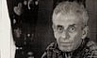

<!DOCTYPE HTML PUBLIC "-//W3C//DTD HTML 4.01 Transitional//EN"
<head>
    <link rel="preload" href="menu.html" as="fetch" crossorigin>
<meta http-equiv="Content-type" content="text/html; charset=utf-8" />
<title>Библер и вокруг</title>
<meta name="title" content="Библер и вокруг: философия, логика, культурология, теория образования, Bibler and around: philosophy, logic, culturology, educational theory">
<meta name="description" content="Труды В.С. Библера - создателя оригинальной концепции диалогики; воспоминания о нем и посвященные ему работы; работы участников группы 'Диалог культур'; Proceedings of the V.S. Bibler - creator of the original concept of dialogics; memories of him and proceedings dedicated to him, proceedings of 'Dialogue of Cultures' group">
<meta name="abstract" content="Библер, Ахутин, Берлянд, ШДК, школа, диалог культур, школа диалога культур, диалогика, философия, логика, культурология, теория образования, Bibler, Ahutin, Berlyand, SDC, a school, a dialogue of cultures, the school of intercultural dialogue, dialogics, philosophy, logic, cultural, educational theory">
<meta name="keywords" content="Библер, Ахутин, Берлянд, ШДК, школа, диалог культур, школа диалога культур, диалогика, философия, логика, культурология, теория образования, Bibler, Ahutin, Berlyand, SDC, a school, a dialogue of cultures, the school of intercultural dialogue, dialogics, philosophy, logic, cultural, educational theory">
<meta name="page-topic" content="bibler.club">
<meta http-equiv="Cache-control" content="">
<meta http-equiv="Expires" content="Thu, 01 Jan 1970 00:00:01 GMT">
<meta name="Copyright" content="Библер и вокруг">
<meta name="Robots" content="index,follow">
<meta name="Resource-type" content="document">
<link rel="shortcut icon" href="img/favicon.ico">
<script type="text/javascript" src="js/simpletreemenu.js"></script>
<script type="text/javascript" src="js/autoBreadcrumbs.js"></script>
<link rel="stylesheet" type="text/css" href="css/page-player.css" />
<link rel="stylesheet" type="text/css" href="css/flashblock.css" />
<script type="text/javascript" src="player/assets/soundmanager2-nodebug-jsmin.js"></script>
<script type="text/javascript" src="player/assets/page-player.js"></script>
<script type="text/javascript">
soundManager.setup({
  url: 'player/assets/',
  html5PollingInterval: 50
});
function setTheme(sTheme) {
  var o = document.getElementsByTagName('ul')[0];
  o.className = 'playlist'+(sTheme?' '+sTheme:'');
  return false;
}
</script>
<link rel="stylesheet" type="text/css" id="listmenu-o" href="css/style.css" />
</head>
<body>
<script type="text/javascript" src="js/wz_tooltip.js"></script>
<center>
		<div id="header">
		<a href="https://www.bibler.club" ></a>
				<h1>БИБЛЕР И ВОКРУГ</h1>
				<h2>ФИЛОСОФСКОЕ ОБЩЕСТВО</h2>
		</div>
		<div id="content">
		<div id="leftbar">
			<div id="menu-container"></div>
		</div>
		<div id="rightbar">
			<div id="rightbar-container"></div>
		</div>
		<div id="mainbar">
<script type="text/javascript">breadcrumbs()</script>
<h1>От наукоучения – к логике культуры</h1>
<h2>(Два философских введения в двадцать первый век).</h2>
<p>В.С. Библер</p>

<h2>Предисловие</h2>
</p><p>В 1975 году вышла в свет моя книга "Мышление как творчество.
Введение в логику мысленного диалога".
</p><p>
За прошедшие годы эта
работа как бы встроилась отдельной частью в единую <I>логику
культуры</I>.
</p><p>
Основные идеи такой
целостной концепции возникли в предположении, что социальные, -
духовные, - исторические потрясения и перипетии конца XX и уже
зреющего в умах века XXI могут быть поняты как смещение эпицентра
всего человеческого бытия - к полюсу культуры. Соответственно
мышление человека конца XX века может быть осмыслено в понятиях
особого типа разумения - философской логики культуры. Что
подразумевается под словосочетанием "философская логика
культуры", станет ясным из последующего изложения, но уже
сейчас необходимо уточнить контекст всех моих размышлений.
</p><p>
В этой книге (и в
первом, и во втором введении) я буду исходить из следующей
философско-логической гипотезы.
</p><p>
Человеческий разум не
"одноместен", несводим, скажем, к <I>познающему</I> пафосу
мышления (по схеме: понять - означает "познать существо вещей,
как они есть сами по себе..." в своем противопоставлении
незнающему "Я"). Мы привыкли отождествлять любой смысл
<I>понимания</I> (и - понятия) со смыслом <I>познания</I>; любой
смысл разума - с разумом познающим, любой смысл логики - с логикой
как истиной <I>гносеологии</I>. Мы выросли в таком отождествлении,
наши мысли неотделимы от тождества "понять = познать".
Поэтому, когда накануне XX века становится все более ясным, что
бытие вещей, мое собственное бытие, бытие людей и мира не поддается
познающему пониманию, что бытие, иными словами, несводимо к
сущности, сразу же представляется, что рушится разум как таковой,
что разумение, понимание необходимо заменить мистическим
проникновением в тайну бытия (или абсолютным верованием), стоящим по
ту сторону всякого сомнения.
</p><p>
Предполагаю, однако,
что все эти отречения от Высокого рационализма поспешны и
поверхностны. Предполагаю, что Разум насущен сейчас, в XX веке, как
никогда, и новые его определения, хотя и очень необычны, но -
по-новому плодотворны.
</p><p>
В современных
культурных и социальных сдвигах обнаруживается, а в философских и
культурологических исследованиях фиксируется<A NAME="sdendnote1anc" HREF="#sdendnote1sym"><SUP>1</SUP></A>
отнюдь не катастрофа разума, но совсем иной феномен. Накануне XXI
века европейская культура<A NAME="sdendnote2anc" HREF="#sdendnote2sym"><SUP>2</SUP></A>
сосредоточивается как некое "многоместное множество"
коренным образом отличающихся друг от друга форм разумения, или,
если взять сопоставление из иной сферы, трудный контрапункт
самостоятельных Разумов, различных ответов на (различным образом
поставленный) вопрос: "Что означает <I>понимать</I>..." -
себя, других людей, вещи, мир? Очень условно определяя, можно
сказать, что европейский разум есть диалог (общение) "разума
эйдетического" (античность), - "разума причащающего"
(средние века), - "разума познающего" (Новое время) и -
возникающего в ХХ веке особого строя разумения, определения которого
будут даны ниже, в основном тексте. Наведением на определение Разума
XX - XXI (?) веков может быть как раз то, что в нем осуществляется
<I>одновременное общение</I> всех исторически определенных форм
разумения, а его собственный, sui generis, смысл заключен в логике
начала логики, в понимании различных логик в точке их возникновения
и взаимопревращения, взаимообоснования (трансдукции). Но не буду
пока определять этот вновь возникающий Разум детальнее; вернусь к
краткой характеристике общающихся - в европейской культуре -
исторических форм понимания.
</p><p>
Для античного Ума
<I>понять</I> предмет мыслительного внимания означало определить
хаос, эйдетизировать его в космос, в упорядоченное, "украшенное",
эстетически значимое бытие, означало понять предмет в его <I>сущести</I>,
ответить на вопрос (наличие определенного, сквозного вопроса - самое
основное в идее понимания...), <I>что такое быть, действительно и
извечно быть сущим</I>. Не то, что в предмете существенно, каков он,
чем отличается от других предметов (это - пафос Нового времени), но
именно загадочность бытия вещей (их "первосущести" -
Аристотель) мучила и озадачивала разум античного человека.
</p><p>
Именно такая
первосущесть лежала в основе понятия (понять = сформировать понятие)
античной культуры. "Эйдос", внутренняя форма, был
разгадкой и все новой и новой загадкой античной - эллинской в первую
голову - "энигмы".
</p><p>
Иными словами,
бесконечно-возможное бытие вещей и самой человеческой души понятийно
(но и - практически) актуализировалось в апории: быть означает быть
многим - быть означает быть единым, этим, единственным, замкнутым на
себя. Причем эта загадка и эта разгадка была некой "двойчаткой".
</p><p>
Эйдетизировать бытие
вещей вещи означало вместе с тем эйдетизировать собственное бытие,
обрести внутреннюю форму "микрокосмоса", души. Или, еще
раз, отнюдь не "познать" предмет в его "сущности"
(в его "инерционном" способе действия на другое), но -
перевести хаос в космос, огранить неопределенное - вот в чем
заключался античный смысл понятия, античное средоточие идеи
понимания, то есть воспроизведения вещей в уме в качестве
элементарных неделимых узлов (апорий) действительного мышления.
</p><p>
Для средневекового Ума
<I>понять</I> предмет мыслительного внимания означало понять его в
его <I>причащении</I> к всеобщему творцу, к всеобщему субъекту,
означало (это прежде всего относилось к бытию самого человека)
отнюдь не "познать" вещь или человека, как они есть сами
по себе, но активно и трагически <I>причастить</I> их сверхсущему.
Ничтожество самобытия и сверхсущесть истинного бытия - этот пафос
понимания радикально отличался и от апорийного пафоса античности, и
от сущностного, антиномического пафоса разумения в Новое время, от
пафоса логики познания. (Замечу, в скобках, установка на познание,
ответ на вопрос, в чем "сущность" вещей, конечно, всегда
сохранялась в любом строе понимания - и античном, и средневековом;
но только тогда эта установка не была доминантой, идеей понимания;
она была лишь функцией иного пафоса: понимания "сущести"
вещей в античности, понимания "присущести" вещей в средние
века.) Причем в средние века пафос понимания вещей как орудий и
эманаций сил субъектных, единственно сверхсущих, этот пафос был
сквозным и для духовной жизни, и для праксиса человека этого времени
(ср. ремесло, цехи). Смысл причащающего разума был в актуализации
ничтожности самобытия; в актуализации сверхсущего бытия, сущего вне
формы, вне эйдоса, вне собственной сущности.
</p><p>
И <I>только в Новое
время</I> разум становится - по своему основному пафосу - разумом
познания; логика - истиной гносеологии. И только об этом разуме -
разуме познающем - речь специально и углубленно пойдет в первой
части нашей книги.
</p><p>
Но все же сейчас
немного детальнее очерчу смысл познающего разума - основного героя
этих очерков, смысл его особенной всеобщности. Смысл привычного для
нас тождества: понять, уразуметь нечто (или кого-то) означает это
нечто (кого-то) познать. Здесь я буду опираться на привычную для
всех нас интуицию ("как же иначе?") и поэтому смогу быть
краток, предвосхищая во многом все дальнейшее изложение. Но вместе с
тем я пытаюсь взорвать, остранить (сделать странным) это привычное
"само собой разумеется...", заменить его в сознании
удивленным: "Никогда не думал, что это отождествление "понять
= познать" столь рискованно и парадоксально?!" Итак,
предполагаю, что тождество "понять = познать" скрывает в
себе такие предположения: 1. Мое мыслящее "Я" находится по
ту сторону бесконечной реальности мира, отделено от него пропастью
незнания, иноприродности. Оно - это <I>не</I> "Я". (В
отличие от того, что было в античности: тождество микрокосмоса и
макрокосмоса; в отличие от того, что было в средние века: "Я"
- действительно "Я", предмет - действительно предмет
только в своей причащенности всеобщему творцу - Богу...) К тому же
иноприродная мыслящему разуму Вселенная, природа Нового времени,
мыслится как бесконечно открытая, точнее, нескончаемая, - в
пространстве и времени.
</p><p>
2. Мое понимание мира,
себя, других людей есть - по сути своей - "ученое незнание".
Причем здесь недейственно сократовское: "Я знаю; что я ничего
не знаю... Но по истине я знаю (но только не догадываюсь о своем
знании) действительно сущее - в вещах и в себе самом. В вещах, как в
себе самом...
</p><p>
Надо лишь навести свой
ум на истинное знание". В Новое время - другая максима: знать
вещи и самого себя означает обнаружить в вещах нечто независимое от
моих знаний о вещах и от самого моего бытия. Означает обнаружить в
вещах то, что они есть, очищенные от всех посторонних влияний и
искажений, есть сами по себе, "в себе", от-лично от меня и
других вещей.
</p><p>
Знать (мыслить,
понимать...) означает выявить в вещах и людях нечто несводимое ко
мне и моим мыслям, нечто вне-логическое. На этом предположении
основана, кстати, вся стратегия экспериментального познания (см.
последующий текст). И сразу начинается обратное определение.
</p><p>
3. Дело в том, что <I>так</I>
понимать предмет (познавать его) означает осуществлять двойное
умственное (и реальное в своем праксисе) действие.
</p><p>
В первом акте
познающего разума бытие вещей устраняется, выталкивается из всей
вопрошающей сферы мышления. Его следует понять как стоящее не только
вне мысли, но и <I>вне ее теоретического интереса</I>. Вопрос "что
есть бытие? что означает быть?" вообще исключается (и это
сложный подвиг разума) из светлого поля разумного внимания.
</p><p>
Но тогда во втором
акте познающего разумения обнаруживается, что я могу знать о
предмете познания только его действия на меня и другие предметы
(только явления) и - по этим действиям - угадывать, предполагать
возможность действия (это и есть сущность). В познании сущность -
это сила (говоря естественно-научно), способная оттолкнуть мое "Я"
- "в меня...", вещь - "в себя...",
восстанавливая между мной и предметом исходную картезианскую
пропасть, то есть возможность познавательного отношения к бытию. И
вместе с тем сущность есть форма наведения мостов через эту
пропасть, форма того опосредования, которое и составляет сущность
(простите за тавтологию) гносеологической установки. В идее
"сущности" встречаются и отталкиваются идеи "res
extensa" и "res
cogitans". Но сущность понимается
только "по плодам ее" (действиям...). Поэтому знать
сущность я не могу, но помыслить должен. Само же бытие в его
возможности (предбытийности) здесь под вопрос не поставлено; его
нельзя ни познать, ни помыслить; оно должно быть снято в идее
сущности. Снято и - "отгорожено" (скрыто) в этой идее от
самой вопросительности теоретического (но не практического) разума.
Итак, не <I>сущее</I> (античность), не "<I>присущее</I>"
(средние века), но именно <I>сущность</I> вещей и моя (Nota bene!)
собственная сущность - вот что ставит под вопрошающее ударение мысль
Нового времени. В итоге в сеть познающего разума попадает сущность
вещей, но ускользает их смысл и их бытие. А "сущность"
вещей - это то, что может быть наиболее четко и остро преобразовано
в практическое, орудийное использование (= явление). В Новое время с
особой силой ("сила" - вот закраина нововременного
понимания) реализуется принцип "понять вещь, как она есть,
чтобы знать, как действовать, чтобы изменить то, что есть".
Или: "Человек есть то, как он действует, и ничего кроме..."
4. Но это означает, что в пафосе "Познающего разума"
работает такой парадоксальный челнок. Тезис. В движении разума от
развитой теоретической мысли к предмету познания обнаруживается
внеположность предмета и - мысли, иносубстанциальность "разума"
и - "предмета". Сначала в явлениях, в действиях,
воспроизводимых в теории, мыслится, но уже не познается запредельная
сущность вещей (сила действия); затем в этой сущностной силе
предполагается некое исходное бытие, абсолютно непостижимое
теоретическим разумом, напрямую сопряженное с бытием познающего
субъекта. Теоретическое понятие есть предположение вне-понятийного
бытия. Это - тезис Декарта и особенно Канта, предельный в кантовском
учении об "идеях разума". Антитезис.
</p><p>
В движении разума от
вещей к теории (в ядро теоретической системы) обнаруживается полная
ассимиляция вещей силой познающего разума, определяется их - разума
и бытия - абсолютная тождественность. В простейшей схеме это -
оптимизм утверждения: "Я знаю суть вещей". В таком
движении разума бытие - для познания - снимается в идее (в
рефлексии) <I>сущности</I>; сущность понимается (и снимается) в идее
<I>понятия</I>; связь и развитие понятий образует действительную
жизнь понимаемого (здесь это = познаваемого) предмета. Только тогда
мой разум полностью познал предмет, только тогда предмет познания
без остатка переведен в статут познанного предмета, если я понял его
бытие как сущность; сущность - как понятие. <I>Бытие - по сути -
есть понятие</I>! Это - антитезис Спинозы и особенно Гегеля,
достигший предельного выражения в последних параграфах Большой
Логики. Живой, работающий Познающий разум развивается в постоянном
обращении этого челнока. Понять мир в пафосе познания означает
определить его (и самого себя...) как предмет познания и - в
обращении - понять предмет познания в идее познанного предмета...
Вновь предположить его немыслимое (все более отодвигаемое в глубь
вещей, в даль предметности...) бытие... Чтобы - вновь...
</p><p>
Сведу в одну формулу
работу познавательного челнока.
</p><p>
Познать бытие означает
понять мир (актуализировать - в праксисе, в эксперименте, и в мысли
- его бытие) как "предмет и - как смысл Познания" (см. все
сказанное выше); это означает, далее, свести все определения моего
собственного разума и моего собственного телесного бытия в одно
острие - в определенность "<I>Я-познающего</I>",
относящегося к бытию только как к предмету познания (ср. исходное
картезианское противопоставление, - исходное определение мысли как
фундаментального сомнения).
</p><p>
5. Эти исходные
определения требуют, однако, особого отношения к прошлым и будущим
формам понимания. Для познающего мышления Нового времени (пафос
которого в том, чтобы все глубже и точнее познавать единую
бесконечную и бесконечно открытую природу вещей) необходимо все
прошлые формы понимания выпрямить и вытянуть в одну сплошную (хотя,
конечно, и узловатую, узловую) линию единого, восходящего
образования. Культура нововременного мышления - это культура
"втягивания" всех прошлых и будущих культур в единую
цивилизационную лестницу. И - что для нас особенно существенно -
очерченная выше экспозиция работы Познающего разума объясняет,
почему диалог различных разумов осуществлялся в Новое время в форме
диалога нововременного разума с самим собой (разум, рассудок, -
интуиция, - здравый смысл...), а другие формы разумения выпрямлялись
и вытягивались в линию восходящего познания. Но с другой стороны,
именно в форме "Познающего разума" (в форме внутреннего
микродиалога) только и возможна решающая трансформация в разум
диалогический, в разум культуры. Почему это так, на этот вопрос
ответит все последующее исследование.
</p><p>
***
</p><p>
Теперь возможно
вернуться к модным в наше время сетованиям (и - радостям) в связи с
мнимой кончиной Высокого рационализма.
</p><p>
Сейчас повторю одно:
"маргинальность" гносеологически ориентированного разума,
обнаруженная в XX веке, вовсе не означает краха самой идеи
разумения; этот гносеологический "отказ" означает
появление новой доминанты разумения, нового смысла понимания, нового
вопроса, могущего актуализировать новый смысл, новую возможность
бесконечно-возможного бытия. Это новое преображение разума, что
начинается в XX веке (многоместное множество "различных форм
разумения"), может быть наиболее адекватно определено как
сдвиг, трансформация логики мышления ("трансдукция") в
форму разума культуры, логики культуры, или, иначе, как актуализация
бесконечно-возможного бытия в план произведения. Бытие понимается -
в пафосе всеобщего определения культуры - как если бы оно было
произведением. Здесь пока поставлю точку, или, точнее,
вопросительный знак. Что означает понять бытие - мое собственное
бытие, бытие мира, бытие других людей, - как если бы мы понимали
произведение (культуры), какие парадоксы и возможности здесь
возникают, все это пока должно сохранить интерес логически
"детективный", все это будет выяснено в ходе нашего
исследования. Но какая-то заноза в мысли читателя пусть застрянет.
Такой задел догадок и предложений необходим для внимательного
чтения, особенно философской литературы, философских произведений.
</p><p>
И если уж загонять эту
занозу поглубже, сформулирую все же несколько собственно логических
предположений.
</p><p>
Логика культуры,
понимание вещей в идее "произведения" означает: 1)
актуализацию философской логики как диалогики, как логики диалога
логик. Логики, ранее выступавшие и координированные последовательно,
поступательно, в XX веке проясняются в их одновременном общении, в
диалогике самостоятельных Разумов; 2) актуализацию философской
логики как логики парадокса. Раздумье над понятийным
воспроизведением вне-понятийного, вне-логического бытия, бытия
немыслимого, дающего начало мысли, - вот проблема, стоящая в
средоточии разума XX века, накануне века XXI; 3) актуализацию в
соответствии с этим (1 - 2) идеи начала логики, начала многих логик.
Пафос понимания сосредоточен накануне XXI века (в каждой сфере
человеческой деятельности) в той точке, в которой мысль понимается
накануне мысли, бытие - накануне бытия (бесконечно-возможного
бытия), культура - накануне культуры. То есть как "культура
впервые". Или, если вдуматься, как культура в собственном
смысле слова, как произведение.
</p><p>
Предполагаю, что
именно этот, третий, момент ("логика начала логики")
соединяет все определения современной философской логики как логики
культуры.
</p><p>
Конечно, в этом "если
вдуматься..." я забежал далеко вперед, чуть ли не в заключение
книги. Но думаю, что такое краткое предвосхищение целостной
логической картины, образа (в смысле эстетическом) мысли насущно для
каждого философского произведения.
</p><p>
Во всяком случае, мне
это "забегание" и "предвосхищение" было
необходимо, чтобы очертить тот реальный логический контекст, в
который должно быть встроено сейчас (1990 год) мое исследование 1975
года.
</p><p>
Конечно, повторяю, все
эти определения и размышления носят здесь, в предисловии, сугубо
предварительный характер, требуют деятельного обоснования,
скрупулезной конкретизации. Постараюсь далее не скаредничать в такой
скрупулезности. Но все же я должен был сейчас наметить этот
установочный пунктир, хотя бы для того, чтобы уточнить те логические
координаты, в которых будет двигаться дальше мысль автора и
читателя. И чтобы это чтение и это понимание было действительно
философским, оно должно быть очень трудным: одновременно идти от
начала мысли - к концу, от окончания - к началу, иными словами,
философское "исследование - изложение" должно быть (и
всегда является, в той мере, в какой оно - философское...)
своеобразным кристаллом. Философия выдает на-гора то, что
Л.С.Выготский называл синтаксисом и семантикой "внутренней
речи" (мысли в собственном смысле слова).
</p><p>
Правда, надо уточнить
еще один момент. Те определения логики культуры, которые связаны с
идеей "парадокса" и "начала", будут в дальнейшем
изложении развиты менее всего. Эти определения будут представлены
отдельно и детально в книге "Кант. - Галилей. - Кант. Разум
Нового времени в парадоксах самообоснования". Здесь же,
особенно в первой части, я сосредоточу внимание на определении
философской логики культуры только как диалогики. Такое ограничение
объясняется основной задачей предлагаемой книги.
</p><p>
Коль скоро контекст
очерчен, можно точнее определить эту основную задачу.
</p><p>
***
</p><p>
Непосредственно в
предлагаемой книге предполагается дать лишь введение в философскую
логику культуры. Здесь не будет развита сама эта логика, но будет
лишь показана необходимость <I>перехода от философской логики
"наукоучения", характерной для "разума познающего"
(XVII - XIX веков), - к разуму, стремящемуся понять культуру (в ее
всеобщих онто-логических предположениях (канун XXI века)</I>.
</p><p>
Причем сама
необходимость такого перехода ("трансдукции", то есть
логической формы коренного преобразования логических начал в
процессе их логического доведения до предела) будет в этой книге
представлена в двойном плане, в форме двух, относительно
самостоятельных <I>философских введений</I> в XXI век.
</p><p>
Однако, прежде чем
двигаться дальше, остановлюсь на одном понятии, введенном для
терминологической простоты и все же без уточнений могущем лишь
усложнить понимание, особенно у читателей, наторелых в истории
философии.
</p><p>
Речь идет об
определении логики мышления Нового времени как логики <I>наукоучения</I>.
Используя этот термин, я имею в виду не только "Наукоучение"
Фихте, хотя идея фихтевских "основоположений наукоучения",
необходимо выходящих за пределы науки в собственном смысле, в моей
книге очень существенна<A NAME="sdendnote3anc" HREF="#sdendnote3sym"><SUP>3</SUP></A>.
Но главное - в другом. Этот термин точно выявляет одну, решающую для
меня, особенность мышления Нового времени - особенность философской
рефлексии XVII - XIX веков. Философия (прежде всего философская
логика этой эпохи) есть логика обоснования (актуализации) бытия как
предмета познания (см. детальнее основной текст). Иначе говоря, в
философии Нового времени (не в "науке") исходное, само
собой разумеющееся, познавательное освоение бытия отбрасывается в
сферу предельного сомнения, в точку своего до-начального начала,
своей возможности. Это означает, что сама теоретическая мысль, само
научно-теоретическое отстранение от внеположного бытия
(картезианская двусубстанциальность) философски осмысляется только в
той мере, в той форме, в какой познания еще нет, еще под вопросом
его возможность (ср. фундаментальное сомнение того же Декарта).
</p><p>
Вообще-то философия
всегда (когда она "дотягивает" до философской логики)
гнездится в том промежутке, где мысль понимается как начало бытия,
то есть небытие; где бытие понимается как начало мысли, то есть
нечто немыслимое.
</p><p>
В XVII - XIX веках
философская мысль - это мысль, актуализирующая бытие как <I>предмет
познания</I>; это - бытие, понятое как начало познающей мысли (=
сомнения)...
</p><p>
Это - <I>картезианская</I>
дихотомия мысли и протяженности (бытия, отчужденного от мысли). Это
- субстанция <I>Спинозы</I>, понятая как исходное предположение
антиномического взаимоопределения протяженности и (познающей) мысли.
Это - <I>кантовская</I> критика теоретического разума, философски -
в "идеях разума" - очерчивающая бытие, не ассимилируемое
мыслью, это - критика, выталкивающая действительное бытие за пределы
познающей мысли. Это - те же "Основоположения" Фихте,
определяющие субъекта теоретического мышления, субъекта,
"превышающего" собственную гносеологическую активность.
Это, наконец, - система гегелевской Науки логики, необходима
соотнесенная с абсолютным методом, вновь загадочно требующим
самобытийного предмета познания...
</p><p>
Но - в любом варианте
- философия Нового времени реализуется как философское учение о
<I>началах</I> науки, то есть о тех началах, где науки еще нет, где
она только <I>возможна</I> (или невозможна!). Везде тот или иной
вариант "наукоучения".
</p><p>
И так же, по сути
дела, в тех философских системах, в которых побеждает
вне-гносеологическое мистическое или чисто эстетическое, или чисто
этическое отношение к бытию. В системах позднего Шеллинга, или -
Шопенгауера, или - в идеях практического разума, нравственного
императива - в философии самого Канта. В любом случае оселком,
мерилом разумения (или отречения от разума) оказывается отношение к
"разуму познающему", реализуется ли это отношение с
положительным или с отрицательным знаком. В этом смысле и философия
Шопенгауера (или Ницше) есть вариант "наукоучения".
</p><p>
И еще один
существенный момент. Философская мысль всегда обладает склонностью
легко вырождаться в какие-то иные формы духовной деятельности - в
метафизические и религиозные Кредо, в этические Кодексы, в
собственно художественные Интуиции. Обычно только <I>средоточие</I>
философских произведений носит действительно философский характер
(имеет смысл философствования). Это средоточие - <I>философская
логика</I>, то есть мышление, направленное на логическое обоснование
<I>начал</I> мышления - <I>начал</I> бытия. Ясно, что такое
обоснование не может иметь ничего общего с (формальной) логикой
обычного толка, с формами логического движения, основанного на неких
исходных (не подвергаемых сомнению) аксиомах. Или, как говорил
Аристотель, мышление о началах мышления ("нус") коренным
образом отличается от мышления внутри научного знания ("эпистеме").
И именно и только в этой сфере, в невозможной, парадоксальной сфере
логического обоснования начал логики (разве это возможно?)
философская мысль остается самой собой - философией в собственном,
уникальном и неповторимом смысле. Соответственно философская мысль
Нового времени ("наукоучение") остается философией науки
до тех пор, пока она строится не по законам и процедурам науки, но
накануне этих форм и фигур, строится в логических формах,
невозможных для самой науки, строится в понятиях, предполагающих
(только предполагающих - в извечном для философии статуте
фундаментального сомнения) <I>всеобщее определение познающего
разума</I>. В понятиях, предполагающих этот разум из какой-то ничьей
земли.
</p><p>
Вот от логики
наукоучения, в этом исходном смысле, и происходит в XX веке переход
к иной всеобщей логике мышления, - деятельности, - смысла бытия.
</p><p>
Переход к логике,
всеобщей для человека нашей эпохи, знает ли он сам или нет об этом
новом пафосе своего понимания.
</p><p>
Несколько слов о такой
экстенсивной всеобщности новой логики, логики кануна XXI века.
Понимаю всю силу возникающих здесь сомнений ("если и думают
по-новому, то лишь очень и очень немногие люди, да и то, может быть,
где-то в Европе, а вообще-то слова о всеобщности нового мышления,
может быть, и благая, но - иллюзия. Или же просто-напросто высокие
слова для каких-то новых поворотов и целей мышления вполне обычного,
а точнее, для целей здравого смысла"...).
</p><p>
Но я имею в виду
следующее. Во-первых, речь идет о первых (еще очень робких)
зачатках, импульсах новой логики, возникающей неизбежно в
катастрофах нашей эпохи. В катастрофах, затрагивающих сознание и
мышление всех людей Земли, - конечно, в той или другой степени
осознанности. А для философской логики новое <I>начало</I> мысли
более всеобще, чем ее "продолжение". "Корешки"
существеннее "вершков". Во-вторых, смещение в "объем"
одного сознания многих несводимых ранее смыслов бытия, смыслов
культуры (западного, восточного, античного, средневекового,
нововременного...) это - феноменология мысли каждого человека кануна
XXI века. Это - феноменология, неотвратимо "провоцирующая"
коренное изменение нашего мышления в целом, именно в его всеобщих
основаниях. Впрочем, детальнее об этом см. Второе введение этой
книги.
</p><p>
Итак, два философских
введения в XXI век, - в философскую логику культуры.
</p><p>
<I>Первое введение</I>
- "Диалогика познающего разума"<A NAME="sdendnote4anc" HREF="#sdendnote4sym"><SUP>4</SUP></A>
- раскрывает переход к логике культуры в плане историко-философском.
В плане историко-логическом.
</p><p>
Отталкиваясь от
внутренних антиномий познающего разума, от необходимости - для этого
разума - обосновать - заново, в контексте научно-теоретических
потрясений XX века, собственные начала, я пытаюсь раскрыть и
осмыслить ту "точку", в которой гносеологически
ориентированное мышление "трансдуцирует" в мышление
диалогическое, в понимание, конгениальное разуму культуры. Здесь
есть одна особенность. Ее хочется оговорить заранее. Этот переход
понимается мной не как "восхождение" к какой-то более
высокой ступени разумения, но - как своеобразная <I>взаимная
рефлексия</I>. Разум Нового времени здесь как бы втягивается в ауру
разума диалогического и раскрывает свой внутренний диалогизм,
внутреннюю "диалогику", оказывается моментом, гранью
современной логической полифонии. Вместе с тем разум ХХ века, коль
скоро он рефлектирован в разум Нового времени, раскрывает прежде
всего те диалогические определения, что порождены именно в
соотношении с разумом познающим, то есть с наиболее близким своим
оппонентом и "предшественником".
</p><p>
Впрочем, таким
"предшественником", который в недрах разума диалогического
получает, как было сказано, свою новую и по-новому бессмертную
(голос целостной полифонии) жизнь. В переходе от разума познающего к
разуму культуры обе эти формы разумения (понимания)
взаимообосновывают друг друга, получают изначальную (из общего
начала возникающую) логическую санкцию.
</p><p>
Осмыслить это
взаимообоснование - исторически необходимо связанное именно с делом
наукоучения (не с "эйдосом", не с "причащением")
- и составляет смысл "первого введения" в XXI век. И - еще
одно. В первом введении в логику культуры я обращаю особое внимание
именно на <I>диалогическое</I> определение философского разума XX
века (кануна века XXI). Не на его парадоксологическое определение и
не на его определение как разума начала логики. Дело в том, что мне
для начала существенно было показать, каким образом в логику
культуры включаются иные логические миры, раскрыть смысл <I>общения</I>
(а не "обобщения") как предельной логической идеи
современной логики. Логика общения - вот форма современного
логического ответа на вопрос: "Что есть всеобщее?" Ведь в
первом приближении разум культуры актуализируется именно как разум
общения (диалога) логик, общения (диалога) культур. И, кроме того,
таким путем - через идею "логики диалога логик" - шло мое
собственное философское развитие. Но все же следует помнить, что
"диалогизм" вовсе не является исчерпывающим определением
становящейся сейчас формы понимания. Это только одно из
преобразований логики культуры.
</p><p>
Но <I>вход</I> в
современную философскую логику наиболее естествен через
диалогическое определение.
</p><p>
<I>Второе введение</I>
- "XX век и бытие в культуре" - раскрывает переход к
философской логике культуры в плане собственно <I>культурологическом</I>.
Здесь я анализирую, как формируется новый социум, или, возможно
точнее, - "полис культуры", какие собственно логические
метаморфозы возникают на этой культурологической почве. Стараюсь
понять, почему и каким образом идея культуры приобретает всеобщий
логический смысл, становится основой новых онтологических (то есть
"онтических", бытийных, и вместе с тем - логических)
предположений. Если в первой части введение в логику культуры идет,
так сказать, "продольно", в сфере собственно логических,
собственно духовных превращений, то во второй части такое введение
идет снизу вверх, идет вертикально.
</p><p>
Здесь я разрабатываю
понимание современного разума в векторе: "<I>бытие</I>" (в
культуре) - "мышление" (культуры). В этом схематизме разум
современности осмысливается как "<I>разум впервые</I>", не
имеющий до себя никаких логических превращений, возникающий как
"Deus ex cultura". Но вектор такой "вертикальности"
двойной, взаимообратимый: актуализация бесконечно-возможного бытия в
его культурологической возможности не только исходит из глубинных
процессов социально-культурного характера (см. ниже), но и -
действуя "обратной связью" - проникает в недра культурной
феноменологии, преобразует эти недра, пересоздает их мощной энергией
нового разумения. Понять этот двойной вектор, раскрыть реальный
схематизм его действия - вот основная задача моего "второго
введения". Причем здесь уже нельзя ограничиться "диалогической"
составляющей разума культуры. Здесь необходимо раскрыть целостное
тройное измерение современной логики: <I>диалогическое</I> -
<I>парадоксологическое</I> - и, наконец, измерение "<I>логики
начала логики</I>" (логики "трансдукции"). В общих
чертах такое тройное измерение современной логики будет намечено -
только в порядке "наведения", но не изложения - в
заключение второй части.
</p><p>
Два философских
введения в XXI век задуманы как самостоятельные, "чистые"
линии, четко отделенные друг от друга. Отделенные - даже в смысле
схем <I>обоснования</I>. Если в первом введении это обоснование
заключено в схематизме собственно внутри-логической "трансдукции",
то во втором введении логический схематизм может быть определен как
взаимная детерминация: бытия культуры и - ее логики. Это совершенно
иной схематизм. Но именно в такой самостоятельной логической форме
каждого из введений заключен некий целостный логический замысел.
"Чистые линии" двух введении, не перекрещиваясь явно,
отделенные жесткой логической лакуной, должны вместе с тем как бы
перекликаться в уме читателя, действительно общаться (а не
"обобщаться") в читательском сознании.
</p><p>
Автору представляется,
что в своем движении эти две "чистые линии" дадут некий
логический "конус", единой вершиной которого будет
конкретная логика культуры. В предлагаемой книге конус еще не сведен
к такой вершине, но линии уже начинают сходиться и - сквозь
магический кристалл - угадывается такая целостная философская
логика. Но спокойное изложение этой логики может быть дано только в
отдельной книге.
</p><p>
Немного о логической
последовательности двух частей (введений). Эта последовательность
определяется двумя соображениями. Одно - более внешнее (к сути
проблем). <I>Так</I> (я уже говорил об этом) развивалась моя
собственная мысль. От историко-философской "трансдукции"
(в раздумьях о "предельном переходе" логики Гегеля) - к
культурологической вертикали. Думаю, что "интимная" логика
такого мысленного движения как-то отпечаталась во внутренней связи
моих философских введений. Второе соображение более близко вводит в
суть дела. В первой части введение в логику культуры расположено,
так сказать, "пространственно", действительно локализуется
<I>до</I> этой логики, <I>в пределах</I> мышления Нового времени, в
пределах "наукоучения", но - преображенного в свете
современных логических сдвигов. "Наукоучение"
осуществляется здесь не на своей земле, но на ничейной территории, в
момент диалогической переформулировки. Во второй части ("XX век
и бытие в культуре") автор и читатель уже реально находятся на
Земле XX века, в его духовных "землетрясениях". Вертикаль
этого введения есть вертикаль ("на том стою!")
современного нашего бытия и мышления. Это - <I>введение внутри
одного времени</I> (XX века), это - движение <I>от сознания - к
мысли</I>. Но когда наша мысль взбудоражена переходами и сдвигами в
своем собственном мыслительном Доме (это - действие введения
первого), она совсем иначе - логически осмысленно и ответственно -
воспринимает современный внутридуховный трилистник: бытие в культуре
- сознание - мышление... Или: мышление - сознание - бытие в
культуре.
</p><p>
Итак, еще раз: вот, в
кратких чертах, тот контекст, в который <I>встроена</I> в этой книге
моя работа 1975 года.
</p><p>
Смысл такого контекста
в том, что в нем изменяется исходный <I>замысел</I> "двух
введений". Это - не только два параллельных введения в будущую
логику культуры, в некую, еще не написанную книгу. Это - спираль
мысли. Первое введение вводит во вторую, культурологическую часть.
Второе введение - в часть первую, в размышление
историко-философское. Книга замыкается на себя и перестает быть
<I>введением</I>.
</p><p>
<a href="javascript:history.back();">&larr; </a><a name="chast_1"><h2>Часть первая. (Введение первое) Диалогика познающего разума. Настройка внимания.</h2></a>
</p><p>
Хотелось бы, чтобы
читатель сразу настроился на определенную волну (проблему).
</p><p>
Приведенные ниже
выдержки должны дать такую настройку: "Для доказательства
необходимы два лица; мыслитель раздваивается при доказательстве; он
сам себе противоречит, и лишь когда мысль испытала и преодолела это
противоречие с самой собой, она оказывается доказанной.
</p><p>
Доказывать - значит
оспаривать... Диалектика не есть монолог умозрения... но диалог
умозрения с опытом. Мыслитель лишь постольку диалектик, поскольку он
- <I>противник самого себя</I>. Усомниться в самом себе - высшее
искусство и сила".
</p><p>
"Истина
заключается лишь в единении Я с Ты".
</p><p><I>Л.Фейербах </I>
</p><p>"...Ужасно тесно
спаяны между собой темы о Двойнике и Собеседнике: пока человек не
освободился еще от своего Двойника, он, собственно, и не имеет еще
Собеседника, а говорит и бредит сам с собою; и лишь тогда, когда он
пробьет скорлупу и поставит центр тяготения <I>на лице другого</I>,
он получает впервые Собеседника. <I>Двойник умирает, чтоб дать место
Собеседнику</I>.
</p><p>
Собеседник же, т.е.
лицо другого человека, открывается таким, каким я заслужил всем моим
прошлым и тем, что я есть сейчас... Нужно неусыпное и тщательнейшее
изо дня в день воспитание в себе драгоценной доминанты
безраздельного внимания к другому, к alter ego".
</p><p>
"...Я вот часто
задумываюсь над тем, как могла возникнуть у людей эта довольно
странная профессия - "<I>писательство</I>"... В чем дело?
Я давно думаю, что писательство возникло в человечестве "с
горя", за неудовлетворенной потребностью иметь перед собою
собеседника и друга! Не находя этого сокровища с собою, человек и
придумал писать какому-то мысленному, далекому собеседнику и другу,
неизвестному, алгебраическому иксу, на авось, что там где-то вдали
найдутся души, которые зарезонируют на твои запросы, мысли и
выводы... Особенно характерны... платоновские "Диалоги",
где автор все время с кем-то спорит и, с помощью мысленного
Собеседника, переворачивает и освещает с разных сторон свою тему...
Тут у "писательства" в первый раз...
</p><p>
мелькает мысль, что
каждому положению может быть противопоставлена совершенно иная, даже
противоположная точка зрения. И это начало "диалектики",
т.е. <I>мысленного собеседования с учетом, по возможности, всех
логических возражений</I>. И, можно сказать, это и было <I>началом
науки</I>".
</p><p><I>А.А.Ухтомский</I>
</p><p>
"Я знал, что
пожизненный мой собеседник, Меня привлекая сильнейшей из тяг,
Молчит, крепясь из сил последних, И вечно числится в нетях".
</p><p>
<I>Б.Пастернак</I>
</p><p>
"Достоевский, в
противоположность Гете, самые этапы стремился воспринять в их
<I>одновременности</I>, драматически <I>сопоставить и
противопоставить</I> их, а не вытянуть в становящийся ряд.
Разобраться в мире значило для него помыслить все его содержания как
одновременные и <I>угадать их взаимоотношения в разрезе одного
момента.</I>
</p><p>
...Даже внутренние
противоречия и внутренние этапы развития одного<I> </I>человека он
(Достоевский. - В.Б.) драматизирует в пространстве, заставляя героев
беседовать со своим двойником, с чертом, со своим alter ego, со
своей карикатурой... Из каждого противоречия внутри одного человека
Достоевский стремится сделать двух людей, чтобы драматизировать это
противоречие и развернуть его экстенсивно". "...Особая
одаренность Достоевского - слышать и понимать все голоса сразу и
одновременно..." "...Взаимодействие сознаний в сфере идей
(но не только идей) изображал Достоевский... Каждая мысль... с
самого начала ощущает себя <I>репликой</I> незавершенного диалога".
</p><p>
"Ведь
диалогические отношения... это - почти универсальное явление,
пронизывающее всю человеческую речь и все отношения и проявления
человеческой жизни, вообще все, что имеет смысл и значение... Чужие
сознания нельзя созерцать, анализировать, определять как объекты,
вещи, - с ними можно только <I>диалогически</I> общаться... В каждом
слове звучал... спор (микродиалог) и слышались... отголоски большого
диалога".
</p><p>
<I>М.Бахтин</I>
</p><p>
"Мыслить - значит
говорить с самим собой... значит внутренне (через репродуктивное
воображение) <I>слышать</I> себя самого".
</p><p>
<I>И.Кант</I>
</p><p>
"...Подлинное
свое бытие язык обнаруживает лишь в диалоге... Слово умирает во
внутренней речи, рождая мысль".
</p><p>
<I>Л.С.Выготский</I>
</p><p>
"Вероятно, в
порядке общего предположения можно сказать, что в истории
человеческого мышления наиболее плодотворными часто оказывались те
направления, где сталкивались два различных способа мышления. Эти
различные способы мышления, по-видимому, имеют свои корни в
различных областях человеческой культуры, или в различных временах,
в различной культурной среде... Если они Действительно сталкиваются,
если по крайней мере они так соотносятся друг с другом, что между
ними устанавливается взаимодействие, то можно надеяться, что
последуют новые и интересные открытия".
</p><p>
<I>В.Гейзенберг</I>
</p><p>
В человеке "рассудок
умозаключает и - не знает, о чем он умозаключает без ума, а ум
оформляет, делает ясным и совершенствует способность рассуждения,
чтобы знать, что именно он умозаключает".
</p><p>
<I>Николай Кузанский</I>
</p><p>
Пока - достаточно.
Буду исходить из того, что в сознании читателя уже возникла некая
неясная проблемная установка (только установка, еще не раздумье), и
сформулирую теперь - уже от себя - важнейшие предположения диалогики
познающего разума.
</p><p>
Но - предварительно -
немного о культурологическом контексте этих размышлений, как они
сложились в 1975 году<A NAME="sdendnote5anc" HREF="#sdendnote5sym"><SUP>5</SUP></A>.
</p><p>
***
</p><p>
В 60 - 70-е годы в
философской литературе резко возросло внимание к проблемам диалога
как основы творческого мышления. Своеобразным культурологическим
камертоном здесь оказались книги М.М.Бахтина, и прежде всего
"Проблемы поэтики Достоевского" (переиздана в 1972 году).
Дело не в новизне самой проблемы. Дело в глубине, точности и
продуктивности анализа, в будоражащей силе идей, исторических
реконструкций, в способности Бахтина входить в глубочайший подтекст
человеческого творчества. Дело в том, что сами книги Бахтина стали
серьезнейшим культурным событием, во многом определяющим направление
мысли самых различных теоретиков в самых различных сферах
исследования: в философии, лингвистике, искусствознании, логике...
</p><p>
Но, кроме того, книги
Бахтина "пришлись к слову, к мысли", они, написанные
гораздо раньше, неожиданно стали типичным явлением современной
культурной эпохи. Рядом с книгами Бахтина, до них (до их
переиздания) и после них выходили и выходят книги, статьи, сборники,
посвященные той же проблеме - диалогу как феномену культуры.
</p><p>
В логике такую же
плодотворную роль сыграли книги И.Лакатоса, и особенно великолепная
работа "Доказательства и опровержения". В этой книге
диалог вокруг конкретных математических проблем, представленный
исторически, развернутый сквозь века, оказался ключом для нового и
поразительно глубокого понимания истории науки и ее современных
перспектив. Творческий, конструктивный характер мышления предстал в
книге Лакатоса как стержень логики, в ее самых изощренных и
формализованных отсеках. Развитие идей П.Лоренцена и К.Лоренца
привело к "диалогическому обоснованию логических законов",
к конкретной "логике спора", и это произошло в самой
цитадели математической логики. В языкознании осмысление концепции
Н.Хомского (и критика ее в работах Гудмана, Путнама и других) все
определеннее обертывается теми же антиномиями спора, диалога, как
решающей, порождающей речевой стихии. Но тут снова обнаружилось, что
наиболее глубокие и плодотворные мысли, проникающие в самую суть
"разговора, обращенного к самому себе", были развиты уже
несколько десятилетий назад в гениальной (не надо бояться этого
слова) книге Л.Выготского "Мышление и речь".
</p><p>
Поворот совершился.
</p><p class="blue">
(1990). За это время,
с 1975 года, что-то зациклилось. Идеи Бахтина и Выготского быстро
ушли в сферу интеллектуальной моды, а затем - в девальвированной
форме слов-отмычек - были с досадой отвергнуты (в целостный смысл
новых идей вдумываться стало лень); XX век вообще богат и на
действительно новые идеи, и на умственную лень, погружающую
многообещающие конструкции в глубокий анабиоз. Но смысл идей Бахтина
или Выготского бьется в висках современного разума. Попыткой вскрыть
и развить этот смысл является и эта моя книга. Но теперь - в 1990
году - необходимо включить схематизм "диалогики" в более
широкий и точный культурологический контекст. Это и будет сделано во
второй части настоящей книги.
</p><p class="blue">
И еще один,
заключительный момент этой настройки внимания, снова из 1990 года.
Мое старое название книги: "Мышление как творчество" - не
случайно и должно входить в установку читателя этого первого
введения. Ведь все мои размышления о диалоге познающего разума есть
вместе с тем размышления о том, как возможно раскрыть логику (?)
субъекта мысли, субъекта логики Нового времени, то есть раскрыть
логику готовности создавать научный текст, логику внутреннего
"микросоциума" того Разума, который обречен быть
свободным, быть свободным для своего остранения в произведении, в
данном случае - в произведении научном, в начале научного мышления.
Это - действительно - размышления о логике творчества (в Новое
время). И далее, это размышления о том, в каком смысле такая логика
готовности к продуктивному мышлению действительно может быть
выстроена как логика; наконец, это размышления о том, как в такую
логику включается, обращается (в Новое время) диалог различных
культур, логическая перипетия культуры XX века.
</p><p>
Буду считать, что
настройка свою роль сыграла и возможно сознательно войти в основной
текст.
</p><p>
<a href="javascript:history.back();">&larr; </a><a name="uma_palata"><h2>Раздел первый. Ума палата</h2></a>
</p><p>
(основы диалогической реконструкции Разума Нового времени).
</p><p>
1. Исходное утверждение
</p><p>
Для начала сформулирую
такое утверждение. К середине ХХ века <I>теоретик</I> (наиболее явно
- физик и математик, но, наверное, наиболее остро - логик, и вообще
гуманитарий) подошел к решающему парадоксу. В самых различных науках
почти одновременно обнаружилось, что дальнейшее развитие (и само
существование) теоретического знания зависит от решения одной
проблемы: теоретик должен оказаться способным логически обоснованно
формировать и преобразовывать логические начала собственного
мышления. В противном случае такие начала, как выяснилось, не могут
быть основанием последовательного логического движения.
</p><p>
Это означает,
во-первых, что необходимо освоить логический смысл таких творческих,
глубоко интуитивных (?) процессов, как изобретение изначальных
теоретических идей и понятий. Во-вторых, саму "творящую логику"
необходимо как-то, уже в процессе ее осуществления, поднять в текст
теоретических построений и сразу же, с ходу, закрепить в логике
наличного теоретического знания.
</p><p>
Все это сделать
необходимо, но... невозможно, поскольку в процессе изобретения
исходных теоретических идей самой теории еще нет; она только-только
создается, нащупывается, и, следовательно, требуется осуществить в
теоретической форме нечто - по определению - в теоретической форме
неосуществимое. А если "закреплять" в тексте "изобретение
логических начал", когда они уже изобретены ("интуитивно"),
то... зачем? Если же такие "начала" необходимо заранее
логически обосновывать, то... что это за начала?
</p><p>
2. Логика должна
обосновать собственное начало - стать "диалогикой"
</p><p>
Читатель вправе
спросить: на каком, собственно, основании я утверждаю о столь
критическом положении теоретического знания? почему сформулированный
мною парадокс (да и существует ли он реально вообще?) так насущен
для современной математики, физики или логики? Все эти науки
спокойно себе живут и развиваются (еще как развиваются - все же
эпоха научно-технической революции), сталкиваются, конечно, с
серьезными трудностями, преодолевают их или запутываются в них, но,
судя по всему, творцы современной науки и не помышляют о
необходимости включить в логический строй наличных теорий
интуитивные процессы изобретения исходных теоретических понятий... У
современных теоретиков по горло других, действительных забот.
</p><p>
Попробую все же
показать, почему я отважился на такое сильное утверждение.
</p><p>
***
</p><p>
Начну с некоторых
всеобщих логических трудностей, как будто независимых от современной
ситуации, от логических коллизий XX века...
</p><p class="blue">
(1990). Ход моих
рассуждений в этом параграфе носит несколько раздвоенный, еще
недостаточно решительный характер. Я как будто колеблюсь между двумя
подходами. То, исходя из - пусть уже поколебленного, но все же еще
соблазнительного - отождествления разума только с разумом познающим,
я пытаюсь как бы усовершенствовать логику познающего разума в свете
логических сдвигов XX века. То, уже осознавая, что разум познающий -
лишь один из голосов в полифонии человеческого разумения, я
осмысливаю момент перехода, "трансдукции" познающего
разума в разум диалогический и тем самым осмысливаю замыкание
познающего разума "на себя", оформление этого разума, как
действительно самостоятельного и неповторимого Собеседника в диалоге
культур. Можно было бы эту неопределенность устранить, очистить мой
текст от логических колебаний. Но мне кажется, это было бы
неправильно. Сами эти колебания, сама двуполюсность приведенных
размышлений также симптоматичны и даже необходимы, они
свидетельствуют, что созревание культурологического статута логики -
это трудный момент самой органики исторического движения мысли.
Дальше читатель увидит, что "второй полюс" (идея
сопряжения, диалога, взаимообоснования двух всеобще-особенных логик,
двух форм актуализации бесконечно-возможного бытия) все более
становится единственным средоточием последующего логического
движения. Самым существенным должно быть соучастие познающего разума
в единой полифонии логик XX века.
</p><p>
И содержательная, и
формальная (аристотелевская и современная математическая) логика
сходятся в одном очень существенном пункте.
</p><p>
Обоснование начал
(аксиом, исходных понятий...) логического движения не входит в
задачу <I>науки логики</I>, особенно науки логики Нового времени.
</p><p>
В формальной логике
аксиомы и исходные термины определяются или на основе интуитивной
очевидности (классическая логика), или на основе интуитивно
необходимых "конструктивных схем" (логика интуиционизма),
или определения вообще становятся ненужными, поскольку аксиомы
данной теории переформулируются как теоремы более фундаментальной
теории (программа Гильберта), или регресс в дурную бесконечность
обоснования отсекается в какой-то точке исторического возникновения
данной теории (историческое оправдание, неизбежно связанное с
теоремой Гёделя).
</p><p>
В содержательной
(гегелевской) логике в той мере, в какой она толкуется именно как
логика, а не как гносеология, также обычно отвлекаются от
первоначального формирования исходных для данной теории, наиболее
абстрактных понятий - это, дескать, дело познавательной эмпирии.
Логически освоен только один "пробег" теоретического
мышления: от "точки" возникновения теории до "точки"
ее предельного развития - движение "от абстрактного к
конкретному"<A NAME="sdendnote6anc" HREF="#sdendnote6sym"><SUP>6</SUP></A>,
от бедного (одностороннего) понятия до развернутого единства
многообразия (системы понятий). Конечно, и нижнюю и верхнюю "точки"
можно превращать в многоточия и отодвигать в бесконечность.
</p><p>
И тогда, с одной
стороны, говорить о все большей абстрактности исходного пункта,
вплоть до бессмысленного и абсолютного тождества "бытия и
небытия" исследуемого предмета (это - вниз, в незнание). А с
другой - рассуждать о все большей конкретности будущего
теоретического знания, о том, что в сравнении с всемогуществом
теории XXI века современное знание будет выглядеть бедной,
неразличимой, неразвернутой, точечной абстракцией (это - вверх, в
абсолютное знание)... Все это возможно. Но проблемы такое многоточие
не снимает.
</p><p>
И прежде всего не
снимает проблемы начала логического движения (вопроса, где
начинается логика). По отношению к отдельным позитивно-научным
теориям до поры до времени (до времени, когда становится необходимым
их логическое осмысление) можно отделаться ссылкой на историческую
данность исходного пункта (предположим, принципа инерции или
галилеева принципа относительности), а далее следить за набиранием
конкретности в последующем движении теоретической структуры, за
логичностью воспроизведения - во все более конкретной форме -
исходной понятийной абстракции (к примеру, понятия стоимости в
"Капитале" Маркса). В анализе коренных превращений теории
(перехода от одной теории к другой) могут - опять-таки до поры до
времени - спасти ссылки на "новое экспериментальное открытие",
"замыкание теории на факт", "вмешательство
воображения, развитого в сфере искусства" или, наконец, на то,
что это вообще не наше (логиков) дело...
</p><p>
По отношению к науке
логики все эти ссылки спасти не могут.
</p><p>
Логично то, что
<I>обосновано логически</I>. Если начало логического движения само
логически не обосновано, оно не может быть логическим основанием
всего последующего движения. Тогда говорить о логике невозможно не
только в начальном пункте, но и вообще в целом, тогда такой штуки,
как логика, вовсе не существует - ни в смысле действительной
характеристики процесса мышления, ни в смысле науки логики.
</p><p>
Вряд ли изменят эту
ситуацию оппортунистические надежды на то, что основания логического
процесса можно взять на веру, или условиться об их аксиоматичности,
или взять их просто как определения, но все же сохранить логичность
за счет непререкаемости дедуктивных шагов самого вывода. Дескать,
если основание окажется истинным, скажем эмпирически истинным, то
железная логика умозаключений, или исчисления высказываний,
обеспечит истинность вывода. Позвольте, но ведь тогда должно быть
логически обоснованно само движение умозаключений, тогда логичность
доказательства должна покоиться на каком-то основании, обоснованном
логически? И так до бесконечности. Нет. Тут компромисса быть не
может.
</p><p>
Тем более что имеется
и другая трудность, некогда отмеченная П.Флоренским (в его статье
"Космологические антиномии И.Канта"). Логически корректное
мышление должно быть ясным и отчетливым, для чего "обязано"
опираться на закон тождества. Только тогда, когда одно утверждение
логически тождественно другому, из которого оно выведено или которое
оно обусловливает, между ними нет логической щели, и связь суждений
безупречна в логическом отношении. Но в этом случае доказательство
абсолютно тавтологично и никакого смысла не имеет. Но оно не имеет и
доказательной силы, поскольку каждое А должно иметь свою основу в
не-А, в Б, иначе (в случае полной тождественности с предыдущим)
суждение будет безосновательным, будет лишь декларативным
утверждением, типа "А потому, что А...". Когда нельзя
сказать "если А, то Б", но только - "если А, то...
А", логики нет. Но логики нет и без такой тавтологичности, ибо
тогда между А и Б появляется логическая щель, и вывод оказывается
некорректным. Закон тождества в качестве гарантии логичности
исключает закон достаточного основания, хотя оба они необходимые
условия логического мышления. Для Флоренского эта ситуация (очень
тонко им очерченная) означала неизбежность вывода о границах разума,
о том, что исходное определение разума является его отрицанием.
</p><p>
В контексте наших
рассуждений описанная ситуация очерчивает те предельные условия, в
которых определение разума, логической обоснованности формулируется
как проблема, как логическая трудность.
</p><p>
В самом деле, за
законом тождества стоит абсолютная дискретность (прерывность) мысли:
все рассуждения сводятся к одному неделимому и ни с чем не
соединяемому, абсолютно себе-тождественному. За законом достаточного
основания лежит абсолютная континуальность (непрерывность) мысли;
необходимость постоянного отступления в дурную бесконечность
обоснования.
</p><p>
Если искать основания
логичности данного суждения или понятия в другом суждении или
понятии, обоснования не будет (регресс в дурную бесконечность).
</p><p>
Если искать такое
основание в самом данном суждении (понятии), то восторжествует
полная тавтологичность, и никакого основания снова быть не может.
</p><p>
Для обоснования
данного понятия необходимо иное понятие - этим иным должно быть
(должно быть понято) само обосновываемое понятие - как понятие иной
логики.
</p><p>
Таков категорический
императив (и парадокс) логики.
</p><p>
Но не ужас перед ним
("чур меня, чур, скорее прочь от всякой логики!") и не
усталый компромисс ("зачем искать абсолют, какая есть логика,
такая пусть и будет, а абсолют поищем в других местах, вне логики,
вне рассуждений..."), нет, понимание этого императива как
проблемы, как логической трудности, как загадочного определения
позитивной сущности мышления - путь работающего логика.
</p><p>
Таким путем и пошел
Гегель. Диалектика Гегеля есть форма разрешения антиномии,
превращения "загадки" в действительное логическое начало.
В диалектическом тигле "это" понятие показывает свою
способность быть иным. В понятии вскрывается внутреннее
противоречие, и оно (понятие) оказывается способным быть и
основанием и обоснованным. Понятие обосновывает себя своим развитием
и в конечном счете обнаружением тождественности своего "абсолютного
начала" и "абсолютного конца". Конечный пункт
развития понятий оказывается обоснованием всего логического движения
(выясняется, что этот пункт лежал и в самом начале движения). Гегель
вскрыл, таким образом, реальное и очень существенное позитивное
определение логического движения.
</p><p>
Но в гегелевском
решении загадки было одно уязвимое место. Это решение годится или
для отдельных позитивных теорий (для нефилософской науки), или для
логики чисто гегелевского типа (логики абсолютного идеализма).
Объяснимся.
</p><p>
Пока речь идет о
логике развития отдельных теорий, гегелевская идея позволяет выявить
внутреннюю связь основания и обоснованного и эвристически указывает
на очень существенный момент: вся теория в целом логически
обоснована, если она может быть понята (и логически изображена) как
одно - начальное - понятие, развитое, конкретизированное,
развернутое. Сама предельная развернутость (конкретность) понятия в
форме теории и обосновывает исходное понятие (бедное, абстрактное),
хотя и покоится на его (исходного понятия) основе. Понятие как
единство многообразия (теория) обосновывается понятием как единством
(тождеством) многообразия (понятием в исходном определении), и -
обратно - понятие предмета обосновывается его теорией.
</p><p>
Возможности такого
подхода для анализа логического содержания и историологического
развития фундаментальных научных теорий, скажем механики на
протяжении 200 - 300 лет или математики на протяжении 500 лет,
громадны, хотя еще почти не реализованы. Правда, в физике или
математике необходимо еще обнаружить за обычным дискурсивным текстом
понятийную структуру теорий.
</p><p>
В "Капитале"
такая предварительная работа уже совершена и наличный текст готов
для историологического анализа, для анализа взаимообоснования
исходного понятия и развитой теории. Э.В.Ильенков в значительной
мере осуществил такой анализ и дал четкую и убедительную картину
диалектики как логики развития (и строения) одной научной теории.
</p><p>
Но вот перед
исследователем встает вопрос о логике обоснования "логического
начала" теории, если исходить из предположения (а такое
предположение - историологический феномен), что данная теория не
вечна и не абсолютна. У нее было начало ("точка"
возникновения) и есть завершение ("точка" превращения в
другую теорию). Тогда гегелевский подход разрушается, делается
невозможным, тогда начало и конец теории уже не стоят в отношении
"бедного исходного понятия" и "развитой теоретической
формы этого же понятия". В "конце" теории возникает
новое понятие - понятие новой теории, способное развернуться новым,
более богатым, развитым, конкретным, но иным многообразованием.
Вновь встали "друг против друга" понятие и понятие, один
логический субъект (предмет понятия А) и другой логический субъект
(предмет понятия В) как тождественные логические субъекты. Тогда
гегелевское требование соотнести понятие с самим собой в форме
начала и в форме предельной развитости (конкретности) оборачивается
иным требованием: чтобы обосновать понятие, его необходимо соотнести
с самим собой как с другим понятием - понятием другого логического
субъекта, его необходимо парадоксально самообосновать.
</p><p>
Впрочем, в логике
"Капитала" заложен и такой подход. Понятия "стоимость"
и "прибавочная стоимость" - коренные понятия всей
структуры "Капитала" - развиваются Марксом не только в
контексте "понятие - теория", но и в контексте "понятие
- понятие". В теории экономических отношений капитализма точкой
отсчета служит не только "начало" (генезис), но и "пункт"
превращения - социальная революция, где все развернутые конкретные
отношения сворачиваются, сжимаются, преобразуются в элементарную
ячейку новых отношений, нового общества и именно в этой точке
понимаются.
</p><p>
Взятые в "момент"
радикального превращения, экономические отношения капитализма
осмысливаются так, что исходное для понятий "стоимость" и
особенно "прибавочная стоимость" определение рабочего
времени (как основы общественного богатства) оборачивается
определением свободного времени (как основы всего общественного
развития и как своего рода предопределения всех стоимостных
отношений). Именно понятие свободного времени, которое носит в
"Капитале" характер предпонятия, зародышевого, неразвитого
определения будущих основ "общества самодеятельности"
(Selbstst&auml;tigheitgesellshaft), является глубинным логическим
основанием и понятия "стоимости", и всей развернутой на
этой основе теоретической системы. Не случайно итоговый анализ
капиталистического производства дан в главе "основной закон
капиталистического накопления", где как раз диалектика
свободного и рабочего времени понята как основа всех отношений
экономики капитализма, и в особенности как основа диалектики
необходимого и прибавочного времени внутри времени рабочего.
</p><p>
Но ведь только такая
постановка вопроса и является собственно логической.
</p><p>
Здесь необходима
логика, могущая обосновывать самое себя, то есть действительная
логика, а не "полулогика" Гегеля... Чтобы оправдать такой
странный тезис, вдумаемся в обозначенную ситуацию немного
пристальнее.
</p><p>
Пока мы двигались в
пределах одной теории, логическое и собственно теоретическое
обоснование совпадали: речь шла о том, в какой мере данная теория
может быть принята как развитие (и обоснование) исходного
теоретического понятия. Строго говоря, для такой проверки и логиком
не нужно быть. Работа эта, пускай интуитивно, осуществлялась каждым
теоретиком. Но если речь идет о логическом отношении (основания и
обоснованного, тождественности и нетождественности) между двумя
понятиями различных теорий, то такой вопрос может быть решен только
в пределах <I>науки логики</I>. Понятия (основания и обоснованного)
взяты здесь в такой позиции, когда позитивно-теоретическая связь
между ними невозможна, и, следовательно, обоснование здесь может
быть дано только как логическое, исходящее из общих (всеобщих)
логических отношений.
</p><p>
В точке превращения
теорий нет "логики теории", но есть только (если есть)
"<I>теория логики</I>". Именно эта ситуация нас и
интересует.
</p><p>
Правда, в позитивном,
научном развитии эту трудность возможно обойти при помощи двух
компромиссов, двух способов избежать собственно логической
постановки вопроса и тем самым спасти всеобщность гегелевской
логики.
</p><p>
Первый компромисс
возможен, когда теоретическая система "на подъеме", когда
она интенсивно развивается, а "последней точки" (точки
теоретических превращений) еще не видно и остро стоит вопрос только
о начале теории, о ее исходном пункте. Тогда возможно отодвигать
исходную точку до бесконечности (дескать, все предшествующие теории
- лишь ослабленные варианты или стадии данной, подлинно
"теоретической" теории). Можно и просто сослаться на
эмпирическое происхождение ее начального пункта, а далее
использовать собственно логический критерий. И что очень
существенно, логический критерий будет здесь действовать безупречно
(разумеется, в смысле гегелевской стратегии). Как бы ни возникло
(или даже если вообще не возникло, а всегда было) исходное понятие,
логика взаимообоснования этого понятия и его развитой формы работает
без срывов. Понятие обосновывается своим развитием, а не
происхождением, не формированием, а значит, вопрос "о начале
теории до начала теории" совсем не страшен. Тогда можно быть
оппортунистом и предположить, что исходное понятие возникло как
угодно, скажем по "логике" формального обобщения
(например, как у Локка), а вот развитие этого понятия (и, значит,
его содержание, его логическая форма) строго определяется в рамках
диалектического движения от абстрактного к конкретному.
</p><p>
Во-вторых, возможен и
такой компромисс. Если смена теорий не носит радикального характера
и не означает действительного преобразования коренных идеализаций (к
примеру, понятие "материальной точки" или "потенциальной
бесконечности" остается в XVII - начале XX века логической
основой механики или математики во всем многообразии их вариантов),
тогда трудности обходятся за счет бесконечного отодвигания
(переформулировки) конечной точки данного теоретического развития.
Тогда "концом" теории, обосновывающим ее начало (и
обоснованным этим началом), выступает сама неопределенная развитость
исходного понятия, возможность "сравнить" понятие с самим
собой в разных формах: бедной и богатой, абстрактной и конкретной,
самотождественной и многообразной. То, что это не абсолютный
(гегелевский) конец, ничего не изменяет в логике обоснования.
Существенна сама возможность сопоставления двух различных форм
понятия, но вовсе не законченность, "закругленность" этих
форм.
</p><p>
И в первом и во втором
компромиссе открывается одна возможность: понятие обосновывает само
себя (теоретик обосновывает понятие им же самим), не выходя за
пределы данной логики, но только в разных формах ее реализации - то
в форме себетождественного понятия, та в форме теории. В результате
и овцы целы, и волки сыты. И логический императив выполняется, и нет
выхода за пределы (данной) логики.
</p><p>
Но все эти компромиссы
сразу же становятся невозможными (а гегелевское решение проблемы
бессмысленным) в той предельной ситуации, когда превращение данной
позитивной теории означает - одновременно - коренное превращение
(преобразование) самой логики формирования (определения) понятий,
самой логической возможности определить понятие.
</p><p>
Для Гегеля такого
поворота проблемы не могло существовать. Абсолютное начало логики
тождественно у Гегеля абсолютному "концу"; ничего
радикально нового (логически нового, не заложенного имплицитно в
данной логике) появиться в мышлении не может, знание тождественно
самопознанию, выявлению и конкретизации того, что было сначала
имплицитным и абстрактным.
</p><p>
Но такая концепция
способна только обнаруживать неявную логику развития одной,
бесконечно "длительной" теории; логика существует только
как изнанка (и бесконечная экстраполяция) данного, наличного
теоретического движения.
</p><p>
Если же речь идет о
возможном логическом превращении теории, то есть о необходимости
обоснования (и критики) всей логики ее развития в целом, когда уже
недостаточно того, что понятие проверяется теорией, а теория -
понятием, а необходимо обосновать отношение "понятие - теория"
в свете иного понятия, иной логики, тогда гегелевская логика
отказывает, не "срабатывает". Она работает только на
условиях абсолютного тождества мышления и бытия.
</p><p>
Монологика (в смысле
одна-единственная логика) - это синоним логики абсолютного
идеализма. Она не может обосновывать самое логику, она может только
разъяснять наличное теоретическое движение. Правда, для позитивной
теории такое разъяснение не слишком нужно.
</p><p>
Итак, первое
ограничение гегелевского решения (оно эффективно для понимания
логики развития отдельной позитивной научной теории) - оборотная
сторона второго ограничения (это решение имеет логический всеобщий
смысл только в контексте гегелевской системы). В гегелевском
"решении" основного парадокса логики была заключена
возможность ослабить этот парадокс, лишить его собственно логической
остроты.
</p><p>
***
</p><p>
В ситуации
радикального (логического) "превращения теорий" от логики
не укроешься ни бесконечностью теоретической "конкретизации",
ни ссылками на практику познания.
</p><p class="blue">
(1990). Здесь все
время говорится об обобщенной логике превращения теорий. Но
недостаточно подчеркнуто, что в ХХ веке речь все же идет о схемах
превращения <I>особенных, нововременных</I> форм теоретизирования.
Как мне сейчас представляется (см. Второе введение), теоретическая
составляющая мышления налична <I>в любой культуре</I>. Ее смысл -
установить связи вещей, так сказать, "продольные", в их
отстранении от связей "перпендикулярных" человеческому
телу и духу, от связей, направленных на человека, или - от него. Так
возникает возможность освободить силы <I>самодетерминации</I> и
отсечь (отклонить, преломить, отразить, преобразовать...) связи
"детерминации извне" - связи экономической, генетической,
космической детерминации. В этом смысле теоретическая составляющая
нашего мышления есть одно из оснований свободы и ответственности
индивида и в конечном счете - личности. Но в каждой исторической
культуре теоретическая составляющая направляется <I>особой</I>
доминантой данного строя понимания.
</p><p class="blue">
В античности -
доминантой эйдетического разума; в средние века - доминантой разума
причащающего; в Новое время - доминантой познания.
</p><p class="blue">
В нашем тексте мы
говорим не вообще о теории, а о теории особого типа, теории в
доминанте разума познающего (в задаче: понять сущность вещей, как
они есть сами по себе). Правда, <I>исторически</I> переход в
диалогику мог произойти только в <I>гносеологически</I>
ориентированной теории, доводящей до предела и выпрямляющей все
историческое развитие (см. Гегель) теоретической мысли. Поэтому
определение теорий "познающего разума", как обобщенного
(именно - обобщенного!) типа до-диалогических теорий, все же не
является ошибкой книги 1975 года. Другое дело, что в контексте
развитой логики культуры существует взаимообратимая связь
(взаимообоснование) любых теоретических структур - античной и
нововременной; современной (канун XXI века) и античной и т.д. Но об
этом собственно логическом (а не историческом) взаимообосновании
речи пока еще нет.
</p><p>
Коль скоро речь идет
именно о логике коренного преобразования теорий, а не об их
происхождении, то хочешь не хочешь, но новой теории уже (просто
феноменологически) предшествовала "старая" теория;
определенная связь между ними уже есть, и ее необходимо "только"
осмыслить (обосновать) логически. В такой ситуации практический
критерий (к примеру, экспериментальная необходимость нового понятия)
не замещает логического критерия (самообоснования), но сам должен
быть понят логически.
</p><p>
А поскольку в переходе
к новой теории должно быть оправдано (или отвергнуто) и исходное
понятие "первичной" теории, то и практическое
происхождение последней теперь должно быть представлено
(переосмыслено) <I>как логическое обоснование</I>. Понятие,
первоначально сформированное (или истолкованное) на путях
формального индуктивного обобщения - возьмем этот банальный случай,
- должно быть теперь понято как обоснованное совсем иной логикой,
чем логика его эмпирического происхождения, должно быть обосновано
логикой иного, нового (радикально нового, логически нового) понятия.
</p><p>
Возникает собственно
логическая проблема. Необходимо возвращение "на круги своя".
Пусть радикальное преобразование теории стало необходимым
исторически (теория привела к выводам, противоречащим тем
основаниям, из которых эти выводы были "дедуцированы";
караул, парадокс!). Но коль скоро это произошло, то вопрос встал
строго логически: вся теория снова сжалась в исходное понятие,
обращенное теперь на себя, взявшее себя под сомнение. Возникла
проблема самообоснования этого понятия, его переопределения, его
коренной трансформации. И такое обоснование (преобразование) может
быть дано только в контексте науки логики, поскольку теоретическая
дедукция из данного понятия сама поставлена под вопрос. Проблема
начала теории непосредственно превратилась в проблему логического
начала, начала логики.
</p><p>
...Продумав "изнутри"
логические трудности и возможные компромиссы гегелевского "решения"
логических парадоксов, мы вновь возвращаемся к <I>категорическому
императиву логики</I> в его предельно бескомпромиссной,
парадоксальной форме, но теперь это - форма парадокса творческого
мышления. Резко возросла логическая конкретность "нашего"
императива. Его смысл неожиданно получил историческое наполнение.
Необходимость самообоснования понятий и суждений (помните, - иначе -
антиномия между законом тождества и законом достаточного основания)
теперь обернулась эвристическим требованием: логическое обоснование
предполагает осмысление (во всеобще-логической форме) процесса
перехода от старой теории к новой, процесса изобретения теорий.
</p><p>
Но ведь требование это
- правда, пока еще без основания его радикально-всеобщего
логического смысла - типичное дитя XX века, плод современной
теоретической революции.
</p><p>
Мы начали с всеобщих
логических трудностей, как будто независимых от современной
логической ситуации. Сейчас начинает выясняться исторический смысл
этой всеобщности. Весь поворот проблемы, преодоление ее мистичности
отнюдь не наша заслуга. Это "заслуга" времени.
</p><p>
***
</p><p>
В XX веке одной из
горячих точек в развитии науки оказались <I>парадоксы теории
множеств</I>. Не входя сейчас в математические детали, обращу
внимание на взрывную силу самой логической постановки вопроса.
</p><p>
В парадоксах теории
множеств речь идет о возможности включения, к примеру, множества
всех множеств, не являющихся собственными элементами, а число
"подведомственных" этому определению множеств. Если это
(бесконечное) множество есть элемент самого себя, то, значит... оно
не является собственным элементом; если же оно не есть элемент
самого себя (не является множеством, подпадающим под свое
определение)... то именно тогда, и только тогда, оно является
собственным элементом<A NAME="sdendnote7anc" HREF="#sdendnote7sym"><SUP>7</SUP></A>.
</p><p>
Вот этот парадокс в
расхожей, полушутливой редакции, предложенной Расселом. Деревенский
брадобрей должен брить тех, и только тех, жителей деревни, которые
не бреются сами. Должен ли брадобрей брить самого себя? Если он
будет себя брить, значит, он бреетея сам, а значит, он себя брить не
имеет права. Но если он себя не будет брить, значит, он имеет право
себя брить... Шутейный этот парадокс демонстрирует глубокую
парадоксальность "множества всех множеств, не являющихся
собственными элементами".
</p><p>
В логическом плане
существенно, что при таком подходе определение понятия "множество"
перестает быть абстрактным ярлычком, объединяющим общие свойства
класса "предметов". Само это определение рассматривается
теперь не как имя для иных предметов, а как особый предмет, как
особое множество (бесконечное), обладающее в свою очередь некими
"свойствами". Теперь выясняется, что определение понятия
не только может быть отнесено к самому себе, но что именно в таком
самоотнесении (то есть только в понимании определения как
"определенности", как предмета определения) понятие имеет
смысл, может считаться обоснованным, а не произвольным. Но вся
логика обычных, формальных определений и вся логика математического
аппарата, при этом используемого, приспособлена была (в XIX веке)
для понятий-ярлыков, терминов, для сокращенных наименований некоего
иного предмета, иных предметов. Вот логическая основа всех
"математических парадоксов". И понятие "множество"
здесь только пример, образец, хотя отнюдь не случайный.
</p><p>
Указанный "пример"
обнаруживает парадоксальность одного из самых благополучных
отношений формальной (не математической) логики - отношения между
объемом и содержанием понятия. По сути дела, в понятии "множество"
впервые логически определяется (раскрывается) содержание самого
понятия "объем понятия". И неожиданно оказывается, что
если "объем" бесконечен, то есть если необходимо учитывать
не только наличные объекты данного определения, но и возможные,
конструируемые - по какой-то схеме - идеализованные объекты
(элементы), то тогда сами понятия "объем" и "содержание"
будут тождественными и между ними не существует тривиального
обратного отношения (чем шире объем, тем уже содержание, и
наоборот). Предметы, на которые распространяется данное понятие,
коль скоро они взяты в их актуальной бесконечности (как бесконечное
множество), не нейтральны, не независимы друг от друга. Между ними
есть определенная связь, соединяющая их в мыслимое целое по
определенному закону (форме). Эта связь, единство, схема построения
и есть как объем, так и содержание самого понятия "множество".
Определение такого понятия выступает одновременно как построение
особенного, парадоксального предмета (элемента), обладающего
способностью полагать себя в качестве бесконечного множества
(элементов).
</p><p>
Это и означает, что
предмет реализуется в тождестве особенного и всеобщего определения;
определение множества относится и к самому "определению"
как особенному предмету. Сразу же возникает трудность самоотнесения
понятий (понятие должно быть определением самого себя), сразу же
рушится вся формальная теория определений и вся формальная теория
дедукции.
</p><p>
Парадоксальным
(невозможным для эмпирического бытия) оказывается сам <I>предмет</I>
определения, взятый как <I>определение</I> предмета (самого себя).
Ведь такой предмет должен в то же время и в том же самом отношении
быть и особенным (конечным) предметом, и бесконечным всеобщим
множеством!
</p><p>Впрочем,
математическая логика давно признала, что суть парадоксов теории
множеств не в понятии "множество", но в понятии "понятие".
Собственно, математико-логическая переформулировка
теоретико-множественных парадоксов и говорит о парадоксе
"самоприменимости" "несамоприменимых" понятий.
Правда, математическая логика продолжает рассматривать этот парадокс
только как формально логический (понятие применимо к себе тогда, и
только тогда, когда оно к себе неприменимо) и не видит, что здесь
речь идет о переходе формально-логического определения понятий в
определение содержательно-логическое, диалектическое. В этой
ситуации определение понятия (в процессе его самоотнесения)
приходится рассматривать как особый предмет определения. В исходном
парадоксе - как особое множество, а в собственно логической
идеализации - как парадоксальную (бесконечную) форму бытия
особенного (конечного) предмета (к примеру, как движение по
бесконечно большой окружности, выступающее определением каждого
конкретного инерционного движения).
</p><p>
Нас (автора и
читателя) интересует сейчас лишь всеобще-логический смысл
"парадоксов теории множеств" (проблема самообоснования).
Что касается разрешения этих парадоксов, то это не наше дело, а дело
самих математиков и математических логиков. Но все же выскажу
несколько соображений и о разрешении парадоксов, но, конечно, только
в содержательно-логическом плане. Это будут все те же размышления о
проблеме самообоснования логики.
</p><p>
Вспомним еще раз
расселовского брадобрея. Когда он бреет самого себя, то... жителя
деревни бреет брадобрей. В качестве того, кого бреют, брадобрей
принадлежит к множеству жителей поселка (которые не бреются сами), в
качестве того, кто бреет, брадобрей относится к совсем иному
множеству - брадобреев. При тайком повороте выясняется, что речь
идет не о парадоксальности определения одного логического субъекта
двумя атрибутами, а о том, что, брея себя, брадобрей выступает
(расщепляется) в двойном бытии - брадобрея и жителя, в форме двух
логических субъектов. Это во-первых. Во-вторых, брея себя, брадобрей
превращает себя (жителя) в брадобрея и превращает себя, брадобрея, -
в жителя поселка, который не бреется сам. Брадобрей здесь не только
"относится" к двум множествам одновременно; брея себя, он
порождает оба множества, определяет их. В момент бритья он возникает
как элемент множества "не бреющих себя" и как элемент
множества "брадобреев". Конечно, в плане наивной теории
множеств он "бреется сам" (относится к множеству
"самобреющихся"), но в строго логическом плане существенно
его становление (его бытие - в возможности) как брадобреем, так и
жителем, которого бреет брадобрей. Брея самого себя (наличное
бытие), "он" делает себя небреющим (его бреет брадобрей) и
делает себя (осуществляет, реализует себя) в качестве брадобрея. И
здесь не просто игра слов или спекуляция на неряшливости исходных
определений, как решит формальный логик.
</p><p>
Безусловно, я могу
сказать, что неопределенное понятие "брадобрей" в
парадоксе Рассела скрывает два понятия, два множества (брадобреев и
жителей деревни), и если не путать два эти качества нашего Х, то
никакого парадокса не будет. Сказать так возможно, и это будет
правильно. Но тогда мы не поймем, что за внешней неряшливостью
скрывается существеннейший логический момент. Именно по отношению к
самому себе понятие брадобрея оказывается не элементом множества, а
учредителем, основателем радикально (логически) нового множества.
</p><p>
"Пропущенные
через игольное ушко" парадокса, исходные множества
преобразовались; они теперь иные множества, становящиеся самими
собой в тот момент, когда брадобрей священнодействует, брея самого
себя. Брадобрей здесь не "исходный" парикмахер,
учрежденный по приказу то ли мэрии, то ли Бертрана Рассела. Тот
должен брить, и все. Основная работа нашего брадобрея - порождать
(обосновывать) особое множество лиц, не бреющих себя именно в тот
момент и именно потому, что и когда они себя бреют, это не
множество, это субъект, порождающий множество. Или еще так:
множество, порождающее самого себя.
</p><p>
Исходные множества
расселовского парадокса (множество не бреющих себя и множество
совершающих сей обряд) - это множества обычные, поэлементные, они
объединяются воедино только потому, что одинаково ("поодиночке")
не бреются или бреются. Их определение нейтрально к своему предмету.
Но множество (из одного человека), порождаемое брадобреем (коль
скоро он себя бреет, то не бреется сам), - это совсем иное
множество, больше того, переход к иной теории множеств (шире - к
иной логике).
</p><p>
Множество всех
множеств, не являющихся своими элементами, не может наличествовать в
качестве своего элемента и не может не наличествовать. <I>Оно
порождает себя в качестве своего элемента и тем самым порождает себя
в качестве множества, не могущего быть своим элементом</I>. Оно не
собственный элемент и не "не собственный элемент", оно -
<I>потенция</I> того и другого, или, точнее, субъект, формирующий то
и другое множества.
</p><p>
Такое множество
порождает себя как предмет определения и одновременно как
определение предмета. Порождает себя как понятие!
</p><p>В теории множеств (не
только в ней, но сейчас мы продумываем именно эту горячую точку
развития математики) произошло исторически определенное
самоотнесение коренных логических идеализаций всего теоретического
мышления Нового времени, тех особенных предметных идеализаций,
которые сделали некогда возможным (необходимым) расщепленное
развитие одной логики в двух формах - логики определения и логики
доказательства.
</p><p>
Речь идет прежде всего
о самоисчерпании (в теории множеств) такой исходной идеализации
математического мышления Нового времени, как отождествление (слабое,
оппортунистическое) потенциальной бесконечности, бесконечности
вывода и определяемой величины (скажем, скорости в данной точке в
нулевой промежуток времени).
</p><p>
"Актуальная
бесконечность" канторовской теории множеств потребовала
непосредственного отождествления бесконечности и конечности,
континуальности и дискретности в определении всеобщего "предмета"
математической мысли (множества). Это требование означало, далее,
необходимость коренного изменения методов дедукции (логики в узком
смысле слова), необходимость привести дедукцию в соответствие с
радикально "самозамыкающимся", самообосновывающим себя
идеализованным предметом.
</p><p>
Чтобы последнее
утверждение было ясным, немного о логических предпосылках такой
постановки вопроса.
</p><p>
Исходные идеализации
каждой особенной логической культуры - всегда формы введения
бесконечности в определение конечного, особенного предмета. Логика
Нового времени вводит в определение конечного предмета бесконечность
(потенциальную) таким образом, что между предметом и его бесконечным
"приближенным" измерением всегда остается щель, совпадение
оказывается неполным; вычисление (измерение) никогда не может быть
до конца тождественным определению. Именно поэтому логика
"определения" и логика "вывода" могли
существовать раздельно, квазисамостоятельно, и логический вывод
никогда не замыкался на содержательное определение, а содержательная
теория ничего не подозревала о своем логическом формализме. В таких
условиях исходная идеализация (определение) оставалась по ту сторону
логического движения; этой идеализации не могло коснуться лезвие
логического анализа (между определением идеализованного предмета и
логикой дедукции вечно сохранялся зазор). Опасности самообоснования
не могли стать реальными логическими проблемами. Исходные "аксиомы",
не замыкаясь на себя, великолепно работали "от себя", в
расчете тех или иных "физических процессов".
</p><p>
В теории множества
такого зазора уже не может быть, идея бесконечного приближения к
дискретной величине уже не "срабатывает". "Быка",
то бишь дискретное, конечное, особенное, надо сразу же "брать
за рога", то бишь за его бесконечное континуальное, всеобщее
определение. В конкретной (относительно конкретной) математической
теории обнаруживается симптом всеобщего логического кризиса. Идея
предмета (линии, числа, "точки") как актуальной
бесконечности требует постоянного целенаправленного внимания к
проблеме самообоснования логических начал; ведь бесконечность
анализа должна теперь изнутри войти в определение конечного
предмета.
</p><p>
Характерное для
"конструктивизма" понимание "бесконечности" не
как наличного "предмета", а как метода (формы) построения
(определения) конечных особенных предметов изменяет ситуацию еще
радикальнее и требует еще более органичного и осознанного слияния -
в единой, небывалой логике - теории <I>вывода</I> и теории
<I>определения</I>. Между тем все наличные методы дедуктивного
"вывода из..." или "приближения к..."
органически не приспособлены к задачам самообоснования понятий.
</p><p>
В парадоксах теории
множеств вылез наружу не математический (в узком смысле слова)
кризис, а <I>кризис оснований всей логики Нового времени</I>,
логики, чье содержание неявно всегда развивалось в русле
математических идеализаций.
</p><p>
Перед нами - снова -
категорический императив логики.
</p><p>
И может быть,
наибольшая трудность (неразрешимость) теоретико-множественных
парадоксов в том и состоит, что парадоксы эти пытаются решать как
узкоматематические или (и) как формально-логические. Между тем
эвристическая, творческая сила этих парадоксов обнаруживается только
в процессе "сдирания" с них узкоматематической и
математико-логической формы и переформулировки их как коренных
парадоксов всей логической культуры Нового времени.
</p><p>
Это утверждение
следует точно понять. Дело не в том, что "математическая форма"
есть какая-то превращенная, неадекватная форма логической культуры
мышления Нового времени. Ничего подобного. Форма математического
размышления (движение и превращение математических идей) есть
наиболее адекватная форма логического движения мысли в XVII - начале
XX века. (Другой вопрос: всегда ли для мышления наиболее продуктивна
его наиболее адекватная форма?) Но в XX веке возникает необходимость
новой логической формы - формы возникновения новой логической
культуры. Весь смысл парадоксов теории множеств состоит в этой
потенции смены логической формы (и коренного логического содержания)
творческого движения мысли.
</p><p>
Парадоксы
сигнализируют, что необходим переход от расщепленной формы
логического движения (логика определения - логика доказательства) к
логике <I>самообоснования</I>.
</p><p>
В логике
самообоснования логики (понятия) математика действительно уже не
может быть адекватной (всеобщей) формой движения мысли. В логике
самообоснования наиболее адекватной является философская форма
размышления (критика собственной логики). Вот в чем смысл
сформулированного выше утверждения, что творческая сила парадоксов
теории множеств обнаруживается в процессе "сдирания" с них
узкоматематической формы. Такое "сдирание" есть внутренний
замысел этих парадоксов, есть пароксизм превращения философии в
адекватную (и осознанную) форму логической культуры (XX века)<A NAME="sdendnote8anc" HREF="#sdendnote8sym"><SUP>8</SUP></A>.
</p><p>
Конечно, в математике
(или физике) основной императив логики пока еще не сформулирован в
адекватной - для логических потенций XX века - всеобщей форме, но он
уже предстал в форме такой особенной теоретической проблемы,
"решение" которой и состоит в обнаружении ее всеобщности.
Непосредственно разговор шел о том виде, который эта проблема
приобрела в математике, жаждущей стать философией. Тот же процесс
происходит и в физике, но на этих страничках я не буду обсуждать еще
и эту проблему.
</p><p>
Надеюсь, что теперь
первоначальное наивное недоумение - "да разве позитивные науки
так уж остро нуждаются в разрешении трудностей логического
обоснования исходных начал теоретического движения, то есть в
разрешении трудностей введения в науку логики процессов изобретения
новых идей?" - сменилось более серьезными и продуктивными
размышлениями. И коренное из них - над проблемой самообоснования
логики, самообоснования понятия.
</p><p>
***
</p><p>
Однако все сказанное
выше только начало, только введение в нашу проблему. Теперь мы и
подходим к сюжетам нашей настройки.
</p><p>
Понять (и развить)
язык теоретического текста как язык самообоснования (самоотнесение
понятий) означает понять (и развить) этот один язык как некое
двуязычие, как речь внутреннего (внутри единой теории) диалога.
</p><p>
Думаю, что
необходимость такого вывода ясна. Необходим один язык, поскольку
обращение к метаязыку запрещено во избежание регресса в дурную
бесконечность. И одновременно такой язык должен быть для самого себя
иным, вторым языком, способным служить формой самообоснования
("самоотстранения") исходного теоретического текста.
</p><p>
И наконец, это должен
быть язык (речь) внутреннего диалога, в котором осуществляется
непрерывное взаимообращение текстов, их полифония, контрапункт, а не
просто сосуществование.
</p><p>
Ничего себе, "условия
задачи"... Да стоит ли при таких условиях вообще браться за
нее? Не проще ли вернуться к старому доброму регрессу в дурную
бесконечность превращения аксиом данной теории в теоремы теории
более фундаментальной? К тому же, если вспомнить, что "регресс"
этот был основой всего научного прогресса в XVIII - начале XX
века...
</p><p>
Но... что же все-таки
делать с парадоксами обоснования математики и вообще с теми
логическими трудностями, о которых речь шла выше? Нет, очевидно, без
парадоксальных "условий" не обойтись, а что касается
"двуязычия" одной теории, то воспроизведем для бодрости
уже приведенные в нашей настройке слова В.Гейзенберга ("в
порядке общего предположения можно сказать, что в истории
человеческого мышления наиболее плодотворными... оказывались те
направления, где сталкивались два различных способа мышления")
и будем развивать свою проблему дальше.
</p><p>Логический смысл
сформулированного только что парадокса раскрывается в той предельной
ситуации, когда речь идет о собственно логической теории (о науке
логики), а не о какой-то позитивной, пусть самой общей,
математической или физической теории.
</p><p>
Логическое обоснование
логики (ее исходных положений, начал) требует, чтобы логик взглянул
на свое мышление со стороны (а что тут "сторона"? Какое-то
другое мышление, что ли, не мое?). Очевидно, здесь может быть лишь
один рациональный выход: моя логика должна быть (но может ли?)
освоена мной как диалогическое столкновение двух (минимум)
радикально различных культур мышления, сопряженных в единой логике -
логике спора (диалога) логик. Логик должен быть нетождественным
своей логике, должен быть "над" ней, "больше"
нее, вне ее. Утверждение, что в "логику" (в
непосредственную логику мышления и в науку логики) необходимо
включить критерий ее истинности, критерий ее (логики)
самообоснования, неизбежно ведет к предположению, к предопределению
какой-то "диалогики", какого-то радикального спора, когда
каждое из моих "Я" (внутренних собеседников) обладает
своей собственной логикой - не "худшей", не "лучшей",
не более "истинной", чем логика "другого Я". Но
вместе с тем здесь не требуется никакой "металогики"
(которая стояла бы где-то над моим спором с самим собой). Не
требуется, поскольку само бытие моей логики - в качестве диалогики -
определяет ее постоянное развитие: в ответ на реплику внутреннего
собеседника "Я" развиваю и коренным образом трансформирую,
совершенствую "свою" аргументацию, но то же самое
происходит с логикой моего "другого Я" (alter ego). Это
постоянное развитие "постоянно" лишь до той точки, где
происходит коренное преобразование всей "диалогики" в
целом, где формируется новый диалог, новые "действующие лица"
внутреннего спора.
</p><p>
Так примерно можно
себе представить возможную жизнь диалогического разума... если
продумать все последствия идеи самообоснования логической теории.
Принять такое предположение как-то не очень хочется. Ведь сразу же
возникнут два принципиальных вопроса:
</p><p>1. Что останется
вообще от логики (той железной логики, которая "требует сделать
вывод, что..."), если предположить некую полилогичность нашего
мышления?
</p><p>2. Зачем вообще нужна
эта "диалогика", эта проверка "логики" "логикой"
(и их взаимопревращение), когда существует иная, радикальная
проверка: логика проверяется практикой, мышление - бытием? Не
является ли это кружение белки мышления в колесе "диалогики"
просто-напросто бегством от жизни, от практики, от старой мудрости
Гете - "теория друг мой сера, но вечно зелено дерево жизни..."?
Нет, принимать наше предложение явно не следует (риск большой, а
толк неясен)... но и не принять как будто нельзя...
</p><p>
3. Снова к проблеме
самообоснования.
</p><p>
Где остановились
Гегель и Фейербах...
</p><p>
Что же делать? Прежде
чем ответить на этот вопрос (и на вопросы, поставленные выше),
обратимся снова к некоторым размышлениям и трудностям Гегеля, что
позволит еще более углубить и обострить проблему.
</p><p>
Само собой ясно, что
именно для Гегеля обсуждаемая проблема должна была встать с особой
остротой. В полном и окончательном своем развороте <I>логика</I>
мышления должна была "съесть" в "Логике" Гегеля
самое мышление. В самом деле, если на всех промежуточных станциях
следования (развертывания абсолютной идеи) мысль оставалась мыслью,
то есть была мыслью о чем-то, имела предмет (этим предметом была
сама мысль как объект самопознания), то в заключительной точке,
когда мысль познала себя полностью, всеобщее (идея) уже не могло
противопоставляться особенному (одному из моментов своего
развертывания) как своему предмету.
</p><p>
Больше того, как раз в
той точке, в которой определение субстанции окончательно должно было
перейти в определение абсолютного субъекта (духа), субъекта-то уже и
быть не могло: исчезал объект мышления и деятельности, и "субъект"
оказывался пустышкой, ему было нечего познавать и не на что
действовать...
</p><p>
У мысли уже не было
предмета (все было понято как мысль), но, значит, мысль теряла свой
собственный статут. Отныне всеобщее (мысль в своем абсолютном
логическом развитии) могло противопоставляться, чтобы оставаться
мыслью, только иному всеобщему - не мысли, не логике, или, если
переформулировать этот тезис, логика должна была противопоставляться
иной логике, радикально иному пониманию того, что логично,
радикально иному типу понятия. Но в таком случае исчерпывается сама
идея (далеко не только гегелевская) монологики. Рациональный смысл
такого утверждения опять-таки может быть только один: мышление в
полном своем развитии "натолкнулось" (что это означает?)
на радикально иное бытие, которое требует иной логики, иного способа
мышления, иной формы логического движения, <I>иного субъекта логики</I>!

</p><p>Но тогда (пойдем еще
дальше) необходимо принять такой ход мысли: в своем предельном
развитии понятие не только реализует все свои возможности понимания
(все стало понятным, все вошло в понятие); одновременно предельное
развитие понятия означает предельное развертывание непонятности
мира, его внепонятийности. Чем более я понимаю предмет, тем более в
нем фокусируется непонятное, тем более я способен формулировать эту
непонятность (проблемность) предмета (мира), тем более становится
ясным, что "мне" необходима иная логика, необходимо
превращение логик (но это означает, что я должен мыслить иначе,
должен быть другим). Все вышесказанное требует предположить, что
внеположность бытия мышлению должна войти в определение самого
мышления (понятия), то есть что материализм должен быть понят и
развит как логика!
</p><p>Но такие выводы
означали бы снятие всей гегелевской логики в целом, означали бы
преодоление идеализма как статута логики. Кто же в здравом уме и в
трезвой памяти, да еще в сознании всемогущества своего мышления
решается на самоубийство?!
</p><p>Гегель не раз вплотную
подходил к этой проблеме, проникал в самое ее ядро и... в последний
момент закрывался от проблемы тончайшими кружевами монологической
диалектики.
</p><p>
Вот один из
характернейших примеров. Второй том "Науки логики" -
"Учение о понятии". Развивая диалектику всеобщего понятия,
Гегель приходит к идее, что для определения всеобщего, для его
обоснования необходимо как-то выйти за его пределы, за пределы
понятия (?), необходимо определить всеобщее как особенное. Но в
данном контексте быть особенным означает... быть иным всеобщим,
всеобщим особенной логики и, следовательно, иметь "вне себя"
какую-то иную, всеобще-особенную логику... Гегель понимает всю
необходимость такого вывода.
</p><p>
Он пишет: "Особенное
есть само всеобщее, но оно есть его различие или его соотношение с
некоторым <I>другим</I>, его <I>свечение вовне</I>; но налицо нет
никакого другого, от которого особенное было бы отлично, кроме
самого всеобщего. - Всеобщее определяет себя; таким образом, оно
само есть особенное; определенность есть его различие; оно отлично
лишь от самого себя. Его виды суть поэтому лишь (a) само всеобщее и
(b) особенное. Всеобщее как понятие есть оно же само и его
противоположность (бытие, не мысль? - В.Б.), которое опять-таки есть
оно же само как его положенная определенность; оно охватывает собой
последнюю и находится в ней у себя. Таким образом, оно есть
тотальность и принцип своей разности, которая всецело определена
лишь им самим. Нет поэтому никакого другого истинного деления, кроме
того, при котором понятие отодвигает само себя в сторону, как
<I>непосредственную</I>, неопределенную всеобщность; именно это
неопределенное создает его определенность, или, иначе говоря,
создает то обстоятельство, что оно есть некоторое <I>особенное</I>.
И то и другое есть особенное, и потому они соподчинены... Если мы
говорим здесь о двух противостоящих, то мы должны... также сказать,
что... их определенность <I>друг против друга</I> есть, по существу,
вместе с тем лишь одна определенность, та отрицательность, которая
во всеобщем проста и едина (einfach ist)... Понятие есть абсолютная
мощь именно потому, что оно может свободно отпускать имеющееся в нем
различие, дозволять ему, чтобы оно приняло образ самостоятельной
разности, внешней необходимости, случайности, произвола, мнения, в
которых, однако, мы должны видеть не более чем абстрактный аспект
<I>ничтожности</I>"<A NAME="sdendnote9anc" HREF="#sdendnote9sym"><SUP>9</SUP></A>.
</p><p>
В этих размышлениях
Гегеля, как и во многих других таких же фрагментах, сосуществуют два
возможных, но совершенно исключающих друг друга хода мысли.
</p><p>
Одна возможность.
Всеобщее может определить себя как всеобщее только в
противопоставлении самому себе как особенному, то есть на основе
признания, что в понятие необходимо включить идею бытия,
нетождественного понятию, идею противоположности бытия и мышления (а
не только гегелевскую идею тождества бытия и мышления, бытия и
понятия...).
</p><p>
В контексте логики это
может означать только одно: когда мыслитель начинает спорить со
своим собственным мышлением, с безоговорочным "логика
требует...", тогда начинается спор бытия с бытием, практики с
практикой и соответственно понятия с понятием, логики с логикой.
Тогда начинается процесс формирования иной (еще не логичной,
внерациональной, еще только имеющей быть логики.
</p><p>
Определенное понятие
данной логики (развитое, конкретное) наталкивается в своем полном
развитии (в задаче самообоснования) на необходимость освоить иной
тип бытия, еще неопределенный и неопределимый (логически), еще
могущий быть определенным только абстрактно, бедно, "точечно"
- не теорией (многообразием понятий), но одним понятием,
понятием-потенцией...
</p><p>
Гегелевское погружение
ножа логики в масло бытия дальше невозможно. Мысль наталкивается на
нечто твердое, непроницаемое, на нечто внелогичное. Теперь логика
или ломается, или перековывается в иное лезвие, в другой логический
металл.
</p><p>
Гегель великолепно
видел такую возможность, такой ход мысли. Вот место из
"Феноменологии": "Начало нового духа есть продукт
далеко простирающегося переворота многообразных форм образования,
оно достигается чрезвычайно извилистым путем и ценой столь же
многократного напряжения и усилия. Это начало есть целое, которое
возвратилось в себя из временной последовательности, как и из своего
пространственного протяжения, оно есть образовавшееся <I>простое
понятие</I> этого целого... В то время как первое явление нового
мира... есть лишь свернувшееся в свою простоту целое... для
сознания, напротив того, еще не потеряно воспоминание о богатстве
предшествующего наличного бытия. Во вновь появляющемся образовании
оно не находит раскрытия и различения содержания; но в еще меньшей
мере оно находит то развитие формы, благодаря которому с
несомненностью определяются различия, и в их прочные отношения
вносится порядок. Без этого развития наука лишена <I>общепонятности</I>
и кажется находящейся в эзотерическом владении нескольких отдельных
лиц..."<A NAME="sdendnote10anc" HREF="#sdendnote10sym"><SUP>10</SUP></A>

</p><p>Здесь сформулирована
необходимость превращения теорий (в конечном счете - логики),
необходимость выхода в диалогику, необходимость коренного
преобразования наличного логического движения - в точке сжатия
теоретической системы - в новое (бедное) простое понятие, в начало
новой логики, новой теории. Но здесь же сформулирована и боязнь
такого превращения понятий, такого изобретения нового предмета
познания (и деятельности), грозящего полным объединением науки, ее
погружением в эзотеричность и неопределенность.
</p><p>
Все начинать
сначала... Снова - начало логики, снова - формирование логического
из внелогического, формирование нового Разума из нового безумия...
Очень рискованно. "Эта противоположность (развитости
исторической культуры и абстрактности каждого нового понятия. -
В.Б.) и есть... самый главный узел, над развязыванием которого в
настоящее время бьется научное образование и относительно которого
оно еще не достигло надлежащего понимания"<A NAME="sdendnote11anc" HREF="#sdendnote11sym"><SUP>11</SUP></A>.
</p><p>
Но сам Гегель не стал
развязывать этот узел. Он отшатнулся от неразличимости,
неряшливости, неопределенности новых начал, отшатнулся от соблазнов
безумия ("не дай мне бог сойти с ума...", а будет ли еще
новый Разум, неизвестно...).
</p><p>
И дело тут не в
какой-то личной нерешительности Гегеля и даже не в (как бы это ни
было важно) боязни признать какую-то чудовищную логику бытия,
нетождественную логике понятий. Дело в моментах глубоко объективных.
</p><p>
Хотя логически выводы
о необходимости определить всеобщее (логику) в контексте
диалогичности были неизбежны, реально - в развитии
позитивно-научного, в частности естественнонаучного, знания - такая
возможность и необходимость была еще крайне далека.
</p><p>
Возникало противоречие
между отдаленной логической необходимостью выхода за пределы
монологики и живой, острейшей исторической необходимостью развивать
<I>ту же логику</I> - логику Нового времени, логику Галилея и
Декарта.
</p><p>
Тем более что, исходя
из абстрактной необходимости коренного преобразования логик и их
сопряжения в диалогической системе, никак нельзя было определить или
хотя бы догадаться, как может преобразоваться наличная (к началу XIX
века) логика, во что она перейдет, какое новое начало назревает...
Что же, менять синицу в руках на журавля в небе?...
</p><p>
Но ситуация была еще
напряженней.
</p><p>
Тот тип содержательной
логики, который установился в эпоху Галилея и Декарта, был
непроницаем и для идеи "диалогики", и для идеи включения в
понятие - непонятного, внепонятийного, внелогического бытия
предметов. Для логики Нового времени было характерно жестокое
закрепление (принципиально) неподвижного субъекта мышления,
всемогущего именно своей неизменностью и своим неизменным, все более
и более глубоко идущим погружением в объект (бесконечно раскрывающим
все новые и новые свои стороны, определения, связи). Субъект был
радикально неизменен, фиксирован в точке действия вовне, хотя и
приобретал все новые и новые орудия познания и деятельности.
</p><p>
Соответственно
определения бытия вещей (скажем, определение "силы")
постоянно отодвигались от субъекта и могли логически
воспроизводиться только в форме антиномически расчлененных
определений действия на <I>другое</I> (инобытия, бытия в другом).
Исходная "неподатливость" бытия логике (определение
возможности бытия) вообще выталкивалась из науки, из теоретического
разума в "метафизику", в сферу запрещенных вопросов ("Что
есть сила?", "В чем причина тяготения?" и т.д.), в
сферу "чистого" и "прикладного" практического
разума. В такой ситуации помыслить о возможности полилогичности и
диалогичности значило помыслить об абсолютном выходе из логики, о
полном отречении от разума вообще.
</p><p>
Априоризм логики,
неизбежный в таких условиях, мог приобретать различные формы:
ослабленный кантовский вид (априорность отдельных понятий -
пространства, времени, закона...) или более сильный, неукротимо
последовательный, гегелевский - абсолютная неизменность и априорная
необходимость одной единственно возможной логики, одной формы
логического движения. Но в любом случае он означал неизменность и
предопределенность бесконечного движения в глубь одного и того же
бытия (все более глубоко и конкретно познаваемого), неизменность и
предопределенность одного и того же субъекта деятельности
(соответственно - мышления).
</p><p>
Движение мысли <I>от</I>
субъекта, мысль, осуществляемая как обнаружение бесконечных
"сущностных" матрешек ("это по сути своей есть то"),
не позволили мыслителю замкнуть логику "на себя". Идеи
самоизменения и самообоснования, радикального изменения субъекта
мышления была недоступна мыслителю Нового времени.
</p><p>
Правда, Гегель
осуществил самозамыкание логики. Но он был вдохновлен не пафосом
самообоснования (самоизменения) логики, но единственно возможным,
если находишься на полпути логического движения, пафосом - пафосом
общения между "всеобщим" (общественным) субъектом и
субъектом личностным; пафосом образования.
</p><p>
В процессе своего
<I>образования</I> (в гегелевском смысле) личность должна пройти и
актуализировать, освоить (сделать своей) всю историю культуры.
Развертывание культуры (логической в первую очередь) есть ее
перематывание из безличной формы всеобщности в личностную форму
культуры индивида и именно тем самым придание культуре мышления
(идее) формы культуры субъекта (духа). Анонимно всеобщее переходит
здесь в форму индивидуального, субъективного, а индивидуальная жизнь
приобретает форму всеобщности, культурности. Не познание нового, а
именно образование, усвоение наличной культуры есть секрет
гегелевской логики. Замыкание такой логики на себя означает полное
развертывание того, что было ранее, для индивида, свернутым,
означает актуализацию, осознание объективного наличного,
неосознанного.
</p><p>
"Индивид,
субстанция коего - дух вышестоящий, пробегает это (историческое. -
В.Б.) прошлое так, как тот, кто, принимаясь за более высокую науку,
обозревает подготовительные сведения, давно им усвоенные, чтобы
освежить в памяти их содержание; он вспоминает их, не питая к ним
интереса и не задерживаясь на них. Отдельный индивид должен и по
содержанию пройти ступени образования всеобщего духа, но как формы,
уже оставленные духом, как этапы пути, уже разработанного и
выровненного... в педагогических успехах мы узнаем набросанную как
бы в сжатом очерке историю образованности всего мира. Это прошлое
наличное бытие - уже приобретенное достояние того всеобщего духа,
который составляет субстанцию индивида и, таким образом являясь ему
внешне, - его неорганическую природу. - В этом аспекте образование,
если рассматривать его со стороны индивида, состоит в том, что он
добывает себе то, что находится перед ним, поглощает в себя свою
неорганическую природу (культуру. - В.Б.) и овладевает ею для себя.
Со стороны же всеобщего духа как субстанции образование означает
только то, что эта субстанция сообщает себе свое самосознание, т.е.
порождает свое становление и свою рефлексию в себя. Наука
воспроизводит это образовательное движение в его полноте и
необходимости, а также то, что уже низведено до момента и достояния
духа в процессе формирования последнего. Целью является
проникновение духа в то, что такое знание"<A NAME="sdendnote12anc" HREF="#sdendnote12sym"><SUP>12</SUP></A>.
</p><p>
Гегелевская концепция
(логика образования есть логика как таковая) отвечает тем задачам
мышления человека Нового времени, о которых я только что сказал.
</p><p>
Для такого мышления (и
деятельности) необходим логический челнок, снующий между анонимным
(всеобщим) и личностным (индивидуальным) субъектом.
</p><p>
А. Вне
непосредственного материального действия (на предмет) культура
должна выступать для меня как образование, как всеобщий -
развернутый во времени - процесс усвоения знаний, накопленных
человечеством (знаний - не действий). Каждое новое знание, мною
вносимое в этот духовный амбар, может быть принято и включено в
реестр культуры только после того, как оно будет интерпретировано -
<I>в системе доказательства</I> - в качестве <I>вывода</I> из
старого знания (в котором оно извечно, хотя и неявно, содержалось),
то есть после того, как оно сможет выступить даже для меня, его
изобретателя, в форме момента образования, осознания и освоения,
развертывания и конкретизации всеобщей и, по существу, не могущей
быть обновленной идеи. Односубъектность (всеобщий субъект
деятельности - один и неизменен) и однопредметность (в познании
осуществляется только бесконечное погружение в тот же предмет, а
предметом этим оказывается - после процедуры доказательства - все то
же, хотя до этой процедуры и не выявленное, знание) - вот основание
и смысл логической культуры Нового времени.
</p><p>
Б. В акте
непосредственного действия на предмет образовательный статут
культуры исчезает; я могу (и, по сути, должен) ничего не знать о той
силе общественного могущества, которую я использую - в машине, в
расчете, в "кнопке" моего включения... моего
исчезновения... Во <I>что</I> я включаюсь, в <I>чем</I> исчезаю, уже
несущественно.
</p><p>
Сила моего действия на
вещи - не во мне самом, не в моей неповторимости и даже не в моей
образованности, а в моей способности (лучше сказать - в моем
способе) применять всеобщую силу общественного субъекта, в моей
способности быть точкой приложения и опоры некоего всеобщего
объективного движения. Чем менее я мешаю действию этой анонимной
силы, чем менее я вношу в мое действие отсебятины, тем более я
способен транслировать целое, использовать его как свое орудие
(машину, логарифмическую линейку, алгоритм решений, ЭВМ). Чем жестче
я отделен от собственного действия, тем более мое действие
эффективно.
</p><p>
Такой логический
челнок был невозможен и бессмыслен в другой период, к примеру, в
средневековье. Там образование было непосредственно образованием
действующего субъекта. Образовывался прием, существующий только во
мне, в ловкости моих рук и моего ума. Средневековое знание было
знанием об умении, логика была логикой умения, логикой того, что
есть "у меня" (это отнюдь не этимология), а вовсе не
знанием о рациональности мира, не знанием о том, как мир может
действовать вместо меня, заменяя мое умение. Такое заменяющее
субъекта знание стало предметом логики только в Новое время и
наиболее осознанно как раз в "Логике" Гегеля.
</p><p>
Сейчас самое время
обратиться ко <I>второй возможности</I> "определения всеобщего
как особенного", заложенной в приведенном выше фрагменте "Науки
логики". Возможность эта, полностью реализованная в системе
Гегеля, состоит в идее, что всеобщее можно понять (не выходя за
пределы монологики), если представить его одновременно как
<I>расчлененно</I> всеобщее, как бесконечное подразделение (через
моменты развертывания абсолютного знания) и как <I>целостно</I>
всеобщее, как нерасчлененно всеобщее, которое обще всем своим
моментам, есть их одновременность, снятость. Тогда всеобщее
определяется как особенное <I>по отношению к самому себе</I> (но в
разных определениях), без необходимости выходить на другое всеобщее,
на не-логику (на иную логику). Вспомните: "...понятие есть
абсолютная мощь именно потому, что оно может свободно отпускать
имеющееся в нем различие, дозволять ему, чтобы оно приняло образ
самостоятельной разности, внешней необходимости, случайности,
произвола, мнения, в которых, однако, мы должны видеть не более чем
абстрактный аспект ничтожности". И дальше: "Понятие,
поскольку оно определяет или различает себя, направлено отрицательно
на свое единство и сообщает себе форму одного из своих
идеализированных моментов <I>бытия</I>... Особенное имеет
всеобщность внутри самого себя как свою сущность; но поскольку
определенность различия <I>положена</I> и тем самым обладает бытием,
<I>всеобщность есть в нем форма, а определенность, как таковая, есть
содержание</I>"<A NAME="sdendnote13anc" HREF="#sdendnote13sym"><SUP>13</SUP></A>.
</p><p>
Бытием (отпущенным от
понятия) обладает отдельная вещь, отдельный момент целого и целое,
последовательно развернутое в своих моментах; но, <I>в сущности</I>,
все это едино суть, все это есть идея, бытие идеи. Субстанциальным
эквивалентом такой логики определения всеобщего по отношению к
самому себе (так, чтобы не нужно было вводить "другое"
всеобщее - другого логического субъекта и другого субъекта логики)
является хотя бы система Спинозы. <I>Природа</I> определяется в этой
системе по отношению к самой себе (causa sui), но за счет введения
двух различных определений: Природа как Natura naturans (природа
творящая, нерасчлененная, вневременная, неподвижная) и та же Природа
(всеобщее) как Natura naturata (природа сотворенная, расчлененная,
развертывающаяся во времени, изменяющаяся). И у Гегеля, и у Спинозы
спасение (от чуда полилогичности) находится в одном и том же - во
введении "квазисубъекта": природы сотворенной, духа
сотворенного. Диалог логик также приобретает здесь характер и форму
<I>квазидиалога</I>. Собеседник заменяется Двойником (вспомним
размышления Ухтомского), alter ego ссыхается до того же самого "Я",
но в другом определении, в другом обличье.
</p><p>
Стоит, впрочем,
сказать, что только в "Логике" Гегеля (а не в "Этике"
Спинозы) эта идея нашла свое осознанное <I>логическое</I> выражение,
была логически осмыслена (в сути и в последствиях своих) и как раз
поэтому доведена до грани превращения в иную логику, до предельных
соблазнов логики "диалогической".
</p><p>
И еще одно замечание.
В гегелевской логической концепции выясняется происхождение дедукции
и родо-видовой иерархии понятий, столь необходимых для мышления
Нового времени. Для Гегеля разделение природы на виды и роды,
распределение понятий по ступеням строгой дедукции есть лишь
отражение исходной логической идеи - идеи двойного существования
всеобщего, как творящего и сотворенного, как нерасчлененно
целостного и расчлененно последовательного, выводного.
</p><p>
"Многообразие ее
родов и видов и бесконечная разность ее (природы. - В.Б.)
образований может вызывать в нас <I>восхищение</I>, ибо в восхищении
<I>нет понятия</I>, и его предметом служит то, что лишено
разумности... подобно тому как дух, хотя он и имеет понятие в образе
понятия, пускается также и в представление и носится по бесконечному
многообразию представлений.
</p><p>
Многообразные роды и
виды, встречающиеся в природе, не должны считаться чем-то более
высоким, чем произвольные причудливые мысли духа в его
представлениях. И те и другие, правда, являют нам повсюду следы и
предвосхищения понятия, но не изображают последнее в верном
отображении, так как представляют собой сторону его свободного
вне-себя-бытия..."<A NAME="sdendnote14anc" HREF="#sdendnote14sym"><SUP>14</SUP></A>

</p><p>Итак, "логика
сотворенная" (содержательно-дедуктивное, расчлененное на
моменты движение понятия, движение самопознания) воспроизводит
"логику творящую" (логику вневременного, неподвижного и
нераздельного, абсолютного духа). Сама "сотворенная логика"
бледно и слабо воспроизводится в логике формальной дедукции и в
логике родовидовой иерархии.
</p><p>
Единственно прочным и
жестко фиксированным фрагментом этого "вырождения"
оказывается его конечный момент - формальная логика. Ей уже не во
что вырождаться, и она всегда равна самой себе. Ее можно записать и
без особых усилий разглядеть в обычном, открытом тексте. Среднее
звено (содержательная дедукция, воспроизведенная в гегелевском
развитии понятий) существует, лишь вырождаясь - в мгновение своего
перехода - в формальную дедукцию. Исходное звено - "творящая
логика" (процесс изобретения новых понятий и прежде всего новых
логических начал) - вообще не может быть фиксировано в науке логики,
во всяком случае в своем собственном определении, в качестве
творящего начала. Это "звено" (логическое определение
творящего субъекта) должно быть исключено, как нечто туманное,
неопределенное, иррациональное, почти неприличное, из осознанной
логики мышления, осознанного в своей форме. В логической форме может
быть осмыслена только логика сотворенная, только воспроизведение
(самопознание) того, что уже создано. Субъект познаваем логически
только в творении своем, но не в своем замысле, не в своем действии
на самого себя, не в диалоге.
</p><p>
***
</p><p>
Как раз там, где
остановился (там, куда бежал от чуда диалогичности) Гегель, начал
свое переосмысление гегелевской логики Фейербах. Пытаясь возвести
вне-понятийное бытие в статут логики (хотя и не справившись с этой -
невозможной для начала XIX века - задачей), Фейербах бьет в самое
солнечное сплетение интересующей нас проблемы.
</p><p>
Приведем более
детально те размышления Фейербаха, которые были уже воспроизведены в
нашей вводной настройке: "Бытие составляет единство с той
вещью, которая существует. У кого ты отнимешь бытие (независимость
бытия от понятия. - В.Б.), того ты лишаешь всего... Бытие не есть
<I>особенное</I> понятие... оно - все".
</p><p>
Логика знает лишь один
радикальный диалог - с не-логикой, с бытием. "Для
доказательства необходимы <I>два лица</I>; мыслитель <I>раздваивается</I>
при доказательстве; он сам себе противоречит, и лишь когда мысль
испытала и преодолела это противоречие с самой собой, она
оказывается доказанной. Доказывать - значит оспаривать... Диалектика
не есть монолог умозрения с самим собой (!? - В.Б.), но диалог
умозрения с опытом. Мыслитель лишь постольку диалектик, поскольку он
- <I>противник самого себя</I> (как мыслителя. - В.Б.). Усомниться в
самом себе - высшее искусство и сила... <I>Не ничто, а чувственное,
конкретное бытие есть противоположность бытию</I> в общем смысле,
как его понимает логика. Чувственное бытие отрицает логическое
бытие, первое противоречит второму, а второе - первому".
</p><p>
"Только та
философия, которая свободна и имеет мужество усомниться <I>в себе
самой</I>, только та философия, которая возникает из своей
<I>противоположности</I>, есть единственно <I>беспредпосылочная</I>
философия в отношении к своему началу". В логике Гегеля "идея
высказывает другое, нежели то, что она мыслит. Она говорит: бытие,
она говорит: сущность, но под этим она мыслит лишь самое себя.
Только в конце ее слова совпадают с мыслью, но здесь она отрекается
от того, что она сказала вначале, и заявляет: то, что вы до сих пор,
в начале и в продолжение всего пути, считали за другое существо, -
смотрите! - это и есть я сама... Именно поэтому доказательство,
опосредствование абсолютной идеи оказывается лишь формальным. Идея
созидается и удостоверяет себя не через <I>действительное другое</I>...
идея созидается путем <I>формального</I> мнимого противоположения"<A NAME="sdendnote15anc" HREF="#sdendnote15sym"><SUP>15</SUP></A>.
</p><p>
Этот отрывок существен
для нас во многих отношениях.
</p><p>
Прежде всего,
знаменательно своеобразное переплетение двух критик логики Гегеля.
Фейербах как-то удивительно легко переходит от критики Гегеля за
"монологичность" в смысле отсутствия спора "мыслителя
с самим собой" к критике за тот же недостаток, понимаемый,
однако, теперь как отсутствие <I>спора мышления с бытием</I>. Это
переплетение (или смешение - как угодно) пронизывает не только
процитированный фрагмент, но составляет отличительную особенность
всей философии Фейербаха в целом. И на мой взгляд, такое
переплетение ("в философию необходимо ввести разговор Я и Ты"
- "в философию необходимо ввести спор мышления и бытия")
отнюдь не слабость, а величайшее (и очень мало осмысленное)
достоинство фейербаховской философии.
</p><p>
Разберемся в смысле
такого переплетения шаг за шагом.
</p><p>
Через всю критику
гегелевской логики Фейербах проводит один сквозной тезис: роковой
порок Гегеля (и его системы, и его метода) - это абстрактная
тождественность мышления и бытия, отсутствие у бытия
самостоятельного (по отношению к мышлению) логического статуса. Дать
определение логики (как целого), обосновать начало логики означает
обосновать логику идей логикой вещей, ввести в обоснование логики
"диалог умозрения с опытом". Для Фейербаха формальный
характер (ограниченность) гегелевского "доказательства"
состоит именно в том, что само доказательство не может быть
обосновано в своих началах, в бытии вне логики; оно оправдывается
только своей тавтологичностью, только тем, что бесконечность вывода
есть бесконечность круга, в котором конец тождествен началу.
</p><p>
Надо - в контексте
логики - обосновать логику бытием как внелогическим началом! Но
задача эта кажется абсурдной. Для логики действительно самое трудное
- Гегель знал, где остановиться, - выразить в логической форме
всеобщность бытия как начало (принцип обоснования) всеобщности
мышления, то есть логически всеобщего. Иными словами, для логики
самое трудное - ввести в логику (воспроизвести в понятиях) процесс
изобретения понятий, переход от не-понятия к понятию. (Здесь под
не-понятием имеется в виду, конечно, не "представление", а
радикальная внепонятийность бытия, его несводимость к понятию.)
</p><p>И Фейербах, вслед за
Гегелем, но совсем на иных путях, отшатывается от трудностей этой
парадоксальной задачи. Если Гегель капитулировал в пользу мышления,
Фейербах капитулирует в пользу (внелогического) бытия. Но то, как
именно происходила "капитуляция" Фейербаха, для нас
существенно.
</p><p>
Вкратце суть дела
можно выразить так.
</p><p>
А. Фейербах понял, что
"истинная диалектика мышления" требует ввести в мысль
"онтологический" спор мышления и бытия, умозрения и опыта,
ввести в логику идею независимости и изначальности бытия. Понимая
бытие только как бытие мысли, идеи, Гегель уничтожает всю
серьезность и "всамделишность" диалектических
противоречий.
</p><p>
Б. Фейербах раскрыл
необходимую (требуемую) форму такого (действительного)
диалектического противоречия: мышление и бытие должны выступать (в
логике) в качестве двух "субъектов диалога" - в качестве
"Я" и "Ты". Чтобы стать логическим, противоречие
(и тождество) мышления и бытия должно приобрести диалогическую
(социально-логическую) форму. Но...
</p><p>
В. Для Фейербаха (как
и для Гегеля) логика может быть только монологикой
(одной-единственной логикой - логикой монолога). Если так, да
здравствует диалог и да сгинет логика! (Из анализа той же ситуации
Гегель сделал противоположный вывод: да здравствует логика и да
сгинет диалог!)
</p><p>Центральным звеном
размышлений Фейербаха является идея необходимости (и невозможности)
представить онтологический статут диалектики в форме
социально-логической (спор "Я" и "Ты" в процессе
мышления).
</p><p>
Чтобы расшифровать
приведенную схему, обратим внимание на одну странную "опечатку"
в цитированном выше тексте Фейербаха. "Диалектика не есть
<I>монолог</I> (курсив мой. - В.Б.) умозрения с самим собой, но
диалог умозрения с опытом".
</p><p>
В "Основных
положениях философии будущего" снова встречаем ту же
"опечатку", но в другом, социально-логическом контексте:
"<I>Истинная</I> диалектика не есть <I>монолог одинокого
мыслителя с самим собой, это диалог между Я и ТЫ</I>"<A NAME="sdendnote16anc" HREF="#sdendnote16sym"><SUP>16</SUP></A>.
</p><p>
"Монолог
умозрения с самим собой". "Монолог одинокого мыслителя с
самим собой". Позвольте, но ведь это даже грамматически
бессмысленно. Если "с самим собой", то уже не монолог! Это
- диалог! Очевидно, Фейербах должен был сказать другое: диалектика -
это не диалог одинокого мыслителя (или умозрения) с самим собой, а
диалог "Я" с "Ты" (или: умозрения с опытом). Но
если бы он сказал так и соотнес диалог с диалогом, все
противопоставление сразу бы потеряло всякий смысл. Но он так не
сказал и не мог сказать, как, впрочем, и вся классическая философия
(я уже не говорю о современной). Существовал стереотип: если "с
самим собой" - это не диалог, а монолог. Диалог может быть
только с другим: с "Ты", с опытом. Но все дело в том и
заключалось (в том и заключается, скажем мы в XX веке!), что для
логического осмысления идей Фейербаха, для того чтобы они вышли за
пределы смелых и красивых деклараций и могли схватиться с
гегелевской логикой на логической почве, необходимо было совершить
один совсем маленький шажок - понять диалог "Я" с "Ты",
умозрения с опытом как диалог с самим собой, с alter ego, с
внутренним Собеседником, и обратно - понять "монолог"
одинокого мыслителя с самим собой - как диалог умозрения с опытом,
"Я" с "Ты". И сразу же все изменяется.
</p><p>
Но совершить (я
нарочно использую такой пышный глагол) этот маленький шажок было
действительно очень трудно.
</p><p>
Прежде всего, трудно
понять возможность социально-логической (диалог) формы логики. (Мы
уже знаем, что, по Фейербаху, форма эта необходима для
воспроизведения в мысли внепонятийности бытия.) Кажется само собой
разумеющимся, что когда мыслитель обращается к самому себе, то
Собеседник ссыхается в Двойнике, а разговор с Двойником - это
конечно же не диалог, а банальный монолог. Как же иначе? Когда я
нечто объясняю самому себе, то объяснение вообще представляется
абсурдом. Что "ему" объяснять, ведь "он" и так
знает все, что знаю я, ведь он и есть я. В обращении к самому себе я
обращаюсь к "ничто" и просто-напросто логически
последовательно развиваю свою мысль. Это и будет дедукция в чистом
виде, это и будет логика по определению.
</p><p>
В основе приведенных
рассуждений лежит априорная идея, и вроде бы совсем из другой сферы,
- убеждение, что <I>изобретение</I> понятий, теоретическое
<I>творчество</I> совершается <I>вне</I> логического мышления,
где-то в интуитивных подвалах сознания. Ведь если созидание новых
идей, изобретение нового идеализированного предмета совершается вне
логики (в интуиции, в психологических глубинах), то это означает,
что в логике могут существовать только логические тавтологии, только
те "понятия, которые понятны", только те идеи, которые мне
(мыслителю-теоретику) уже известны. Но именно поэтому в логике не
может быть "Я" и alter ego. Где-то, в подсознании, -
другое дело. Там есть какое-то "второе Я", могущее знать
то, чего не знает "Я" сознательное, но зато и я ничего
путного не знаю (и не могу знать) о существовании мифического
"второго Я". В сфере доказательства, в сфере умозрения мне
известно лишь то, что мне известно, а диалог с самим собой
тождествен монологу. Иное дело, если предположить, что в самой
логике, в светлом поле сознания может существовать "Я"
знающее и "Я" незнающее, "Я" понимающее и
непонимающее (упорно не понимающее мою собственную логику), "Я",
мыслящее по определенной логике, и "Я", обосновывающее и
критикующее эту логику (выходящее за ее пределы). Тогда имеет смысл
диалог с самим собой. Тогда такой диалог и выступает логической
формой диалога "Я" с "Ты", то есть формой
самообоснования логики. Однако мы уже не раз подчеркивали, как
трудно и опасно, а в начале XIX века и вовсе невозможно было пойти
на риск такого предположения.
</p><p>
Отказываясь от
логического "эгоцентризма", Фейербах вместе с тем
отказался и от возможности логически ассимилировать диалог "Я"
с "Ты", стал - в <I>логическом</I> плане - жертвой этого
же эгоцентризма. Для него <I>логика</I> была тождественна с
гегелевской <I>монологикой</I>, и поэтому ради тождества бытия он
отказался от логики вообще, во всяком случае от логики в сфере
диалога "Я" и "Ты". Отвергая Двойника, Фейербах
не заметил возможности Собеседника. Задыхаясь в одиноком Зазеркалье
гегелевской (и вообще любой дедуктивной) логики, Фейербах не увидел,
что в мышлении "одинокого мыслителя", в его диалоге с
самим собой сворачивается и приобретает собственно логический
характер социальная сущность мышления.
</p><p>
Победа над Двойником
оказалась пирровой победой. Там, где нет диалога с самим собой, там
и диалог "Я" с "Ты" не может получить
логического статута, там исчезает возможность перейти от монологики
к диалогике вообще. А там, где господствует монологика, там нет
возможности для обоснования логического скачка, там нет логики
творчества.
</p><p>
Мы уже не раз
сталкивались с этой альтернативой: или идея самообоснования
собственной логики (то есть идея диалогики), или логики творчества
вообще не может быть. Единственной логической формой творческого
мышления может быть только форма внутреннего спора. "Я"
утверждаю нечто. "Я" отвергаю это нечто и выдвигаю другое
предположение. "Я" - в ответ - усиливаю свои исходные
аргументы, но тут же "Я" развивав свое ответное
предположение... Короче и мыслю. И если "науке логики"
удается уловить логику этого спора, творческое мышление будет
уловлено в логические сети. Если удастся...
</p><p>
Но тут есть еще один
очень существенный ход.
</p><p>
Предположить, что в
процессе творческого мышления осуществляется непрерывный внутренний
диалог, - это значит одновременно предположить, что единый субъект
размышления выступает как некий размышляющий коллектив, некий
"многоместный субъект", некий внутренний микросоциум. Ведь
уже для самых первых определений логики внутреннего спора нам
понадобились (иначе и описать этот спор нельзя) "Я" и
"другое Я" - минимальное число собеседников внутреннего
"невидимого колледжа" теоретизирующей головы.
</p><p>
Наличие спора
предполагает, что кто-то спорит, что есть кому спорить, что
аргументы "поставляются" и развиваются определенным,
жестко фиксированным участником спора. А поскольку в споре минимум
две стороны, то следует предположить две системы аргументации и двух
логиков, работающих во мне в процессе мышления.
</p><p>
И каждый из этих
внутренних "теоретиков" должен обладать устойчивой
себетождественностью, глубоким потенциалом своего доказательства...
Иначе спор расползется, потеряет логичность, непрерывность, не будет
развиваться, не сможет обладать никакой конструктивной творческой
силой. Но тогда, в свою очередь, за таким внутренним спором должна
стоять какая-то устойчивая и напряженная культурная реальность,
реальное логическое раздвоение мысли. Вот сколько дополнительных
предположений влечет за собой наш первый неосторожный шаг, наша
первая "диалогическая" гипотеза. Фейербахова
нерешительность становится все более понятной...
</p><p>
И еще одно. Какие бы
исторические, культурные реальности (устойчивые тенденции мышления)
ни стояли за "сторонами моего внутреннего спора", ясно и
другое: в ходе их интериоризации, в процессе столкновения, замыкания
в "одной голове" исходные "логики мышления",
первоначальные, формальные, жестко закрепленные ходы доказательства,
вывода, обоснования должны измениться, преобразоваться, сжаться.
</p><p>
Говорить нечто <I>самому
себе</I> и спорить <I>с самим собой</I> - это не то, что спорить с
другими. Здесь доказательство не нужно, да оно и не пройдет. В
разговоре с самим собой многое понятно без слов, о многом можно и
нужно умолчать, бесконечная линия вывода замещается "точкой",
намеком, началом рассуждений... Продолжать - только время тратить.
Вот уже и ответ тебе готов, и тоже началом, уколом, истоком. Идет
<I>спор начал, аксиом, определений, принципов</I>. Этот спор,
очевидно, также вполне логичен, но это особая логика, которую
попробуй улови во внешней речи, в языке текста...
</p><p>
Здесь пока
остановимся. Тут требуется особый разговор, и он - впереди.
</p><p>
Затруднения Фейербаха
типичны для мышления Нового времени: даже диалог с другим здесь
осуществляется в форме монолога, доказательства (для тугодумов),
мышление идет от субъекта и замыкаться "на себя"
органически не может. Больше того, сверхзадача внутреннего спора в
том и состоит, чтобы устранить одного из собеседников (незнающего,
ошибающегося), чтобы развернуть, разомкнуть обоснование в
доказательство. Изобретение идей должно быть опущено в дологическое
подземелье, внутренний спор должен уничтожить самого себя, в теории
не должно остаться следов ее происхождения. Если это получается,
значит, теория готова к употреблению и может поступать в
распоряжение практики, в оборот внешнего общения.
</p><p>
Но это еще не все.
Вспомним, что внутренний диалог "Я" с "Ты"
только тогда приобретает логический (а не только психологический)
статут, когда в его основе лежит онтологическая проблема:
воспроизвести в мышлении бытие, но не как "бытие мышления",
а как независимый от мысли предмет.
</p><p>
Необходимо
воспроизвести в сфере логики мышления вне-понятийное бытие <I>субъекта
логики</I> (1) и "<I>логического субъекта</I>" - предмета,
сущего вне своих предикатов (2).
</p><p>
Ведь основной тезис
Фейербаха в полемике против гегелевской логики имеет такой смысл:
необходимо, чтобы философия могла освоить нечто нефилософское,
логика - нечто нелогическое; но освоить не по-гегелевски, снятием, а
как-то иначе, сохраняя - в логике? в мысли? - внеположность мышления
и бытия, воспроизводя (в понятии?) неискоренимую непонятность
(внепонятийность) предметного, материального мира.
</p><p>
Поставленные здесь
вопросительные знаки выражают логическую недосказанность философии
Фейербаха. Воспроизводить в понятии (в логике, в мышлении)
внепонятийность бытия - не абсурд ли это? Но если нельзя логически
(в движении понятий) воспроизвести логическую недоступность бытия,
то откуда я вообще знаю о том, что бытие имеет определения,
невоспроизводимые в понятии, что я могу в таком случае сказать о
бытии?
</p><p>Трудность эта
действительно коренная. Если я проверяю истинность своих идей их
"соответствием действительности" (в процессе практики), то
одно из двух. Или я соотношу действительность, поскольку она мной
понята, с действительностью, поскольку она мной не понята, и
проверяю первое вторым, известное - неизвестным, переработанное
мыслью - чем-то неопределенным, донесенным только в моих ощущениях
(?). Проверка, мало сказать, сомнительная, логически это
просто-напросто абсурд. Или же я предполагаю, что эта проверяющая
мои идеи действительность (действительность практики) как-то
воспроизведена в понятии, что она имеет в мышлении логический
статут, причем статут даже какого-то "высшего качества",
особого закала. Это логика, могущая быть критерием истинности моих -
логически развитых и систематизированных - теоретических идей.
Таковы условия задачи! Условия явно провокационные.
</p><p>
Так мы снова, уже с
позиций, занятых Фейербахом, вернулись к той ситуации, в которой
оказался Гегель. Фейербах (и не он один) капитулировал перед этой
трудностью, он очистил место от мышления, от логики, чтобы
освободить его для... представлений, ощущений, чувственности как
наивысшего критерия рациональности и истинности, как полномочного
представителя его величества Бытия. Верительные грамоты он проверять
не стал и спасся от опасностей субъективизма только за счет своей
героической непоследовательности. Право ощущений проверять мои идеи
от имени Бытия (несводимого к ощущениям) проверено быть не может, но
я в него верю. И все.
</p><p>
Мужество, конечно,
вещь хорошая, но логики оно не заменяет.
</p><p>
Восстановим еще раз в
памяти те трудности, ту предельную ситуацию, в которой Фейербах
отрекся от логики.
</p><p>
Трудность первая.
</p><p>
Как только "Ты"
обычного, внешнего диалога воспроизводится в alter ego диалога
внутреннего, Собеседник сразу же превращается в Двойника, диалог
вырождается в "монолог одинокого мыслителя с самим собой"
(в доказательство).
</p><p>
Теперь логика
возможна, но это будет обычная монологика.
</p><p>
Трудность вторая.
</p><p>
Как только "опыт",
"бытие" воспроизводится в мышлении, в понятии, сразу же
бытие превращается в бытие мысли, диалог умозрения с опытом
вырождается в "монолог умозрения с самим собой".
</p><p>
Логика снова возможна,
но это будет "чистая логика" абсолютного идеализма (или,
что одно и то же, абсолютной дедукции).
</p><p>
Чтобы поймать (понять)
логику реального, живого мышления (диалогику, творческую логику),
надо ответить на два вопроса:
</p><p>1. Как возможно
логически воспроизвести (и возможно ли вообще) "Ты" в
"другом Я" моего собственного мышления (но воспроизвести в
качестве Собеседника, а не Двойника)?
</p><p>2. Как можно
воспроизвести (и возможно ли вообще) "опыт", "бытие"
в "умозрении" (как нечто отличное от "умозрения")?
Но на два эти вопроса можно ответить только одновременно, только как
на один вопрос. Воспроизвести в логической форме соотнесение
мышления с бытием (не сводя одно к другому, но и не разводя по
разным метафизическим закуткам, та есть не отрекаясь от логики во
имя иррационализма) можно только одним-единственным способом - на
началах диалогики, когда критерий практики приобретает характер
критерия логического, когда столкновение "умозрения" с
"опытом" осуществляется как диалог логик.
</p><p>
И это действительно
должно быть (мы еще не знаем, может ли?) соотнесение мышления с
мышлением, логики с радикально иной логикой, поскольку только в
форме такой радикальной различенности логик и вместе с тем их
тождественности имеет смысл говорить о логическом критерии
истинности по отношению к самой логике. Иными словами, "логика
бытия", "логика вещей" должна, для того чтобы стать
логическим обоснованием "логики понятий", быть
воспроизведенной в мышлении (в качестве логики) и вместе с тем в
качестве чего-то внеположного логике, в качестве не-логики, в
качестве другой логики. Но это означает, что и "логика понятий"
по отношению к "проверяющей", к "обосновывающей"
ее логике тоже есть не-логика, "логика бытия", "логика
вещей". Отношение здесь обратимо, речь снова может идти только
об идее самообоснования логики.
</p><p>
Так как же возможно
рационально представить "феноменологию" такого
столкновения двух логик бытия в процессе единого творческого
мышления? Мне кажется, что тут снова необходимо (и активно просится
на язык) соображение, к которому мы не раз подходили (с разных
сторон, в различных контекстах).
</p><p>
Иная логика (логика
бытия) воспроизводится в моей "работающей" логике в форме
логики <I>не-знания</I>, <I>не-понимания</I>.
</p><p>
Когда я мыслю, я с той
же силой формулирую и то, что я понимаю в объекте, и то, что я в нем
принципиально не понимаю, что является для меня изначальной
загадкой, чем-то выходящим за пределы моего разумения. В понятие
предмета столь же входит понятное в нем (объект познания как
идеализованный предмет), сколь и непонятное, непонимаемое (объект
познания как невозможность идеализованного предмета). И только если
есть и то и другое, мы имеем понятие, а не термин.
</p><p>
"Я знаю то, что я
<I>не знаю</I>" - ударение здесь стоит иначе, чем в афоризме
Сократа. Но именно афоризм Сократа и означал начало "диалогики"
как единственной реальной логики мышления. И речь тут идет не о
тривиальном - "ученый должен знать, что именно он не знает в
предмете, что ему надлежит еще узнать, понять, выяснить"...
Точнее, не только об этом. В этой (тривиальной) формуле должен
скрываться и, по сути дела, всегда скрывается иной, парадоксальный
смысл: знание предмета есть его незнание, есть знание этого
предмета, как не входящего в мое знание, есть знание о его бытии вне
моего знания, о его (предмета) нелогичности в свете наличной,
развиваемой мной актуально логики.
</p><p class="blue">
(1990). В работе 1975
года снова отождествляется идея понимания и - идея <I>познания</I>,
то есть определение всеобщей формы образования понятий и определение
особенной формы понятий, характерной для Нового времени
(познавательная установка). Напомню, что, как мне сейчас
представляется, всеобщая форма понимания (= формирования понятий) -
это форма <I>логического общения</I> между пониманием античным
(установка на "эйдос"), пониманием средневековым
(установка на энигму причащения), пониманием нововременным
(собственно, установка на познание сущности вещей).
</p><p class="blue">
В это "общение"
должны также включаться еще не актуализированные в нашей логике, но
- насущные для философии культуры - понимание Восточное и, далее,
понимание возможных иных форм разумения.
</p><p class="blue">
И именно в таком
общении раскрывается действительное (диалогическое) сопряжение идеи
понимания и идеи предмета понимания.
</p><p class="blue">
<I>Познавательное
отношение</I> к внелогическому предмету - лишь одна из граней
целостного логического общения.
</p><p class="blue">
Однако я не случайно
сохранил текст 1975 года. Дело в том, что переход к логике культуры
реально-исторически и актуально-логически совершается, как я уже
писал, через логику познания, через трансдукцию познавательного
отношения к предмету. Включение в логический смысл понятия идеи
логического общения логик (а не "обобщения"), актуализация
всех иных (не гносеологических) форм понимания - все это превращение
проходит в XX веке через "игольное ушко" логики
гносеологической, в доведении до предела ее внутреннего диалогизма
(см. весь текст этой книги).
</p><p>
Мы увидим дальше, что
в парадоксе - "знание о предмете незнанию предмета" -
скрывается вполне земная практическая мудрость. Сейчас совсем
кратко.
</p><p>
Познавать предмет -
значит реализовать, актуализировать (практически и теоретически) его
бытие в контексте определенной логики, определенной идеализации,
скажем в качестве материальной точки, двигающейся (перемещающейся) в
абсолютно пустом пространстве. Так актуализирует бытие предмета
оружейник, изготовляющий снаряд (чтобы было наименьшее сопротивление
воздуха, чтобы снаряд бил в цель в одной точке). Так, далее,
актуализирует бытие предмета теоретик, доводящий эту, практическую,
идеализацию "до ума", до парадоксального, невозможного
бытия, до бытия, которое возможно только в "пространстве данной
теории". Но так актуализировать бытие предмета - значит
актуализировать и его небытие (в контексте другой логики), скажем в
качестве предмета превращающегося, действующего на самого себя,
двигающегося в эйнштейновском "интервале".
</p><p>
Здесь важно было, хотя
бы пунктиром, наметить не только необходимость, но и возможность
логического решения второй трудности Фейербаха (как воспроизвести в
мышлении, в логике "диалог умозрения с опытом", мышления с
бытием). Вторая трудность оказалась тождественной первой. Проблема
одна: воспроизвести в мышлении "диалог логик". Но кроме
того, вторая трудность, если осмыслить ее основательнее, позволяет
сформулировать исходные условия для решения первой трудности -
трудности воспроизведения в логической форме внутреннего диалога
единой человеческой личности (диалога между "Я" и "другим
Я").
</p><p>
Необходимо, чтобы "Ты"
не стал - во внутреннем диалоге - моим Двойником, чтобы мой разговор
с самим собой не был пустым словопрением и не носил характера
редукции (когда я уточняю для себя смысл сказанного и свожу новое к
старому, известному прежде всего на путях доказательства, то есть на
путях устранения второго собеседника, как только "ему" уже
все доказано...). Для того чтобы этого не произошло, необходимо,
чтобы мое "другое Я" ("Ты") воплощало и
персонализировало логику другого бытия, логику несводимости внешнего
предмета к моей исходной идеализации, логику обоснования (и критики)
моей дедукции и моих "аксиом". Тогда мое "другое Я"
будет таким плотным, непроницаемым, внутренне активным, логически (и
исторически) осмысленным, что усыхание ему не будет грозить, а
социальность внешнего общения сможет принять всеобщую логическую
форму творческого движения (и изобретения) понятий.
</p><p>
Или, возвращаясь снова
к исходным определениям, сформулированным и в контексте кризиса
современного теоретического мышления, и в контексте
историко-философских размышлений: творчески значимым диалогом может
быть диалог, в котором осуществляется самообоснование и
самоизменение логики.
</p><p>
Точнее, диалог, в
котором мыслитель самообосновывает и самоизменяет свою логику,
возводит "критерий практики" в степень логически
действенного.
</p><p>
***
</p><p>
Теперь можно ответить
на "коварные" вопросы, сформулированные выше.
</p><p>
1. Что останется от
логической ("железной") необходимости, если предположить
некую полилогичность (соответственно - диалогичность) нашего
мышления? Останется (и впервые выявится) способность логики включать
в себя процесс своего самообоснования, способность логики выходить
за собственные пределы. Логическая необходимость того или другого
вывода будет обоснована логикой формирования и коренного изменения
исходных начал логического движения. Наука логики освоит не только
необходимость, но и свободу (творческую способность) реального
мышления. "Железа" тут, может быть, и поубавится. Но
логики будет гораздо больше. Будет отсечен регресс в дурную
бесконечность эмпирических "обобщений".
</p><p>
2. Зачем вообще нужна
проверка логики - логикой, когда существует иная, радикальная
проверка: мышления - бытием, теории - практикой?
</p><p>Просто затем, что
проверка мышления бытием, теории - практикой имеет смысл и может
что-либо доказывать лишь тогда, когда эта проверка ассимилируется
логически и приобретает форму внутренней "проверки",
точнее, самообоснования и самоизменения логики; когда не-мышление,
не-логика могут выступить как другая логика или как эта же самая
логика, но в качестве собственного самообоснования, а значит, и
самоизменения, выхода за свои пределы.
</p><p>
Итак, ответы на первый
и второй вопросы, по сути, совпадают и выражают внутреннюю
необходимость современного (теоретическая революция XX века)
развития логики. Вместе с тем они выражают возможность разрешения
тех радикальных логических трудностей, перед которыми капитулировала
философская логика начала XIX века.
</p><p>
Другое дело, что эти
ответы остаются - пока - благими пожеланиями и не могут быть
обоснованы какими-то реальными возможностями (в смысле - потенциями)
современного логического движения. Да, эти ответы разрешили <I>бы</I>
трудности Гегеля и Фейербаха. Да, эти ответы реализовали <I>бы</I>
требования современных математических и физических теорий. Но все же
это все - "если бы да кабы...".
</p><p>
Необходимо
сформулировать наши утверждения не в качестве пожеланий, но в
качестве открытия, теоретического "наблюдения" примерно в
таком виде: "Мышление всегда носило такой (диалогический)
характер, хотя сам тип диалогики (самообоснования) исторически
изменялся, преобразовывался... Сейчас диалогика изменяется так, что
она может и должна быть осмыслена логически (в логической теории),
понята в своей логической форме".
</p><p>
Если мы сможем придать
нашим утверждениям такой характер - характер теоретической
идеализации реальной истории мышления, тогда наше логическое
предположение станет логическим положением, тогда предопределение
диалогики станет ее развитым определением. В последующих очерках
этой (первой) части мы и постараемся реконструировать историческую
реальность "диалогики" (творческой логики) Нового времени
(XVII - начало XX века), точнее, постараемся реконструировать
"строение головы" теоретического гения этой эпохи,
"микросоциум" его внутренних дискуссий.
</p><p>
Но для того чтобы
понять действительный смысл такой реконструктивной работы и ее
непохожесть на то, как обычно мыслится "дело логики" (ведь
мы будем характеризовать не форму логического движения, а внутреннюю
"форму" субъекта мышления, его готовность творить),
необходимо развить дополнительные предопределения такого подхода.
Ведь Гегель и Фейербах лишь завершили сложнейший философский путь;
их размышления и их тупики означали предел и исчерпание многовековой
традиции. Традиции, которая сейчас, во второй половине XX века,
становится основным предметом размышления и преобразования.
</p><p>
4. "Возвращение"
к традициям философской логики (XVI - начало XIX века).
</p><p>
Возвращение или
преобразование?
</p><p>
Логический анализ
проблем "диалогики" постоянно выводил нас к идее
"многоместного субъекта" творческого мышления, к
необходимости логически воспроизвести уже не столько структуру и
форму движения положенной теоретической мысли, сколько логику
"замыкания на себя" <I>творца</I> этой мысли, логику его
общения с самим собой, "логику" (но каков здесь смысл
понятия "логика"?) его готовности, его предрасположенности
к творчеству.
</p><p>
Ведь если я анализирую
текст для того, чтобы проникнуть за текст, в "душу" его
изобретателя, "слагателя", то анализ структуры текста
должен обернуться пониманием того (или тех), кто ведет эти споры,
того, кто эти тексты создает. Поэтому, точнее, здесь должна идти
речь не о проникновении "за текст", "под текст",
но о том, чтобы понять и переопределить сам текст, как процесс его
самосозидания, как - <I>автора</I>. Такое понимание особенно
существенно в <I>поэтической</I> речи и в речи <I>философской</I>,
когда внешняя речь сама организуется по законам речи внутренней
(феномен "ленты Мёбиуса"). Конечно, это будет понимание
логическое, реконструкция идеализованная, направленная на то, чтобы
восстановить некий обобщенный образ творца - не как индивида, а как
исторически заданного "микрокосма" "творческой
головы", творческого гения определенной эпохи ("гения"
и в обычном, и в сократовском смысле слова, в смысле витающего в
моем индивидуальном сознании и провоцирующего мою мысль "образа
культуры"). Но все же я должен в "отчужденном тексте"
понимать (реконструировать) автора как "нечто" радикально
нетождественное (и тождественное) тексту.
</p><p>
При таком повороте
проблемы нам не нужно будет расшифровывать логику творчества как
логику некоего анонимного, отчужденного от теоретика и
саморазвивающегося процесса. И в этом - выход, поскольку та задача
таила бы в себе (как у Гегеля) некий логический трюк, паралогизм: мы
стремились бы непосредственно отождествить логическую форму
субъекта, форму возможности, готовности создания новых идей и форму
положенного, сотворенного знания, бесконечного дедуктивного движения
понятий. Мы невольно пытались бы подрумянить, подгримировать
дедукцию под творчество.
</p><p>
Делая вид, что говорим
о творческом мышлении, мы, по сути, говорили бы о другом - о
возможности осознать каждую сотворенную мысль, идею, новое
содержание как логическую форму, то есть как основание последующей
мысли, последующего понятия. Это было бы гегелевское "образование"
индивида (когда я усваиваю наличное теоретическое богатство как свое
достояние, свой разум), но этот великолепно образованный индивид
ничего не мог бы изобретать заново, это был бы великолепный мул.
</p><p>
Как только я
"образовался" (просветился), я, слитый с всеобщим духом,
уже ничего не имею перед собой, ничего и никого не имею вне себя, я
абсолютно самоудовлетворен. Я перестал быть "Я", перестал
быть личностью.
</p><p>
Безусловно, резкие
слова, использованные сейчас мной, излишни. Гегелевские "трюки",
"паралогизмы", "подрумянивание" и "гримирование"
были вещами очень существенными - не трюками, а необходимыми
(промежуточными) идеализациями. В гегелевской логике разработаны
(открыты) логические формы, позволяющие понять теорию как снятого
субъекта (преодоленного и воспроизведенного в своем творении),
позволяющие, далее, понять теорию как нечто снимаемое в субъекте, то
есть преодоленное и воспроизведенное в таком субъекте, которому
теория уже не нужна, который все о себе (о мире) знает.
</p><p>
"Трюк" - это
только в том смысле, что гегелевская логика построена была таким
образом, чтобы уже нельзя было обойтись без процедуры снятия, чтобы
субъект творчества не мог быть понят, не будучи снятым <I>в теории</I>,
а теория не могла быть понята, не будучи снятой <I>в абсолютном
субъекте</I>. Теория оказывалась бессмыслицей для такого субъекта,
который уже "образован" (в смысле - просвещен о своем
всесилии и всезнании).
</p><p>
Вся работа,
осуществленная Гегелем, готовила "теоретический текст" к
последующим идеализациям. При том повороте проблемы, о котором
сейчас идет речь, гегелевская промежуточная идеализация "снятия"
уже снята. Оказывается возможным воспроизводить творческого субъекта
логически, и все же <I>не</I> в снятом виде, но в собственной форме
- в форме самоизменяющегося субъекта, "невидимого творческого
колледжа". Логик (философ-логик) должен говорить не о теории, а
об Уме. Или скажем так: он должен и может сейчас проникнуть через
теорию, исследуя теоретический текст, в <I>Ум теоретика</I>, ее
(теорию) изобретающего. Должен проникнуть в "Палату ума"
(во внутренний совет теоретизирующей головы).
</p><p>
Но теперь пора сказать
нечто давно уже напрашивающееся. Традиция говорить об Уме (как неком
"микрокосмосе") давно уже существовала, хотя сейчас
забыта, или, точнее, помнится как исторический раритет, как давняя
историко-философская деталь. Некогда в XVII веке... Или даже:
некогда в XVI веке... Так вот об этом "некогда".
</p><p>
Собственно, с самого
начала философских размышлений - и на Западе, и на Востоке (в Индии)
- было принято говорить о наличии в человеческом Уме (именно в
человеческом, в Божественном все обстояло иначе) каких-то исходных,
изначальных и несводимых друг к другу познавательных "способностей",
обычно иерархически расположенных и дающих в своем сочетании и
взаимодействии истинное теоретическое знание.
</p><p class="blue">
(1990). Психологизм в
определении внутреннего "субъекта логики", как
микросоциума <I>готовностей</I> к мышлению, сам коренится в
особенностях разума Нового времени и - в более мягком смысле - во
всех формах европейского мышления, вплоть до современной логической
революции. Дело в том, что вплоть до современных (ХХ век) логических
коллизий определение <I>субъекта</I> логики (того, кто мыслит), как
<I>внелогической</I> закраины мышления, предполагало простое
<I>выталкивание</I> этого субъекта из всех собственно логических
определений <I>процесса</I> мышления, понимаемого как некое
внесубъектное действие.Кто бы ни был субъект мыслительного действия
(пусть даже Бог...), в своем реальном мышлении он должен
"подчиняться" неким всеобщим, процессуальным логическим
законам (пусть опять-таки эти законы "изобретены" этим
Субъектом - Богом). В той мере, в какой он <I>мыслит</I> (логично!),
он должен следовать этим нормам правильного мышления. Мышления,
одинакового - по своим нормам - для всех людей, народов, эпох.
Исходные психологические вариации способностей должны были сниматься
и исчезать в едином потоке обобщенного мышления. И все же некая
гетерогенность самих процессуальных форм мышления всегда была
"ощущаема" логически. "Рассудок", "разум",
"интеллект", "интуиция" не могли быть без
остатка сведены на психологизм "способностей", они всегда
понимались <I>и</I> как <I>свернутые</I>, субъективно выраженные
характеристики "типов" логического движения: рассудка -
заавтоматизированной дедукции; разума - обоснования начал мысли;
интеллект челнока взаимообращения дедукции и обоснования начал;
интуиции - мгновенного сворачивания логических фигур в принципиально
новое понятие... <I>Психологическое</I> определение ("способности")
оказывалось вырожденной формой определения <I>логического</I>
(логика есть необходимое сопряжение (?) различных форм мышления).
</p><p class="blue">
Однако до XX века идея
сопряжения, общения различных форм мышления все время оставалась
чем-то неопределенным и неопределяемым, вечна подвисала под знаком
вопроса (что - логически - означает сие "общение"? как
возможно <I>логически</I> выразить лакуну между различными формами
мышления?), и в итоге вновь маячил призрак психологического
вырождения ("способности"). В Новое время на основе идеала
бесконечной дедукции, как единственной собственно логической формы
мышления, <I>психологизм</I> "способностей" целиком
проглотил логическое "общение" субъектных определений.
Процесс выводного мышления заподлицо слился с логикой "как
таковой", больше того, сам этот процесс логического движения
(развития) полностью взял на себя функцию "субъекта логики"
(ср. Гегель).
</p><p class="blue">
Только в логической
революции XX века встала проблема логического (диалогического)
осмысления <I>вне-логического субъекта логики</I>. Но об этом
детальнее - вся наша работа.
</p><p>
Задача философа по
отношению к человеческому интеллекту и состояла в том, чтобы понять
и воспроизвести взаимодействие этих способностей, их соотношение и
энергию, их различные функции, сливающиеся в единое действие. Не
логика строения <I>теории</I>, а логика "строения"
<I>интеллекта, создающего теорию</I> (как, впрочем, и все остальное
- и государственные установления, и художественные произведения...),
логика предопределения к творчеству была в центре философского
внимания.
</p><p>
Оставим пока в стороне
вопрос о том, в какой мере можно говорить здесь именно о логике
строения человеческого интеллекта, а не просто об "учении"
или об "интуитивном уяснении" такого строения. Сейчас
существенно другое - превратить историко-философскую справку в
современное философское размышление.
</p><p>
Итак, уже очень давно
возникла традиция понимать творческий интеллект человека как некое,
если говорить языком Кантора, "логическое множество,
многообразие" особенностей. В европейской традиции такое
понимание совершенно явно выступает уже у Сократа, во всяком случае
если не терминологически, то по существу дела. "Внутренние
способности", эти разведенные определения единого интеллекта,
называются по-разному: "интуиция" и "рассудок",
"разум" и "интеллект", "проницательность"
и "рассудительность", "прозрение" и "ум",
"воображение" и "логика".
</p><p>
Разные слова, разные
языковые традиции, этимологические кусты ассоциаций, разные
противопоставления...
</p><p>
Уже в эллинистической,
а затем в средневековой философии терминологически закреплено
противопоставление "интеллекта" ("ума") как
некой интегральной познавательной способности, "рассудка"
как способности последовательно и дотошно вести дедуктивную или
индуктивную линию рассуждений, "интуиции" как способности
внутреннего синтеза, видения "очами разума". Здесь
возможны вариации, различения большего числа способностей, различное
понимание их иерархии и соподчинения.
</p><p>
Но в интересующем нас
плане, поскольку речь у нас пойдет не о теоретике "вообще",
а о классическом разуме Нового времени, "логическое
многообразие" "теоретического гения" начинает
выявляться и закрепляться в XV веке, и прежде всего в философии
Николая Кузанского, стоящего, или, точнее, двигающегося, на грани
двух культур мышления. Кузанский осуществлял страшную, мучительную
работу: он доводил средневековый Ум до наибольшей выявленности,
осознанности, парадоксальности и тем самым до той предельной грани,
где определения этого Ума начинали высвечиваться как предопределения
Ума иного, логики иной (Нового времени, классического разума).
</p><p>
***
</p><p>
Нет в средневековье
логики более имманентной этому времени, чем логика Кузанского. Нет в
средневековье логики <I>более замкнутой на себя</I>, более отличной
(так что никакие формальные обобщения почти невозможны) и от логики
античности (Аристотеля), и от логики, скажем, Галилея или Бэкона
(начало Нового времени).
</p><p>
Под формальное
обобщение (под ответ "что есть логика вообще...") можно
подвести и силлогистику Аристотеля, и индукцию Бэкона, и дедукцию
Декарта, и диалектику Платона, и даже тончайшую логистику Фомы
Аквинского. Другое дело, что останется после такого "подведения"
от специфики реального мышления Стагирита и Ангельского доктора...
Но если исходить не из того, как они - Аристотель и Фома, Бэкон и
Галилей - действительно мыслили, а из того, в чем состояло их учение
о мышлении (о логике), что они говорили о мысли, тогда наше
обобщение будет вполне корректным.
</p><p>
А вот по отношению к
Кузанскому такое обобщение никак (конечно, если осуществлять его
корректно) не пройдет. Это средневековье ни на что не похоже. Ни по
реальной структуре мышления, ни даже по формальному пониманию того,
что есть "правильное" мышление.
</p><p>
И вместе с тем... Нет
в средневековье логики, в которой с большей напряженностью
высвечивала бы <I>логика Нового времени</I>. Притом именно в смысле
"диалогики", в смысле противоположной логики, логики иного
бытия, радикально иной идеализации, составляющей необходимое -
лежащее впереди - основание (сова Минервы вылетает в сумерки) всех
средневековых логических идеализаций, взятых в их предельной
специфичности.
</p><p class="blue">
 (1990). С особой
силой проблема <I>логического</I> определения мыслительных
"способностей" (рассудка, разума и т.д.) обычно вставала -
до XX века - в моменты коренных трансформаций логики, когда
обнажался и сосредоточивался смысл логики прошлой исторической эпохи
и вопрошался замысел новой, назревающей логики. В канун Нового
времени это средоточие (спор) субъективных определений логики (затем
расплывшееся в психологическом вырождении) реализовалось в споре
логических начал новой логики, в тройном рождении этих начал (первое
рождение - Николай Кузанский; второе рождение - "монстры"
Галилея, третье рождение - непосредственно "спор начал"
Декарта - Спинозы - Лейбница...). Но сейчас речь идет только о
первом рождении (Николай Кузанский).
</p><p class="blue">
Единственно
действенным основанием для логики средневековья, для логики
<I>всеобщего субъекта</I> (когда действовал логический императив:
понять предмет - значит понять его "причастие" к субъекту
в качестве средства, орудия, жеста, изречения...), основанием,
выходящим за пределы этой логики, за пределы того, что логично для
средневекового человека, может быть только логика противостояния
<I>субъекта и объекта</I> (то есть предмета, принципиально
несводимого к субъекту, не причастного к нему). В самом деле, для
того чтобы субъекту было на что действовать, для того чтобы он мог
быть субъектом (деятельности и мышления), а не чем-то лишь
предполагаемым, не только предельным понятием любого орудийного
действия, для того, короче, чтобы идея субъекта могла быть логически
обоснована, она нуждалась в идее, <I>выходящей за ее пределы</I>, -
в идее самобытного и несводимого к мышлению объекта. Такого объекта,
бытие которого не может быть выведено из бытия субъекта, в котором
само понятие бытия имеет радикально иной смысл.
</p><p class="blue">
Средневековая логика
могла быть обоснована только идеей совершенно иной логики,
радикально ей противостоящей, несводимой к ней и невыводимой из нее,
но... парадоксальным способом обосновывающей ее собственное
существование.
</p><p class="blue">
Думаю, что сейчас
возможно в более общей, но и более абстрактной форме определить
исходную интуицию "поли-логичности" и "диа-логичности".
Это - что-то вроде справки, "на память".
</p><p class="blue">
1. Для начала определю
смысл моего утверждения о поли-логичности человеческого мышления
почти тавтологично: Предполагаю, что в истории культуры (в
сопряжении многих культур) существуют различные, несводимые друг к
другу, предельные понимания того, что "логично..", а что -
"нелогично...", различные значения таких, казалось бы,
интуитивно ясных и всеобщих оборотов, как - "таким образом
доказано...", или - "отсюда вытекает, что...", или -
"следовательно, можно утверждать, что если... то...". И
т.д. То, что можно утверждать в одной логике, что "доказано"
в одной логике, то совсем не "вытекает..." в другой.
Логическая предельная интуиция в каждой культурной эпохе
принципиально различна, как различны и логические артикуляции,
обоснования этой интуиции.
</p><p class="blue">
2. Различные ответы на
вопрос: "Что означает рассуждать логично?" - в конечном
счете определяются внутренним переосмыслением самого этого вопроса.
</p><p class="blue">
В античной культуре
реальный смысл вопроса о предельной логичности моих размышлений (и,
более формально, - рассуждений) скрыт в другом - содержательном -
вопросе: как возможно определить (и - определить) "хаос" -
в форме "космоса", во <I>внутренней форме</I>; как
возможно многое определить, как - исходно - единственно сущее? В
средние века вопрос о логичности рассуждений неявно скрывает совсем
иной смысл идеи понимания; как возможно логически корректно (то есть
ступенями исчерпывая каждую степень бытия, ср.Фома Аквинский)
<I>вывести</I> ничтожное самобытие вещей, людей, мыслей из
сверхбытия всеобщего творящего субъекта, до-бытийного по своей сути?
И - как возможно "возвести" ничтожное самобытие вещей
("ничто") в до-бытийное определение Всеобщего Субъекта? В
Новое время вопрос о логичности наших рассуждений (и - глубже -
самой мысли) таит в себе предельный вопрос содержательной логики
этого времени - вопрос о понимании как познании самостоятельной
сущности вещей. Логично здесь то, что позволяет логически корректно
(на этот раз это означает: последовательно, во взаимоконтроле
"порядка вещей": причины-действия и "порядка идей":
причины-следствия) свести бытие к сущности, а сущность - к <I>понятию</I>
(ср. Гегель)...
</p><p class="blue">
Конечно, выведенная за
скобки формально-логическая правильность вывода действует <I>обобщенно</I>
во всех этих исторически насущных логиках. Но все дело в том, что
сама эта правильность неявно находится под лупой поли-логического
содержательного контроля - контроля различных (но каждый раз -
предельных) форм понимания. Этот контроль феноменологически
приобретает форму психологическую - некоего "чувства"
логической удовлетворенности: "дальше доказывать не требуется,
нечто полностью доказано!" Однако это чувство есть лишь перевод
в психологическую сферу (перевод, необходимый до логических
превращений XX века) собственно логических пределов. Эти логические
пределы действуют в двух "точках" мыслительного движения.
</p><p class="blue">
Во-первых, в "точке"
последовательного <I>перехода</I> от одного утверждения к другому, в
точке предельности "следования" ("хватит! мне ясно,
что отсюда следует то-то...").
</p><p class="blue">
Во-вторых, в "точке"
<I>начала</I> размышления, в основании целостного логического
движения ("начало логики не требует дальнейшего регресса в
обосновании, оно способно определить и обосновать самое себя" -
ср. "неиное" Николая Кузанского, или causa sui Спинозы,
или "монада" Лейбница...).
</p><p class="blue">
В этих предельных
точках втайне действуют именно коренные логические идеи, лишь позже
приобретающие вид психологической удовлетворенности. Так, в точках
"достаточности вывода" логической санкцией выступают: для
античности - идея <I>определения</I>; для средних веков - идея
<I>исчерпания</I> данной степени бытия; для Нового времени - идея
<I>взаимной обоснованности</I> "порядка вещей" и -
"порядка идей". Но эти исходные философско-логические идеи
"обоснования" и "вывода" обычно быстро теряют
свой философско-логический смысл, и за скобки выносятся только их
квазитождественные, формально-логические "обобщения".Лишь
логика XX века (там, где она осмысливается как логика) специально
тормозит свое внимание на философско-логическом, полилогическом
смысле идей "достаточности вывода" и "обоснованности
начала логики". Но об этом опять-таки - детальнее - дальше.
</p><p class="blue">
Иными словами,
полилогичность философской логики реально означает: а)
полилогичность идей "логического субъекта" (предмета
понимания), б) полилогичность идеи "субъекта логики", в)
полилогичность самих смыслов "понимания", г)
полилогичность самообоснованных начал логического движения, д)
полилогичность неделимых шагов вывода.
</p><p class="blue">
Именно в этих узлах
логического движения и формируются психологические эквиваленты
<I>интуитивной</I> очевидности, свивает свое гнездо "ласточка"
или "сова" интуиции (которая весны не делает, но ее
возвещает; которая вылетает в сумерки...).
</p><p class="blue">
3. Однако эти
полилогические определения не просто соседствуют друг с другом и не
просто следуют друг за другом в истории человеческого мышления.Они,
как я предполагаю, вступают между собой в напряженное логическое
<I>общение</I>, взаимоопределяют и обосновывают друг друга. Такое
логическое общение и дает возможность говорить не только о
"полилогичности", но и о <I>диалогичности</I> философской
логики, о <I>споре</I> логических начал и логических выводов в Уме
философа. О споре этих начал и этих форм вывода в мышлении
(философском) одной эпохи. И о споре логических начал и предельных
логических форм обоснования и вывода - в мышлении (в сопряженном
мышлении) многих эпох, точнее - на грани, пределе различных логик, в
точках, в моментах их взаимообоснования. Конечно, здесь можно
говорить о "диалоге" только в смысле <I>схемы</I> общения
многих логик (спор начал...) и в смысле определения наименьшего
числа действующих лиц такого спора (два участника). В
действительности здесь всегда существует полифония и контрапункт
логического общения - общения многих логик, как действительных, так
и потенциально возможных. Причем подчеркну еще раз: на мой взгляд,
именно <I>общение</I> логик (в точках их взаимообоснования), но не
"обобщение" многих содержательных логик в одно
формально-логическое, нормативное требование и является предельной
формой философски-логического движения в сфере всеобщего.
</p><p class="blue">
4. Далее, идея
полилогичности и диалогичности философской логики означает, что
философская логика есть сопряжение (и - логическое общение)
различных, различно фокусированных категориальных систем. Так,
скажем, определяя <I>форму</I> вещей, или идей, наш Ум сопрягает - с
той или иной мерой осознанности - античный круг логических связей
этой категории со средневековым и с нововременным кругами
взаимопереходов формы - содержания - возможности - действительности
- сущности... Мышление всегда есть связь и взаимопревращение всех
этих всеобще-различных категориальных систем, взаимопревращение,
происходящее на основе иного понимания, даже - иной установки
понимания. Правда, обычно, на поверхности, в плоскости идет развитие
мысли в данном (исторически наличном) круге категорий, который
представляется единственно возможным; но в целостном объеме мышления
мысль развивается и сосредоточивается именно в целостном
взаимопереходе и взаимообосновании различных логических систем,
различных категориальных сеток. Скажем, в споре нововременного
<I>причинного</I> центрирования категорий с античным центрированием
всей логической категориальной сетки вокруг понятия <I>формы</I>
(внутренней формы, эйдоса), как предельного отождествления
атрибутивного и субъектного определения начала логики.
</p><p class="blue">
5. В соответствии со
всем только что сказанным, взаимопонимание людей различных
исторических эпох, различных логических культур достигается, как я
предполагаю, не за счет приведения различных логик, различных
смыслов <I>всеобщности</I> к единому знаменателю, но за счет
своеобразного парадокса <I>общения</I> (диалога взаимообоснования,
взаимоперехода) этих различных логик, различных форм всеобщности...
Такое общение всегда составляет средоточие философского размышления,
дает суть того "философствования", что насущно не только
для мышления философа, но составляет (зачастую - тайный) смысл
самого феномена - мысль. Это затянувшееся отступление существенно
как своего рода "вексель": пусть читатель будет иметь
перед глазами целостный, хотя и невольно схематичный, обзор тех идей
"полилогичности" и "диалогичности", за который я
хочу нести логическую ответственность. И такой целостный образ я
буду воспроизводить несколько раз.
</p><p>
Продумаем то
определение интеллекта, которое Николай Кузанский развивает в своих
диалогах. Тогда, кстати, будут более понятны "сильные
утверждения", сформулированные сейчас.
</p><p>
За основу возьмем
диалог Кузанского "Об уме". Вот основные выдержки,
существенные для нашего анализа:
</p><p>1. "...Ум - это
то, откуда возникает граница и мера всех вещей. Я думаю, стало быть,
что слово "mens" (ум) производится от "mensurare"
(измерять)". Ум - определенный (мерный) "образ
бесконечного"<A NAME="sdendnote17anc" HREF="#sdendnote17sym"><SUP>17</SUP></A>.
</p><p>
2. "Рассудок
создает... распознание, соединение и различие (вещей, подпадающих
под ощущения. - В.Б.), так что в рассудке нет ничего, что раньше не
существовало бы в ощущении... Роды и виды, поскольку они выражаются
в словах, суть утверждения рассудка (encia racionis), которые <I>он
создал себе на основании согласия и разногласия чувственных вещей.</I>..
Кто считает, что в разум (intellectum) ничего не попадает, чего не
попадает в рассудок, тот также полагает, что <I>ничего не может быть
и в разуме, чего раньше не было в ощущении</I>". Но это не так.
Правы те, "кто допускает что-нибудь в мышлении (intelligencia)
ума, чего не было ни в ощущении, ни в рассудке, то есть первообраз и
несообщимую истину форм... Все, думающие так, отрицают, что вещь
есть только то, что подпадает под слово. Ведь благодаря тому
обстоятельству, что она подпадает под слово, и происходит логическое
и рассудочное рассмотрение (logica et racionalis consideracio)
вещей. Поэтому они исследуют ее (вещь. - В.Б.) в логическом смысле,
углубляют и восхваляют. Однако они не успокаиваются на этом, потому
что рассудок и логика занимаются только <I>образами</I> форм. Но они
(философы. - В.Б.) пытаются, подобно теологам, всматриваться в вещи
по ту сторону значения слов, обращаясь к образам и идеям. Полагаю,
что больше нет способов исследования".
</p><p>
Отличие разума и
рассудка раскрывается, когда рассудок пытается воспроизвести
бесконечность. "...Бесконечной формы не может достигнуть ни
один рассудок"<A NAME="sdendnote18anc" HREF="#sdendnote18sym"><SUP>18</SUP></A>,
но только разум.
</p><p>
3. "Извлеки из
этого изумительную способность нашего ума, потому что в его силе
концентрируется способность уподобляться <I>охвату точкой</I>
(курсив мой. - В.Б.). Благодаря этой способности наш ум находит в
себе возможность уподоблять себя всякой величине... Благодаря образу
абсолютного охвата, являющегося бесконечным умом, он обладает силой,
при помощи которой можно (в предельном свертывании. - В.Б.)
уподобляться всякому развертыванию... <I>Ум наш обладает
прирожденной способностью суждения, без которой он не мог бы
продвинуться дальше.</I>.. При ее помощи он сам по себе судит о
понятиях, слабы ли, сильны ли они или заключены в себе"<A NAME="sdendnote19anc" HREF="#sdendnote19sym"><SUP>19</SUP></A>.
</p><p>
4. "...Как зрение
видит и - не знает того, что оно видит... так и рассудок
умозаключает - и не знает, о чем он умозаключает без ума, а ум
оформляет, делает ясным и совершенствует способность рассуждения,
чтобы знать, что именно он умозаключает". Ум "обладает
различающей силой суждения о том, какое умозаключение правильно и
какое софистично. Так, ум является различительной формой актов
рассудка (forma discretiva racionum), рассудок же есть
различительная форма ощущений и представлений (imaginacionum)"<A NAME="sdendnote20anc" HREF="#sdendnote20sym"><SUP>20</SUP></A>.
</p><p>
Теперь разберемся.
Читатель имеет перед собой хоть какой-то материал для размышления, и
мы можем совместно с ним наметить дальнейшие шаги.
</p><p>
Перед нами почти все
действующие лица "теоретического гения", как он
воспроизведен в диалоге "Об уме". Итак, о героях логики
Кузанского.
</p><p>
1. <I>Интеллект</I>
(или <I>разум</I>) - нечто интегральное, наиболее глубокое,
бесконечное основание всей познавательной деятельности человека.
</p><p>
В разуме (intellectum)
возникают "первообразы" вещей, исходные идеи, которые
нельзя свести ни к первоначальным ощущениям, ни к их рассудочной
сумме. (Если не выходить за пределы рассуждений самого Кузанского,
то можно сказать так: человеческий разум воспроизводит
"первообразы", созданные божественным разумом; разум -
конечный образ бесконечного интеллекта, его дело - воплощение в
конечном идеи бесконечного.)
</p><p>2. <I>Рассудок</I> -
способность умозаключения, дедуктивного вывода; в материале своем
рассудок не может выйти за пределы ощущений, он их суммирует,
систематизирует, "обобщает", по содержанию все рассудочное
сводится к эмпирическому, чувственному. Но <I>форма</I> этого
обобщения, его законы зависят от разума, или, точнее, от его
посредников - ума и "способности суждения". Кстати,
способность суждения истолкована Кузанским почти "по Канту":
как возможность оценить силу, истинность вот этого единичного
умозаключения, как пафос оценки данной вещи в ее неповторимости. Для
Кузанского (и в диалоге "Об Уме", и в диалоге "О
неином") способность суждения автономна, не сводима ни к какой
иной познавательной способности.
</p><p>
Итак, рассудок
предельно несамостоятелен, он весь на помочах. И он страшно
двусмыслен, несмотря на всю свою однозначность и "правильность":
это - способность <I>индукции</I> по отношению к <I>чувственным
данным</I>; но это же - способность <I>дедукции</I> (умозаключения)
<I>внутри</I> собственно <I>рассудочных понятий</I>; рассудок -
ничто без ощущений; рассудок - ничто вне слова, вне имени, вне
термина.
</p><p>
3. Ключом ко всей
логике Кузанского, к парадоксу превращения логик является <I>Ум</I>
(mens). Этот странный герой внутреннего диалога характерен именно
для Кузанского, он появился один раз, совершил свое дело и исчез. Но
все радикальным образом изменилось.
</p><p>
Ум - это определение
интеллекта в момент его превращения, в точке такого превращения
(превращения логик); исторически определенное, особенное определение
всеобщего (надысторического) разума. Изобретенная Кузанским
этимология ("mens" от "mensurare") существенна
по своей методологической идее. Ум - "измеритель" вещей,
их "определитель". "Умственное" определение
(меры, внутренней границы предмета) не следует понимать в смысле
чисто количественного измерения при помощи циркуля или линейки, в
смысле фиксации величины вещей или напряженности процессов, уже
имеющих свою меру, свое "определение" (ограничение)
бесконечного. Когда Ум определил меру, сделал предмет измеряемым,
тогда наступает черед линейки и циркуля. Но пока...
</p><p>
<I>Ум сообщает меру
вещам</I>, он сворачивает бесконечное в конечном и тем самым делает
бесконечное познаваемым, измеримым, уловимым, а конечное - "образом
вечности", могущим быть развернутым и представленным как нечто
не имеющее ни конца, ни начала, как нечто существующее в мире Бруно
и даже в мире Галилея - мире бесконечного линейного следования.
</p><p>
Приглядимся
внимательнее, что здесь произошло, как работает Ум в диалогах
Кузанского. Идея (средневековая) субъекта, творящего все, уже
логически требует довести содержательность субъекта до идеальной
точечности. Только тогда субъект не будет ничем <I>сотворенным,
тварным</I>, только тогда он будет ничто (в смысле Дешана, если
довести авантюры этой идеи до XVIII века), тогда он будет абсолютно
неиным (если использовать понятие самого Кузанского).
</p><p>
Тогда субъект не будет
охватывать (экстенсивно) ни одного предмета, ни одной мысли, ни
одного чувства. Ведь в противном случае нечто пространственное или
временное уже входило бы в его собственное определение (то есть это
определение было бы "импредикабельным", логически
запрещенным), тогда это сотворение, "материальное" нечто
исподволь включалось бы в творящую силу Бога. Но - вот мы уже на
грани "превращения логик" - как только все предметы и все
(лежащие в их основе) исходные формы мыслятся сжатыми,
сосредоточенными в непротяженную и вневременную точку <I>начала</I>
бытия (бытия этих форм до начала времен), сразу же становятся
тождественными, едиными все особенности и пропорции бесчисленных
фигур и вещей тварного мира.
</p><p>
Круг (во всех его
соотношениях и пропорциях), сжатый до точки, тождествен
треугольнику; треугольник, сжатый в точку (в "точечный",
непротяженный треугольник), тождествен шару; линия тождественна
кругу. Все стало тождественным (= все стало ничем). Идея
бесконечного, всеохватывающего субъекта наконец нашла свой
адекватный "логический образ" - образ точки (см.
</p><p>
диалог "Об ученом
незнании"). И вдруг оказывается, что как раз эта
всетождественная, всеохватывающая точка <I>все</I> имеет <I>вне</I>
себя, в своем "окружении" - и в смысле абсолютной пустоты
(поскольку все вещи вжаты в точку), и в смысле актуального бытия
этой "точки" (ее движения). Да, в "охвате точкой"
объект наконец-то понят как сотворенный. И оказалось, что он не
нуждается в сотворении, он обнаружен логически как нечто исходное,
несводимое к субъекту, как основание логики субъекта.
</p><p>
Произошло "чудо".
Свертывался в "точку" Божественный мир Августина и
Аквината, до-бытийный мир всемогущего и всеохватывающего Субъекта;
но когда Ум Кузанца <I>развертывает</I> эту точку, перед нами уже
мерный мир, Бруновская бесконечность Вселенной и миров, - мир
бесконечного <I>объекта</I> (по отношению к конечному познающему
разуму), мир бесконечного - в потенциальную бесконечность -
линейного следования. Это - бесконечность развернутой конечности,
разомкнутой предметности, всеобщее определение этой вещи (понятой
как "неиное"). В этой чудесной способности Ума (логика
которого гласит: познать предмет, понять его как предмет познания, -
значит понять возможность "охвата" этим предметом - как
точкой - бесконечного мира) и заключена его историологическая
миссия: довести средневековое мышление до такой предельной формы,
когда в нем (в средневековье) начинает просвечивать логика иного
бытия, логика Нового времени.
</p><p>
Не будем сейчас идти
дальше. И так мы на первый взгляд далеко ушли от основной проблемы.
Но это только кажется. Набросок парадокса превращения (трансдукции)
логик нам еще очень пригодится.
</p><p>
Но сейчас вернемся к
делу Ума в логике Николая Кузанского (шире - к построению "головы"
теоретического гения эпохи Возрождения).
</p><p>
Выполняя свою основную
миссию в деятельности этого (XV век) "многоместного интеллекта"
- превращая логику субъекта в логику бесконечного объектного
движения, - Ум одновременно, в том же самом действии, перестраивает
все другие способности интеллекта, наделяет их определенным,
исторически неповторимым содержанием. Если в исходных определениях
"интеллект", "рассудок", "способность
суждения" наделяются в диалоге Кузанского абстрактно всеобщим
содержанием, имеют, казалось бы, независимую от всякого содержания
форму, то, соотнесенные с Умом, они оборачиваются формой особенного,
подчинены новой логической сверхзадаче. Ум соотносит слово рассудка
с определенным образом ("точкой охвата"), и дедукция
оказывается не абстрактной формой любого рассуждения, а <I>логической
расшифровкой движения математической точки по бесконечно большой
окружности</I>. Ум соотносит рассудок с идеями <I>разума</I>, и
доказательство получает внутренний критерий своей истинности. Ум
превращает бесконечные образы (= идеи) самого интеллекта в
актуальные (мерные) бесконечности отдельных вещей, и интеллект
приобретает исторически определенную форму классического разума (с
особой расстановкой внутренних "Я", с особой логикой их
диалога).
</p><p>
Оставлю сейчас в
стороне многие другие детали тех превращений, которые силой Ума (в
"Палате ума") совершаются в диалогах Кузанского, вообще в
лаборатории философской мысли XV века.
</p><p>
Обращу внимание только
на один момент - на превращение, которое происходит с самим
"автором" всех этих метаморфоз - всемогущим Умом.
</p><p>
Превращение это
позволяет понять последующее выключение Ума из диалектики
познавательных способностей творческого интеллекта Нового времени.
</p><p>
В диалогах Кузанского
уже возникает стремление свести логику к работе рассудка
("логическое рассмотрение вещей" отождествляется с их
"рассудочным рассмотрением") и представить эту рассудочную
деятельность как работу со словом, языком, термином. Ум Кузанского
как бы не доверяет собственной логической интуиции, требующей
включить в необходимое, обоснованное движение мысли (в логику мысли)
и формирование "бесконечно-конечных, непредставимых образов"
(понятие столь частое в диалогах), и контроль за работой рассудка, и
саму "органику" спора и взаимопревращения различных
познавательных способностей. Правда, Кузанский вместе с тем еще
очень осторожен по отношению к "логике рассудка", логике в
узком смысле слова. Он неустанно подчеркивает, что предмет,
воспроизводясь ("изобретаясь") в уме, не сводится к слову,
не покрывается термином, что действительное движение разума
осуществляется только в движении "охвата точкой - мира,
конечным - бесконечного". Он требует, чтобы исследователь
реальной мысли (философ) всматривался в вещи по ту сторону текста,
"по ту сторону значения слов". Реально, технологически
Кузанский обнаруживает собственно логическое движение мысли
(изменение внутренних, идеализированных предметов познания) в
творческой работе Ума.
</p><p>
И все же... логикой он
называет чисто рассудочное движение. И это, конечно, не случайно. О
социально-исторических основаниях такой осторожности, такого
неукротимого стремления свести логику к "логике рассудка"
речь впереди. Сейчас обращу внимание на некоторые логические
предрасположения. С одной стороны, здесь действует определенное, от
Аристотеля идущее стремление понимать под всеобщностью логики (а для
логики всеобщность - важнейший момент самого определения) ее
тождественность <I>для всех исторических периодов.</I>
</p><p>
Такая всеобщность -
"одинаковость" логических действий и их "монологичность"
(то есть построение в форме монолога, "доказательства для
непонимающих") - раскрывается в Новое время как раз в работе
рассудка, в формальной дедукции (и индукции).
</p><p>
И в этом есть резон. В
качестве своеобразного эсперанто мысли логика действительно может
реализоваться только в форме монологики (как одна-единственная
логика (1), как логика монолога (2). Чтобы через века, как через
километры, что-то сообщать друг другу, <I>информировать</I>
посторонних людей (но не для того, чтобы создавать и превращать
понятия), <I>монологика необходима</I>. И современные знания, и
знания античности, и знания средневековья должны быть спроецированы
в некое логическое пространство, в котором они - по форме -
тождественны, в котором я могу их сравнивать количественно: больше,
меньше, глубже, мельче, выше, ниже...
</p><p>
Я должен
сформулировать свои знания так, чтобы (это норма, а не
феноменология) их логическая форма не зависела от различия
содержания. И сделать это не очень трудно. Стоит сказать: "Я
<I>знаю</I> то-то..." (вот "знание", вот "то",
что я знаю), стоит отнестись к моим знаниям как к наличному бытию, и
мои знания сразу же будут тождественны (по форме) знанию человека V
века до нашего времени, или XI века нашей эры, или XXI века...
</p><p>
Скажем резче. Та
логика, которая <I>существует</I>, действительно - сквозь века -
абсолютно <I>тождественна</I>. Ведь это - логика "наличного
бытия" (и вещей, и мыслей). Нетождественны, различны те логики,
которые <I>не существуют</I>, которые всегда в потенции, которых еще
нет (сравните "логику Ума" в диалоге Кузанского: как
только она осуществляется, то сразу же переходит в иную логику - в
логику, для которой она тождественна безумию, чему-то
внелогическому, иррациональному). Это - логики невозможного (для
эмпирии), парадоксального бытия предметов (в качестве
"всеохватывающей точки" в системе Кузанского или "движения
по бесконечно большой окружности" в логике Галилея). Эти логики
как пучки сена перед мордой осла (то бишь в перспективе тех или
других творческих построений)... Они есть, пока осел их не ест, пока
он идет за ними. Они исчезают, осуществляясь, в момент логических
превращений (превращений, происходящих очень редко - на грани
историологических эпох).
</p><p>
Итак, стремление к
монологике - вот одно логическое предрасположение.
</p><p>
Есть и другое. Для
логической <I>последовательности</I> (а без нее нет логики, так же
как нет ее без всеобщности) необходима <I>непрерывность</I> мысли.
Между тем взаимоотношение отдельных, почти "физиологически"
различных, самостоятельных познавательных способностей ("сил")
понималось (в средневековье и у Кузанского) как нечто прерывное,
дискретное, силы эти двигались в одном кругу, их взаимодействие
означало не развитие мысли, а только постоянную "перекличку"
неизменных "голосов", совершенно непроницаемых друг для
друга.
</p><p>
До тех пор пока дело
обстояло таким образом, логика (= последовательность) мысли должна
была пониматься как нечто совсем иное, чем "работа интеллекта",
как нечто "снимающее" (точнее, сводящее на нет) творческую
гетерогенность и дискретность познавательных способностей. Текст
(сцепление слов) с его всеобщей и последовательной логикой уже в
средневековье жестко отщеплялся от субъекта, изобретающего этот
текст, с его неповторимой (пусть историологически неповторимой) и
дискретной внутренней деятельностью.
</p><p>
В том, что я сейчас
сказал, есть некоторая неопределенность. Я сказал, что тенденция
свести логику к логике рассудка возникает в диалогах Кузанского, и
одновременно я утверждал, что стремление к отождествлению логичности
и монологичности и, добавим, логичности и "непрерывности
текста" идет еще от аристотелевской логики. Но это не
небрежность.
</p><p>
Дело в том, что в
логике Аристотеля монологичность и "одинаковость"
логических действий не отождествились еще с деятельностью <I>рассудка</I>
как особой и самой скучной познавательной способностью. В
"Аналитиках", к примеру, исходная (для силлогистики)
логика <I>определений</I> есть функция интегрального разума, причем
в этой логике тождественны творчество логических начал и движение
дедуктивного вывода.
</p><p>
В диалогах Кузанского
монологичность и контроль за тождественностью мысли сознательно
отдаются на откуп рассудку, чтобы освободить от скучных рассудочных
дел силу Ума, силу собственно логических превращений.
</p><p>
То же можно сказать о
"дискретности" и "непрерывности"
(последовательности) мышления. Для античности "дискретность"
еще не одиозна (в логическом плане). Текст (с его формальной
последовательностью) еще не отделен от "логики субъекта",
создающего этот текст, просто по той причине, что античный текст не
имеет самодовлеющей формальной последовательности (он обычно
включает философские, то есть дискретные - в плане чисто формальном,
- логические ходы), да и логика определений (как основа античной
логики) органически сливает дискретность мысли (возвращение на
"круги своя") и ее дедуктивную непрерывность. Первые
формально последовательные тексты, а не советы, как их строить,
появились только в эпоху эллинизма (система Евклида). Но только
примерно к XV веку - на основе виртуозной схоластики - отделение
логики текста от "логики" построения "творческой
головы" стало делом логически актуальным.
</p><p>
Если быть дотошным, то
следует добавить, что жесткое разделение интеллекта, рассудка,
"способности суждения", конструктивной познавательной силы
идет еще от традиционных средневековых логических систем (Аквинский,
Дунс Скотт). Но, как мы видим, <I>Ум</I> Кузанского осуществляет
коренное преобразование этих систем, доводит "логическое
многообразие средневекового интеллекта" до предела, до грани. И
вот перед нами новорожденный - еще и работать, и двигаться
неспособный - теоретический гений Нового времени.
</p><p class="blue">
(1990). "Теоретический
гений" Нового времени. Здесь мы снова ограничиваем основной
план анализа. Речь идет не о целостном творческом гении (Разуме)
Нового времени, в исходном, но - расходящемся - тождестве его
философских, нравственных, художественных, теоретических
определений, но исключительно о <I>теоретической</I> интенции этого
гения, наиболее сосредоточенной и явно реализованной в естественных
науках. Дело еще в том, что именно в этой интенции (в ее предельном
развитии) разум Нового времени с особой силой раскрыл свою
<I>гносеологическую</I> направленность, причем придал такой
направленности открыто односторонний, но поэтому откровенно и
гротескно выраженный характер. И как раз в этой своей
одностороннести и сфокусированности "познающий смысл понимания"
был доведен в XX веке до предела, обратился к диалогу с самим собой
и - это особенно важно - вышел к "трансдукции" в иной
"тип" разумения, включился в диалог Разума ("философской
логики") культуры. Но пока мы все это держим "в уме",
а напрямую ведем речь только о "гении теоретическом", все
время подразумевая под ним нечто большее - особую форму разумения,
понимания.
</p><p>
***
</p><p>
Продумаем теперь
значение "логики Кузанского" для той философской традиции,
которая сложилась (и стала работоспособной) в XVII и далее в XVIII -
начале XIX века, вплоть до логики Гегеля. Эта была традиция
исследовать, раскрывая всеобщие содержательные формы мышления
(логику в широком смысле слова), <I>не</I> теоретический текст (не
логику в узком смысле), <I>не</I> наличную, положенную структуру
мысли, но <I>субъекта творческой мысли</I>, мысль до мысли,
предрасположение, пред-определение к творчеству.
</p><p>
Набросок
"многоместного субъекта" (теоретического гения) Нового
времени, как он выскочил - Deux ex machina - из логических
парадоксов Кузанского, оказался прообразом - предметом анализа и
преобразования для Бруно и Уарте, для Декарта и Спинозы, для
Лейбница и Канта. В этой работе мы проследим то преобразование -
решающее для классической науки, - которому подвергся этот прообраз
в диалогах Галилея.
</p><p>
Но сейчас нас
интересует другое. Во-первых, мы продумаем все те возможности,
философские "клады", которые были скрыты в упомянутом
прообразе (в работе "простеца" - так назван один из
участников диалога Николая Кузанского). Во-вторых, мы попытаемся
раскрыть культурологический смысл той работы, которую осуществил
Кузанский (и вообще весь XV век) и за которой стояли серьезнейшие
исторические преобразования. Ведь Deux ex
machina - это только так говорится. В
действительности в диалоге "Об уме" (если ограничиться
этим примером) сосредоточена в тексте, может быть, фиксирована
работа исторического Ума, мучительная, иногда слепая работа "крота
истории" (Маркс).
</p><p>
1. Раскрывая мышление
не в действии на нечто другое, но в его <I>готовности</I> к
действию, в его замкнутости на себя (когда определения мысли
выступают не определениями текста, а определениями "внутренних
собеседников" мыслящего субъекта), мы не обязаны отождествлять
"логический строй мышления" с каким-то типом уже
положенной, изобретенной теории. Мы можем, во всяком случае
принципиально, воссоздавать творящее не через сотворенное,
воспроизводить Natura naturans мышления не в форме Natura naturata.
Ясно преимущество такого "изображения логики творчества".
Оказывается, не нужна "металогика", объясняющая строение
данной теории, требующая, далее, еще одной "металогики"
для своего объяснения, и так до бесконечности. Не нужен и "алгоритм
творчества" (ответ на вопрос, как изобретается новое),
поскольку вопрос этот замещается радикально внеалгоритмическим
вопросом: кто - в историологическом, а не в психологическом смысле -
изобретает? А поскольку субъект творчества здесь представлен
замкнутым на себя, то "результатом" его действия будет уже
не "развитие теории", но развитие и изменение
пред-определения теорий, логических возможностей творящего субъекта,
то есть возможностей и потенций изменения теорий (если ограничиться
только теоретическим направлением творчества).
</p><p>
И что особенно
существенно, поскольку это конечный (только "образ
бесконечного"), человеческий, самодействующий субъект, а не
мистическая, неуловимая, амебоподобная "целостность",
постольку "микрокосм" интеллекта возможно изобразить
логически, конкретизировать философски. Все перечисленные выше плюсы
могут стать (об условиях этого "могут" - позже) именно
логическими плюсами, плюсами определенной логики.
</p><p>
И в самом деле.
Гигантский расцвет философии в XVII - начале XIX века, ее
существование в форме особенного духовного явления, был органически
связан с разработкой "логики" (или пока еще пред-логики)
творящего логику субъекта, с анализом взаимодействия его внутренних
познавательных "способностей". Такой подход к мышлению
несводим к религиозно-схоластической логике (в основе которой -
идея, что "логическое" мышление есть последовательная,
ступенчатая деградация исходного божественного интеллекта, логически
невоспроизводимого, неразличимо целостного, ничего в себе не
содержащего и все порождающего).
</p><p>
Такой подход несводим
и к позитивно-научной логике (в основе которой - идея субъекта
мышления, полностью положенного в своем теоретическом продукте -
"печатном" тексте - и только в нем фиксируемого).
</p><p>
Именно в радикальной
специфичности такого подхода к мышлению, уже в том, что этот подход
нельзя была редуцировать ни к религии, ни к науке, ни к искусству, и
состояла его плодотворность. Можно просто условиться называть такой
подход философским. Вот и все. Кажется, мы назвали "кошку -
кошкой", "философию" - как она исторически сложилась
- "философией".
</p><p>
Но в столь
плодотворном философском подходе, в "философской логике",
сформировавшейся через два столетия после Кузанского, было несколько
уязвимых мест, несколько радикальных трудностей, которые привели к
тому, что "философская логика" с середины XIX века на
сотню лет ушла в подтекст анализа, переживала, как зерно зимой,
стадию яровизации.
</p><p>
В Новое время
"философская логика" могла работать и развиваться только
<I>не</I> как логика, а как "чистая философия",
"онтология", "метафизика". Этому есть ряд
причин.
</p><p>
Прежде всего, исходные
определения (внутренние "Я") "теоретического гения"
выступали именно как исходные, неизменные, необъяснимые творческие
силы, как своего рода осколки внелогического, божественного
интеллекта. Для Бога все эти силы сливались в одно, в нечто
неразличимое, так сказать, "психологически данное". В
"конечном разуме" человека единый интеллект Бога
раскололся на многие - и уже поэтому ущербные - фрагменты.
</p><p>
Чтобы раскрыть
историологический смысл этой метафоры - снова отступление
(собственно, в таких отступлениях, то есть в заходах к нашей
проблеме с разных сторон, и состоит стратегия этой части). Здесь мы
переходим ко второму моменту в анализе того прообраза, который
предстал перед нами в диалогах Кузанца. Теперь задача состоит в том,
чтобы осмыслить культурологический замысел и предысторию Ума,
способного "охватить точкой - мир".
</p><p>
2. "Способности"
творческого интеллекта в XV веке были эмпирически обнаружены в
мышлении индивида, но по происхождению они были познавательными
проекциями (в индивидуальный Разум) всеобщих, исторически
определенных предметов познания: 1) аристотелевских "форм
единичного предмета", его неповторимого качества; 2)
платоновских "форм-идей", образующих идеальный мир, единый
в своих основных измерениях - истине, добре, красоте; 3) идеализиций
движения, несводимых ни к "качеству", ни к "идее",
вообще несводимых к форме или, во всяком случае, невыводимых из
формы; 4) "формы форм" - неподвижного двигателя,
бездейственного созидателя, идея которого принципиально исключала
вопрос: почему он, этот двигатель, движется? Все эти абсолютно
автономные предметы познания замыкались (каждый) только на себя,
формировали особые непересекающиеся миры, несоприкасающиеся "формы
бытия", в которых реально существовал - одновременно, но
абсолютно в разных планах, разных смыслах - реальный, земной
человек.
</p><p>
Соединялись (в XV -
XVI веках) эти "миры идеализаций" двояко. Во-первых, в
"точке" эмпирического предмета, в сфере принципиально
неопределенного (и неопределимого) бытия. Во-вторых, это соединение
осуществлялось "по идее".
</p><p>
Все названные "миры"
не только эмпирически, но по самому замыслу Возрождения должны были
сходиться и замыкаться вне логики, в индивидуальной человеческой
личности, в конечном, "точечном" интеллекте. Какая-то
взаимоаннигиляция этих предельных идеализаций и одновременно их
коренная трансформация (гносеологизация!) входили в исходные
"условия игры".
</p><p>
Абсолютная
гетерогенность "миров" при абсолютной моногенности
методологического замысла - вот характерная трудность мышления в
эпоху Возрождения, трудность, оказавшаяся предпосылкой формирования
логики Нового времени.
</p><p>
В тигле
возрожденческой мысли происходило целенаправленное отделение и
полное размежевание ранее связанных идеализованных систем (миров).
Так, внутри собственного античного мышления "миры"
Аристотеля и Платона, Гераклита и Зенона отнюдь не были отдельными
мирами, это были разные определения одного мира, противоречивые
решения одной - "апорийной" - задачи (вспомните Зенона) -
задачи воспроизвести в мышлении, в понятии нечто радикально
непонятное, нечто внепонятийное - множественность, движение,
беспредельность...
</p><p>
Еще более целостен был
сам по себе "мир средневековья" - мир, в котором познать
предмет означало познать его как определение субъекта (как "цель",
как "средство", как нечто причастившееся личности
Абсолюта).
</p><p>
Правда, предельные
идеализации античности и средневековья друг другу искони
противостояли. Но это было "межкультурное" противостояние,
могущее оборачиваться и последовательностью, и враждой, но не
взаиморефлексией. Эти миры (идеализации) не существовали до периода
Возрождения в какой-либо диалогической одновременности (вспомним
размышления Бахтина из нашей настройки), не вытекали, не
разветвлялись из одного логического замысла, они были диахронны.
</p><p>
Возрождение, с одной
стороны, расщепило единый мир Аристотеля - Платона и довело
противоречивые идеализации античности до той грани, где они
раскололись, развились "в формах противоположности", стали
различными логическими абсолютами. Так же расщепило Возрождение и
монотонный мир средневековья (придав абсолютный характер не только
божеству, но и индивидуальному, конечному субъекту, вот этому,
данному человеку).
</p><p>
В целостном
средневековом мышлении Возрождение расщепило все, что возможно,
довело до предела, до полной самостоятельности все промежуточные
идеализации. Мы видели, как абсолютизация идеи субъекта породила
идею самостоятельного и самобытного объекта. Но то же происходило и
со всеми другими предельными идеализациями: "средством" и
"целью", "индивидом" и "всеобщностью"
(соборностью), схоластикой и мистицизмом (внутри самого мышления).
Каждая промежуточная идеализация стремилась стать предельной,
превратиться в особый духовный мир, в абсолют.
</p><p>
Но с другой стороны,
Возрождение свело воедино только что разведенные и
абсолютизированные идеализации, столкнуло независимые миры в одном
логическом пространстве, приняло все отпочковавшиеся друг от друга
идеализации как одинаково допустимые, одинаково необходимые для
мышления и, однако, совершенно несводимые друг к другу,
непроницаемые друг для друга, взаимо-неприкасаемые.
</p><p>
В котле
возрожденческой мысли (творчества вообще) все эти предельные
идеализации, во всей их гетерогенности и несовместимости, рождались
из одного замысла и фокусировались в один замысел; между мирами
пролегла бесконечность, но они "охватывались точкой"
(вспомним Кузанского). Речь идет не о психологическом замысле, но о
культуре, истории, логике, о том, что в самой действительности
стояло за мыслью философов, художников, поэтов XIV - XVI веков.
</p><p>
И замысел этот -
остранение<A NAME="sdendnote21anc" HREF="#sdendnote21sym"><SUP>21</SUP></A>
(чтобы стала странной) и отстранение (от меня самого) моей
собственной, "имманентной" культуры. (Повторяю, "замысел"
здесь - понятие условное, в его основе лежит сложный
социально-исторический процесс. Но сейчас существенно обратить
внимание на закругление, замыкание этого процесса в мышлении
индивида, на формирование внутренних свободных замыслов, <I>изменяющих
все направление детерминации</I>. Сейчас - в плане моего
исследования - существенна не "редукция" творчества к его
"условиям", но, так сказать, <I>трансдукция</I> исходных
социальных детерминант в ключе творческих замыслов и творческой
работы. Возможно объяснить социальными причинами возникновение
"Гамлета" в определенную эпоху, в русле определенных
идеологических устремлений. Но "Гамлет" не сводится к этим
условиям, его смысл культурен. "Гамлет" может быть понят
только как "образ культуры", "субъект культуры",
обосновывающий себя сам и входящий в образ каждого культурного
человека, в его "микрокосм"...)
</p><p>Итак, замысел
остранения моей собственной культуры. Человек Возрождения пытается
(тоже эксперимент) освободиться от жесткой укоренелости в
единственной, по наследству вросшей в меня (я - в нее) культуры. Это
как бы второй этап развития культурных смыслов человеческого бытия и
деятельности.
</p><p>
Первый этап -
становление культуры, когда человек освобождается от органической
привязанности к собственной жизнедеятельности. В культуре человек
создает свой образ (образ жизни, образ деятельности) как нечто
отдельное и отделяемое от его тела, как свое бытие вне себя, на
миру. Возможность отстранения от самого себя и действия на
собственную жизнедеятельность - источник формирования личности,
источник той раздвоенности сознания, которая составляет, может быть,
наиболее глубокое определение (определенность) человеческого
мышления. Орудия, жилища, искусство, начертанное слово - вот
строительные камни моего, могущего быть для меня предметом
(деятельности и мышления) культурного бытия.
</p><p>
Конечно, культура -
дом (если использовать термин Хайдеггера) не только моего
индивидного, но и социального бытия. Каждый строительный камень
культуры адресован, имеет "два конца", выступает как
социальная связь, даже тогда, и прежде всего тогда, когда я один,
когда я наедине с культурой...
</p><p>
Это, повторяю, первый
этап.
</p><p>
Но в итоге сама
культура, отделенный от меня "образ жизни" становится моим
неустранимым окружением, стенами моей (всех моих современников)
одиночки. Впрочем, в "мой образ жизни" включается и
культура прошедших эпох, и не только в качестве снятого культурного
среза, не только в качестве элементов образования ("культурный
человек должен знать..."), но и в качестве некой
самостоятельной реальности, некоего непроницаемого постороннего
присутствия в моем мире. Посторонняя культура всегда обладает мощной
мускулатурой, силой обращать меня в свою веру, в свою образную
систему, делать меня своим читателем или слушателем, - вот здесь я
должен стоять по законам перспективы данного образа, вот на таком
нравственном расстоянии от героя оказываюсь я по конструкции данного
стиля. Все так. И все же "это" воспринимается как
посторонняя культура (ну, скажем, вообще как "культура"),
а моя культура неотделима от меня самого, она, хотя я и могу
свободно действовать на нее, есть мой "образ жизни", есть
столь же необходимое (но отдельное от меня) мое определение, как мой
мозг, мои навыки, знания, предрассудки, разум.
</p><p>
(1990). Те определения
и те странности культуры, которые введены в этом тексте, достаточно
жестко связаны только с приключением "теоретического гения"
этой культуры, в интервале XV - XX веков (с замыканием на XX век).
Многие иные, даже более фундаментальные, определения культуры, и
особенно - философской логики культуры, появятся лишь во второй
части этой книги (во втором философском введении в XXI век). Но
тогда и осмысленные сейчас определения необходимо будет перечитать в
новом, более полном контексте.
</p><p>
Что же нового вносит в
этот статут культуры эпоха Возрождения?
</p><p>Возрождение начинает
опаснейшую авантюру "великих культурных открытий". Это -
параллель "великим географическим открытиям", но тут
отнюдь не внешняя параллель. Великие географические открытия,
вырывая индивида из житейских связей с заданным культурным бытом и
заданными социальными матрицами, делают его способным включиться в
"странную", чужую культуру (но всегда не до конца; это
ведь только путешествие, нечто временное, как быт в вагоне...).
Такие, часто сменяемые, "не-до-конца-включения"
оборачиваются в конечном счете самым страшным (или самым
плодотворным) культурным феноменом, "не-до-конца-включением"
<I>в свою собственную культуру</I>. Она оказывается странной для
меня самого, необычной, загадочной, могущей быть принятой иронично,
отстраненно, могущей стать предметом творчества, а не просто
"образом жизни". Я оказываюсь где-то в культурном
междумирии, голым человеком на голой земле. Чем более я восприимчив
к чужим культурам, к иным формам творчества, тем более сползает с
меня собственная культурная оболочка, тем более я становлюсь
культурным "ничем" - варваром. Камеры нет, но вокруг
бесприютный океан, протекающая сквозь пальцы, неуловимая вода (глина
для ваяния культуры или - просто - расстояние между культурами?).
</p><p>
Подчеркну только, что
связь географических и культурных открытий здесь не
последовательно-временная, а параллельная, одновременная, даже -
вневременная. С географии я начал только для наглядности.
</p><p>
В XIV - XVI веках
становились социально значимыми (главным образом в Италии) торговые
города-государства, затем государства конквистадоры (Испания,
Португалия, отчасти Англия). Закреплялись, следовательно, социальные
формы, исподволь <I>предназначенные</I> для организации
индивидуальных (и групповых) передвижений в пространстве и времени,
для резкой смены культурных климатов (в течение жизни каждого
человека), для радикальной интериоризации внешних
социально-культурных установок и связей. В индивидуальном сознании
эти различные культуры непосредственно соотносились, сталкивались,
ослабляли свою роковую заданность, оказывались предметом внутренней
свободной деятельности.
</p><p>
Уже не только
эмпирически (когда человек путешествовал), но, так сказать, по
предопределению мышление ориентировалось на смену культур, форм
жизни. Скажем даже так, гиперболизируя ситуацию: ремесленник
Возрождения (то есть Мастер) изобретал свой продукт <I>для обращения
между культурами</I>, для свободного обращения, на вывоз за океан,
на всеобщее любование. Путешествия между городами, странами,
культурами становились не исключением, а основной формой социального
бытия.
</p><p>
И организация таких
социальных форм, которые "предназначены для...", имеет в
интересующем нас плане особое значение. В этих условиях смена
культур, высвобождение из житейских социальных заданностей
становились не только неизбежными "следствиями" тех или
других передвижений в пространстве, но и целью, <I>замыслом</I>
данного - городского - быта. Жестко "заданной" становилась
<I>свобода</I> от жесткой заданности. Остранение своей культуры (она
должна была делаться странной), готовность к "почти включению"
в иную культуру определяли заранее как цель - за письменным столом,
перед куском полотна, перед глыбой мрамора, перед чистым холстом, в
застольных беседах - весь характер моей деятельности, всю ее
внутреннюю нацеленность.
</p><p>
Теперь в этой
творческой нацеленности "различные культуры", возможные
"образы жизни" должны были не просто встречаться "по
ходу дела", но изобретаться, расходиться из одной точки и
сходиться в точке - вот в этом индивиде, внекультурном, "по
определению". И сознание строится соответствующим такому бытию
образом.
</p><p>
Очень наглядно эта
особенность выступает в гуманистических диалогах<A NAME="sdendnote22anc" HREF="#sdendnote22sym"><SUP>22</SUP></A>.
В каждом таком диалоге (скажем; о том, что значит "жить
достойно") любой тезис (воздержанность, созерцательность,
активность, наслаждение) сразу провоцирует длиннейший хвост
ассоциаций, фразеологических сращений, цитат и быстро вырастает в
определенный тип культуры, в особую систему и картину мира. И
исходный тезис теряется как несущественная деталь, как
несущественный оттенок данного - античного или средневекового -
образа жизни. И только в контексте такого особого культурного
абсолюта имеет смысл исходный тезис, исходная добродетель. В другом
культурном контексте она (скажем, воздержанность) оборачивается
пороком или оказывается нравственно нейтральной, как бы
несуществующей.
</p><p>
Антитезис (к примеру,
"активность" против "созерцательности") также
развертывается в цельную культуру, входит в бесконечный контекст
иного образа жизни. И существенно, что соотношение и
противопоставление двух (или трех, четырех) культурных типов не
требует и не терпит никакой метакультуры, никакого синтеза, никаких
переходов, никакого развития. Синтезом здесь (но это уже не
логический синтез) становится тот самый индивид, в котором культуры
сталкиваются, который их сталкивает и который уже поэтому обречен не
включаться полностью ни в одну из них. Индивид, не сводимый ни к
какому затверженному складу бытия, - в этом тайна наследников
Возрождения, великих исследователей человеческой индивидуальности -
Шекспира и Сервантеса. (Дон-Кихот - почти синоним такого нахождения
индивидуальности в культурном междумирии средневековья и Нового
времени. И дело отнюдь не в искусстве "психологического
реализма". Индивидуальность здесь выявляется и становится собой
не в изобилии психологических правдоподобных тонкостей, а в грубой
освобожденности от нивелирующих культурных "поз" и
"ролей".) Культурность такого индивида - только в его
развитой способности преодолевать культуру как рок, стравливать
между собой противоположные судьбы и оставаться (становиться)
свободным.
</p><p>
Такая
культурологическая ситуация очень плодотворна для искусства, но
вместе с тем она означает радикальную внелогичность, алогичность,
антилогичность ренессансного типа культуры. Здесь не может быть
диалога культур как <I>логического парадокса</I>, здесь
противостояние культур не может сфокусироваться во всеобщей форме -
в форме "превращения логик".
</p><p>
Здесь субъект культуры
уже не мыслит (еще не мыслит) векторами понятий, он мыслит
культурными блоками, мирами, целостностями, их столкновениями,
ударами кресал об огниво. Здесь не может быть философии как логики.
Наиболее профессиональный философ-гуманист Марсилио Фичино также вне
логики, его философия - это философская катастрофа, космическое
столкновение философской культуры средневековья и античности (Платон
и неоплатонизм).
</p><p>
***
</p><p>
Вернемся к уязвимым
точкам той философской логики, что почти экспериментально (черный
ящик превращения логик на мгновение получил прозрачные стенки)
формировалась в диалогах Кузанского. Здесь уже не было стихийного
(итальянский XIV век) столкновения разных культур мышления, в них
происходил культурнейший, тончайший, собственно <I>логический</I>
процесс (= процесс становления логики).
</p><p>
Вспомним, что
произошло хотя бы в диалоге "Об уме". С интеллектом
случилось нечто подобное приключениям "всеохватывающей точки".
Как только расщепленные и противопоставленные друг другу культуры
мышления полностью сосредоточились в одном Уме, в точке
индивидуального разумения, они сразу же коренным образом изменились,
превратились, обернулись чем-то иным, оказались не "сведенными
воедино", а порожденными <I>изнутри</I>. "Внутренний
колледж" теоретического разума был рожден, чтобы... самого себя
уничтожать.
</p><p>
Конкретнее (речь идет
о логической конкретности):
</p><p>А. Онтологические миры
и предельные логические идеализации (начала различных логик -
"формы", "идеи", "неподвижные двигатели",
"апории движения") превратились в... различные
<I>познавательные способности</I>. Столкновение логик выродилось в
сосуществование и взаимопомощь "психологически" автономных
сил. ["Психология" здесь в кавычках; такие "способности",
как рассудок или интуиция, относились не к индивиду, но были
определениями теоретика как образа культуры. Это во-первых.
Во-вторых, они имели логическое и даже "метафизическое"
происхождение, поскольку были именно трансформацией таких начал, как
формы, идеи и т.д. "Способности" здесь - отраженное бытие
предмета познания (чтобы познавать такой предмет, необходимо иметь
такие-то познавательные средства). Но - и это также существенно -
логическое осмысливалось в философии XVII века (возьмем Ум
Кузанского уже в обработанном Галилеем, Декартом, Спинозой
определении) по аналогии с психологическим, получало психологическое
"обоснование". "Так устроен человеческий ум, просто
по природе так устроен". Конечно, процесс этот сложнее; сама
психология Нового времени, в свою очередь, складывалась по аналогии
с философской логикой. Но сейчас это неважно. Я беру понятие
психологии, как оно сложилось в XIX - начале XX века, чтобы наглядно
представить некоторые особенности логики XVII века.)
</p><p>Так появилась
гносеология - своеобразный "психологизированный" вариант
логики Нового времени. После своего героического периода (XV - XVII
века) "философская логика" Нового времени приобрела
умеренную гносеологическую форму и свелась к обсуждению такой
проблемы - какими путями возможно познать многообразный, внешний,
отдельный предмет?
</p><p>Все дальнейшее
определялось уже не предысторией и не исходным замыслом
"стравливания" культур, а уникальными, изнутри возникшими
требованиями новой логики. Земной, особенный, посюсторонний субъект
(ego cogitans) раскрывал в этой логике свое отношение (практическое
и познавательное) к Природе - абсолютно независимому и
потустороннему объекту. И именно из этой сверхзадачи и вытекали все
иные логические определения и превращения старых логических форм.
</p><p>
Для решения этой
задачи необходимо было изолировать объект как предмет познания во
всей его уникальности, отдельности, несводимости к случайным
чувственным ощущениям, как нечто, жестко противопоставленному моему
"Я". Так появился <I>изолирующий эксперимент</I>,
фиксирующий в Новом Уме преобразованные аристотелевские
формы-качества.
</p><p>
Но такому
изолированному (от субъекта) предмету идеализации необходимо
противопоставить внутренний идеализованный предмет-образ, видимый
только "очами разума". Так появилась <I>интуиция</I>,
конституирующая превращенные платоновские формы-идеи.
</p><p>
Но это означало, что
от предмета идеализации к идеализованному предмету необходимо
провести "силовую стрелу". По вектору силы осуществляется
снятие внешнего, вне теории существующего, предмета в его
внутритеоретическом, внесиловом образе. Так появилась ориентация на
"вещь в себе", на <I>практический разум</I>, фиксирующий
вырожденные "формы форм" средневекового мышления.
</p><p>
Это, в свою очередь,
означало, что внешнее действие предмета (на субъект) необходимо
мысленно представить в форме снятого движения - фигуры, существующей
внутри мысли как формула ее вывода (построения). Так появился
<I>дедуктивный рассудок</I>, дающий определение зеноновского
движения как "суперпозиции" состояний покоя...
</p><p>
"Вырожденные"
формы существования (выявления) исходных логических начал? Нет. Эта
формулировка нуждается в радикальном изменении. Конечно, по
отношению к античному мышлению все эти способности можно понять как
"вырожденные" формы эллинских идеализаций, хотя и тут
точнее сказать - преобразованные в идее всемогущего средневекового
субъекта (уже отсюда понятие способностей). Можно эти способности
понять как "вырождение" и по отношению к самому
средневековому мышлению; единый, всеохватывающий божественный
интеллект раскололся на автономные способности познающего индивида.
Так получается, если выстроить последовательные этапы мышления по
строгому ранжиру "прогресса" (здесь выходит, скорее,
"регресс", но сути дела сие не меняет).
</p><p>
Но такое "вырождение"
обратимо. Сжимаясь в точку индивидуального интеллекта, все "античные
начала" действительно коренным образом преобразовались, они
перестали быть независимыми логическими началами и стали
подчиненными моментами новой логики, они оказались обоснованными
логикой объекта, логикой практических субъектно-объектных отношений
(вспомните еще раз, как в диалоге Кузанского субъектный мир
свернулся в точку, которая развернулась... миром Бруно и Галилея).
Если учитывать "обратимость" "вырождения" логик,
то столь же правомочно (сколь и неправомочно) рассматривать
логическую культуру Нового времени как "вырождение"
античной логики (если взять за "точку отсчета" культуру
античности), как и обратно - рассматривать античную логику как
<I>недоразвитую</I> форму логики Нового времени (если рассматривать
как "точку отсчета" логическую культуру, логический
замысел XVII - начала XX века).
</p><p>
Логический <I>замысел</I>
Нового времени и состоял как раз в том, чтобы разместить все
логические культуры прошлого в "ряд" последовательного
развития. В горниле новой логики мышление античности или
средневековья перестраивается таким образом, что становится
вариантом "чисто" дедуктивной, выводной логики (ее
недоразвитой формой).
</p><p>
Мы подошли к очень
существенному моменту, раскрывающему еще один прирожденный "порок"
(просто коренную особенность) "философской логики" Нового
времени.
</p><p>
Б. Гносеологизация
логических определений, их реализация в форме диалога "способностей"
внутри творческого интеллекта Нового времени ведет к логической
монополии одной способности - <I>рассудка</I>.
</p><p>
Во внутреннем,
творческом диалоге все остальные способности безгласно участвуют в
порождении новых идей и сразу отходят на задний план (якобы чисто
психологический и гносеологический), а готовый текст подается на
выход дедуктивным рассудком, логика которого полностью
отождествляется с отчужденной логикой этого успокоенного текста.
</p><p>
Диалог логик, который
здесь впервые сознательно порожден, дважды преобразуется. Во-первых,
как было показано выше, различные логики (со своими предельными
началами), только что - в замысле Возрождения - жестко
противопоставленные друг другу, столкнувшись внутри одного разума
как автономные формы мышления, сразу же превращаются в различные
"способности", в познавательные силы природного,
извечного, внеисторического человеческого ума. И во-вторых, в
столкновении уже не логик, но "способностей" происходит
решающее разделение труда. Такие способности, как "интуиция"
или "разум", действительно, до конца гносеологизируются
(спасение лишь в том, что эти же "способности"
истолковываются онтологически, метафизически), а логика в широком
смысле вырождается в "логику рассудка", текста, терминов,
слов, что и ведет за собой в конечном счете "дедуктивно-подобное"
преобразование самой истории логического развития. В контексте
классического "диалога" способностей диалогика необходимо
приобретает форму монологики, все логические культуры прошлого
заносятся на единую шкалу "уточнения" дедуктивных
принципов.
</p><p>
Впрочем, начало этого
"вырождения" фиксировал (но и преодолевал) Ум Диалогов
Николая Кузанского.
</p><p>
(1990). Введу здесь
существенное уточнение. Сейчас, когда основной анализ идей
Кузанского остался на предыдущих страницах, можно признаться (чтобы
не компрометировать этот анализ раньше времени): все, что я говорил
здесь о Кузанце, касалось не столько целостного смысла его
философии, сколько "генетической связи" Кузанского с
развитой, но затаившей свои корни гносеологической логикой Нового
времени. В такой связи выяснились исходные корешки психологических
превращений ("способности") того внутреннего диалога, что
заложен был в логическом начале этого (нововременного) мышления.
Важно было показать, что логика Нового времени, будучи подчеркнуто
<I>монологичной</I> в своей собственно логической явленности,
сохраняла свой тайный <I>диалогический</I> статут в превращенной
форме игры интеллектуальных способностей различных ипостасей
нововременного интеллекта. В этом плане обращение к Николаю из Кузы
было совершенно необходимым. Но целостная философия Кузанца
(раскрывающая - в единстве - <I>смысл</I> средневекового мышления и
<I>замысел</I> мышления Нового времени) пока еще оставалась в тени.
В таком целостном понимании основной проблемой должно было бы стать
сопряжение идей "Ученого незнания" и - "Неиного".
Но это - предмет отдельного исследования.
</p><p>
Итак, смысл
классического диалога состоит в том, чтобы, как в мясорубке, как в
"мыслерубке", перерабатывать историческое многообразие
логик в монотонность логического прогресса и обращать в дело
познания все накопленное богатство человеческих логических
способностей, человеческого опыта.
</p><p>
И это не криминал. Это
историческая миссия логики Нового времени. Все, что я сейчас сказал,
лишь сокращенное описание той работы, которая реально осуществлялась
в развитии философской мысли XVII - начала XIX века. И Декарт, и
Спиноза, и Лейбниц, и Локк, и Кант - каждый по-своему -
анализировали и развивали идею внутритеоретического (внутри
интеллекта происходящего) взаимодействия интуиции, рассудка,
экспериментальных, конструктивных способностей, с тем чтобы глубже,
продуктивнее, всесторонне, энергичнее фокусировать эти способности
(понять, как они фокусируются) в - скажем, вслед за Кантом -
<I>трансцендентальной дедукции</I>.
</p><p>
А неискоренимый фон
"способностей" был крайне существен. Он и был той
содержательной "подкормкой", за счет которой рассудочная
дедукция постоянно обогащалась, раскрывалась в своем наполнении,
впитывала - пусть превращенные - соки "реального диалога
логик". Пока этот содержательный фон существовал, пока
"мыслерубка" рассудка имела что перемалывать, философская
логика оставалась действительно философской. Монолог был только
"конечным счетом" этой логики, но не ее единственным
определением. И хотя остальные ипостаси Разума осознавались только
как "способности", их логическая природа выявлялась как
раз в том, что они обогащали дедукцию, формально признаваемую за
единственно возможную логику. Можно сказать и так: в мышлении Нового
времени "диалог логик" оставался реальным диалогом и не
сводился полностью к монологу, потому что в "творческой голове"
теоретика постоянно, что бы он ни делал, сохранялись две несводимые
друг к другу фигуры, два Собеседника, никак не могущие стать
двойниками: "Я" <I>текста</I> (представитель логики в
узком, рассудочном смысле) и "Я" <I>готовности к
творчеству</I>, "Я" как предопределение теорий, субъектное
определение интеллекта. Это последнее "Я" (реализуемое в
интуиции, разуме, "продуктивном воображении") все время
стремилось уничтожить себя и... не могло.
</p><p>
Дедукция Декарта
(основанная на переработке интуитивных исходных геометрических
образов); "всеобщая наука" Лейбница, формализирующая
спонтанную активность (монадность) каждой теоретической идеи;
собственно "трансцендентальная дедукция" Канта
(использующая и "ноумены" Разума, и "продуктивное
воображение" в его основных конструктивных "схемах")
- вот основные условные пункты такого обогащения рассудка
действительно содержательным логическим движением (= движением
диалогическим).
</p><p>
Логическое своеобразие
этой (исторически конкретной) дедукции можно определить в двух
моментах.
</p><p>
Во-первых, дедукция
эта была переводом на "язык логики" основных форм движения
уже известной нам "себетождественной точки" Николая
Кузанского. (Формальной дедукцией, как таковой, она оборачивалась
только в своей функции логического эсперанто, для обмена информацией
между различными логическими культурами.) И если так поставить
вопрос, то окажется, что все перемалываемые в этой дедукции
"способности" мышления - все же не осколки божественного
интеллекта средневековья, а различные познавательные проекции
совершенно нового теоретического гения. Гения, замышляющего познание
совершенно нового (вновь открывшегося) мира.
</p><p>
Исходный замысел -
познать любой предмет как "точку Кузанского" - определил
весь "механизм" превращения "способностей" в
"логику". Этот замысел требовал сформировать
геометрический образ движения, ориентировал на идею "элементарной
силы", провоцировал "изобретающий эксперимент"
Галилея, Максвелла, Эйнштейна (расчлененное тождество мысленного и
реально-приборного эксперимента). И в результате порождалось жесткое
расщепление (уже в пределах действия собственно дедуктивной
"мыслерубки") аксиоматизации, с одной стороны, и
формализации вывода-доказательства - с другой.
</p><p>
Во-вторых,
"диалогический колледж" теоретического интеллекта был
построен в форме своеобразного конуса, вершина которого как бы
пунктиром вычерчивалась где-то на продолжении всех познавательных
векторов, идущих вовне, сходящихся только вне интеллекта - в
познаваемом предмете. Способности эти действовали как ньютоновские
необъяснимые силы: только от субъекта, в глубь предмета; они не
могли соединиться в обратном, в глубь интеллекта направленном
движении. Поэтому и перерабатывающая все эти способности дедукция не
могла обратиться к своим основаниям, она двигалась в дурную
бесконечность, не могла критиковать собственные начала (или, если
говорить более формально, свои аксиомы), не могла обернуться
основанием самоизменения творческого интеллекта.
</p><p>
Если, говоря словами
Маркса, революционная практика есть единство изменения обстоятельств
и самоизменения (Selbstver&auml;nderung)<A NAME="sdendnote23anc" HREF="#sdendnote23sym"><SUP>23</SUP></A>,
то можно сказать, что в деятельности и соответственно в мышлении
Нового времени самоизменение осуществлялось только как побочный
эффект (функция) <I>изменения обстоятельств</I>. "Внутренний
диалог" способностей не мог получить - на пробеге XVII - начала
XX века - рефлективной логической формы (эта логическая форма не
могла быть освоена в "науке логики").
</p><p>
Рефлексия всего этого
процесса есть явление нашего времени - второй половины XX века,
когда самозамыкание теоретического интеллекта стало замыслом всех
социально-исторических, теоретических (см. обоснование математики),
логических сдвигов, тем, что сегодня стоит за мыслью теоретиков,
философов, поэтов.
</p><p>
В XVII - начале XIX
века такого замысла и быть не могло. Гетерогенность "способностей",
их несводимость к теории, к положенной идее представлялись временным
недостатком, метафизическим привеском, средневековым реликтом - тем,
что нужно (хотя никак не получается) преодолеть, окончательно
перемолотъ в "мыслерубке" рассудка, в вечном покое "чистой
дедукции".
</p><p>
Величайшее достояние
философской логики - предопределение творчества через определение
"многоместного" субъекта творческой деятельности -
мыслилась как нечто неудобное, почти непроизносимое, случайное,
Слава богу, это узкое место философии снималось в метафизике, в
онтологии, наконец, в "практическом Разуме". Так полагали
сами философы XVII - начала XIX века. И это не было простой ошибкой
или близорукостью.
</p><p>
Здесь мы переходим к
третьей трудности философской логики.
</p><p>
В. <I>Текст</I>
(напечатанный в книге, начертанный в рукописи, просто произнесенный)
был тем соблазном, ради которого (ради прочтения и слышания
которого) совершалась редукция всех ипостасей "внутреннего
колледжа способностей" к безличной работе дедуктивного
рассудка. Но ведь вне текста, вне фиксированной логики рассуждений
деятельность "внутреннего творческого колледжа"
действительно логически неуловима, она остается "черным
ящиком", предметом догадок, спекуляций, психологических
аналогий, онтологических фантазий (нет, нет, очень культурных и
полезных фантазий, но абсолютно непроверяемых и логически
невоспроизводимых). Логика - вне текста - не может быть предметом
логического исследования, она, скажем определеннее, вообще не может
быть предметом.
</p><p>
Есть как будто и
другой выход. Можно искать реальную логику творческой мысли
непосредственно в деле, в продуктах творчества (вне текста, вне
слова существующих) - в машинах, статуях, полотнах художника, жилых
домах, материальной культуре. Для этого требуется "только"
расшифровать эту культуру как деяние, как процесс. Но для такой
расшифровки надо нечто знать не только об итоге, но и о замысле, не
только о материальном предмете (который получился), но и об
идеальном предмете, который как цель, как закон определяет характер
и направление деятельности<A NAME="sdendnote24anc" HREF="#sdendnote24sym"><SUP>24</SUP></A>.
Ведь реальная деятельность (эллипс с двумя "фокусами" -
предметом реальным и предметом идеализованным) - это двойная,
двоякая деятельность, одновременное изменение реального и идеального
предмета, невозможного для "земного бытия", не могущего
существовать в камне или в металле ("материальная точка",
"виртуальная частица", "актуальная бесконечность").
И такое несовпадение, зазор между двумя определениями цельной
практической деятельности, двумя ее предметами и составляет
сущность, полное определение практики. И вот нам снова нужен текст,
в котором и воспроизводится само это <I>несовпадение</I>, сам этот
зазор; необходим текст, который для того и пишется, чтобы
остановить, замкнуть на себя - до практического воплощения, на
полпути - сам процесс мышления как особую (и всеобщую) форму
деятельности. Но ведь в тексте пропадает... И сказка про белого
бычка начинается сначала.
</p><p>
Чтобы воспроизвести
"взаимоотношение" многих "Я" ("внутри"
творящей головы) как логическую реальность, необходим текст. Но в
тексте творческий диалог усыхает в монолог рассудка! Без
разработанной диалогики нельзя понять творчество как логический
процесс. Но диалогику эту нельзя разработать как <I>логику</I>. Она
исчезает в логически фиксированном тексте. Положение кажется
безвыходным. Философская логика что-то вроде "деревянного
железа". Когда она становится философией, то исчезает как
логика. Когда превращается в логику, то исчезает как философия. Но
мы возвращаемся к великим достижениям философии XVII - начала XIX
века... Как раз в этом взаимопревращении, в стремлении "поймать
обоих зайцев", пойти в две противоположные стороны и
заключалась сила и продуктивность несуществующей философской логики
Нового времени. А не существовала она потому, что не могла актуально
реализовать основного своего определения - не могла быть <I>формой</I>
(логически осмысленной формой) <I>самоизменения мышления,
самоизменения мыслящего субъекта</I>.
</p><p>
И вот пришел Гегель.
Ему удалось наконец вполне сознательно уничтожить всю
"многозначность" "способностей", все остатки
расхождения между определением "субъекта творчества" и
определением текста, положенной теории. Дедуктивный <I>рассудок</I>
был так непомерно обогащен и расширен всеми введенными в него
определениями познания, что взорвался, лопнул и... показал свою
истину как интегрального, единого, диалектического <I>разума</I>.
Субъект наконец мог быть адекватно воспроизведен через текст, в
структуре бесконечно развернутой дедукции.
</p><p>
Творец воплотился в
текст... И перестал быть творцом. Исчез объект познания, исчез
субъект творческой деятельности (ведь все познано априори, осталось
лишь узнать, <I>что</I> ты знаешь), исчезла возможность логики
самообоснования логики, то есть возможность развития логики
творчества.
</p><p>
Текст победил. В
дальнейшем осталось сбросить романтический пафос всеведения и трезво
заняться реальным, временным, частным текстом (логикой языка),
оставляя проблему познавательных способностей за пределами
философской логики, которая перестала существовать даже в потенции.
Она распалась на две ветви - все более нефилософскую логику
формальной дедукции (с отбрасыванием ее инобытия - "интуиции",
"разума", "экспериментально-продуктивного
воображения", то есть с отбрасыванием внутренних бесконечных
резервов самой дедукции) и "внелогическую философию", все
более сводимую или к эмпирической гносеологии, или к антропологии
"вообще", или... к рецидивам все той же философской
логики.
</p><p>
"Рецидив"
здесь не бранное слово. Такие "рецидивы", как, к примеру,
феноменология Гуссерля, были подготовлены десятилетиями философских
поисков, направленных на то, чтобы разрешить трудности сведения
логики к тексту, а гносеологии - к психологии. Здесь было осмысление
и другой трудности - как избежать утраты философского первородства в
гуще специальных знаний, растворения проблем бытия в проблеме
сущности. Здесь был и замысел распознать внутреннюю логическую
объемность понятия, его несводимость к термину, знаку или
редуцированному суждению. Кроме Гуссерля я бы упомянул в этом ряду
неокантианцев марбургской школы или экзистенциализм хайдеггеровского
закала. Но в контексте нашей проблемы существенно другое.
</p><p>
Диалогический фон
философской логики, ее неосознаваемый диалогический источник -
внутриинтеллектуальная игра рассудка, разума, интуиции,
продуктивного воображения - все это к концу XIX века распалось и без
остатка редуцировалось до рассудка, или, в других вариантах, - до
внелогических стихий.
</p><p>
Иногда для спасения
творческого характера логического мышления приглашались "варяги":
то "воображение" с берегов искусства, то "интуиция"
с берегов психологии. Но из самого теоретического мышления, из
логики все эти "способности" (так и не понятые в своей
роли разных голосов единого теоретического интеллекта) были изгнаны,
казалось, навсегда. И никакие "назад" - "назад к
Канту" или "назад к Гегелю" - тут не могли помочь.
</p><p>
Впрочем, говоря о
спасении, я сознательно преувеличиваю. Спасения вовсе не
требовалось. Само развитие <I>логики структуры</I>, логики текста
было логически и исторически <I>необходимым</I> процессом.
Развиваясь в формах противоположностей, и "логика структуры",
и "не-логика" творческого процесса подошли к той закраине,
где обнаружилось их внутреннее единство, их логическая
"дополнительность" (которая яснее всего выступила в
парадоксах теории множеств и вообще в парадоксах обоснования
математики)<A NAME="sdendnote25anc" HREF="#sdendnote25sym"><SUP>25</SUP></A>.
</p><p>
Но сейчас речь идет о
возможности логически воспроизвести предрасположенность к
творчеству, пред-определение будущих теорий (логически воспроизвести
"теоретика как диалог внутренних собеседников"). Мы
видели, что "уравнение" - "логика творчества = логике
внутреннего диалога, беседе внутренних собеседников" - вполне
обоснованно. Но мы видели также, что конкретно-логическое решение
этого уравнения в начале XIX века, когда над ним вплотную задумались
(Гегель и Фейербах), оказалось невозможным.
</p><p>
И вот в этом смысле
возвращение к пониманию "теоретика как логического
многообразия" было бы - до самого последнего времени -
анахронизмом. Тут возврата действительно не было. Но сейчас все
изменилось. Выше мы вкратце сказали о тех реальных условиях, которые
сложились в логике, в математике, в физике к 70-м годам XX века и
которые сделали необходимым и возможным конкретное логическое
решение сформулированного в первой четверти XIX века "уравнения".
Пришла пора к нему (забытому и осмеянному) вернуться.
</p><p>
Сейчас - кстати,
историческое развитие логики текста (математической логики) здесь
крайне существенно - стало возможным "возвращение" к
потенциям "философской логики" XVII - начала XIX века,
стало возможным коренное преобразование этой логики. Появляется
новый логический строй мышления, и в его контексте все неразрешимые
трудности оказываются разрешимыми, сдвигаются, диалектически
переформулируются. На этой основе оказывается возможным понять
диалогическое противоречие и самого классического текста.
</p><p>
Такое коренное
преобразование логики, такую возможность "возвращения" к
диалогике творческого субъекта (уже не на основе противостояния
"способностей") наметил Маркс в "Экономическо-философских
рукописях" 1844 года и в подготовительных работах к "Капиталу".
Здесь особенно значимы; во-первых, анализ определений "всеобщего
труда" и, во-вторых, понимание человека как "самоустремленного"
(selbstisch...) существа, в предположении, что именно возможность
деятельности по отношению к собственной деятельности (самозамыкание
деятельности на изменение субъекта) определяет развитие человеческой
культуры и внутренней социальности человека (социальности "наедине
с собой": "Я" и "другое Я").
</p><p>
Однако
специально-логическая разработка этих оснований, их оборот на
логические проблемы стали возможными только сегодня, в условиях
современной логической революции.
</p><p>
***
</p><p>
Восстановим ход наших
размышлений. Анализ современных проблем самообоснования
нововременной логики; анализ коренных трудностей понимания того,
"что есть логика", перед которыми остановились Гегель и -
в другом плане - Фейербах; анализ глубинных традиций философской
логики (идея "спора интеллектуальных способностей") - все
это позволило обосновать и развить наше исходное утверждение.
</p><p>
Теперь его можно
сформулировать так: для того чтобы "поднять" в сферу
логики, превратить в предмет логического исследования интуитивный
процесс изобретения теорий, обоснования самих начал теоретического
знания XVII - XIX веков (а сделать это сейчас необходимо во имя
самого существования и развития науки логики и, что важнее,
человеческого самосознания), необходимо и возможно освоить логически
<I>внутреннюю диалогику теоретического интеллекта</I> Нового
времени, понять теоретика как "логическое многообразие"
(многообразие внутренних Собеседников), как предопределение теорий и
творчества XVII - XIX веков.
</p><p>
Историологический
анализ привел к заключению, что все это необходимо и возможно...
Нововременная "Палата Ума" (это законодательное учреждение
творческого мышления) может и должна быть реконструирована,
воспроизведена в адекватной логической форме.
</p><p>
 (1990). "Палата
Ума" Нового времени может и должна быть сейчас воспроизведена в
адекватной логической форме..." Так я писал в 1975 году.
</p><p>
Это утверждение
нуждается в серьезном комментарии. Это вовсе не абстрактная, но
историологическая "адекватность". В XX веке адекватной
формой воспроизведения и реальной жизни мышления Нового времени
является форма внутренней диалогичности нововременного мышления.
Именно в русле проблем XX века логика Нового времени актуализирует
свою внутреннюю диалогичность, переструктурируется как "Ума
палата". То, что в контексте XVII - XIX веков выпрямлялось в
монологическую линию (с отсечением психологического диалогизма
"способностей"), то - в напряжениях нашего времени -
обнаруживает (и актуализирует) свою диалогическую природу. И это -
не модернизация, это - ответ мышления Нового времени на вопрос
мышления современного. Ответ, позволяющий развить собственное
определение нововременной логики без перехода в иную логику, без
процедур "снятия". Причем здесь я говорю не о диалоге
различных философских систем внутри нововременной истории философии
(спор Декарта - Спинозы - Лейбница или спор Канта - Фихте -
Гегеля...), а о диалоге исходных определений субъекта мышления в
изначальном, неделимом ядре "Разума познающего". Или,
говоря иначе: "палата Ума" Нового времени должна быть
воспроизведена <I>адекватно ее месту (голосу) в философской логике
культуры.</I>
</p><p>
Теперь надо попытаться
действительно воспроизвести "внутренний творческий колледж"
(если перефразировать это науковедческое выражение) теоретического
интеллекта.
</p><p>
Продумаем вкратце
логические основания и технологические возможности такой
реконструктивной работы.
</p><p>
5. Внутренняя речь
"открытым текстом" (если соотнести Гегеля и Выготского)
</p><p>
Для того чтобы
творческое мышление ("микрокосм" способностей) теоретика
XVII - начала XX века "поднять" в текст, необходимо
научиться читать этот текст в его внутренней форме, научиться
обнаруживать в тексте - автора, в "продукте" - творца. Или
если пока и не научиться, то хотя бы понимать, о какой внутренней
форме может идти речь.
</p><p>
Сейчас я стою перед
очень сложной задачей. Коротко определяя, можно сказать так: увидеть
и понять (поймать) внутреннюю форму теории - это значит понять текст
теории как движение понятий. Но дело в том, что о понятии и о том,
как осуществляется диалог "Я" и "другого Я" во
внутрипонятийной форме, пока в книге приходится говорить обиняком.
Та "Ума Палата", о которой сейчас идет речь, фиксируется
нами не столько в понятии, в элементарной клеточке мышления, сколько
в крупных мыслительных блоках, в теории как развитом и разветвленном
целом (единство многообразия), еще не замкнутом на себя. К тому же
сама реализация понятийного диалога (и характерных для него
Собеседников) в форме общекультурного диалога способностей -
"рассудка", "интуиции", "разума" -
была, как мы видели, отнюдь не случайной для этого времени, и
ограниченность нашего анализа во многом определена историологически.
</p><p>
Но все же какое-то
предварительное соотнесение наших идей с анализом внутренней формы
мышления необходимо. Отсылая читателя к моей работе, где развит тот
подход к понятию, который заложен в основание и этой книжки<A NAME="sdendnote26anc" HREF="#sdendnote26sym"><SUP>26</SUP></A>,
я сейчас продумаю возможность понять внешний текст в его внутренней
(диалогической) форме несколько иным образом.
</p><p>
Вновь испытаем
историологический путь. Здесь есть с кем идти, прежде всего Гегель.
Философская традиция "высокого рационализма" разработала
свои методы прочтения теоретических структур в их внутренней форме.
Декарт и Лейбниц, Спиноза и Кант умели увидеть во внешнем, строго
информативном, словесно-рассудочном тексте (дискурсивно
последовательной цепочке суждений и умозаключений) <I>текст
понимания</I>. Но решающее предположение - в ответ на решающие
сомнения Канта - выдвинул Гегель.
</p><p>
Я уже говорил о том,
где остановился Гегель, поставив (и тут же "сняв")
проблему содержательной "полилогичности" мышления. Та же
проблема была поставлена Гегелем и в "формальном" плане, в
разработке <I>логической технологии</I>, позволяющей разглядеть в
тексте - его создателя, позволяющей увидеть в традиционной структуре
текста внутреннее движение мысли, подчиненное логике философской,
логике "диалога способностей".
</p><p>
Ограничусь анализом
одного гегелевского фрагмента - нескольких ключевых страниц из
"Феноменологии духа"<A NAME="sdendnote27anc" HREF="#sdendnote27sym"><SUP>27</SUP></A>.
</p><p>
Философское изучение
науки требует, подчеркивает Гегель, "взять на себя напряжение
понятия"<A NAME="sdendnote28anc" HREF="#sdendnote28sym"><SUP>28</SUP></A>.
Увидеть в научном тексте движение понятий - дело очень непростое,
текст приходится прочитать как бы дважды, увидеть в одном тексте
(предложения - абзацы - грамматические периоды или, в логическом
плане, суждения - умозаключения - цепочка доказательств) другой
текст, из других блоков построенный, составляющий "внутренний
узор" логического движения, его внутреннюю форму. В такой
работе приходится многое преодолевать - не только в тексте, но и в
самом себе, в своих логических предрассудках.
</p><p>
"Для привычки
постоянно следовать представлениям прерывание их понятием столь же
тягостно, как и для формального мышления, которое всячески
рассуждает, не выходя за пределы недействительных мыслей"<A NAME="sdendnote29anc" HREF="#sdendnote29sym"><SUP>29</SUP></A>.
"Недействительные мысли" - это мысли, выраженные в
необходимой для информации, для сообщения - "о чем я именно
думаю" - дискурсивной форме. Это не действительная форма
мышления, а форма превращения мысли в информацию о мысли.
</p><p>
Но продолжим изложения
идей Гегеля о трудностях двойного прочтения одного текста (ибо
другого текста не дано, а искать действительную мысль и
действительного субъекта мысли где-то вне текста означает поддаться
на иррационные соблазны или заменить работающую логику "благими
пожеланиями" логики).
</p><p>
"Такую привычку
(видеть в тексте только содержание. - В.Б.) можно назвать
материальным мышлением, случайным сознанием, которое только вязнет в
материале и которому поэтому нелегко в одно и то же время извлечь из
материи в чистом виде свою самость и оставаться у себя. Другое же
мышление, дискурсивное, есть, напротив, свобода от содержания и
высокомерие по отношению к нему..."<A NAME="sdendnote30anc" HREF="#sdendnote30sym"><SUP>30</SUP></A>
Философу, читающему текст, надо увидеть формализм содержания
(увидеть содержание как форму деятельного субъекта) и надо увидеть
содержательность формы, ее предметный смысл, разглядеть в логической
форме содержание, может быть даже самое глубинное, значимое
содержание данной теории. Как в интонациях и жестах оратора, в
пропусках текста зачастую скрывается более существенное содержание
речи, чем в словах и фразах.
</p><p>
Но что же необходимо
повернуть в тексте, чтобы, наличный, дискурсивно построенный, он
обернулся своей внутренней формой, предстал как текст понимания и
тем самым чтобы оказалось возможным понять движение мысли как
изменение субъекта мышления?
</p><p>
Тут-то и начинаются
особенно существенные для нас - технологические - размышления
Гегеля. "Со стороны формы сказанное можно выразить так: природа
суждения или предложения вообще, заключающая в себе различие
субъекта и предиката, разрушается спекулятивным предложением, и в
тождественном предложении, в которое превращается первое, содержится
обратный толчок названному отношению. Этот конфликт между формой
предложения вообще и разрушающим ее единством понятия похож на тот
конфликт, который имеет место в ритме между метром и акцентом. Ритм
получается в результате колеблющегося среднего и соединения обоих.
Точно так же в философском предложении тождество субъекта и
предиката не должно уничтожать их различие, которое выражается
формой предложения, а единство их должно получиться в виде некой
гармонии. Форма предложения есть явление определенного смысла или
акцент, которым различается его наполнение. В том, однако, что
предикат выражает субстанций и что субъект сам относится ко
всеобщему, и состоит <I>единство</I>, в котором замирает названный
акцент... Мышление, вместо того чтобы идти дальше, переходя от
субъекта к предикату, чувствует себя (поскольку субъект пропадает)
скорее задержанным и отброшенным назад к мысли о субъекте, потому
что оно не видит его; или: так как сам предикат высказан в качестве
субъекта, в качестве <I>бытия</I>, в качестве <I>сущности</I>,
исчерпывающей природу субъекта, то мышление находит субъект
непосредственно также в предикате. И вот, вместо того чтобы в
предикате уйти в себя и занять свободную позицию резонерства,
мышление все еще углублено в содержание или, по крайней мере, стоит
перед требованием углубиться в него. Точно так же, когда говорят:
<I>действительное</I> есть <I>всеобщее</I>, то действительное,
будучи субъектом, пропадает в своем предикате. Всеобщее не только
должно иметь значение предиката... но всеобщее должно выражать
сущность действительного. Мышление поэтому в такой же мере теряет
под собой твердую предметную почву, которую оно имело в субъекте, в
какой оно отбрасывается назад к <I>субъекту</I> в предикате, и в нем
уходит назад не в себя, а в субъект содержания. На этой непривычной
задержке основаны по большей части жалобы на непонятность
философских сочинений, если у индивида имеются налицо прочие условия
образования для понимания их. В сказанном мы видим основание для
вполне определенного упрека, который часто делается этим сочинениям,
а именно - что многое нужно <I>перечитывать</I> несколько раз,
<I>прежде чем его можно понять</I> (здесь курсив мой. - В.Б.)... Из
вышеизложенного ясно, в чем тут дело. Философское предложение,
потому что оно - предложение, порождает мнение об обычном отношении
субъекта и предиката и о привычном поведении знания. Это его
поведение и мнение разрушаются философским содержанием предложения;
мнение на опыте узнает, что имеется в виду не то, что оно имело в
виду; и эта поправка его мнения вынуждает знание вернуться к
предложению и теперь понять его иначе.
</p><p>
Затруднение, которого
следовало бы избегать, заключается в смешении спекулятивного и
дискурсивного способов, когда сказанное о субъекте в одном случае
имеет значение его понятия, а в другом случае - только значение его
предиката или акциденции. Один способ мешает другому. И только то
философское изложение достигло бы пластичности, которое строго
исключило бы способ обычного отношения частей предложения.
Фактически и у неспекулятивного мышления есть свои права, которые
законны, но в строении (in der Weise) спекулятивного предложения они
не принимаются во внимание.
</p><p>
Снятие формы
предложения должно совершаться не только <I>непосредственно</I>, не
через одно лишь содержание предложения. Это противоположное движение
должно быть выражено, оно должно быть не только упомянутой
внутренней задержкой, но это возвращение понятия в себя должно быть
<I>изложено</I>. Это (обратное. - В.Б.) движение, которое составляет
то, что в других случаях должно было выполнять доказательство, есть
диалектическое движение самого предложения... В качестве предложения
спекулятивное есть только <I>внутренняя</I> задержка и <I>неналичное</I>
возвращение сущности в себя... Что касается самого диалектического
движения, то его стихия - чистое понятие; поэтому у него есть
некоторое содержание, которое в самом себе есть от начала до конца
субъект. Следовательно, нет такого содержания, которое было бы
субъектом, лежащим в основе, и которому его значение приписывалось
бы в качестве предиката; предложение непосредственно есть лишь
пустая форма... Препятствие... коренится в привычке брать
спекулятивный предикат в форме предложения, а не как понятие...
Изложение, оставаясь верным проникновению в природу спекулятивного,
должно сохранять диалектическую форму и включать только то, что
постигается в понятии и что есть понятие"<A NAME="sdendnote31anc" HREF="#sdendnote31sym"><SUP>31</SUP></A>.
</p><p>
Вполне возможно было
бы ограничить все содержание этого раздела приведенным фрагментом из
"Феноменологии". Гегель здесь сказал почти все, что
требовалось, для понимания задач такого преобразования обычного
(дискурсивного) текста, чтобы прочитать в нем текст реального
движения мысли (в гегелевской терминологии - "спекулятивный").
</p><p>
Но поскольку,
во-первых, "так не принято", а во-вторых, эти формулировки
могут в XX веке быть переформулированы ближе к современным
логическим проблемам и, главное, для поворота этих идей в план
диалогический, выскажу несколько соображений.
</p><p>
Вдумаемся в
процитированные строки. Для того чтобы понять во внешней структуре
любого теоретического текста его философский смысл, необходимо, по
Гегелю, <I>прочесть текст дважды</I>.
</p><p>
Сначала текст
предстает как система предложений (соответственно суждений,
умозаключений), как последовательное движение мысли. В основе такого
прочтения лежит "субъектно-предикативная структура
предложения". "Вот это - <I>предмет</I> моих размышлений
(логический субъект)". "Вот это - мои определения
"признаков" или "отношений" данного предмета
(логические атрибуты, или "предикаты")". Сам предмет
(логический субъект) остается как бы вне логики, его бытие дано, он
жестко фиксирован и неизменен; в логике движется и уточняется <I>только
его определение</I>.
</p><p>
"Человек (вон то
существо, видите его?) - это есть... (его особенности и отношения, в
которые он вступает, я сейчас определю...)".
</p><p>
"Атом (то, что
зафиксировано моим прибором или что выступает предметом данной
теории) - это... (вот тут-то я поймаю его, рассказав, как он
действует, как он устроен, как он относится к другим физическим
объектам...)".
</p><p>
В этом плане и целая
теория выступает разветвленным, развитым определением (сцеплением
тысяч тысяч атрибутов) логического субъекта, только подразумеваемого
в теории. Где-то, в подсознании что ли, перемещается перед нашими
внутренними глазами неизменный логический субъект, а здесь, на
поверхности фраз, раскручивается бесконечная цепочка определений,
подчиненная дискурсивной логике доказательства.
</p><p>
Это текст, прочитанный
<I>впервые</I>.
</p><p>
Но вот <I>второе
прочтение</I>. Текст переформулируется как одно понятие. Тогда
исчезает "субъектно-атрибутивная структура". В понятии
есть "только субъект", говорит Гегель. Означает это
довольно простую вещь. Особенно простую (хотя мало освоенную
логически) для современного (середина XX века) теоретического
знания, которое - в этом смысле - все более принимает форму знания
философского. Когда физик определяет электрон не через его признаки,
а через те виртуальные частицы, в которые электрон может
превратиться, то это понятие в гегелевском смысле. "Предикат"
(например, мезон) здесь такой же логический "субъект", как
и электрон, а понятие электрона само выступает как "предикат",
как определение той виртуальной частицы, в которую электрон
превращается, поскольку электрон в свою очередь входит в спектр
виртуальных превращений этой иной, столь же производной, сколь и
исходной, частицы. Определение здесь полностью обратимо.
</p><p>
Выше был рассмотрен
другой случай. В парадоксах теории множеств математик включает
"логический субъект" и в одну и в другую сторону
определения. Определение множества "импредикабельно". И
это не порочный логический круг, но спираль развития
(преобразования) понятия, это - "понятие" в гегелевском
смысле слова. Математик впадает в панику, он не способен иметь дело
с такой логикой, но он что-то ищет, он приближается к гегелевскому
"понятию", хотя его останавливают и умоляют "не
нарушать логики" робкие логические консультанты.
</p><p>
Эти "примеры"
взяты не только для иллюстрации мысли Гегеля, но и для того, чтобы
уловить коренное отличие современной логической ситуации от
логических позиций Гегеля, для того, чтобы еще раз понять, почему (и
где) остановился Гегель, проникая в диалогику мышления.
</p><p>
Вот "примеры"
самого Гегеля. В предложении: "<I>Бог есть бытие</I>", -
пишет Гегель, предикат ("бытие") "имеет
субстанционное значение... "Бытие" здесь должно быть не
предикатом, а сущностью... Сам предикат высказан в качестве субъекта
в качестве <I>бытия</I>..."<A NAME="sdendnote32anc" HREF="#sdendnote32sym"><SUP>32</SUP></A>

</p><p>В этом размышлении
Гегеля, по сути дела, фиксируется "рождение атеизма"
спинозовского закала. Бытие, понятное как логический субъект всех
определений, есть независимая от бога природа; определение бога в
формулировке Гегеля означает: понятия "Бог" и "Природа"
тождественны, Бог есть первая редакция понятия Природы.
</p><p>
Больше того, именно
основанный на анализе происхождения понятия Природы, спинозизм
становится теоретически максималистским, логически выявленным.
Природа в таком определении не просто совокупность эмпирически
найденных природных качеств, ее понятие впитало все предельные
определения субъекта (и логического, и субъекта логики). Природа
понятна здесь, как субъект (деятельности). Неявно тут скрыт такой
логический ход: в определение Природы необходимо внести все те
определения Всеобщего субъекта<A NAME="sdendnote33anc" HREF="#sdendnote33sym"><SUP>33</SUP></A>,
которые были логически развиты и доведены до предела в понятии
"Бог". Именно так осмыслен этот переход в "Истинной
системе" Дешана. Но здесь нет полной обратимости. <I>Бог</I> -
это субъект как "до-бытие", "Неиное" (Николай
Кузанский). <I>Ничто</I> из существующего в него не может входить.
<I>Природа</I> - это субъект как <I>всё</I>.
</p><p>
Или другой "пример".
Когда я утверждаю: "Действительность есть всеобщее", то
это отношение обратимо; субъект и предикат можно поменять местами и
утверждать: "Всеобщее есть действительное". Но такое
"обращение понятия" не будет для Гегеля простой
тавтологией только тогда, когда ему, дать историческую
интерпретацию. Гегель это показывает в своей "Логике" и
"Истории философии". В "историческом" плане (с
учетом этапов, узлов логической конкретизаций) гегелевское
определение всеобщего означает: "Если логически <I>развить</I>
понятие всеобщего, то обнаружится, что вот эта, не имеющая <I>за</I>
собой никакой сущности, никакого высшего смысла, никакого субъекта,
<I>действительность</I> и есть реальное, конкретное всеобщее".
Примерно так. И опять-таки в таком определении понятия зафиксирована
история понятия (или "снятая" история).
</p><p>
Понятие Всеобщего
Субъекта, как оно понималось в средневековом мышлении, оказалось в
мышлении Нового времени тождественным понятию действительности.
</p><p>
Теперь продумаем
логическое отличие примеров двусубъектности понятия в
"Феноменологии" Гегеля и в современном теоретическом
мышлении - в той мере, в какой это мышление существует "на
пределе", - в философско-логическом осмыслении (Бор - Эйнштейн
- Гейзенберг).
</p><p>
Если так (философски)
посмотреть на дело, то можно заключить, что в развитии <I>современных</I>
понятий осуществляется полная <I>обратимость</I>. Внутренняя
диалогичность входит изнутри в понятия "множество" или
"элементарная частица", составляя реальную парадоксальную
трудность актуального определения этих понятий. Здесь ни один из
внутренних логических субъектов не является ни исторически первым,
ни исторически производным, они целиком - в логическом плане -
"одновременны", между ними нет отношений
последовательности.
</p><p>
Такое понятие оставить
в стороне от позитивной теории уже невозможно, хотя невозможно и
включить в современную позитивную (исчислению высказываний
подчиненную) теорию. Дело в том, что сейчас существует не только
противоречие двух логик внутри одного понятия, но и противоречие
несовместимости между логикой <I>теории</I> (здесь господствует
аксиоматически-дедуктивная логика) и логикой <I>понятия</I>, только
возникающего (как выявленная двусубъектность) и вынужденного
существовать в недрах, в порах неадекватной понятию теоретической
логики. Правда, математики и физики еще не осознали эту трудность
как <I>логическую</I>, как несовместимость рабочего коня и трепетной
лани, они все еще пытаются втиснуть новый тип понятия в старую форму
теоретических структур, специально предназначенную для
последовательной сцепки понятий, для их соединения в
субъектно-предикативной форме (в форме, сводящей понятие к
термину...). Но это уже другой вопрос.
</p><p>
Немного детальнее об
этом - во втором разделе этого <I>Первого введения</I>.
</p><p>
Вернемся к Гегелю. В
его "примерах" логическая ситуация иная. Двусубъектность
понятия организована так, чтобы ее можно было представить как
сцепление двух последовательных этапов, чтобы распрямить диалог
логик в логическую линию, узловую линию логических мер. Такое
понятие еще можно разъять на этапы (<I>тот же</I> логический субъект
на одном и на другом этапе своего развития), а каждый отдельный
этап, если ему приписать логические предикаты, вполне сойдет для
включения в аксиоматически-дедуктивную структуру.
</p><p>
Есть в гегелевском
понимании понятия и "обращения текста" еще один момент.
Поскольку для Гегеля "логический субъект" (предмет
мышления) совпадает в конечном счете с "субъектом логики"
(абсолютным субъектом мышления), то в итоге в гегелевской логике
восстанавливается, хотя и в очень трансформированном виде, обычная
"субъектно-предикативная схема мысли". Логический субъект
(взятый в предельном выражении, то есть "абсолютный дух")
остается неизменным, он только познает себя, раскручивает свои
определения, и каждый "промежуточный логический субъект"
(действительное, всеобщее, необходимое, причинное...) есть лишь
атрибут не входящего в логику абсолютного субъекта. Поэтому схема
понятия здесь не столько "субъектно-субъектная" (это
только "первая производная"), сколько
"предикатно-предикатная": один предикат выступает как
логический субъект, затем раскрывается его обращение в другой
логический предикат, опять-таки играющий роль "субъекта",
и так до конца, до того самого "конечного счета", с
которого все и начинается... В этом плане здесь снимается и история,
восстанавливается одновременность всех "логических субъектов"
как определений жестко фиксированного субъекта логики (данного раз и
навсегда).
</p><p>
В современных
логических ситуациями, наоборот, фундаментальный объект познания
должен быть понят (хотя пока еще не может быть понят) не в
совокупности бесконечного множества предикатов, но как тождество - в
одном логическом субъекте - двух противоположных <I>логических
субъектов</I> (а не просто противоположных предикатов, как чаще
всего до сих пор утверждают в курсах диалектической логики).
</p><p>
Краткий анализ
соотношения гегелевского и современного выходов в действительное
понятийное движение объясняет, почему Гегель смог (и должен был)
уклониться от идеи диалогичности мышления, от идеи внутреннего
диалога изобретателя теории с самим собой. Ведь как будто все было
подготовлено для выдвижения этой идеи. И мысль о "философском
предложении", об обращении "последовательных
субъектно-предикативных схем" в схемы "субъектно-субъектные";
и мысль о необходимости периодического возвращения философской мысли
"назад", чтения текста - одновременно - в двух
направлениях; и идея "акцентно-метрической" гармонии
логического ритма (очень неожиданная для Гегеля, какая-то
удивительно современная идея); и сама гениально разработанная
технология прочтения текста.
</p><p>
Все это было. Но не
было найдено того поворота, который позволил бы понять языковую
стихию мысли в ее <I>внутреннем замысле</I>. Не было заслона,
который преградил бы путь к обратной редукции реального мышления к
мышлению дискурсивно-доказательному. Не было плотины, у которой
реальное мышление могло бы удержаться, подняться, не скатиться к
доказательству. Коль скоро сам реальный, содержательный процесс
мышления понимался как логический монолог (и в смысле речи,
обращенной одним лицом к другому, молчащему, и в смысле одной
монологики, не могущей обосновывать самое себя, то есть выходить за
свои пределы), формализм "обращения" текста не мог быть
понят содержательно; как внутренняя (<I>логическая</I>) форма речи,
обращенной автором к самому себе. Поскольку у Гегеля субъект логики
целиком растворяется в движении текста, субъект отождествляется с
его продуктом (теорией), теория - с самопознанием, то все описанные
Гегелем "обращения" и "задержки" не могли быть
осмыслены как форма изменения субъекта мышления, как внутренняя
творческая жизнь "Палаты Ума".
</p><p>
Правда, такое
отождествление переносило на текст (абсолютный, круговой текст)
тождественное имя субъекта, абсолютного Духа, но логической ситуации
это переименование не изменяло.
</p><p>
Гениальные гегелевские
идеи были сформулированы как бы "впрок". Только в ключе
проблем XX века актуализируется дополнительный смысл гегелевских
"обращений логики" и "разрушения
субъектно-предикативной структуры предложения". В XX веке
логика Нового времени замыкается "на себя" как один из
"актов" целостной диалогической трагедии.
</p><p>
***
</p><p>
В порядке наведения
здесь может выступить догадка о структуре <I>внутренней речи</I>,
развитая Л.С. Выготским (Мышление и речь. М. - Л., 1934). За
прошедшие после выхода этой книги десятилетия идея Выготского
развивалась в многочисленных психологических экспериментах,
своеобразный ее вариант уже давно (в начале тех же 30-х годов)
обосновал Пиаже, но мне представляется, что наиболее плодотворные
(для логики) мысли о внутренней речи заключены все же именно в этой
давней книге Выготского. Мысли, кстати говоря, далеко еще не ставшие
вчерашним словом науки (скорее, это ее завтрашнее слово).
</p><p>
Основные идеи
Выготского можно свести к таким тезисам:
</p><p>1. Формирование
внутренней речи - феномен интериоризации социальных отношений и
связей, стихия внутренней (превращенной во внутреннее определение)
социальности человека<A NAME="sdendnote34anc" HREF="#sdendnote34sym"><SUP>34</SUP></A>.
</p><p>
2. Внутренняя речь -
это <I>смысловая</I> сторона речи: она "не служит выражением
готовой мысли. Мысль, превращаясь в речь, перестраивается и
видоизменяется". "Мысль не выражается, но совершается в
слове... Противоположно направленные процессы развития смысловой и
звуковой стороны речи образуют подлинное единство именно в силу
своей противоположной направленности"<A NAME="sdendnote35anc" HREF="#sdendnote35sym"><SUP>35</SUP></A>.
</p><p>
3. "Внутренняя
речь есть речь для себя. Внешняя речь есть речь для других"<A NAME="sdendnote36anc" HREF="#sdendnote36sym"><SUP>36</SUP></A>.
Существен этот последовательно проводимый Выготским "тандем":
внутренняя речь - это движение смысла, речевая стихия формирования
новой мысли (1); внутренняя речь - речь, обращенная к себе, форма
внутреннего диалога (2).
</p><p>
4. Основные
особенности внутренней речи:
</p><p>А. Особый синтаксис,
сокращенный, сгущенный, свернутый, предельно предикативный, точнее -
сливающий подлежащее со сказуемым; подлежащее (в логическом плане -
логический субъект) не отмирает, но <I>подразумевается</I><A NAME="sdendnote37anc" HREF="#sdendnote37sym"><SUP>37</SUP></A>,
лежит в наиболее глубоком отсеке внутренней речи. В этом отсеке
"существование" и "действие" тождественны. Такой
синтаксис необходимо выражает обращение к очень хорошо знакомому
человеку (а кого мы знаем короче, чем самого себя?). Понимание
догадкой и высказывание намеком играют решающую роль во
внутриречевом обмене. "...Подлинное свое бытие язык
обнаруживает лишь в диалоге"<A NAME="sdendnote38anc" HREF="#sdendnote38sym"><SUP>38</SUP></A>.
</p><p>
Б. Редуцирование
фонетической стороны речи. "Внутренняя речь есть в точном
смысле речь почти без слов". Будущее "слово" уже есть
в "слове" предыдущем (в возможности слова). "Внутренняя
речь оперирует преимущественно семантикой, но не фонетикой речи"<A NAME="sdendnote39anc" HREF="#sdendnote39sym"><SUP>39</SUP></A>,
словами, только подразумеваемыми, не существующими актуально нигде -
ни в слове, ни в звуке.
</p><p>
В. Во внутренней речи
смысл слова преобладает над его значением. "...Значение
является только камнем в здании смысла"<A NAME="sdendnote40anc" HREF="#sdendnote40sym"><SUP>40</SUP></A>.
Если значение слова тождественно его абстрактному содержанию
("человек - это..."), то смысл слова неповторим,
существует только в контексте (так, к примеру, повторим смысл
понятия "человек" в трактирном окрике XIX века: "Человек,
пива") и вместе с тем наиболее всеобщ, богат, бесконечен,
впитывая все оттенки и самые дальние круги данного контекста
(понятие "человек" в приведенном контексте оказывается
моментом единого сложного понятия: "трактир - лакейство -
бесчеловечность"...).
</p><p>
"Вот это
обогащение слова смыслом... и составляет основной закон динамики
значений. Слово вбирает в себя, впитывает из всего контекста, в
который оно вплетено, интеллектуальные и аффективные содержания и
начинает значить больше и - меньше, чем содержится в его значении,
когда мы его рассматриваем изолированно и вне контекста: больше -
потому, что круг его значений расширяется, приобретая еще целый ряд
зон, наполненных новым содержанием; меньше - потому, что абстрактное
значение слова ограничивается и сужается тем, что слово означает
только в данном контексте". "Смысл слова никогда не
является полным. В конечном счете он упирается в <I>понимание мира</I>
и во <I>внутреннее строение личности в целом</I><SUP><I><A NAME="sdendnote41anc" HREF="#sdendnote41sym"><SUP>41</SUP></A></I></SUP>.
</p><p>
Во внутренней речи
всеобщая экспансия смысла приводит к слипанию слов, особому значению
корня и т.д. Смыслы как бы вливаются друг в друга, так что
предшествующее содержится в последующем, последующее - в
предшествующем"<A NAME="sdendnote42anc" HREF="#sdendnote42sym"><SUP>42</SUP></A>.
</p><p>
Все эти особенности и
выражают два определения внутренней речи: это речь, в которой
формируется мысль, это речь, обращенная к себе.
</p><p>
Мне представляется,
что идеи Выготского имеют не чисто психологическое значение. Скажу
резче: думаю; что некая "погруженность в анабиоз" этих
идеи (с 1934 года) во многом объясняется тем, что, сформулированные
как психологические (даже как вывод из психологических
экспериментов), они, по сути дела, являются <I>логическими</I>,
говорят о логической структуре "внешнего" текста как
текста понятийного и являют блестящий образец философской культуры,
философских предположений.
</p><p>
И если соотнести идеи
Выготского о "внутренней речи" с идеями Гегеля о
разрушении в понятии "субъектно-предикативной структуры
дискурсивных предложений", то будет возможно предположение о
логике творческой мысли как о логике внутреннего диалога. Только
соединив в одно целое логические предположения Гегеля и логические
же предположения Выготского, возможно получить исходную технологию
диалогического (XX век, логика культуры) анализа теоретических
текстов.
</p><p>
Но, взятые отдельно,
идеи Выготского столь же безработны, хотя и в другом плане, как и
идеи Гегеля. Той реальной материей, в которой возможно уловить все
особенности внутренней речи, является... <I>внешний текст,
обращенный на себя</I>, - в свете гегелевских идей, прочитанный при
помощи гегелевских задержек и торможений (столь раздражающих
читателя) как движение понятия.
</p><p>
Выготский фиксирует
действительный <I>замысел</I> творческого мышления - речь,
обращенную к самому себе. Гегель фиксирует действительную <I>форму</I>
этого мышления - "субъектно-субъектную" понятийную
структуру. Идеи эти дополнительны. И в этом "дополнении"
(= сопряжении) <I>внутренняя речь может быть дана открытым текстом</I>.
Понята как логическая форма.
</p><p>
Впрочем, для такого
дополнения и соотнесения необходимо, как мне кажется, осмыслить идеи
Выготского в историологическом и культурологическом плане. Выготский
говорит об интериоризации внешней социальности во внутренней речи,
но такого представления недостаточно для того, чтобы понять
творческую органику диалогической мысли, ее культуроформирующий
статут. Поэтому - несколько замечаний о логических возможностях и
пределах того "неведения", которое нам дала книга
Выготского.
</p><p>
Во-первых, соображения
Выготского позволяют уточнить только самый абстрактный замысел
"обращения текстов", замысел, пока еще "свободный"
от конкретного историокультурного содержания, обобщенно одинаковый
для всех культур мышления. Во-вторых, процесс <I>погружения</I>
социальных связей в глубь сознания (о котором говорит Выготский,
анализируя формирование внутренней речи) есть - в логическом плане -
процесс <I>превращения</I> развернутых и относительно
самостоятельных "образов культуры", ее готовых феноменов в
культуру <I>мышления</I>, динамичную и расплавленную,
конденсированную в "точке" <I>личности</I>. Объективно
развитая культура получает во внутренней речи субъектное
определение, то есть такое, где она оказывается обращенной в будущее
формой творчества <I>новых</I>, еще <I>не существующих</I>, но
только <I>возможных</I> "образов культуры". Отношение
переворачивается, и внутренняя речь должна пониматься не столько как
"феномен интериоризации", сколько как интенция
"овнешнения" мысли, как сосредоточенный в понятии зародыш
новой культуры, пока еще не положенной предметно и не расчлененной
во внешней социальности.
</p><p>
Социальные связи не
только погружаются во внутреннюю речь, они в ней коренным образом
<I>преобразуются</I>, получают новый (еще не реализованный) смысл,
новое направление во внешнюю деятельность, в предметное воплощение.
И только в таком плане (изнутри - вовне!) внутренняя речь может быть
понята как логическая, а не как чисто языковая или психологическая
форма. Но тогда, в-третьих, внутренняя речь (и ее элементарная форма
моно-диалога) может быть представлена как диалог тех
культурно-исторических образов мышления (деятельности), которые
интериоризованы в различных голосах моего собственного "Я"
и спор которых выступает как форма полагания, творчества новых
культурных феноменов (знаний, идей, произведений искусства...). Так,
"наведение" Выготского позволило нам сформулировать
логическое предположение, то самое, которое уже давно сделал Гегель:
формой движения творческой мысли является именно <I>понятие</I> (как
цельность), "внутри" которого и превращением которого
совершаются все дальнейшие метаморфозы, выход из которого в
"суждение" и "умозаключение" - для творческого
мышления - невозможен и бессмыслен.
</p><p>
Понятие не "кирпичик"
мысли, а ее "здание", ее тотальность. Чтобы уловить
творческое движение мысли (речь, обращенную к самому себе) в тексте,
к примеру, теоретических работ, необходимо представить
(идеализовать) теорию как <I>понятие</I>, книгу как <I>понятие</I>,
философскую систему как <I>понятие</I>.
</p><p>
Но в дальнейшем тексте
этой книжки "понятие" - почти запрещенная тема. Разговор
пойдет о такой философской традиции (философской логике XVII -
начала XIX века) и о таком типе внутреннего диалога (диалог
классического разума с самим собой), для которых диалог понятия
мгновенно редуцировался (или расплывался) в диалоге "способностей"
внутри единого теоретического интеллекта.
</p><p>
И все же я думаю, что,
соотнеся идеи Гегеля и Выготского, мы смогли лучше подготовиться к
историологическому анализу "философской логики" Нового
времени.
</p><p>
Читателю почти не
понадобятся идеи, развитые в этом разделе. Не понадобятся для
реальной читательской работы. Мы не будем использовать "технологию"
Гегеля - Выготского. Но вот как мысленная вышка, с которой будут
проглядываться последующие идеализации, наше соотнесение Гегеля и
Выготского необходимо.
</p><p>
6. Замысел и пределы
предстоящей реконструкции
</p><p>
Во втором разделе
первой части будет осуществлен пробный опыт историологической
реконструкции - в контексте философской логики культуры - такого
странного логического феномена, как "<I>теоретик-классик</I>".
</p><p>
Несколько слов о самом
понятии "историологическая реконструкция".
</p><p>
Предполагается, что
логические особенности "теоретика-классика" будут
воспроизведены в их исторической конкретности, где-то в пределах
1630 - 1970 годов. Это должны быть всеобщие (логические) и особенные
(исторические) определения. Сказанное предполагает и особое
понимание логики (то именно, которое мы развиваем). Те внутренние
"Я", которые мы будем реконструировать в "голове"
"теоретика-классика", необходимы и всеобщи в такой
<I>особенной</I> ситуации, когда человек стоит перед задачей
актуализировать логику (возможность) бытия предметов как логику
<I>взаимодействия</I> (здесь "взаимодействие" - предельное
понятие) "точек Кузанского", то есть "точек"
превращения логики.
</p><p>
Далее, особенности
мышления "теоретика-классика" будут именно
<I>реконструированы</I>. Это означает, что сам "жанр"
предстоящих очерков будет сочетанием философской формы
теоретизирования (открытых, майевтических размышлений, демонстрации
процессов собственного мышления) и формы теоретизирования
исторического (итог которого не позитивная теория типа
естественнонаучной, но именно историческая конструкция, ответ не на
вопрос: "В чем сущность процесса?", а на вопрос: "Как
это было?" Или: "Как это есть в действительности?").
</p><p>
Теперь следует
уточнить понятие "теоретик-классик" и обосновать выбор
именно такого предмета анализа.
</p><p>
Осмысливая "Палату
ума", мы говорили о теоретическом Уме, о мышлении, направленном
на изобретение теорий. Такое ограничение было связано не только с
задачей нашего исследования, но также со спецификой исторически
сложившихся форм философской рефлексии по отношению к логической
культуре Нового времени.
</p><p>
В Новое время <I>логика</I>
обнаруживается философами именно в <I>теоретическом</I> мышлении,
направленном на познание вещей, и, чем дальше, тем больше, - в языке
теоретического <I>текста</I> (в XX веке главным образом в языке
математики). Мышление эстетическое, направленное на создание
художественных произведений, на художественное освоение мира,
представляется чем-то - по определению - нелогическим, да и вообще -
мышлением ли? Если эстетическое освоение мира и понимается как
мышление, то его логическая суть выявляется, фокусируется как раз в
другой, "высшей" (или просто другой) форме мышления - в
той же теории. Эстетическое мышление представляется обычно сложной
смесью логического и нелогического, разумного и эмоционального; а
потому для выделения и идеализации собственно логических определений
надо все же обратиться к наиболее чистой форме, очищенной от
эмоциональных примесей, - к форме теоретического мышления, к
"<I>дедуктивно-аксиоматическому</I>" тексту. И такая
ситуация определялась не "злой волей" философов, а
реальным строением практики Нового времени.
</p><p>
Подозрительной - в
этом плане - оказалась к концу XIX века и сама философия,
философское мышление. Близость философских текстов к схематизму
внутренней речи, их открытая форма, слабая разработка
аксиоматически-дедуктивных схем, вмешательство эстетических
моментов, замена рефлексией объективных логических фиксаций - все
это делало философию неудобным (если говорить мягко) предметом для
обнаружения собственно логических закономерностей, точнее, для
использования их в целях информации и управления.
</p><p>
В крайнем случае
философия выступала как метод анализа <I>теоретических текстов</I>,
но уж во всяком случае не как глубинная мысль предмета мысли. Да и
метод становился все более подозрительным. Философы - речь все время
идет о философах-логиках - стремились приблизить свой метод к методу
точных наук, чтобы адекватно воспроизвести действительно "логические
закономерности" (формальную структуру текста).
</p><p>
Теоретической мышление
- теоретический текст - математический текст - метаматематический
текст - так можно изобразить последовательное уточнение предмета
собственно логического анализа, предмета логической науки в XIX - XX
веках.
</p><p>
Проделанный анализ
позволяет наметить обратный путь - от текста к его изобретателю.
Необходимость логического обоснования самих начал логического
движения; постоянная "подкормка" чистой дедукции за счет
внутреннего диалога "способностей"; неизбежность включений
в логику мышления (понятия) логики бытия (как внепонятийной,
непонятой, загадочной реальности) - все эти соображения, будем
надеяться, убедили читателя в диалогичности самой обычной
теоретической логики, во внутренней философичности (логика как
критика и обоснование самой себя) каждого самого строгого
логического движения.
</p><p>
Логика текста, до
основания понятая, выступает в качестве логики текста
интерпретированного, идеализованного как философский, как движение
<I>понятий</I>, как <I>диалог логик</I>.
</p><p>
Все это так. Но все же
<I>начинать</I> наш анализ необходимо с текста
позитивно-теоретического, причем естественнонаучного, и уже в нем
обнаруживать внутренние, философологические слои. Только на таком
пути мы будем логически воспроизводить действительную историю
философского анализа (от Декарта начиная), будем "отталкиваться"
от обычного понимания того, что есть "теоретический текст",
логически систематизированный, построенный в соответствии со
строгими правилами дедукции и аксиоматизации (точнее,
ориентированный на выполнение этих правил как идеала). Только тогда
мы сможем последовательно пройти и "обратный путь": от
"замкнутого на себя текста" (в идеале тавтологического) к
"замкнутому на себя мыслителю, теоретику" (в идеале
"замкнутость" в этом случае тождественна изменению
субъекта мышления, тождественна диалогу мыслителя с самим собой).
</p><p>
Впрочем, необходимость
начать наш анализ с текста теоретика-естественника связана не только
с общефилософскими соображениями. Многое определяется современной
научно-технической революцией.
</p><p>
Вот некоторые
дополнительные аргументы, определяющие, почему к цельной фигуре
мыслителя Нового времени лучше всего подойти, опираясь на
позитивно-научную, "законополагающую" теорию.
</p><p>
Во-первых, именно эта
теория сейчас непосредственно подвергается преобразованию, рушится
объективно под влиянием теоретических революций XX века, и нам
остается только проникнуть в "интерьер" теоретизирования
вслед за Альбертом Эйнштейном или Нильсом Бором.
</p><p>
Еще одно соображение.
Как раз естественнонаучная теория наиболее жестка, определенна,
отщеплена от теоретизирования как <I>процесса</I> (что собой
представляет, "физико-математическая теория", можно
указать почти с эмпирической определенностью и формально-логической
четкостью). Поэтому, проникая - отсюда - в "интерьер"
теоретика, возможно четко выявить все этапы такого "проникновения"
- различить движение в "теории", движение в процессе
полагания этой теории и в процессе "самоизменения теоретика".
</p><p>
В философии или в
истории <I>форма</I> знания так диффузна, так текуча, так слита с
<I>процессом</I> теоретизирования и с самим субъектом этого
процесса, что здесь логическое движение в "подтекст"
теоретической формы крайне затрудняется, а антиномическое единство
(формы - процесса - субъекта) понимается просто как абстрактное
тождество. Это отнюдь не недостаток философии или истории, это
просто аргумент в размышлении, "с чего начать".
</p><p>
И наконец, самое
основное. Именно этот "угол" теоретического "треугольника"
(теория - процесс теоретизирования - субъект этого процесса)
непосредственно повернут в XVII - начале XX века в
социально-производственную практику. Естественнонаучное
теоретизирование объективно - и социально, и логически - фокусирует
в этот период деятельность цельного теоретика, оказывается в
значительной мере синонимом самого понятия "теоретик" в
его сопряжении с понятием "практик".
</p><p>
Два других угла
повернуты внутрь, составляют подтекст теоретизирования и в своей
логической определенности почти не осознаются.
</p><p>
Поэтому начинать нужно
именно с этого "угла". Но не забудем - только начинать.
Цель наша иная - понять логический феномен "теоретика-классика"
как исторический феномен. И - далее - понять феномен "теоретика"
как одностороннее выражение целостной формы диалога познающего
разума с самим собой.
</p><p>
Наша сверхзадача -
воспроизвести цельную диалогику Нового времени, как она преломляется
в голове "теоретического гения".
</p><p>
 (1990). Еще раз
напомню: наша задача обратима. Мышление Нового времени (логика
познающего разума) определяется в этой книге - в момент своего
<I>превращения в логику разума диалогического</I> - как обоснование
современной философский логики. Это во-первых. И одновременно (в
свете такого превращения) осуществляется вторичная рефлексия: сама
логика мысли Нового времени понимается и актуализируется как <I>одна
из граней</I>, определений <I>современной логики культуры</I> -
логики диалога логик. Логики начала логики.
</p><p>
Но для решения этой
двуединой задачи необходимо, пусть частично, раскрыть в однозначном
естественнонаучном тексте целую систему диалогических включений.
Схема этих перекрещивающихся диалогов предположена в уже
осуществленном выше анализе:
</p><p>1. "Диалог
интеллектуальных способностей" (рассудок - разум -
интуиция...), теоретически осознанный уже в диалогах Кузанского и
развитый - философски - в системах Декарта, Лейбница, Спинозы,
Канта. Тот же диалог - позитивно, вне философской рефлексии, -
реализовался в истории естественнонаучного мышления от Галилея до
Эйнштейна.
</p><p>
2. Диалог этот
по-разному протекает в собственно философском мышлении, в теориях
позитивно-научных и в исторических конструкциях. Мы воспроизведем
его преломление внутри позитивно-научного мышления, но так, чтобы
раскрыть "диалог способностей" на фоне (в контексте) или в
пересечении с диалогом теоретики (в более узком смысле слова -
автора позитивно-научных теорий) и философа, выходящего на грань
целостного познающего Разума - в сферу его обоснования.
</p><p>
3. Этот коренной
диалог (логики философской и логики позитивно-научной) может
осуществляться как творческая сила только в ключе еще одного -
"дополнительного" - диалога - между теоретическим и
эстетическим разумом, в единстве и противоречиях теоретического и
художественного творчества. В настоящей книге этот диалог не будет
анализироваться специально (некоторые его определения я намечу в
последнем очерке этой части), но преломление споров "теоретика,
поэта, философа" во внутритеоретическом диалоге
"теоретика-классика" должно все время восприниматься
читателем (то есть его необходимо - в той или другой форме -
воспроизводить).
</p><p>
4. Наконец, во всем
узле диалогов, исторически и логически характерных именно для Нового
времени, необходимо будет наметить диалог различных логических
культур. Непосредственно анализируемая нами культура мышления Нового
времени, культура классического разума, будет понята как голос в
сложнейшей историологической полифонии - в споре с логической
культурой античности, средневековья и в споре с назревающей, еще не
реализованной логической культурой ближайшего будущего.
</p><p>
Конечно, вся
программа-максимум не может быть здесь реализована, но в качестве
программы, перспективы она будет определять направление, вектор
предстоящего анализа. Не больше. Все включения и "слои"
диалогов будут обнаруживаться и сниматься постепенно и только в
ключе творческой работы "теоретика-классика". И теперь
яснее становится само это понятие.
</p><p>
"Теоретик-классик"
- автор позитивно-научного текста, фиксирующего
дедуктивно-аксиоматическую, "законополагающую" теорию типа
теорий физических или механических.
</p><p>
"Теоретик-классик"
работает на историческом прогоне XVII - начало XX века и развивает
классические теории, основанные на идеализациях Галилея. Он -
мыслитель, формирующий свое теоретическое знание как нечто
радикально отличное от знания философского или исторического, но,
следовательно, в диалоге с философским и историческим мышлением. Это
- автор классического текста.
</p><p>
Классический текст и
будет непосредственным предметом нашего анализа. Но сразу же
уточним.
</p><p>
Тот "текст",
который мы будем анализировать, в котором мы должны обнаружить
диалогику классического разума, отнюдь не какой-то наличный текст:
такой задачи я пока не ставлю. Предмет нашего анализа - это как бы
<I>замысел</I> классического (физического) текста, уже логически
идеализованный текст. Но тут мы не будем насильниками, такая
подготовка текста к философскому анализу осуществлена самими
физиками XX века, любопытным образом - одновременно - предельно
<I>формализующими</I> свои работы и предельно их <I>философизирующими</I>,
превращающими тексты в размышления по поводу текстов (Эйнштейн,
Бор).
</p><p>
Предположение о
внутреннем диалоге теоретика как истинной логике теоретического
текста составляет основу развиваемой далее реконструкции.
</p><p>
Речь идет об истинной
логике Нового времени - в контексте XX века.
</p><p>
<a href="javascript:history.back();">&larr; </a><a name="byt_teoretikom"><h2>Раздел второй. Быть теоретиком...</h2></a>
</p><p>
(Опыт историологической реконструкции)
</p><p>Очерк первый. Угол
зрения: XX век.
</p><p>
Теоретик становится
странным для самого себя
</p><p>
В этом очерке я
попытаюсь показать, что современная научно-теоретическая революция
позволяет по-новому реконструировать историю классических
теорий, говоря конкретнее, понять историю теоретической
классики как историю особого субъекта теоретической мысли,
возникавшего где-то в XVII веке (здесь рубеж - "Диалог..."
Галилея) и стоящего сейчас (середина XX века) перед своей коренной
историологической трансформацией.
</p><p>
Под таким углом зрения
впервые обнаруживается парадокс, о котором я говорил в первом
разделе: в тексте классических теорий начинает просвечивать
радикально новый логический феномен, одновременно тождественный
и нетождественный теоретической структуре: "микросоциум"
внутреннего диалога теоретика с самим собой. Спуск в классическую
диалогику начнем на жесткой площадке физических теорий<A NAME="sdendnote43anc" HREF="#sdendnote43sym"><SUP>43</SUP></A>,
отталкиваясь от соотношения классической (и квантовой)
теоретической механики, этой содержательной логики (теории
движения) всего естествознания Нового времени.
</p><p>
1. Погружение в
классическую диалогику
</p><p>
Речь о
"теоретике-классике" имеет сейчас смысл только потому,
что на горизонте вырисовываются его реальные границы. В середине
XX века (после Бора и всех попыток создать единую теорию поля и
непротиворечивую теорию элементарных частиц) все более ясным
становится, что, сколько ни преобразовывай физическую теорию, она
упрямо (пока не затронут сам метод теоретизирования, сам тип
теоретика), как ванька-встанька, вскакивает на то же основание,
воспроизводится в старом виде, не дает сумасшедших идей, насущных
для решения назревших проблем. Необходимо, следовательно, изменить
тип теоретика.
</p><p>
(1990). Еще раз
напомню: в той концепции, которую я здесь развиваю, предполагается,
что "тип теоретика" - нечто производное от
основной доминанты, основной установки данного разумения,
понимания. Так, теоретик <I>Нового времени</I> -
создатель теорий (и - текстов) разума познающего.
Теоретик, скажем, <I>разума античного</I> строит свои теории, исходя
из установки на о-пред<B>е</B>ливание хаоса, введение
"неопределенности" в круг эстетического "эйдоса".
И т. д. и т. п. Общим для <I>теоретической</I> устремленности разных
форм <I>понимания</I> (разных форм образования понятий)
является идея определения вещей и явлений в отстранении от их
действий на наше тело и чувства, в их "горизонтальном"
- по отношению к нашему восприятию - действии друг
на друга. Но сам анализ такого действия, сам "тип"
теорий оказывается логически (всеобще) различным в понимании,
скажем, "эйдетическом" и в понимании "познающем".
Поэтому, когда я далее буду говорить об изменении типа
теоретика, все время подразумевается некое одностороннее
выражение более целостной трансформации, "трансдукции" -
преобразования самого Субъекта разумения, - перехода от
разума познающего к разуму культуры, разуму диалогическому, разуму
<I>начала</I> логики (...логик).
</p><p>
Но для такого
преобразования, в свою очередь, необходимо (и в свете современной
теоретической революции возможно) прежде всего логически осмыслить
сам подлежащий преобразованию феномен - фигуру
классического теоретика Нового времени - как "предмет"
преодоления.
</p><p>
Можно даже сказать
так. Современная теоретическая революция (революции в технике я
сейчас не касаюсь) еще не могла создать никакой принципиально
новой теории и тем более радикально нового субъекта
теоретизирования. Она (революция) состоит в другом: в такой
переформулировке логики построения классических теорий, чтобы они
обернулись своим "субъектным" определением и в этом
качестве (как особый субъект теоретизирования) могли стать предметом
преобразования. Она, эта революция, состоит пока в открытии самой
возможности иного субъекта (и предмета) теоретического исследования
и соответственно иной логики (диалогики), чем само собой
разумеющаяся логика "теоретика-классика".
</p><p>
Этого нового субъекта
(и предмета) еще нет, есть лишь сомнение в единственности и
непогрешимости классического субъекта (и предмета), есть какая-то
"точка зрения", находящаяся вне классического
теоретизирования, но пока что только по отношению к классике (а
не через себя) могущая быть определенной.
</p><p>
Отмечу несколько
характерных в этом отношении моментов.
</p><p>
И исторически, и
логически исходным пунктом была революция, осуществленная Бором
в концептуальном строе естественнонаучного, или,
сосредоточеннее, - <I>физического</I> мышления (теории)<A NAME="sdendnote44anc" HREF="#sdendnote44sym"><SUP>44</SUP></A>.
</p><p>
Коль скоро я говорю о
"физическом мышлении", о его логике, я говорю уже не о
физике, но именно о логике, а логика мысли физика, биолога или
гуманитария для определенного периода одна и та же. Это не значит,
что содержание мысли физика нейтрально к логике его размышлений, к
форме того логического движения понятий, которое в этом
размышлении осуществляется. Суть дела в том, что само физическое
содержание я беру как логическую форму, как развитие
(обогащение) и обнаружение всеобщих логических основ мышления.
Особенно это относится к "теории движения"
(механике в самом широком смысле слова), которая составляет не
только (и не столько) поле "применения" формальной
классической логики, сколько источник формирования основных
идеализации классической логики, ее тайну и ее замысел. Так,
размышляя о принципах Бора, я буду вести речь о всеобщих (для
мышления Нового времени) логических принципах, обнаруженных
Бором в их особенной форме. Налицо уже не Бор, а предельная
логическая идеализация его утверждений (осуществленная,
конечно, исходя из возможностей, заложенных в аутентичной боровской
редакции). Только в контексте таких намерений прошу меня
судить.
</p><p>До Бора вопрос о том,
что или кто есть "физик-теоретик", не имел никакого
теоретического, физического смысла для самого теоретика-физика.
Этот вопрос мог интересовать психолога, социолога, историка науки,
наконец, самого ученого физика, как любознательного человека,
но к физической <I>теории</I> сей вопрос отношения не имел,
предметом физического исследования не был.
</p><p>
Когда теоретик У
приступал к осмыслению и развитию данной теории, то теоретик X, в
свое время ее создававший, сливался со своим теоретическим
продуктом, исчезал в нем и начисто устранялся из поля
теоретического зрения. Его индивидуальность ощущалась только в
недостатках (неточностях, малой общности, или слабой формализации,
или логической неразработанности, или "неполном
соответствии" с фактами) той теории, которую должен был
развивать У. Х во всей его неповторимости был для У частной, может
быть великой, личностью, но отнюдь не логически значимым феноменом,
наличествующим в теории, хотя и нетождественным ей, выходящим
(логически!) за ее пределы.
</p><p>
Уже такая постановка
вопроса носит явно послеборовский характер, и использованные
мной обороты ("субъект, наличествующий в теории, но
нетождественный ей"...) были бы, скажем, в XIX веке
совершенной бессмыслицей, имели бы некий мистический привкус.
</p><p>
Что же изменил в этой
ситуации Бор (Бор здесь имя нарицательное)? Уже в принципе
соответствия<A NAME="sdendnote45anc" HREF="#sdendnote45sym"><SUP>45</SUP></A>
возникает возможность взглянуть на классическую теорию со стороны,
извне; такой остра-ненной точкой зрения оказывается "предельное
условие" формирования классической теории; оно же -
"точка" формирования неклассической теоретической
системы<A NAME="sdendnote46anc" HREF="#sdendnote46sym"><SUP>46</SUP></A>.
Это какая-то странная, внетеоретическая (но в теории возникающая)
"точка", в которой нет самой теории (ни
классической, ни новой механики), но есть лишь импульс, "момент"
их обоснования. И вот какая-то вне-теоретическая "точка"
превращения теорий (принцип их взаимопревращения) все более
становится собственным предметом физического знания.
</p><p>
Под этим углом зрения
классическая теория понимается уже не как нечто единственно
возможное и не как результат "недодуман-ности" или
"заблуждения" (по отношению к "единственной логи-
ке", записанной в книге мира и расшифровываемой с переменным
успехом гениями науки), а как итог целенаправленного построения, как
феномен продуманных идеализации, предположений, упрощений,
реализации одной из возможных логик бытия.
</p><p>
Правда,
непосредственно все эти предположения вводятся для обоснования
классической теории только в XX веке, только в свете теории
"неклассической" (или хотя бы ее возможности). Вводятся
в форме утверждений типа: "<I>Если предположить</I>, что
скорость тела крайне мала по сравнению со скоростью света, то
скорость света можно признать бесконечной, и законы специальной
теории относительности переходят (в этой "точке") в
законы классической механики..." Или: "<I>Если
предположить</I>, что величина энергии процесса на много
порядков больше "кванта действия", то..." и т. д.
и т.п.
</p><p>
Но стоит взглянуть на
классику под этим новым углом зрения (попросту со стороны), и
калейдоскоп самой классической теории поворачивается другим узором.
И сразу же возникает сомнение: а не была ли позиция "извне"
каким-то образом имманентной <I>для самого классика</I> на всем
протяжении развития классических теорий?
</p><p>По сути дела, новый
угол зрения позволяет обнаружить странное несоответствие и
"дополнительность" (в самом фундаменте классической
науки заложенные) между логикой имманентного монологического
<I>развития</I> классических теорий (выводного знания) и
парадоксальной логикой их <I>построения</I>, изобретения.
</p><p>
Но там, где
построение, там и строитель, по положению расположенный <I>извне</I>
строящегося или перестраивающегося здания. Теоретизирующий субъект
(субъект развития классической теории) раздваивается и
оборачивается (вступает в радикальный диалог с) субъектом
мысленного эксперимента, субъектом изобретения, построения теории (и
самого ее предмета как предмета идеализо-ванного). Во всяком случае,
вопрос о субъекте (классического) теоретизирования становится
отныне физически осмысленным, "трудным". Больше
того, он становится <I>логической</I> проблемой.
</p><p>
Прежде всего,
начинаешь понимать, что исходные понятия классической науки,
возникшие еще в XVII веке (идеи абсолютной пустоты,
математической точки, инерционного движения), сформулированы
удивительно конструктивно и предусмотрительно. Они никак не
могли возникнуть случайно или в результате индуктивных обобщений
("обобщать" тут было нечего). Они не могли быть и
результатом какого-то стихийного огрубления, скажем из-за незнания
других форм движения. Эти идеализации были сформулированы таким
образом, <I>чтобы</I> сводить все другие формы движения к исходной
модели, за счет ее все большего развития и уточнения, скажем так,
<I>чтобы</I> скорость света (и тяготения) могла быть только
бесконечной (идея абсолютной пустоты)<A NAME="sdendnote47anc" HREF="#sdendnote47sym"><SUP>47</SUP></A>,
чтобы эффект "самодействия" мог быть исключен (идея
непротяженной математической точки как точки "действия на
другое").
</p><p>
Классический гений,
строивший теоретическую механику в какой-то поразительной
авантюре духа, как будто заранее, в "бегстве от чуда",
отталкивался от тех апроксимаций и идеализации, которые Бор заметил
только в начале XX века, только с позиций новой, неклассической
теории. Но откуда могла возникнуть такая позиция у теоретика XVII
века?
</p><p>Принцип соответствия,
понятый в его логическом содержании, позволяет предположить, что
классическая, строго непротиворечиввая теория создавалась глубоко
противоречивым, противоречащим самому себе субъектом
теоретизирования (субъектом "построения" и
"вывода", "доказательства" и "изобретения",
скептиком и догматиком, смотрящим на свою теорию из прошлого и
из далекого будущего).
</p><p>Однако в пределах
принципа соответствия представлялось все же, что противоречивость
классического теоретика видится только с неких внеположных самому
классическому теоретизированию позиций, хотя последние каким-то
загадочным образом должны были с самого начала присутствовать в
построении классической теории.
</p><p>
Принцип
<I>дополнительности</I> (опять-таки в плане "наших"
задач) снимает, но и - уже в ином смысле - усиливает эту
загадочность.
</p><p>
Тот угол зрения на
классическую теорию, который формируется в принципе
дополнительности, оказывается одновременно и вне этой теории и
<I>внутри</I> ее. Или иначе, возможность (и необходимость)
"взгляда со стороны" на свою собственную теоретическую
деятельность, а следовательно, некое логическое "превышение"
теоретика над собственной работой и ее продуктом есть имманентное
определение самой классической теории, особенность ее внутреннего
строения. Так что принцип дополнительности позволяет еще глубже
проникнуть в антиномическую "диалогику" (то есть
логическую форму осуществления мысленного диалога)
"теоретика-классика".
</p><p>
В связи с целостностью
явлений в микромире и "невозможностью их подразделения"
(Бор) выясняется, что в определении микрочастицы нельзя
отделаться феноменологическим противоречием (чем точнее определение
импульса, тем менее точно определение положения, и обратно). Дело в
том, что логически каждое из таких определений охватывает и
объясняет не одну из сторон процесса, не одну из сторон (или
форм проявления) предметного бытия, а (явление - целостно,
неделимо) <I>весь предмет</I> (микрообъект), <I>все</I>
особенности его движения. Столь же полно охватывает весь предмет и
все его характеристики другое, противоположное определение<A NAME="sdendnote48anc" HREF="#sdendnote48sym"><SUP>48</SUP></A>.
</p><p>
Оказывается, речь идет
именно о разном понимании того, что есть бытие микрообъекта, что
значит быть, существовать в качестве объективного явления
(предмета). Один ответ (получаемый в ходе логического анализа
показаний одного классического прибора): "быть" означает
быть "частицей", полагать определенное, тождественное
себе место, быть - в пределе - точкой "математического
континуума", не занимающей пространства, быть точкой,
занимающей пространство только на самой себе". Другой
ответ (получаемый в ходе логического анализа показаний другого
классического прибора): "быть" означает быть
волной, полем, занимать "место", нетождественное своему
собственному месту, занимать "место" вокруг себя, вне
собственного (геометрического) бытия. "Быть" -
значит быть в другом (и только в другом). Так формируется
представление о точке "физического континуума"<A NAME="sdendnote49anc" HREF="#sdendnote49sym"><SUP>49</SUP></A>.
Одно представление логически исключает другое. Физик начинает свой
"диалог логик" с математиком.
</p><p>
Полученная здесь
антиномия в целом охватывает дихотомию бытия: "быть"
означает: или "быть только в себе, быть тавтологически
тождественным себе", или "быть только в другом,
исчезнуть как самобытие". Третьего не дано. "Быть в себе
и тем самым быть в другом, быть другим" - такое решение
полностью исключено.
</p><p>
Мы незаметно
заговорили не о специфическом микрообъекте, но о противоречивости,
антиномичности самих исходных классических идеализации. Микрообъект
как бы провоцирует и разоблачает эту антиномичность, и такое
"разоблачение" (антиномичности понятий "точки"
"физического" и "точки" "математического
континуума") выступает как дополнительность. В принципе
дополнительности такое "разоблачающее значение"
микрообъекта выступает с особой определенностью: микрообъект
оказывается своеобразным теоретическим "прибором",
раскрывающим внутреннюю логическую антиномичность коренных
идеализации классической механики, шире - классической
логики. (Только благодаря такому "разоблачающему
значению" проблем квантовой механики для анализа собственно
логических проблем мы о ней и заговорили, чтобы говорить не о
физике, а о логике, чтобы находиться в своей - логической,
содержательно-логической, философско-логической - епархии; а в
специально физическую епархию я и не думаю и не решаюсь
вмешиваться...)
</p><p>Что касается приборов
не в переносном, а в самом нормальном смысле слова, то обнаруженная
в принципе дополнительности "дополнительность"
классических приборов и есть феноменологическое обнаружение
логической противоречивости классической логики. Этот принцип
"говорит, что для измерения двух величин сопряженной
пары, таких, как время и энергия, положение и количество движения,
в соответствии с их определением требуются различные приборы. Для
определения времени и положения нужны часы и неподвижная сетка;
для определения энергии и количества движения (скорости) необходима
подвижная часть для записи. Подробное обсуждение показывает, что оба
эти условия исключают друг друга..."<A NAME="sdendnote50anc" HREF="#sdendnote50sym"><SUP>50</SUP></A>

</p><p>Уже до того, как
физика встретилась с микрообъектом, логическое определение
положения и времени, с одной стороны, количества движения и
энергии - с другой, поскольку они относились к теоретическому
идеализированному предмету, были глубоко антиномичны. Но реальные
приборные измерения относились к таким реальным объектам, для
которых эти логические противоречия были незначимыми,
несущественными. "Часы и неподвижная сетка" лишь
неявно актуализировали бытие объекта в качестве точки
"математического континуума"; "весы" -
в качестве точки "континуума физического". В
квантовой механике обнаружилась логика приборных определений,
обнаружилась антиномия двух радикально различных форм
актуализации бытия.
</p><p>
* * *
</p><p>

</p><p>Для того чтобы
обосновать это сильное утверждение, необходимо, хотя бы
вкратце, проанализировать своеобразие самой практической
деятельности в XVII - начале XX века. Одновременно будет
конкретизирована действительная диалогичность, полифоничность
субъекта классического теоретизирования.
</p><p>
Реконструкция диалога
(внутри классического теоретического разума) "математика"
и "физика" сможет быть дополнена иными, "фоновыми"
диалогами, которые теоретик ведет с самим собой, выходя за свои
"профессиональные" пределы.
</p><p>
Вне исторически
определенного типа праксиса (когда, скажем, понятие материальной
точки возникало на мысленном продолжении - в логический
парадокс - той орудийной, материально-чувственной
"идеализации", которая осуществляется с реальным куском
металла или глыбой камня) основные понятия классической науки вообще
не могли бы возникнуть и не имели бы никакого смысла.
</p><p>
(1990). Необходимо
твердо понять: бессмысленно обычное утверждение, что
"деятельность, практика определяют сознание и мысль...".
Мышление, формирование невозможного для бытия предмета мысли
органично включены в единое, неделимое определение предметной
деятельности. Так же, как в определение, в неделимый атом
деятельности включено "общение" - общение с
реальным и потенциальным "со-трудником" и общение
со своим alter ego.
В практике всегда возникает "микросоциум"
внутреннего несовпадения "работника" и - того
возможного деятеля, кто будет использовать изготовляемый предмет
(соответственно - орудие), кто будет им действовать. Или в
элементарном примере: обрабатывая камень, чтобы сделать каменный
топор, первобытный работник смотрит на камень в "четыре
глаза" - глазами каменотеса и глазами будущего
охотника, включенного (мысленно) совсем в другой процесс
деятельности, в иной процесс общения. Так - с
соответствующими изменениями - всегда; в каждом
деятельном акте. И последнее: предметная деятельность всегда есть
деятельность "самоустремленная", есть деятельность,
на самое деятельность и на ее субъекты направленная. Все эти
моменты крайне важны, их исходные характеристики сформулированы
еще в "Экономическо-философскиж рукописях" Маркса.
Но вернусь к нашей теме.
</p><p>
Говоря о действии
классического "прибора", мы, если хотим быть
последовательными, должны в конечном счете говорить о таком
цельном типе деятельности XVII - начала XX века, в котором
особенным образом актуализируется, раскрывается новый срез бытия
(два противоречащих среза бытия - два определения сущности
предмета природы как предмета классической теории). Разъясним
вкратце общий логический смысл этого утверждения.
</p><p>
Каменная скала как
природная реальность никем не "полагатся", существует
вне и независимо от моей деятельности. Но те особенности скалы
(камня), которые существенны для выделки каменного топора
(скала как предмет деятельности камнетеса), выделяются, выявляются,
фиксируются, усиливаются, фокусируются и обретают статут особого
цельного бытия (камень как потенциальный топор) в процессе и на
основе определенного типа деятельности.
</p><p>
В классических теориях
ситуация не столь элементарна (но более фундаментальна).
Теоретические определения предмета в науке Нового времени
возникают (в XVII веке) как идеализованное "доведение"
(орудие - прибор - мысленный эксперимент) реального
предмета до тех потенциальных (и невозможных в эмпирическом
бытии) характеристик, которые обнаруживают его способность (и
неспособность) обладать бытием целесообразно действующей на
другой предмет "силы". Все классическое
теоретизирование и состоит в "производстве" таких
идеализованных предметов, как, скажем, инерционно или ускоренно
двигающаяся материальная точка, которые могли бы служить
идеальными снарядами, бьющими по цели. И пустота вокруг этого
снаряда, и форма, сводящая на нет эффект трения, и
сосредоточенность массы в единой точке, и наименьшая (в идеале
нулевая) потеря энергии в полете, с тем чтобы все силовые и
энергетические потенции сосредоточились и реализовались в
момент "удара" (или - для резца - в момент
соприкосновения с обрабатываемым предметом), то есть жесткое
разделение кинематических и динамических характеристик движения, -
все эти и многие другие определения характеризуют бытие именно
такого "идеального снаряда" и тем самым потенцию
(сущность) реального, внеположенного практике объекта как
возможного снаряда. "Снаряд" или даже "материальная
точка" - здесь лишь прообразы любого предмета,
созидаемого (и - NB - изучаемого) в любой теории
классического типа. Таким "снарядом" ("бьющим
по цели") служит и электрический заряд, и... Даже
формально-логическое понятие.
</p><p>
Уже такое краткое
"введение" в практику Нового времени позволяет
выдвинуть некоторые дополнительные предположения об особенностях
внутренней расчлененности и противоречивости "теоретика-классика".
</p><p>
Прежде всего
становится ясным, что классик действительно должен был строить
выводную логику своей теории на фоне какой-то антилогики. Классику
всегда нужно было понять, что следует изменить (отсечь) в объекте
теоретизирования, как его трансформировать - в орудии, в
приборе, в идеализации, - чтобы он подчинился
классической выводной логике, чтобы он двигался - пусть в
конструктивном пространстве мысленного эксперимента - как
идеальный "снаряд".
</p><p>
Логика возможного (в
идеализации) "классического предмета" возникает в
целенаправленном отрицании некой иной, невозможной (для
классического понимания) логики бытия. Но для такого отрицания сию
"невозможную логику" природного бытия необходимо
каким-то образом знать (хотя знать ее вне логики теории
невозможно). Бытие "классического объекта"
определяется на фоне многозначной (всевозможной) неопределенности
бытия.
</p><p>
Неопределенность эта
определима только в "философской логике". Напомню,
что логическое понимание бесконечно-возможного бытия достигается (в
философии) мысленной актуализацией расходящихся возможностей и
осмыслением логической формы спора, диалога между такими
идеализованными логиками.
</p><p>
Философ совершает эту
работу логически культурно; но неявно и "дополнительно"
ее должен совершить и естественник: он должен быть "в себе"
философом (судить о том, как возможно бытие), хотя бы для того,
чтобы снимать, отрицать эту философскую логику (реализующую
логические определения многозначного бытия) в логике бытия
однозначного - в логике "классического объекта".
</p><p>
Так начинает
раскрываться еще один ярус диалогики "теоретика-классика".
Это не только диалогика "физика" и "математика"
(логика двух континуумов), но и диалогика теоретика (в узком смысле
слова) и философа.
</p><p>
Но полилогичность
"теоретика-классика" не исчерпывается и затаенным
диалогом "философа" и "теоретика". Анализ
идеализации типа "производство идеального снаряда"
позволяет, далее, предположить, что в основе "приборной
антиномичности" (и ее затухания в классической теории)
лежит еще одна диалогическая схема.
</p><p>
Произвести наиболее
активное действие на что-то и чем-то означает (в идеализации,
во всяком случае) сосредоточить силовые - импульсные,
энергетические, динамические, причинные - определения
"снаряда" (соответственно - его движения) в двух
точках: у <I>входа</I> в это движение и на <I>выходе</I> из него. У
входа в "черный ящик" и на выходе из "черного
ящика" (чем бы ни был этот "ящик" - полетом
снаряда, токарным станком или... структурой научной информации).
</p><p>
У входа в движение
"сила"<A NAME="sdendnote51anc" HREF="#sdendnote51sym"><SUP>51</SUP></A>
актуализируется как некое "иррациональное"
(рационально представляемое только через свое действие, только
в форме функционального закона) определение субъекта. На выходе
из движения сила актуализируется как практический эффект
действия, как практический "здравый смысл". Внутри
"черного ящика" реализуется, усиливается, фокусируется,
в идеализации - абсолютизируется, приобретает статут
самостоятельного бытия, - функциональный, аналитический,
кинематический, геометрический, атрибутивный аспект движения -
не движение бытия, а бытие движения.
</p><p>
Два эти процесса -
сосредоточение силы (в точках начала и конца данного движения) и
"рассредоточение бессилия" (по всей линии движения, по
его геометрическому контуру) - осуществляются двумя
различными, в принципе противоположными, типами "приборов":
"прибором-орудием" - орудием и в широком и в
узком (артиллерийском) смысле слова и "прибором-измерителем".
Прйбором-"практиком" и прибором-"теоретиком".
Или: "орудием" и прибором в собственном смысле слова.
</p><p>
Поскольку
"прибор-орудие" устранялся - до Бора - из
фундаментальных теоретических расчетов и низводился (для
теоретического разума) до роли непосредственного практического
"провокатора" и "заказчика" необходимых
движений, то в корпусе чистой теории однозначно учитывался только
прибор в собственном смысле слова<A NAME="sdendnote52anc" HREF="#sdendnote52sym"><SUP>52</SUP></A>.
Теория с приборной антиномичностью дела не имела. Теоретик же имел с
ней дело вполне сознательно и целеустремленно, но с одним
прибором, измерителем, он обращался как чистый теоретик, с другим,
"провокатором", - только как "прикладник"
или экспериментатор. Так выявляется еще одна, очень существенная
конкретизация полилогичности классического теоретика.
</p><p>
Мы имеем в виду
жесткое разделение "практического разума" и "разума
теоретического".
</p><p>
Собственно
теоретический смысл заключен лишь в кинематическом,
геометрическом аспекте движения (ведь именно тут и возможно
исследовать движение, а не его "начало" и "окончание").
Динамический аспект имеет, наоборот, исключительно практический
интерес, теоретика он интересует только как предмет устранения
(из теории), как предмет перевода на функциональный и на
геометрический язык. Но, с другой стороны, весь смысл собственно
теоретического интереса (интереса к идеализации кинематического
аспекта) и вся методология этой идеализации состоит как раз в
сосредоточении всех силовых определений движения в точке
приложения. Иными словами, жесткое, социально закрепленное
разделение "практика" и "теоретика"
характеризует всеобщие черты самой практики (и практического
разума) этой эпохи (XVII-начало XX века).
</p><p>
Но теперь необходимо
сделать в наших размышлениях еще один поворот. Необходимо
внимательнее вдуматься в ту анонимную "антилогику",
в бегстве от которой возникала и развивалась классическая
теория и осуществлялся "фоновый" диалог между
"теоретиком" и "философом".
</p><p>
2. "Теоретик-классик"
и идея "causa sui"
</p><p>
В начале этого очерка
я утверждал, что современная революция в естествознании (физике
и математике в первую голову) еще не сформировала нового предмета (и
соответственно субъекта) теоретического исследования, но только
поставила под вопрос всеобщность классического предмета (и
субъекта), - "точки" действия "на другое".
</p><p>
Сейчас необходимо
"всыпать" в это утверждение "щепотку соли".
В современной физике (и естествознании в целом, и еще глубже -
в современном мышлении) неявно все же возникает (правда, как
возможность, потенция) идея радикально нового предмета (и субъекта)
теоретического познания. Это еще не понятие, но его пред-положение
(как "апория" Зенона была пред-положением античного
и, далее, классического понятия движения...).
</p><p>
Это - идея
предмета как "causa sui",
как "причины" (но какой смысл имеет теперь понятие
"причина"?) своего собственного бытия и своего
небытия - своего преобразования в иное бытие, в иной предмет
познания и деятельности<A NAME="sdendnote53anc" HREF="#sdendnote53sym"><SUP>53</SUP></A>.
Идея движения как <I>самодействия, самодеятельности.</I>
</p><p>
В XX веке (в физике -
после попыток Планка, Бора создать теорию элементарных частиц; в
математике - после развития теории нелинейных уравнений,
после попыток разрешить теоретико-множественные парадоксы)
логический запрос на идеализованный предмет, построенный по принципу
"causa sui",
становится крайне настоятельным. Обнаруживается, что предмет и
субъект деятельности, который не является причиной собственного
бытия и движения, вообще не может - логически необходимо
- существовать и двигаться. С одной стороны, регресс в дурную
бесконечность "исходных причин" делает невозможным
само его появление на свет, его <I>действительное</I> бытие, а с
другой - полное снятие всякой причинности (геометризация
предмета, сведение его к "математической точке") делает
невозможной <I>возможность</I> бытия.
</p><p>
И теперь, в XX веке,
это не только абстрактно-философская, но и конкретно-теоретическая,
экспериментальная и логическая трудность самых что ни на есть
позитивных наук... В физике ситуацию эту пытаются пока обойти на
путях логического оппортунизма, пытаясь вообще отказаться от
идеализованного объекта (коли идеализация математической "точки"
уже не "проходит") и искать последний "неделимый"
предмет прямиком в феноменологических открытиях. Это - атом!
Это - электрон! Это... Конечно же ничего не получается. Без
идеи нового "неделимого" предмета (без нового
логического смысла понятий "неделимости" и
"необходимости") надеяться найти "неделимый"
предмет как таковой, как нечто ощутимое и эмпирически наличное,
- это, бесспорно, совершеннейший абсурд.
</p><p>
Но вместе с тем
безнадежные поиски эмпирически наличного "логического атома"
вполне объяснимы и извинительны. Дело в том, что принятие всерьез
идеи "causa sui"
очень ко многому обязывает, сразу же ведет к лавине необходимых
логических (пока чисто логических) последствий, грозящих необратимо
потрясти все здание современной "точной науки". И,
дальше, - все здание современного мышления, современной
логики.
</p><p>
Вот некоторые из
возможных последствий, видимые уже на первый взгляд и
конкретизирующие идею (только идею!) радикально нового предмета (и
субъекта) радикально нового теоретического понимания:
</p><p>1. "Точечность"
и неделимость назревающего идеализованного предмета (и субъекта)
действия логически необходимо дедуцируется из самой идеи "causa
sui". Действие "на себя"
может осуществляться только в "точке", в неделимом
моменте времени. Но в такой "точке" нет (не может
быть) ни движения, ни пространства, ни времени, они должны
полагаться, обосновываться в этой точке, в этот момент, поскольку
предмет как причина своего собственного бытия и изменения и
существует и не существует в одно и то же время (впрочем, времени
здесь еще нет). <I>Бытие</I> такого элементарного
идеализованного предмета (им может быть предмет любой физической
"объемности", если он понимается как "causa
sui") должно быть понято как
<I>возможность</I> бытия (и всех его атрибутов - движения,
времени, пространства). Процесс самодействия может быть понят только
как своеобразное - это своеобразие необходимо еще логически
осмыслить -тождество абсолютной неподвижности, неизменности
(ведь предмет как причина своего бытия уже есть, ему не надо
возникать или двигаться) и абсолютной подвижности, изменяемости (и
предмет, и мир в действии "causa
sui" возникают заново, каждый момент
их бытия должен быть понят как момент начала бытия, как <I>начало</I>
мира).
</p><p>
То, что Спиноза
утверждал в отношении мира в целом (как "природа творящая"
он неподвижен, как "природа сотворенная" он непрерывно
изменчив), теперь необходимо будет сфокусировать, сконцентрировать в
определении бытия каждого предмета теоретического познания.
Сконцентрировать в небывалом логическом смысле идеи
<I>возможного-бытия</I>. В смысле возможностной формы "до-бытййного"
бытия.
</p><p>
2. В определение
"элементарного" неделимого идеализованного предмета,
понимаемого как "causa sui",
должно войти определение <I>мира</I> (целого, бесконечного). Только
если признатв (и логически осмыслить), что мир как целое замыкается
на себя (обосновывается!) в точке данного предмета, идея "causa
sui" может быть рационально
развита. Если же вне данного предмета оставить другие предметы, то
никакого самодействия вообще не получится. Или же это самодействие
приобретет совершенно мистический характер. Но поскольку предметы,
взятые как "causa sui",
бесконечно многообразны, то придется признать, что каждый иной
"центр" бесконечного мира есть центр <I>иного</I>
мира... (ср. лейбницевскую монадологию).
</p><p>
3. В такой
теоретической ситуации прошлое. Настоящее и будущее предмета (и
субъекта) деятельности должны быть приняты как <I>квазиодновременные</I>
состояния, только в совокупности дающие "логический объем"
идеализованного предмета. Прошлое включено (логически) в настоящее
как "причина" бытия предмета, тождественная с самим
бытием ("действием"); <I>настоящее</I> имеет решающий
логический статут в определении предмета как деятельности; будущее
также включено (логически) в настоящее, поскольку предмет,
понятый как "causa sui",
уже обладает своими будущими состояниями - развернутыми
определениями его бытия.
</p><p>
Больше того, именно
виртуальные состояния предмета (спектр его возможных превращений в
другое) и дают - логически - образ мира как целого,
замыкающегося на себя в точке этого предмета. Логическая ассимиляция
виртуальных определений в определение бытия <I>актуального</I> и
позволяет рационально понять предмет как "causa
sui". Конечно, такое фокусирование
"прошлого", "настоящего" и "будущего"
в <I>настоящем</I>, в бытии предмета, не эмпирическая данность,
а сложная логическая операция, позволяющая сформировать новый
"идеализованный предмет". Это - идеализация,
не совпадающая прямо и непосредственно с наличной
действительностью, с наличным бытием. Но идеализация не меньшая
и не большая, чем идеализация "материальной" -
"математической" - точки.
</p><p>
"Прошлое",
"настоящее" и "будущее" отождествлены (на
основе идеи "causa sui")
в самом <I>определении</I> предмета, но отождествлены не
абстрактно, а конкретно; каждое из этих временных определений
необходимо для того, чтобы новое понятие (элементарного неделимого
предмета) имело полный логический объем, было логически
всеобщим.
</p><p>
Классические понятия
векторного времени, взаимодействия, геометрической точки и т.
д. получаются здесь (должны получаться) как апроксимации,
действенные в условиях сформулированных классической наукой.
</p><p>
Это же относится и к
причинно-следственному анализу. Если принять идею "causa
sui", то опасения Эйнштейна
устраняются - "Доброму господу Богу" не нужно
"играть в кости", чтобы оправдать рискованные
заключения Нильса Бора. В точке "<SPAN LANG="it-IT">causa
<SPAN LANG="it-IT">sui" предмет как <I>действие</I>
("следствие") подчиняется, подчиняет себя совершенно
неуклонным детерминистским законам, исключающим всякую вероятность.
И в этой же точке предмет (скажем, микрочастица) как "причина"
самого себя, как причина своего бытия и своего движения оказывается
совершенно свободным, в себе самом несущим основания своего
существования. В контексте "causa
sui" теряет свою мистическую силу и
"Демон Лапласа".
</p><p>
Продемонстрируем
последнюю мысль на материале квантовой механики. До тех пор пока
переход от одной "волны вероятностей" к другой
осмысливается вне идеи "causa sui",
лапласовский детерминизм продолжает - "за кулисами"
- господствовать. Данное состояние вероятно, но движение
от одной к другой функции "пси" абсолютно необходимо,
данное вероятное состояние возможно представить как "точку"
в некоем квазигеометрическом пространстве вероятностей&hellip;
</p><p>Но если то и другое
вероятные состояния должны быть осмыслены в рамках идеи
"самодействия", в точке "causa
sui", тогда "настоящая",
"прошлая" и "будущая" вероятности
оказываются лишь тремя логическими измерениями данного предмета
("точки"), в его определении. Поскольку виртуальное
состояние - в пределах данной идеализации -
"<I>одновременно</I>" (логически) с действительным
состоянием микрочастицы, то между этими состояниями нет уже связи
типа "причина - действие", но есть связь совсем
иного логического типа: возможностное определение предмета
проявляется в двух - одновременных - ормах бытия (двух
функциях "пси"). О бытии самодействующего предмета
возможно говорить, только если он одновременно фиксирован и в
настоящем и в будущем состоянии.
</p><p>
Сейчас этот тип
"детерминизма" становится (начинает становиться,
должен стать) непосредственным предметом физического или
биологического исследований и - что особенно существенно -
основой логических трансформаций.
</p><p>
Сразу же уточним:
"причинно-следственный" детерминизм не исчезает (мы для
начала излишне обострили формулировку), он становится апроксимацией
иных форм детерминизма, имеющей решающее значение в "предельных
условиях", когда действие "на себя" преломляется
(вполне объективно) в действии "на другое".
</p><p>
4. Взять всерьез идею
"causa sui"
(как основу новой идеализации "элементарного предмета
исследования") - значит коренным образом изменить самое
логику <I>обоснования</I> теории, ее "формально-логический"
статут.
</p><p>
В этой, пока еще
только возможной (или все же невозможной?), логике должно
осуществляться совмещение, отождествление логики <I>определения</I>
и логики <I>доказательства</I> (выведения); логики обоснования
"аксиом" (так, чтобы они обосновывали сами себя, а не
"регрессировали" в дурную бесконечности) и логики
обоснования "шагов дедукции" (правил следования).
</p><p>
Чем более полно мы
определяем предмет (скажем, микрочастицу), то есть чем более
полно мы отвечаем на вопрос, что есть частица, как она
существует, тем более полно мы должны включить в это определение все
будущие и прошлые ее состояния, весь спектр ее виртуальных
превращений, весь спектр ее "прошедшего бытия" (в
качестве электрона, фотона, мезона&hellip;). В определение данной
частицы входит определение всех иных частиц плюс закономерность
их взаимопревращений.
</p><p>
Если логически
додумать эту "модель", то обнаружится, что в грозящей -
на основе идеи "causa sui"-
логике тождественны ответы на вопросы о <I>бытии</I> и о
<I>сущности</I> предмета. Тогда должен - на новой основе -
произойти возврат к аристотелевской логике, в которой определение
предмета (через его потенцию) также тождественно логике
доказательства. Ведь вся теория силлогизма в "Аналитиках"
пронизана этой идеей, особенно ясной, если уловить внутреннюю
(логическую) связь первой и второй "Аналитик".
</p><p>
Собственно, в
тождестве "определения" и "доказательства" и
состоит логический смысл идеи "causa
sui". Необходимо определить
данный предмет как причину самого себя, то есть необходимо
"спроецировать" и трансформировать всю логику в
определение одного предмета. Теория предмета должна будет осознанно
реализоваться как одно развитое его определение.
</p><p>
Еще раз подчеркну: я
говорю о <I>логической ответственности</I>, связанной с
принятием идеи "causa sui".
Здесь еще нет и не может быть (ее нет и в позитивной науке)
характеристики некоего нового идеализованного предмета
теоретического исследования. Здесь: "идея предмета" без
"предмета идеи". Поэтому, к примеру, такие "страшные"
слова, как "весь мир" или "мир как целое",
не имеют в этом контексте никакого натурфилософского или физического
смысла, они только обозначения новых логических потенций,
определяемых пока метафорически, без технологического
эквивалента.
</p><p>
5. Если все возможные
"физические" превращения предмета должны - в
идеале - фокусироваться в определении (определенности)
его бытия, то утверждение о том, что такой предмет "движется"
или "превращается", означает, что необходимо коренным
образом (логически) изменить исходное <I>определение</I> предмета,
необходимо деетруктурировать данную теорию и сформулировать
иную теорию предмета, даже сильнее - необходимо сформировать
иную логику определения, фиксировать (пред-полагать) иное понятие
бытия.
</p><p>
Но в таком случае для
предмета, идеализованного по принципу "causa
sui", научная теория (теория его
движения, превращения) есть теория "во второй производной",
теория о <I>превращении</I> теорий, есть методология
превращения теорий, есть логика.
</p><p>
Физическая или
математическая, как и любая другая "теория", становится
в такой ситуации непосредственно и целенаправленно логической. В
плане "технологическом" это означает требование (к такой
- будущей - теории): необходимо развивать определение
исследуемого предмета до перехода в иное, радикально отличное,
диктуемое иной логикой определение. И такое превращение логик (с
необходимым обратным предельным переходом) и становится (должно
стать) единственно возможной формой обоснования данного
определения, данной логики. В принципе соответствия уже назревает,
пока еще крайне робко, зерно такой, виртуальной, возможной (для
предмета, основанного на идее "causa
sui") логики.
</p><p>
6. Предмета понятый
как "causa sui",
логически должен воспроизводиться в "субъект-субъектных"
понятиях (речь идет о "логических субъектах").
Здесь логический субъект не может покрываться никакой суммой
или системой "логических атрибутов". Атрибуты -
характерные "признаки" - для него нехарактерны,
суть логического субъекта не выражают.
</p><p>
Ясно, что
идеализованный предмет такого типа вообще невоспроизводим в
теории, но только - в "точке" взаимопревращения
теорий (= в "теории", воспроизводящей форму своего
становления, возникновения и исчезновения, снятия). Без кавычек
термин "теория" здесь нельзя употреблять. Не теория, но
<I>обоснование ее возможности</I> становится в таком случае
делом исследователя.
</p><p>
Но это, далее,
означает - для нашей проблемы самый существенный момент!
- что реализация идеи "causa
sui" связана с формированием
нового <I>субъекта теоретической деятельности</I>, радикально
отличного от "теоретика-классика". Деятельность (диалог
с самим собой) такого субъекта также должна осуществляться в форме
"causa sui",
поскольку эта деятельность должна быть причиной собственного
изменения, причиной формирования радикально иной логики, иного
разума. Ведь уже в принципе соответствия "два разума" -
"классический" и "потенциально-неклассический"
- находятся в отношении "предельного перехода",
"новый разум" не снимает "старика", он
обнаруживает ту "точку", в которой одна логика
построения теорий превращается в другую, но ни одна из них не
является воплощением прогресса, они логически равноправны, и
"превращение" осуществляется в "обе стороны".
Но это лишь слабый намек на того субъекта теоретизирования и -
глубже -целостного разумения, который может реализовать идею
"causa sui".
</p><p>
Лавину возможных
следствий "принципа самодействия" можно было бы
наращивать и дальше. Но довольно нагнетать напряженность.
</p><p>
Я хотел только
наметить контуры той логической ответственности, которая
ожидает исследователя, принявшего всерьез идею "causa
sui" и стремящегося преобразовать физику (или биологию, где
проблемы еще более остры, или гуманитарное знание, где они остры
до предела) в соответствии с этой идеей. Правда, пока такого
исследования еще нет&hellip;
</p><p>Особенно
бескомпромиссной становится ситуация сейчас, в конце XX века.
Идея "causa sui"
лезет сейчас из всех щелей позитивного знания, щели все
расползаются и расширяются, а логическая катастрофа, которой чревата
эпическая спинозовская формула (если ее отнести к каждому
предмету познания), нависает неотвратимо и отчетливо.
</p><p>
В 20-х годах вопрос
стоял иначе. Тогда проникновение к таким объектам, как квант
действия, функция вероятности, еще не требовало принятия или
хотя бы осмысления идеи "causa sui",
от нее еще можно было убежать. Просто все более выяснялось, что
классический идеал понимания (классический идеализованный
предмет познания) теряет свою простоту и самоочевидность, его
приходилось все время усложнять, вводить в него (ради
логической непротиворечивости) своего рода "эпициклы",
как некогда - до Коперника - в птолемеевскую модель
Солнечной системы. Уже в 20-х годах классический идеал
становился предметом исследования, критики, сомнения и вместе с
ним предметом исследования становился "теоретик-классик".
</p><p>
Но суть этого
отстранения теоретика лучше всего раскрывается в свете вызревания
(сначала неявного, а затем все более осознанного и угрожающего)
того туманного образа (искушения) "causa
sui", контур которого я только что очертил. Теоретик
становился странным для самого себя, поскольку он уже не мог
уклониться от логической самокритики.
</p><p>
Те объекты, к
исследованию которых физика подошла в начале XX века, по степени
своей идеализованности и фундаментальности все более приближались к
исходной идеализации классической науки, к математической точке
(точке "математического континуума") и ее
антиномическому тождеству с точкой материальной (точкой "физического
континуума"). Расщелина между непосредственным предметом
исследования и предельным идеализованным предметом становилась все
уже и уже. Но чем ближе идеал, тем он сомнительнее.
</p><p>
Идеализованный предмет
вообще никогда не может выдержать феноменологической проверки. В
результате сближения реального и идеализованного предметов любое
испытание, которому подвергался (и непосредственно
экспериментально, и мысленно, теоретически) реальный предмет
физических исследований (микрочастица), становилось (неявно,
так, что сами физики этого не осознавали) испытанием для
коренной идеализации.
</p><p>
Вместе с микрочастицей
проверку проходила идея материальной точки (как логического
эталона неделимости, целостности). Эта идея была поставлена -
в квантовой механике - в такие предельные условия, что
неизбежно вскрылась заложенная в ней неоднозначность, и под
возросшим логическим давлением старый идеализованный предмет начал
(только-только начал) перерождаться в радикально новую
идеализацию.
</p><p>
Повторяю, внешне все
происходило иначе, и казалось (кажется до сих пор), что
классическую идею материальной точки квантовая механика не
затрагивает; идеализация материальной точки изменялась исподволь,
"тихой сапой" (острее всего - в своей чисто
математической проекции, в идее математической точки, в современной
математике).
</p><p>
И все же -
логически - все изменилось. Пока понятие "математической
- материальной - точки" работало в
естественнонаучных теориях только как аргумент для построения более
сложных объектов и более сложных форм движения, то есть пока
это понятие было основанием теоретического синтеза, само не
подвергаясь анализу и не нуждаясь в дополнительном обосновании
и синтезировании, все было нормально. Но коль скоро - в
микрочастице, к примеру, - идея материальной точки стала
проверяться уже не как аргумент более сложных построений, а как
эталон (логический) самой <I>физической</I>, экспериментально
проверяемой <I>элементарности</I> (в концепции Бора целостность
микрообъекта имеет принципиальный характер), положение
изменилось. Неизбежно возникла идея самообоснования. Ведь если атом
или электрон еще возможно попытаться разделить и найти для его
движения более фундаментальный аргумент (какой-то скрытый
параметр), то для исходного идеализованного предмета
(идеализоваиного как целостность) такой скрытый параметр невозможно
найти и некорректно искать, просто по определению. И как только
классическое понятие "элементарность" само стало
предметом обоснования, все оппортунистические обходные маневры стали
невозможными.
</p><p>
Вопрос стоит так:
данный объект (или данное движение) может быть аргументом более
сложных объектов и движений только в том случае, если этот объект
может быть понят как нечто целостное, "основательное" не
ссылкой на иное (тогда предмет свинчивается в ничто), но в
самодостаточной необходимости своего бытия (как "causa
sui"). Так имплицитно возникала (в
конкретных критических ситуациях) идея "causa
sui", до поры до времени только как
настойчивое искушение.
</p><p>
Но для понимания
микрообъектов еще остается необходимой и старая <I>идеализация
механики</I>: антиномическое тождество "математического"
и "физического" континуумов. Ведь объект продолжает
еще наниматься как точка действия на нечто "другое". В
результате микрочастица (здесь это понятие - просто
"модель" многих предельных ситуаций - в науке
XX века) оказалась таким объектом исследования, для понимания
которого потребовались уже две совершенно различные, логически
исключающие друг друга предельные идеализации, два идеализованных
предмета. Во-первых, идеализация материальной точки как точки
"действия на..." (этот идеал навязывался всем
классическим арсеналом физического знания, он уже стал
самоочевидным). И во-вторых, идеализация предмета как "causa
sui", как "мира в целом",
замкнутого на себя в "точке" данного предмета (здесь
особенно существен учет виртуальных превращений в определении
бытия частицы). Микрочастица должна <I>двигаться</I> как
"материальная точка", но <I>существовать</I> как точка
"causa sui".
</p><p>
Новый идеал только
назревает, но без него, как без подводной части айсберга, теория
микрочастиц и все другие теории, возникающие в XX веке в
фундаментальных областях науки, теряют всякую устойчивость,
лишаются смысла.
</p><p>
Идеализация "causa
sui" не может еще продуктивно
работать, но свое дело она "тихой сапой" делает. Она
блокирует классический образ, обращает его "на себя"
и тем самым делает проницаемой исходную "диалогику"
(антиномичность) "теоретика-классика". Логика Нового
времени и здесь оказывается моментом (формой превращения) диалогики
XX века.
</p><p>
(1990). В 1975 году
основной идеей, в которой назревает переход от разума
познающего к разуму диалогическому, к философской логике
культуры, мне представлялась - во всяком случае, в
естественнонаучной теории - идея "causa
sui".
</p><p>
Сейчас я бы перенес
центр тяжести. Основной культуро-образующей идеей накануне XXI века
является идея <I>бесконечно-возможного бытия</I> (бытия в
статуте актуальной "возможности" как всеобщего
определения). Это бытие, которое понимается не как нечто, только
могущее быть, могущее стать действительностью, но как бытие, которое
актуально есть - в форме возможного. Такое бытие есть бытие
<I>возможностного</I> предмета. Ср. "бытие-возможность"
Николая Кузанского. Неделимая ("монадная") форма
актуализации такого возможного бытия есть его актуализация
как <I>произведения</I>, как "если бы..." оно было
произведением, то есть событием общения двух субъектов логики,
двух (и более) логик, только в своем общении, наводящем,
загадывающем целостное, вне-логическое бытие. Как в произведении
культуры, где такую целостность реализуют <I>автор</I> и <I>зритель</I>
(<I>слушатель</I>), - в полноте картины, в ритме и рифме
стиха. И эта "двойчатка" смысла произведения (для автора
и для зрителя) аналогична "двойчатке" микрообъекта
в мире классической физики и в мире физики неклассической; или
в мире импульсов и в мире пространственно-временных "интервалов".
Ведь и в современной физике такая "двойчатка"
возможных актуализаций только "наводит" на исходный
смысл изначального, "возможного", сосредоточенного
бытия.
</p><p>
В 1990 году мне
представляется, что идея "causa sui"
есть лишь вариация этой другой, только что очерченной, исходной
идеи. Но - вариация, необходимая в общем контексте
современного теоретического мышления, то первое приближение, что
действенно не только в моем анализе 1975 года, но и в реальной
"трансдукции" двух форм понимания. Поэтому я
оставляю свой старый текст без изменений.
</p><p>
* * *
</p><p>
Для того чтобы
логически обосновать сформулированные только что утверждения,
необходимо уточнить логический смысл и сопряжение самих понятий
"антиномия" и "дополнительность", конечно
в контексте нашей проблемы, в контексте вопроса о
"теоретике-классике" как особом (антиномически
расчлененном) субъекте теоретизирования<A NAME="sdendnote54anc" HREF="#sdendnote54sym"><SUP>54</SUP></A>.
</p><p>
Философская традиция
определения антиномий позволяет (с учетом современных коллизий, на
фоне назревающей идеи "causa sui")
раскрыть некую "двуярусность" классического разума.
</p><p>
1. Внутри позитивной
научной системы (в сфере рассудка, сказал бы Кант)
противоположные определения одного логического субъекта (предмета
познания) функционируют как атрибуты двух разведенных
квазисамостоятельных логических субъектов, скажем источника данного
изменения движения (силы) и самого процесса изменения (действия).
Или - в элементарной идеализации - как атрибуты
математической точки ("математический континуум") и
материальной точки ("физический континуум") в том
взаимообращении этих понятий, о котором сказано выше.
"Теоретик-классик" не воспринимает противоречивости этих
двух определений именно потому, что он - неявно, но
технологически действенно - относит их к двум различным
логическим субъектам, расщепляет один элементарный объект по
двум теоретическим системам (математика - физика).
</p><p>
<I>Внутри</I>
классической системы противоположные определения, опредмеченные в
отдельных "объектах", движутся и развиваются по
параллельным линиям, они никогда не могут пересекаться, они
подчиняются "логической геометрии Евклида".
</p><p>
Правда, эти
идеализации несимметричны. Идеализация "силового"
(вообще динамического, глубже - физического) аспекта
оказывается идеализацией внетеоретического предмета
исследования (причины, вызывавшей данное изменение движения), а в
кинематическом (в конечном счете математическом) аспекте
развиваются внутритеоретические представления о "последействии"
этой силы. Вопрос о <I>сущности</I> "силы" имеет
рациональный (теоретический) смысл только в форме вопроса о
характере ее действия ("почему?" снимается "каким
образом?").
</p><p>
Дальше происходит
второе расщепление. Сам кинематический подход расщепляется на два
новых квазисамостоятельных аспекта (два выражения "сущности"):
аспект функционально-выводного, аналитического движения мысли и
аспект геометрический, в котором формируются и развиваются
исходные, "интуитивные", синтетические,
геометрические образы. Возникают два типа теоретических
понятий, которые опять-таки движутся по параллельным, несходящимся
теоретическим линиям, могущим проецироваться друг на друга (так и
развивается аналитическая геометрия, и, в конце концов, математика в
целом), но не способным "пересекаться", то есть
обнаруживать свою логическую противоречивость. Аналитический
рассудок, ничтоже сумняшеся, переводит на строго дедуктивный
язык парадоксальные интуитивные "образы", по сути на
него непереводимые, - "образ" движения по
бесконечно большой окружности. образ движения по кругу,
тождественному и не тождественному бесконечноугольному
многоугольнику (так формируется - ср. Клиффорд - идея
точки как не имеющего протяженности элемента "математического
континуума"). Я взял представления, характерные для
теоретической механики, поскольку именно ее идеализации таят в себе
возможности раздвоения и отождествления собственно
математических и физических идеализации.
</p><p>
2. Только за пределами
позитивной теоретической системы, только в сфере <I>философской</I>
рефлексии обнаруживается, что между основными понятиями
классических теорий существует логическая несовместимость, что
эти понятия воспроизводят противоположные атрибуты одного
"логического субъекта".
</p><p>
"В сфере
философской рефлексии" - это достаточно сложное
определение. В Новое время сфера рефлексии охватывает
позитивно-научные понятия, то есть представляет собой
осмысление их действительного содержания, обращение их "на
себя", раскрытие их антиномичности. Эта сфера, так сказать,
"пространственно" совпадает с позитивно-научной
сферой, но - логически - расположена глубже ее. В свете
философского (разумного, сказал бы Гегель) подхода выясняется, что,
по сути дела, логически непротиворечивая наука движется
диалектическими противоречиями. Тот же "логический
субъект" определяется в философии глубже и точнее, или, опять
же по Гегелю, конкретнее.
</p><p>
Но сказать так -
значит еще сказать очень мало.
</p><p>
Сфера философской
рефлексии Нового времени - сформулирую антитезис к предыдущему
абзацу - расположена <I>вне</I> области естественнонаучных
объектов; "логический субъект" (предмет) философского
разума в XVII - начале XX века не совпадает с "логическим
субъектом" (предметом) естественнонаучного тебретизи-рования.
(Конечно, здесь философия рассматривается только в одном
аспекте - в ее сопряжении и антиномии с разумом
естественнонаучным.) В таком плане предмет философской
рефлексии - способность классического разума логически
воспроизводить мир (природу) как единое целое (= способность
классического разума воспроизводить самого себя как целостность).
</p><p>
Философия Нового
времени продолжает параллельные линии теоретического познания (к
примеру, кинематики и динамики) в бесконечность и проецирует их на
один (двух не дано и не может быть) объект - мир в целом (или
разум как абсолютная тотальность). Параллельные сходятся,
противоположные атрибуты вступают в явные антиномические
отношения (типа кантовских антиномий).
</p><p>
Мир не может иметь
начала во времени и ограничения в пространстве, поскольку само
понятие "начало" требует некой активности, чего-то
доначального; мир не может не иметь начала, поскольку иначе не
могло бы возникнуть "настоящее", до него должен был бы
протечь бесконечный временной процесс, а в безграничности
пространства был бы бесконечен регресс причин и действий. Все в мире
существовало бы тогда "по причине другого", то есть -
с учетом регресса в бесконечность - как бы не существовало.
</p><p>
Здесь я объединил
математические и динамические антиномии Канта, поскольку только в
таком объединении они обладают "квантором необходимости".
Каждый тезис математической антиномии, только отождествившись с
тезисом соответствующей динамической антиномии, действительно
противостоит антитезису, в котором антитезис математический
опять же сопряжен с антитезисом динамическим. Именно
отождествление "динамических" и "математических"
определений, взятых по отношению к такой "точке", как
"мир в целом", и вскрывает антиномичность всех понятий
классического естествознания. (Вспомним, что для теоретической
механики любая, самая сложная материальная система (если взять
ее ках целое) может быть понятна как материальная точка.) И
именно в такой форме (в проецировании на мир-природу)
рефлектируется (вскрывается) антиномичность классического разума.
</p><p>
Но отнесение
определений единичного идеализованного предмета ("материальная
точка - математическая точка") на "мир как целое",
расщепление единой теоретической сферы на философское и
естественнонаучное познание означает (это стало явным сейчас, во
второй половине XX века), что "точка" самодействия мира
отделяется от "мира", осуществляющего такое
самодействие. И как только такое отделение произошло, классический
разум может - внутри позитивных теорий - действенно
работать, а те кошмары, которые, как мы только что видели, таятся в
логике "causa sui",
теряют всякую силу.
</p><p>
Теряют силу по
отношению к миру как целому. Поскольку из этого "целого"
<I>вычтена</I> "точка самодействия", постольку идея
"causa sui"
оказывается довольно безобидной. Она сводится к банальному
утверждению: "Вопрос о причине бытия мира или причине
бытия движения - запрещенный, бессмысленный, метафизический
вопрос. Мир существует, потому что... он существует. И баста!"
Но столь же бессильны кошмары "causa
sui" по отношению к "точке
самодействия", взятой как отдельный, квазисамостоятельный
предмет, <I>вне</I> той цельности, которая замыкается на эту точку.
"Точка самодействия" сразу же превращается в точку
действия на другое и далее необходимо расщепляется на два,
опять-таки квазисамостоятельных, объекта - "силу"
и "действие"...
</p><p>
И каждый новый,
теоретически значимый этап развития науки вновь и вновь
сопровождается изгнанием из теории внутритеоре-тических антиномий,
расщеплением "надвое" скрытой в классическом
объекте, таящейся в самой его основе идеи "causa
sui". Теория снова
эмансипируется от философских искушений... Но искушения эти
необходимы.
</p><p>
Движение к "миру
в целом" есть - в логическом плане - движение
в глубь мысли, к разуму в целом, к разуму, обращенному на
<I>возможность</I> бытия классического объекта. Проецирование
антиномий из "позитивной науки" в сферу философии
обостряет на каждом этапе развития классической наук""
противоречивость разума. (Иными словами, обнаруживает тождество
противоположных атрибутов одного-единетвенного - мир в
целом - логического субъекта.)
</p><p>Живая вода антиномии
обновляет творческую силу познающего разума (не рассудка, не
интуиции), позволяет увидеть скрытые резервы антиномичности
исходного "предмета познания". Только доходя до предела
саморазложения, до предела <I>философского анализа</I>
(исходных аксиом возможности бытия), разум обретает новую творческую
силу синтетического (математического) <I>конструирования</I>
понятий (ср. противостояние философского анализа и математического
синтеза в "Критике чистого разума" Канта). Затем снова
начинается работа рассудка по раздвоению единого "логического
субъекта", по "изгнанию метафизики"
(антиномичности) за пределы позитивного знания. Цикл этот
постоянно повторяется.
</p><p>
Вот несколько
"оборотов" философско-естественнонаучного цикла:
</p><p>А. Беспредельная
изменчивость "природы сотворенной" и абсолютная
неподвижность "природы творящей" (Спиноза);
"бесконечная активность" каждой частицы и ее
совершеннейшая пассивность в "математическом континууме"
(Лейбниц); двойственная субстанциальность протяженности и
мышления (Декарт) - все эти трудности выявились в
процессе философской рефлексии того классического разума и того
классического предмета, который был только что "изобретен"
Галилеем. Названные антиномии парадоксализи-ровали наличную картину
мира и провоцировали первый опыт "изгнания метафизики"
из классической (только что "зарожденной") механики.
Первое "бегство от чуда" (Ньютон - Лагранж) вновь
восстановило порядок в мире за счет жесткого (невозможного для
Галилея) расчленения динамического и кинематического аспектов
(развитие аналитической механики).
</p><p>
Б. Но это "бегство
от чуда" означало одновременно новое накопление
парадоксов в сфере философской рефлексии, в сфере той антилогики, от
которой избавилась позитивная наука, сослав весь "силовой
аспект" в метафизику. "Силы", жестко
противопоставленные "действиям", получили статут
"вещей в себе" и "субъектов в себе",
совершенно непроницаемых для феноменологического знания.
Профессиональным выражением новой философской рефлексии
классического разума была антиномическая диалектика Канта и
спекулятивная диалектика Гегеля. Но "непрофессионально"
(хотя и не менее необходимо) такая рефлексия над метафизикой
разума осуществлялась в каждом акте теоретического познания
самих естественников, в процессе все новых и новых
антиномических расщеплений.
</p><p>
Классический разум,
воспитанный в этой рефлективной муштре, в жесткой
противопоставленности рассудку, смог теперь различить в классическом
объекте нечто неразличимое раньше, динамику внутри кинематики,
кинематику внутри динамики, бесконечность внутри конечных,
дискретных частиц.
</p><p>
Фарадеевско-максвелловская,
а затем эйнштейновская революция в физике оказалась новой
попыткой бежать от чуда антиномичности (опыт геометроподобного
истолкования самой динамики), но успешное осуществление этого
"побега" привело вплотную к кризису всего
классического разума (Бор).
</p><p>
***
</p><p>
Итак, еще раз:
антиномичность классического разума означает (пусть это будет
определением понятия "антиномичность") разве-денность,
логическую самостоятельность двух этапов (форм) развития
противоположных атрибутивных систем, дающих - в совокупности
- полное, исчерпывающее определение классического предмета.
</p><p>
<I>Сначала</I>, внутри
позитивно-научного знания, эти противоположные атрибутивные
системы (в форме квазисамостоятельных теорий) приписываются
различным, квазисамостоятельным "логическим субъектам",
и благодаря такому расщеплению (например, кинематика -
динамика) теоретическая система в целом может развиваться
непротиворечиво.
</p><p>
<I>Затем</I>, в сфере
философской рефлексии (самокритики разума), "параллельные
сходятся", обнаруживается антиномичность возможности
бытия классического объекта, но, поскольку эта противоречивость
отбирается у особенного предмета и отбрасывается только на мир в
целом (соответственно на разум "в целом"), элементарный
объект классических теорий сохраняет внутри позитивного знания
свою прежнюю непротиворечивость, выступает в форме двух
"логических субъектов". Мир в целом (соответственно
разум как способность интеллекта воспроизводить целое, всеобщее)
антиномичен, то есть выступает единым логическим субъектом двух
непротиворечивых "в себе", но противоречивых "между
собой" атрибутивных систем. Так - у Канта.
</p><p>
Если же проецирование
на мир в целом учитывается в каждом движении позитивной мысли
заранее, по идее, то есть выступает как логический предел этого
движения (Гегель), тогда все понятия позитивно-научного знания
диалектизируются, антиномия мыслится как форма перехода в
другую антиномию (в этом смысле - но только в этом -
перестает быть антиномией). Но зато при таком подходе исчезает
работающая сила позитивно-научного мышления. Здесь на
позитивную науку сразу же "обратно" проецируется
философская рефлексия, здесь антиномия понимается лишь как
превращенная, промежуточная форма некоего абсолютного,
всеобщего диалектического противоречия. Философия для Гегеля -
это не "дополнение" (в боровском смысле), но истина
естественнонаучного познания. Так (в логике Гегеля) исчезает
историческая всеобщность антиномической формы мышления, и
прежде всего самой антиномии философского и естественнонаучного
познания действительности. Истинность закрепляется за одной из
сторон антиномии - за философией.
</p><p>
Но антиномия ведет к
творчеству только там, где существенны (и необходимы) оба эти этапа,
где проблема возможности бытия классического объекта (вместе с
проблемой "causa sui")
исключается из области теоретического естествознания, переносится в
область философского теоретизирования, а внутри
естественнонаучного знания осуществляется двойная редукция:
вопрос "как возможно бытие предмета?" редуцируется
сначала до вопроса "почему предмет существует (движется) так,
а не иначе?", затем до вопроса - "как он
движется?".
</p><p>
Сложное логическое
сопряжение всех этих "операций" - формирование
антиномического "классического предмета", затем его
расщепление, развитие теоретического знания в форме двух
независимых атрибутивных систем с двумя "логическими
субъектами", отбрасывание запрещенных проблем о "возможности
бытия" в философскую сферу, двойная редукция исходной
проблемы - дает очерк работы "теоретика-классика".
</p><p>
Для нас существенно
обратить проделанный сейчас анализ на "схему"
внутреннего диалога ("диалогику") классического
интеллекта.
</p><p>
А. Одновременный
диалог вытягивается в последовательность снимающих друг друга
"циклов": позитивно-научного - философского -
позитивно-научного... Крайняя точка позитивного цикла -
математическое, синтетическое (геометрическое) <I>конструирование</I>
идеализованных предметов. Крайняя точка философского цикла -
<I>анализ</I> исходных понятий, делающий невозможным их (понятий)
конструктивную роль, анализ, углубляющий парадоксальную
внимательность разума.
</p><p>
Б. Не встречаясь в
одной "точке" (в одном предмете), философствование
и законополагание существуют квазисамостоятельно, поэтому их
действительная "дополнительность" -
взаимоисключение и взаимопредполагание - непосредственно
не осознается; аннигилирующей встречи не происходит.
</p><p>
В. В позитивном знании
цельное творческое движение мысли (= спор "философа"
и "естественника") осуществляет свою противоречивость в
форме "бегства от чуда" противоречия.
</p><p>
Но если так, то сама
отделенность "естественника" и "философа",
само порождение (вновь и вновь) философских проблем как
самостоятельных предметов размышления входит в определение
познающего разума, составляет его внутреннюю задачу, или, если
угодно, "сверхзадачу", как сказал бы Станиславский.
</p><p>
Вот такое содержание
скрывается в антиномической схеме мышления.
</p><p>
* * *
</p><p>
Принцип
дополнительности сыграл решающую роль в разоблачении и
исчерпании всего этого антиномического круговращения.
</p><p>
Вернемся к
сформулированному выше утверждению: в микрочастице, как она
понимается квантовой теорией, спроецированы два идеализованных
предмета; в бытии своем она уже понимается как точка самодействия, в
движении своем - еще как точка "действия на
другое". Один - возможный (или, скорее, еще
невозможный) предмет некой будущей логики, точнее, еще только
идея такого предмета. Другой - классический предмет
естествознания Нового времени, со всем хвостом хорошо
продуманных следствий, логических идеализации, редукций и т. д. и т.
п.
</p><p>
Поскольку идея "causa
sui" неявно внесена теперь вовнутрь классического разума
(в качестве некоего троянского коня), антиномия оказалась
блокированной, запертой в объекте позитивных теорий, ее уже нельзя
проецировать вовне, в сферу философской рефлексии, на мир в
целом. "Точку самодействия" нельзя отщепить от "мира",
который осуществляет это самодействие... Все редукционные
операции становятся невозможными, все очерченные здесь схематично
узлы изгнания метафизики разрубаются, антиномичность классической
науки фиксируется внутри ее структуры.
</p><p>
В логическом плане
принцип дополнительности - по отношению к "классике"
- и есть форма такой фиксации, обращения философских
антиномий вовнутрь позитивной теоретической системы.
</p><p>
Но поскольку идея
"causa sui"
присутствует здесь только как неопределенная возможность, как
искушение, она лишь провоцирует иное понимание <I>классических</I>
теорий, но не приводит к формированию радикально нового
логического образа.
</p><p>
В принципе
дополнительности уже невозможны квазисамостоятельные логические
субъекты (отдельное существование кинематики и динамики), но
противоположные атрибуты хотя и сводятся в одно острие, оказываются
отнесенными к единому объекту, однако существуют еще как две
отдельные атрибутивные системы, не переходящие друг в друга и не
Снимающие свою - внутри каждой системы -
формально-логическую последовательность и непротиворечивость.
</p><p>
В
квантово-механической логике идея "causa
sui" адекватно и полно
воспроизводится, преломляется (но только преломляется) в идее
<I>действия на другое</I>. В том смысле адекватно и полно, что в
"действии на другое" "само действие" иначе
проявиться не может. И еще в одном, более глубоком смысле. Идея
"causa sui"
и сама по себе (когда будет найден адекватный предмет идеи) не может
требовать никаких "скрытых параметров" - просто по
определению,- поскольку "самодействие"
исключает ссылки на идущий в бесконечность регресс причин и
действий.
</p><p>
Но это - кстати.
</p><p>
Сейчас существенно
подчеркнуть другое. Как только такое блокирование
осуществляется, сразу же логика классического мышления может
быть адекватно (и полно) представлена только как антиномическая
диалогика классического субъекта теоретизирования,
"теоретика-классика". Поскольку теперь все ипостаси
классического образа мышления спроецированы в одну теоретическую
плоскость, то "разум математика" и "разум
философа", "разум естественника" (познание
мира) и "разум гуманитария" (самопознание), "разум
теоретика" и "разум практика" обнаруживают свою
диалогическую природу. Становится ясным, что это - различные,
спорящие между собой определения одного, полилогического
разума.
</p><p>Обнаруживается тот
диалогический, творческий образ "теоретика-классика",
который мы пытаемся воссоздать. Причем, как мы видели, образ глубоко
антиномичный. Этот образ не создается сегодня заново, но
обнаруживается, жестко фиксируется; или, если сказать строже,
классический теоретик раскрывает сейчас (и тем самым полагает) свой
коренной историко-логический смысл в контексте философии
культуры. "Диалектика" Гегеля оказывается лишь линейным
дедуктивным упрощением внутренней "диалогики" познающего
разума.
</p><p>
3. У порога -
новый диалог логик
</p><p>
В первом параграфе
этого очерка я утверждал, что современная теоретическая
революция <I>не</I> формирует нового предмета (и субъекта) мышления,
но только позволяет выявить антиномический характер диалога
"теоретика-классика" с самим собой. Во втором параграфе
стремился показать, что теоретическая революция XX века все же
<I>формирует</I> идею радикально нового предмета (и субъекта)
мышления, идею "causa sui".
</p><p>
Но чем более
раскрывалась провокационная роль этой идеи в разоблачении
классического замысла, тем более раздваивалась фокусная точка, тем
более неясным становилось, где же расположен наш "угол
зрения" - в начале или в конце классики, в ее основании
или в ее преодолении?
</p><p>Ответ оказался
парадоксальным. Идея "causa sui"
есть идея самообоснования антиномического мышления, антиномического
диалога теоретика с самим собой. Эта идея есть доведение до предела
логического замысла классических теорий. Но довести замысел
(причинное объяснение) до предела означает перейти предел и найти
его обоснование в иной логике. Поэтому антиномическое мышление могло
существовать и развиваться только в "бегстве от чуда"
своего самообоснования. Идея нового предмета, возникающая в XX
веке, идея предмета как "causa sui"
кладет предел возможностям антиномического диалога именно
потому, что <I>обосновывает</I> этот диалог, то есть подвергает
критике его собственную основательность.
</p><p>
Иными словами, в свете
идеи "causa sui"
вскрывается <I>парадоксальность антиномической логики</I>.
"Теоретик-классик" может быть сейчас представлен в точке
самоотстранения.
</p><p>
Попытаюсь раскрыть
смысл "самоотстранения" как особого логико-образующего
процесса, еще раз обратившись к принципу дополнительности.
</p><p>
До сих пор я
подчеркивал логическую миссию принципа дополнительности по
отношению к классике, его провокационную миссию - вскрыть
антиномичность классического разума, фиксировать особую форму
диалога, который "теоретик-классик" ведет с самим собой.
Но такая фиксация и провокация удаются только потому, что в принципе
дополнительности диалог "теоретика-классика" с самим
собой осуществляется на фоне, или, точнее, в контексте диалога
"классического разума" с разумом "неклассическим",
еще только назревающим, только возможным, только "имеющим
быть"... Принцип дополнительности и есть (несовершенная,
назревающая, с перекосом в классику) форма такого нового диалога,
уже не антиномического типа.
</p><p>
И это именно диалог. В
квантовой теории субъект теоретизирования уже не может быть
(консерваторы говорят: "Еще не может быть") отождествлен
с каким-то одним (новым) типом теории, как более истинным или как
собственно теоретическим, в отличие от внетеоретического хаоса.
Новый, внеклассический тип теорий существует только до тех пор,
пока имеют смысл и не могут быть сняты теории классического типа.
Без обратного перехода в классику "не-классика"
существовать не может, она бессмысленна.
</p><p>
Но и обратно. В
квантовой теории классика имеет смысл только на фоне "не-классики",
как ее апроксимация, как феномен ее (неклассической) работы.
Это и означает, что две теории, два типа теоретизирования, две
логики сосуществуют, взаимоотрицают и взаимодополняют друг друга в
контексте какой-то единой необходимой диалогики.
</p><p>
Квантовая "теория"
(первая зачаточная форма такой диалогики) уже <I>не есть теория</I>
в классическом смысле слова. Ее единство не выдерживает
формально-логического критерия. Оно не обеспечивается логикой
непрерывного, последовательного выведения, доказательства, не
опирается на единый, цельный, тавтологический, аксиоматический
фундамент. Это - единство взаимообратимости.
</p><p>
Не случайно, что в
контексте принципа дополнительности предельный переход,
продиктованный идеями соответствия, осуществляется совсем
иначе, чем между теорией относительности и механикой Ньютона.
Классическая механика здесь никак не может рассматриваться как
частный, предельный случай механики квантовой (уравнение Шредингера
в общем случае не переходит в уравнение Гамильтона-Якоби),
классическая механика существенно (логически) отлична от
механики квантовой, но классическая и квантовая теории взаимно
(обязательно взаимно!) обосновывают друг друга.
</p><p>
Теоретическое
единство, спаянное принципом дополнительности, - это
единство субъекта, переводящего одну ипостась квантовой теории
в другую, одно определение в другое, и это - единство
предмета, выходящею за рамки той или другой теоретической системы,
но требующего их "дополнения" (взаимопревращения?). Сам
предмет должен пониматься в точке перехода, превращения одной логики
в другую, одного типа теорий в другой. Еще раз подчеркну: речь
идет именно о двух логиках, поскольку различные теории исходят из
различных коренных идеализации: точки "causa
sui" и точки "действия на
другое". Субъект теоретизирования (логика его развития,
изменения) всегда должен быть "больше", конкретнее
логики созданных им теоретических систем.
</p><p>
Мы вернулись к той
исходной гипотезе, которую сформулировали в своем начале и
которую развивали (пытались обосновать) в процессе изложения.
</p><p>
Но сейчас наш подход
может быть сформулирован в более рискованной форме, уже не
только по отношению к "теоретику-классику". Коль
скоро задачей теоретика становится обоснование таких "точек",
в которых одна теория переходит в другую, в которой осуществляется
таинство (его следует теперь понять не как "таинство")
формирования теорий, предметом теоретизирования становится сам
<I>субъект</I> теоретизирования (уже не как "теоретизирующий
разум", но как цельный субъект деятельности самоизменения, как
субъект культуры).
</p><p>
Так, уже в принципе
дополнительности (точнее, в его философской, логической
переформулировке) раскрываются те возможности, которые
приобретут (должны приобрести) развитой характер, когда идея "causa
sui" сможет (будем надеяться, что
сможет) реализоваться в новом идеализованном предмете
(субъекте) диалог. Развитая идея самодеятельности исключает идею
"дополнительности".
</p><p>
Я все время говорил о
теоретике-физике, но имел в виду некоего странного
"теоретика-классика" вообще... О ком же, в конце концов,
шла речь? Думаю, что сейчас это ясно. Речь шла о
"теоретике-физике". Речь шла о "теоретике-классике"
"вообще".
</p><p>
Речь шла о том, что
"теоретик-физик", выдавая "на-гора"
собственно физические теории, вместе с тем, как субъект
теоретизирования, органически "включает в себя"
(диалогически включает в свою деятельность) и "философа",
и "практика", и "гуманитария". Форма такого
включения (выключения), такого диалога оказывается для "физика"
неповторимо своеобразной и обеспечивает продуктивность его
физических теорий. Философ или историк строит диалог иначе. Но без
такого включения (выключения), без цельного диалога
"теоретик-классик", где бы он ни реализовал свою
деятельность, "фигура, лица не имеющая".
</p><p>
Предполагаю, что
намеченная здесь переформулировка логики классических теорий в
"диалогику" "теоретика-классика" -
необходимое исходное условие реконструкции истории классической
науки (физики в первую голову) в контексте истории культуры, в
контексте философской логики культуры.
</p><p>
* * *
</p><p>
Абстрактная
возможность воспроизвести логику теоретического мышления Нового
времени как диалогику субъекта теоретизирования (возможность,
связанная с особенностями теоретической революции в
естествознании) приобретает вполне конкретный и социально
насущный характер в контексте цельной научно-технической революции
XX века.
</p><p>
Дело в том, что
изменение "субъекта теоретизирования" есть лишь момент
(сторона, одно из определений) начинающегося преобразования
цельного субъекта мышления и бытия в конце XX века. Прежде
всего - один внешний момент. Развитие науки и техники
привело сейчас к своеобразной экстериоризации интимной диалогической
структуры "теоретического разума" Нового времени.
</p><p>
Фигура теоретика
становится в XX веке социально гетерогенной и социально
противоречивой, она жестко реализуется своеобразной "малой
группой" (копенгагенская школа...). Продуктивность работы
такого "коллективного теоретика", уникальность его
продукции в значительной мере зависят от того, что строение
"коллектива-теоретика" должно оставаться логическим (а
не просто логичным) и логически осмысленным; от того, что этот
коллектив должен существовать как единый, один, квазиличностный
"теоретический разум". И "разделение труда"
внутри такой коллективной личности, и те антагонизмы, которые в
ней неизбежно возникают, должны - по идее -
выявлять логическую структуру (полилог) теоретизирующей
"головы".
</p><p>
Гегелевский
"субъективный дух" перестает быть "черным
ящиком", его стенки становятся прозрачными и проницаемыми
для культуро-логического анализа. Больше того, выявляются и
основные логические направления такого анализа -
проецирование на "коллективного теоретика" тех
логических структур, антиномий и парадоксов, которые были
установлены тем же Бором внутри классической теории, понятой
как субъект теоретизирования.
</p><p>
"Интерьер"
теоретизирующего субъекта можно теперь почти чувственно ухватить,
понять внутренний монодиалог мысли во всей его культуро-логической
развертке и антиномической конкретности.
</p><p>
Но уже первые попытки
такого анализа (квазиличностных образований типа копенгагенской
школы) с особой остротой раскрыли несовпадение между логикой
рассудочной теории, которую социум- теоретик выдает "на-гора",
и логикой творческого (и нетворческого) диалога,
осуществляемого "внутри" "теоретика".
Конфликты оказались такой трагической силы, что приводили к
самоустранению (ведь в готовой теории творческий и критический
разум все равно исчезает) некоторых наиболее необходимых внутренних
"Я", входящих в "коллектив-личность"
(самоубийство П. Эренфеста - критического демона
копенгагенской школы). Эффективность работы коллективного
теоретика сразу же стала оборачиваться усы-ханием творческой силы
его "составных частей" - живых людей, а не
логических ипостасей.
</p><p>
Творческая личность
("теоретика-классика") может нормально мыслить лишь во
внутреннем диалоге, лишь сопрягая различные (теоретик -
практик, разум - рассудок, философ - естественник) формы
теоретизирования. Как только одна из этих форм становится
уделом "другого человека", сразу же сворачивается и
жухнет и моя собственная творческая сила. Так было всегда. Но в XX
веке восстановление "нормальной" (полилогичной)
структуры отдельной творческой личности разрушает, в свою
очередь, "личность" коллектива; коллектив теряет свою
логическую цельность. Возникает предельная логическая ситуация.
</p><p>
Все эти сложнейшие и
острейшие коллизии и означают, что сейчас формируется тот новый
угол зрения на работу "теоретика-классика", о котором
выше мы говорили в чисто теоретическом плане. В XX веке диалогику
классического мышления оказывается возможным и необходимым уловить
именно потому, что субъект теоретизирования, характерный для Нового
времени, ставится сейчас под вопрос, он не может далее
существовать, он оказывается предметом преодоления, преобразования и
именно поэтому - понимания.
</p><p>
И это касается не
только научных коллективов. В процессе научно-технической
революции социальные структуры "производства вещей"
(разделение труда в процессе непосредственного материального
производства по принципу "совместного труда") и
социальные структуры "производства идей" (общение в
процессе научного и художественного творчества по принципу
"всеобщего труда") вступают между собой в новые и
очень трудные взаимоотношения<A NAME="sdendnote55anc" HREF="#sdendnote55sym"><SUP>55</SUP></A>.
</p><p>
С одной стороны,
социальные структуры "производства идей" втягивают в
себя все растущее число сотрудников, приобретают самостоятельное
социальное значение. Больше того. Разделение труда между людьми в
непосредственном материальном производстве все более замещается
"разделением труда" между машинами или, точнее, если
говорить об автоматике, внутри единого макроавтомата, а
сотрудничество людей по поводу трансформации производства -
в сфере свободно меняющихся социальных связей - приближается к
форме "всеобщего труда". И уже не только в "производстве
идей". Всеобщий труд реализуется в цельном, едином
производстве человеческой производительной (творческой) силы.
</p><p>
С другой стороны,
могучая и экстенсивно расширяющаяся сфера непосредственно
материального производства все более закрепляет связь между
людьми, "еще" занятыми в производстве вещей
(количественно это - большинство), и грозит
индустриализировать (=элиминировать) саму творческую деятельность.
</p><p>
Таким образом,
потенции отождествления этих процессов, в связи с коренными
различиями характера кооперации труда в той и другой сферах, чреваты
их взаимоаннигиляцией и (или) каким-то коренным преобразованием.
</p><p>
Все эти моменты и
делают проницаемой, прозрачной и предельно напряженной
диалогику "теоретика-классика", заставляют ее
проговориться о своих внутренних тайнах и конфликтах. Ведь в
процессе научно-технической революции коренной потенцией всей
общественной практики становится сознательная направленность
человеческой активности на радикальное изменение самого субъекта
деятельности (и мышления), а не просто на развитие данного (один
раз, на сотни лет заданного) типа деятельности, как было раньше. В
этих условиях развитие логики, воспроизводящей основные
определения субъекта теоретизирования лишь как момент определений
субъекта (но, значит, и предмета - <I>самоизменения</I>),
становится общественной необходимостью. В такой логике определения
субъекта теории и субъекта практики сближаются до степени
полного тождества, до степени логического парадокса. Следовательно,
в такой, только еще назревающей, логике внутренний диалог
(соответственно самодеятельность практика) будет -
предположительно - осуществляться в форме: "Разум versus
разум!".
</p><p>
В этом диалоге
разумный субъект (субъект коренного преобразования цельной
человеческой деятельности) обращается "против" самого же
себя, разумного человека как "предмета" преобразования.
Моя деятельность здесь прямо направляется на мое собственное
мышление как на "образ культуры", не ожидая, чтобы мое
мышление стало "давнопрошедшим", воплотилось в
культурные ценности.
</p><p>
Тогда должно будет
исчезнуть (= сейчас начинает исчезать) то опосредование через
плоскостные проекции (рассудок - интуиция -
авторитарность...), которое раньше было необходимо для того, чтобы
мог осуществиться спор разума с самим собой.
</p><p>
Конечно, все только
что сказанное является очень и очень рискованным
предположением, требующим специальной разработки. Но я пошел на этот
риск, чтобы более резко определить ту точку зрения, с которой будут
развиты все последующие размышления Безусловно, этот, только еще
назревающий, тип мышления - дело будущего. Но уже сейчас через
потенции его возникновения иначе видится и осмысливается
традиционный, классический тип диалога познающего разума с самим
собой.
</p><p>
Рассмотрим теперь
основные социально-исторические определения той "диалогики
классического разума", которые здесь были вкратце очерчены в
собственно логическом плане. Взглянем на "теоретика-классика"
уже не в свете новой, только-только назревающей логики, но в
свете историологической детерминации.
</p><p>
В этой части
культурно-логический анализ будет еще выступать в адекватной и для
Нового времени форме социально-логического анализа.
</p><p>
 Очерк второй
</p><p>
Место и время
действия: XVII - начало XX века.
</p><p>
"Теоретик-классик"
как образ культуры
</p><p>
В этом очерке
"микросоциум" (диалог) "теоретика-классика"
будет реконструирован как социально-историческая определенность,
характерная для Нового времени. Контекстом такой реконструкции
явится диалектика "совместного и всеобщего труда",
фиксированная еще в "Капитале" Маркса, но развитая
сейчас, во второй половине XX века, как коренная историческая
ситуация.
</p><p>
Теоретик
сосредоточивается (к диалектике "всеобщего и совместного
труда")
</p><p>
В свете современной
научно-технической революции практическая деятельность,
характерная для Нового времени, актуализирует такие свои определения
и особенности, которые не могли быть уловлены или, во всяком
случае, поняты как нечто существенное до середины XX века. Под
новым углом зрения иначе выглядит весь процесс реального
производства вещей и идей, отношений и сил, специфичный для
XVII-начала XX века. Речь, прежде всего, идет о том, что
теперь иначе и объемнее может быть понята определяющая этот
процесс диалектика изменения обстоятельств и изменения самой
деятельности, то есть самоизменения<A NAME="sdendnote56anc" HREF="#sdendnote56sym"><SUP>56</SUP></A>.
</p><p>
В "Капитале"
Маркс анализирует различные повороты этой диалектики в сфере
непосредственного материального производства и экономической
формы его движения (отношения собственности, рынок). Сфера
свободного времени и те самоизменения человека, которые здесь
осуществляются, Маркса специально не интересуют.
</p><p>
Это и понятно.
Изменения субъекта деятельности, происходившие в Новое время
вне непосредственного материального производства, были так
жестоко детерминированы последним или же так вчистую стирались,
когда человек "шел на работу", что изменения личности
вполне можно было объяснить - в контексте анализа
капиталистического производства и обращения (в Новое время) -
только как функцию непосредственного производства вещей.
</p><p>
Сейчас все обстоит
по-другому. В XX веке те изменения самой деятельности (или
самоизменения), которые возникают в сфере свободного времени, сразу
же оказывают существенное (а зачастую и решающее) влияние на
сферу непосредственного материального производства, выступают
важнейшим ферментом всей современной научно-технической
революции. В этом новом свете оказывается возможным по-новому
осмыслить и "классическую" (XVII-XIX веков)
диалектику "самоизменения и изменения обстоятельств".
Или - формулируя специально для нашей цели - возможно и
необходимо по-новому рассматривать теоретическое мышление Нового
времени, иначе понять самого субъекта теоретизирования. И
раскрываются неожиданные вещи. Приобретают неожиданный смысл
некоторые, "мимоходом" брошенные замечания Маркса.
</p><p>
В XVII - начале
XX века единый, по существу, процесс "изменения
обстоятельств" и "самоизменения" ("Воздействуя...
на внешнюю природу и изменяя ее, он (человек. - <I>В. Б</I>.)
в то же время изменяет свою собственную природу")<A NAME="sdendnote57anc" HREF="#sdendnote57sym"><SUP>57</SUP></A>
осуществлялся в двух расщепленных "формах существования",
в двух самостоятельных направлениях человеческой деятельности,
в двух сферах человеческого бытия.
</p><p>
Один вектор - на
"изменение обстоятельств", вещей, природы за счет
стандартизации, абстрактного упрощения и - в потенции -
устранения живого труда, личностного субъекта из сферы собственно
материального производства. Другой - на атомизацию индивида,
на развитие "частного лица" (дома, в свободное время),
на культивирование своего особого психологического мира,
отщепленного от непосредственного участия в производстве.
Вторая потенция реализовалась, в частности, в повышенной
рефлективности (раздвоенности) и гиперкритицизме человека Нового
времени до тех пор, пока он не вступает в ту или иную роль (но само
вступление в роль остается - в условиях буржуазной
цивилизации - делом свободного решения, будь то на рынке
рабочей силы или на рынке идей...). Я сейчас не говорю о механизме
детерминации такого свободного решения, я лишь подчеркиваю реальную
возможность и необходимость выбирать между работой и работой,
работой и голодом, Сциллой и Харибдой.
</p><p>
Разорванные и
социально противопоставленные друг другу, эти сферы деятельности все
же являются "полусферами", "магдебургскими
полушариями" развития общественного субъекта (попросту -
каждого человека) в Новое время. Само их противопоставление -
необходимое условие и форма развития и личностных и социальных
определений Homo sapiens'a
в XVII - XIX веках.
</p><p>
Между этими
"магдебургскими полушариями" заложена, начиная с
XVII века, "прокладка", еще более усиливающая их
тяготение друг к другу и еще более затрудняющая их сопряжение.
Эта "прокладка" - производство идей, духовное
производство, в частности научно-теоретическая деятельность,
дающая "душу" (план, цель, технологию, рациональное
обоснование) процессу изменения обстоятельств, непосредственному
материальному производству, и дающая "тело" (печатно
отстраненное развитие мысли) процессу самоизменения. И именно
благодаря своей "прокладочной" роли производство идей (и
определение самого субъекта этого производства -
теоретика) оказывается в Новое время глубоко двусмысленным,
даже антиномичным.
</p><p>
Поскольку производство
идей ориентировано на производство вещей, постольку оно -
производство идей - реализуется как "естественное
знание", "знание о мире"<A NAME="sdendnote58anc" HREF="#sdendnote58sym"><SUP>58</SUP></A>.
Конечно, в такой устремленности теоретического внимания
односторонне и замкнуто развивается некое всеобщее определение
мышления, которое именно за счет своей отщепленности от других
определений достигает в XVII-XIX веках предельной силы и
парадоксальности.
</p><p>
Мышление реализует
здесь наиболее резко свою всеобще необходимую направленность от
субъекта (на предмет), что методологически означает
необходимость постоянной тождественности субъекта самому себе и
возможность поэтому свести это себетождественное "нечто"
к "ничто".
</p><p>
Мышление - в
этой устремленности - жестко фиксирует вне-положность предмета
познания и тем самым включает внутрь теоретического понятия
определение предмета как "непонятного" (= незнаемого),
долженствующего быть понятным (=познанным), как - проблемы. И
- в том же определении - мышление вновь и вновь
рационализирует свой объект, делает его понятным, во всяком
случае, могущим быть понятным (эйнштейновское "бегство от
чуда"), что снова предполагает новое определение предмета как
непонятного, загадки...
</p><p>
Мышление - в
этой своей устремленности - раскрывает предмет только как
возможность (но не действительность) субъекта, возможность орудия,
обихода, возможность "понимания пещеры как жилища"...
</p><p>
Но поскольку такое
всеобщее определение мышления Нового времени ("мышление как
познание мира") осуществляется в ходе изменения обстоятельств
("производства вещей"), отщепленного от самоизменения и
противопоставленного ему, и поскольку производство вещей в
Новое время есть процесс "совместного труда", постольку
на выходе, в сфере социального использования, естественнонаучное
знание приобретает особые логические характеристики,
существенно отличающие форму теоретизирования в естественных
науках от формы теоретизирования в науках гуманитарных.
</p><p>
* * *
</p><p>
Здесь необходимо хотя
бы предварительное определение понятий. Я исхожу из
предположения, что диалектика "изменения обстоятельств"
и "самоизменения" (в их антиномичной
противопоставленности друг другу), характерная для Нового
времени, наиболее четко конкретизируется в антиномии "труда
совместного" и "труда всеобщего". Предполагаю,
далее, что именно эта антиномия играет решающую роль в развитии (и
соответственно анализе) единой деятельности "теоретика"
Нового времени.
</p><p>
(1990). Маркс -
один из крупнейших мыслителей XIX века, дающий в своих произведениях
существенный поворот нововременного мышления. Именно -
нововременного, но отнюдь не современного. Однако Маркс доводит
это мышление до тех пределов (в сфере анализа Практики), за которыми
открываются возможности иных логических и социальных трансформаций,
думается, совсем не тех, которые пророчил сам Маркс. В ином
направлении, в иной сфере выводит нововременное мышление к последним
пределам Кант, Гегель или Тренделенбург. Мне кажется, что
наиболее существенный выход в такие точки преображения логики и
бытия Нового времени Маркс осуществляет именно в своих
определениях "самоустремленности" предметной
деятельности и в (только намеченной) социально-логической
экспозиции: "труд всеобщий - труд совместный". Но,
конечно, выскочить за пределы нововременного мышления Маркс не мог.
</p><p>
Вот наиболее острое
марксово противопоставление: "...следует различать всеобщий
труд и совместный труд. Тот и другой играют в процессе производства
свою роль, каждый из них переходит в другой, но между ними
существует также и различие. Всеобщим трудом является всякий научный
труд, всякое открытие, всякое изобретение. Он обусловливается частью
кооперацией современников, частью использованием труда
предшественников. Совместный труд предполагает непосредственную
кооперацию индивидуумов"<A NAME="sdendnote59anc" HREF="#sdendnote59sym"><SUP>59</SUP></A>.
</p><p>
Основное различие
Маркс ведет здесь по линии противопоставления "типа
кооперации" в сфере совместного труда и труда всеобщего.
Кооперация совместного (или - в других формулировках
-"совокупного", "комбинированного")
труда детально рассмотрена в "Капитале" в связи с
анализом разделения и сочетания трудовых функций в мануфактуре, на
фабрике, в машинизированной промышленности в целом. Это и
понятно. Разделение совместного труда лежит в основе
непосредственно материального производства Нового времени и
задает исходные социальные характеристики для работы практика,
совокупного производителя материальных благ.
</p><p>
Кооперация в контексте
<I>всеобщего труда</I> (то есть кооперация в процессе "производства
теорий" или "производства художественных
произведений") Марксом специально в "Капитале" не
рассматривается, поскольку такая социальность исчезает,
сводится на нет по мере включения в мегасоциум совместного,
мануфактурного и позднее - промышленного труда.
</p><p>
Приведу в этой связи
только два замечания Маркса. Первое. Критикуя идеи Шторха о
"духовном производстве", Маркс пишет: "В духовном
производстве в качестве производительного выступает Другой вид труда
(речь идет именно о всеобщем труде. - <I>В. Б</I>.). Но Смит
не рассматривает его (не рассматривает его специально и Маркс,
поскольку этот труд включается в капиталистическое производство
только своим результатом, только для использования.- <I>В.
Б</I>.)... Взаимодействие и внутренняя связь обоих видов
производства тоже не входят в круг его рассмотрения..."<A NAME="sdendnote60anc" HREF="#sdendnote60sym"><SUP>60</SUP></A>
</p><p>
Второе. В тех же
"Теориях прибавочной стоимости", говоря о проявлении
капитализма в области нематериального производства, Маркс определяет
невозможность широкого развития совместных форм труда и
капиталистических форм организации производства в сфере духовного
производства "по самой природе вещей"<A NAME="sdendnote61anc" HREF="#sdendnote61sym"><SUP>61</SUP></A>.
Именно поэтому духовное производство, объясняет Маркс, и не
будет его специально интересовать. Таковы пределы Марксова интереса
к диалектике "совместного и всеобщего труда". И -
пределы Марк-сова понимания этой диалогики.
</p><p>
В "Капитале"
понятие всеобщего труда детально анализируется Марксом не в его
противопоставленности труду совместному, но в другом контексте -
как противоположность и дополнение труда "частичного". В
этом контексте всеобщий труд есть полное, в пределах всего
общества реализуемое (= существующее как предел, как идеализация),
воплощение труда совместного. "Совместность" и
реализуется в своей всеобщности через рынок, через социальное
разделение труда; единый продукт такого совокупного производства
есть "совокупный продукт" всего общества, а стоимость
здесь (ср. III том "Капитала") выступает как "цена
производства".
</p><p>
Осмысление Марксом
понятия "всеобщий труд" в двух контекстах (как
противопоставление и "дополнение" труду совместному и
как его - совместного труда - наиболее полная
реализация) вовсе не означает какой-то логической неряшливости.
Двузначность понятия воспроизводит социальную двузначность всеобщего
труда в условиях промышленной цивилизации. Если в сфере
непосредственного материального производства (которое в XVII -
начале XX века определяет всю социальную жизнь) "всеобщий
труд" ("накопленный" в истории человечества)
реализуется только опосредованно, как предел совместного труда,
то в процессе научно-теоретического и художественного
творчества (в Новое время это - обочина производства)
всеобщий труд необходимо существует и непосредственно
"участвует" в развитии творческой личности, именно в его
противопоставленности труду совместному и в его сопряженности с
ним.
</p><p>
Современная (XX век)
научно-техническая (шире - производственная) революция
заряжена потенцией превратить особую социальность, характерную
для всеобщего творческого труда, социальность самодеятельности
(деятельности, направленной на изменение самого субъекта
деятельности), в решающее, цельное определение практики. Но силы
"совместного труда" напряженно сопротивляются такому
превращению. Тем самым научно-техническая революция превращает
старинную, теневую антиномию "совместности" и
"всеобщности" в коренной социальный конфликт века.
</p><p>
И в свете этого
конфликта, вырастающего в столкновение двух определений (форм)
всеобщности - всеобщности гигантского производственного
механизма и всеобщности (культурности) творческого индивида, -
совсем иначе очерчивается противостояние и дополнительность
"всеобщего и совместного труда" в Новое время. Сейчас
оказывается возможным понять само это противостояние как конкретное,
особенное определение всеобщего труда в XVII-XX веках.
</p><p>
Во времена Маркса
наиболее сильные предположения о всеобщем труде приходилось
делать в абстрактной форме, проецируя решающее социальное значение
"всеобщего труда" в отдаленное будущее, когда главной
основой "производства и богатства выступает... не время,
в течение которого он (человек. - <I>В. Б</I>.) работает, а
присвоение его собственной всеобщей производительной силы..."<A NAME="sdendnote62anc" HREF="#sdendnote62sym"><SUP>62</SUP></A>.
В такой проекции, правда, уже становилось ясным, что во всеобщем
труде органически совпадают производство продукта и производство
собственной всеобщей творческой силы субъекта, но было еще
невозможным логически представить всю органику этого совпадения
и противопоставления в условиях труда совместного. Ведь само
противопоставление не получило еще вообще развитой формы.
</p><p>
Сейчас это возможно.
Для начала, опираясь на исходные идеи Маркса и на потенции
современного производства, наметим общую схему такого
противопоставления "всеобщего и совместного труда"
(типичную для Нового времени)<A NAME="sdendnote63anc" HREF="#sdendnote63sym"><SUP>63</SUP></A>.
</p><p>
А. Совместный труд (в
XVII - начале XX века - сфера непосредственного
материального производства) есть труд, объединяющий людей на
одном месте деятельности, пространственно (мануфактура, фабрика
- вообще промышленное предприятие). Разделение труда,
здесь возникающее, определено различным распределением и соединением
(кооперацией) людей, сотрудников в различных точках единого
пространственного объема; временные связи постоянно должны
проецироваться в одно квазиодновременное пространство -
рабочие одновременно совершают последовательные операции.
Каждый работник производит полуфабрикат. В общественный оборот
поступает только совокупный продукт.
</p><p>
Совокупный эффект
увеличения производительности труда, несводимый к сумме усилий
отдельных людей, здесь связан именно с таким пространственным
формированием совокупного (из многих орудий составленного) орудия
производства и совокупного (из многих активных "точек"
составленного) работника производства. Труд отдельной "точки"
- в идеале - предельно линеен, однозначен, не имеет
никаких объемных характеристик.
</p><p>
Б. Всеобщий труд (для
XVII - начала XX века это - труд в науке и
искусстве) принципиально не требует общего места деятельности.
Его всеобщность дана культурно-исторически, реализуется на основе
освоения ученым или художником "своей всеобщей
производительной силы", на основе переинтеграции всеобщей
культуры мышления в творческой лаборатории одного человека,
личности<A NAME="sdendnote64anc" HREF="#sdendnote64sym"><SUP>64</SUP></A>.
Без такой личностной, творческой переинтеграции (всеобщего
социального опыта и знаний) ни в науке, ни в искусстве не может
быть достигнут единственно мыслимый в этих сферах деятельности
результат - уникальное научное открытие<A NAME="sdendnote65anc" HREF="#sdendnote65sym"><SUP>65</SUP></A>
или эстетическое изобретение собственной личности. <I>Общность</I>
имеет здесь смысл только как момент <I>всеобщности</I> и
личностности труда<A NAME="sdendnote66anc" HREF="#sdendnote66sym"><SUP>66</SUP></A>.
</p><p>
(Конечно,
мануфактурное разделение труда неизбежно и во все возрастающих
масштабах проникает в интерьер научной деятельности, начиная,
по видимости, определять ее структуру. И все же это лишь видимая,
внешняя, превращенная структура научно-теоретического и
научно-экспериментального труда. Мы еще убедимся, что такое
проникновение не может изменить исходных определений всеобщего
труда, просто конфликт "совместного и всеобщего труда"
переносится вовнутрь творческой деятельности.) В процессе всеобщего
труда развивается "кооперация способностей" -
не столько функциональная, под "одной крышей", в
пространстве, сколько в историческом времени, между людьми разных
эпох и современниками, живущими и работающими раздельно, но
соединенными книгой, беседой, диалогом - культурой, которая
столь же сближает, сколь отделяет, отстраняет людей друг от друга.
</p><p>
Возникает особый
социум -"социум культуры". В эпоху Нового
времени этот "социум" развивается в контексте и на
обочине "совместного труда". В XX веке... Впрочем, об
этом - дальше.
</p><p>
* * *
</p><p>
Перед отступлением в
сферу определений мы остановились на том, что естественнонаучное
теоретизирование, поскольку его результаты должны включиться в
оборот "совместного труда" (использование науки),
приобретает особую логическую форму. В чем же - конкретнее -
состоит ориентация естественнонаучного знания, определяющая
своеобразие логической формы познания мира в Новое время? Во-первых,
естественнонаучное знание ориентировано "на профанов",
или, говоря мягче, на возможность и необходимость использования
знаний, выработанных в одной области, представителями других
профессий, которые могли бы применять эти знания, не разбираясь, в
чем "суть дела", не вскрывая упаковки знаний, не залезая
"в брюхо игрушки", не любопытствуя, "как это
сделано".
</p><p>
Естественнонаучная
ориентированность теоретической мысли в идеале делает неважной,
несущественной индивидуальность не столько автора (как обычно
утверждается), сколько читателя, адресата теоретических
посланий. Знай формулу, вовремя применяй ее (тут уж какой-то уровень
понимания и разумения, конечно, необходим), а дальше результат
вычислений или построений зависит не от тебя. Продукт теоретического
труда должен выступить на "выходе" и включаться в
общественный обмен деятельностями как полуфабрикат какой-то полезной
вещи, как "аргумент" труда совместного, как
составной элемент простого абстрактного труда, необходимого для
производства вещи.
</p><p>
Во-вторых,
естественнонаучное знание ориентировано на превращение
теоретического, идеализованного "бытия предметов" в
"информацию о предмете" и, наконец, в "сигнал
управления" какой-то работой, в приказ. Отношение "что -
о чем - как (как делать)" должно постоянно
воспроизводиться, захватывая все новые предметы (в отличие от
средневековых знаний-рецептов здесь всегда необходимо обращение "как
делать" в "что", в предмет, взятый вне делания).
Таков механизм теоретизирования в Новое время, причем именно
"механизм", так как это лишь одна проекция, одно -
естественнонаучное - отображение цельной теоретической
деятельности.
</p><p>
В-третьих, ориентация
теоретической мысли на производство вещей требует, чтобы
расчленение, отделение и сочетание "готовых"
естественнонаучных знаний (дисциплин) осуществлялись в контексте
"совместного труда".
</p><p>
Сие означает:
</p><p>
а) "дифференциацию
- специализацию - упрощение" как основное
направление развития научных дисциплин и теоретических систем<A NAME="sdendnote67anc" HREF="#sdendnote67sym"><SUP>67</SUP></A>;
</p><p>
б) проецирование
последовательных во времени теоретических движений (идеализации) в
особое логическое пространство, в котором различные научные
теории сосуществуют параллельно, размещаются рядом (этот "ряд"
и образует систему знания), независимо друг от друга. Так, механика
и физика функционируют не как различные ступени идеализации (а
в этом -их творческий смысл), но как самостоятельные
параллельные дисциплины внутри единой науки;
</p><p>
в) отщепление
логических основ построения и организации знаний от собственно
содержательного движения науки; возможность и необходимость
самостоятельного осуществления формы знания (и, далее, учения об
этой форме). Здесь существует своеобразная пирамида. В ее основании
- два процесса отщепления формы производительной
деятельности от ее содержания. Начиная с XVII века (развитие
мануфактуры - "кооперации, основанной на разделении
труда внутри мастерской") "духовная потенция
производства" (наука) отщепляется от непосредственно
материального производства и вступает с ним в отношения типа
боровской "дополнительности" (это формирование
современной науки исследовано Марксом в "Капитале"). И
другой процесс. С того же XVII века (и на той же основе) форма
организации производства (то, что Плеханов называл технологическими
производственными отношениями) отщепляется, с одной стороны, от
технологии производства, а с другой - от социальных
производственных отношений. Вершина пирамиды -
классическая и современная формальная логика, которые создают
логический аппарат, позволяющий рационально оперировать с "чистой"
формой производительной деятельности в любых ее сферах - и в
науке, и в производстве.
</p><p>
Но связь "основания"
и "вершины" Маркс понимал излишне упрощенно: дескать,
"основание" (мануфактурное, а затем машинизированное
производство) односторонне и чисто причинно определяет характер
господствующей логики и ту (отнюдь не нейтральную) форму, с
которой логика оперирует ("вершину"). Связь здесь
двусторонняя, стрелки детерминации идут не только от "основания"
к "вершине", но и от "вершины" к
"основанию". Означает это следующее. Каждый, самый
элементарный, - внутри мастерской или внутри
рафинированной математической мысли протекающий -
творческий процесс представляет собой подобную "пирамиду",
имеет свое "основание" и свою "вершину".
Усовершенствование любой производительной (машинообразной)
операции и любого специализирующего разделения труда диктуется
- потенциально (сущностно) - определенной логикой,
логическим идеалом, целью (отсепарировать форму от содержания). Так
же как и наоборот: любое усовершенствование логических процедур
актуально (причинно) диктуется содержательным основанием
производительного процесса (как процесса производства вещей).
</p><p>
Таковы некоторые
социально-логические определения теоретического мышления Нового
времени в его интенции на "изменение обстоятельств",
в контексте совместного труда<A NAME="sdendnote68anc" HREF="#sdendnote68sym"><SUP>68</SUP></A>.
</p><p>
Но здесь начинается
антиномия и собственный предмет наших размышлений. Начинается спор с
Марксом.
</p><p>
То же самое
теоретизирование (в самих своих предметных, даже объектных,
устремлениях) развивает и самоустремленные, гуманитарные
определения, оказывается, хотя это невозможно, формой самосознания.
</p><p>
Прежде всего, уже те
определения естественнонаучного теоретизирования в его
устремленности на "социум совместного труда", которые
были только что очерчены, являются одновременно определениями
особого типа самосознания.
</p><p>
1. Даже "установка
на профанов"? Конечно. Открывая нечто новое (и прекрасно
понимая всю его новизну), я должен вполне сознательно -
на выходе - придать этому новому форму старого и известного,
должен преобразовать "бытие предмета" в форму
информации "о предмете". Однако такая информация
должна (по самому замыслу) обладать способностью вновь
трансформироваться в понятие предмета, то есть в определение чего-то
непонятного, вне меня (и моего знания) существующего. Я должен столь
же отстранение рассматривать и себя самого как умного в своем
открытии и потенциального "дурака" при восприятии
чужого. Постоянная ирония восприятия и делания пронизывает все
сознание исследователя.
</p><p>
Ведь уже для того,
чтобы "закодировать" свое открытие в целях социального
использования, я должен представить себя "профаном",
дилетантом, войти в чужую роль, должен, пусть на время, выйти из
себя, "сойти со своего ума" (со своей точки зрения), не
становясь сумасшедшим. И я должен постоянно оставаться собой,
сохранять дистанцию от всех своих многообразных воплощений, дабы,
упаси боже, не укорениться в какой-то одной из своих позиций.
</p><p>
И это "должен"-отнюдь
не произвол моей воли и не норма моего долга. Это необходимый
феномен самой моей деятельности, самой необходимости частой смены
логических позиций; артист, периодически играющий и Гамлета, и Лира,
и Яго, и... Хлестакова, должен быть над своей ролью, должен обладать
способностью отстранения. Иначе-трагедия
"невыговоренности" своих замыслов.
</p><p>
2. Не менее
существенна для развития парадоксов самосознания Нового времени та
узловая линия теоретических превращений, которая была намечена
выше. Мы помним основные узлы этой линии: бытие
вещей-информация о вещах (выведенных куда-то за пределы моего
бытия и мышления)-сигнал и алгоритм действия на внешние
предметы. Только пройдя весь цикл, знание оказывается
фиксированным, однозначным, пригодным для функционирования в
рамках совместного труда. Но здесь начинается парадокс: цельное
бытие предмета познается в той мере, в какой предмет выталкивается
из познания, выступает как нечто принципиально неопределенное,
потустороннее. Познать предмет для работы с ним означает познать не
его, но нечто "о нем" и, далее, о приемах действия
"на него". Но это вовсе не будет средневековым
отождествлением предмета познания с приемом, с субъектом.
Наоборот, предмет должен все время пониматься как нечто
нетождественное приему, нетождественное знанию; как объект,
противопоставленный субъекту. "Истинная предметность"
"вещей в себе" существует где-то в абсолютной
внеположности субъекту (то, на что я действую) и вместе с тем
где-то "на дне" субъекта, в определениях его
деятельности.
</p><p>
Предположим, что
производится "идея вещи" (теория) в целях производства
вещей. Производится "теория полета". В этой собственно
теоретической деятельности "бытие полета" также
переводится в "информацию" о полете и, далее, в
"алгоритм расчета". Но здесь осуществляется и другое
движение: практически возможное "что" (самолет)
отщепляется от "что" невозможного, от идеализо-ванного
"самолета", воплощающего "идею полета", не
могущего практически "летать", но отвечающего на вопрос,
что значит быть летящим, что значит тяготеть вниз, чтобы взлететь
вверх.
</p><p>
В этом движении
линейная цепочка совместного труда (необходимого, скажем, для
производства самолетов) сворачивается в спираль труда всеобщего. "И
деализованный полет" обнаруживается в тех глубинах
"истории вопроса", в которых возникли впервые основные
идеализованные предметы Нового времени: материальная точка;
идеально твердое тело; точка, движущаяся по бесконечной
окружности (= по прямой). Теоретик может продуктивно действовать
на свой (идеализованный) предмет только в точке его первоначального
формирования, в точке раскрытия его первичных, а значит,-
логически - наиболее продуктивных качеств, где-то в "районе"
XVII века. Теоретик воспроизводит предмет в его способности
обосновать теорию.
</p><p>
Именно в глубинах
генезиса данного типа культуры обнаруживаются исходные
логические определения предмета во всей его объ-ектности (как "вещи
в себе"). Но погружение в объектность удалось именно
потому, что предметность расщепилась-на предмет
непосредственного действия и предмет теоретического труда...
</p><p>
И логика совместного
труда здесь не пропала даром. Именно отделение предмета от субъекта
и обеспечило (а затем "мавр сделал свое дело...")
существеннейший и невозможный для античности или средневековья
парадокс самосознания Нового времени (объясняющий все загадки
"интуиции" и все пословицы доказательного мышления).
</p><p>
"Созидание"
идеализованных предметов (их изобретение "из меня самого",
то есть в недрах культуры) антиномически тождественно их
"открытию в самих вещах", обнаружению истины, вне меня и
независимо от меня существующей. В этом парадоксе (который
Эйнштейн считает сутью познания Нового времени<A NAME="sdendnote69anc" HREF="#sdendnote69sym"><SUP>69</SUP></A>)
вновь актуализируется раздвоенность субъекта познания -
субъекта предельной активности, творческой свободы и субъекта
созерцания, внимательности к вещам самим по себе, отстраненным и
противопоставленным субъекту. Отсюда, из раздвоенности,
двупозиционности, расщелины внимания, человек может и должен
смотреть со стороны на себя самого, сомневаться в себе. Его внимание
к миру оказывается антиномически противопоставленной самой себе
формой самовнимания, самопознания. (Не в этом ли смысл любого,
предельно формального доказательства?)
</p><p>
3. В проецировании
разновременных идеализационных процессов в плоскость одной
квазипроетранственной структуры (взаимосвязь научных дисциплин)
также заключен существенный феномен самосознания. Благодаря такому
(сознательно развитому) искусству возникает способность
рассматривать линию своих деяний как цельный, квазиодновременный
образ, возникает способность видеть в моей деятельности нечто
большее, чем деятельность, видеть в ней <I>образ действий</I>,
то есть субъекта.
</p><p>
Говоря более
обобщенно, сознательная, целенаправленная работа по устранению
субъекта (из результатов естественнонаучного познания) означает
развитие многообразных форм самоостранения (и отстранения), означает
необходимость осознать (негативно), <I>что есть субъект</I>,
которого необходимо устранить и тем самым конституировать
субъект "для себя".
</p><p>
Однако все эти (число
их можно умножить) возможные "обратные определения"
естественнонаучного теоретизирования могут набрать силу и
превратиться в реальные, действительные и опять-таки
квазисамостоятельные определения процессов самосознания только
благодаря особому, целенаправленному устремлению творческого
внимания на самого субъекта деятельности, благодаря замыканию
деятельности "на себя" (самодеятельность).
</p><p>
Но здесь есть
существенная трудность. Если ориентация классического (XVII-XIX
века) естествознания на производство вещей, на изменение
обстоятельств задана извне - ив плане разделения труда, и
в смысле причинной детерминации,- то его ориентация на
"самоизменение" почти никогда не выступает открыто,
осознанно. Эта ориентация вырастает изнутри самого производства
идей, как его самоопределение, технологическая характеристика.
</p><p>
По самой своей
технологии теоретическая деятельность каждого индивида,
ориентированная на включение в жесткий социум совместного
труда, вместе с тем необходимо развивает (где-то в порах
совместности) свой собственный микросоциум труда всеобщего, но в его
особенной, неповторимо исторической форме.
</p><p>
Разберемся в этом
вопросе. Ведь на первый взгляд все должно происходить как раз
наоборот. В самом деле. Закономерности социума культуры в
какой-то точке вступают в отношения взаимоисключения с
социальными закономерностями совместного труда, то есть того
контекста, в который включен, начиная с XVII века, труд всеобщий.
</p><p>
Наступательную роль в
столкновении двух социумов играет "социум мануфактуры"
(в самом широком смысле слова), а "слабые взаимодействия"
"социума культуры" обнаруживаются только тогда,
когда их разрушают, обнаруживаются как невозможность творчества в
определенных совместным трудом условиях.
</p><p>
Дело в том, что рост
пространственной кооперации теоретического труда (разделение
функций, перевод разновременных трудовых движений в сферу
одновременной пространственной связи), достигнув какой-то меры,
делает невозможной "кооперацию" во времени,
кооперацию в контексте культуры...
</p><p>
Здесь возникает целый
ряд взаимоисключающих моментов. И то, что "кооперация в
пространстве" непоправимо расщепляет (специализирует) каждую
функцию (приходящуюся на долю отдельного ученого), лишает ее
той "критической массы всеобщности", которая
необходима для развязывания "цепной реакции" творчества,
выводящей за пределы наличного знания. И то, что "кооперация в
пространстве" разрушает (достигнув определенных размеров) тот
"дираковский вакуум" (вакуум виртуального общения)
обособления личности, ее сосредоточенность, которые необходимы
для развертывания -диалога (общения) с самим собой и с другим
человеком как личностью, необходимы для спасения и развития
социальности собственного "Я". И то, что мануфактурное
разделение труда (в лаборатории, в институте), когда один задает
идеи, а другие осуществляют расчетные, исполнительные функции,
лишает теоретическое сотрудничество обратной связи, обмена
творческими идеями, разъедающей иронии и взаимного
картезианского сомнения, без которых невозможно осуществление
кооперации всеобщего труда (кооперации типа сотрудничества
Эйнштейна и Бора, или, если оставаться в пределах боровской школы,
Бора и Гейзен-берга, или Бора и Эренфеста, или Гейзенберга и Паули).
И то, что кооперация теоретической деятельности, направленная на
"дифференциацию - специализацию - упрощение"
отдельных научных разработок и теоретических проблем, приводит к
продуцировали ю не уникального (второй экземпляр не требуется), но
массовидного, серийного результата ("открытия" в
кавычках), лишь специфицирующего предыдущие "открытия"
(такой "результат" все более пригоден как "товар"
и все менее может служить дальнейшим провокатором и
катализатором творчески теоретической активности)<A NAME="sdendnote70anc" HREF="#sdendnote70sym"><SUP>70</SUP></A>.
</p><p>
Так в негативной форме
(то, что разрушается совместным трудом, но без чего творчество
невозможно) обнаруживаются некоторые коренные характеристики
социума культуры (всеобщего труда).
</p><p>
Если интегрировать эти
характеристики уже в позитивной форме, то можно сказать так: в
Новое время социум культуры, социум всеобщего труда (существующий и
развивающийся в историческом времени), может действовать
(актуализироваться) только в пределах сравнительно малой-сквозь
века-группы ученых и-но об этом особый разговор-в
микросоциумах искусства: автор-читатель (слушатель,
зритель...).
</p><p>
Правда, здесь и другой
поворот. Поскольку личностные установки изменчивы и динамичны;
поскольку человек одновременно изо- бретает многие увлечения и
стремления (разной силы, цельности, долговременности), постольку все
эти малые группы, изменяясь по составу и переплетаясь между собой,
охватывают фактически все общество, весь мир культуры (личность-в
центре), образуют в конечном счете текучий, изменчивый
микросоциум (один и тот же для всех и неповторимо своеобразный для
каждого человека).
</p><p>
Но все же, вплоть до
настоящего времени, этот социум почти неуловим, беспомощен,
расплывчат и существует только где-то в порах всемогущего
совместного труда и всемогущей социальности мегаколлективов.
</p><p>
Казалось бы, дело
плохо. Включенность в мощное поле совместного труда
(устремленность от человека н а предмет...) должна так быстро
приводить к разрушению "слабых взаимодействий" "социума
культуры", так быстро вытеснять (в науке) кооперацию во
времени мегакооперацией в пространстве (просто ради
производительности научного труда), что вывод о неизбежном
заглушении гуманитарных и вообще творческих устремлений
мышления кажется неповторимым.
</p><p>
Но это только на
первый взгляд. Известно, что сей печальный вывод (столь часто
провозглашаемый различными любителями апокалипсических прогнозов)
постоянно опровергался чисто эмпирически ("практически")
все новыми и новыми вспышками "новых звезд"
творческого мышления. Что, впрочем, отнюдь не мешало появлению
очередных, еще более апокалипсических и еще более прокурорских -
по отношению к науке - прогнозов.
</p><p>
Однако сейчас (в свете
научно-технической революции XX века) возможно развить и
некоторые теоретические соображения, опровергающие уже с порога
- логического и хронологического -
теоретико-познавательный апокалипсис.
</p><p>
2. Новое время и
"внутренний диалог"
</p><p>
Гигантская сила
сопротивления, самосохранения, самовозрождения, которой
обладает социум культуры, коренится в самом процессе
возникновения этого социума как самостоятельной силы рядом и
"дополнительно" с социумом совместного труда.
</p><p>
В прежних культурах
такого "рядом" не было, социум культуры или без
остатка сливался с социумом непосредственной материальной
деятельности (средневековье), или существовал как динамичная,
политико-духовная "надстройка" над архаическим,
неподвижным, статичным "базисом" земледельческого
труда, объектом которого была планета и, далее, космос
(стыковка античной и восточной цивилизации).
</p><p>
Начиная с XVII века
(конечно, "векораздел" здесь достаточно условен) логика
всеобщего труда (в частности, науки) существует самостоятельно (1) и
вместе с тем как необходимое дополнение ТРУДЯ совместного (2).
Именно сопряжение этих двух определений теоретического творчества
Нового времени развязывает скрытые силы и возможности всеобщего
труда. Объясняет потенции "буржуазной цивилизации".
</p><p>
Феноменологически это
выглядит так. "Социальный заказ" непосредственно
материального производства радикально преобразуется в
"интерьере" теоретизирования как особой самостоятельной
сферы деятельности. Социальные мегаструктуры, существующие на входе
во всеобщий труд, теряют свой смысл внутри этого труда, формальные
социальные связи, заданные извне, радикально перестраиваются,
фактически подменяясь "слабыми взаимодействиями",
заданными изнутри, из творческих ядер (так, формальная структура
какого-либо научного центра - директор, заместитель, старшие
научные сотрудники, младшие научные сотрудники-быстро
вытесняется неформальной структурой творческих групп, где
генератором идей зачастую оказывается "всего лишь"
младший научный сотрудник формальной структуры). К тому же
возникновение новой творческой проблемы каждый раз
перестраивает и эту - неформальную- структуру.
</p><p>
Таков "механизм".
Если же разобраться в сути вопроса, то можно предположить
следующее. Само отщепление "души" производства от
его "материального" тела освобождает "душу"
(собственно теоретическое производство, производство идей) от
жесткой связи со случайными, эмпирическими условиями труда, от
жестко заданного объекта труда, придает теоретической
деятельности относительно свободный (в пределах, очерченных
выше), самостоятельно-всеобщий (это означает-абстрактно-всеобщий)
характер. Такая ситуация, когда устремленность на производство вещей
выступает для теоретического труда как внешняя, посторонняя
заданность, позволяет теоретизированию замкнуться "на себя",
наиболее полно выявить свою рефлективную определенность.
</p><p>
Уже в этом моменте
раскрывается гуманитарность всего теоретического мышления
Нового времени. Более того, гуманитарность "познающего
разума". Ведь что ни говорите, единственный рациональный
смысл теоретизирования, отщепленного от производства вещей (хотя и
ради него),-самоизменение. Самоизменение как таковое, в
чистом, дистиллированном виде, без (на время теоретизирования)
изменения обстоятельств. Развивать теорию, даже на стержне самых
изысканных экспериментов, но отдельно от "технологии",
в противопоставлении ей, это и означает изменять не самое
деятельность, но "только" способность деятельности
изменять себя.
</p><p>
Но и это еще не все. В
форме всеобщего труда, коль скоро последняя отщеплена от
жесткой связи с внешним информативным содержанием и назначением
теоретической деятельности, само определение индивида как
некоего заряда трудовой активности, направленной вовне (так
задан индивид совместным трудом), уже трансформируется в радикально
иное определение: индивид понимается теперь как "causa
sub собственных действий.
</p><p>
В процессе
осуществления всеобщего труда заданные извне социальные связи
не только перестраиваются и конденсируются - они оказываются
формой осуществления совершенно иных социальных связей. Эти
изнутри идущие связи предельно динамичны, подвижны, при решении
каждой новой творческой проблемы они создаются заново. На их основе
формируются и исходные "малые группы", и большие (в
историческом времени протяженные) "невидимые творческие
коллективы".
</p><p>
Благодаря тому что
социальность всеобщего труда каждый раз творится заново и вместе с
тем сохраняет свою культурность (ведь это социальность во времени, в
полифонии культур), своеобразным "социальным квантом"
действия неизбежно оказывается личность, постоянно неравная сама
себе, способная вступать с собой в актуальный, действенный,
продуктивный диамонолог. И именно поэтому способная вступать в
живое, реальное общение с другой личностью.
</p><p>
Во всеобщем труде
сохраняется и постоянно обновляется живая душа любого социума -
внутренняя социальность личности ("Я" - "Я"
= "Я"-"Ты"). Личность сохраняет
способность сопротивляться гигантскому давлению заданных
(извне) социальных связей "социума мануфактуры", а
прошлое сохраняет свою пластичность, изменчивость, способность
актуализировать все новые свои смыслы.
</p><p>
И процесс этот
неискореним. Он поджигается извне, теми самыми силами, которые
его искореняют. Чем более разрастается и расщепляется совместный
труд, тем острее становится запрос на труд всеобщий, тем более
развивается знание о мире как знание теоретическое (с возрастающим
отщеплением формы познания от его содержания), тем активнее работает
внутренняя технология теоретического "интерьера", тем
быстрее разрастается столь упорно отсекаемая гуманитарная
сторона современного теоретизирования, тем глубже и
парадоксальнее становится самосознание человека Нового времени.
</p><p>
Я говорю -
человека (а не просто "ученого"), потому что очерченные
выше процессы с соответствующими изменениями присущи мышлению
каждого человека, втянутого в противоборствующие напряжения
совместного труда. Разумеется, присущи в той мере, в какой человек
мыслит, а не только действует по инструкции. Но мыслит каждый
человек, даже самый автоматообразный, именно потому, что он втянут в
противоборствующие напряжения и требования (включая сюда
взаимоисключающие "инструкции", диктуемые человеку
от имени различных подсистем "социума совместного
труда"). Ведь каждый человек - в отличие от этих
"подсистем" - всегда целен, то есть в течение
своей жизни (нет, не жизни - в течение одного дня)
включается во все эти подсистемы (предприятие - дружеский
коллектив - семья - хобби-связь - электричка -
улица - город - театр - магазин -
микрокосмос книги (герои - автор - читатель -
литературный ряд) - водоворот природы и, наконец,
общество собственной подушки...).
</p><p>
В обществе XVII -
начала XX века человек "квантование" (и все более
судорожно) меняет свои социальные роли, но, значит, стоит над каждой
из них, всегда больше той или другой своей деятельности (все
остальные "деятельности" и формы связей присутствуют
в данном деянии потенциально, как "форма форм", как
субъект).
</p><p>
Однако мышление,
ориентированное на разрешение эмпирически заданных напряжений,
никогда не может быть понято в своей сути, в основных определениях.
Всегда оказывается возможным вводить бесконечное множество все новых
и новых "подсистем" с их взаимоисключающими
требованиями, и наш анализ этих бесчисленных ситуаций и
действий (в которых мысли-то уже нет) идет ad
infinitum.
</p><p>
(1990). Иное
дело-мышление собственно теоретическое, как оно
осуществляется в специфической для Нового времени форме, в "стреле"
познающего разума, постоянно озабоченное восстановлением себя (как
мышления), постоянно направленное на рассечение волоска
действия на тончайшие нити воспроизведения и-изобретения,
самоизменения и - изменения обстоятельств, активности и -
созерцательности. В теоретически ориентированной практике
("изменить, чтобы познать, каков предмет до и вне
изменения...") вскрываются всеобщие определения практики
эмпирической, непосредственно производственной, жестко
отделенной в Новое время от теоретического самозамыкания.
</p><p>
Не устаю повторять:
теоретическое освоение действительности, фиксирующее "связь
вещей", в ее отделенности от воздействия н а человека, такое
освоение лишь момент, грань целостного "Разума познающего",
включающего в свое определение и эстетическую, и философскую, и
нравственную и иные составляющие. Но в Новое время эта
односторонняя грань с особой резкостью и жесткостью выявляет
некоторые общие определения "логики познания",
диа-логичности познания. Больше того, в этой, несколько искусственно
нами выделенной, грани легче всего обнаружить тенденции решающего
изменения форм понимания, назревающего в XX веке.
</p><p>
Так выявляются те
пред-определения "социума культуры" (вырастающего в
самой сердцевине труда совместного), которые были только что
намечены. Эти пред-определения станут определениями, имеющими
всеобщую значимость, накануне XXI века (см. вторую часть книги).
</p><p>
В процессе
теоретического мышления каждый субъект деятельности интериоризирует
("овнутряет") свои внешние напряжения-напряжения
социально разделенного труда, хотя сама эта интериоризация служит в
эту эпоху целям труда совместного, действия н а внешний объект. В
общественном целом сама интенция познания (изменить, чтобы
познать, каков предмет "сам по себе...") есть лишь
аргумент "дополнительной формулы" (...познать, чтобы
изменить в целях "использования"). Конечно, сам ученый
полностью поглощен "бескорыстной" первой половиной этой
максимы, но в замыкании двух "полушарий" труда
доминирует вторая ее "половина".
</p><p>
Так начинается
антиномический диалог мыслителя с самим собой.
</p><p>
* * *
</p><p>Вспомним пройденный
путь&hellip; Теоретик Нового времени<A NAME="sdendnote71anc" HREF="#sdendnote71sym"><SUP>71</SUP></A>
работает "на профана", формирует свои знания - на
выходе - как суждения формальные, строго однозначные,
годные для "ввинчивания" в механизм совместного труда.
</p><p>
Теоретик Нового
времени отделяет форму знания от содержания, превращает эту
форму в нечто самостоятельное и самодовлеющее, в метод развития
содержания, в орудие (схему) систематизации, в идею науки как
системы.
</p><p>
Теоретик Нового
времени встает над этой своей деятельностью, он необходимо ироничен,
гиперкритичен, отстранен от своей собственной деятельности, он
должен - хочет, не хочет - учитывать и свою роль
"дурака", и роль "шута", и роль "мудреца".
Иначе в социуме совместного труда не проживешь.
</p><p>
Теоретик Нового
времени должен отделять "душу" производства вещей
от "тела", производство идей - от
непосредственного материального производства, должен замыкаться
"на себя" в сфере абстрактного самоизменения (в сфере
развития "теоретического разума"), должен постоянно
отщеплять свою теоретическую деятельность от деятельности
практической, противопоставлять теорию практике, должен быть
теоретиком (во всей его социально-логической определенности), и
все в конечном счете ради того, чтобы эффективно включиться в
совместный труд, чтобы стать незаменимым alter
ego практика Нового времени.
</p><p>
Теоретик Нового
времени должен одновременно видеть итог результат своей
деятельности, что приготовлен для постороннего использования:
формулы, алгоритмы, которые мог бы "применять"
(относительный) профан, скажем инженер; но он должен видеть и
предмет культурный, в котором можно разглядеть ("очами
разума") многие слои исторических снятий и изобретений. И
тот и другой предметы должны восприниматься как самостоятельные
(квазисамостоятельные) предметы деятельности теоретика.
</p><p>
Теоретик Нового
времени должен постоянно спорить с самим собой, его актуальное бытие
- это его внутренний диалог (полилог) в контрапункте всех
ролей, задач, логических установок Его логика - "диалогика"
непрестанного, мучительного внутреннего диспута<A NAME="sdendnote72anc" HREF="#sdendnote72sym"><SUP>72</SUP></A>.
</p><p>
Так в контексте
совместного труда, в сопряжении его противоречивых логических
установок формируется реальный социум труда всеобщего,
специфический для XVII - начала XX века, социум, существующий
- одновременно и в том же отношении,- во-первых, в
культурно-историческом времени, в общении между современниками
и между людьми разных эпох (общение в контексте культуры) и,
во-вторых, в "голове" мыслителя (поэта, теоретика,
философа), в форме внутреннего диалога между исторически
развитыми образами мышления, возможностями понимания.
</p><p>
И коль скоро социум
всеобщего труда существует, то вступают в силу все его внутренние
социально-логические связи и закономерности общения, о которых
выше шла речь. Теперь, если мы внимательно приглядимся к данным
выше противоположным определениям, то перед нами снова
возникнут (но уже в контексте всеобщего теоретического труда)
основные характеристики старых героев философской трагедии XVII
- начала XIX века - разума, рассудка, интуиции,
авторитета.
</p><p>
Герои эти (коллизии их
столкновений, противостояний, отталкиваний, взаимопереходов)
были в центре философских размышлений Бруно и Спинозы, Декарта
и Лейбница, Фихте и Канта. У каждого по-своему, но у каждого
предельно антиномично. И мы помним, что именно наличие диалогических
коллизий делало философскую мысль философской, а не просто
научно-методологической. Теперь характеристика всех этих
коллизий предстает уже как социально-логическая характеристика
такого странного логического "объекта", как
"теоретик Нового времени", логика (логическое строение)
которого не совпадает ни с логикой положенных (рассудочных)
теорий, ни с логикой абстрактной рефлексии, ни с "антилогикой"
интуитивных синтезов...
</p><p>
Я постарался показать,
как в контексте совместного труда формируется антиномически
расчлененный "субъект теоретизирования" Нового времени -
личность-коллектив. В этом коллективе рассудок спорит с разумом
(устремленность на предмет - с устремленностью "на
себя"), разум - с интуицией (движение "в себя"
вновь выводит мысль в предмет), интуиция - с безусловной верой
в авторитет (в авторитет эмпирического факта или в авторитет
"спеца", "цитаты"). Логика этого спора
и есть реальная логика Нового времени. Сосредоточение связей
совместного труда, их коренное преобразование, превращение в связи
труда всеобщего есть, таким образом, переработка связей заданных в
связи изобретенные, динамичные, творящиеся каждый раз заново,
есть формирование общения - с собой и с другими - в
контексте культуры.
</p><p>
И дело тут не в том,
какой (непосредственно) труд осуществляет тот или другой ученый
- чисто исполнительский или напряженно творческий, -
сама втянутость ученого одновременно в связи всеобщего и совместного
труда делает его мышление гетерогенным, антиномичным,
самоустремленным. Тип мышления оказывается тем же самым у
творца и исполнителя, хотя интенсивность его гетерогенности и
внутренней напряженности, конечно, совершенно различна. Стоит только
добавить, что внутренняя гетерогенность личности мыслителя (деятеля)
не исключает, а предполагает цельность, себетождественность
этой личности - субъекта, всегда большего, чем то или
другое его частичное действие.
</p><p>
Исторически
рядоположенность "двух социумов" (с их взаимо-полаганием
друг друга) возникает уже у истоков Нового времени. XVII век-это
не только время построения исходной модели всех последующих
реализации труда совместного ("мануфактура"), но и век
построения наиболее богатой потенциями модели всеобщего труда. Речь
идет о той "республике ученых", которая включала в себя
Декарта и Спинозу, Мерсенна и Паскаля, строителей первых машин и
строителей первых научных теорий<A NAME="sdendnote73anc" HREF="#sdendnote73sym"><SUP>73</SUP></A>.
Кооперация труда внутри этой "республики" предвосхитила
большинство тех определений социума культуры (как alter
ego и как антипода мануфактурного
разделения труда), которые были даны выше и которые постепенно
развертывались в науке Нового времени.
</p><p>
И уже внутри первого
квазисамостоятельного островка социальных связей всеобщего
труда, ориентированного (ср. переписку Мерсенна и Декарта,
Фаульхабера и Мерсенна) на производство вещей, необходимо возникает
понимание того, что развитие теорий-это еще (или уже) не
делание вещей, но только самосознание. В этом "еще (или
уже)" таится некое уничижение самосознания и
самоизменения.
</p><p>
Но не есть ли это -
"самоуничижение паче гордости?" Возможно, именно
тут мы подошли к очень существенному моменту.
</p><p>
* * *
</p><p>Вдумаемся, теперь уже
по содержанию, в то самосознание, которое вырастает в
"интерьере" всеобщего труда Нового времени. Вдумаемся в
ту концепцию человека и - соответственно - тип
человечности, которые исторически характерны для этого периода.
</p><p>
Смысл этой концепции
человека и этого типа человечности, возникших в XVII веке, но
предопределенных в эпоху Возрождения (вспомним Николая Кузанского) и
нашедших свое наиболее полное воплощение как раз в
естественнонаучной направленности мышления (но не в собственно
гуманитарном знании, которое долго оставалось реликтом средневековой
концепции человека), может быть сформулирован так: человек -
ничто, <I>способное</I> (тогда это - не ничто...) стать всем;
"все" природы - нечто постороннее человеку и
духовности, нечто чужое (отнюдь не отчужденное), которое лишь
постепенно осваивается человеком; в процессе освоения человек и
становится всем. Так откровенно сформулированные, мысли эти
достаточно банальны (то ли дело концепция человека, развитая
античностью или средневековьем!), кажутся (особенно для современного
сознания) лишенными соли, парадоксальности и, в конце концов,
человечности.
</p><p>
Но действительный
заряд их парадоксальности, если засечь эту формулу в момент ее
формирования, очень велик.
</p><p>
Средневековье
заставляло человека во всем узнавать себя, во всем видеть субъекта,
пусть всемогущего и всеблагого (в отличие от индивидной немощи и
податливости на зло), но субъекта. Идея причастия лежала в основе
средневековой концепции человека.
</p><p>
Для концепции Нового
времени характерна идея "непричастности" и
вырастающее из нее обнаженное, вызывающее варварство. Не антитеза
"культурного грека" (скажем, гражданина полиса) и
"варвара", не антитеза "христианина" и
"язычника", не идея культуры, как "наследия"
и "крепостного вала" (за гранью коего -
бескультурье; культура измеряется величиной наследия, то есть
количеством предков, сохранностью прошлого). Нет. Теперь
варварство перенесено вовнутрь, оказывается необходимым
определением культурного человека. Исходная позиция такова: сначала
необходимо редуцировать человека (субъекта) в его культурной
предрасположенности до точечного, абсолютно бессодержательного
<I>центра активности</I>. Но тем самым мир "вокруг" этой
точки оборачивается абсолютно чужой, неизвестной природой. "И
через дорогу за тын перейти нельзя, не топча мирозданья"
(Пастернак).
</p><p>
Вся практика Нового
времени и есть сознательное построение абсолютно внечеловеческого и
несубъектного (чистый объект) мира. Построения? Или
обнаружения? Или обнаружения посредством построения?
</p><p>Затем включается
следующий круг этой практики (этой концепции человека).
Деятельность по отношению к чужой природе (ее чуждость фиксируется
самим актом теоретического познания в его выделенности и
отстраненности от непосредственного материального производства)
есть субъективация объекта, превращение предметов в орудия при
сохранении и все новом полагании их (предметов-орудий) чуждости,
отстраненности от личностного субъекта. Простейший феномен
такого отстранения (от меня) моих собственных (субъектных)
определений - создание совокупных орудий, по отношению к
которым я как индивид совершенно чужд и бессилен. Та же идея
пронизывает и отношения между людьми. Ты - совершенно чужой
человек, который только должен стать своим.
</p><p>
Так вырастает
концепция потенциального "Я", которое становится
"Я" актуальным путем перевода природных определений в
определения субъектные и - обратно - путем перевода всех
культурных определений в определения квазиприродные, то есть в
предмет понимания и преобразования.
</p><p>
Очень точно раскрыл
эту концепцию человека А. Ухтомский: &laquo;Новая натуралистическая
наука, как она стала складываться в эпоху Леонардо да Винчи, Галилея
и Коперника, начинала с того, что решила выйти из застывших в
самодовольстве школьных теорий средневековья, с тем чтобы
прислушаться к жизни и бытию независимо от интересов человека.
</p><p>
Дело шло или об
иллюзии - создать "бездоминантную науку", или об
установке и культивировании новой трудной доминанты с решительной
установкой центра внимания и тяготения на том, чем живет сама
возлюбленная реальность, независимо от человеческих мыслей о ней.
</p><p>
И внял я неба
содроганье,  И горний ангелов полет,  И гад морских подводный ход,
И дольней лозы прозябанье...
</p><p>
Открылись уши, чтобы
слышать, и только от того, что решились вынести из себя центр
главенствующего интереса и перестать вращать мир вокруг себя.
За эту решимость натуралист был награжден тем, что, <I>изучая
самодовлеющие факты, мира, он небывало обогатил свою мысль!</I>&raquo;<A NAME="sdendnote74anc" HREF="#sdendnote74sym"><SUP>74</SUP></A>
</p><p>
Вот это умение
(культура) начинать с "ничего", культура постоянного
открытия нецивилизованной природы (вовне и во мне) и постоянного ее
преобразования (сил инерции, или сил притяжения, или сил
электрических) в силы производительные, в объектные определения моих
субъектных способностей - это умение, наиболее полно
воплощенное в естественнонаучном теоретизировании, и составляет
основу концепции человека Нового времени.
</p><p>
И я не думаю, что
способность каждый раз начинать с ничто, пафос постоянного движения
в чужое, безличное, неукротимая жажда вновь и вновь превращать с
трудом выстроенное (из чужого) свое снова в безнадежно чуждое
(в предмет понимания и деятельности),- я не думаю, что такая
концепция человека менее парадоксальна и менее культурна, чем
концепция античности и средневековья...
</p><p>
До конца продуманная
версия естествознания (и особенно математики) Нового времени и
есть наиболее глубокая и неповторимая версия самосознания
человека этой эпохи. Вот отчетливое воплощение этой "версии"
в "Мыслях" Паскаля, который, может быть, острее,
мучительнее всех осознал в XVII веке гуманитарную составляющую в
теоретизировании Нового времени: "Я не знаю, кто меня послал в
мир, я не знаю, что такое мир, что такое я. Я в ужасном и полнейшем
неведении. Я не знаю, что такое мое тело, что такое мои чувства, что
такое моя душа, что такое та часть моего я, которая думает то,
что я говорю, которая размышляет обо всем и о самой себе и все-таки
знает себя не больше, чем все остальное. Я вижу эти ужасающие
пространства Вселенной, которые заключают меня в себе, я чувствую
себя привязанным к одному уголку этого обширного мира, не зная,
почему я помещен именно в этом, а не в другом месте, почему то
короткое время, которое дано мне жить, назначено мне именно в этом,
а не в другом пункте целой вечности, которая мне предшествовала и
которая за мной следует. Я вижу со всех сторон только бесконечности,
которые заключают меня в себе, как атом; я как тень, которая
продолжается только момент и никогда не возвращается. Все, что я
сознаю,- это только то, что я должен скоро умереть; но чего я
больше всего не знаю, это смерть, которой я не умею избежать. Как я
не знаю, откуда я пришел, так же точно не знаю, куда уйду... Вот мое
положение; оно полно ничтожности, слабости, мрака". И
вместе с тем: "Главное величие человека заключается в том, что
он <I>сознает</I> себя ничтожным... Все наше достоинство заключено в
мысли"<A NAME="sdendnote75anc" HREF="#sdendnote75sym"><SUP>75</SUP></A>.
</p><p>
Таковы некоторые
соображения, позволяющие понять, почему сама отщепленность труда
всеобщего от труда совместного создает не только формальную
возможность наиболее быстрого развития самосознания, но
определяет-содержательно-особый тип такого
самосознания ("человек - это ничто, которое...").
</p><p>
Конечно, в контексте
совместного труда все гуманитарные потенции, заложенные в труде
всеобщем, могли развиваться только в скрытой, антиномической форме,
сразу же превращаясь в определения естественнонаучного
теоретизирования и лишь в таком виде осознаваясь и порождая
различные версии человеческой сущности.
</p><p>
В ключе
научно-технической революции XX века, когда всеобщий труд
перемещается с периферии в центр общественного разделения
труда, потенции эти переходят из латентной в открытую, актуальную
форму, решающе значимую в плане социальном. Теперь, в XX веке, эти
потенции могут быть осознаны и в своей прошлой латентной форме,
теперь может быть раскрыто внутреннее антиномическое тождество
естественнонаучного и гуманитарного теоретизирования в
XVII-начале XX века. Раскрыто и коренным образом
преобразовано.
</p><p>
Однако завершим наш
анализ. Наиболее отчетливо антиномическое единство гуманитарной
и естественнонаучной устремленности теоретического мышления (то есть
логическое строение теоретика Нового времени) дано в расщеплении
исходных форм социального общения. Но тогда и знание человека о себе
самом приобретает двойственный характер ("Я"- в
общении с другими и с собой в процессе совместного труда и на рынке;
"Я" - в общении с собой и другими в процессе
всеобщего труда и самоизменения).
</p><p>
На этой основе
осуществляется дальнейшее расчленение уже внутри
гуманитарно-социального познания. Познание социума отщепляется
от познания личности, человека, хотя это два определения
единого предмета познания, субъекта практической деятельности.
Развитие общественных (в особенности экономических) сил и отношений
протекает как развитие анонимных, вещных, противопоставленных
человеку - хотя на деле они "его собственные силы и
отношения" (Маркс) - систем. Субъект изучается здесь
только в форме объекта, социология и политэкономия могут приобретать
форму естественнонаучного познания.
</p><p>
С другой стороны,
оторванный от своих собственных социальных сил,
субъект-личность приобретает мистический вид, оказывается
предметом такого гуманитарного знания, которое противопоставлено
знанию социальному, но тем самым мистифицировано. Корень
мистификации - разрыв между общением в сфере "изменения
обстоятельств" и общением в сфере "самоизменения",
поскольку вне взаимоопределения они бессмысленны и бездейственны.
</p><p>
Все очерченные выше
"расщепления" заданы причинно исходными
характеристиками "непосредственно материального производства"
(Маркс), производства вещей. В интересующем нас вопросе это
означает, что сфера механической деятельности, сфера сведения всех
форм деятельности к механической (я говорю о процессе
практического, производственного "сведения", а не о
субъективных "ошибках" редукции) задает расчленение на
рационально сознаваемый функциональный закон (внесиловые,
внутримашинные связи) и внерациональные, отбрасываемые в сферу
"вещей в себе", силовые определения, в конечном счете
определения субъекта деятельности, понимаемого только в своих
действиях, в своих положенных, овеществленных, внесиловых
(якобы саморазвивающихся) проекциях, но не понятого "в себе",
не понятого как "causa sui".
В механической логике идея "causa
sui" не может быть рационально
осмыслена (она рассматривается как иррациональная интуиция, или
кантовский "практический разум"), хотя именно эта идея
определяет само формирование и развитие логики механизма.
</p><p>
Мы сказали, что в
Новое время сфера "непосредственного материального
производства" (совместного труда) детерминирует (причинно)
саму направленность труда всеобщего. Такая детерминация
осуществляется в контексте уже положенных определений как
функциональное взаимодействие. Но если рассмотреть специально XVII
век, то возможно обнаружить иную - смысловую -
детерминацию. Диалектика совместного и всеобщего труда (и
соответственно диалектика познания мира и самопознания) задана
здесь в самой точке их раздвоения, в той точке, где нет совместного
труда как причины и всеобщего труда как действия этой причины.
Тот и другой труд выступают здесь как два различных определения
одного и того же типа деятельности, одного и того же
(противоречивого) субъекта деятельности. Эта точка раздвоения -
мануфактура. В мануфактуре машина и теория даны в потенциях,
как логический и исторический проект. Машина существует в форме
пространственного соединения простейших операций (движений)
совокупного работника. Она дана здесь с открытыми, "стеклянными
стенками", а ее "деталями" выступают отдельные
частичные рабочие. Теория существует в форме отщепления организации
труда от самого процесса труда, в форме возрастающей независимости
технологических новаций от субъективных способностей отдельного
работника, от его виртуозности, навыка, опыта.
</p><p>
В этой мануфактурной
"точке" заложены и потенции будущей интериоризации новых
коллективных форм труда, и потенции будущей социальной
экстериоризации этих форм. Наиболее характерными "логическими
проектами" будущего являлись голландские бумажные мельницы
XVII века (предмет размышлений в переписке Декарта с Фаульхабером),
Венецианский арсенал (предмет размышлений Сальвиати и Сагредо в
"Диалоге" Галилея) или мануфактурное производство
часов в Швейцарии и той же Голландии (предмет анализа для всей новой
механики). В этих размышлениях были заложены истоки (и логическое
начало) последующего расхождения и взаимополагания
гуманитарного и естественнонаучного теоретизирования, с их общим
противостоянием сфере непосредственной практической
деятельности.
</p><p>
В этих размышлениях
был обретен новый тип теоретика. Или, может быть, точнее, изобретен
Теоретик вообще, как особая социально-логическая реальность,
противопоставленная реальности Практика.
</p><p>
Бытие
"теоретика-классика", как оно здесь изображено,-это
бытие, но еще не жизнь, не деятельность. Для того чтобы абстрактный
социальный образ теоретика Нового времени (и его внутренней
логической формы) мог быть засечен в своей реальной деятельности,
в своей технологии, а не просто в социальной положенности, он должен
быть сфокусирован в личностном субъекте, предмет которого не
"мир вообще" и не "культура вообще", но
вполне определенный, исторически выявленный предмет (движение,
сила, материальная точка), могущий быть объектом приложения (и
развития) познавательных способностей.
</p><p>
Довольно говорить о
"теоретике" вообще. Скажем о Галилее.
</p><p>
Очерк третий Точка
отсчета: 1641.
</p><p>
Галилео Галилей
заканчивает свои &laquo;Беседы&hellip;&raquo; - классический
разум начинает свой внутренний диалог
</p><p>
(1990). Странный
"перевертыш" нашего изложения - когда глава о
Галилее не начинает, но заканчивает очерк диалогики
"теоретика-классика"- имеет существенное
основание. XX век, к культурологической характеристике
которого я перейду непосредственно во второй части этой
книги,-XX век актуализирует "диалогическую грань"
нововременной, монологичной логики, прежде всего, в своем
обращении к веку XVII, в споре с его изначальными понятиями.
Если в XVIII-XIX веках монологика дедукции полностью
победила (в структуре естественнонаучных теорий и в философской
логике Гегеля), то в XVII веке "диалогика" познающего
разума выступала резко и обнажено - как всегда, впрочем, в
момент начала какой-то новой логики, в моменты осмысления самой
идеи начала. Реально физика Эйнштейна, или Бора общалась и
спорила именно с диалогизмом трактатов Галилея и - далее -
с диалогом философии XVII века (Декарт - Спиноза -
Лейбниц - Гоббс - Паскаль...).
</p><p>
Галилей очертил
исходный "микросоциум" познающего разума (Симпличио -
Сагредо - Сальвиати...), наметил исходные антиномии
нововременных теоретических понятий.
</p><p>
Декарт - Спиноза
- Лейбниц... спорили о таком определении познавательного
логического начала, которое не нуждалось бы в дальнейшем отступлении
в дурную бесконечность причинного обоснования. Сам этот спор и
стал логическим смыслом и логической разверткой такого начала.
</p><p>
Впрочем, о диалоге XX
века с философским "спором начал" - разговор
особый. Но вот о теоретике Галилео Галилее, как о личном
Собеседнике современного (XX век) разума, я буду говорить
сейчас. Дело в том, что общение XX века с нововременным разумом
приобретает здесь хотя и односторонний, но сосредоточенный, как бы
персонализированный характер. Здесь, как это происходит в
каждом общении культур "через произведение", будет
работать и "эхо" межэпохальной лакуны, и перекличка
автора и читателя, и реальный, напряженный (аргументы -
контраргументы...) спор.
</p><p>
Далее. В этом -
Галилеевом - диалоге, на "плоскость"
естественнонаучного мышления проецируется и эстетическая, и
философская составляющие Нового (познающего) Разума.
</p><p>
Такая актуализация
диалогизма в мышлении XVII века крайне существенна в плане наших
задач. "Трансдукция" нововременной логики в "диалогику"
XX века осуществляется таким образом, что (1) актуализируется
исходный диалогизм начала логики наукоучения, и (2) именно этот
изначальный диалогизм преображается в диалогизм иного закала
- в Разум кануна XXI века, в философскую логику культуры.
</p><p>
И еще одно: в этом
споре существенно точное понимание странной парадоксальности
исходных "монстров - предметов-предпонятий"
классической науки, возникающих в "Диалоге" и в
"Беседах..." Галилея.
</p><p>
Вернусь, однако, к
тексту 1975 года.
</p><p>
В этом очерке речь
пойдет о начале биографии "теоретика-классика" как
исторически определенного, неповторимого образа культуры.
</p><p>
Образ теоретика будет,
во-первых, представлен как феномен сознательного,
целенаправленного изобретения (как его "изобрел"
Галилей). Это, конечно, идеализация, но позволяющая раскрыть
некоторые новые, невидимые ранее черты "теоретика-классика".
Само понятие диалога логик получит тут новое наполнение; реальный
теоретик XVII века (Галилей) будет застигнут в тот момент, когда он
становится "теоретиком-классиком", когда он, индивид,
создает теоретика как образ культуры.
</p><p>
Во-вторых, образ
"теоретика-классика", коль скоро он уже изобретен,
начинает жить собственной жизнью, независимой от создателя, и
вступает в антиномичное общение с самим собой. В таком общении
коренным образом изменяются исходные "персонажи"
"Диалога..." и классический разум начинает свой
трехвековой внутренний диалог.
</p><p>
Конечно, все сказанное
ниже о Галилее следует принимать "со щепоткой соли".
Галилей не единственный создатель классического "микросоциума".
Да и вообще, как мы убедились, новый тип теоретика был задан
исторически - новым типом деятельности - мышлением,
назревающим к началу XVII века.
</p><p>
И все же наш анализ
(реконструкция) не случайно сосредоточен на фигуре Галилея.
Именно Галилей изобретал новый метод не столько как совокупность
"правил к руководству ума" (Декарт), сколько-вполне
сознательно и целенаправленно-как нового субъекта
теоретизирования, как новую форму внутритеоретическо- го диалога.
</p><p>
И еще одно. В
"изобретении" Галилея новый теоретик возникал в наиболее
органическом единстве (тождестве) гуманитария и естественника,
математика и философа. А это обстоятельство будет иметь, в чем мы
еще убедимся, большое значение для цельного понимания нового
образа культуры, для понимания коллизий между жизнью
"теоретика-классика" и жизнью каждого реального ученого
в XVII-XIX веках. Еще большее значение этот феномен имеет для
реконструкции того перехода от логики наукоучения к логике культуры,
который происходит в XX веке.
</p><p>
1. "Майевтический"
эксперимент Галилея. Формирование "теоретика-классика"
</p><p>
Раскроем "Диалог..."
(1632) и "Беседы..." (1638) Галилея.
</p><p>Четыре дня длится
диспут Сальвиати, Сагредо и Симпличио в "Диалоге о двух
главнейших системах мира" и шесть дней - в "Беседах
и математических доказательствах". Десять дней формирования
новой теоретической логики<A NAME="sdendnote76anc" HREF="#sdendnote76sym"><SUP>76</SUP></A>.
Логики, рожденной в диалоге, - как диалог.
</p><p>
Подчеркну сразу же,
что для самого Галилея диалогическая форма его рассуждений была
настолько теоретически и нравственно существенна<A NAME="sdendnote77anc" HREF="#sdendnote77sym"><SUP>77</SUP></A>,
что он, согласный отречься от своей личной приверженности к
коперникианской "ереси", категорически отверг
предложения (Миканцио, Пьерони) выбросить из "Бесед..."
образ Симпличио, живой облик Поверженного (и вновь воскресаемого)
аристотелизма. Пусть читатель "Бесед..." сочтет, что сам
Галилей -"за" Птолемея, "за" церковь.
Существенно другое: читатель должен воспринять и сделать своим,
органичным принципиальную диалогичность нового мировоззрения, он
должен учиться спорить с самим собой. Будет это - все
остальное приложится.
</p><p>
Принципиальная
диалогичность Галилеевых работ (как бы ни была случайна форма
"Диалога..." в чисто биографическом плане) есть
необходимое воплощение основных особенносгей того метода, который
формировался в XVII веке<A NAME="sdendnote78anc" HREF="#sdendnote78sym"><SUP>78</SUP></A>.
</p><p>
Много сотен страниц
посвящены Галилею как основателю экспериментального метода,
экспериментальной науки. Но все эти определения поворачиваются
совсем неожиданно, если, взяв за основу особую форму его
диалогов, вдуматься в то, какой именно сквозной эксперимент
осуществил в своих работах Галилей... Это своего рода
"майевтическнй" (родовспомогательный) <I>эксперимент над</I>
<I>внутренней речью</I> простака Симпличио, выявляющий ее скрытые
тайны и возможности.
</p><p>
Вообще "майевтика"
и радикальная диалогичность мышления всегда предполагают друг друга.
В "майевтическом" размышлении субъект мысли выступает
предметом собственного понимания и изменения ("познай
самого себя"), он уже по определению расчленяется на два
(минимум) субъекта, а его деятельность, замкнутая "на себя",
приобретает социально-логический (= диалогический) характер.
</p><p>
Особенности
"майевтики" (и диалогичности) того или другого
исторического периода своеобразны и неповторимы; "майевтика"
 сократовского диалога (историологическая характерность его
основных участников, сама логическая схема их спора) коренным
образом отличается от "майевтики" (диалогичности)
галилеевского типа. Но каждый раз "майевтика"
оказывается формой коренной логической революции (формирования
нового субъекта мышления), и каждый раз она осуществляется как
своеобразный эксперимент над внутренней речью.
</p><p>
Не настаивая сейчас на
каких-то жестких дефинициях, я хочу лишь напомнить следующее. Во
внешней речи (языке) обычно уходят в подтекст, пропускаются
многие логические ходы, которые зачастую составляют самую суть
рассуждений, но кажутся само собой разумеющимися, прорабатываются с
громадной быстротой, в свернутой, логически и синтаксически
усеченной форме, внутри мышления, в глубинах внутренней речи.
</p><p>
С другой стороны, во
внутренней речи<A NAME="sdendnote79anc" HREF="#sdendnote79sym"><SUP>79</SUP></A>
пропускаются многие логические ходы, актуальные для языка
информации, необходимые в процессе общения с "чужим
человеком", но совершенно несущественные, просто не
существующие в действительном - для себя - обосновании
истины. Сколько ни опровергай логику языка (внешней речи),
убедить человека невозможно, пока остаются незатронутыми
глубинные логические структуры, внутри определяющие нашу
логическую фразеологию (фразеологию типа "следовательно",
"таким образом", "отсюда вытекает" и пр.).
Только проникнув во внутреннюю речь, только затронув "синтаксис"
пропусков, умолчаний, "монтажа", как сказали бы в
кинематографе, возможно затем воспроизвести и коренным образом
трансформировать действительный, реальный, действующий образ
мышления.
</p><p>
Именно на такую
коренную, живую логику и покушается Галилей, когда он затевает
свой, условно говоря, "майевтический" эксперимент,
свои попытки "вытащить за ушко да на солнышко" (=
преобразовать) наличное мышление "простаков". И тут
глубоко содержательно и логически существенно самое
использование Галилеем в диалогах живого итальянского языка. В
мертвой латыни до внутренней речи, до логики "пропусков"
не доберешься.
</p><p>
Поэтому, когда
основной герой Галилеевых диалогов, Сальвиати, расшатывает неявные
стереотипы внутренней речи педанта Симпличио, то он имеет все
основания утверждать, что он проникает в суть его рассуждений
лучше, чем тот сам может это сделать, и в результате доводы, которые
до сих пор казались убедительными и поддерживали уверенность в
истинности, начинают в уме изменять свой вид, постепенно побуждая
если не переходить, то склоняться к противоположному<A NAME="sdendnote80anc" HREF="#sdendnote80sym"><SUP>80</SUP></A>.
Вот почему я говорю, что сквозной "майевтический"
эксперимент Галилея осуществлялся над "внутренней речью".
</p><p>
Однако, чтобы читатель
знал, что мы отнюдь не забыли о Гали-леевых экспериментах в
физическом смысле слова, сформулируем наш исходный тезис в наиболее
общем виде: формирование новой формы теоретизирования осуществляется
Галилеем в антиномич-ном тождестве двух экспериментальных процессов.
Во-первых, в ходе экспериментально-математического "дедуцирования"
(= конструирования) нового идеализованного предмета -
инерционного движения материальной точки в конструктивном
пространстве. Но, во-вторых, тот же эксперимент над идеализованным
предметом (в процессе которого формируются основные понятия
классической механики) сознательно строится Галилеем как эксперимент
над "мышлением Симпличио", как целенаправленное
столкновение основных, исторически заданных к началу XVII века
типов мышления, характеров человеческого поведения<A NAME="sdendnote81anc" HREF="#sdendnote81sym"><SUP>81</SUP></A>
(в целях формирования нового субъекта теоретизирования).
</p><p>
Внимательный анализ
показывает, что в "Диалоге..." нет ни одного мысленного
эксперимента над идеализованным предметом, который не осуществлял бы
одновременно как эксперимент над внутренней речью, который не
катализировал бы скрытые потенции превращения "логики
Аристотеля" в "логику Коперника". Нет ни одного
мысленного эксперимента над идеализованным предметом, который не
осуществлялся бы по сократической схеме: "Вы сами не знаете,
что вы это уже знаете, но мы сейчас выволочем Ваше знание наружу,
логически переформулируем его" (даже сам этот оборот
присутствует почти во всех мысленных экспериментах "Диалога...";
см. с. 186, 188, 228, 291, 294, 296, 427, 428 и т. д.<A NAME="sdendnote82anc" HREF="#sdendnote82sym"><SUP>82</SUP></A>).
И это не разрозненные эксперименты, а цельная система вполне
продуманных и на долгий срок рассчитанных действий. Теперь
можно дать и "дефиницию": работу в уме по такой
сократической схеме я и называю здесь "майевтическим"
экспериментом.
</p><p>
Для того чтобы глубже
войти в эту "майевтическую диалектику",
воспроизведу очень кратко и схематично движение мысли Галилея
хотя бы в одном, но, правда, коренном "майевтическом"
эксперименте.
</p><p>
В соответствии с нашим
замыслом, я обращаю особое внимание именно на "майевтику"
Галилея. Анализ трансформации идеализо-ванных предметов (до той
предельной идеализации, в которой коренным образом
преобразуется предмет понятия, но, значит, и идея предмета) здесь
отступает в тень, на задний план. Замечу только, что в реальном
движении позитивной науки Нового времени происходит обратный
процесс: отступает в тень и переходит в подтекст как раз
"майевтическое" определение мысленного эксперимента, а
его предметная сторона выступает на передний план, фиксируется.
Может быть, именно поэтому многие существенные определения
цельного эксперимента Нового времени, как эксперимента принципиально
действенного, не замечаются исследователем.
</p><p>
Прежде всего
представим действующих лиц, только что вступивших на страницы
"Диалога..."<A NAME="sdendnote83anc" HREF="#sdendnote83sym"><SUP>83</SUP></A>.
(Мы помним, персонажи, из жизни вошедшие в диалоги Галилея, некогда
были порождены как логические определения, как радикальные
переформулировки потенций средневекового мышления логическим
демиургом XV века - Умом Николая Кузанского.)
</p><p>
Симпличио. Надо
исходить из того, "что мы постоянно имеем перед глазами и о
чем Аристотель написал целых две книги. Но, если отрицать начала
наук и подвергать сомнению очевиднейшие вещи, то можно - кто
этого не знает - доказать что угодно и поддерживать любой
парадокс" (С. 138). Или: если "ни одно из этих явлений
ни по свидетельству наших чувств, ни по преданиям или воспоминаниям
наших предков не наблюдалось на небе, <I>следовательно... они
не существуют</I>" (С. 145) (курсив мой - В. Б.).
</p><p>
"Мысль
Симпличио" - предмет преодоления в "майевтическом"
эксперименте - можно определить как мышление
авторитарно-эмпирическое (авторитетом может служить "текст"
классика или эмпирическая данность - это неважно, ибо
логически одно и то же).
</p><p>
Ближайшим историческим
прототипом "мысли Симпличио" является мышление
средневековья (трансформированное и ставшее "образом культуры"
в призме Возрождения). Конечно, такое утверждение несколько
унизительно (Симпличио далеко не Аквинат и даже не "Аристотель
с тонзурой") для реального средневекового мышления.
</p><p>
Но, во-первых, речь
идет не о самой средневековой культуре мышления (как целом), но о
той ее плоскости, которая снялась и включилась - <I>как
предмет анализа</I> - в контекст нового понятия классической
науки. Во-вторых, этот способ мышления обсуждается в
"Диалоге..." именно как <I>объект преобразования</I>, то
есть нечто чуждое и вызывающее (провоцирующее) недовольство, иронию,
критику. Аристотеля, умноженного на Аквината, необходимо -
таково условие эксперимента - представить в образе
Симпличио (довести до гротеска), чтобы занять по отношению к
Аристотелю и Фоме отстраненную позицию, чтобы остранить
(сделать странной) средневековую логику, чтобы трансформировать ее.
В-третьих, авторитарно-эмпирическое, "цитатное",
мышление, "текст как предмет познания", "эмпирия
как текст" - совсем не так плохо.
</p><p>
Только средневековье,
только тысячелетие виртуозно-схоластической культуры (действия
и мышления) развили умение и сделали возможным экспериментировать
над речью как над "бытием мышления", позволили
взять за предмет преобразования предмет как средство, средство как
рецепт, рецепт как традицию... Только проведенный через "ушко"
средневековой традиции, субъектных определений бытия, мог
Аристотель (вообще античность) стать предметом возрождения,
осмысления, преодоления.
</p><p>
Впрочем, и обратно:
средневековое мышление могло стать предметом преодоления и
трансформации в новую логику только как <I>переформулировка</I>
Аристотеля или Платона, только как средневековая античность.
</p><p>
Переформулируем
сказанное выше: мышление Симпличио - это сложное
(дихотомическое) сращение и затаенный диалог античного мышления
("эйдос", вид, форма вещей, как они есть, качественные
стихии) и мышления средневекового (культура текста, культура не
видения, но слушания, чтения).
</p><p>
Образ Симпличио -
конечное воплощение длительной историо-логической эволюции. Создание
его как образа культуры - одно из величайших дел Возрождения.
От блистательного гуманиста Петрарки, остраненно и
проникновенно возрождающего античный образ культуры как текст,
к "малой группе" реальных собеседников-гуманистов,
сталкивающих, амальгамирующих, сочетающих Аристотеля и Фому
Аквинского, Платона и Абеляра, воссоздавших в этой амальгаме живой,
но уже где-то "скомпрометированный",
средневеково-аристотелевский образ мышления как образ речи, как
предмет преодоления, к воинствующему "педанту" (это уже
художественный образ) диалогов Бруно и, наконец, к
простенькому, доверчивому, ученейшему, но в чем-то опустошенному и
готовому к наполнению Симпличио - идет единая линия развития.
И только включение в образ галилеевского Симпличио всей этой
предыстории позволит понять его действительную логическую и -
шире -  общекультурную роль.
</p><p>
Симпличио - это
возможность увидеть мысль Аристотеля, противопоставленную и
сплавленную с мыслью Аквината, уже не как мысль, но <I>как оборот
речи</I>, как логическую форму, очищенную от содержания и именно
поэтому приготовленную к трансформации, выворачиванию наизнанку, к
извлечению новых смыслов.
</p><p>
Джордано Бруно очень
точно и зло выявил историологический смысл работы "святотатственных
педантов": "Они подвергают испытанию речи, они
обсуждают фразы, говоря: эти принадлежат поэту, эти -
комическому писателю, эти - оратору; это серьезно, это легко,
это возвышенно, это - низкий род речи; эта речь темна, она
могла бы быть легкой, если бы была построена таким-то образом; это -
начинающий писатель, мало заботящийся о древности, он и не пахнет
Цицероном и плохо пишет по-латыни; этот оборот не тосканский,
он не заимствован у Боккаччо, Петрарки и других испытанных
авторов"<A NAME="sdendnote84anc" HREF="#sdendnote84sym"><SUP>84</SUP></A>.
</p><p>
Узнавать смысл и идеи
по фразеологии и синтаксису, проникать от содержания в интонацию
эпохи, то есть иметь силу сдвигать самое устройство, форму
мысли, и есть собственное великое дело педантов. И вместе с тем -
есть то, что <I>возможно</I> с ними <I>сделать</I>, то, что делал с
Симпличио хитрец Сальвиати. Это - о Симпличио.
</p><p>
Теперь основные
активные участники эксперимента - Сальвиати и Сагредо.
Чтобы правильно понять их роль в осуществлении сквозного
"майевтического" эксперимента, необходимо продумать
драматургическую сверхзадачу Галилея в плане сопряжения "знания
о мире" и "самосознания", знания
естественнонаучного и гуманитарного.
</p><p>
Если судить только по
внешней канве "Диалога...", то кажется несомненным, что
"гуманитарность" представлена здесь исключительно
логикой Симпличио. Именно эта логика, основанная не столько на
Аристотеле, сколько на авторитете Аристотеля, во многом
тождественна со старым, чисто гуманитарным типом образования,
поучения. Она тождественна с тем средневековым мышлением, которое
всегда устремлено на субъекта. Субъект выступает здесь и "субъектом"
внушения, обучения (мастер - подмастерье, учитель -
ученик), и предметом познания (понять предмет означает понять
действие по отношению к предмету, понять действие как прием). Причем
сам предмет осмысливается лишь в той мере и в том контексте, в каком
его следует воспроизвести перед учеником, - в качестве
предмета <I>поучения</I>.  Поэтому при первом чтении Галилея
мышление Сагредо - Сальвиати осознается по отношению к логике
Симпличио как нечто однородное, как естественнонаучное
"<I>законополагание</I>", устраняющее - в
потенции своей, "по идее" - всякие субъективные
определения. Мышление Сагредо - Сальвиати понимается как
мышление а- (но не анти-) гуманитарное. Ученый, стоящий на
позиции Сагредо - Сальвиати, требует не гуманитарного, не
"цитатного", не "гимназического", но
"реального" экспериментально-математического
образования.
</p><p>
Однако если
присмотреться к внутреннему, неявному диалогу <I>между</I> Сагредо и
Сальвиати, то можно вновь обнаружить гуманитарные
характеристики, но уже как предопределения новой, возникающей
логики, нового, только еще становящегося типа теоретизирования.
<I>Рассудочному</I> Сагредо (".. за мной останется право
приводить иногда то, что диктует простой <I>здравый смысл</I>"
(С. 211); или: "...для внимательного участия в предстоящих
разговорах мне необходимо попробовать привести их (неясные мысли.-
В. Б.) <I>в больший порядок</I> и <I>извлечь из них выводы</I>..."
(С. 219) (курсив мой. -В. Б.) противопоставлен
разумно-интуитивный интеллект Сальвиати<A NAME="sdendnote85anc" HREF="#sdendnote85sym"><SUP>85</SUP></A>,
аргументы которого основаны в значительной мере на вдумывании в
тайные возможности мышления, на саморефлексии, на видении "очами
разума". "Совершенно напрасно было бы думать, что
можно ввести новую философию, лишь опровергнув того или другого
автора: сначала нужно научиться переделывать мозг людей и делать их
способными отличать истину от лжи, а это под силу одному Богу",
хотя этим "божественным делом" Сальвиати постоянно занят
(С. 155); или "...я проникну в суть ваших рассуждений
лучше, чем вы сами" (С. 186).
</p><p>
В этом смысле именно
Сальвиати, которым, по определению Сагредо, руководит "не
демон ада, а демон Сократа" (см. с. 256), воплощает
гуманитарную (самопознание) определенность нового,
экспериментально-математического мышления.
</p><p>
Итак, действующие лица
представлены. Теперь воспроизведем динамическую схему эксперимента.
Экспериментатором выступает разум (роль которого исполняет
Сальвиати). Этот Разум известен читателю как Ум диалогов Кузанского,
и он далеко не тождествен "разуму" конца XVII века.
</p><p>
<I>Предмет</I>
эксперимента - "авторитарно-текстологически-эмпирическая"
культура мышления (роль исполняет Симпличио). Можно сказать,
что эксперимент осуществляется над теми исходными понятиями, в
которых объект исследования воспроизведен в форме само собой
разумеющихся аксиом и - логически это тождественно - в
форме эмпирических данностей.
</p><p>
В ходе
"майевтического" эксперимента мысль Симпличио ставится
в такие необычные условия, перед ней становится такая предельная
трудность (проблема), что она, эта мысль, эта культура мышления,
невольно "превращается", изменяется. В предельной
ситуации актуализируются те тайные резервы, возможности, которые,
по идее Галилея, существовали в аристотелевской логике всегда,
но не могли быть выявлены, не могли раскрыться ("ты всегда это
знал, но только не ведал о своем знании..."). Но что это за
условия (ситуация, трудность), которые заставляют превратиться
(расщепиться, проговориться о своих тайных возможностях) исходную
мысль Симпличио? И в чем конкретно состоит логика расщепления?
</p><p>Сальвиати выдвигает
тезис: "...если не глазами во лбу, то очами умственными"
(С. 242) возможно убедиться, "что камень (падающий с
мачты.- В. Б.) всегда упадет в одно и то же место корабля,
неподвижен ли тот или движется с какой угодно скоростью. Отсюда,
так как условия Земли и корабля одни и те же, следует, что из факта
всегда отвесного падения камня к подножию башни нельзя сделать
никакого заключения о движении или покое Земли" (С. 243).
Причем, прибегая прежде всего к "очам умственным",
Сальвиати, к возмущению Симпличио, и не думает осуществлять реальный
эмпирический эксперимент. Он предпочитает экспериментировать
над мыслью Симпличио. "Я и без опыта уверен, что результат
будет такой, как я вам говорю, так как <I>необходимо, чтобы он
последовал</I>; более того, я скажу, что вы и сами также знаете, что
не может быть иначе, хотя притворяетесь или делаете вид, будто
не знаете этого. Но я достаточно хороший <I>ловец умов</I> и
насильно вырву у вас признание" (С. 243-244)
(курсив мой.-В. Б.). И, настойчиво продолжая, Сальвиати
буквально дразнит Симпличио: "Я не хочу ничего, кроме
того, чтобы вы говорили или отвечали только то, что сами
достаточно знаете" (С. 244).
</p><p>
Так что же знает (хотя
и не догадывается о своем знании) Симпличио? Каким образом
Сальвиати "вырывает" у него это знание (вырывает?
формирует? превращает?)?
</p><p>Прежде всего,
Сальвиати переводит спор в чисто теоретическую сферу чистой
механики. Речь идет уже не о движении корабля (на корабле -
мачта, на мачте - камень, камень бросают...), но о движении
вообще, об элементарном акте движения. Сальвиати начинает
издалека, лишь к концу спора он покажет, что разговор шел все о том
же.
</p><p>
Затем начинается
процесс "замораживания" аристотелевской (еще раз уточню:
истолкованной в средневековом духе) идеи движения. Эта идея не
отвергается, отнюдь нет, она вполне серьезно принимается, берется на
веру, из нее даже исходят, - как же иначе, ведь доказать
что-либо Симпличио, мыслящему "по Аристотелю" возможно
только в аргументах этой "интегральной" логики...
Движение мысленно ставится Сальвиати в такие условия, чтобы
аристотелевские причины "изменения места"
существовали, но... не могли действовать, чтобы предельная
идеализация Аристотеля оказалась "средним звеном",
обнаружила за собой иную, новую идеализацию.
</p><p>
"Скажите мне:
если у вас имеется плоская поверхность, совершенно гладкая как
зеркало, из вещества твердого как сталь, не параллельная
горизонту, но несколько наклонная, и если вы положите на нее
совершенно круглый шар из вещества тяжелого и весьма твердого,
например из бронзы, то что. думаете вы, он станет делать,
предоставленный самому себе?" Спровоцированный собеседником,
Симпличио вынужден признать, что идеально твердый шар на идеально
гладкой наклонной плоскости будет двигаться "под гору"
"<I>до бесконечности</I>, лишь бы продолжалась такая
плоскость, и притом движением непрерывно ускоряющимся, ибо
такова природа <I>тяжелых движущихся тел</I>, которые vires
acquitant cundo;
и чем больше будет наклон, тем больше будет и скорость"
(С. 245) (курсив мой.- В. В.).
</p><p>
Симпличио имеет в виду
"аристотелевскую причинность"- стремление тяжелых
тел к центру Земли, к своему "естественному месту". Ведь
именно нарушение иерархии "естественных мест",
выбивание тел из их единственной "лузы" во
вселенской сети и является, по Аристотелю, причиной их
последующего движения; тела возвращаются "на свое место".
Идеальная форма ("кристалл") мира определяет точку бытия
каждого тела, и эта точка (место в "кристаллической решетке")
задает природу тела. Движение тела, насильственно поставленного на
чужое место, есть тяготение <I>к себе</I>, действие своей
природы.
</p><p>
Для понимания (и
действия) этой причинности как будто неважно, абсолютно ли
гладко тело или нет, есть ли сопротивление воздуха, или воздуха
вообще не существует.
</p><p>
И все же это очень
важно.
</p><p>
Когда Симпличио
доверчиво говорит, что идеально гладкое тело будет бесконечно и
ускоренно скатываться по идеально гладкой наклонной плоскости ("лишь
бы продолжалась эта плоскость"), он уже начинает неявно
переходить на новые логические позиции, ни словом и ни помыслом не
изменяя старым. Он уже рассуждает (неявно) так: "Если
предположить, что нет препятствий, и если предположить, что
плоскость бесконечна, то тело будет ускоренно двигаться всегда,
потому что нет сил, которые могли бы его вывести из этого
состояния". Но такое рассуждение означает, что
аристотелевская причина (стремление к "своему"
месту) отступает в тень перед причиной галилеевской, могущей лишь
изменить движение. Или точнее: интегральная аристотелевская
причина включается только в начале движения, а затем засыпает,
в ней нет нужды, она перестает работать, а работающим оказывается
дифференциальное воздействие ("сил притяжения",
скажет Ньютон).
</p><p>
Симпличио легко
забывает, что движение по наклонной плоскости не может быть
бесконечным, ведь его конец - "естественное место",
центр Земли. Такая забывчивость понятна.
</p><p>
Рассуждения
(идеализации) Сальвиати "тихой сапой" ввели иной тип
движения - по бесконечно большой окружности (помилуйте,
аристотелевский круг сохраняется, правда он тождествен... прямой
линии) с бесконечным отдалением центра, "естественного места"
(помилуйте, движение идет, по Аристотелю, к "центру",
правда этот центр недостижим, а "естественное место"...
где оно?).
</p><p>
И тогда причина
Аристотеля тождественна... Но не будем торопиться. Сальвиати
продолжает наступать. Ведь пока "принцип Аристотеля"
только заморозился, но еще не переродился в другой принцип.
</p><p>
Рассматривается подъем
по наклонной плоскости. Теперь тело движется наперекор "своему
природному стремлению к естественному месту", движется с
необходимой тратой дополнительных усилий, применяемых кем-то
извне, или же с угасающей инерцией первоначального толчка. В этом
случае, соглашается Симпличио, "движение шло бы, постепенно
ослабевая и замедляясь, поскольку оно противоестественно, и было бы
более продолжительным или более кратким в зависимости от большей или
меньшей крутизны подъема" (С. 245).
</p><p>
И снова
аристотелевское "стремление к естественному месту"
включается только в начале рассуждения. Но оно сразу же замерзает,
как только речь заходит о бесконечном подъеме (с замедлением)
вверх по бесконечной наклонной плоскости; сила "идеальной
формы, иерархии мест" заменяется - в пределе -
дифференциально рассчитываемой внешней силой, замедляющей
движение.
</p><p>
Но вот наступает
решающий момент. Сальвиати вводит еще одну идеализацию, и Симпличио
вынужден признать, что тело, ввергнутое в движение по плоскости,
параллельной поверхности Земли (без подъема и без движения под
уклон), будет - с учетом ранее введенных идеализации -
двигаться бесконечно, не ускоряя и не замедляя своего движения. Для
такого случая "принцип Аристотеля" уже полностью
эквивалентен "принципу Галилея", принципу инерции.
</p><p>
Воспроизведем
полностью этот фрагмент "майевтического" эксперимента
над мыслью Симпличио<A NAME="sdendnote86anc" HREF="#sdendnote86sym"><SUP>86</SUP></A>.

</p><p>"<I>Сальвиати</I>
(обращаясь к Симпличио.- В. Б.). Как будто вы объяснили мне
сейчас случаи движения по двум разного рода плоскостям: на
плоскости наклонной движущееся тело самопроизвольно опускается,
двигаясь с непрерывным ускорением, так что требуется применить
силу для того, чтобы удержать его в покое; на плоскости,
поднимающейся вверх, требуется сила для того, чтобы двигать тело
вверх, и даже для того, чтобы удержать его в покое, причем
сообщенное телу движение непрерывно убывает, так что в конце концов
вовсе уничтожается... А теперь скажите мне, что произошло бы с
тем же движущимся телом на поверхности, которая не поднимается и не
опускается? <I>Симпличио</I>. ...Мне кажется, следовательно, что оно
естественно должно оставаться неподвижным...
</p><p>
<I>Сальвиати</I>. Так,
думаю я, было бы, если бы шар положить неподвижно; но если
придать ему импульс движения в каком-нибудь направлении, то что
воспоследовало бы?
</p><p><I>Симпличио</I>.
Воспоследовало бы его движение в этом направлении.
</p><p>
<I>Сальвиати</I>. Но
какого рода было бы это движение: непрерывно ускоряющееся, как на
плоскости наклонной, или постепенно замедляющееся, как на
плоскости поднимающейся?
</p><p><I>Симпличио</I>. Я не
могу открыть здесь причины для ускорения или для замедления,
поскольку тут нет ни наклона, ни подъема.
</p><p>
<I>Сальвиати</I>. Так,
но если здесь нет причины для замедления, то тем менее может
находиться здесь причина для покоя. Поэтому сколь долго, полагаете
вы, продолжалось бы движение этого тела? <I>Симпличио</I>. Столь
долго, сколь велика длина такой поверхности без спуска и
подъема.
</p><p>
<I>Сальвиати</I>.
Следовательно, если бы такое пространство было беспредельно,
движение по нему равным образом не имело бы предела, то есть
было бы постоянным?" (С большим скрипом, снова пытаясь
скрыться за "недостаточную прочность материала", -
но ведь ссылки на материал уже сняты исходной идеализацией -
Симпличио вынужден согласиться, и Сальвиати продолжает свой
"майевтический" эксперимент) : "Скажите мне,
что именно считаете вы причиной того, что этот шар движется по
наклонной плоскости самостоятельно, а по плоскости
поднимающейся - не иначе как насильственно?
</p><p><I>Симпличио</I>. То,
что тяжелые тела имеют свойство естественно двигаться к центру Земли
и лишь насильственно - вверх к периферии, наклонная же
поверхность такова, что приближает к центру, а поднимающаяся
удаляется.
</p><p>
<I>Сальвиати</I>.
Следовательно, поверхность, которая не имела бы ни наклона, ни
подъема, должна была бы во всех своих частях одинаково отстоять от
центра. Но из подобных плоскостей есть ли где такие в мире?
<I>Симпличио</I>. Такие есть, - хотя бы поверхность нашего
земного шара, будь только она вполне гладкой, а не такой, какова она
на самом деле, то есть неровной и гористой; такова, например,
поверхность воды, когда она тиха и спокойна.
</p><p>
<I>Сальвиати</I>.
Следовательно, корабль, движущийся по морской глади, есть одно из
тех движущихся тел, которые скользят по одной из таких
поверхностей без наклона и подъема и которые поэтому имеют
склонность в случае устранения всех случайных и внешних препятствий
двигаться с раз полученным импульсом <I>постоянно и равномерно</I>?

</p><p><I>Симпличио</I>.
Кажется, что так должно быть" (С. 245-247) (курсив
мой.- В. Б.).
</p><p>
Итак, элементарный
"майевтический" эксперимент над мыслью Симпличио
закончен. (И сразу же начинается следующий экспери-мент, за ним -
третий, четвертый, пока авторитарно-эмпирический образ мышления не
подвергнется решительной трансформации, пока Симпличио не исчезнет,
пока он не возродится как "другое Я" теоретика Нового
времени...)
</p><p>Обратим внимание на
самую большую каверзу Галилея по отношению к мысли Симпличио
(по отношению к собственной мысли?). Ведь в приведенном
доказательстве есть странная лакуна, щель, несогласованность.
</p><p>
Когда читатель
перечитает приведенный фрагмент, он легко увидит, что в анализе
движения по наклонным линиям (плоскостям) неявно, но достаточно
"неуклонно" введена бесконечная прямая линия (как
двигалось бы тело, если бы наклонная плоскость была бесконечной,
если бы тело бесконечно опускалось или поднималось?). Затем, не
переводя дыхания, Галилей говорит о движении тела в ситуации,
когда нет ни спуска, ни подъема, когда причины замедления и
ускорения как бы гасят друг друга, и тем самым доводит
доказательство принципа инерции до логического завершения. Наша
мысль "по инерции" исходит из движения по бесконечно
продолженной прямой линии.
</p><p>
Но здесь
обнаруживается странный и ничуть не смущающий Галилея паралогизм.
Прообразом этой "наклонной" прямой линии оказывается в
нашем фрагменте (и не только в нем - во всех рассуждениях
"Диалога...") линия, проведенная (движущимся телом) по
округлой поверхности, подобной поверхности Земли (здесь инерция
уже объясняется по-аристотелевски - одинаковым расстоянием
всех точек этой линии от центра круга).
</p><p>
Мысль читателя
(Симпличио) сразу же застопоривается. Где-то в логических
подземельях сближаются, отталкиваются, вновь сближаются -
жаждут какого-то единого "образа" - "два"
инер- ционных движения-по идеальной окружности и по идеальной
бесконечно длящейся прямой линии. Здесь назревает образ (понятие?)
единственной окружности, могущей удовлетворить "оба"
логических стремления, образ (понятие) окружности <I>бесконечно
большого круга</I>.
</p><p>
Но как же так? Ведь
Земля, о которой вслух говорит Галилей, бесконечно большой никак не
является. Очень странно! И эта странность все время повторяется на
страницах "Диалога...". Каждый раз там, где
пишется: "...движение по земной окружности", должно
читаться (должно прорабатываться читателем): "...движение
по бесконечной прямой линии... движение по бесконечно большому
кругу..."
</p><p>И дело тут не в том,
что окружность земного шара можно считать бесконечно большой по
сравнению с какими-то малыми окружностями. Галилей не
сравнивает. Он говорит о логике принципа инерции и осуществляет
идеализацию.
</p><p>
Получается, что для
Галилея окружность, проведенная по земной поверхности, вообще в
каком-то смысле тождественна бесконечно большой окружности.
</p><p>
Да, <I>тождественна</I>
в контексте идеи <I>инерционного движения</I>. В этом контексте,
чтобы понять инерционное движение по поверхности Земли, надо
представить его (хотя "представить" это невозможно)
как движение по дуге бесконечно большого круга (по прямой
линии).
</p><p>
Но как же с явными
"паралогизмами" текста "Диалога..."? Что же,
Галилей-Сальвиати сознательно ставит ловушки для наивного
Симпличио и наивного читателя? Вопрос некорректен. И, отвечая
на него, мы его переформулируем.
</p><p>
Да, Галилей ставит
такие ловушки сознательно, если учесть, что он ставит их не только
Симпличио, но и своему собственному сознанию, провоцируя к
перестройке мысли самого Академика. Но ведь это означает, что и
попадается в ловушки сознание самого Галилея, что оно само
провоцируется. То есть... Галилей действует и бессознательно, и
сознательно; оказывается и дичью и охотником<A NAME="sdendnote87anc" HREF="#sdendnote87sym"><SUP>87</SUP></A>.
</p><p>
Но сформулируем и
вопрос, и ответ в более строгой логической форме. <I>Вопрос</I>. В
какой мере паралогизмы Галилея входят в самый замысел
доказательства, усиливают его логичность, и в какой мере они
нарушают логику этого доказательства? <I>Ответ</I>. Паралогизмы
входят в замысел Галилеева доказательства в той мере, в какой его
логика дана в состоянии становления, существует как потенциальная,
будущая, имеющая быть логика, становящаяся актуальной в самом
процессе (интуитивно необходимой) критики, направленной в адрес
Аристотеля. И одновременно эти паралогизмы являются простыми
пробелами, невольными недостатками <I>наличной</I> логики,
актуальной как предмет преобразования.
</p><p>
Но вернемся к
фрагменту из "Диалога...".
</p><p>
И пальцем не тронув
аристотелевской причинности, Сальвиати поставил ее и соответствующий
способ понимания сути вещей в условия полного анабиоза
(поверхность бесконечно большого шара, во всех точках равно
отстоящая от центра Земли). В таких условиях "<I>естественным</I>
местом" движущегося тела неожиданно оказывается... <I>каждая
точка</I> бесконечной траектории (дифференциальное
представление движения).
</p><p>
В "предельном
переходе" аристотелевское бесконечное равномерное
движение (причина - одинаковое расстояние всех точек движения
от "естественного места") оказывается логически
тождественным галилеевскому инерционному движению (причина -
отсутствие сил, могущих изменить движение). Причина бытия движения
здесь тождественна <I>отсутствию</I> причин, изменяющих движение;
отсутствие "причин-сил" оказывается единственной
причиной (данного) бесконечного движения. (Далее этот ход идей
становится основой Галилеева принципа относительности.) Понятие
причинности полностью перерождается, но перерождается, так
сказать, в смысле принципа соответствия: вот предельные условия, в
которых аристотелевская причинность (аристотелевский тип
логической необходимости) переходит в причинность галилеевскую (в
новый тип логической необходимости). В основе новой логики лежит уже
не идея "идеальной формы" ("кристалл мира"),
но идея логического тождества покоя и движения, кинематики (сил
нет) и динамики (силы уравновешены). Впрочем, "кристалл
мира", расчет потенции движения на основе определения "места"
тела в системе "мировых линий", действительно только
замер, он пробудится от своего анабиоза к середине XX века.
</p><p>
Вспомним обычные
упреки в адрес галилеевской инерции. Галилей, дескать,
признавал инерционное движение только по плоскости,
параллельной земной поверхности, то есть только по кругу, он еще был
в плену аристотелевских представлений... Теперь мы убедились,
что эти упреки не учитывают самой сути дела<A NAME="sdendnote88anc" HREF="#sdendnote88sym"><SUP>88</SUP></A>.
</p><p>
Величайший подвиг
Галилея как раз и состоит в обнаружении тех предельных условий, в
которых принцип Аристотеля (движение по кругу) тождествен
принципу Галилея (инерционное движение по бесконечной прямой) и
соответственно логика "идеальных форм" превращается в
логику "дифференциальной детерминации". И что
существенно - это превращение должно вновь и вновь
воспроизводиться уже в контексте новой логики, но,
следовательно, в таком контексте должна постоянно воспроизводиться
(и сниматься) логика "идеальных форм". Если бы
такого превращения не было, новые физические утверждения и законы
невозможно было бы доказать, точнее, обосновать, они не имели бы
логического статута. Только <I>логика "перехода логик"
может здесь быть логическим обоснованием.</I>
</p><p>
Продумаем теперь
конкретнее, что же произошло с мыслью Симпличио в воспроизведенном
только что эксперименте. Предметом воспроизведенного нами
эксперимента Сальвиати было исходное аристотелевское понятие (в
его средневековой переформулировке) - понятие силы как
формы форм, как первоисточника и сущности всякого движения.
Когда Сальвиати поставил это понятие в предельную логическую
ситуацию, то оно расщепилось на два самостоятельных
антиномических понятия - <I>функционального закона</I>,
фиксирующего движение дифференциально, в каждой точке
(бесконечной прямой линии), и <I>геометрического парадокса</I>,
"образа" геометрической фигуры - бесконечно
раздвинутой окружности, не могущей существовать и быть
"изображенной", но воплощающей интегрально сущность
инерционного движения по любой траектории. "Функциональный
закон" выступает предметом (и идеей) аналитического,
рассудочно-выводного движения мысли, а "геометрический
парадокс"- предметом (и идеей) мышления синтетического,
видения "очами разума...".
</p><p>
* * *
</p><p>
Но здесь самое время
остановиться. Не слишком ли я эксплуатирую воспроизведенный
отрывок из "Диалога...", не извлекаю ли я из шкатулки
больше, чем в ней находилось?
</p><p>
В какой мере
сопряжение во вновь возникающей теории (механике)
"геометрического", "интуитивного" синтеза и
дифференциального рассудочного анализа было сознательным и
продуманным делом Галилея, в какой мере оно было связано с тем
новым понятием инерции, которое формировалось, в частности, в этом
фрагменте?
</p><p>
Вопрос достаточно
существен, и хотя бы вкратце ответить на него необходимо. Разговор
пойдет об основном содержательно-логическом замысле
"Диалога..." и "Бесед..." (как единого-в
двух частях-произведения), поскольку только в таком контексте
приведенный фрагмент раскрывает именно то, что в нем в плане
"сверхзадачи" заложено.
</p><p>
Очерчу логический
замысел Галилея в нескольких определениях (или, иными словами,
повторю то, что сказано на предыдущих страницах, но уже в контексте
целого "произведения" - "Диалога..."
- "Бесед...").
</p><p>
1. Галилей с полной
мерой осознанности понимал, что вся логическая структура
аристотелевской физики (= учения о движении) основана на идее
кругового движения как наиболее совершенного. Отсюда и
интегральность исходного образа движения, и основополагающая
роль статики, и особое осмысление "теперь" и "здесь"
(постоянно возвращаемой "точки" движения), и идея
аристотелевских сил (исходя из места тела по отношению к
абсолютному центру круга). Причем идея совершенства кругового
движения есть одновременно идея несовершенства (нетеоретичности)
движения прямолинейного.
</p><p>
Преобразовать
фундамент аристотелевской физики и ввести идею тождества кругового и
прямолинейного движения - четко целенаправленная "сверхзадача"
Галилея. Задача эта сформулирована в "Диалоге...",
в самом начале "Дня первого":
</p><p>"...Круговое
движение (по Аристотелю - В. Б.) совершеннее движения
прямолинейного; а насколько первое совершеннее второго, он
(Аристотель. - В. Б.) выводит, исходя из совершенства
окружности по сравнению с прямой линией и называя окружность
совершенною, а прямую линию - несовершенною. Она
несовершенна потому, что если она бесконечна, то у нее нет конца и
предела, а если она конечна, то вне ее всегда найдется некоторый
пункт, до которого она может быть продолжена. Это -
краеугольный камень, основа и фундамент всего Аристотелева
мироздания; на нем основаны все другие свойства... Поэтому,
всякий раз, когда в основном положении обнаруживается какая-нибудь
ошибка, можно с полным основанием сомневаться и во всем
остальном, как воздвигнутом на этом фундаменте... Лучше всего
было бы, пожалуй, прежде чем накопится множество таких сомнений,
попытаться, не удастся ли нам (как я надеюсь), направляясь иным
путем, выбраться на более прямую и надежную дорогу и заложить
основной фундамент, более считаясь с правилами строительства"
(С. 114 -115).
</p><p>
В "Беседах .."
с не меньшей четкостью Галилей определяет свою задачу как
преобразование аристотелевской теории (логики) движения: "Мы
<I>создаем</I> совершенно новую науку о предмете чрезвычайно
старом. В природе нет ничего древнее движения, и о нем философы
написали томов немало и немалых" (Т. 2. С. 233; в дальнейшем
указаны страницы т. 2. "Избранных трудов" Галилея).
</p><p>
И, отталкиваясь от
этой задачи, Галилей основной логической целью делает формирование
такого парадоксального (невозможного) образа, как движение по
бесконечно большой окружности, если принять, что она тождественна
бесконечной прямой линии (тогда прямая линия обнаружит все те
логические преимущества, которые имеет, по Аристотелю, только
окружность)<A NAME="sdendnote89anc" HREF="#sdendnote89sym"><SUP>89</SUP></A>.
</p><p>
Вот одно из многих
обсуждений этой трудности (в "Беседах...", где Галилеев
замысел находит свое окончательное воплощение): точка "чертит
бесконечную прямую линию, являющуюся окружностью бесконечно
большого круга. Подумайте теперь, какая разница существует
между кругом <I>конечным</I> и <I>бесконечно большим</I>. Последний
настолько изменяет свою сущность, что окончательно теряет свое
<I>существование</I> как таковой и даже самую <I>возможность</I>
существования" (С. 146 - 147) (курсив мой. - В.
Б.).
</p><p>
Подчеркну один
"детализирующий", но весьма важный момент. То
"безмерное", что возникает в процессе экстраполяции на
бесконечность (движение по бесконечно большой окружности в
нашем примере), имеет всеобщий логический смысл только как
определение новой всеобщей логической меры - движение по
окружности, хотя и бесконечно большой.
</p><p>
Если не учитывать
парадоксальный характер нового "чувственно-сверхчувственного"
предмета (Маркс), если не учитывать качественный (окружность)
характер получаемой здесь бесконечности, то будет забыто самое
существенное. Будет забыт новый логический субъект (особенное),
обладающий атрибутом безмерности, точнее, неизмеряемости, обладающий
атрибутом бесконечности. Действительная всеобщность и конкретность
здесь не в атрибуте, но именно в новом логическом субъекте, новом,
замкнутом на себе парадоксальном предмете познания, новом
парадоксальном геометрическом "образе мира, в слове
явленном...".
</p><p>
И именно такое, не
имеющее существования, чудовище (монстр, как сказал бы Лакатос)
позволяет понять сущность любого движения, позволяет
бесчисленными трансформациями этого парадокса (особенно любит
Галилей сжимать бесконечный круг в точку, сохраняющую все его
определения; отсюда - дифференциальный образ движения)
создать новую... <I>науку о движении</I>, <I>новую логику</I>. И то
и другое одновременно.
</p><p>
Осуществляя свою
"сверхзадачу", Галилей с той же сознательностью и
целенаправленностью (с сознательностью "в состоянии
становления") реализует основную идею новой
логики-антиномическое сочетание парадоксального
геометрического синтеза (построения) и аналитической формальной
выводной логики (логики в узком смысле слова), сочетание <I>синтеза</I>
(образа) бесконечно большой окружности и анализа дифференциального
движения по этой окружности.
</p><p>
Сагредо, размышляя о
том, что нового внесено в науку "почтенным старцем"
(Галилеем), формулирует бескомпромиссно: "...учение о
движении, им <I>обоснованное</I> и <I>построенное</I> на положениях
геометрии" (С. 336) (курсив мой.-В. Б.). Впрочем,
Сагредо- рассудочное "Я" "Диалога...";
без помощи Сальвиати он не может четко отделить "доказательство"
и "построение" (изобретение новых понятий).
</p><p>
Но когда Сальвиати
(разум "Диалога...") раскрывает суть Галилеева метода,
тогда и Сагредо, и Симпличио вынуждены признать:
</p><p>"<I>Симпличио</I>.
Действительно, я начинаю сознавать, что логика, этот
превосходнейший инструмент для <I>упорядочивания</I> наших
рассуждений, не может направлять мысль с <I>изобретательностью</I> и
остротой геометрии.
</p><p>
<I>Сагредо</I>. Мне
кажется, что логика учит нас познавать, правильно ли сделаны
выводы из <I>готовых</I> уже рассуждений и доказательств; но
чтобы она могла научить нас <I>находить</I> и <I>строить</I> такие
рассуждения и доказательства - этому я не верю" (С. 222)
(курсив мой.- В. Б.).
</p><p>
Расщепление
логического (в широком смысле) движения на две антиномические ветви
- на рассудочную логику (логику в узком смысле, могущую
доказывать, когда уже есть схема доказательства) и на логику
"интуитивного" геометрического синтеза, изобретающего
новые понятия и новые схемы доказательства (то есть логически
обосновывающего само "доказательство"), -
пронизывает далее всю композицию "Диалога...".
</p><p>
(Замечу, кстати, что
расщепление "математического изобретения понятий" и
"рассудочного движения понятий" лежит в основе -
почти текстуально совпадая с галилеевскими формулировками -
кантовских антиномий в "Критике чистого разума". Кант
очень точно прорефлектировал антиномический характер самой логики
Нового времени, хотя не смог увидеть, в отличие от Галилея, логику
становления этой логики в процессе создания понятий-парадоксов.)
</p><p>
2. <I>Сквозное
действие</I>, направленное на реализацию галилеевской "сверхзадачи",
осуществляется по следующей схеме:
</p><p>А. Всю ткань
размышлений пронизывает <I>один решающий мысленный эксперимент</I>,
в котором устраняется аристотелевская "сила" и вводится
движение по бесконечно большой окружности. В итоге логика Аристотеля
погружается в анабиоз и формируется принцип инерции.
</p><p>
В аналитическом
переводе парадоксальный образ движения по бесконечной окружности
соединяет два принципа: принцип инерции и принцип
дифференциального расчета движения (каждая точка имеет значение
"естественного места"). В случае равномерного
прямолинейного движения эти принципы просто тождественны; в
случае ускоренного движения они расчленены и их расчленение
лежит в основе развития идеи "функционального закона"
(соотношение сил инерции и дифференциально действующих сил,
изменяющих движение).
</p><p>
В ходе сквозного
галилеевского физического эксперимента осуществляется и
коренное "майевтическое" преобразование. "Рассудок"
и "геометрическая интуиция", заданные исторически,
заново порождаются (и преобразуются) здесь логически, они
превращаются в необходимые определения единого теоретизирующего
разума. В "Диалоге..." существуют два Сагредо:
исходный персонаж и тот рассудочный функционализм, который возникает
из расщепленного мышления Симпличио.
</p><p>
Б. Единый
"порождающий" макроэксперимент Галилея состоит,
если приглядеться, из многократных атомарных микроэкспериментов.
</p><p>
В них возникают
(изобретаются) все основные, органически связанные между собой,
парадоксальные геометрические "образы-понятия",
необходимые для построения новой теории (понятия) движения. Здесь и
Галилеева "единица", наиболее полно воплощающая
идею бесконечности, и "точка", воплощающая все
определения бесконечно большого круга, и малый круг, понятный
как бесконечносторонний и бесконечноугольный многоугольник, а
следовательно, как бесконечный математический континуум. Здесь
и конечная скорость, возникающая в бесконечной сумме ускорений.
Здесь и десятки других парадоксальных понятий.
</p><p>
Сагредо говорит,
подводя итоги мысленным экспериментам Сальвиати: "...бесконечное,
отыскиваемое среди чисел, как будто находит свое выражение в
единице; из неделимого родится постоянное делимое; пустота
оказывается неразрывно связанной с телами и рассеянной между их
частями... наши обычные воззрения меняются настолько, что даже
окружность круга превращается в бесконечную прямую линию" (С.
150).
</p><p>
Все эти
"понятия-образы" действительно носят парадоксальный
характер. Их (образы) нельзя увидеть в предмете, они доступны только
"очам разума", они возникают-в уме-в итоге
доведения реальных предметов до такого состояния, которое не может
существовать, но которое объясняет существование предметов
действительных. Понятия эти нельзя получить ни дедуктивным, ни
индуктивным путем (они несводимы к более общим понятиям и не
могут обобщить более частные), они возникают путем <I>коренной
трансформации исходных (аристотелевских) понятий</I> и вместе с
тем имеют логически обосновывающий и аксиоматический статут.
</p><p>
<I>Увидеть</I> в
парадоксальных "образах" возможность бытия чувственных
вещей, <I>понять</I> в парадоксальных "понятиях" логику
понятий рассудочных и означает развить "интуитивный"
статут мышления Нового времени ("интуитивный", если
использовать терминологию Декарта или Спинозы, если выразить в
этом слове жесткую антиномическую противоположность мышлению
рассудочному).
</p><p>
Вот как это делает
(видит, понимает) сам Галилей. Прежде всего, каждый изобретенный им
"<I>образ-понятие</I>", "<I>предмет-понятие</I>"
(конкретизирующий инерционное понимание движения) имеет
двойственный смысл. Это замкнутый <I>интегральный</I> образ
(начиная от исходного - бесконечно большой окружности,
кончая образом любого, самого малого круга, как
"бесконечноугольника", как актуальной бесконечности),
элемент которого - предельный <I>дифференциальный</I>
образ, каждая точка как непротяженное острие угла
"бесконечноугольника", каждый момент ускорения
падающего тела как актуально 'нулевая' (в непротяженной точке
движения нет) и потенциально бесконечная величина скорости, то есть
как точка на геометрической линии-континууме и как точка-континуум.
</p><p>
Вот всего один, хотя,
может быть, наиболее характерный пример. "...Если
какое-либо число, должно являться бесконечностью, то этим числом
должна быть единица: в самом деле, в ней мы находим условия и
необходимые признаки, которым должно удовлетворять бесконечно
большое число, поскольку она содержит в себе столько квадратов,
сколько кубов и сколько чисел вообще... Единица является и
квадратом, и кубом, и квадратом квадрата и т. д.; точно так же и
квадраты и кубы и т. д. не имеют никакой существенной
особенности, которая не принадлежала бы единице, как, например,
свойство двух квадратных чисел постоянно иметь между собою среднее
пропорциональное... Отсюда заключаем, что нет другого бесконечного
числа, кроме единицы". В формально-количественном,
статичном смысле единица только единица, неделимая метка в ряду
натуральных чисел, и все. В исходно-галилеевском смысле единица -
наиболее точное (точечное) воплощение бесконечного числа
операций (умножения, возведения в степень...). "Это
представляется столь удивительным, что превосходит способность
нашего представления, но в то же время поучает нас, сколь
заблуждается тот, кто желает наделить бесконечное теми же
атрибутами, которые присущи вещам конечным, в то время как эти
две области по природе своей не имеют между собою ничего
общего" (С. 145).
</p><p>
Именно двойственность
(точка на континууме, точка-континуум) исходных парадоксальных
образов Галилея, двойственность не преднайденная, но целенаправленно
изобретенная, позволяет, далее, органично осуществить аналитическое,
алгебраическое исследование этих образов, позволяет переводить
интуитивный гео- метрический образ на язык рассудка. Двойственность
математического континуума делает его способным сопрягаться с
континуумом физическим. Но - до поры до времени (до
середины XX века).
</p><p>
В. Так начинается
"сагредизм" современной науки - расшифровка
геометрической парадоксальной предметности (движение как целостный
образ) в понятиях дифференциального функционального закона,
пропорциональных расчетов, наполняющих многие страницы
"Диалога..." и "Бесед...", особенно в
анализе процессов ускорения, воздействия внешних сил (падение,
полет снаряда). Таково логическое завершение галилеевских мысленных
экспериментов, та "точка", где они превращаются в
классическую теорию.
</p><p>
Но об этой стороне
дела я детально говорить сейчас не буду, дифференциальный анализ
связан с "выдачей" классических теорий "на-гора",
его разработка явилась основным (даже единственным) делом
официальной логики во всех ее вариантах. (Впрочем, если читатель
желает проверить, как тесно сопряжены между собой создание
парадоксальных геометрических образов и развитие аналитических
представлений, он может перечитать самоотчеты Гамильтона или
Пуанкаре и самостоятельно сопоставить механизм математических
изобретений с очерченной сейчас схемой изобретения исходных
понятий механики Нового времени.)
</p><p>
Во всяком случае, я
думаю, что теперь можно с большей уверенностью утверждать, что
"из шкатулки" извлечено только то, что в ней
содержалось. Вернемся к "шкатулке", к фрагменту
Галилеева "Диалога...", к заснувшей аристотелевской силе
и к новым определениям теоретика - "Я"
рассудочному и "Я" интуитивному, работающим под разумным
руководством Сальвиати.
</p><p>
2. "Персонажи"
исчезают...
</p><p>
Новый образ культуры
начинает жить собственной жизнью
</p><p>
Казалось бы, все
закончено. Симпличио опровергнут, аристотелевская логика ушла в
прошлое или, по меньшей мере, впала в глубокий анабиоз.
</p><p>
Но не тут-то было. Все
своеобразие галилеевского "майевтиче-ского" эксперимента
и состоит в том, что мысль Симпличио неизбежно вновь и вновь
возрождается в пределах самого нового способа мышления как одно
из определений (одна из "ипостасей") нового
теоретика.
</p><p>
Когда я воспроизводил
"майевтику" Сальвиати, то в итоге зафиксировал
один, хотя и антиномически расчлененный (на "функциональный
закон" и "геометрический парадокс"), образ
движения, в котором идея аристотелевской силы казалась - для
условий данной идеализации - полностью погашенной.
</p><p>
Но в такой фиксации
был упущен один очень важный момент - дополнительная
логическая идея <I>начала ускорения</I>, отщепившаяся от самого
движения. И в идее "начала" как аристотелевская сила,
так и авторитарно-эмпирический образ мышления продолжают эффективно
работать - хотя совершенно по-новому-и на границе
теоретизирования.
</p><p>
Граница эта проходит с
двух сторон.
</p><p>
А. В новой механике
<I>сила</I> вводится как нечто постороннее, как источник изменения
движения ("бытие движения" силы уже не требует, не
требует понимания). Но характерен сам способ введения понятия
силы. В <I>тексте</I> теории это понятие лишь подразумевается,
оно провоцирует теорию, но входит в нее только разлагаясь, только
количественно. Сила (вызывающая изменение движения) в теории
рассчитывается, определяется по ее действию, но сама по себе
остается чем-то "запредельным", эмпирически данным, даже
иррациональным. Вопрос о "причине силы" или о "природе
силы" является в классической механике (что окончательно
зафиксировал Ньютон) запрещенным, метафизическим вопросом.
</p><p>
Иными словами, в
качественном своем определении новое понятие силы (изменяющей
движение), не воспроизводясь в позитивной теории,
воспроизводится все в том же старом авторитарно-эмпирическом
мышлении, но уже в новом качестве, именно как <I>предмет
преодоления</I>, постоянная мучительная "дразнилка" для
разума (для Сальвиати). Больше того, в качестве предмета
понимания (преодоления) сила воспроизводится именно как
аристотелевская "форма форм", в контексте
аристотелевской (средневеково истолкованной) логики: то, что
движет вещами, будучи само неподвижным (или для новой логики
то, что не требует объяснения своего действия).
</p><p>
Б. Но сила имеет в
новой (формирующейся) теории и второй смысл. В целях практического
фокусирования (удар снаряда, работа станка, действие тока) само
данное движение, под воздействием какой-то силы возникшее,
должно пониматься как "сила" (или - в развитии
физики-как импульс; энергия; энергия взаимодействия). В
процессе выполнения этой задачи сила, вообще динамический
аспект механики, оказывается тайным <I>замыслом</I> теории.
</p><p>
Именно здесь
обнаруживается существеннейший момент. В целях нового -
на выходе - фокусирования силы теоретик вновь сопрягает,
соединяет, но уже в определениях физического (а не математического)
континуума, те расчлененные определения движения ("парадоксальный
геометрический образ" и "функциональный закон"),
которые он получил, преобразуя аристотелевскую логику ("физику").
Но в итоге такого сопряжения возникает сила логически
"большая", чем та, что была подвергнута анализу,
появляется неразложимый остаток, требующий нового анализа,
нового "изгнания из теории".
</p><p>
Все дело в том, что
внешняя сила, эмпирически подвернувшаяся под руку и вызвавшая
данное движение, будучи проведенной через игольное ушко имманентной
логики "падения", или "удара", или
"давления", или "излучения", совершаемых
данным телом, становится уже логически иной силой. Внешняя сила
соединяется здесь с различными вариациями силы инерции (этим
троянским конем принципа самодействия), и в результате изменяется
само понятие материальной точки (как точки-континуума). Теперь
идею силы нельзя оторвать от идеи движения, теперь неявно
обогащается само понятие силы.
</p><p>
"Точка"
движущегося тела начинает пониматься - уже у самого
Галилея, но особенно в последующей истории науки - как "центр
тяжести", или "импульс", или - что особенно
существенно -з аряд (активная точка поля). Понятие силы
оказывается нетождественным себе, делится "почкованием"
(сила-энергия), из силы постепенно вырастает костяк собственно
физической (не механической) системы понятий. Но это означает, что
развивается, и понятие движения, изменяется идея взаимодействия
и т. д. и т. п.
</p><p>
Затем, когда сила
(развитое понятие силы) вновь выносигся вовне (иначе в контексте
классической логики нельзя ни рассчитать, ни понять ее),
выступает как эмпирически данный предмет размышления, цикл
повторяется. Снова действует расчленяющая, раздваивающая интенция
"майевтических" экспериментов...
</p><p>
Вот почему на
горизонте классической науки постоянно маячит некая неклассическая,
"непонятная" идея, идея планковского "действия",
впервые выраженная в принципе инерции (в силе инерции). Вместе с
троянским конем принципа инерции внутрь классической логики с самого
начала было внесено субъектное определение движения, то есть не
причина изменения движения, но движение как "causa
sui".
</p><p>
Такое понимание можно
было до поры до времени сводить на нет, заменяя понимание расчетом,
можно было каждый раз загонять болезнь вглубь, подменяя каждое
новое "почему?" новым "как?", разлагая вновь
возникшее понятие силы на все более глубокие и конструктивные
варианты "функционального закона" (аналитических
представлений) и "геометрического парадокса"
(синтетических гипергеометрических представлений).
</p><p>
Но каждое новое
сопряжение "геометрического парадокса" и "аналитического
закона" (двух определений сущности, как она воспроизводится
внутри теории) снова продуцировало и развивало понятие силы как
чего-то принципиально непонятного (но необходимого) для
классической теории.
</p><p>
Непонятного в двух
смыслах. Во-первых, как предмета понимания и, во-вторых, как
некоего назревающего понятия (движение как "causa
sui"), затаенного внутри
классического понимания инерционного движения, долженствующего
преодолеть в будущем классическое понимание. Во втором смысле
"авторитарно-эмпирический" (так есть, и баста!)
подход к понятию силы был своеобразным бегством от чуда,
заклинанием грозящей катастрофы.
</p><p>
Так, сжатое с двух
сторон - со стороны прошлого и со стороны будущего, -
существовало и развивалось
разумно-рассудочно-интуитивно-экспериментирующее мышление
Нового времени.
</p><p>
Соответственно
практическое преобразование этого мышления также осуществлялось в
двух "точках". У входа - как необходимость
экспериментально-изолирующего определения предмета (объекта)
познания, радикально противопоставленного субъекту и изолированного
от иных предметов познания. На выходе из классической теории в
практику - в расчете возможного будущего действия (в
задаче фокусировать целостное движение как силу, импульс,
энергию) - возникло знание "информативно-алгоритмическое"
(авторитарное) - как приказ, указание, как основание
"техники".
</p><p>
Итак, сколько ни
отвергай "авторитарно-эмпирическое" "Я"
теоретика, оно постоянно возрождается вновь, возбуждая новую атаку
"Я" разумного, вновь расщепляясь на рассудочное "Я"
и "Я" интуитивное, и т. д. и т. п. Да и само разумное
"Я" существует в мышлении и постоянно возрождается в нем
именно благодаря необходимости внимательно учитывать, и
преодолевать, и трансформировать аристотелевскую "форму
форм". Иначе достаточно было бы и рассудка.
</p><p>
Сказка про белого
бычка начинается сначала. Неистребимый Симпличио снова оказывается
alter ego
бессмертного Сальвиати. Только рассудительный Сагредо продолжает
ничего не замечать.
</p><p>
И все эта "хитрая
механика": расщепление исходного авторитарно-эмпирического
представления, порождение антиномически противопоставленных
"аналитического рассудка" и "геомегриче-ской
интуиции", новое порождение (внутри новой логики)
авторитарно-эмпирических представлений, вновь предстающих перед
экспериментирующим разумом Сальвиати, - осуществляется
Галиле-ем в недрах "майевтического" эксперимента. Здесь
я подхожу к основному выводу.
</p><p>
* * *
</p><p>
В итоге десятидневных
"майевтических" экспериментов Гали-леи формирует,
сопрягая разнородные образы мышления, новый образ теоретика, единый
исследовательский коллектив Нового времени -
"коллектив-личность" и тем самым формирует новую логику
теоретизирования.
</p><p>
Внутри этой
себетождествеяной личности теоретика уже нет ни Сальвиати, ни
Сагредо, ни Симпличио в их жесткой противопоставленности друг
другу. Не случайно в конце "Диалога...", а особенно
"Бесед..." Симпличио все чаще мыслит "по
Сальвиати", а Сальвиати понимает необходимость для нового
мышления постоянного аристотелевского "присутствия"...
Возникает (создается Галилеем) новый тип теоретика, в котором
антиномически сотрудничают и дискутируют "Я"
<I>разумное</I> (рефлексирующее над основами собственного
мышления, невидимый организатор "майевтиче-ских"
экспериментов); "Я" <I>авторитарно-эмпирическое</I> (тот
"простак", над образом мыслей которого
осуществляется эксперимент, но который постоянно возрождается вновь
и вновь не только как "предмет преобразования", но и как
заготовитель теоретического продукта "на вынос", в целях
использования, в форме инструкции) , "Я"
<I>изобретающее</I>, "интуитивно" видящее суть предмета
(когда разум проникает в тайный замысел своих идей, аксиом, он
неожиданно перерождается в "интуицию предмета", в
особую форму мышления, строящего, создающего невозможный для
существования "предмет-парадокс"); "Я"
<I>рассудочное</I>, аналитическое (неустанно переводящее
"геометрические парадоксы" на язык строгих
доказательств, в функциональную связь дифференциальных законов).
</p><p>
Именно это рассудочное
"Я" представительствует вовне образ теоретика, задает
структуру готовой теории<A NAME="sdendnote90anc" HREF="#sdendnote90sym"><SUP>90</SUP></A>.
(Здесь намечены лишь основные и признанные философской традицией
участники мысленного диалога в "голове" теоретического
гения. Для понимания особенностей нашего подхода достаточно и
такого, схематического наброска. Далее я очерчу - с
выходом на дальнейшее исследование - более развитую
схему.)
</p><p>
Контрапункт диалога
этих внутренних "Я" и составляет, как я предполагаю,
действительную <I>логику развития субъекта теоретического
мышления Нового времени</I>. И это именно <I>логика</I>.
</p><p>
Классическая
формальная логика строит свою логическую теорию как формальную
редукцию процесса "доказательства" для "профанов"
(общение учителя - ученика, воспитателя и воспитуемого,
управляющего и исполнителя). Таков единственно возможный путь, если
предположить абстрактную себетождественность каждого из персонажей
названной социальной связки.
</p><p>
Если же исходить из
полифоничности самого "учителя", из нетождественности
его с самим собой, то единственно возможным путем построения
<I>логики</I> будет учение о <I>мысленном диалоге</I>. Для Нового
времени это - форма антиномической связи (взаимопредположение
и взаимоисключение) постоянных соучастников того "невидимого
внутреннего колледжа", которым является "классический
разум". Именно такой "коллектив-личность"
развивает всю науку Нового времени. Развивает науку и в постоянном
диамоно-логе развивается сам, вновь и вновь преобразуя (расширенно
воспроизводя) исходный Галилеев эксперимент.
</p><p>
Что это за наука? О
субъекте? Об объекте? Для существа "май-евтического"
экспериментирования такой вопрос бессмыслен. "Всеобщий
труд" и новая форма самосознания (когда себя познает "Я",
антиномически расчлененное, могущее активно и конфликтно
взаимодействовать с самим с собой) осуществляются в Новое время
- в контексте совместного труда - как форма знания о
мире. Только тогда, когда "один глаз (исследователя) косит на
нас, а другой - на Арзамас", только в таком
"косоглазии", двуфокусности мышления и реализуется
в Новое время социум культуры, социум всеобщего труда.
</p><p>
Теоретик, изобретенный
Галилеем, есть сознательное воплощение тех потенций и того
замысла, которые были присущи "Праксису" XVII-XIX
(и начала XX) веков. Во всем движении мышления Нового времени
продолжается двойственный Галилеев эксперимент.
</p><p>
Мышление здесь всегда
устремлено на предмет, на его преобразование (в идеале -
на формирование уникального математического предмета -
материальной точки, бесконечно большого круга, бесконечноугольного
многоугольника, все более сложных гипергеометрических структур,
раскрывающих суть объекта физического, но не могущих
существовать как физический объект). Но - одновременно и
взаимоисключающе - то же самое мышление всегда устремлено на
субъекта, на вскрытие в мышлении тех внутренних резервов знания (я
не знал, что я это уже знаю), "выволакивание" которых на
свет божий раскрывает разумный замысел всей системы
рассудочного доказательства, характерного для мышления Нового
времени. Замысел этот: "назад" к исходным аксиомам, к
обнаружению (и переработке) их скрытых логических потенций.
</p><p>
Так что Галилеев
"демон Сократа" вполне актуален; он дух всей
классической (Новое время) логики - в той мере, в какой эта
логика приобретает собственно теоретизирующий характер, на грани
между философией и наукой. "Майевтический" эксперимент
(неявно) развивает, полагает те способности субъекта, те
возможности теоретического мышления, которые якобы лишь проявляются
и развертываются с его помощью. Набросаем пунктир логики
антиномического диалога.
</p><p>
Итак, Галилей изобрел<A NAME="sdendnote91anc" HREF="#sdendnote91sym"><SUP>91</SUP></A>
исследовательский (антиномически расчлененный) "коллектив-личность"
("теоретика-классика").
</p><p>
В процессе
формирования этого "коллектива-личности" изменялись
все социально-логические характеристики заданных персонажей
"Диалога...". В работе (диалоге) "внутреннего
колледжа" различные определения меняются местами, переливаются
друг в друга, сливаются в нечто неразличимое или отступают в тень
одного из определений, замещающего или представляющего весь
контрапункт теоретика. В социальной основе всех "замещений"
и "подстановок" (не позволяющих до самого последнего
времени разглядеть внутреннюю многозначность и многоликость
теоретика Нового времени) лежит диалектика "совместного и
всеобщего труда".
</p><p>
Если вчерне
представить, как "микросоциум", сформированный Галилеем,
работает в контексте совместного труда, то очерчивается<A NAME="sdendnote92anc" HREF="#sdendnote92sym"><SUP>92</SUP></A>
характерная схема "превращений" и "взаимопереходов"
разума - рассудка - интуиции -
авторитарно-эмпирического мышления...
</p><p>
Но предварительно два
замечания. Во-первых, хотя в моем изложении эти узлы будут
представлены последовательно, в действительности они
осуществляются одновременно и дают противоположные определения
одного процесса. Во-вторых, здесь будет представлена только
естественнонаучная работа "теоретика-классика"<A NAME="sdendnote93anc" HREF="#sdendnote93sym"><SUP>93</SUP></A>
(его философская работа пока остается в стороне, и читатель скоро
поймет причину такой "забывчивости" и ее границы).
</p><p>
Вот набросок
диалогических превращений классического разума:
</p><p>А. В той мере, в какой
классическое мышление естественника готовит идеи впрок для включения
их в оборот совместного труда, "микросоциум" теоретика
перестраивается таким образом, чтобы разумное "Я"
исчезало в "Я" рассудочном; далее, чтобы все предметные
определения (определения идеализованного предмета, "геометрические
парадоксы") были переведены в чисто функциональные
предложения, а видение "очами разума" было вытолкнуто из
здания готовой теории как шлак мнимо иррациональной или, по меньшей
мере, внелогической "интуиции".
</p><p>
На минуту остановимся.
Собственно, какой смысл мы вложили в понятие "разум",
когда только что сказали: "разумное "Я"
<I>исчезает</I>"?
</p><p>
"Разум" в
его цельном бытии образует сам дух "майевтическо-го"
эксперимента, его направленность на преобразование аристотелевской
логики Симпличио; это - "бегство от чуда"
неклассической идеи, скрытой в недрах классики. "Исчезновение"
разума означает - в таком контексте - исчезновение
логики Нового времени как <I>цельного</I> (противоречивого)
<I>полилога</I>, как логики, противопоставленной и сопряженной
с логикой Аристотеля<A NAME="sdendnote94anc" HREF="#sdendnote94sym"><SUP>94</SUP></A>.
</p><p>
И исчезает разум
напрочь. Мы говорили выше, что на выходе в производство вещей
разумное "Я" усыхает в "Я" рассудочном,
выводном (формальная связь отдельных предложений научного
текста). Но это лишь первый этап перерождения "невидимого
колледжа" мыслителя-классика. В виде рассудка "теоретик"
(теоретический текст) выступает для другого "теоретика";
рассудок - посол разума в мире теоретических сношений (скажем,
между теориями разного уровня, между математикой и физикой, физикой
и химией и т. д.).
</p><p>
Но на выходе в
собственно прикладное знание теоретический текст выступает как сила,
как схема и сигнал действия.
</p><p>
Здесь снова
возрождаются субъективные определения, но в фор. ме приказа,
авторитета, алгоритма, указания: так надо действовать. Почему?
Это знает наука. Действуйте, и баста!
</p><p>
В результате конечным
воплощением теоретика Нового времени (теоретика-естественника)
оказывается уже не Сагредо, но... алгоритмически переряженный
Симпличио! Весь смысл работы теоретика в рассмотренном цикле -
чтобы от разума не осталось ни следа, ни воспоминания...
</p><p>
Б. Движение
теоретической мысли "естественника", хочет он того или
нет, всегда имеет и другую направленность - не вовне, но
вовнутрь, оказывается некой самокритикой классического разума.
</p><p>
В этом движении, если
продумать самые отдаленные его феномены (поскольку на малых
пробегах такая самокритика фактически только систематизирует
"доказательство"), "личность-социум"
"теоретика-классика" перестраивается совсем иначе, чем
мы только что изобразили, получает совсем иное определение.
</p><p>
Но... разум снова
исчезает. Правда, на этот раз он пережигает себя в "интуицию"
(в простейшем случае - в геометрический синтез), чтобы
обрести новые силы для аналитической работы.
</p><p>
Как это происходит? В
самокритике классического разума прежде всего замыкаются на
себя его действующие - развитые в познании
природы-аналитические, рассудочные понятия. Но к такому
самообращению они принципиально не способны.
</p><p>
Правда, до тех пор
пока самокритика рассудка развертывается количественно (то есть пока
выясняется мера систематизации исходных данных), все обстоит
более или менее благополучно. Выход находится в стремлении
теоретика к "еще более строгой" аксиоматизации и
формализации логических структур.
</p><p>
Но как только под
сомнение ставится сама возможность работы рассудка, все
рассыпается. Обращение рассудочных категорий на себя приводит к их
расплыванию, расплавлению, растеканию, к обнаружению в их основе (за
ними) исходных и, оказывается, взятых на веру аксиоматических
принципов и элементарных шагов дедукции (именно эти принципы работы
рассудка Кант и называет идеями разума).
</p><p>
Но эти принципы хорошо
работают только в темноте, только до тех пор, пока в них не
сомневаются, они эффективны, только преломленные через сферу
рассудка. Теперь, обнаженные от рассудочного прикрытия и также
повернутые на себя, они теряют свою работоспособность и
аподиктичность.
</p><p>
Как только рассудок
спрашивает о своих основаниях, то есть как только он задает вопросы
андерсеновского мальчика - почему, собственно, дальше аксиом,
в глубь аксиом идти нельзя, почему они бесспорны, нельзя ли их
доказать, к ним обратить требования вывода или почему данный шаг
дедукции неразложим, элементарен, не перескочил ли я в своем
выводе неких ступеней, без которых вся его доказательность
повисает в воздухе, да может ли вообще "шаг"
дедукции быть доказательным, если он не взят как "causa
sui"? - как только рассудок
задает такие вопросы, рушится сразу же все. Основой рассудка
оказывается разум, но разум обосновывает себя только... в <I>интуиции</I>.
</p><p>
Какое же содержание
имеет понятие "интуиция" вне чисто негативных
определений (то, что не может быть доказано, то - в знании,
- что самоочевидно)? По сути дела, содержание понятия
"интуиция" (в XVII-начале XX века) мы только
что засекли, проследив движение галилеевского "майевтического"
эксперимента.
</p><p>
В интуиции мир в
целом, бесконечное целое природы <I>понимается</I>, во-первых,
в точке "causa sui",
в точке действия на себя самого, то есть объект взят как
субъект. Но, во-вторых, в интуиции действие мира на себя самого
видится преломленным в модусе (механического) движения, когда одна
точка возникает дважды- как действующая и испытывающая
действие, то есть в интуиции "causa
sui" <I>не</I> понимается, разум как
целое не работает.
</p><p>
Значит, субъект взят
<I>как</I> объект. Интуиция возникает там и постольку, где и
поскольку разумное определение "causa
sui", "причины самого
себя", просвечивает (но только просвечивает) в рассудочных
определениях "причины действия на другое" ("causa
alterius").
</p><p>
Если в "причине
изменения движения" (в силе) не просвечивает идея "causa
sui", то интуиции нет, есть только
рассудок, есть только логика функционального закона; если есть
"causa sui"
только "сама в себе", а не в другом (не как сила), то
интуиции опять же нет, тогда есть только разум. Но вот тогда, когда
"causa sui"
может быть понята только в "действии на другое", то
есть может быть понята только как непонятное, тогда <I>разум</I>
существует как <I>интуиция</I>.
</p><p>
Данное определение
является столь же содержательным, сколь и формальным, говорит столь
же о предмете интуитивного познания, сколь и о своеобразии
логической формы этого познания (не-осознаваемость,
"скоропостижность", "самоочевидность" и т.
д.),
</p><p>Наше утверждение будет
особенно ясным, если условно предположить другой,
негалилеевский, строй мышления. Предположим (современная
научно-техническая революция осуществляет это предположение на
практике), что задача анализа и синтеза "causa
sui" становится непосредственно целью теоретического
мышления. Проблема "просвечивания" пропадает.
</p><p>
И сразу же все
изменяется. Непосредственно направить внимание разума на бытие
и изменение данного предмета как "causa
sui" означает одновременно направить
внимание разума на осознание своего собственного <I>действия</I>
и своего <I>решения</I> как "causa
sui", то есть исключить и рассудочное (сведением к
предшествующему логическому шагу), и интуитивное ("очами
разума") его обоснование. В самом деле, чтобы обосновать бытие
данного предмета как причину самого себя, чтобы познать в нем
самодействие бесконечного мира, я не могу отсылать мысль ни к каким
прошлым выводам, поскольку все они (их логика) сами должны быть
преобразованы и включены в определение предмета; весь мир должен
быть понят заново, в данной точке самодействия. Рассудок тут не
вывезет.
</p><p>
Но и на видение "очами
разума" здесь не сошлешься, поскольку мой вывод может
быть обоснован, только если "мир как целое" представлен
в моем сознании не только потенциально (просвечивая в другом),
но актуально, поскольку целое осознано не как факт, не просто как
"конечная причина", а как самоопределение предмета,
в собственном смысле слова логически.
</p><p>
Соответственно мое
мышление как целое должно здесь не просто управлять моим
мышлением "в частностях" (что и означает быть
интуитивным), а и само-именно как целое, как самоочевидная
культура мышления-быть предметом целенаправленного
преобразования...
</p><p>
Но вернемся от наших
предположений к перестраиванию "гали-леевского колледжа"
во втором "цикле", в процессе самокритики классического
разума.
</p><p>
Без интуиции
("просвечивания" и т. д.) здесь не обойтись. Как только
за "принципами аксиоматизации" и "шагами дедукции"
вновь обнаруживается идея самообоснования разума - "силы",
формирующей и рассудок, и сам разум,- и как только становится
необходимым логически (разумно) анализировать эту идею, сразу же
раскрывается принципиальная невозможность такого анализа внутри
классической теоретической системы (а классическая логика
строится по общим принципам классического теоретизирования).
Ведь в классических теориях сила может воспроизводиться только в
своих действиях, только в "другом".
</p><p>
Разумное (через идею
"causa sui")
понимание мира как субъекта, в модусе "действия <I>на</I>..."
моментально трансформируется в "парадоксальный образ"
галилеевского типа (движение по бесконечно большой окружности
тождественно движению по прямой линии). В нем интуитивно
просвечивает "образ мира"- в данной точке
самодействия, - но теоретически этот интуитивный
геометрический синтез может быть воспроизведен только
дифференциально, функционально, только в новом наборе рассудочных,
выводных утверждений. Предмет познания (и соответственно
субъект познания) снова существен не сам по себе, не в своем
бытии, но в своем "инобытии", как сила, вызывающая
где-то какое-то изменение...
</p><p>
Конечно, налицо уже
новый парадоксальный образ, поскольку в каждом рассудочном
"вырождении" теоретика - пока "разум"
работал вовне, в качестве "рассудка", - неявно
обогатилось само понятие "силы", развился и реальный
субъект мышления (мышление как целое, как вся культура
мышления, как знание "природы творящей"). И именно
поэтому рассудок получает в новом парадоксальном образе новые
возможности своего функционирования.
</p><p>
Итак, завершая
очередной рефлективный цикл, разум снова встречается (в точке
самодействия) с собой как целым, как "Я" разумным,
"Я" галилеевским, "Я" в момент его
формирования (XVII век), с "Я" историологически
значимым. Встречается, чтобы сразу же взаимоаннигилировать (в точке
встречи с собой) в новую интуитивную "очевидность"...
Диалог разума с разумом здесь состояться не может, классический
разум не может стать радикально иным, он может только "развиться",
"усовершенствоваться" в качестве все того же
классического разума. (Наиболее наглядной моделью такого
движения классической теоретической мысли является развитие
математики - от Декарта до наших дней - в постоянном
взаимопревращении аналитических и "гипергеометрических"
представлений.)
</p><p>
Обновленный где-то
там, в "туманах" интуиции, разум вновь "обращает"
свое движение и переформировывает свою схематику, развивает
углубленные принципы рассудочной работы. В своих основных
"идеях" (ср. Кант) разум активно переводит синтетические
"геометрические парадоксы" (парадоксальное бытие
идеализован-ных предметов классической науки) в сферу
аксиоматических, функциональных, аналитических, выводных действий
рассудка.
</p><p>
Здесь как бы снова
воспроизводятся основные результаты "майевтического"
эксперимента Галилея (но уже внутри самой жизни разума). Рассудок,
"дух Сагредо" снова оказывается одним из побочных
продуктов эксперимента.
</p><p>
Вспомним. Если
<I>исторически</I> (к началу XVII века) рассудочное мышление было
задано как нечто самостоятельное (Сагредо существовал рядом с
Сальвиати и Симпличио), порожденное практикой эпохи Возрождения и
начала мануфактурного периода, то <I>историологически</I> (что
мы вкратце уже проследили) рассудок в качестве самостоятельно
действующей формы мышления порождается в результате
самопознания разума. Идея "функционального закона",
выводного, аналитического знания должна, <I>чтобы</I> действовать,
каждый раз заново порождаться действием Сальвиати, вновь и вновь
отщепляясь от нового уровня "силовых" (энергетических,
импульсных) представлений и существуя только как послушная тень
интуитивных "геометрических" или "гипергеометрических"
представлений. Беру эти слова в кавычки потому, что в данном
контексте "геометрическое" лишь парафраз для определения
потенций воплощать идеализованный предмет в понятии,
синтетически, образно-парадоксально (то есть уже не образно). А
потенции эти необходимы для любой естественнонаучной теории
Нового времени, не только физической, но и химической,
биологической, даже политэкономической, и они (потенции) вовсе
не обязательно находят строго геометрическое или топологическое
выражение.
</p><p>
Как будто бы, наконец,
в момент "обращения", в момент нового превращения
второго "цикла" в первый, разум существует как нечто
самостоятельное, не сводимое ни к рассудочной, ни к интуитивной
функции, как сила, формирующая рассудок.
</p><p>
Но ведь все дело в
том, что сила этого перевода, превращения и взаимопревращения,
составляющая всю суть развития новой науки, остается именно
<I>силой</I> - чем-то "запредельным" для
рационального знания (в данном случае - для рационального
знания о логике мышления). Сила разума рассчитывается (как и всякая
сила) по характеру своего <I>действия</I>, по формализму
рассудочного вывода, но по своей "природе", то есть как
"causa sui",
она остается вне логического постижения. Вопрос о логике
"превращения" оказывается запрещенным, метафизическим
вопросом, здесь идея "теоретического разума" заменяется
идеей квазисамостоятельного "практического разума"-
и в его высоконравственном (кантов-ском) смысле, и - на другом
конце спектра - в его техницистско-прагматическом воплощении.
Аналогия силы в классической механике и "силы"
разума (как субъекта теоретизирования) в классической логике не
просто аналогия. Это - выражение внутреннего тождества
субъектных определений практики и теории Нового времени как
определений "силовых", понимаемых только в своем снятии.
</p><p>
Таким образом, в
теориях Нового времени <I>предмет</I> и <I>субъект</I> познания
невоспроизводимы в своем собственном определении, они запредельны
для классических теорий. И невоспроизводимы потому, что
оторваны друг от Друга, мыслятся как разные полюсы познания, а
не как вз-аимоопределения, не в контексте идеи "causa
sui".
</p><p>
Так еще и еще раз
обнаруживается антиномическое тождество самосознания и-знания
о мире в работе теоретика Нового времени, в диалоге
галилеевского "микросоциума". Но вся антино-мичность
этого тождества сказывается только тогда, когда теоретик
пытается включить в теоретическое понятие внетеоретическое бытие
предмета и внетеоретическое бытие субъекта, то есть когда теоретик
стремится теоретически восдроизвести практический смысл своих
теорий. Когда теоретик-естественник выступает как... философ.
</p><p>
<I>Внутри</I>
классических теорий все остается вполне комфортабельным. Внутри
классических теорий без всяких помех осуществляется постоянное
взаимопревращение и, следовательно, "рационализация"
"объектных" и "субъектных" определений.
Мистическое понятие силы без остатка разлагается на
квазисамостоятельные "геометрические" и
"аналитические" представления.
</p><p>
Каждое развитие
функционального закона (понятия "функциональный закон")
и каждое развитие парадоксальных геометрических структур есть
не что иное, как негативное (отображенное) развитие силовых,
субъектных определений, негативное развитие потенций
гуманитарного, исторического (в самом широком смысле) знания. Есть
развитие той версии человеческого бытия, которая складывалась, в
частности, в мысленных экспериментах Галилея и которая была
характерна для всей этой эпохи.
</p><p>
 * * *
</p><p>
Продумаем теперь в
целом диалектику (диалогику) превращений и замещений
галилеевского внутриинтеллектуального "невидимого
колледжа".
</p><p>
Есть одна интегральная
особенность превращений как в первом, так и во втором циклах -
это - "место" разума. Действительно, разум
ведет в деятельности "теоретика-классика"
("естественника") странное существование.
</p><p>
Разумное "Я"-
некто, актуально (внутри теоретических превращений)
существующий как ничто, как связь, переход, антиномическое
сопряжение других, жестко воплощенных "Я" -
авторитарно-эмпирического, рассудочного, интуитивистского.
Разума нет, если нет этих взаимопревращений (ведь разум - дух
"майевтиче-ского" эксперимента), если исчезает спор
интуиции - рассудка-авторитета. Разум всегда или потенциален,
или "снят".
</p><p>
Актуально в работе
теоретического естествознания живет рассудок, интуиция,
авторитет или же их рационально неуловимое сочетание, переход.
Но, с другой стороны, ведь только один разум и существует актуально,
по сути дела, во всех своих антиномических превращениях. Ведь
рассудок, интуиция, эмпирическая авторитарность имеют свой
реальный - логический - смысл только как моменты
разума, его ипостаси, перевоплощения, видимости (иногда, скорее,
видимости, иногда - более ипостаси). Разум естественника
Нового времени подобен древнееврейскому Иегове: его имя
непроизносимо, он может быть назван лишь мирским словом -
Адонаи...
</p><p>
В классике Нового
времени разума <I>нет</I>.
</p><p>
В классике есть <I>только</I>
разум.
</p><p>
Интуиция оказывается
здесь работающей логической силой (а не романтической болтовней),
только когда она разумна, то есть когда она создает
парадоксы-понятия-образы, способные и нацеленные на
то, чтобы быть переведенными на язык рассудка, в алгоритмы
авторитарно-эмпирического управления. Вне такой нацеленности
взаимопревращений (вне разума) интуиции просто не существует.
</p><p>
Рассудок опять-таки
работает, плодотворен, пока он разумен, пока его
функционально-аналитический, выводной метод внутренне тождествен с
"геометрическим синтезом", пока банальный рассудок
- в аксиоматических основах своих - парадоксален.
Рассудок разумен, а значит, неявно обогащает интуицию, скрытно
развивает свой собственный исходный парадокс. Вне этой цельности
взаимопревращений (вне разума) рассудка просто не существует.
</p><p>
Тождество ничтожности
разума (его нет) и всемогущества (есть только он) составляет самую
суть, самую историологическую определенность классического разума,
классической диалогики (в отличие от диалогики античной,
средневековой или той, что назревает сегодня, в конце XX века).
</p><p>
Сразу же уточним. Суть
классического (естественнонаучного) разума реализуется эффективно,
"работает" только внутри замкнутой теоретической
системы, внутри системы законополагания. Но субъект теоретизирования
Нового времени ("галилеевский теоретик") не белка в
колесе саморазвития, не чистый "теоретический разум".
Субъект должен быть понят (нами и самим собой) не только как
"форма полагания" теоретических структур, но и в
отношении к бытию предмета, и в отношениях к самому себе, в
логике своего самоопределения, то есть в <I>логике выхода</I>
за собственные пределы. Соответственно всеобщий теоретический
разум должен быть понят как одно из определений реального
индивидуального человека, реального общества (в единстве всех
форм его совместного и всеобщего труда).
</p><p>
Ведь именно в "точках"
выхода за собственные пределы разум конституируется во всей своей
цельности (как нечто существующее уже не только в своих частных
определениях-ипостасях). Познание (пред-полагание)
<I>внетеоретическог</I>о <I>бытия</I> предметов ("вещей в
себе") и познание (пред-полагание) <I>внетеоретического бытия</I>
самого субъекта теоретизирования и есть собственное дело <I>разума</I>
(ни интуиция, ни рассудок здесь не могут), есть нововременное
определение ("дефиниция", если хотите) того, "что
есть разум".
</p><p>
Но мы уже видели, что
в логике Нового времени разум теоретика не может быть повернут
- в виде "causa sui"
- ни на самого себя (на свое самообоснование), ни на
действительный предмет деятельности ("природу творящую").
Самообосноваяие проецируется в практике (и мышлении) Нового
времени только в действии <I>причинном</I> - на "другое",
только в дифференциальном (от точки к точке) расчете. Разум
различает самого себя (и предмет) только через плотную,
непроницаемую среду бесконечных причинных цепей, только через
среду квазидиалогических отношений "рассудка - интуиции
- авторитета".
</p><p>
В таком виде диалог
существенно облегчен. Разум (цельная логика) спорит не с самим собой
(не с собой как иным, как потенциально иной логикой), но только
как целое с частью, как всеобщая потенция с временным своим
воплощением. И в таком споре разум легко побеждает - рассудок
переходит в интуицию, интуиция усыхает в рассудке... Но это -
пирровы победы. За счет частичных побед (над собственными
тенями) разум не может радикально изменить самого себя, не
может перестроить строй своей цельности, он вечно развивается в
приложениях своих и в понимании себя самого, но он не
преобразуется как субъект, как внетеоретический способ полагания
теорий.
</p><p>
Зафиксированная
ситуация есть лишь абстрактное выражение особенностей цельной (но
расчлененной на "практику" и "теорию" в
узком смысле слова) практики Нового времени, практики общества,
в котором господствует "Maschinerie".
</p><p>
В такой практике
действующий субъект постоянно распухает- экстенсивно - в
своем действии за счет все большей точечности его интенсивной,
личностной силы. Так, на машинной фабрике непосредственно
работник все более сводится к точечной, кнопочной функции, но его
способ деятельности в целом (система машин- "Maschinerie")
существует вне его личного бытия, как его собственная все
разбухающая, действенная мощь. То же - в науке этого
периода.
</p><p>
Но, становясь рядом со
своим собственным способом деятельности (пуповина кнопочной
связи быстро рвется), работник впервые получает возможность
цельного, реального самоизменения.
</p><p>
В тех двух точках, в
которых разум должен самоопределиться как нечто цельное, а не просто
как потенция взаимопревращения своих частичных воплощений, - в
точке выхода к бытию предмета и в точке действенного самопознания
субъекта - разум теоретика-естественника переходит в разум
философа. И без такого перехода, без философской формы
теоретизирования разум теоретика-естественника существовать также не
может, это еще не разум.
</p><p>
Причем само
расщепление классического разума на "естественнонаучный"
и "философский" есть необходимое проявление
особенностей "диалогики" Нового времени. Смысл
этого расщепления (у Галилея еще не осуществленного, еще только
потенциального) наиболее резко очерчивается в логическом
противостоянии Кант - Гегель.
</p><p>
Для <I>Канта</I>
актуальна та "точка", в которой разум выходит на бытие
предмета, на "вещь в себе". В этой точке обнаруживается,
что классический разум, который теперь должен работать вовне как
целое, именно как целое работать вообще не может. Он работоспособен
только в своих расщепленных, превращенных формах "рассудка -
интуиции - способности суждения".
</p><p>
"Вещь в себе"
мыслима только как causa sui.
Но разум Нового времени аналитичен, он сразу же расщепляет идею
"causa sui" на две идеи -
"мир как целое" ("природа творящая") и мир
как сумма дифференциальных частностей ("природа
сотворенная").
</p><p>
Понятия, годные для
анализа дифференциальных частностей, непригодны для "синтеза"
мира как целого. Они сплошь антино-мичны; они созданы для
проецирования "иррациональной силы" в "рассудочном
действии". Они переводят "предметность" в
"действие предметности", в движение без движущегося
предмета. Внутри теории предмет существует только как знак, символ
движения (механического).
</p><p>
А те синтетические
"парадоксальные образы" самодействующего мира (уже
не как бесконечной суммы частностей, но взятого в точке действия на
себя, то есть в рационально уловимом, конкретном воплощении),
которые возникают в начале перевода силовых идей в функциональные
понятия, не могут быть поняты как нечто стабильное, фиксированное, -
это лишь мгновенные синтетические прообразы (окружность, переходящая
в прямую линию) аналитических, функциональных "подстановок".
</p><p>
Определения бытия не
могут быть ассимилированы в контексте классических теорий. Только
"практический разум" может соотноситься с бытием.
Но определения "практического разума" всегда будут
(принципиально) внетеоретическими определениями. И вместе с тем
органически необходимыми для логйческ6й"всеобщности
теоретических утверждений.
</p><p>
Кантовская
формулировка этой антиномии насущна для естественника как
постоянное "memento mori",
как точное определение того парадокса, в бегстве от которого и
создается вся классическая наука.
</p><p>
Возможность бытия
обосновать невозможно.
</p><p>
Возможность бытия
обосновать необходимо.
</p><p>
Теперь - <I>Гегель</I>.
Для Гегеля актуальна та "точка", отделенная в XVII-XIX
веках от точки внетеоретического бытия предмета, в которой
классический разум выходит на себя, обретает себя как нечто цельное,
могущее быть предметом самоопределения. Но это цельное опять-таки не
может быть понято как causa sui,
оно понимается только как целое своих (разума)
внутритеоретическйх расщеплений, односторонних проекций.
</p><p>
Возникает ситуация, о
которой - в ином контексте - мы только что говорили.
Обращаясь на себя, классический разум не может подвергнуть себя
самокритике как целое, как особую культуру мышления. Он критикует
свои расщепления, он (в логике Гегеля) раскрывает за всеми своими
частными определениями свое действительное единство, тождество
рассудка и интуиции, интуиции и эмпирии.
</p><p>
Но в таком случае его
критика сводится к <I>самовосстановлению</I>, к преодолению
раздробленности, к раскрытию того, что есть разум "по истине".
В результате наступает полное самоудовлетворение: разум отныне
существует как чистая потенция логических превращений, взятая
вне этих превращений, вне рассудка, интуиции, авторитета, как
их наконец-то обнаруженная абсолютная тождественность. Такой
разум есть лишь историй своего образования, есть <I>торжествующее
апостериори познания</I>.
</p><p>
Такой разум начисто
недееспособен. Вне его ничего не остается, и, главное, не остается
самого разума как предмета действия; предмет классического разума
наконец-то снят (воспроизведен) в абсолютной себетождественности
"предмета" и "субъекта" познания, в их
функциональной себетождественности. Для гегелевского Разума, как для
спинозовской Природы, движение только "бесконечный
модус". Это разум, подвижный только как "природа
сотворения" ("Natura
naturata") и абсолютно неподвижный
как "природа творящая" ("Natura
naturans").
</p><p>
Что означает
неподвижность диалектического разума как целого (если взять
логику во всем объеме ее развития)? Она означает неподвижность
разума по отношению к самому себе, принципиальную
монологичность этого разума, следовательно, его нелогичность,
неспособность себя логично обосновать (мы вновь вернулись к идеям
первого раздела этой книги).
</p><p>
Но тем самым*впер.вые
в истории мышления перед разумом, размотавшим все клубки
квазидиалогов (диалогов разума со своими частными проекциями),
возникает мучительное искушение- завести диалог с собственной
логикой как истинной, единственной логикой, искушение продуктивного
спора с истиной (в ее полном развитии), искущение полноценной
диалогики вместо облегченного спора разума (как целого) с его
собственными моментами движения (реализации). Само <I>всеобщее
(логика) должно быть понято как особенное.</I>
</p><p>
Гегель актуально -
это невозможность такого диалога. Но Гегель потенциально -
это альтернатива: или окончательный отказ от развития логики, или
развитие логики как ее радикальное самоизменение.
</p><p>
В Гегеле классика
обнаруживает свои существенные границы: она может как целое
двигаться вперед не на путях "еще большей истины" и не
на путях "истины против лжи", но только на основе идеи
"истина против иной истины, истинная логика против иной
истинной логики". Впрочем, такое "против" уже
не против, но - за.
</p><p>
Очерченная только что
ситуация воспроизводит социальную ситуацию, о которой мы
вкратце сказали выше: только полностью отчужденная от личности
логическая культура может стать предметом цельного,
всеобще-логического преобразования, радикального преобразования
личности (вместе со всей ее культурной "наследственностью").
</p><p>
Замечу, что
философские искушения и логические авантюры (представленные здесь
фигурами Канта и Гегеля, но могущие реализоваться и в других
образах) постоянно подстерегают "теоретика-классика",
драматически обостряют его мысль, заостряют представление о том
опасном "чуде", в бегстве от которого создавались все
классические теории. В "Диалоге..." Галилея этих
искушений еще нет, философская мысль изнутри входит в галилеевское
мышление. Но в том "микросоциуме", который был
изобретен Галилеем, "философские призраки" зажили своей
собственной, независимой от воли "изобретателя"
жизнью, определяя предельную трагедийность будущих теоретических
коллизий и вместе с тем провоцируя предельную глубину и силу
теоретических исканий и открытий в науке XVII - начала XX
века.
</p><p>
Вот почему я решился
на историко-философский зигзаг. Но коли я на него решился, еще одно
соображение. Несмотря на все сказанное, диалогика
"теоретика-классика" все же не сводится к спору и
бесконечному взаимопревращению плоских проекций единого
-разумного - инварианта. За первым слоем скрывается
более глубокий историологический спор. Мы уже видели, что в
авторитарно-эмпирической речи Симпличио скрывается
(перевоплощается) логика сложного сопряжения античного
(Аристотель) и средневекового (Аквинат) строя мышления как
предмет преодоления. И мышление Симпличио постоянно возрождается,
вновь и вновь расщепляясь в движении "майевтических"
экспериментов.
</p><p>
То же можно сказать и
о логике Сальвиати. Мы проследили, что цельный разум Нового времени
все же (неявно, в "бегстве от чуда") спорит с какой-то
только еще возможной (невозможной) логикой иного разума, логикой
causa sui.
Правда, спор протекает лишь в форме диалога разума со своим
собственным небытием (безумием). Иную форму диалог с будущим
разумом приобретает только в XX веке.
</p><p>
Важно лишь было
подчеркнуть, что в диалоге галилеевского "колледжа"
осуществляется - в <I>форме</I> спора "проекций"
одного (классического) разума - спор различных <I>логических
культур</I>, то есть осуществляется не квазидиалогика, а диалогика
вполне реальная. Классический разум антиномически ассимилирует в
себе все логические культуры прошлого, чтобы подготовиться к
решающему диалогу разума с самим собой.
</p><p>
(1990). Весь этот
очерк о "Палате Ума" "теоретика-классика"
имеет тройной смысл. Во-первых, в этом очерке диалогический смысл
мышления Нового времени определяется так, как он видится,
актуализируется, оборачивается в призме логических
трансформаций XX века. Возникнет вопрос: да был ли таким
"теоретик-классик" "в действительности",
в реалиях мысли и теоретизирования работающих
естествоиспытателей? Скажу так: как раз в "призме" XX
века, в перипетиях рождения современного разума, разума
культуры, как раз в этих перипетиях нововременной разум оказывается
не текучим, не инструментально значимым, но жестко фиксируется,
тормозится, "усиливается" в своем культурологическом
определении. Современный логический "трансцензус"
рефлектирует (обращает) нововременное мышление на себя и тем
самым раскрывает (и - актуализирует!) его самопознание, его
самоопределение. В этой современной "призме" мышление
Нового времени обретает статут вечности, оборачивается гранью
многогранника человеческого "бытия в разуме", но,
возможно, утрачивает определенность "промежуточной
станции следования" на пути громыхающего скорого поезда,
то бишь научно-технического прогресса.
</p><p>
Во-вторых, как я уже
несколько раз говорил, здесь существенна лакуна,
пространственное эхо. "Пропуск" XVIII-XIX веков
здесь также значим. Через этот промежуток перекликаются,
говорят и слышат друг друга диалогические Собеседники: Разум
познающий (XVII век) и Разум Взаимопонимающий (век XX). Возникает
эффект замыкания на себя, саморефлексии познающего разума.
</p><p>
В-третьих, мышление
Нового времени понимается нами (в "Диалоге..." Галилея)
не столько в своих результатах, или в своем движении, сколько в
своих готовностях, то есть как определение Создателя теорий.
Изобретателя идей; нас интересует не столько логика продолжительного
мышления, сколько <I>субъект</I> логики, со всем спектром
свободы "переигрывания" гипотез, свободы предположений.
Такой подход и объясняет, в частности, правомерность старого
заглавия моей книги -"Мышление как творчество"...
</p><p>
Но, наверно, основной
смысл этого очерка - четвертый. Этот четвертый смысл -
понимание "познающего разума" как готовности (введения)
к разуму взаимопонимания культур. Но об этом см. дальше.
</p><p>3. Семь-Я теоретика
(1641-19...)
</p><p>
До сих пор логика
внутреннего спора различных логик ("диалогика")
классического разума была представлена в основном теми "alter
ego", которые санкционированы
классической философской традицией: "Я"
интуитивное, "Я" рассудочное, "Я"
авторитарно-эмпирическое, "Я" разумное
(существующее лишь в цельности и взаимопревращениях этого диалога).
Утверждение о "теоретике-классике" как "многоместном
субъекте" теоретизирования вполне можно было развить и в
пределах такой сокращенной схемы.
</p><p>
В споре и самим собой
изобретатель классических теорий становился то на одни, то на
другие логические позиции, воспринимал различные, исторически
определенные точки зрения, несводимые друг к другу, имеющие
творческий смысл только в споре с "моей собственной
противоположной" точкой зрения.
</p><p>
Но уже в процессе
изложения "диалогики" классического разума читатель
увидел, что таких "внутренних Собеседников" больше,
чем полагается по традиционному "набору", и для более
детального развития логики творческого спора необходимо
осмыслить иные, не традиционные "логические установки".
</p><p>
Сейчас, подводя
предварительные итоги, возможно набросать такую уточненную схему
строения "внутреннего колледжа" в "голове"
теоретического гения Нового времени.
</p><p>
Семь-Я
"теоретика-классика" действует в таком "составе"
(конечно, дело здесь не в числе, его можно и увеличить, и
уменьшить, дело - в уточнении нашей принципиальной схемы):
</p><p>
(1) "Я"
теоретического разума Нового времени (направленного на изобретение и
развитие классических теорий) реализуется в споре и переливе,
переходе таких особых логических установок (других "Я"),
как
</p><p>
(2) исходное "Я"
экспериментально-изолирующего сознания, "Я" установки на
предмет. В контексте этой установки понять предмет означает
понять его как нечто отдельное от меня, независимое от моего
сознания, изолированное от многозначности бытия и сосредоточенное
в "силу", извне действующую на меня, на мои орудия
познания.
</p><p>
В процессе
осуществления такой экспериментальной отстраненности возникает
феномен воспроизведения "causa sui"
в действии на другое. Начинает работать совсем иная логика. Ее
развивает
</p><p>(3) "Я"
синтезирующей "интуиции". Для интуитивного "Я"
понять предмет означает "построить" парадоксальный,
видимый "очами разума" образ этого предмета.
</p><p>
Интуитивно
построенный, внутренне созерцаемый идеализованный предмет необходимо
парадоксален, обладает определениями, невозможными для эмпирического
бытия (ср. галилеевские парадоксальные "геометрические"
монстры). Но образы-парадоксы, снимающие (в предметной форме)
те или иные формы движения классического объекта, должны
переводиться на "выводной", собственно логический
язык. Эту работу осуществляет "логика", которую
развивает
</p><p>(4) "Я"
рассудочной дедукции. В этой работе парадоксальный "геометрический"
внутренний образ идеализованного предмета проецируется,
расшифровывается в дедуктивно-доказательном движении рассудка, в
аналитической "функции" разумения. Строится костяк
классических теорий. Именно рассудочное, доказательное движение
и понимается обычно как единственный носитель "настоящей
логики", как предмет формально-логических исследований.
</p><p>
В работе
аналитического рассудка исходные определения парадоксального
идеализованного предмета переходят в формулировки аксиом и в формулы
математической дедукции. Но созданный дедуктивно-аксиоматическим
рассудком костяк классических теорий должен быть "доведен"
и перестроен совсем другим Собеседником единого интеллекта, той
логикой, которую развивает
</p><p>(5) "Я"
информационно-алгоритмического знания, "Я" установки
на "текст".
</p><p>
В контексте такой
установки знать предмет означает сформулировать знание в форме
информации для другого человека, чтобы он смог что-то рассчитать,
что-то сделать (по некоторой схеме, алгоритму), не входя в
"изобретение" понятий, не распечатывая "черного
ящика". Знать - полагает "Я" текста -
значит исходить из определенной формы закрепленного социального
общения; информирующий, указывающий - информируемый,
исполняющий. Установка на текст отнюдь не тождественна
аналитически-рассудочной установке и требует новых переформулировок
всего логического движения.
</p><p>
Казалось бы, все.
Перед нами "теория на выходе", и внутренний диалог
закончен. Но это далеко не так. В нашем "внутреннем колледже"
еще нет очень существенных Собеседников. Прежде всего
</p><p>(6) "Я"
способности суждения. В тексте настоящей книги об этом Собеседнике
теоретического интеллекта ничего не сказано, точнее, он не был
назван по имени, хотя о его работе, о его логике, о его постоянном
вмешательстве в диалог речь шла постоянно.
</p><p>
Здесь подразумевается
особая интеллектуальная способность (логическая установка), не
сводимая ни к интуиции, ни к рассудку, ни к интегральной роли
разума. Она впервые была исследована Кантом ("Критика
способности суждения") и состоит в непосредственном
обращении всех других "способностей" (установок), в их
"стравливании", "противопоставлении" и
"согласовании" - в процессе фокусирования на
<I>данном, особенном</I> (даже единичном) <I>предмете суждения</I>.
</p><p>
"Способность
суждения" требует связи и устанавливает связь между установкой
на предмет и установкой на текст, переводит в обратное направление
движение "интуиция - дедукция". В "способности
суждения" вся цельная система теоретического разума приходит в
беспокойство, разворашивается, размораживается, становится
неопределенной, направляется на новую переформулировку проблем
и на новое их решение.
</p><p>
Наконец, "способность
суждения" осуществляет связь (взаимопереход) между
философским и позитивно-научным определением теоретического разума
(как целого) и "фокусирует" выход теоретического
разума на два антиномических определения разума практического.
</p><p>
(7) "Я"
практического разума.
</p><p>
Вся работа и все
превращения теоретического разума ориентированы сложным
антиномическим сочетанием с разумом практическим в его основных
определениях. Практический разум интегрирует все характеристики
теоретического разума, проецируя их в сферу целевых установок, в
сферу практической деятельности и самоизменения человека. В
этой сфере противоречиво реализуется единство (и антиномия)
"здравого смысла" (польза, эффективность теории) и того
"выхода в надличное", о котором говорил Эйнштейн и
который составляет глубинный замысел всех теоретических
исследований.
</p><p>
Вот очень вкратце о
том, как выглядит семь-Я теоретика. Конечно, это только схема,
очень многое в ней опущено, и приведена она лишь для наглядности.
</p><p>
Но именно эта семь-Я и
будет осуществлять спор "теоретика-классика" с
назревающим в XX веке новым, неклассическим разумом.
</p><p>
Круг замкнулся. Теперь
- по идее - три проекции (три очерка) должны
совместиться в одном логическом образе. Тогда читатель сможет
самостоятельно, уже за пределами настоящей работы, продолжить
диалог с диалогом теоретика Нового времени.
</p><p>
Буду надеяться, что
это произойдет.
</p><p>
Пока - все, что
можно было здесь сказать о диалогизме в мышлении XVII -
XIX веков.
</p><p>
(1990). С 1975 года
идея "диалога", точнее, термин "диалог" стал
модным словом, некой безразмерной шапкой для самых различных
явлений, ситуаций, "обобщений". Не буду сейчас
цитировать книги и статьи, посвященные коммуникации, общению,
диалогу. Не буду давать и библиографии этих работ и этих
обобщений в нашей и международной литературе. Ничего не имею против
полезных наблюдений о роли общения и диалога в науке, в семейной
жизни, в феноменах психологии, в театральных зрелищах, в теории
информации и т. д. Несколько больше меня беспокоит поток
обобщений по схеме: "Вот, смотрите - и здесь диалог, и
тут диалог, и там диалог" (или нечто очень похожее...).
Следовательно, если выявить все общее в этих разных формах
диалога (коммуникации то ж...) и отвлечься от разных
специфических отличий, то в усредненном (до "общего места")
виде диалог (как таковой) есть..." (далее идет предельно
обобщенное определение). Ну, ладно, возможно, конечно, и так
обобщать. Почему нет? Где-то и в чем-то, наверно, полезно.
</p><p>
Но здесь я хотел
уточнить, в каком смысле развивается идея диалога (диалогики,
диалога логик) в этом первом "Введении в XXI век" и во
всей моей книге.
</p><p>
Чтобы было ясно:
</p><p>1. В моем понимании
диалог есть всеобщее определение неделимых <I>начал</I> мышления. О
чем бы человек ни размышлял, конечным, действительным
"предметом" (?) его мышления всегда является его
собственная мысль и, далее, его образ мышления, в исходном начале, в
своей замкнутости и цельности. Мысль есть осознанное несовпадение
меня, действующего и мыслящего, - со мной, размышляющим о
своем мышлении, о самом себе. Мышление, втягивая в свой оборот все
"окружающее", всегда самоустремленно. Это есть бытие,
направленное на себя самое, отстраненное от себя, неудовлетворенное
собой. В мысли "Я" нахожусь в обоих полюсах перевертня:
"Отойдем да поглядим, хорошо ли мы сидим..." Но -
здесь начинается самое существенное: это не просто рефлексия,
"мысль о мысли" (ср. Гегель), но именно диалог,
поскольку а) исходный импульс мысли не в том, чтобы просто понять
свою мысль, во всей ее цельности и системности, но - в том,
чтобы преобразовать, изменить, перерешить свой образ мысли, -
в непрерывном и все нарастающем споре (резервы аргументации
"за" и "против" бесконечны и постоянно
развиваются, уплотняются, углубляются); б) в этом отстранении
от всего своего мышления (взятого в целом, когда в это мгновение
включено, странным образом, и все прошлое и все будущее
движение, замыкание моей мысли), в этом отстранении участвуют не
просто мысль (о мысли) и мысль (как предмет мысли, ее
перерешения), но, главным образом, <I>субъект </I>мысли<I>, тот Я,
кто мыслит</I>, и "второй" <I>субъект</I> - тот
"<I>другой Я</I>", возможность и интенцию мысли которого
Я... ставлю под сомнение. Несовпадение того Разума, который
мыслит, который порождает все новые обороты мысли с самим
собой, со своим иным Разумом, - вот что делает необходимым
(и оправданным) понять это исходное определение начал мышления
не как рефлексию (это лишь сторона всеобщего определения), но
как - диалог.
</p><p>
2. Это всеобщее
определение диалога как неделимой, изначальной формы мышления
требует еще одной и еще более сильной идеализации. Мысль (точнее,
понятие, как элементарная и замкнутая форма мысли) достигает своей
предельной диалогической определенности в средоточии мегапонятия
(одного, замкнутого понятия, заключающего данное историческое
движение мысли). Это мегапонятие актуально осуществимо только в
философии, в философской логике. Конкретнее это означает
следующее.
</p><p>
В философской мысли
замыкается "на себя" <I>начало</I> данной логики
мышления (для Нового времени: спор логических начал XVII века,
идея "причины самое себя") и то "<I>окончание</I>"
этой мысли, в котором осуществляется обоснование и преобразование
исходного начала (логическая "трансдукция" XX
века). Так формируется одно "мегапонятие", полюсами
которого выступают две предельные логические формы, два
различных всеобщих субъекта логики. <I>Логика</I>, чтобы логически
обосновать свое начало (иначе это не логика), должна стать
<I>диалогикой</I>, стать спором двух и, далее, - многих,
сфокусированных в одной точке, логик. Итак, диалог, в пределе,
понимается как <I>диалог логик</I> и различных субъектов логики
и - только в этом смысле - как диалогика. Причем и
внутри философско-ло-гического развития данной формы мышления логика
строится как "амбивалентная", как спор исходных
начал с самими собой, как - <I>дедуктивно</I>
представленная диалогика. Правда, обычно, человек не знает, что он
так мыслит. Философская логика обнаруживает действительный
смысл нашего мышления.
</p><p>
3. Диалогика, как
диалог логик, сведенных воедино в точках начала и самозамыкания,
есть вместе с тем диалог культур, культура как диалог. Исходно
различные и диа-логизирующие между собой и порождающие друг друга
логики есть ядра определенных форм культуры, выносимых
логическим началом на грань друг друга, на грань последних
вопросов бытия. В точке взаимопорождения логик взаимопорождаются (и
взаимообосновываются) различные культуры. Причем цивилизации
существуют как культуры только в диалоге культур, в точке, в
момент их взаимопорождения. Так, цивилизация Нового времени, о
которой мы непосредственно ведем речь, актуализируется как
культура на грани с культурой средних веков и с культурой XX века, в
точках своего - извечного - начала и преображения.
В этом смысле диалог - это определение культуры, понимаемой
как диалог культур. <I>Идея диалога</I> как всеобщая логическая
идея, как идея движения к всеобщему не через "обобщение",
но через <I>общение логик</I> и есть <I>идея культуры</I>. Итак,
понятие диалогики имеет всеобщий работающий смысл только в
сопряжении с идеей культуры, с идеей диалога культур. Вне этой
-обратимой - связи диалог (и - культура) есть лишь
поле формальных, или феноменологических, "обобщений" или
метафизических спекуляций. Это обращение понятий проникает и в
форму построения логики: если логика Нового времени может быть
наиболее соответственно изложена и развита, как "Наука логики"
(Гегель), то логика диалога может найти свою форму развития и
изложения, как "Культура логики"<A NAME="sdendnote95anc" HREF="#sdendnote95sym"><SUP>95</SUP></A>,
то есть как диалог логик. Или еще иначе: логика диалога (логик)
есть всеобщая форма логики культуры (подготовить очерк такой
логики и составляет задачу этой книги).
</p><p>
("Диалогика"
- это одно из "преобразований" назревающей
логики культуры, то ее преобразование, на которое я обращаю особое
внимание в этой части своей книги. Не менее существенными
преобразованиями, определениями логики культуры (то есть логики
культуры, как всеобщего, онтологического понятия) будут определения:
"логика парадокса", "логика трансдукции
логик", наконец, "логика начала логики". В
частности, определение этой логики как "логики парадокса"
наиболее детально продумано в подготовленной к печати книге:
"Кант.- Галилей.- Кант. Парадоксы
самообоснования разума Нового времени". Но здесь об иных
определениях логики культуры специальной речи не будет.) Вообще весь
этот ход мыслей о предельном логическом смысле идеи "диалога"
вырастает именно из осмысления всеобщности идеи культуры (то есть
адекватен XX веку). В контексте, скажем, всеобщности "наукоучения"
идеей логики является и должна являться всеобщность не
"общения", но "обобщения" логик, не
диалога логик, но их "выпрямления" и "смыкания"
в единую восходящую линию нововременной логики, когда прошлое должно
быть понято как ее подготовка, а будущее - как ее продолжение
и исполнение И это не ошибка. Это - необходимая
актуализация всеобщности самой культуры Нового времени, ее
приуготовленности к переходу в логику культуры XX- XXI веков.
Это ее особенный, по-особому всеобщий голос в полифонии культур. Без
нововременной идеи "обобщения" и всевыпрямляющей
дедукции мышление так же невозможно, как без современного
контекста общения - равноправного, полифонического
диалога логик.
</p><p>
4. Наконец, в этой
книге идея диалога (диалога логик; культуры как диалога логик,
логики как диалога культур. ) есть - в самом своем истоке
- идея <I>смысла человеческого бытия</I>. Человек всегда
со-бытиен. Он есть "на-себя-обращенное бытие", но,
значит, он всегда (всегда - по смыслу, а не феноменологически)
и полностью есть только в своем ином "Я" ("Ты"),
он всегда адресован. Формой такого диалогического
(осмысленного) бытия человека является произведение культуры. В
произведении мое "Я" существует отдельно от меня,
целиком осуществляется только во взгляде, в ушах, в сознании, в
мышлении, в бытии насущного мне "Ты"&hellip;
Читателя, слушателя, зрителя. Вне прочтения меня просто нет Но это
прочтение, это восприятие моего - в произведение
транслированного -"Я", осуществимо только
тогда, когда это иное "Я" (я другого человека) мне
действительно насущно, и без него - читателя, слушателя,
адресата - я еще не полностью существую, еще только возможен.
Итак, в пределе, диалогичность моего я и моего - в
культуре нарастающего - иного я - это и есть осмысленная
(имеющая смысл) форма моего бытия. Бытия в культуре. В произведении.
</p><p>
* * * Еще раз
повторяю: только в этом, начерно (четырежды) намеченном, смысле я
отвечаю здесь - в этой книге, в этом первом философском
Введении, - за слово, термин, понятие, идею: диалог<A NAME="sdendnote96anc" HREF="#sdendnote96sym"><SUP>96</SUP></A>.
</p><p>
Многое, что сейчас
сказано, уже развернуто в последовательном изложений на
страницах этого Введения, многое еще предстоит сказать во второй
части и в общем заключении. Однако я сейчас что-то слишком
сосредоточил, а что-то предвосхитил по двум причинам. Во-первых,
зная уже реакцию читателя на отдельное издание этого первого
Введения ("Мышление как творчество") и встревоженный
нарастающей инфляцией слов "диалог" и "общение",
я решил заранее противопоставить этим расхожим значениям -
свою целостную идею. Во-вторых, такое - время от времени
возникающее - целостное, пусть преждевременное,
определение мне кажется необходимым для того, чтобы читатель
двигался не только "последовательно", но и "параллельно"
с автором, конечно уже знающим, к чему он ведет речь. В конце
первого Введения это особенно важно.
</p><p>
<A NAME="ооооооооооооооооооооооо"></A>Очерк четвертый Спор
начинают теоретик, поэт и философ
</p><p>
(1990). Несколько
соображений о смысле этого спора. Сейчас я предполагаю, что текст
1975 года несколько неопределенен, неоднозначен. Это не значит,
что я теперь недоволен самим "протеканием" спора,
логикой сопряжения различных аргументов, возникающих у Собеседников.
Нет. До сих пор мне этот спор как-то особенно близок и внутренне
(в моем собственном сознании) необходим. Речь - о другом. Как
мне сейчас представляется, неопределенность спора в том, что неясна,
туманна его историологическая "прописка".
</p><p>
То ли это спор о том,
какие трудности и странности возникают, когда я (автор) и мой
основной герой ("теоретик-классик") пытаются
проецировать целостную творческую логику нововременного мышления,
Познающего разума на плоскость естественнонаучного теоретизирования.
Иными словами, спор о том, возможно ли понимать поэтическое и
философское мышление только как "составляющие" мышления
собственно теоретического, только как его функции... Не получается
ли, что в итоге таких "проецирующих" процедур
реальные живые голоса Поэта и Философа обращаются лишь в
слабые, бледные тени, в покорные "подручные"
всевластного теоретизирующего Ума? То есть это спор, в котором Поэт
и Философ (своего рода третейский судья) требуют своей
самостоятельности, может быть, даже - решающей роли в
творческом определении нововременной мысли. В творящем бытии
человека этого времени. Тени хотят воплотиться в того, кто
отбрасывает "теоретическую" тень.
</p><p>
Но "теоретик-классик"
не сдается: он утверждает, что истинно <I>творческая</I> (это -
NB!) определенность Познающего разума
и есть определенность теоретизирующая! А Поэт и Философ - в
этом, Познающем, разуме - все же лишь бледные тени или -
в лучшем случае - восторженные персонажи... Сильные не
умом, но мозжечком или, уж так и быть, - эмоцией... Но разум -
разум всегда (во всяком случае, в Новое время) монопольный удел
Теоретика! Вот возможный первый смысл того спора, в который
читатель включится, как только покинет строки этого
примечания...
</p><p>
Однако одновременно
спор Поэта, Теоретика, Философа как будто имеет все же и
другой, более широкий, вне-исторический смысл. Вполне возможно
предположить, что суть этого спора не зависит от особых определений
нововременного разума, от возможности (или невозможности)
совместить в <I>логике познания</I> (XVII-XIX века)
поэтическую и (даже) философскую "составляющие"...
Спор идет о другом. О том, какую роль играет Теоретик, Поэт и
Философ во <I>всеобщем</I> определении творческого,
изобретающего мышления, в исходном едином определении Разума,
какое бы разумение не имелось в виду - разум Платона и
Евклида, или разум строителя готических храмов и создателя
"Сумм теологии", или, наконец, разум Шекспира и того же
Галилея, Ньютона, Максвелла и других. В чем смысл творческого Ума:
это синоним поэтического гения, или гения теоретического, или же -
синоним их напряженного единения в Уме Философа? Или же
творческое мышление всегда феномен тайного сотрудничества
Скрипки и Логики в уме очередного Эйнштейна? Так, может быть,
об этом - о <I>всеобщем</I> определении разума (и его роли во
всеобщем определении творчества) - идет спор? Эти два смысла
начинающегося спора в моем изложении все время как-то странно
смещаются, накладываются друг на друга, уводят в разные стороны.
</p><p>
По внутреннему
характеру диалога это как будто скорее всеобщий спор: об
определениях творческого ума, независимо от...
</p><p>
Но, если учесть место
этого диалога в общем построении моей книги, тогда это скорее
обсуждение возможности влить поэтический и философский бальзамы в
узкое горлышко научно-теоретического мышления Нового времени (в
связи с определением этого мышления как работы "Разума
познающего")... Думается, в таком смещении разных планов есть
два момента. Первый момент. В моих дополнениях (и возражениях)
1990 года я уже не раз подчеркивал, что в книге 1975 года еще
действовало отождествление "познания" и "понимания"
вообще, еще не четко различались различные формы понимания,
различные средоточия Разума (античный, средневековый,
нововременной...). Страшно въедливый стереотип "разум =
Познающий разум" еще довлел над моим изложением. Довлел не в
основном тезисе (здесь я уже рвал с таким рефлексом), но скорее
где-то на обочине, в подручных фразеологизмах. Так и в диалоге
Теоретика - Поэта - Философа спор Галилеевой "Палаты
ума" слишком быстро и легко переходил в общее (обобщенное)
определение основного сопряжения творческих сил в "любом"
разумном мышлении, в обобщенное, внеисторическое ратоборство поэзии,
теории и философии за первородство творческого Ума. Однако я все же
не убрал это неточное смещение понятий, не исправил свои ошибки
в изложении 1975 года. И это не случайно. Тут включается второй
момент.
</p><p>
Моя ошибка есть вместе
с тем невольное (но теперь- вольное) воспроизведение типичного
мышления Нового времени, типичного "заблуждения"
нововременного, Познающего разума. Но только в контексте такого
целостного мышления это уже не заблуждение, не ошибка. Дело в том,
что нововременной разум с его стратегией "восхождения" и
"уплотнения" предшествующих форм разумения, с его
пафосом выпрямления мыслительного прогресса - такой Ум
необходимо понимает общение разумов как их обобщение, как их
сведение к одному определению. В нововременном разуме Поэт,
Философ, Теоретик действительно обобщены в некий вневременной
образ (образы). И такое обобщение действительно не ошибка. (Не
ошибка даже и в том смысле, что идея обобщения - одна из
необходимых, всеобщих, вечных граней, голосов в полифонии культуры.)
Сама такая внеисторическая обобщенность и есть особенная (для
Нового времени характерная) форма общения Разумов, форма их
"диалога", форма снятия (это сложный, трудный
процесс) их диалогичности. Причем следует понимать: Поэт и Философ
начинающегося спора, те, кто оспаривает творческое первородство у
самодовольного Теоретического Ума, - это - именно в
своей обобщенности - <I>нововременные</I> Поэт и Философ, во
всей их нововременной определенности, даже - и это существенно
- в нововременной "обиженности",
отстраненности от основных дел разумения (искусство и философия
Нового времени всегда наиболее критичны к промышленной
цивилизации). И как раз в своей противопоставленности и
отстраненности Поэт и Философ особенно насущны в творческом
мышлении XVII - XIX веков. В частности, в мышлении самого
Теоретика. Насущны именно потому, что они напрямую обобщены,
внеисторичны (всеисторичны), оборачиваясь Поэтом и Философом
"как таковыми". О теории Нового времени такого
никак не скажешь.
</p><p>
Добавлю одно
соображение. В диалоге Поэта и Философа с Теоретиком, как бы ни
понимать этот спор (исторически или внеисторически), Галилеев
"невидимый колледж" коренным образом преображается.
И преображается скачком. Перед читателем будут уже не Сальвиати,
Сагредо, Симпличио. И не "рассудок", "интуиция",
"здравый смысл" и т. д. Это - диалог внутри самого
Разума. <I>Только внутри разума</I>. Это его (разума) творческие
ипостаси, его всеобщее определение. То определение нововременного
разума, в котором, работой которого осуществляется переход
("трансдукция") в разум современный, в философскую
логику культуры. Скажу даже так: тот спор, в который сейчас
включится читатель, - это уже спор, ведущийся где-то в веке XX
или точнее - "на переходе", "промежутке",
в лакуне между веками XVII и XX. Это - спор об
определении теоретического творчества Нового времени, как
феномена культуры. Это, если хотите, есть первое - уже
диалогическое, но пока еще "обобщенное" -
определение понятий философской логики культуры. Определение,
развитое в отталкивании от мышления Нового времени, развитое в его
(нововременного мышления) диалогическом обобщении.
</p><p>
Все это я сказал
заранее, предвосхищая работу читателя, как будто он уже
прочитал предстоящий спор. Но вместе с тем это дополнение 1990 года
необходимо и перед чтением спора, для правильного его понимания.
Наверно, лучше всего, если читатель дважды прочтет это дополнение:
до и после погружения в диалог Теоретика, Поэта и Философа.
</p><p>
<I>Поэт</I>. Я
прочитал Ваши размышления о внутреннем диалоге творческого Ума,
точнее, о творческом (диалогическом) Уме Теоретика. Я согласен,
что понимать творчество - значит понимать ум творца, но не
описывать (и не предписывать), как творить. Страшнее всего
такое, неспособное изобретать, но знающее, "как это
делается", существо.
</p><p>
Согласен и я с тем -
всей душой согласен,- что уловить внутреннюю жизнь
изобретателя идей и поэм можно только одним образом -
через мысленный диалог внутренних "Я"...
</p><p>
Но я решительно
сомневаюсь в двух Ваших утверждениях.
</p><p>
Во-первых, в том, что
внутренняя жизнь творца может быть понята как <I>логическая</I>.
Думаю, что, во всяком случае, основа, стержень этой жизни
(разговора с внутренними собеседниками) - не логика, но -
скажем туманно - нечто другое. И во-вторых, мне кажется, что
Вы предельно залогизировали творчество как раз потому, что
взяли за прототип творца фигуру <I>теоретика</I>. Между тем я
предполагаю, что и теоретик-то творит только в той мере, в какой
он поэт, художник. Дальше начинается научная проза, начинается
перевод поэтического, то есть собственно творческого, процесса
(диалога с собой) на язык теоретических текстов, начинается
сугубо формальная (и только формальная) проверка логической
строгости открытых в поэтическом экстазе истин, идей, образов
(пусть это будут неуловимые и внечувственные физические образы
"виртуальных частиц").
</p><p>
Я хорошо понимаю, что
Вы не сводите творчество к логике. Вы признаете, что в процесс
творчества входят психологические, эмоциональные, неповторимо
личные, парадоксально случайные моменты. Не хочу Вас упрощать.
Но, признавая все это, Вы все же считаете возможным найти и
логическое определение творчества, найти возможность - пусть
через логику внутреннего диалога в голове творца -
изобразить, понять творчество (ладно, пред-определение творчества)
<I>как логический процесс</I>. Так вот, мне кажется, что в
творчестве нет никакой логики (точнее, творчество не может быть
предметом науки логики), а Ваше утверждение связано как раз с тем,
что Вы пишете свою картину с теоретического ума, который,
повторю, творец лишь тогда, когда он художник. Мышление как
творчество - это художественное мышление, а оно радикально
внелогично! <I>Теоретик</I><A NAME="sdendnote97anc" HREF="#sdendnote97sym"><SUP>97</SUP></A>.
Подождите, прежде чем говорить о логике, поговорим просто о
мышлении. Сразу же приму бой на Вашей территории. Я считаю, что
<I>мыслить - это всегда теоретизировать</I>. И я считаю,
что суть любого творчества как мышления можно понять, только исходя
из процессов теоретизирования. Попробую обосновать свое
рискованное утверждение.
</p><p>
Я имею в виду
следующее. Исходная установка мышления (ситуация, когда
мышление необходимо, когда ощущением и представлением не
обойдешься) - это необходимость воспроизвести в сознании
<I>возможность</I> предмета, то, что сейчас еще не существует и не
может существовать, в ощущениях не дано и не может быть дано, но что
может существовать в неких идеальных, изобретенных ситуациях.
</p><p>
Сразу же уточню. Мысль
возникает, когда необходимо воспроизвести в сознании
(внутренне, для себя) <I>возможность</I> предмета, <I>для того чтобы</I>
"понять" предмет, <I>как он есть</I>, почему он
существует так, а не иначе. Вот это "для того чтобы"
и заставило меня использовать глагол "понять", который
не может быть заменен никаким другим глаголом, заставило меня
определить мышление через мышление (понимание). Понимание и
составляет отличие мысли от представления. Вообще-то говоря,
будущие возможности предмета вполне можно представить, но повернуть
их на предмет, как он есть, взять их как "рентген"
наличного предмета возможно только <I>в</I> <I>понятии</I>.
Отделение "сути вещей" (их потенций) от их бытия
означает построение в уме "идеализованного предмета" как
"средства" понять предмет реальный, существующий вне
моего сознания и деятельности. Глаз теряет фокус; видеть
одновременно два предмета - внутри меня и вовне -
невозможно, я перестаю видеть и <I>начинаю понимать</I>. Такое
одновременное бытие одного - познаваемого, изменяемого -
предмета в двух формах (в форме объекта идеализации и в форме
идеализованного предмета) и есть исходное определение мышления,
которое коренится в самом "неделимом ядре"
практической деятельности человека.
</p><p>
Первобытный человек
начинал мыслить, мучительно соотнося "предмет идеализованный"
(предполагаемый топор), еще совсем туманный, неопределенный, еще
тождественный представлению, с предметом реальным, внешним (обломком
камня), перепроверяя эти предметы друг другом. В несовпадении этих
двух предметов, в зазоре между ними, в необходимости и невозможности
их совпадения и помещается зерно мысли, произрастает мышление.
Такова исходная идея теоретизирования.
</p><p>
В мышлении я фиксирую,
закрепляю предмет размышления как нечто, вне мысли существующее и ею
проясняемое, как нечто, с мыслью (идеализованным предметом) не
совпадающее. Только тогда возможно конституировать самое мысль
как нечто не совпадающее с реальным практическим действием,
хотя и составляющее его - практического действия -
необходимое определение. Но это и есть исходное пред-положение
теории, "Это только в теории, а не в действительности" -
такое обвинение составляет негативное определение мышления. И
одновременно коренной парадокс мысли.
</p><p>
Ощущать, представлять,
воспринимать возможно <I>что-то</I>, но мыслить возможно только <I>о
чем-то</I>. В ощущениях и представлениях я сливаюсь с предметом
своего ощущения, я ощущаю лезвие кожа как свою боль. В мысли я
отделяюсь от предмета мышления, не совпадаю с ним. Но все дело в
том, что не совпадающий с мыслью предмет есть предмет
размышления, он существует для мысли лишь в той мере, в какой
он соотносится с мысленным предметом. И одновременно он есть
нечто "немыслимое", вне мысли (вне меня и независимо от
моего сознания) существующее, заданное мысли как загадка и никогда
ею до конца не ассимилируемое. Именно в мысли мне противостоит бытие
вещей в их "метафизической" цельности, замкнутости
"на себя", внеположности субъекту. Но
одновременно... Сказка про белого бычка может продолжаться до
бесконечности.
</p><p>
Конечно, возможно
сказать, что логика практики образует феноменологическую основу
рассматриваемого парадокса, но сейчас речь о другом, поскольку в
мышлении - в чем и состоит его "миссия" -
практика как раз и выступает как парадокс, постоянно разрешаемый,
воспроизводимый и углубляющийся... Можно сказать даже, что мысль и
есть практика в ее парадоксальности.
</p><p>
Но вернемся от
коренного парадокса мышления к технологии мыслительного процесса.
</p><p>
Теоретическое
творчество является изобретением любых (здесь полная свобода
"выдумки") идей, любых, самых гротескных и невозможных,
идеал изованных предметов ради того, чтобы понять предмет, как он
есть (или как если бы он был), вне моей практической - и
- моей мыслительной деятельности и независимо от нее.
Стремление к надличному, сверхличному - вот в чем состоит
пафос мышления, или, скажу так: деятельности, ставшей мышлением,
становящейся мышлением.
</p><p>
Это относится и к
художнику. В той мере, <I>в какой он мыслит</I>, он <I>теоретизирует</I>,
прорывает ров (пропасть) между собой и предметом своего
размышления, осмысливает свою художественную деятельность и свое
будущее произведение как некую предстоящую ему
действительность, как нечто сверхличное, вне его "Я"
существующее, как неясную идею будущих действий или будущих
полотен... Но в той мере, в какой он действует как художник, в какой
он изобретает новую эстетическую действительность, он снимает
мышление и - пусть только в сознании - выступает как
практик (Маркс: "Искусство - духовно-практическая
деятельность"), а не как теоретик (не как мыслитель).
</p><p>
И заметьте, только в
отстранении (теоретическом в потенции своей) от самого себя
появляется возможность относиться к себе как alter
ego, возникает зерно внутреннего диалога.
</p><p>
Для поэта необходимо
полное слияние с самим собой (пусть очень противоречивым и сложным),
поэзия радикально внедиалогична; об этом очень точно писал Бахтин.
</p><p>
Вот почему внутренний
диалог мышления как творчества возможен исключительно для
теоретического ума.
</p><p>
<I>Поэт</I>. Вы
говорите страшные вещи...
</p><p>
В том-то ведь и дело,
что нельзя определить мышление, исходя из того, "о чем мы
мыслим" или "для чего мы мыслим", или исходя из
негативного поиска: "Мыслим мы о том, что мы не можем ни
ощутить, ни воспринять, ни представить".
</p><p>
Как это у Вас... Мысль
- это когда мы поворачиваем представление возможного
будущего на понимание предмета, как он есть; Мышление -
развилка между тем, что я "представляю" и о чем
"думаю". Так, примерно? Но при таком определении
мысли Вы всегда будете плестись за предметом мышления и в итоге
выдадите содержание предмета за действительное определение
того, "что есть мысль".
</p><p>
Нет, уважаемый
теоретик! Действительное <I>содержание</I> (определение) мысли,
ее культурный смысл (да и ее глубинный предмет) раскрываются тогда,
когда мы будем исходить из ее (мысли) формы, из ее
самодостаточности. В том, что я сказал, нет ничего страшного.
Здесь в основу положен простейший ход.
</p><p>
Тот самый, который
некогда сделал Кант (в "Антропологии") или совсем
недавно - Выготский: "Мысль - это речь, обращенная
к самому себе". Вы (или Ваше доверенное лицо - автор)
много об этом говорили, но общая логика Ваших рассуждений не
изменилась. Жаль. Отсюда и надо было плясать. В чем состоит
особый предмет мысли, нас пока не интересует. Позже и предмет
выскочит из формальных (формообразующих) особенностей речи,
обращенной мной к себе самому... Да и что я могу сообщить себе?
Или то, что "Я" уже знаю (ведь я сам себе говорю), или
то, что я еще не знаю (но тогда как "Я" могу это
сообщить?). Очень странно. И очень просто: в мысли (в речи,
обращенной к себе) я сообщаю (со-общаю, при-общаю) себе... <I>себя
самого</I>. Что это означает?
</p><p>
Декартовское: "Я
мыслю, следовательно, существую"-рационально
расшифровывается: "Я мыслю, следовательно, знаю о своем
существовании, следовательно, существую (не только "в себе",
но и...) "для себя, существую "по отношению" к
себе". Ведь уже в своей практической деятельности я "существую
по отношению к себе", могу отстраниться от самого себя, могу
действовать на себя (на свою деятельность), но поэтому могу и
осознать себя, желать "приобщиться к себе", быть
недовольным или удивленным самим собой. И дело не просто в "знании
о моем бытии". Практика - особая форма бытия для
бытия (если использовать терминологию Хайдеггера), это - бытие
не только наличное, но пред-полагаемое, изобретаемое мной.
Социальная жизнь, общественное бытие людей оборачивается и
трансформируется внутренней социальностью человеческой
личности.
</p><p>
Бытие для бытия
(исходное отношение двух внутренних "Я") -
исходное определение и самого человеческого бытия, и мышления.
</p><p>
Непосредственно этим
бытием человека внутри его самого (внутри его личностного бытия)
выступает речь; человек слышит себя. Он не просто слышит себя. Он
может произвольно "сказать себя", он может заставить
себя выслушать себя самого. И главное, он может слушать свое
молчание.
</p><p>
Продумаем такой образ.
Это только образ, отнюдь не научная теория, нечто идущее от Велимира
Хлебникова (если понимать его языковедческие фантазии не как
языковедение, но как очень глубокие образы речи -
мышления).
</p><p>
Представим, что звуки
человеческой речи (именно как моменты единой речи) - это
интериоризированные (точнее, еще не обнаруженные) действия по
отношению к предметам внешнего мира (вращения - ввв!
удара-Дррр! кошения-"коси, коса, пока роса...").
В звучание входит и сопротивление материала-дерева, земли,
камня; движения сразу меняются, становятся более напряженными,
тугими, более мягкими, погружающимися, пластичными, преобразуется и
звуковое-внутреннее-наполнение этих движений:
р-ыть, л-ить, п-ить (погружать в себя), б-ить (быть - от
себя), быть (в себе). Одно движение переходит в другое, одно
противодействие сменяется иным, звучания соединяются,
сливаются, разделяются... Уже не уловить их изначальное
происхождение. У Хлебникова этот образ предельно поэтичен
(какой кошмар, если принять его чересчур всерьез!), он
разветвляется и углубляется, он становится поэмой внутренней
речи, может быть одной из лучших поэм на русском языке.
</p><p>
Произвольно вызвать
звуки означает "слышать" соответствующие движения и
сопротивления, как самого себя, значит уже не только осуществлять их
(уже не осуществлять), но отстраняться от них (от себя). Понимать
их? Мыслить их? Уже мыслить? Нет, еще подождем.
</p><p>
Каждое человеческое
действие всегда адресовано, каждый предмет труда кому-то
"сказан"; загонщику дичи "сказаны" стрелы
сидящих в засаде; станок на заводе "сказан"
рабочему за другим станком; колонна Парфенона "сказана"
жителю Афин. И если непосредственные трудовые действия в их
направленности на предмет воплощены в камне, металле, злаках,
то "сказание", "сага" этих действий только
подразумевается, эти действия существуют в живом процессе общения,
они молчат о своем "сказании"; их "сказание",
их речь мыслится (и мыслится именно как форма общения, как "два
пишем, пять в уме") как нечто радикально неинформационное.
</p><p>
Это уже мысль? Нет,
подождем еще.
</p><p>
Что проектирует
архитектор? Здание, контрфорсы, колонны, лестницы? Нет. Это
лишь средства. Это - то, что молчит. Главное -  само
молчание. Архитектор проектирует... пустоту. Движение людей в
пустоте дома; улицу - пустоту, связывающую дома. Город -
 особый тип общения. Общение как возможность, как пропуск, как
"эллипсис"<A NAME="sdendnote98anc" HREF="#sdendnote98sym"><SUP>98</SUP></A>.
</p><p>
И такой -
основной - проект не воплощается ни в камне, ни в бетоне, ни в
стекле; его действительность - это возможность определенного
(неопределенного) общения, возможность быть заполненным. Мысль и
есть именно "эллипсис", пустота, пропуск (пропуск в
чем-то, пропуск куда-то), она всегда <I>подразумевание</I>.
</p><p>
Я пропускаю нечто
(оставляю место, не заполненное ни ощущениями, ни картинами, ни
формулами, ни представлениями), рассчитывая на активность моего
"другого Я", оставляю ничто для неизвестного нечто;
другой наполняет это ничто, но наполняет не готовыми
представлениями, а опять-таки ничем, тем, что он ("Я"?)
подразумевает (и потому не произносит) как мою мысль. В
"эллипсисах" и таится вся культура, вся история
культуры, лишь "провоцируемая" формулами и
колоннами, строчками, ритмами, предметами на полотнах.
</p><p>
И здесь уже не нужно
специальной "интериоризации". Это молчание, этот
"эллипсис" всегда внутри, они могут существовать только
как мысль, как пустота, запрос, но пустота культурная, пустота,
контуры которой очерчены предметами культуры (чашей одета пустота
кубка, зданием - пустота движений, формулой -
возможность тождества). Этот "эллипсис"- эллипс с
двумя (вне -внутри) фокусами. Как в детской загадочной
картинке "Найдите мальчика". Вертишь рисунок дерева,
ставишь на попа, на угол и вдруг, в каком-то неожиданном повороте,
обнаруживаешь, что пустота между ветвями, листьями, сучками
имеет форму лежащего мальчика. Его нет, есть только ветви и сучья,
но он есть, он форма пустоты.
</p><p>
Так и мысль. Ее нет;
есть "представления", "слова", "ритмы",
"формулы", но между ними - ничто. Форма такого
"ничто" (выявленная контурами представлений и слов)
и есть <I>мысль</I>. Это ничто? Или всё?
</p><p>
Вспомним хлебниковскую
поэтическую "теорию языка". Действие (предмета или
на предмет), превращенное в речь, во внутреннее звучание,
оказывается деятельностью, замкнутой на меня. Что же внутри меня
является тем камнем, землей, деревом, которые подвергаются
"обработке"? Только я сам. Больше никто. Но кто такой
"я сам"? "Я" - все более обогащенный
теми "эллипсисами"  культурных смыслов, которые развиты
во мне вместе с внешней речью и которые все более свободны от
исходных звуков-действий от моей природной заполненности.
</p><p>
Смысл внутренней речи
- изменение меня самого как культурного субъекта
деятельности, как ее потенции. Но вместе с тем это - изменение
меня как металла, дерева, земли. Ведь исток речи, до которого я
снова дохожу, сворачивая речь, обогащенную культурой, -
сопротивление предмета моему действию, воспроизведение предмета во
мне, в моей плоти, - л-ить, р-ыть, ру-бить...
</p><p>
Чем ближе я к самому
себе (сворачивая витки внешней речи), тем свободнее я могу
пропускать в своей внутренней речи все большие фрагменты
смысла, монтировать все более отдаленные кадры, соединять накоротке
все более далекие понятия. Тем больше зияний в моей внутренней
речи, тем больше пустот, молчания, не заполненного словами, тем
больше мысли. Тем я культурнее мыслю. Ведь каждый такой пропуск -
новая возможность заполнения, варьирования, подразумевания, новая
возможность промолчать новое (мыслить). Но чем сильнее сжата и
сокращена моя внутренняя речь, тем резче выступает в ней ее
исходное, "дикое" действенное происхождение, тем менее
она информативна, тем более я далек от культурного себя, я действую
на мое "Я" как на камень, железо, дерево. Чем более
я тождествен с собой, тем более я тождествен с другим во мне, тем
дальше я от самого себя.
</p><p>
Это и есть диалектика
мысли как поэзии.
</p><p>
Каждый мыслитель -
поэт.
</p><p>
Он сосредоточивает
заданную, грамматически правильную нейтральную речь в ее
хлебниковское зерно: соединенные, отталкивающиеся, сжатые
звуки-действия, ритмы-действия, ритмы-вещи. Между
речью-культурой и речью-стихией и совершается мысль. Поэт "милостью
божьей" воплощает первоначальное звучание в живые,
общезначимые слова, ритмы, рифмы, изнутри спаянные в один поток
речи, в одно громадное слово-заумь. Поэзия состоялась, когда есть
двусмыслие: в тексте - нормальная, но поэтически
организованная речь, в подтексте - стихия речи, единое
слово-мысль. Если отсутствует один из смыслов, если нет двойного
движения слов, если я не угадываю в понятных словах и строчках
непонятного звукоряда (страшно значимого своей непонятностью,
"вот-вот-произне-сением"), то поэзии напрочь нет, тогда
"Я", читатель, не могу реализовать в эллипсе стиха
свою личность.
</p><p>
Но вот перед нами
теоретик. Здесь не нужны внешние ритмы. Однако снова за внешней
вязью слов - внутренний, напряженный, изощреннейший ритм и
созвучие. Если такой ритм существует, есть мысль, есть возможность
стать чем-то другим, продолжая быть самим собой. Эти внутренние
ритмы актуально еще не мысль; это - мысль как возможность
мысли, как вечный "поручик Киже, фигуры не имеющий".
Это значимый "эллипсис", такая форма общения с людьми и
предметами, которая тождественна внутреннему приобщению к ним.
</p><p>
Теперь мы можем забыть
о хлебниковских образах и сохранить только их смысл. Мыслить -
значит становиться другим человеком (или природным предметом -
камнем, деревом), но так, чтобы и ты, и другой человек (дерево,
камень) остались на своих "местах", остались самими
собой, а твое становление "предметом" реально
протекало как внутреннее общение "Я" и "другого
Я". Ученый <I>в той мере, в какой он мыслит</I>, всегда
поэт, он создает новый, невозможный для эмпирического бытия
предмет-образ как форму своего внутреннего общения, как способ
действия на свои мысли.
</p><p>
Ясно, что такой диалог
- вне логики; это ведь "эллипсис", пустота...
Логика рождается позже. Собеседниками в настоящем внутреннем
творческом диалоге выступают те деревья, камни, облака,
электроны, люди, к которым я приобщаюсь, которыми я внутренне
становлюсь.
</p><p>
В Вашем "чисто
теоретическом диалоге" мышления нет, ведь там Собеседники -
жестко, раз навсегда закрепленные "персонажи",
"роли": рассудок, разум, интуиция... Такой "диалог"
- лишь представленная в ролях теоретическая структура,
имитация диалога.
</p><p>
<I>Теоретик</I>. Я мог
бы, конечно, многое Вам возразить. Но мои основные аргументы я уже
развил в этих очерках. Повторять их еще раз бессмысленно. Да, по
правде говоря, я не совсем понял Ваши туго закрученные образы. Для
меня они слишком поэтичны. Логики маловато.
</p><p>
Впрочем...
</p><p>
<I>Философ</I>. Не
хочу быть третейским судьей, но мне Ваш спор кажется бессмысленным.
Нет, скажу иначе: он очень и очень осмыслен, но в другом контексте и
другом повороте, чем Вы его вели.
</p><p>
Ваш спор -
необходимый спор эстетического и теоретического начал мышления,
гораздо более существенный, чем тот, который мы (да, именно мы все:
и Философ, и Теоретик, и Поэт) только что воспроизвели в наших
очерках. Действительное изобретение новых идей теорий, образов,
произведений искусства осуществляется в споре эстетического и
теоретического определений творческой мысли. Но контекст этого
спора - <I>понятие</I>. В понятии диалог рассудка, разума,
интуиции (если говорить о теоретическом Уме Нового времени)
выступает как спор Поэта и Теоретика, действительных "Я"
и "другого Я" творческого интеллекта. Мы до сих пор
спорили на слишком большом поле мысли (теория, мысль в целом, века и
века&hellip;). В точке понятия (еще раз вспомним "точку
Кузанского") все оборачивается иначе. Но конечно, в понятийном
контексте и Ваш спор происходил бы совсем по-другому.
</p><p>
Попытаюсь объяснить,
что я хочу сказать. Но прежде всего немного о самом себе, о своем
праве говорить "от имени понятия".
</p><p>
Мне кажется, что
философская мысль и есть внутреннее тождество (и -
артикулированный диалог) мысли эстетической и теоретической<A NAME="sdendnote99anc" HREF="#sdendnote99sym"><SUP>99</SUP></A>,
и диалог этот осуществляется в понятии. Или даже так: понятие есть
форма мысли, поскольку она (мысль) приобретает осознанно философский
характер, поскольку вывернута наружу своей внутренней логикой.
</p><p>
(Чувствую, что один, а
может быть, и оба моих оппонента - здесь они единодушны -
спешат перебить меня и сказать, что не понимают, о чем я говорю; при
чем здесь какое-то всеспасающее "понятие"? "Понятие"
- вообще нонсенс, схоластическая гегелевская спекуляция,
о нем и говорить-то всерьез в XX веке неудобно, разве что как об
удобном сокращении для совсем других вещей... Все знаю, давно
наслышан. Но подождите немного. Пусть Вас удовлетворит, что я
мысленно воспринял Ваше искреннее возмущение, и пойдем дальше. Тем
более что наш спор протекает сейчас, мне так кажется, скорее в форме
"заявок", каждый излагает свое "кредо".
Настоящий диалог развернется когда-нибудь позже. В другой книге.
Дайте и мне сделать свою заявку. Чтобы Вы слушали меня спокойнее,
обещаю до поры до времени обойтись без понятия "понятие"...).
</p><p>
Итак, о своем праве
включиться в Ваш спор, понять его как мое определение.
</p><p>
Я согласен с Вами,
Теоретик.
</p><p>
Да, в мышлении
необходимо "теоретическое начало". Мысль есть
несовпадение (и осознание такого несовпадения, зазора) между
тем, в какой форме мне предмет является, и тем, что я знаю о его
бытии. Предмет понимается как внешний, если он не совпадает с
внутренним (идеализованным), если я могу от него отстраниться. Мысль
и есть синоним такого отстранения от предмета своей деятельности;
она есть возможность действовать на внутренний образ предмета (не
действуя на сам предмет) для того, чтобы преобразовать внешний
предмет в соответствии со своей целью, проектом.
</p><p>
Действие на образ,
изменение образа, но, затем, и идеи предмета, вне непосредственного
практического действия (отойдем да поглядим, хорошо ли мы
сидим...), - это и есть суть теоретизирования, суть мышления.
</p><p>
Но я согласен и с
Вами, Поэт.
</p><p>
В мышлении необходимо
и другое начало. Не только познавательное отстранение, но и
эстетическое (несводимое к познанию) приобщение. Отстранение от меня
самого осуществляется по-особому, ведь "Я" всегда
остаюсь самим собой, "Я" отстраненное участвует в
обеих сторонах отстранения, здесь отстранение - то же самое,
что тождество. А поскольку только в таком отстранении ("Я"-"другое
Я") может осуществиться мое отстранение от внутреннего
предмета деятельности, может осуществляться мысль о мысли, то и в
этом отношении отстраненность тождественна приобщению. В
мышлении стремление <I>познать</I> предмет как внешний тождественно
стремлению стать предметом, оставаясь самим собой, тождественно
началу эстетическому (о котором столь красноречиво говорил
Поэт).
</p><p>
И вот эту-то
внутреннюю двусмысленность мышления и выявляет философия. В ней
<I>все</I> мышление в целом осуществляется как <I>предмет</I>
мышления. В философии человек стремится логически обосновать
собственную логику. Коль скоро моя логика фиксируется здесь "со
стороны", четко идеализуется как то мышление, о котором я
мыслю, и одновременно как то мышление (то же самое?), в котором я
мыслю, в котором осуществляется идеализация мысли, то, значит, мое
философское мышление реализуется sui
generis как теоретическое, строится по
схеме теоретических конструкций, но одновременно оно
реализуется sui generis
как эстетическое, строится по схеме произведений искусства.
</p><p>
Подходя к своей
собственной (=всеобщей) логике со стороны, философ стоит перед
парадоксом. Философу приходится критиковать собственную логику
(логику в целом) во имя некой еще не существующей, в состоянии
становления находящейся логики. Здесь логика творчества может быть
понята только как творчество логики...
</p><p>
Развитие философского
мышления может осуществляться только как демонстративный (вот
что делается в моем "черепе", когда я мыслю) процесс
становления новой логики, как процесс вовлечения читателя в
реальное, живое, с пылу, с жару вынесенное в текст движение мысли.
Тут даже несущественно, <I>о чем</I> я мыслю, существенно,
чтобы читатель смог повернуться к своей мысли (может быть, он думает
о чем-то другом) и попасть в неприятный парадокс логического
обоснования и оправдания собственной логики, то есть парадокс
одновременного движения в двух (или это одна?) логиках -
наличной (за которой я наблюдаю) и какой-то новой, возникающей, от
имени которой я критикую, осознаю свою наличную логику.
Происходит передача "открытым текстом", "философским
текстом" моей внутренней речи, но об этом я уже говорил в
первом очерке. Философское мышление есть логически выявленное и
логически осмысленное обращение к самому себе, преобразование
своего разума, то есть своей возможности быть и мыслить.
Заметим, речь идет о преобразовании, а не просто о гегелевском
"просвещении" о своей "истинной"
природе. Так и читатель философских работ философствует
(понимает эти работы как философские) лишь в той мере, в какой он
способен в них остранить (сделать странным) собственное
мышление.
</p><p>
Иными словами,
философия действует на читателя своим <I>эстетическим</I> началом. В
методе философии (и в ее предмете) начало теоретическое существует
лишь в переходе - в парадоксальном переходе, в точке
наибольшего осуществления-в эстетическое начало, в
эстетический принцип движения мысли. Вряд ли стоит специально
оговаривать обратимость такого перехода. Вот этот-то парадоксальный
переход и есть единое начало самой философии, философской
логики.
</p><p>
Но все то, что я
сказал, может обрадовать и Теоретика. Не случайно в качестве
предмета логического исследования творческое мышление должно быть
взято как мышление теоретическое, как внутренний диалог Теоретика.
Ведь само обращение мышления на предмет, отстраненная фиксация мысли
и того, кто мыслит, есть теоретизация мысли, есть феномен
теоретического отношения к миру. Зато потом, в ходе
философского размышления...
</p><p>
И снова торжествует
Поэт. Эстетическое начало не посторонний довесок в философском
мышлении, в коренном преобразовании самого образа мыслей.
</p><p>
Вдумаемся в проблему
еще раз. Философское знание конституируется, становится текстом
в форме "майевтического" - родовспомогательного
- размышления (диалоги Платона, может быть, не начало
философии, но первое философское произведение). Размышление это
постоянно разъедает "сущностную плоскость" теории,
теоретическую системность.
</p><p>
Что я имею в виду?
</p><p>
Для самодовлеющей
теории (к примеру, как она выступает в естествознании Нового
времени) понять бытие предмета - значит понять <I>суть</I>
(законы) его действия, то есть возможность предмета стать
"потенциальной машиной" (ср.: Кант. Критика способности
суждения). То "чудо", что предмет есть, рассматривается
здесь как внетеоретическая предпосылка познания, абсолютно
аксиоматическая и даже не могущая подвергаться сомнению (ни в
качестве понятого, ни в качестве непонятного), - ведь для
естественнонаучной теории непонятно и должно быть понятно не -
<I>как возможно бытие</I>, не - почему предмет может
существовать, но другое: почему этот предмет такой, а не
другой, существует так, а не иначе, то есть как определить
логический субъект через его <I>предикаты</I>.
</p><p>
Но мы видели, что само
естественнонаучное теоретизирование в своих основных антиномиях и
трудностях доходит до необходимости мысленно <I>обосновать
бытие</I> (вне мысли), ассимилировать в теоретизировании нечто
внетеоретическое, в логике - "нелогическое".
</p><p>
Естественнонаучное
теоретическое понятие (в математике, физике) переходит в
философское понятие (простите, я снова сказал "понятие",
но в довольно безобидном контексте). И здесь уже нас мучает не
вопрос о том, в чем суть дела, но вопрос о том, как возможно
бытие, в чем его смысл. Это и есть философия.
</p><p>
Философствовать
означает осуществлять "теоретическую" деятельность,
направленную на логическое обоснование исходных, принципиально
недоказуемых (не могущих быть обоснованными в данной теоретической и
- шире - логической системе) начал теоретизирования.
Так, Декарт стремится обосновать тождество строгой дедукции и
интуитивного геометрического синтеза путем переосмысления самих
понятий "быть протяженным" и "быть мыслимым"
как двух воплощений понятия "быть". Так, Гегель
стремится логически обосновать движение теоретической конкретизации,
переосмысливая само понятие "понятие" -
вскрывая его внутреннюю противоречивость, его способность быть
потенциально конкретным (обладать - в себе - основанием
бытия).
</p><p>
Или обобщеннее: все
коренные повороты в истории философии означают превращение в
проблему, в трудность какой-то исторически сложившейся формы
тождества бытия и мышления (мифологического тождества,
христианского тождества, механистического тождества). Философия
начинается там, где кончается тавтологич-ность этого тождества, где
обнаруживается, что формы мышления не совпадают (и не могут
совпадать) с формами бытия, что "логика вещей"
требует коренного изменения "логики идей", то есть
логики моего собственного мышления. Но ведь это -
парадокс, поскольку логика вещей осознается (актуализируется)
как логика и может чего-то "требовать" только через
логику идей, только в форме логики идей.
</p><p>
В философии как раз в
той мере, в какой философ осуществляет диалог поэта и теоретика
и в нем (диалоге) развивает свою мысль, происходит еще один диалог:
<I>логики</I> и <I>нелогики</I>, <I>мышления</I> и <I>бытия</I>. И
эстетическое начало здесь входит в мышление как необходимость
логически обосновать несводимость к мышлению (к логике) <I>субъекта
мышления</I>, субъекта, полагающего логику. Это - эстетический
парадокс мышления.
</p><p>
Теоретическое начало
входит в мышление как необходимость логически представить
несводимость к понятию (к логике) <I>предмета</I> понимания"
который всегда должен быть понят как нечто "большее",
чем понятие, пусть самое конкретное и развитое. Это -
теоретический парадокс мышления<A NAME="sdendnote100anc" HREF="#sdendnote100sym"><SUP>100</SUP></A>.
</p><p>
Но вот мы и дождались,
дорогие мои оппоненты. Все, о чем я сейчас говорю, может
осуществляться только в понятии. Теперь без "понятия о
понятии" уже никак нельзя обойтись.
</p><p>
Сначала просто
вприглядку. Каждый феномен мышления выступает как момент
понятия в той мере, в какой этот феномен воплощает - в
тождестве - те два парадокса мышления (эстетический и
теоретический), о которых я только что говорил. В той мере, в какой
мышление относится к предмету понимания (решает проблему
воспроизведения в логическом движении внелогического бытия
вещей), и в той мере, в какой мышление относится к субъекту
понимания (решает проблему воспроизведения в логическом движении
внелогического субъекта логики), мышление реализуется в понятийной
форме. Вот и все. Я сказал "вот и все" в таком тонком
месте изложения моей позиции не случайно. Выражено это достаточно
сложно, - хотелось охватить одной формулой очень многозначные
отношения. Но интуитивно именно такое понимание понятия (мысль
в отношении к предмету мысли и в отношении к субъекту мысли)
всегда лежало в основе всех теорий понятия, всех известных в истории
форм учения о понятии (от Аристотеля до Гегеля), всех тех
случаев, когда без понятия "понятие" не обойтись. Мысль
есть понятие, поскольку я, во-первых, нечто, <I>не</I>
тождественное мне, понимаю и, - во-вторых, осознаю себя
как производящего эту мысль, <I>понимающею</I> это "нечто"...
</p><p>
Но пока что я дал лишь
феноменологическое описание понятия, скорее даже - понятийного
статута мысли. Понятие в более строгом смысле - элементарный
момент, "клеточка" понятийного мышления. Правда,
"клеточка" совсем в особом роде.
</p><p>
Дело в том, что
эстетический и теоретический парадоксы мышления могут осуществляться
<I>только</I> в "точке", <I>только</I> в клеточке.
Раздумье над этими парадоксами, их выявленность в мышлении
означают, что я замыкаю мысль на самое себя, воспроизвожу в
мысли. Не атрибуты вещей, но саму субъектность (логическую
субъектность) предмета как основания всех своих качеств, атрибутов,
действий, как нечто цельное и единичное, как "точку
охвата" (в терминологии Кузанского), как мир предмета,
охваченный в точке предмета Помните, какой переполох поднял в
средневековом мышлении, как все перевернул в нем Ум простеца (диалог
Кузанского "Об уме"), "свернув" его в
неделимую точку?
</p><p>
В понятии предмет
воспроизводится как основание самого себя, как нечто, относящееся к
себе, как одно. Уже то, что я стремлюсь понять предмет как предмет
мысли, заставляет свести все его "свойства" в один узел
(все, о чем я думаю, - это данный, один предмет размышления,
взятый в отношении к самому себе и ко мне, понимающему его
"изнутри"). В теории атома я "говорю" о
свойствах атома, его действии, о взаимодействии атомов, их движении
и т. д. и т. п. В <I>понятии</I> "атом" "я говорю"
о том, что есть атом как единое, одно, тождественное во всех своих
действиях самому себе, я "говорю" об атоме как
основании его собственного бытия, как основании его коренных
превращений. "Говорить" (излагать) теорию означает нечто
совсем иное, чем "говорить" понятие.
</p><p>
Чтобы воспроизвести
предмет мысли в понятии, мне необходимо свернуть все логические
определения, дать разновременные моменты мысли как
одновременные, резко усилить диалогичность мысли, развить в
тождестве <I>определение предмета</I>, логический <I>вывод</I> из
этого определения и понимание определения как <I>основания</I>
самого себя.
</p><p>
Пока понятие
необходимо для объяснения частных случаев того или иного
процесса, оно не раскрывает до конца все свои особенности и
может быть заменено системой высказываний, суждений, умозаключений,
терминов. Но когда понятие обращено на самое себя, когда оно должно
быть формой понимания (и обоснования) самого себя, то есть предмета
как предмета понятия, а не предмета теории, тогда понятие
должно выступить в своей собственной форме, обнаружить необходимую
импредикабельность своего формирования. Отношение "логический
субъект - предикаты" замещается круговым отношением
"логический субъект - логический субъект"
("определяемое" и "определяющее" постоянно
переходят друг в друга), и круг этот разрывается только за счет идеи
"самообоснования". В последнем, замыкаясь на себя,
становясь формой понимания, обоснования своего собственного бытия,
понятие коренным образом трансформируется, преобразуется,
изменяет саму логику своего определения. Такое преобразованное
(новое) понятие есть логическое основание исходного, всеобщего
определения данного предмета.
</p><p>
Так, понятие
множества, обращенное на само себя, обнаруживает логическую
ограниченность той идеи бесконечного, всеобщего, которая составляет
его (понятия множества) основание. Оказывается, что исходное
(уже для науки второй половины XVII века), казалось бы,
интуитивно ясное понимание всеобщего (то есть логического) само
должно быть обосновано, логика объекта (мира) как множества должна
быть понята (обоснована) в свете иной логики, выходящей за наличные
логические пределы, отменяющей всеобщность исходной логики.
Вообще всякое понятие по природе своей (в полной своей логической
раскрутке), взятое не как орудие для понимания чего-то другого,
а как "орудие" (это уже не орудие) для понимания самого
себя, импредикабельно. Это означает, что в каждом понятии в
одном определении потенциально заключены <I>два логических
субъекта</I>, два радикально различных понимания того, что такое
быть логическим субъектом, что такое включать в определение
предмета возможность (основание) его бытия. И - в каждом
понятии - два субъекта логики.. Доведенное до своих логических
оснований, каждое понятие парадоксально и диалогично содержит в себе
(осуществляется как) диалог минимум двух различных логик,
различных определений бытия.
</p><p>
И таким "доведением
до Ума", такой предельной раскруткой и выступает
"философизация понятия". Понятие в полной мере понятие,
когда оно становится понятием философским.
</p><p>
Вот я и вернулся к
моим исходным утверждениям, вызвавшим такой (во всяком случае, так я
его ощутил) гнев моих оппонентов Думаю, что теперь хотя бы ясен
смысл моих утверждений, ясна необходимость "понятия о
понятии" для конкретизации философской логики, для
конкретизации идеи подлинно творческого диалога изобретателя
теорий со своим внутренним Собеседником.
</p><p>
Сейчас я повторил
многое из того, что уже говорил вначале, в историологическом очерке
"Ума Палата". Но теперь, продуманное в контексте
понятия, все сказанное получает другую направленность, другой
логический смысл.
</p><p>
До поры до времени я
запрещал себе развернуто говорить о понятии (и о том внутреннем
диалоге, который разворачивает мыслитель в форме понятия,
внутри понятийной клеточки). И дело тут было, конечно, не в
нежелании связываться с сердитыми оппонентами. Просто в том
контексте спора, который мы определили в основных очерках этой
книги,- в контексте теории Нового времени - понятия в
собственном смысле действительно не было.
</p><p>
Да и вообще... где оно
есть? Вы слышите, мои сердитые оппоненты, Теоретик и Поэт? Я
почти согласен с вами.
</p><p>
Понятия действительно
нет (в таком, философском, смысле, как единственной формы мышления,
"точки", замкнутой на себя, "точки",
тождественной всему кругу суждений и умозаключений) ни в
теоретическом, ни в художественном мышлении, хотя и по разным
причинам. Понятия нет в мышлении, ориентированном вовне на данный
объект познания, но нет и в мышлении, ориентированном на
осуществление "чуда" эстетического общения. Понятие -
это потенция произведения в искусстве и науке (теории или
художественного "полотна"), взятая как самоцель,
замкнутая на себя, так и не ставшая ни полотном, ни теорией
познания, понятая как особый предмет "познания",
как самоизменение самого "способа" мышления. Точнее -
самоизменение всеобщего Разума.
</p><p>
Есть такое понятие в
эмпирии мышления? Вы правы, его нет. Оно всегда только <I>может
быть</I>. И именно в таком качестве и изучает его философская
логика.
</p><p>
Но зато любое
мышление, взятое как предмет философской логики (логики
обоснования логик, их самообоснования), сразу же, под руками, на
глазах, в уме, "сворачивается" в понятие или -
какое бы тут слово получше подобрать? - реализуется как
понятие, идеализуется, осуществляется, осмысливается как понятие,
наконец, "возводится", "трансдуцируется"
в понятие, если снова использовать этот варварский неологизм, в
параллель к "индукции", "дедукции",
"трансдукции" (и в противовес "редукции").
</p><p>
Но "возведение"
в понятие вовсе не выступает только некой технологической
процедурой, эвристической, искусственной операцией. Сразу уточню. Я
вовсе не отрицаю, что такое "возведение" есть
необходимая - и предельная - идеализация. Так ли -
в эмпирии - мыслит человек, как я сейчас изобразил? Конечно
нет! Он мыслит подсознательно, интуитивно, в психологическом,
мотивационном обрамлении, в мускульных, кинестезических движениях, в
туманных образах... Только получив результат, оформляет
логически (формально-логически, апостериори), приплетая новые
интуитивно, внелогически полученные) знания к имеющимся, к
доказанным. Говоря вежливее - осуществляет дедукцию.
Склеивает новое и старое клеем доказательства, вывода,
формализации.
</p><p>
В нашей схеме мы с
умыслом, искусственно доводим, возводим, трансдуцируем до логики эту
интуитивную работу мысли. Опираясь на идею внутренней речи
(прежде всего в понимании Выготского) и соединяя ее с идеей
"философского понятия" (Аристотель, Гегель), мы
представляем творческую работу мысли, "как если бы" она
происходила логически, понятийно, содержательно-логически,
диалектически, диалогически...
</p><p>
(Выше мы убедились,
что логика Гегеля также попытка "довести" до
логической формы, "до ума" интуитивное, подсознательное
Движение мысли. Правда, в логике Гегеля "как если бы"
недостаточно заострялось, логическая ирония почти запрещалась,
уходила в нети, творческое мышление напрямик отождествлялось с
феноменом самосознания, когда я, индивид, постепенно осознаю
(это и есть "образование") то, что я как общественный,
исторически памятливый субъект уже знаю. В таком контексте
необходимо снимался радикальный понятийный диалогизм, спор
различных логик. Но в этом и состоял логический всеобщий смысл
Познающего разума.)
</p><p>
Так что без предельных
идеализации в мышлении ничего не поймешь. Но существенно и другое.
Все то, что мы делаем "с умыслом", реальная история
мышления осуществляет естественно, необходимо, закономерно. Это
идеализация, осуществляемая самой историей (только историческую
идеализацию необходимо <I>изобрести</I>, чтобы осознать ее,
<I>открыть</I>).
</p><p>
Доведение мысли "до
понятия" (до диалога и парадокса понятий) осуществляется
как вполне объективный процесс в моменты решающих логических
(осознанных теоретически) революций, в точках исторически
необходимого превращения логик. В таких точках (вспомним
Кузанского или Галилея) практика развернута в определенном
направлении (в определенной форме актуализации бытия) до такой
степени, до такой полноты реализации, что каждый акт "изменения
обстоятельств" оборачивается актом "самоизменения",
изменения самой деятельности (Маркс), изменения собственного образа
мышления и воления.
</p><p>
Итак, в философской
логике, понятой как логика культуры, все мышление определенной эпохи
замыкается на себя, мыслитель стремится реализовать в логике ее
способность обосновывать собственные начала, но тем самым
осуществляет выход за пределы наличной логики и - в точке
понятия - в диалог (противостояние) различных логик,
различных предельных определений того, что есть логика. В понятие
сворачивается гигантский, многовековой, разветвленный поток
мышления, формируется как бы одно мегапонятие. Понятием выступает
вся логика эпохи как единое целое; логика обнаруживает свою
"двусубъектность", "импредикабельность";
логика актуализируется как парадокс превращения логик.
</p><p>
"Я" и
"другим Я" творческого интеллекта выступают в таком
споре Разум и Разум, одна культура мышления, скажем логическая
культура античности, и другая культура мышления, скажем логическая
культура средневековья или Нового времени. Как это происходит,
как это можно понять и логически воспроизвести - предмет
особого исследования.
</p><p>
* * *
</p><p>
До сих пор в этом
Введении мы реконструировали внутренний диалог мышления Нового
времени в форме, "обобщенной" Познающим разумом. Я
доводил наукоучение до того предела, на котором оно -
возбужденное культурой XX века - "само" начинает
переходить в логику культуры. И - что очень существенно -
само начинает пониматься как один из диалогов современного разума,
одно из перевоплощений целостной логики культуры - логики
кануна XXI века. Я продолжал внутреннее движение нововременной
логики (за ее пределы), но не раскрывал собственные потенции
(движение во всеобщность) историологических определений культуры.
Соответственно были как бы выпущены две линии возможного
исследования. Во-первых, не был всерьез осмыслен путь понятия,
и прежде всего - логический смысл философского "мегапонятия".
Скорее, мысль все же развивалась в контексте теоретического (а не
собственно понятийного) движения. Диалог логик, могущий радикально
осуществляться только в форме мегапоиятия (понятия начала логики),
остановился у этого порога, доводя до этого порога
диалогичность теории<A NAME="sdendnote101anc" HREF="#sdendnote101sym"><SUP>101</SUP></A>.
И соответственно, во-вторых, Собеседниками в таком диалоге
Нового времени выступали не Разум и Разум (что требовала бы
развитая идея культуры), но "ипостаси" одного
нововременного разума (как единственно возможного). Это было
обнаружением гетерогенности одной-единственной, нововременной
логики. Правда, диалогичность внутри одного разума в конечном
счете "обобщенно" (так требовали законы этой логики)
воспроизводила диалог Разумов, диалог логик внутри одного
изначального понятия. Но "конечный счет" дело очень
и очень небезобидное.
</p><p>
"Способности"
теоретического интеллекта были "в конечном счете" не
только вырождениями и трансформациями "невидимого"
классического Разума Нового времени (Семь-Я "теоретика-классика"),
но и упрощенными проекциями внутрь классического разума иных
логических культур. В таком перерождении (культуры - в
"способность") ни одна из логических культур прошлого не
могла развернуться как нечто целое, разветвленное, как особый,
замкнутый "на себя", логический строй. Сталкивались
и взаимообосновы-вали друг друга не разветвленные,
бесконечно-возможные, осознавшие себя логики (логические миры,
формы Разума), но только их бледные тени; логики сопрягались -
так диктовала логика Познания - только в снятом виде,
только в форме последовательно включенных "узловых
точек". Это было лишь "наведение" на современное
мышление.
</p><p>
В свете проблем XX
века такое "наведение" может быть воплощено
вопросительно, в форме незавершенной "половины"
целостного смысла (смысл: вопросно-ответное единство).
</p><p>
Диалог Поэта -
Теоретика - Философа может быть понят, как...
</p><p>
Внимательное
соотнесение "Диалогов" Николая Кузанского и Галилео
Галилея, с одной стороны, и - современных логических проблем -
с другой, наталкивает на мысль...
</p><p>
В своем пределе
мышление Познающего разума заставляет предположить, что...
</p><p>
Все эти возможности
прогноза я с трудом - но иначе нельзя - прервал
отточиями.
</p><p>
Ведь это только
<I>введение</I> - историке-философское введение -. в
логику культуры, в XXI век. Чтобы в логику культуры действительно
и свободно можно было войти, необходимо теперь проложить еще
некую вертикаль: прийти к этой логике от бытия - от бытия
человека в культуре - в канун XXI века.
</p><p>
<a href="javascript:history.back();">&larr; </a><a name="xx_vek"><h2>Часть вторая. (Введение второе). XX век и бытие в культуре</h2></a>
</p><p>
Внимание переключается
</p><p>
Чтобы заполнить те
отточия, которыми я прервал свое изложение в первой части (в
первом философском введении в XXI век), чтобы вопросы замкнуть на
ответы и сформулировать новые вопросы о смысле философской
логики культуры, начнем сейчас новое, совсем иное движение к
этой логике.
</p><p>
Это будет, как я уже
сказал, движение по "вертикали". От первоначальных
определений всеобщности проблем культуры в бытии человека XX века
(где бы он ни жил, как бы он ни был далек от непосредственного
участия в делах культуры) - к основным философским
определениям новой, только еще назревающей логики мышления, к новой
идее разумения.
</p><p>
Но сразу же необходимо
понять, о каком схематизме - "бытие (в культуре) -
мышление (в культуре)"- идет речь. В предисловии я
уже говорил об этом, сейчас надо на этом схематизме сосредоточить
внимание читателя.
</p><p>
Схематизм этот, как я
предполагаю, "двувекторный". Это вовсе не то бытие,
которое однозначно - снизу - вверх - "определяет
сознание"... Здесь два одновременных, противоположно
направленных движения.
</p><p>
<I>Один вектор</I>. В
перипетиях бытия XX века, в онтологизации и все нарастающей
всеобщности <I>смыслов культуры</I> трудно и мучительно
назревает особый тип сознания человека нашего времени. В интенциях и
напряжениях этого нового типа сознания (сознания своего бытия, бытия
мира, своего со-бытия с другими людьми и миром) формируется
новый тип мышления, новая его устремленность, складывается Разум
культуры. Но, говоря об изначальных импульсах бытия, я не случайно
уже в этот момент, сразу же, ввел в определение бытия
упоминание о <I>смысле</I> бытия. В самом движении "от бытия к
мышлению" органично включено движение "<I>от мышления к
бытию</I>...".
</p><p>
<I>Второй вектор</I>.
Мышление Нового времени, войдя в невыносимые для себя <I>проблемы</I>
(1) и дойдя до точки своей внутренней <I>трансформации</I> (2),
порождает зерно, начало совсем иного понимания (и актуализации)
смысла бытия, обращается "на себя", на собственное
преображение. "Понимать бытие" уже перестает быть
тождественным с доминантой - "познавать бытие". По
разным причинам и в разной форме это тождество переосмысливается на
Западе и на Востоке, в Европе, в Азии, в Африке, в Америке...
Обращенное на себя, мышление прежде всего трансформирует (в
напряжениях "последних вопросов бытия") исходное
психологическое состояние нашего ума, сводит на нет
обреченность нашего <I>сознания</I> (характера, судьбы,
предрешенной наличным бытием).
</p><p>
<I>Новое начало разума</I>
- вот что оказывается решающим, исходным в таких ключевых
исторических перипетиях; именно это новое начало разума изменяет,
переориентирует наше сознание, освобождает его от абсолютных
предначертаний бытия. Сознание, свободно преображенное новым
мышлением, предполагает иные цели деятельности, иначе актуализирует
всеобщий смысл бытия, оказывается истоком онтологизации "бытия
в культуре".
</p><p>
Оба эти "вектора"
(от бытия - к мышлению; от мышления - к бытию) действуют
одновременно, в некой "точке" начала, в которой и
мышление и бытие только возможны, только пред-полагают друг друга,
то есть застигнуты в своем небытии, "как если бы их еще не
было"<A NAME="sdendnote102anc" HREF="#sdendnote102sym"><SUP>102</SUP></A>.
</p><p>
Вот в общих чертах
смысл той "вертикали", основной челнок которой мы сейчас
проследим. Хотелось бы только добавить, что в этом вступлении я
забежал далеко вперед, предвосхитил многие выводы последующего
изложения, но, во-первых, читатель уже подготовлен первой
частью, во-вторых, необходимо сразу же отстраниться от
известной формулы о "бытии и сознании", мешающей
понимать смысл всего моего размышления, и, в-третьих, такое
сосредоточенное предвосхищение выводов необходимо для
перестройки внимания, для новой установки нашей мысли, нашего ума.
Оптимистически предполагаю, что сформированный только что
сгусток, узел определений и предположений все же как-то войдет в
сознание читателя и все мое (авторское) дальнейшее размышление
будет - вместе с тем - внутренней работой
читательского ума по развязыванию этого узла, по растягиванию этой
пружины, по осмыслению догадки, застрявшей в его сознании.
</p><p>
Конечно,
сформулированный выше схематизм ни в какой мере не является
феноменологически массовым. И сознание, и мышление, и бытие
абсолютного большинства жителей Земли строится сейчас совсем в
другом, достаточно стереотипном схематизме, идущем от прошедших
и давнопрошедших форм культуры и цивилизации. Схематизм бытия и
мышления, очерченный здесь как нечто наличное и (уже) всеобщее,
вовсе не отображает тех событий в нашем сознании, которые
непосредственно порождены мировыми катастрофами и бытовыми
неурядицами.
</p><p>
Скорее, это логический
набросок только еще назревающих (в осознании предельных вопросов
бытия) свободных начал нового мышления и нравственного выбора. То ли
они состоятся, то ли нет; то ли проклюнутся, то ли закиснут в
ничто... Но логически помыслить эти начала возможно только на
пределе и только в настоящем времени.
</p><p>
Итак, начнем
размышлять <I>от</I> современного бытия.
</p><p>
В этом размышлении
исходное умственное внимание читателя (историко-философское внимание
в <I>первом введе</I>нии) и внимание культурологическое
(предположенное в этом - <I>Втором - введении</I>)
должны - по замыслу - свестись в некое единое
предположение философской логики культуры.
</p><p>
Очерк первый. Культура
в средоточии бытия (к феноменологии XX века).
</p><p>
В эти дебри культуры
не ступала нога человека.  О. Мандельштам
</p><p>
Сначала сформулирую
основной тезис.
</p><p>
В XX веке феномен
культуры - и в обыденном его понимании, и в глубинном смысле -
все более сдвигается в центр, в средоточие человеческого бытия,
пронизывает (знает ли сам человек об этом или нет...) все решающие
события жизни и сознания людей нашего века.
</p><p>
Тем самым феномен
культуры именно в XX веке (особенно в его первые десятилетия и в его
последние годы) впервые может быть понят в действительной
<I>всеобщности</I>, как основной предмет философского размышления.
</p><p>
Выдвинутое сейчас
утверждение достаточно рискованно и странно. Вспомним (да и
вспоминать не надо, это мы ежедневно переживаем) реальные, казалось
бы, к культуре, в собственном смысле слова, никакого отношения не
имеющие, конфликты, трагедии, мучения людей XX века: войны,
революции, грозящий апокалипсис ядерной войны, всесилие
тоталитарных режимов, вымирание - от голода -
миллионных масс (а ведь в этих массах каждый умирает
поодиночке). Восстановим в сознании дикие пароксизмы
бескультурья, отчаянную злобу к неладным "интелям...",
воинствующее отторжение "чужеродных" идей,
самодовольную духовную и "читательскую" глухоту и
многое другое, столь характерное для нашего времени.
</p><p>
И все же я настаиваю
на своем тезисе - как в его первой части (в XX веке происходит
сдвиг культуры и ее проблем в эпицентр человеческого
существования), так и во второй части (в XX веке впервые возможно
понять культуру в ее всеобщности, то есть понять в ее
действительном смысле).
</p><p>1. Наше бытие в канун
XXI века
</p><p>
Назову сейчас
перечислительно несколько составляющих такого сдвига бытийных
проблем XX века к полюсу культуры (такое перечисление будет
одновременно и введением в мое понимание того, "что есть
культура").  В этом перечислении я мало что буду обосновывать,
рассчитывая на встречную интуицию читателя, живущего в то же
историческое время.
</p><p>
Причем для начала
обозначу этот полюс просто как совокупность неких, резко бьющих
в наше сознание, феноменов, а затем вдумаемся в полученный контур. И
еще одно: на первый взгляд очерчиваемый ниже сдвиг затрагивает жизнь
европейского человека, европейскую "феноменологию духа",
но, как мы вскоре поймем, речь идет именно о мировом феномене.
</p><p>
1. ...Уже в первой
четверти XX века, в его социальных взрывах, в первой мировой
войне, в назревании чудовищных тоталитарных диктатур, в
высвобождении целых материков незнаемой духовной жизни -
Азии и Африки... иными словами - в решающих трагедиях XX
века, которые, казалось бы, не имеют к культуре никакого
отношения, именно в них обнаруживается и осознается роковое
исчерпание и расщепление единой лестницы прогрессивного восхождения
европейской цивилизации: науки - техники -
материального благополучия - морали - социальной
матрицы - по ступеням тех, как будто бы единственных и
всеобщих ценностей, смыслов жизни, что были впервые завязаны еще в
XV-XVI веках (Возрождение); поняты в своей изначальности
в XVII веке ("республика ученых"); упрощены и
освящены рассудком в веке XVIII (Просвещение); наконец,
прорефлектированы Разумом немецкой классической философии (грань
XVIII и XIX веков).
</p><p>
В начале XX века связь
веков разорвалась.
</p><p>
В 10-е-20-е годы
все более выявляется несводимость Ближневосточного (Библейского) и -
Античного, Античного и - Средневекового смыслов бытия,
несводимость их и друг к другу, и к смыслу, очерченному
"способностью суждения" Гольбаха или Дидро, понятому (на
его пределе) философским умом Канта или Гегеля. (Впрочем, в
несвязанной форме этот смысл жизни витал в сознании и в
осознанной деятельности всех европейцев Нового времени.)
</p><p>
Но на этом расщепление
смыслового спектра не закончилось. Наше сознание реально и
неотвратимо напрягается "смыслами жизни, смыслами бытия"
современных (и исторических) Азии и Африки... Все эти спектры иных
смыслов врываются в наше повседневное - а отнюдь не
только философское - бытие, их никак невозможно "понять"
(если уж начнешь понимать...) как - "низшие",
как "предыдущие ступени лестницы". Это - просто -
иные смыслы. Но смыслы - существенные и роковые в моей
повседневной жизни. Человек Европы (и не менее - человек
Азии и Африки...) оказывается где-то в <I>промежутке</I>
различных встречных и пересекающихся смысловых кривых, и ни
одна "кривая не выведет...", ни к одной человек не
прирастает, он все время остается (оказывается) наедине с самим
собой. Индивид теряет комфортное место "точки" на некой
единственной восходящей траектории. В таком промежутке ни один
осмысленный поступок уже не имеет абсолютной исторической или
ценностной санкции. Каждый поступок (если он хоть как-то осознан)
всегда что-то <I>преступает</I>, несет в себе риск личного
перерешения - заново! - исторических судеб, выборов,
решений, исторических форм общения. Все эти ценностные и смысловые
спектры оказываются значимыми одновременно; каждый смысл вновь и
вновь претендует на единственность и всеобщность, и вместе с тем в
XX веке все эти всеобщие ценностные спектры действительно
<I>осмыслены</I> (а не просто указующе регулятивны) только в
<I>общении</I> друг с другом, только в ответ на вопрос иного
смысла. И - только в атомарном средоточии каждого
индивидуального сознания и бытия.
</p><p>
В этом, интегрально
очерченном, сосредоточении различных духовных спектров,
различных духовных всеобщностей возможно разглядеть две
основные составляющие.
</p><p>
Во-первых, некая
"горизонталь": смещение и сближение современных
культур Запада и Востока, Севера и Юга, Европы, Азии, Африки,
Латинской Америки. Сближение и взаимообоснование этих спектров в
сознании и мышлении каждого современного человека. На грани такого
сближения сама идея культуры (как грани культур) приобретает
решающее экзистенциальное значение в нашем повседневном сознании и
бытии.
</p><p>
Во-вторых: некая
"вертикаль" собственно европейской линии культурного
восхождения. В одной точке сосредоточиваются и взаимоопределяют друг
друга античный, средневековый, новоевропейский духовные
спектры, опять-таки обнаруживая свое одновременное (собственно
культурное) бытие. <I>Античная идея первосущего бытия</I>, не
вмещаемого ни в какие сущностные определения и выводы. Идея
бытия, понятого - без перевода на язык познания - как
нечто единое, космическое в своем противопоставлении и роковой
внутренней связи с идеей хаоса, беспредельного. <I>Средневековая</I>
идея бытия вещей, как их собственного небытия, но - <I>все-бытия</I>
в <I>причастии</I> единому всеобщему субъекту. <I>Нововременная</I>
идея "мыслящего тростника", со всех сторон окруженного
чуждой, потусторонней, протяженной субстанцией, лишь познанием
претворяемой в силу практического действия (по схеме Бэкона -
"знание - сила").
</p><p>
Эти идеи в современном
сознании всеобщи и нравственно насущны <I>одновременно,
взаимопредполагая и взаимоисключая</I> друг друга, образуя основное
напряжение человеческого бытия. В своих определениях я сейчас
забежал далеко в философские дебри, но у меня есть твердая
уверенность, что при внимательном вдумывании в эти преждевременные
формулы современный читатель все же опознает свои собственные
внутренние духовные борения.
</p><p>
Но в эту
дополнительность вплетается и усиливает исходное напряжение
упомянутая выше "горизонталь"- невозможное,
трагическое взаимопредположение Запада и Востока...
</p><p>
Конечно, в инерции
классических идеалов сознания такое бытие "в промежутке"
непереносимо, наше сознание спешит к однозначному выбору: или в
абсолютный покой Востока, или - в причащение
средневековья (лучше всего - в массовых формах -
за-тебя-все-решающего деревенского "лада"), или -
в чистый эстезис античности, или - в позитивистский (попросту
- рассудочный) прогрессизм Нового времени. Впрочем, все
"эпохальные дополнительности разума" (Восток;
средние века; античность; Новое время...) в реальной сумятице
сознания свинчиваются до расхожих, но тем более успокоительных, из
пальца высосанных, но - друг другу противопоставленных
рецептов спасения. Деревенский лад, ничего общего не имеющий с
реальной деревней Глеба Успенского, или Бунина, Чехова, или
толстовской "Власти тьмы"... Ценный лишь тем, что он
якобы способен решать, полагать, упорядочивать нашу жизнь <I>за</I>
и <I>помимо</I> нашего индивидуального сознания и воли...
Мистическое растворение в космическом духе, опять-таки спасающее
("по идее...") от собственной ответственности и
выбора... Здравый смысл, освобожденный от действительных мук
попперовского или витгенштейновского позитивизма, заменяющий
предельности разума поспешными отмычками бытовой
рассудительности. Только ведь в реальной жизни даже эти,
облегченные (но - различные), рецепты вступают в трудное
противостояние и заново - хотя и мелочно, вздорно -
раздирают наше сознание... Ведь странное бытие в промежутке, в
ситуации одинаковой значимости различных (все - абсолютны!)
смысловых спектров - это бытие от наших заклинаний никуда не
исчезает, оно все время в нас, оно - неустранимо. Так же как
неустранимо и "сознание промежутка", сознание -
все время заглушаемое и растравляющее душу - абсолютной
исторической, в прошлое и в будущее, <I>личной ответственности</I>
за свою судьбу; неустранимо сознание со-бытия многих, исключающих
друг друга форм сознания, форм мышления, нравственных идеалов.
Такое "несчастное сознание" (в параллель и в антитезу с
"несчастным сознанием" гегелевской "Феноменологии
духа") возникает вновь и вновь, оборачивается постоянным
memento
mori.
</p><p>
Действительный выход
мог бы состояться не в "выходе" из этого сознания в
бессознательное, но - в новом мышлении, в разумении, способном
его, это сознание, сосредоточить, творчески претворить.
</p><p>
Но до этого еще
далеко.
</p><p>
В первых философских
концепциях века (от Шпенглера до Тойнби, от Бердяева до
Хайдеггера...) этот сдвиг в нашем социальном и духовном бытии,
сдвиг в нашем сознании фиксируется - в разной степени
рефлексии - но чаще всего - в утверждении истинности
<I>одного</I> <I>из</I> всеобщих смыслов ("только он -
действительно всеобщ...") или в <I>рядоположенности</I> и
абсолютной разведенности этих смысловых спектров ("каждый
смысл - всеобщ, но понять друг друга люди разных смысловых
миров не способны"). Но осмысление этого сдвига все же
неотвратимо<A NAME="sdendnote103anc" HREF="#sdendnote103sym"><SUP>103</SUP></A>.
</p><p>
Однако дело не только
в насущности сопряжения (на грани) различных - и каждый из них
всеобщ! - духовных спектров. Дело в том, что каждый из этих
миров и само их сопряжение "проваливаются" до
самого начала, до "мира впервые", до изначальных
исторических, предысторических решений - решений, выборов,
встающих в сознании индивида.
</p><p>
2. ...В XX веке
происходит трудное сближение (и - вновь отталкивание)
бытовых и бытийных болевых точек в жизни людей нашей эпохи. В этом
сближении быта и бытия есть единый "вектор" -
к <I>изначальным</I> историческим решениям, к до-бытийным началам
бытия.
</p><p>
Мировые войны. Мировые
революции. Вообще - социальные катаклизмы мирового
масштаба. Взвинчивание самостоятельной роли Востока - в его
особой культурной осмысленности (непосредственная связь с
истоками бытия). Тоталитарные режимы, проникающие в микроструктуру
личных судеб, <I>взрезающие плотную ткань социально-классовой
детерминации</I>, непроницаемых внеисторических семейных заповедей,
бытовых стереотипов. Сейчас я хочу подчеркнуть в этих мировых
бытийных взрывах, особенно напряженных в первой половине века,
именно последний момент. В этих взрывах человек XX века
выбрасывается из постоянных социальных связей, прочных ниш
цивилизации (формации); он меньше живет в своем доме и трудится на
своем рабочем месте, чем гибнет в окопах, концлагерях, трясется
в эвакуационных теплушках рядом с извечно случайными спутниками.
Здесь уже не столько социальная принадлежность, сколько <I>изменение</I>
этой принадлежности, постоянные "выбросы" из
прочных детерминант <I>определяют</I> (?) сознание людей. Но в
этом "определении" в решающей мере возрастает
экстремальная роль самого сознания (и мышления) в моменты предельных
выборов и решений. Эти решения зачастую не могут отвратить судьбу,
но могут изменить ее смысл, спасая достоинство индивида, его
возможность впервые формировать свои исходные малые сообщества. Это
уже совсем особый (не Марксов) тип социального общения и
социальной детерминации, - хочешь не хочешь -
наедине с историей. Здесь внешние силы "социальной среды",
или "социальных условий", уже ни в какой мере не
подпирают индивида, но прямо направлены <I>против</I> него. И
индивид выживает только в борьбе с этими "условиями его
смерти", только самоопределяясь от них.
</p><p>
Те трудные,
рассеянные, атомизированные формы общения, что <I>из-обретает</I>
индивид, вышибленный из жестких матриц своих - предначертанных
судьбой, рождением, социальной принадлежностью - связей и
сращений, - это рискованные формы дружественных, глубоко
личных отношений и привязанностей. Это - общение "аутсайдеров"
- одиночек, - совершающих свой самостоятельный и
свободный выбор. Выбор будет неудачен - человека ждет
предательство, муки, смерть. Смерть может быть при любом
выборе; но духовная смерть предопределяется выбором. Также -
духовная свобода. И такая ситуация есть - в XX веке - не
исключительный, но - "массовый случай". Часто вся
жизнь состоит из таких разорванных, дискретных, решающих точек
(средоточий). Линейное, векторное движение жизни и сознания почти
исчезает.
</p><p>
Судьбы "массы"
одиноких людей (миллионов и миллионов) зависят от силы,
пластичности и решимости малых групп.
</p><p>
От их сопротивления
против сгущенной, амебоподобной мощи современных мегаколлективов...
И в таких перипетиях обыденный, одинокий поступок все чаще обретает
роковой, "акмейный" характер, обретает смысл
решающего действия "на прошлое" и "на будущее"
индивидуальных - и не только индивидуальных - судеб.
</p><p>Вдумаемся в эту
предельную ситуацию.
</p><p>Вдумаемся в себя. Вот
точный и художественно осмысленный диагноз тех "откатов"
к началам бытия и сознания, к решающим моментам выбора, о которых
я здесь говорил. Это - фрагменты из "Записок блокадного
человека" Лидии Гинзбург (о ленинградской блокаде).
</p><p>
(1). "В
обстоятельствах блокады первой, близлежащей ступенью социальной
поруки была семья, ячейка крови и быта с ее непреложными
требованиями жертвы. Скажут: связи любви и крови облегчают
жертву. Нет, это гораздо сложнее. Так болезненны, так странны
прикосновения людей друг к другу, что в близости, в тесноте уже
трудно отличить любовь от ненависти - к тем, от кого нельзя
уйти. Уйти нельзя было - обидеть, ущемить - можно. А
связь все не распадалась. Все возможные отношения -
товарищества и ученичества, дружбы и влюбленности -
опадали как лист, а это оставалось в силе. То корчась от жалости, то
проклиная, люди делили хлеб".
</p><p>
(2). "В период
наибольшего истощения все стало ясно: сознание на себе тащит
тело. Автоматизм движения, его рефлекторность, его исконная
корреляция с психическим импульсом - всего этого больше не
было. Оказалось, например, что телу вовсе не свойственно
вертикальное положение; сознательная воля должна была держать тело в
руках, иначе оно, выскальзывая, срывалось как с обрыва. Воля должна
была поднимать его и усаживать или вести от предмета к предмету...
Обязательно, встав с постели, подойти к окну. Многолетний утренний
взгляд из окна... получил новый смысл - стал вопросом,
обращенным к миру и ожиданием ответа".
</p><p>
(3). "Круг -
блокадная символика замкнутого в себе сознания. Как его прорвать?..
Как разомкнуть круг поступком? Поступок всегда признание общих
связей (без которых можно только мычать), даже вопреки человеку для
него обязательных, хотя эгоцентрики твердят, будут и впредь твердить
(в мировом масштабе) о самообманах, и неконтактности, и об
абсурде... Написать о круге - прорвать круг. Как-никак
поступок. В бездне потерянного времени - найденное) "<A NAME="sdendnote104anc" HREF="#sdendnote104sym"><SUP>104</SUP></A>.
</p><p>
Вернусь к основной
идее.
</p><p>
В XX веке сознание и
мысль человека все время отбрасываются как бы к самому началу его
бытия, к той грани, где бытие (в точке - "быть или
не быть") и мысль (в точке - "я мыслю,
следовательно...") взаимопредопределяют друг друга,
существуют как бы на заре становления человека человеком. Смысл и
тяготение истории должны - в жизни каждого человека -
"переигрываться" заново, впервые.
</p><p>
В идею начала
втягивается и следующий момент.
</p><p>
3. ...В жизни, и
сознании, и мышлении людей XX века обнаруживается неизбежность
рассогласования, жесткого столкновения (и своего рода боровская
дополнительность) между основными,
цивилизационно-автоматизированными "регуляторами"
человеческого поведения, деятельности. Между моралью <I>и</I>
искусством; наукой <I>и</I> философией; разумом <I>и</I> -
рассудком; памятью <I>и</I> воображением, наконец, хаосом
стихийных сил <I>и</I> - упорядоченностью, гармоничностью
душевной жизни... В этом распадке, все расширяющемся зазоре
бытие человеческого духа уже не может слиться (хотя страшно
сближается) с бытовой, самоуспокоенной само-собой-разумеемостью.
Сопряжение всех этих граней - а без них наш самостоятельный
поступок вообще невозможен - становится мучительно
вопрошающим, отчаянной трудностью, предельной коллизией "быть
или не быть" для каждого человека. (Мера сознания этой
вопросительности и этой дополнительности - это уже другое
дело.) Чтобы поступать <I>сознательно</I>, необходимо заново,
<I>изначально</I> решать и перерешать вопросы бытия. Необходимо
заново (каждому - для себя) изобретать исходные
нравственные и мыслительные и эстетические коллизии.
</p><p>
Впрочем, - и это
выяснилось опять-таки уже в 30-е годы нашего века -
дополнительность взаимоисключающих определений жизни нашего духа
оказалась труднопереносима для разума, воспитанного XVII-XIX
веками, и человек большей частью облегченно отвергает
(лицемерно "не замечает"...) все эти трудности -
во имя однозначности и абсолютности одного из полюсов (артистизма
или моральности; брожений хаоса или полицейской упорядоченности
внутренних отсеков "мозга"; рассудочной расчетливости
или мистического отречения от собственной ответственности...). Вне
сочетания с противоположным полюсом магнита каждый из таких
"избранных" абсолютов все же обеспечивает индивиду (если
он закроет глаза) естественность и успокоенность если не поступка,
то - повседневного душевного комфорта.
</p><p>
Однако реальное бытие
XX века вновь и вновь разрывает и противопоставляет эти полюсы;
вожделенный душевный комфорт оборачивается (в глубине души)
почти сознательным самообманом, упрямо взвинчиваемым до степени
безоговорочных верований и запретов.
</p><p>
Итак, во всех этих
направлениях к середине века нарастает не только чудо преображения,
но и "<I>бегство от чуда" изначальной ответственности</I>.
От чуда беспощадного разумения. В этом, все более паническом,
бегстве смещаются и затемняются те определения, которые я только что
сформулировал. Философское (действительно разумное) осмысление
нового бытия уходит в нети; мысль снова развинчивается до
промежуточных сомнений и промежуточных "выходов".
Философская разумная логика - логика разума вообще становится
сейчас основным предметом ненависти и разрушения для межеумочных
настроений мистики и рассудка<A NAME="sdendnote105anc" HREF="#sdendnote105sym"><SUP>105</SUP></A>.
</p><p>
Наш дух стремится
прислониться к одному из возможных смысловых спектров (выбор
велик...) и поскорее намертво срастись с ним. Но такое успокоение
каждый раз разрушается не только судорогами быта, но и странным
беспокойством человеческой Головы.
</p><p>
4. Решающие сдвиги в
нашем сознании, идущие из глубин <I>бытия</I> современных
людей, дополняются (и не могут соединиться) теми сдвигами сознания,
что определяются на самых высотах <I>мышления</I>, разумения.
На этих высотах разум доходит до необходимости обратиться на
самого себя, до свободного преображения своих оснований. Два эти
движения, две детерминанты нашего сознания: из глубин бытия, из
свободных решений мысли - идут как будто отдельно,
параллельно, самостоятельно.
</p><p>
В то же самое время,
когда начинается расщепление исходных социальных ниш и матриц, в те
же самые первые 25 лет XX века разум, ориентированный в XVII-XIX
веках на обоснование возможностей и сил познания,
ориентированный на понимание мира как предмета <I>познания</I> (так
возникает философия "наукоучения" в самых различных ее
вариантах), сам начинает глубокую и фундаментальную
переориентацию, восходит (возвращается) к самым началам разумения. И
- перерешает эти начала.
</p><p>
Даже в самой цитадели
"Познающего разума", в естествознании (прежде всего -
в физике) и в математике, возникают странные феномены.
</p><p>
(1) Современная
физическая теория - общая концепция относительности
(тяготения), квантовая механика в понимании Бора и т.д. -
включает в свою <I>логическую</I> (даже -
формально-логическую) архитектонику нечто принципиально
невозможное для теоретического идеала Нового времени -
включает историю своего формирования, причем не историю "снятия",
но историю, развертываемую и осмысляемую - от какой-то
переломной точки - <I>в обе стороны</I>, назад и вперед, в
прошлое и будущее. Принцип соответствия и, в другом плане,
принцип дополнительности устанавливают такое отношение между
прошлыми и вновь возникающими теориями, между идеализациями классики
(Галилей, Ньютон...) и идеализациями нового мышления (особенно явно
- Бор), что "старая" теория, классическая
идеализация мира (в его всеобщности), и новая теория, новая
"ин-детерминистская", не-классическая идеализация
мира (снова - как всеобщая идеализация - невозможность
более глубоких параметров...) не соотнесены по схеме снятия. Старая
теория, старый, классический способ мышления не только не снимается
в новом способе мышления, больше того - именно в соотношении с
новым способом мышления этот "старый способ" достигает
предельной "закругленности", самостоятельности,
всеобщности, необходимости. Но этой завершенности он достигает
только в соотношении ("соответствия" или
"дополнительности") с новым видением; так же как и новое
видение имеет всеобщий смысл только в соотношении с галилеевой
(претендующей на такую же всеобщность) классикой. Классическая и
боровская идеализации мира все более расходятся, совершенствуются и
все более нуждаются друг в друге. Эти идеализации переходят -
на пределе - друг в друга и только в споре, взаимоопровержении
и взаимообосновании дают полное, плотное, целостное, не покрываемое
ни одним из взаимоисключающих теоретических объяснений
определение объекта.
</p><p>
(Замечу, что стратегия
такого дополнительного понимания возникает у Бора в ауре
парадоксов самого мышления и сознания, обнаруженных в
философских книгах Кьеркегора.) Итак, чтобы понять объект во
всей его неукротимой <I>несводимости к мышлению</I>, необходимо
разглядеть его в двойном, тройном, многажды умноженном видении
- в видении классического и в видении современного
теоретика (сейчас возможно добавить - и в видении
"единственных мест", развитых в греческой теории
Аристотелем...). Необходимо поместить этот объект "между"
двумя (и более) всеобщими формами понимания (не сводимыми ни
друг к другу, ни к какому-то третьему, "подлинно истинному"
пониманию...). Необходимо включить его в процесс
взаимопонимания различных, исключающих друг друга и
предполагающих друг друга духовных (мыслительных) миров.
</p><p>
(2) Но и сам "предмет"
физического знания (и шире - естественнонаучного знания,
и - еще шире - теоретического знания и познания в
целом) также изменяется и вырывается за пределы "линейных
истин". Этот предмет понимания - уже не "действие
<I>на</I>..." (на что-то иное, уходящее все дальше и дальше от
исходной силы), но - "<I>самодействие</I>",
"самоизменение"... Это - "самодействие",
которое требует для своего понимания, как минимум,
неопределенности, фундаментального сомнения - и в
определении предмета, и в определении субъекта мышления, и в
определении отношений между ними.
</p><p>
(3) Возвращаясь к
своим началам - к исходным понятиям, сформулированным в XVII
веке ("элементарность" математической и материальной
точки, "предел и дифференциал", "множество"...),
физическая и математическая теории XX века обнаруживают
парадоксальность своих изначальных понятий, их "невозможность",
неосновательность, и в итоге познание замыкает всю историческую
эволюцию науки (Нового времени) в некий интервал, в
пространственно-временную целостность, начало и конец которой
сведены в единый "свод", а мыслитель как-то удивительно
отстранен <I>из</I> этой целостности. Она - "вненаходима"
(любимый термин М. М. Бахтина) по отношению к исследователю, а
он - исследователь - свободен (отнюдь не в смысле
произвола) по отношению к собственным "итогам работы".
</p><p>
Это - в науке<A NAME="sdendnote106anc" HREF="#sdendnote106sym"><SUP>106</SUP></A>.
</p><p>
Но, по сути, феномены
такого же рода, только с гораздо большей силой, остротой и
первичностью возникли в искусстве XX века.
</p><p>
В искусстве начала
века резко, качественно возрастает творческая роль <I>читателя,
слушателя, зрителя</I>, который должен - каждый зритель
по-своему - вместе с художником (и - по-боровски -
"дополнительно" к деятельности художника!) формировать,
доводить, завершать полотно, гранит, ритм, партитуру до
целостного на-вечного свершения. Такой "дополнительный"
читатель или зритель проектируется автором, художественно
изобретается, предполагается. Причем зритель, читатель,
слушатель проектируется художником не только внутри данной
исторической эпохи (так было всегда...), но - прежде всего
-как человек иного исторического видения, человек <I>иной
"культуры"</I> (рискну впервые ввести это слово).
Произведение развивается (общение между автором и зрителем
осуществляется) по законам и противозаконию общения "на грани"
замкнутых эпох и форм видения, слышания, сознания... Напомню
хотя бы иллюстрации Пикассо к "Метаморфозам" Овидия или
его же вариации на темы художественной классики. Это никак не
стилизации, но именно столкновения разных способов (форм) видеть и
понимать мир. Напомню демонстративную незавершенность
поэтических, художественных, скульптурных произведений начала века
(иногда гениально провоцирующую конструктивное соавторство того, кто
их воспринимает, - с определенной точки зрения, в
определенном ракурсе, в определенном ритме движения, - ср., к
примеру, фрески Сикейроса).
</p><p>
И в теоретическом, и в
художественном мышлении формируется новая всеобщая ориентация разума
на идею взаимопонимания, общения через эпохи, а классическая
ориентация на "человека образованного и просвещенного",
восходящего по лестнице познания, все более оказывается не
доминантой, а только одной из составляющих нового разумения.
Можно - заостряя - сказать так: разум, долженствующий
обосновать идею "знание - сила!", уходит в тень (в
собственном движении до предела он замыкается на себя, отстраняется
от самого себя во всей своей целостности и завершенности) перед
разумом, ориентированным на такие формы понимания - мира
и людей, - которые как-то аналогичны, прежде всего, формам
эстетического, художественного освоения бытия. Но в этих формах
творчества уже извечно действует не схема восхождения ("я -
карлик, но стою на плечах гиганта") - теоретического
прогресса, но - схема трагедийного, драматического
действия ("явление такое-то, те же, и...", см.
ниже, в определении диалогического смысла культуры). Но в XX веке
выясняется, что и развитие теории строится по схеме истории
искусства (обнаруживается, что схема истории искусства имеет
какой-то всеобщий смысл). Галилей не меньше знает о мире, чем
Эйнштейн, а Аристотель - не меньше, чем Галилей (в чем-то
больше знает один, в чем-то-другой, но существенное не в
этом...). Они просто знают иное. Даже так: они имеют разные
смыслы понимания, актуализируют - в бесконечность -
разные грани и возможности бесконечно-возможного бытия. В XX веке (я
все время говорю о первой его трети) выясняется и другое: смыслы и
ориентации разумения Аристотеля и Галилея, Галилея и Бора могут быть
действительно осмыслены (действительно - в контексте XX
века) лишь в их отношении друг к другу, в точках взаимного
<I>предельного перехода</I>.
</p><p>
Однако и Шекспир, и
Софокл, и Галилей, и Бор здесь лишь "примеры" для
доходчивости. По сути, такое сопряжение (общение) всеобщих
смыслов определяет просто-напросто определенный "стиль"
(строй) мышления человека XX века - в той мере, в какой
он действительно мыслит.
</p><p>
И еще один момент,
связанный с той же новой ориентацией разума в XX веке.
</p><p>
В идее "наукоучения",
в идеале Познающего разума человек жестко отделен от своих продукций
(скажем, научных трудов или технических свершений) и от мира,
который он познает, очищая "вещи, как они есть", от всех
субъективных "искажений". Человек сведен к активной
("сила"), но пустотной точке познающего "Я"
(ср. Декарт). Как личность он не присутствует (должен
отсутствовать!) в своих продуктах, а его человеческая
неповторимость носит абсолютно приватный, чисто
"психологический" характер. Для разума человек (индивид)
был значим только в своих анонимных функциях, действиях, в феноменах
снятия и суммирования многих усилий (суммируются и разные мои
собственные усилия, и, главное, усилия самых различных людей,
составляющих вместе того самого "гиганта", "на
плечах которого...").
</p><p>
Человек здесь дан в
"продукте".
</p><p>
В фундаментальной
ориентации <I>современного разума</I><A NAME="sdendnote107anc" HREF="#sdendnote107sym"><SUP>107</SUP></A>
и мир, и человек понимаются не в анонимных, суммированных
"продуктах", результатах деятельности "от -
на...", но в сфере уникальных - и способных бесконечно
развивать свой (неотделимый от личности) смысл - <I>произведений
культуры</I>. Или - не понимаются совсем (что и случается чаще
всего).
</p><p>
Забегая вперед, скажу
кое-что об этом общекультурном смысле современных жизненных
сдвигов. Детальнее речь пойдет дальше, но какую-то предваряющую
проекцию ввести сейчас все же необходимо.
</p><p>
В философских и
художественных произведениях, в образно воплощенных нравственных
перипетиях осуществляется - неуловимо текучее и
одновременно постоянно замыкающееся "на себя"
(композиционно замкнутое) - общение человека с человеком.
Общение - <I>через произведение</I>, которое отстраняет
одного человека от другого, замыкает человека (автора) в полотне, в
ритме стиха, в контексте философской книги, и вместе с тем делает
возможным наиболее глубокое и насущное взаимопонимание между людьми
(как между автором и читателем, автором и зрителем, в постоянном
обращении и совмещении этих "полюсов").
</p><p>
Если все эти моменты
понимать в их всеобщности, то есть понимать разумом, то тогда и
происходит коренное переопределение самого субъекта и предмета
разумения, самого понятия Homo sapiens.
В исходную идею гуманизма включается (и не может включиться...
философски еще не осмыслено) какое-то новое всеобщее определение. Ну
скажем: "человек - существо, свободное - в своих
произведениях (как формах общения) - по отношению к своей
судьбе, к своему историческому прошлому и будущему, способное их
перерешить, переиграть". Насколько труден и рискован такой
поворот в определении человека, можно понять хотя бы в борениях
мысли Александра Блока, трагически сопрягающего и вновь
разрывающего идею гуманности и идею артистизма. Но случай Блока
есть лишь экспериментально выявленное и художественно воплощенное
мучение в жизни и сознании каждого мыслящего человека XX века. Это
мучение уже в 30-х годах стало непереносимым, а 40-70-е годы
(если не считать пароксизма конца 60-х годов) прошли под знаком
духовного и бытийного противостояния гаммельнским крысоловам начала
века. Сперва - в искусстве, науке, философском
умонастроении - возникло усиленное топтание на месте, работа
пошла вширь, а не вглубь (безумных идей как не бывало; что
действительно нового появилось в физике после Бора или в искусстве
- после Пикассо?). Но "молчаливое (не слишком, впрочем)
большинство" интеллигенции не удовлетворилось этим бегом на
месте. Ускоряется движение "вспять" - к
средневековью, но только лишенному его духовного пафоса, его
парадоксального здравого смысла, его исторической
неповторимости. Или - "вбок", к Востоку, но только
понятому в облегченных и ложных вариантах "отказа от
разума"...
</p><p>
Прежде чем перейти к
следующему основному фрагменту моих размышлений о решающем сдвиге
бытия и сознания человека XX века, отмечу еще один момент,
существенный для связи двух начальных фрагментов.
</p><p>
В первом фрагменте
речь шла о тех сдвигах в <I>бытии</I> (во вседневном бытии)
людей XX века - войны, социальные потрясения, тоталитарные
режимы, - в которых смещались и взаимодействовали различные
смыслы сознания, вступая в сложное сопряжение друг с другом. Во
втором фрагменте были очерчены сдвиги в <I>сознании</I>
(точнее, в напряжениях мышления - в теории, в искусстве, в
философии...) - сдвиги, которые самостийно возникали на
предельных точках развития разума Нового времени и которые сами
были определяющими импульсами в изменении бытия, в формировании
иных смыслов человеческого общения. Поэтому здесь существует не
линейная схема действия "на...", но сложное сопряжение
"бытийного генезиса" и "разумного переосмысления"
("человек растет корнями вверх" - Жюль Ренар)
начал человеческого разумения.
</p><p>
Следующий фрагмент
наметит живую феноменологию такого <I>единства</I> встречных сдвигов
в бытии и в сознании людей XX века.
</p><p>
5. ...Во <I>второй
половине</I> <I>XX века</I> возникает новое напряжение, новое
основание бытийного и духовного сдвига в жизни людей нашего
времени. Речь идет о научно-технической революции, правда понятой в
несколько необычном повороте.
</p><p>
В процессе (и особенно
- в перспективах) так называемой "научно-технической
революции" основной формой деятельности людей,
выталкиваемых из самоуправляемых и - в идеале -
замкнутых на замок структур автоматического производства, все
более становится ("улита едет, когда-то будет...") не
деятельность в мегаколлективах, жестко регулируемая мануфактурным и
машинным разделением и соединением функций, но - деятельность
<I>в малых творческих группах </I>- лабораториях,
экспериментальных цехах, поисковых коллективах, динамично
меняющих задачи и смысл своей цельности и замкнутости<A NAME="sdendnote108anc" HREF="#sdendnote108sym"><SUP>108</SUP></A>.
Исчезает (это - цель всех современных технических новаций)
насильное и жестокое распределение работников в различных
точках "системы машин и механизмов". Решающей
(опять-таки в перспективе, в потенциях) сферой деятельности человека
оказывается деятельность, <I>на возможность деятельности
направленная</I>, - работа самоизменения.
</p><p>
Такое
"на-себя-действие" становится средоточием новых форм
социальности, в которых общение людей - причем ключевое в
процессе общественного и производственного развития -
осуществляется не в рабочее время, не внутри машинных сращений,
но во время <I>свободное</I> (свободно определяемое и направляемое
моей волей) - с одиночеством, как его скрытым оборотом.
Свободное время (его увеличение и его "свобода для...")
становится в ходе научно-технической революции основным
временем общественного бытия и основной детерминантой
общественного сознания - сперва в форме досуга, затем -
в форме всеобщего труда (см. Маркс- III том Капитала и
Подготовительные работы к Капиталу).
</p><p>
То, что я сейчас
сказал, не исключает, а предполагает, что существенный рост
свободного времени (и тяги к нему) сначала проявляется в
катастрофических судорогах бескультурья, поскольку бытие в условиях
свободного времени для большинства людей дело непривычное, поскольку
свобода самоопределения человеческих поступков труднопереносима,
поскольку свободное время пока что растет лишь в пустотах времени
рабочего, как вздох освобождения от дьявольской принудительности
исполнительского труда.
</p><p>
И все же рост
свободного времени - с нарастающей атомизацией человеческого
общения - становится все более серьезным социальным
феноменом. Решающее - в тенденции - влияние свободного
времени на все сферы социального и производственного развития
означает коренной и неотвратимый сдвиг в бытии и сознании
людей. Вместе с тем это общение в "режиме" свободного
времени - реальное или предвкушаемое, - общение
через лакуны, через стены домов, через границы и континенты и
главное - через исторические эпохи, - общение людей с
наиболее близкими или наиболее остро противостоящими друг другу
творческими замыслами и идеями, - это общение сейчас, в
XX веке, входит в безвыходный и остро ощущаемый конфликт с
жесткой кооперацией и жестким разделением частичных
исполнительских (дающих полуфабрикаты) функций "под одной
крышей", как бы протяженна эта "одна крыша" ни
была.
</p><p>
Еще раз поверну и
немного заострю мою мысль.
</p><p>
В XX веке возрастает
социальное значение и катализирующая роль (в целостном
производственном процессе) таких извечных, но ранее маргинальных
форм деятельности, в которых основным <I>производителем</I> (?)
<I>общения</I> является не "совокупный работник" -
цех, завод, предприятие или, наконец, - "все общество",
как единое целое, с едиными всеобъемлющими целями, но - просто
индивид (центр везде, окружность нигде...), свободно
сосредоточивающий в своем разуме (хорошо, если так...) <I>всеобщие</I>
(это - существенно!) знания, умения, стремления человечества,
- творчески преобразующий эти знания и стремления в своих
произведениях, - собеседник, излучающий новые и
актуализирующий старые - вечные - формы личностного
общения. Общения, к примеру, Эйнштейна и Галилея, Гейзенберга и
Платона или Пикассо и Овидия. Это, конечно, предельные,
идеализованные, случаи. В миллионах судеб наших современников
есть "вершки" (отъединенность индивидов, их ориентация
на свободное время) без "корешков" (творческое -
через века - общение). Но существенно, что в напряжениях
научно-технической революции такое предельное общение (Эйнштейн
- Бор) оказывается моделью для общения основной массы
работников вне (рядом с... в целях изменения...) автоматизированных
производственных структур. И все же, несмотря на всю свою
насущность, такая деятельность и такое общение есть - пока что
- процесс атомарный, разорванный, - да другим он и
не может быть, - и этот процесс постоянно подавляется все еще
всемогущими и все еще раздувающими свое могущество силами
Ordnung'a,
мегаколлективами труда "совместного"...
</p><p>
Но сказка про белого
бычка начинается вновь...  Слабое взаимодействие в социуме
свободного времени снова берет свое. Оно все более проникает в самые
поры всемогущего Ordnung'a,
обесценивает его сцепления, превращает почти ничтожные,
свободно возникающие, исчезающие, переливающиеся "малые
группы" в средоточие современного бытия...
</p><p>
Однако проблема не
только во внешнем противоборстве двух социумов (совместного и
всеобщего труда). Может быть, еще более острая проблема -
внутренняя неоднородность и антиномичность мучительно назревающего
нового "социума".
</p><p>
Два "магдебургских
полушария" этого нового социума, нового типа общения далеко
раздвинуты, и встреча их страшно затруднена. Я имею в виду,
прежде всего, следующее: <I>Одно "полушарие"</I> -
это выброшенные из социальных матриц одиночки, изгои, -
осколки мировых войн, концлагерей, беженцы, бездомные, безработные,
потерянные, современные люмпены. Это - жертвы свободного
времени, и несть им числа... Это - свободное, слабое, одинокое
общение ("малые группы"), объединяющее и разъединяющее
вырванных из почвы аутсайдеров.
</p><p>
"<I>Второе
полушарие"</I> - это формирующийся в самом эпицентре
современного производства (автоматизация, компьютерная революция)
социум индивидуально-всеобщих работников, в одиночку
сосредоточивающих в своей деятельности свободное общение между
странами и веками и - всеобщую информацию. Здесь опять-таки
складываются "малые группы" "слабого
взаимодействия" - взаимодействия индивидов, работающих в
контексте культуры. "Взбудораженное", отчаянное общение
в "первом полушарии" и "охлажденное", чисто
(даже - очищенно...) творческое общение во "втором
полушарии" притягиваются и отталкиваются друг от друга и
никак не могут соединиться в новый тип социальной "формации":
в новый всеобщий "социум" (сообщество<A NAME="sdendnote109anc" HREF="#sdendnote109sym"><SUP>109</SUP></A>)
культуры. Это слияние особенно трудно, поскольку "вышибание из
социальных матриц" - это в основном плод первой половины
века, а формирование социальности "всеобщего труда"
- итог второй его половины. Впрочем, к концу века - в
атмосфере нависающей вселенской военной катастрофы и
экологического кризиса - эти два полушария стягиваются все
ближе и не могут не свестись воедино. Но все же это только благое
пожелание! Ведь остается фактом, что слияние двух "магдебургских
полушарий", двух форм нового общения - творческой и
личной; культуроформирующей и бытовой, вседневной, -
происходит в нашей современной жизни очень заторможенно и
вопрошающе. Весь наш духовный строй, вся эмоциональная жизнь, только
отчаянно сопротивляясь, сосредоточивается в очагах разума
(разума - не рассудка...). Предрассудки эмоций стремятся
поспешно заполнить, засыпать странные лакуны; разбить
отделяющие (и -соединяющие) людей кристаллы произведений.
Снова начинается все то же бегство в соблазны всепоглощающего
эгоцентризма или (и) спасительного мистицизма.
</p><p>
Катарсис здесь
возможен лишь в сопряжении (?) тех феноменов, что были очерчены
в предыдущих фрагментах (1-4), и - тех всеобщих
стремлений, что сопровождают современную производственную
революцию.
</p><p>
В заключение этого
("научно-технического") фрагмента - три заметки
впрок.
</p><p>
Во-первых, в русле
научно-технической революции те элитарные процессы, которые
происходили в науке и искусстве начала века, оборачиваются
вездесущими "спорами" (ботан. - зачатками),
проникающими в микроструктуру повседневной жизни большей части
человечества. Во-вторых, здесь речь уже идет не о "великих
потрясениях", не о судорогах и вышибленности из колеи, но
о новом, пусть только еще назревающем, образе жизни, формах общения,
образе мышления, в их глубинных, спокойных основаниях. В-третьих,
хотя сегодня все определения НТР - в том предельном смысле,
что был только что очерчен, - есть лишь слабые потенции
("улита едет...") и реально они, казалось бы, значимы
лишь для сравнительно отдаленного будущего (если таковое
будет...), я все же предполагаю, что именно в качестве и в
форме таких <I>потенций, слабых стремлений</I>, изначально едва
заметного поворота основных установок <I>индивидуального
поведения,</I> - все эти силы уже сегодня изменяют
сознание людей, даже самых далеких -территориально и по
характеру своих непосредственных действий - от европейского
эпицентра современной производственной революции. Новые
потенции (хотя бы в форме желаемого "образа жизни" -
жизни в социуме свободного времени)<A NAME="sdendnote110anc" HREF="#sdendnote110sym"><SUP>110</SUP></A>
оказываются важнейшей определяющей нашего сознания - из бытия;
определяющей нашего бытия - из сознания. Кстати, думаю,
что вообще именно такая форма "слабого взаимодействия"
наиболее существенна в реальной истории. Но это уже иная проблема.
</p><p>
* * *
</p><p>
...Можно назвать и
многие другие процессы в жизни людей XX века, бьющие в ту же точку,
но и сказанного достаточно. Не буду сейчас детально говорить о
причинах и генезисе очерченной ситуации.
</p><p>
Напомню только, что
"четыре пятых" из этих составляющих были особенно
насущны в первой половине XX века; затем эти линии расплылись,
неразличимо наложились друг на друга, упростились и, главное,
оказались настолько невыносимыми для классического разума, что
уже к началу 50-х годов ностальгия по прошлым векам и "вечным
ценностям" напрочь заслонила неповторимые импульсы века XX.
Заслонила? Напрочь? Очень возможно. Но все же очерченный в этих
фрагментах сдвиг человеческого бытия и сознания - сдвиг,
трудноинтегрируемый - к концу века - в тихих, глубоких
очагах научно-технической революции - революции "свободного
времени", - определяет неповторимое лицо (в той мере, в
какой оно неповторимо...) XX столетия нашей эры. И это так, вне
зависимости от того, будет ли у этого века продолжение... Я сейчас
мыслю не в Futurum'e,
но в Presens'e.
</p><p>
Все те феномены, что я
вкратце очертил выше, и означают, на мой взгляд, сдвиг нашего бытия
к полюсу культуры, или - сдвиг культуры в эпицентр
человеческого бытия, сдвиг, характерный для XX века - в его
неповторимости, в его непохожести на прошлые века.
</p><p>
Чтобы острее осмыслить
этот странный тезис, сгущу намеченные пять фрагментов в
чересполосицу и скороговорку самых различных вызовов,
тревожащих наше повседневное, телесное, - душевное, -
духовное бытие: ...Жизнь в промежутке и одновременности различных -
и - каждый! - претендующий на всеобщность и
единственность, - смысловых спектров, зачастую бытующих в
нашем сознании в неузнаваемом, расхожем виде (в пределе, это -
античный Эстезис и средневековый Текст; нововременное -
"Знание - сила!" и современное -
"Сознание есть там, где есть два сознания, дух есть там, где
есть два духа"; западное - "cogito
ergo sum..."
и восточное - "Существую действительно, когда не
"Я"...").
</p><p>
...Поступок -
как риск перерешения заново исторических судеб...
</p><p>
...Предельный смысл
моего бытия, осознанный как ответ на столь же всеобщий и столь
вопрошающий смысл, - вопрос и возглас "SOS!",
собеседником обращенный - в моем собственном сознании -
к моему бытию.
</p><p>
...Разум, находящий
истину (в физике, математике, в гуманитарном мышлении) только
во взаимообосновании и взаимоотрицании противоположных форм
разумения - в общении исторически последовательных, но
логически сопряженных философских миров, эстетических замкнутых
художественных поэтик.
</p><p>
...Элементарность
<I>самодействия</I> вместо нововременной неделимости "действия
на...".
</p><p>
...Восприятие
<I>эстетического</I> схематизма прогресса - "действие
третье, те же, и..." - как <I>всеобщей</I> формы
соотнесения исторических эпох, знаний, умений.
</p><p>
...Общение не через
анонимный "продукт", но через "произведение"
становится не обочиной, но - сквозь магический кристалл
-средоточием какой-то единой и всепроникающей социальности.
</p><p>
...Сближение бытовых и
бытийных болевых точек нашей жизни. Вышибленность из привычных
луз застывшего и неуклонно развивающегося социального бытия -
войны, революции, окопы. Выбор своей собственной "малой
группы" - как свободное решение очень одиноких людей.
</p><p>
...Разрыв, рассечение
ранее плотно сросшихся и слежавшихся регуляторов человеческого
поведения: разума и воли, нравственности и поэтики, души и -
духа. Необходимость для каждого индивида самому находить живую
воду, соединяющую и сращивающую разломы времени. Или -
сознательный отказ от поисков живой воды. Мучительный риск -
каждый раз заново, чуть ли не каждый день, в трудном решении
изобретать "что, как и для чего делать", "почему,
зачем и как жить"...
</p><p>
...Научно-техническая
революция конца века и неумолимое нарастание нового "социума
всеобщего труда", социума "свободного времени",
что так насущен теперь во всех сферах деятельности, в общении -
сквозь века - одиноких, оторванных от почвы, отъединенных,
растущих "корнями вверх" индивидов нашего времени.
</p><p>
Пока -
достаточно. Выскажу только сильное предположение: все эти
современные стремления и болевые точки сознания и есть исходные,
глубинные (еще разорванные и неопределенные) импульсы всеобщего
сознания культуры. Существенно также, что сознание всех этих
чудовищных сдвигов носит очень странный, и двойственный, и
мучительный характер. Наш душевный и духовный мир - в той же
мере и с той же силой - <I>тянется</I> к этим феноменам,
стремится к ним и <I>тяготится</I> ими, ужасается; начинается
отчаянное "бегство от чуда" (еще раз вспомним афоризм
Эйнштейна) "самосвободного" бытия (неологизм
Хлебникова). Это - бегство от напряженностей и
ответственностей свободного времени, свободного решения, одинокого
бытия "корнями вверх", общения через пустоты веков
и поверх удобств бытового "лада"; бегство от жизни "в
промежутке" различных смысловых вселенных. Причем если в
начале века и преобладало притяжение к полюсу "артистизма"
(в понимании Блока), то в конце века господствует бешеный
рефлекс бегства от всех этих невыносимых свобод...
</p><p>
...Но вне всех этих
невыносимостей остается лишь всунуть душу и тело в прокрустово ложе
тоталитаризма... А скрыться куда-то в кержацкую деревню XVII века,
или в монашеский скит века XI, или - в извечную индийскую
нирвану (да еще - надуманные усталым рассудком европейца
XX века) - все это просто невозможно; к счастью или к
несчастью - это уже другой вопрос.
</p><p>
Но вернусь в спокойную
и все же - насущную сферу теории, или, точнее, философии.
</p><p>
Мне кажется, что уже
свободное напоминание осмысленных только что фрагментов жизни людей
в XX веке - нашей с вами трудной жизни - должно
сблизиться в сознании читателя с затаенной <I>интуицией
культуры</I>.
</p><p>
Не столь существенно,
читали ли мы Шпенглера или Тойнби, понимаем ли мы различие культуры
и цивилизации, знаем ли мы культурологические штудии Бахтина или
Леви-Стросса. Существенно другое.
</p><p>
Есть особый круг
явлений - философствование, искусство, теория,
нравственность... (а также тексты и произведения, воплощающие и
обратно обрушивающие на наши головы - эти формы освоения
мира); такой круг явлений всегда - по меньшей мере, с эпохи
античности - существует в нашем бытии и сознании как нечто
цельное, связанное, единое; этот феномен (точнее, его внешний
контур) и вмещается обычно в нашу интуицию <I>культуры</I>; мы
осознаем, далее, что феномен культуры находится в каких-то
странных отношениях притяжения и отталкивания, взаимоопределения с
иным целостным миром - техники, политики, экономики и т. д.
Так вот, во вседневной жизни людей XX века этот особый круг
(культура) вышел из берегов, упорно лезет в самое средоточие
всех наших забот и тревог, а многие его, казалось бы, обочинные
и излишние - в обыденной жизни - признаки,
отделяясь от своих извечных форм проявления (художественных поисков,
к примеру), претендуют на всеобщность, оказываются
определяющими "спорами" (зародышами) нашего
сознания, выбора, поступка.
</p><p>
Здесь впервые в
истории человечества (нечто похожее, но не в такой предельной форме
и только для узкого круга участников платоновского "Пира"
было в античности) этот особый круг явлений - культура -
может быть определен во всеобщей форме, не в качестве одного из
"ответвлений" нашего бытия (надстройки), но - как
его (бытия) <I>единственный смысл и замысел</I>.
</p><p>
Если теперь -
рефлектирующе и осознанно - сблизить давно известные нам (вне
ученых дефиниций) явления культуры и те феномены, что
трагически тревожат наше сознание и жизнь в XX веке, то будет
возможно очертить исходный <I>феноменологический</I> <I>образ</I>
(пока еще не понятие) <I>культуры</I>, всеобщий для всех ее
исторических форм, но бытийно сдвинутый в эпицентр нашей жизни,
сознания, социальности в XX веке и с особой силой - в
канун века XXI.
</p><p>
В XX веке на основе
тех трансформаций в бытии и в мышлении, о которых я только что
говорил, всеобщее определение культуры возникает на грани
изначальных вопросов бытия, на самой грани бытия и небытия культуры,
- бытия и небытия человека.
</p><p>
Взгляд, обращенный на
"обычный" круг явлений культуры, обнаруживает в нем
совсем новые смещения, сдвиги, смыслы.
</p><p>
"Назовем мы
кошку - кошкой", назовем те феномены, что заметили
в бытии людей XX века, изначальными феноменами <I>культуры</I>.
</p><p>
XX век и феномен
культуры
</p><p>
Итак, <I>феномен</I>,-
пока еще не понятие - <I>культуры</I>, как он осознается
(не осознается, мучит наше сознание...) в магматических сдвигах XX
века: 1. В XX веке стало необходимым - для Шпенглера и Тойнби,
для Леви-Стросса и Бахтина, для подспудного сознания каждого
мыслящего человека - осознать и осмыслить какое-то странное и
резкое отщепление идеи "<I>культуры</I>" от идей
"<I>образования</I>", "цивилизации",
"формации"...
</p><p>
Думаю, что именно в
соотношении с идеей "образования" (этой исходной
отправной точкой логики Гегеля) всеобщий смысл культуры может
быть очерчен наиболее сжато и - для начала - образно.
</p><p>
В истории
человеческого духа и вообще в истории человеческих свершений
существуют два типа, две формы "исторической
наследственности". Одна форма укладывается в схематизм
восхождения по лестнице "прогресса", или - пусть
даже мягче - развития. Так, в образовании, в движении по
схематизму науки (но науки, понятой не как один из феноменов
целостной культуры, а как единственно всеобщее, всеохватывающее
определение деятельности нашего Ума) каждая следующая ступень выше
предыдущей, вбирает ее в себя, развивает все положительное, что было
достигнуто на той ступеньке, которую уже прошел наш ум (все
глубже проникая в единственную истину), наши ноги и руки
(создавая все более совершенные орудия труда), наше социальное
общение (восходя к все более и более "настоящей"
"формации", оставляя внизу до- и пред-историческое
бытие человека). В этом восхождении все предшествующее: знание,
старые орудия труда, пережившие себя "формации"...-
конечно, не исчезает "в никуда", оно "уплотняется",
"снимается", перестраивается, теряет свое
собственное бытие - в знании и умении высшем, более
истинном, более систематизированном и т. д. Образованный человек -
это тот, кто сумел "перемотать" в свой ум и в свое
умение все то, что достигнуто на "пройденных ступенях",
причем "перемотал" в единственно возможном (иначе всего
не освоить!) виде: в той самой уплотненности, снятости,
упрощенности, что лучше всего реализуется в "последнем
слове" Учебника. В самом деле, какой чудак будет изучать
механику по трудам Галилея или Ньютона; математику - по
"началам" Евклида, даже квантовую механику - по
работам Бора или Гейзенберга (а не по современным толковым учебникам
или - сделаем уступку - по самым последним научным
трудам).
</p><p>Это - об
"образовании".
</p><p>
<I>Культура</I>
строится и "развивается" совсем по-другому, по
противоположному схематизму. Здесь возможно оттолкнуться от
одного особенного феномена.
</p><p>
Существует одна сфера
человеческих свершений, что никак не укладывается в схематизм
восхождения (Ньютоново: "Я карлик, стоящий на плечах
гиганта"-предшествующих поколений...). Эта сфера -
<I>искусство</I>. Здесь - даже "на глазок" -
все иначе. Во-первых, здесь нельзя сказать, что, допустим,
Софокл "снят" Шекспиром, что подлинник Пикассо
сделал ненужным впервые открывать подлинник (обязательно -
подлинник) Рембрандта.
</p><p>
Даже резче: здесь не
только Шекспир невозможен (ну конечно же) без Софокла или Брехт -
без Шекспира, без внутренней переклички, отталкивания,
переосмысления, но и - обязательно - обратно:
Софокл невозможен без Шекспира; Софокл иначе - но и более
уникально - понимается и иначе <I>формируется</I> в сопряжении
с Шекспиром. В искусстве "раньше" и "позже"
соотносительны, одновременны, предшествуют друг другу, наконец,
это есть корни друг друга. Не только в нашем понимании, но именно во
все большей уникальности, "уплотненности",
всеобщности собственного, особенного, неповторимого бытия.
</p><p>
В искусстве явно
действует не схематизм "восходящей лестницы, с
преодоленными ступенями", но схематизм драматического
произведения.
</p><p>
"Явление
четвертое. Те же и... Софья..." С появлением нового персонажа
(нового произведения искусства, нового автора, новой художественной
эпохи) старые "персонажи" - Эсхил, Софокл,
Шекспир, Фидий, Рембрандт, Ван-Гог, Пикассо... не уходят со сцены,
не "снимаются" и не исчезают в новом персонаже, в новом
действующем лице. Каждый <I>новый</I> персонаж выявляет,
актуализирует, - даже - впервые формирует новые
свойства и устремления в персонажах, <I>ранее</I> вышедших на сцену;
одно действующее лицо вызывает любовь, другое - гнев,
третье - раздумье. Число действующих лиц постоянно
изменяется, увеличивается, растет. Даже если какой-то герой навсегда
уйдет со сцены, скажем застрелится, или - в истории искусства
- какой-то автор выпадет из культурного оборота, его
действующее ядро все же продолжает уплотняться, сама лакуна, разрыв
обретают все большее драматургическое значение.
</p><p>
Такой схематизм
художественной наследственности всегда сохраняет свои основные
особенности, и схематизм этот коренным образом отличается от
схематизма "образования", "цивилизации",
формационного развития, как бы их ни понимать.
</p><p>
Схватим одним взглядом
все сказанное об искусстве: а) история сохраняет и воспроизводит
здесь "персонажность" слагающихся феноменов; б)
увеличение числа "персонажей" осуществляется вне
процедуры снятия и восхождения, но в схематизме
одновременности, взаиморазвития, уплотнения каждой художественной
монады; в) обратимость "корней и кроны", "до..."
и "после..." означает в искусстве особый тип
целостности, "системности" искусства, как
полифонического драматического феномена.
</p><p>
И еще один момент, не
прямо вытекающий из представленной театральной схемы, но органично с
ней связанный. Мой исходный образ предполагает еще одно (?)
действующее лицо, точнее, некое "многоместное множество"
действующих лиц. Это - зритель, слушатель художественного
произведения. В театральном действе соучастие этого
"действующего лица" особенно наглядно, но это активное
творческое бытие не менее необходимо, насущно, органично для любого
произведения любой формы искусства. Зафиксируем на мгновение слово
"произведение" и пойдем дальше, пока что подчеркивая
только особый "схематизм" "наследственности"
в истории и реальном бытии произведений искусства. Если история
искусства - это драма со все большим числом действующих и
взаимодействующих лиц, если все эти Лица (авторы, стили,
художественные эпохи) действительно и действенно одновременны,
действительно и напряженно сопрягают время прошлое (во всей его
самобытийности) и время настоящее, причем - в средоточии этого
мгновения, то все это осуществляется как раз в общении "сцены
и зрительного зала", или - автора поэмы и ее далекого -
сквозь века - молчаливого читателя... Культуры - и
того, кто ее (со стороны) воспринимает...
</p><p>
Не буду сейчас дальше
развивать эту мысль.
</p><p>
Если хотите, называйте
очерченный схематизм "прогрессом", или "развитием"...
Сейчас существенно исходно отличить схематизм "наследственности"
в искусстве: "Явление четвертое... Те же и Софья..." -
от схематизма "восхождения" ("Карлик на плечах
гиганта..."). Это - в искусстве.
</p><p>
Но в XX веке с особой
силой обнаруживается, что такой схематизм истории искусств есть
лишь особый и особенно наглядный случай некоего <I>всеобщего</I>
феномена - <I>бытия в культуре</I>. Причем - бытия в
культуре как в целостном Органоне. И этот Органон не распадается на
"подвиды" и непроницаемые "отсеки".
</p><p>
Наш взгляд,
обостренный современной жизнью (теми сдвигами, о которых я выше
говорил, а в заключение скажу еще определеннее), безошибочно
замечает: тот же феномен, что и в искусстве, действует в
<I>философии</I>. Аристотель существует и взаиморазвивается в одном
(?) диалогическом (?) культурном пространстве с Платоном, Проклом,
Фомой Аквинским, Николаем Кузанским, Кантом, Гегелем,
Хайдеггером, Бердяевым.
</p><p>
Но это одно
пространство явно "не-евклидово", это -
пространство многих пространств. Платон имеет бесконечные
резервы все новых и новых аргументов, ответов, вопросов в споре с
Аристотелем: Аристотель также обнаруживает бесконечные
возможности "формы форм", отвечая на возражения Платона.
Кант бесконечно содержателен и осмыслен в беседах с Платоном,
Гегелем, Гуссерлем, Марксом... Философия - как феномен
культуры - также мыслит в схеме: "Те же... и
Софья". Это - опять-таки драма со все большим числом
действующих лиц, и бесконечная уникальность каждого философа
раскрывается и имеет философский смысл только в одновременности
и во взаимополагании философских систем, идей, откровений. Если
говорить более крупными блоками: философия живет в сопряжении и
одновременном взаимопорождении разных форм
бесконечно-возможного бытия и разных форм его понимания.
</p><p>
Я не отрицаю -
иногда возможно и даже необходимо распределить философские
системы в восходящий, гегелевский ряд. Но тогда это будет феномен
цивилизации, или, точнее, цивилизационный "срез"
культуры Нового времени. Именно и только в одновременности и
бесконечной диалогической "дополнительности" каждого
из философов на "Пиру" Платоновой и вообще философской
мысли философия входит в единую полифонию культуры.
</p><p>
В сфере <I>нравственности</I>
XX век обнаруживает тот же феномен "трагической пьесы"
("те же и Софья..."), или "годовых колец в стволе
дерева". Современная нравственность есть сопряжение,
нравственная историческая памятливость (и диалог, беседа) различных
нравственных перипетий, сосредоточенных в разных образах
культуры, - Героя античности, - Страстотерпца и Мастера
средних веков, - Автора своей биографии в романной
остраненности Нового времени. Здесь перипетийна исходная
нравственность. Рок и характер (античность); исповедальная грань
земной жизни и потусторонней вечности (средние века); открытость
моей смертной жизни - в бесконечность временных причинных
сцепок и, с другой стороны, полная ответственность и за начало
моей жизни - "Быть, или не быть..." Гамлета, -
и за ее завершение, за ее замкнутость "на себя"
(Новое время). Но не менее перипетийно - в точке
взаимопорождения, начала - и само общение, взаимопредполагание
этих перипетий в душе современного человека. И это не "релятивизм"
и даже не "вариативность" морали, но - полный
объем моей личностной ответственности за судьбы и смыслы жизни людей
иных культур, иных смысловых спектров. Это уже не мораль
"терпимости" (пусть живут, как могут...), но
нравственность включения в мою со-в<B>е</B>сть предельных вопросов
бытия других людей, их ответной вести в моей собственной
судьбе<A NAME="sdendnote111anc" HREF="#sdendnote111sym"><SUP>111</SUP></A>.
</p><p>
Но продолжим наше
сопоставление. Сознание, пробужденное XX веком, замечает, что в том
же едином ключе - и скажу определеннее - в ключе
культуры - необходимо сейчас понимать и развитие самой <I>науки</I>,
еще недавно породившей схему "восходящего развития",
уплотнения знаний и т. д. "Принцип соответствия", идея
"предельного" перехода, соотношение дополнительностей,
парадоксы теории множеств в математике, вообще -
парадоксы обоснования начал математики - все это
заставляет утверждать: наука также может и должна быть понята и
развиваема как феномен культуры, то есть (теперь отважимся сказать -
то есть...) как взаимопереход, одновременность,
разноосмысленность различных научных парадигм, как форма
общения античных - средневековых - нововременных форм
ответа на вопрос: что есть "элементарность", "число",
"множество" и т. д.? Снова тот же культурологический
парадокс: Не обобщение, но общение различных форм понимания -
вот формула движения к всеобщности в современных позитивных науках.
</p><p>
Но тот же схематизм
общения (не обобщения) различных всеобщих и уникальных форм
бытия действует в конце XX века и в определении "<I>производительных
сил</I>" (ориентация на свободное время, на время
"самоизменения" не только в духовном, но и в так
называемом "материальном" производстве, в
индивидуально-всеобщем труде)<A NAME="sdendnote112anc" HREF="#sdendnote112sym"><SUP>112</SUP></A>.
В общении различных "<I>формаций</I>" (ср.
конвергенция). В элементарных ячейках <I>современной
социальности</I> (особая роль малых, динамичных групп и полисов). В
странном взаимовлиянии различных форм современного -
стремящегося к всеобщности - <I>гуманитарного</I>
<I>мышления</I>. В этой всеобщности и атом, и электрон, и космос
понимаются так, <I>как если бы это были произведения</I>, смысл
которых актуализируется в челноке различных форм разумения.
</p><p>
Однако общение и бытие
в культуре (по схематизму: "Явление четвертое. Те же и
Софья...") совершаются не линейно, не в профессиональном
отщеплении - философ с философом, поэт с поэтом -
но в контексте целостных исторических "пьес" -
античной, средневековой, нововременной, западной, восточной...
</p><p>
Культура -
трагедия трагедий, когда одна - в другую (как в китайской
костяной головоломке) вточены многообразные шаровые поверхности
драматического действа и катарсиса; когда реальное общение и
взаиморазвитие отдельных персонажей осуществляется как общение
и <I>диалог различных трагедий</I>.
</p><p>
Обращу внимание на два
таких сопряжения.
</p><p>
Так, все названные
феномены культуры - искусство, философия, нравственность&hellip;
- имеют действительно культурный смысл не перечислительно, но
- конструктивно, в Органоне данной культуры. Внутри каждой
культуры искусство, философия, нравственность, теория также
приобретают свою особую "персонажность",
персонализируются в общении друг с другом, на грани этих
различных форм бытия в культуре. Здесь действующие лица: Поэт,
Философ, Герой, Теоретик, постоянно погружающие в себя свой внешний
диалог. Между этими действующими лицами складывается своя
трагедия, со своим единством места, времени, действия. Платон
современен Канту и может быть его Собеседником (в культуре)
лишь тогда, когда Платон понят в своем внутреннем общении с
Софоклом и Евклидом; Кант - в общении с Галилеем и -
Достоевским.
</p><p>
Но если так, то
угадывается еще один, возможно - конечный, или изначальный, -
трагедийный строй.
</p><p>
Эта культура способна
жить и развиваться (как культура) только на <I>грани культур</I><A NAME="sdendnote113anc" HREF="#sdendnote113sym"><SUP>113</SUP></A>,
в одновременности, в диалоге с другими целостными, замкнутыми
"на себя" - на выход за свои пределы -
культурами. В таком конечном (или изначальном) счете действующими
лицами оказываются отдельные культуры, актуализированные в
ответ на вопрос другой культуры, живущие только в вопрошаниях этой
иной культуры. Только там, где есть эта изначальная трагедия
трагедий, там есть культура, там оживают все, вточенные, встроенные
друг в друга, трагедийные перипетии. Но совершается это общение (и
взаимопорождение) культур только в контексте настоящего, то
есть для нас - в культуре конца XX века.
</p><p>
Причем вся данная
культура (скажем, античности) должна быть понята как единое
произведение, созданное и пересоздаваемое одним (воображаемым)
автором, адресованное насущному и невозможному "читателю"
- в канун века XXI. Итак, мы снова зафиксируем слово
"произведение" и пойдем дальше.
</p><p>
2. Первый
феноменологический образ (не хочется говорить- "признак")
культуры неявно перерастает в новый целостный образ, в новый
круг представлений.
</p><p>
Культура есть моя
жизнь, мой духовный мир, отделенный от меня, транслированный в
произведение (!) и могущий существовать (больше того,
ориентированный на то, чтобы существовать) после моей физической
смерти (соответственно после "физической смерти"
данной цивилизации, формации) в ином мире, в живой жизни людей
последующих эпох и иных устремлений. Отвечая на вопрос: "Что
есть культура?" - мы всегда - до конца сознавая
это или нет -отвечаем на другой вопрос: "В какой форме
может существовать - и развивать себя - мой дух, и
моя плоть, и мое общение, и насущная - в моей жизни -
жизнь близких людей после моей (моей цивилизации) гибели,
"ухода в нети"?.. Ответ - в форме культуры.
Великий русский мыслитель М. М. Бахтин всегда настаивал, что смысл
любому нашему высказыванию всегда придает ясное понимание того,
на какой вопрос (обращенный ко мне - явный или тайный)
отвечает это высказывание, это утверждение. Так вот, культура не
только понимается, но и возникает (как культура) в попытках ответить
(и самому себе, своими деяниями и творениями) на вопрос о
рукотворных формах "потустороннего бытия". Бытия в
других мирах, в иных, отстраненных, остраненных, заранее
воображенных культурах. И здесь не существенно, что я - в
своем непосредственном бытии в культуре - могу обращаться
к моим непосредственным Собеседникам и Современникам.
Существенно то, что и в этих, наиболее, кстати, напряженных,
ситуациях я обращаюсь к своему Собеседнику так, чтобы он смог
воспринять меня - в моем произведении - и тогда, когда я
исчезну из его сиюминутного кругозора (выйду из комнаты, уеду в
другой "полис", уйду из жизни). Чтобы он воспринял меня
как бы ("как если бы"...) из другого, бесконечно
отдаленного мира. Но сие означает также и особую обращенность
культуры во-вне, ее сквозную адресованность в иное (и - вполне
земное) бытие. -
</p><p>
Это означает острую
необходимость быть - навеки - <I>вне</I> собственного
бытия, быть в ином мире. В этом смысле культура - всегда
некий Корабль Одиссея, совершающий авантюру плавания в иной
культуре, оснащенный так, чтобы существовать вне своей территории
(Ср. Бахтин М. М.: &laquo;Культура собственной территории не
имеет&raquo;).
</p><p>
Но если уж вспомнились
античные образы, скажу еще так: каждая культура есть некий
"двуликий Янус" Ее лицо столь же напряженно
обращено к иной культуре, к своему бытию в иных мирах, сколь и
внутрь, в глубь себя, в стремлении изменить и дополнить свое бытие
(в этом смысл той "амбивалентности", что присуща -
по Бахтину - каждой целостной культуре).
</p><p>
Проецирование
насущного Собеседника в ином мире (каждая культура - это
возглас SOS, обращенный к другой культуре)
предполагает, что этот мой Собеседник насущен мне больше, чем
собственная жизнь. Вот та основа, на которой вырастают две
дополнительные интуиции "бытия в культуре".
</p><p>
Во-первых. В культуре
возникает решающее, заторможенное и замкнутое в плоти произведений -
несовпадение автора (индивида) с самим собой. Все мое сознание
преображается этой обращенностью "извне" -
"<I>в-меня</I>" - <I>моего "другого Я"</I>,
моего насущного читателя, отдаленного (во всяком случае, по
замыслу) в вечность. Ясно, что для читателя (зрителя, слушателя...)
таким насущным, "другим Я" ("Ты"...)
оказывается автор произведения культуры... Это несовпадение, эта
возможность видеть "со стороны" мое собственное
бытие, как бы уже завершенное и отдаленное от меня в произведении, -
это и есть изначальное основание идеи личности. Личность - та
ипостась индивида, в горизонте которой он способен перерешить
свою - уже предопределенную привычками, характером,
психологией, средой - судьбу. Итак, индивид в горизонте
<I>культуры</I> - это индивид в горизонте <I>личности</I>.
</p><p>
Во-вторых. В общении
"через" плоть произведения <I>каждая</I> <I>личность</I>
- автор и читатель - формируется, назревает "на
горизонте" как - потенциально-особая и <I>неповторимая
культура</I>. Как особый бесконечный мир возможных перевоплощений
этого - свободно предполагаемого произведением -
общения. Общение в культуре, то есть бытие в культуре, -
это всегда - в потенции, в замысле - общение между
различными культурами. Даже если мы оба (автор и читатель) живем в
одной и той же культуре.
</p><p>
3. Понятие культуры.
Культура как общение культур. Мир впервые
</p><p>
Предположу теперь, что
феноменологический образ (еще не понятие) культуры возник в
сознании читателя. Точнее, сосредоточился из тех внутренних
интуиции, что, как я предполагаю, всегда присущи всем современникам
конца XX века.
</p><p>
Тогда - если это
произошло - попытаюсь кратко очертить смысл <I>понятия</I>,
или - лучше - <I>идеи</I> культуры.
</p><p>
Переход от образа
культуры к понятию (и - далее - идее) культуры имеет -
в логике культуры - следующий смысл.
</p><p>
Это - смысл
трех, переходящих друг в друга и обосновывающих друг друга
всеобщих определений того, что есть культура (пока еще это не ответ
на вопрос, как <I>возможна</I> культура). Каждое из таких
определений, доведенное до предела, трансформируется в иное,
столь же всеобщее определение, образуя в цельности некий
континуум идеи начала культуры.
</p><p>
Вот эти три
определения, дающие, как я полагаю, в совокупности единое
понятие культуры: <I>Первое определение культуры</I> (почти
тавтологическое, фокусирующее тот образ культуры, что был
намечен выше).
</p><p>
Культура есть форма
одновременного бытия и общения людей различных - прошлых,
настоящих и будущих - культур, форма диалога и
взаимопорождения этих культур (каждая из которых есть... См. начало
определения).
</p><p>
И - несколько
дополнений: время такого общения - <I>настоящее</I>;
конкретная форма такого общения, такого со-быти<B>я</B> (и
взаимопорождения) прошлых, настоящих и будущих культур - это
форма (событие) произведения; произведение - форма общения
индивидов в горизонте общения <I>личностей</I>; форма общения
личностей как (потенциально) различных культур.
</p><p>
В этом определении
смысл культуры в жизни человека осмыслен, во-первых, на грани
различных культур, в момент (в точке) их взаимоперехода, и -
уже в этом плане - изначален, раскрывает момент, в котором
культура определяет самое себя. Этот момент крайне важен для
реального понятийного определения культуры. Во-вторых, это
определение дает тот "логический круг", что не только
не отрицает, но составляет суть новых логических определений,
свойственных логике культуры, ее пониманию понятия. В-третьих, это
определение дает единство <I>предметного</I> смысла логики культуры
(идея произведения) и ее основных <I>идеализаций</I>, возможность
развертывания различных культур в процессе общения автора и
"читателя" произведений культуры. В-четвертых, это
определение дает исток основных идей новой логики, как логики
<I>общения</I> (а не обобщения) всеобщих понятийных систем. И
наконец, самое основное - только понимание культуры как
формы общения культур есть основание перехода ко второму, столь же
всеобщему определению, ответу на вопрос, что есть культура?
</p><p><I>Второе определение
культуры.</I>
</p><p>
Культура - это
форма <I>самодетерминации</I> индивида в горизонте личности,
форма самодетерминации нашей жизни, сознания, мышления; то есть
культура - это форма свободного решения и перерешения своей
судьбы в сознании ее исторической и всеобщей ответственности.
</p><p>
Об этом смысле
культуры в жизни человека дальше я скажу специально, поскольку этот
смысл особенно напряжен и естествен в конце XX века. Именно этому
смыслу - и прежде всего его понятийной логике -
посвящена вторая часть моей работы.
</p><p>
И наконец, <I>третье
определение культуры</I>.
</p><p>
Культура - это
из-обретение "мира впервые"<A NAME="sdendnote114anc" HREF="#sdendnote114sym"><SUP>114</SUP></A>.
</p><p>
Культура - в
своих произведениях - позволяет нам - автору и читателю
- как бы заново порождать мир, бытие предметов, людей,
свое собственное бытие - из плоскости полотна, хаоса красок,
ритмов стиха, философских начал, мгновений нравственного катарсиса.
Вместе с тем в произведениях культуры этот, впервые творимый,
мир с особой несомненностью воспринимается в его извечной,
независимой от меня абсолютной самобытийности, только улавливаемой,
трудно угадываемой, останавливаемой на моем полотне, в краске,
в ритме, в мысли.
</p><p>
В культуре человек
всегда подобен Богу в афоризме Поля Валери: "Бог сотворил
мир из ничего, но материал все время чувствуется". Вне
этой трагедии и иронии культура невозможна; всякий разговор о
культуре становится пустышкой и риторикой.
</p><p>
Причем именно
понимание культуры в определении "мир впервые"
является - логически - исходным основанием и первого
определения (общения на грани культур), и второго определения
(возможность самодетерминации) культуры.
</p><p>
Именно в этом
определении становится особенно явным, что предметным основанием
всех "срезов" и "проекций" идеи культуры
выступает сфера <I>произведений</I> как неделимых единиц ("атомов",
"монад") бесконечного культурного бытия.
</p><p>
<I>Произведение</I> -
от ответ на вопрос: "Что значит быть в культуре, -
общаться в культуре, - самодетерминировать свою судьбу в
напряжениях культуры, - порождать в культуре - мир
впервые..." Вот почему я так упорно, начиная с первой
страницы, тормозил внимание читателя на этом понятии. Но что такое
произведение? Думаю, что, не прибегая к дефиниции, но раскрывая
культурный смысл жизни произведений, я уже ответил на этот вопрос.
</p><p>
И все же совсем
вкратце напомню, в каком контексте вводилась идея произведения.
</p><p>
(1) Произведение -
в отличие от продукта (потребления), предназначенного, чтобы
исчезнуть, или от орудия (труда), могущего работать в любых
умелых руках, - есть отстраненное от человека и
воплощенное в плоть полотна, звуков, красок, камня собственное
бытие человека, его определенность как этого, единственного,
неповторимого индивида.
</p><p>
(2) Произведение
всегда адресовано; точнее, в нем, в его плоти, адресовано мое -
авторское - бытие. Произведение осуществляется -
каждый раз заново - в общении "автор - читатель"
(в самом широком смысле этих слов). Это - общение, воплощенное
в "пло(т)-скость" (плоть... плоскость...),
предполагающее и полагающее - вновь и вновь -
воображаемого автора и воображаемого читателя.
</p><p>
(3) В общении "на
основе" произведения (когда его участники могут и, по сути
дела, должны находиться на бесконечном - во времени и
пространстве - расстоянии друг от друга) мир создается заново,
впервые - из плоскости, почти - небытия - вещей,
мыслей, чувств, - из плоскости холста, хаоса красок,
ритма звуков, слов, запечатленных на страницах книги. Произведение -
это застывшая и чреватая форма начала бытия.
</p><p>
Но в ключе актуального
создания произведений возникает (решающая для XX века) форма
понимания бытия, космоса, вещей, <I>"как если бы..." они
были произведением</I>. Так складывается онтология и
философская логика культуры.
</p><p>
Теперь возможно
вернуться к понятию культуры и к тому исходному образу
культуры, что намечен в начале этого очерка. Понимание
произведения как феномена культуры и понимание культуры как
сферы произведений - два эти понимания "подпирают"
и углубляют друг друга.
</p><p>
Бытие в культуре,
общение в культуре есть общение и бытие на основе произведения, в
идее произведения. (Но это краткое определение имеет смысл,
лишь впитав в себя целостное определение культуры.)
</p><p>
<A NAME="конец"></A>*
* *
</p><p>

</p><p>Каждое из этих трех
осмыслений культуры единственно и всеобще, оно вбирает в себя
все "признаки" и "феномены" культуры.
Культура целостна и едина, я говорю лишь о "трех осмыслениях"
этой целостной, неделимой культуры - в жизни и сознании
человека. Мои определения не подразделяют культуру на какие-то
отдельные отсеки, но являют собой разные осмысления единого
целостного ядра.
</p><p>
Только определив это
ядро культурного бытия, возможно углубиться в
"бытие-возможность" культуры, в домен философской
логики. Эта проблема детальнее (но все же крайне сжато) продумана
в Заключении. Там я попытаюсь показать, что различные определения
<I>теории культуры</I> имеют логический смысл, понятые на грани с
основными идеями <I>философской логики культуры</I>. Определение
культуры как особой формы общения культур - это грань всеобщей
логической идеи <I>диалога логик</I> (1). Определение культуры
как феномена самодетерминации - это грань всеобщей логической
идеи "<I>трансдукции</I>" (взаимоперехода и
взаимообоснования логик) (2). Идея культуры как "мира
впервые" - это грань коренной всеобщей логической идеи
<I>логики парадокса</I>, идеи логики начала логики (3).
</p><p>
Сейчас я не буду
говорить об этих гранях специально и тем более не буду
анализировать взаимопереходы "теории культуры" и "логики
культуры". Однако в подтексте именно такой анализ будет
направлять все мое изложение, будет наполнять понятийным смыслом все
последующие характеристики.
</p><p>
Еще раз напомню, что в
настоящей работе речь пойдет в основном о втором определении
культуры (самодетерминация личности), причем исключительно в
связи с проблемой "XX век и бытие в культуре".
</p><p>
Первое -
диалогическое (бахтинское...) - определение очерчено
здесь лишь в форме схематизма - в цепочке достаточно сжатых
утверждений, - логическое осмысление и краткое содержательное
наполнение которых спроецировано в проблематику самодетерминации.
</p><p>
Третье определение
("мир впервые") обозначено совсем кратко. Однако вкратце
"назвать" все эти определения кажется необходимым;
иначе наша речь о силах самодетерминации будет непонятна и разорвет
свой действительный контекст<A NAME="sdendnote115anc" HREF="#sdendnote115sym"><SUP>115</SUP></A>.
</p><p>
* * *
</p><p>Не имея возможности
входить в логические тонкости намеченных трех моментов
(определений) понятия культуры, я сейчас вернусь к
феноменологии культуры в <I>первом</I> ее определении и намечу
некоторые выводы из первого определения, существенные для идей
самодетерминации. Это будет своеобразное скрещение понятийного и
образного осмыслений культуры общения.
</p><p>
Итак, первое
определение (осмысление) культуры. Культура - это особая форма
общения и одновременного бытия людей прошлых, настоящих и
будущих культур (это не логический "круг", но
действительный смысл определения).
</p><p>
Именно в контексте
культуры индивиды могут общаться и жить в горизонте личности, в
горизонте общения личностей<A NAME="sdendnote116anc" HREF="#sdendnote116sym"><SUP>116</SUP></A>.
</p><p>
(Я сказал - в
контексте культуры... Это означает - в контексте
соучастия в жизни произведений культуры.)
</p><p>
В таком -
диалогическом - определении культуры намечена исходная
экспозиция деятельности самодетерминации.
</p><p>
(1) Определение
культуры как особой формы общения культур (индивидов как личностей)
возможно начинать все с той же идеи произведения, как основы
культурного "социума", общительности.
</p><p>
а) Только в
произведениях культуры индивид может жить и развиваться и изменяться
- как этот индивид - после своей физической смерти или
(и) в ее предположении, пред-определении.
</p><p>
б) Но эта жизнь моего
духа во плоти произведения будет действительно бессмертной,
завершенной, и - неисчерпаемой, и индивидуально-неповторимой
лишь в той мере, в какой это (мое) произведение оказалось
способным сосредоточивать и индивидуализировать в себе всю
культуру, целостную культуру данной эпохи, изобретая ее - этой
культуры - единственный, единичный и - всеобъемлющий
художественный образ, единственную, неразрешимую нравственную
перипетию, - "Эдип" Софокла, Христос Евангелия,
"Гамлет" Шекспира, "Дон-Кихот" Сервантеса
или - Кельнский собор. Так, скажем, вся культура
античности должна быть осмыслена не в совокупности или "сумме"
ее произведений, но - целиком, полностью предстать в каждом
произведении - в "Пармениде" Платона или - в
"Эдипе" Софокла... Каждое из этих определений, каждый
смысл античной культуры всеобщ, единствен, уникален. Но это означает
и обратное: каждое данное произведение возможно понять как
произведение культуры, только если оно понято (и может реально
существовать) как <I>уникальный смысл всей</I> античной культуры. В
ее диалоге с иными определениями, средоточиями этой культуры
(обязательно неповторимыми, авторскими).
</p><p>
в) Вобрав весь смысл
данной культуры и выходя тем самым на грань этой культуры, в ее
рискованное со-быти<B>е</B> с иными культурами, каждое такое
произведение раскрывает смысл бытия <I>культуры</I> как общения
культур и как - <I>общения личностей</I>. -
</p><p>
Неповторимый,
целостный и авторский образ этой культуры оказывается одновременно
(и - тем самым) образом <I>общения</I> культур, образом и
нравственной перипетией взаимонасущности двух (и - многих)
культур. В самом деле. Утверждать, что индивид может жить после
своей физической смерти (и в ее предположении) только в
произведении культуры, только во-ображая себя, утверждать, что -
а это две стороны одного феномена - данная историческая эпоха
может жить после своей формационной, социальной гибели только в
произведениях культуры, - все это означает -
утверждать, что каждый индивид, каждая историческая эпоха переживают
себя <I>только в сознании и мышлении читателя, слушателя, зрителя</I>,
к которым (SOS!) обращены произведения
культуры. В ответ на их (читателей...) вопрос, в вопросе к
их-насущному для меня - бытию. Но это и означает, что культура
живет только в со-быти<B>и</B> культур, только на их грани.
Сопряжение этих трех проекций и дает начало пониманию индивида как
личности, пониманию общения индивидов как общения личностей
пониманию общения личностей как общения актуальных или (и)
потенциальных культур.
</p><p>
Но это лишь первый
шаг.
</p><p>
(2) Произведение
культуры втягивает в себя не только всю "свою" культуру,
оно втягивает и преобразует всю "свою" <I>цивилизацию</I>,
все свои предметные и социальные структуры, и - далее -
в эту воронку "произведения" втягивается (и не может
втянуться, выталкивается вовне) весь бесконечный
вне-культурный, "дикий" мир - мир кануна культуры,
но - всегда - кануна именно этой культуры, именно этого
стремления понять бытие - понять его в смысле этой культуры.
</p><p>
Здесь возникает очень
существенный и очень трудный момент осмысления культуры как диалога
культур.
</p><p>
<A NAME="повторной"></A>Помимо
сложностей самой проблемы, трудность состоит в том, что момент этот
связан с той исходной философско-логической идеей, что лежит в
основе всех моих размышлений (идея диалога логик - идея
логики парадокса...), но не может сейчас стать предметом
специального логического обоснования. Придется - опять-таки
повторно просто обозначить тот философский подход, что в этой работе
подразумевается. Хотя думаю все же, что само вдумывание в ситуацию
диалога культур явно или неявно выводит читателя к этой идее... Речь
пойдет вот о чем. -
</p><p>Та или иная
историческая эпоха оборачивается особой культурой (то есть таит
в себе бесконечные возможности самореализации), только если она
обладает <I>собственным пафосом всеобщего</I>. То есть если в этой
культуре формируется особенный разум, с особенным смыслом
понимания <I>мира</I>. Я уже писал, что в нашей (от Нового времени
танцующей) науке и философии есть один, страшно мощный
предрассудок. Мы упорно отождествляем разум с "разумом
познающим", нововременным разумом, и мы упорно свинчиваем
все иные устремления нашей мысли или к иррациональному мистицизму,
или - к рассудочному расчислению "как лучше
действовать". Между тем в современном историческом знании
и философском противоборстве достаточно оснований для иного
предположения.
</p><p>
<I>Античность</I>
имеет (и это делает ее особой культурой) свой разум, свою идею
актуализации одной из возможностей бесконечно-возможного бытия. Это
- разум, для которого понять бытие отнюдь не означает
познать, каково оно есть "само по себе..."<A NAME="sdendnote117anc" HREF="#sdendnote117sym"><SUP>117</SUP></A>.
Для эллинского духа понять мир (и самого себя) означает - всей
силой разумения, мышления - определить хаос мира в
космос, мысленно "устроить" беспредельное, вместить
его в пределы образа, внутренней формы, эйдоса, означает соединить
логос и эстезис.
</p><p>
В любой работе
греческого ума (в работе ремесленника, создающего орудия,
рычаги; в работе "псевдо-Аристотеля", понимающего
закон движения рычага в схематизме круга; в работе подлинного
Аристотели, понимающего круговую предельность Вселенной; в работе
Софокла или Эсхила, строящих композицию своих трагедий; в
платоновской диалектике единого и многого...) существует и действует
именно этот пафос разумения: понять означает - понять
хаос как космос, ввести беспредельное в замкнутые пределы эйдоса. Но
каждое средоточие этой культуры, каждый ее эйдос столь же всеобщ,
сколь и неповторим, имеет свой (всеобщий) разум. Этот свой
разум, свой эйдос (Платона или Аристотеля, Софокла или
Эсхила...) осмыслен, однако, только в общении с иными (всеобщими)
разумами этой культуры и - далее - в общении с иными
разумами иных культур.
</p><p>
<I>Средние века</I>
обладают своим, совершенно особым разумом. Для средневекового
человека понять мир означает понять любой предмет, все явления мира,
само бесконечное бытие, наконец, жизнь человека как продолжение,
претворение, эманацию всеобщего субъекта, означает причастить
тленное бытие к иному, высшему, <I>надбытийному</I> <I>смыслу</I><A NAME="sdendnote118anc" HREF="#sdendnote118sym"><SUP>118</SUP></A>.
Чтоб не забираться в дебри, скажу так: средневековый мастер, чтобы
сделать ремесленное орудие, должен понять предмет природы как
продолжение своих рук и ума, как средство к некой, вне этого
предмета (вне его телесности) существующей, цели. Этот разум,
разум этой культуры, не меньше, не выше, не ниже ума античного или
нововременного. Это - иной разум, с иной задачей и иными
формами актуализации одной из возможностей
бесконечно-возможного мира. Актуализации, осуществляемой -
опять-таки и реально и идеально - и руками, и умом, и
действиями средневекового человека. Средневековый школяр и
средневековый схоласт мыслит - в иной сфере, - но точно
в таком же духе.
</p><p>
И наконец, познающий
разум <I>Нового времени</I>. Об этом я детально говорил в
первой части. Для этого разума понять предмет означает понять его,
как он есть "сам по себе", отдельно от человека,
даже не просто отдельно, но в бесконечном удалении - как
протяженная субстанция Декарта удалена от субстанции мыслящей,
очищена от всех субъективных "вложений" и "искажений".
</p><p>
В этом же схематизме
должен быть понят и сам человек - отдельно, внеположено
по отношению к исследующему, отстраненному уму (даже и его
собственному). И это - не меньший парадокс разума, чем
парадоксы античности или средневековья.
</p><p>
Но не буду входить в
детали и философские тонкости. Сейчас для меня существенно
подчеркнуть:
</p><p>Общение культур как
личностей, способных к бесконечной актуализации, само определение
культуры подразумевает - в пределе - <I>общение
разных разумов</I>, то есть общение через пропасть полного
непонимания и - в насущности - истинного
взаимопонимания.
</p><p>
...Индивиды общаются
как личности в предположении своей, особенно-всеобщей, разумности.
То есть в предположении, что каждый индивид есть -
потенциально - целостная, способная бесконечно развивать
- себя, культура. - Культура этого разумения
(актуализации) <I>всеобщего</I> бытия: бытия мира, бытия людей,
собственного бытия, - собственного со-бытия с миром и
людьми...
</p><p>
(3) Теперь -
одно, почти технологическое, соображение, однако крайне важное,
чтобы проникнуть в самую плоть диалога культур и - далее
- в феномен самодетерминации. Общение через "произведение",
столь характерное для культуры, означает, во-первых, что субъекты
такого общения - автор и читатель - не только
соединены, но и <I>отделены</I> друг от друга <I>полотном</I>
самого этого произведения; общение это не непосредственно, но -
акт воли, разума, углубления в себя. Во-вторых, это означает
необходимую двузначность: автор воплощает себя в отщепленный от
него <I>сгусток материальной формы</I>; читатель (слушатель,
зритель) ничего не производит "во плоти", он
домысливает и "доводит" произведение "до ума"
- только в своем <I>воображении</I>, памяти, разуме. И только
в таком взаимодополнении произведение - и культура в целом -
может существовать.
</p><p>
Игра "воплощений"
и - уходящих в глубь сознания - "воображений
и преображений" необходима по самому определению культуры.
Культура - это общение, в котором - всегда - один
из полюсов только мыслим, воображаем. Автор проецирует своим
произведением будущего читателя; читатель "вычитывает"
в этом произведении прошлого, уже ушедшего из жизни, или
ушедшего в другую комнату, - автора...
</p><p>
Но ведь это и
означает, что общение "через" произведение, общение
в культуре предполагает общение с иным человеком, как с самим собой,
предполагает общение с самим собой, как общение с другим человеком,
с "Ты". Внутренний микродиалог есть необходимая
составляющая диалогического замысла культуры.
</p><p>
<A NAME="чушь"></A>* *
*
</p><p>
Думаю, что теперь
возможно вернуться к исходному пониманию "первого смысла"
культуры в жизни и сознании людей: культура есть общение индивидов
<I>как личностей</I>. Этот смысл раскрывается в существенном
обращении. Общение индивидов как <I>личностей</I> (культура) есть
общение их как реальных (и потенциальных) <I>культур</I>. Общение
<I>культур</I> есть общение индивидов как <I>личностей</I>.
</p><p>
Здесь очерчивается
такой контур. Отстраняя себя в произведениях культуры<A NAME="sdendnote119anc" HREF="#sdendnote119sym"><SUP>119</SUP></A>,
индивид ("автор"... "читатель", каждый
по-своему...) <I>из-обретает</I> некое свое особое бытие, -
сознание, - разум это есть - в произведениях
запечатленные - бытие, сознание, разум личности, отделенной от
индивида, самобытийно существующей и - неразрывно насущной в
сознании и внутренней речи индивида. Так понимаемая личность может
жить и развиваться - как личность этого индивида -
только в со-бытии "Я" и "Ты", в их
взаимонасущности. "Я" (автор...) живет в сознании и
мышлении "Ты" (читателя). "Ты" (читатель)
живет в сознании и мышлении "Я" (автора).
</p><p>
С учетом внутренней
речи, "Я" и "Ты" (автор и читатель,
слушатель) живут в едином - в одном - сознании и
мышлении. В общении личностей. Плоть (и - потенция) этого
"бытия-общения" и есть произведение культуры.
</p><p>
В движении истории
произведение культуры живет и развивается как замкнутая
на-себя, завершенная, "вненаходимая" (Бахтин)
"форма общения". Вместе с развитием этой, всегда равной
себе, формы развиваются два неразрывных полюса, средоточия этого
общения, отделенные, отброшенные друг от друга и столь же
сопряженные пло(т)скостью произведения.
</p><p>
Путешествуя в веках,
эти произведения втягивают и преобразуют в своих личностных
средоточиях целостные, потенциально всеобщие исторические
культуры.
</p><p>
Произведения культуры
живут диалогом личностей-культур. Но одновременно извечные
кристаллические формы общения личностей-культур (то есть
произведения) прорастают в живую жизнь и внутреннюю речь индивидов,
формируя их реальное, вседневное общение - общение индивидов
как личностей, актуализируя возможности свободного
(освобожденного от жесткой связи с "условиями среды"...)
поступка.
</p><p>
Общение в сфере
культуры, общение индивидов как личностей, в горизонте личностного
общения означает, что другой человек существует "для меня"
(автор произведения - для читателя; читатель, зритель -
для автора...) не как объект частных желаний и вожделений, но -
в своей полной вненаходимости, цельности, незавершенности,
бесконечной отдаленности и предельной насущности. Общение в культуре
- это не "обмен информацией", не "разделение
труда", не "участие в общем деле" или "в
общем наслаждении"... Это - со-быти<B>е</B><A NAME="sdendnote120anc" HREF="#sdendnote120sym"><SUP>120</SUP></A>
и взаиморазвитие двух (и - многих) совершенно различных миров
- различных онтологически, духовно, душевно, телесно...
</p><p>
Но сие и означает:
культура есть общение актуальных и (или) потенциальных культур.
</p><p>
Тезис этот
предполагает, во-первых, что культура всегда существует в
одновременном "пространстве" многих культур, в культуре
нет разновременности и "снятия". Во-вторых, этот тезис
предполагает, что время культуры - всегда -
настоящее, то сегодня, в котором общаются и диалогизируют все
прошлые и будущие культуры. Сейчас это реальное время бытия,
со-быти<B>я</B> и общения культур - культура XX века.
В-третьих, в этом общении каждая культура реализует себя как
культура отдельная, самобытийная, закругленная и неисчерпаемая
в своей неповторимости и вечности. Разговор в культуре всегда идет
сегодня, но - всегда - через века. В-четвертых, все
только что сказанное и обозначает смысл нашего исходного
утверждения: общение культур и определение каждой культуры
осуществляются как... общение личностей.
</p><p>
* * *
</p><p>
В итоге первого
осмысления культуры необходимо резко отмежевать развиваемую в
нашей работе идею диалога от всех расхожих систематизаций
"диалогизма", что множатся в нашей литературе в
последнее время<SUP> </SUP><A NAME="sdendnote121anc" HREF="#sdendnote121sym"><SUP>121</SUP></A>.
</p><p>
Не буду называть
отдельные работы, но просто определю, какой логический заход к
диалогизму противопоказан идее культуры как диалога культур. -

</p><p>Диалог, определяющий
суть культуры, не может быть получен "обобщением"
различных "видов" диалога, встречающихся в языковой
наличности. Прежде всего, такое "обобщение" всегда
логически подтасовано: ведь неявно уже имеется в виду некий
общий тип диалога, под который подыскиваются "отдельные
случаи", затем якобы обобщаемые в диалог "как
таковой". Если же продумать ту исходную идею диалога,
которая неявно присутствует в начале подобных "обобщений",
то можно утверждать, что все эти "разновидности"
наличных диалогов (научный; бытовой; моральный; монодиалог;
диамонолог; "полилог"...) никакого отношения не имеют к
тому диалогу, что подразумевается в "диалоге культур",
"культуре как диалоге". Все это - диалоги "на
полпути", отрицаемые и преодолеваемые "в конечном
счете", - когда истина или моральная норма уже родились
и оказались однозначными (или, по Гегелю,
"диалектико-противоречивыми"), ничего не сохранившими
от своего диалогического происхождения. В "Диалоге культур"
речь идет о диалогичности самой истины (...красоты, добра...),
о том, что понимание другого человека предполагает взаимопонимание
"Я - Ты" как онтологически различных личностей,
обладающих - актуально, или потенциально, -
различными культурами, логиками мышления, различными смыслами
истины, красоты, добра... Различными и - насущными для бытия
друг друга. Истина не монологична, не релятивна, она состоит в
этой <I>насущности вненаходимых бытии, разумов, сознаний.</I>
</p><p>
Диалог, понимаемый в
идее культуры, - это не диалог различных мнений или
представлений, это - всегда - диалог различных культур
(в пределе - культур мышления, различных форм разумения),
и только в контексте диалога различных (несводимых и невыводимых
друг из друга) культур-произведений какой-то отдельный спор или
согласие может иметь "бахтинский" диалогический
смысл.
</p><p>
Только возведением
(доведением) некоего спора (согласия, взаимодополнения) на
грань диалога культур или на грань диалога данной культуры с ней
самой ("амбивалентность") раскрывается, или отрицается
действительный диалогический смысл данного спора, данного
согласия.
</p><p>
Если так, то ясно, что
диалог, подразумеваемый идеей культуры и подразумевающий идею
культуры, принципиально неисчерпаем, причем - в каждом своем
средоточии. Диалог лишь тогда диалог (в смысле культуры диалога и
диалога культур), когда он может осуществляться как бесконечное
развертывание и формирование все новых смыслов каждого -
вступающего в диалог - феномена культуры, образа культуры,
произведений культуры, то есть того транслированного в
"произведение" субъекта (точнее - личности),
что способен бесконечно - в ответ на возражения или согласия
своего "другого Я" (читателя, зрителя, слушателя) -
углублять, развивать, преображать свою особость, свое неповторимое
бытие.
</p><p>
Для диалога
(несводимого к "монологу" как своей истине)
бессмысленна идея "снятия", "триады",
"синтезиса" и прочие выводы, необходимые - чтобы
избыть диалогичность - для любого "моно-логизма" -
в гегелевском или в формально-логическом вариантах.
</p><p>
Наконец, культура как
диалог предполагает неразрывное сопряжение двух полюсов: полюса
диалогичности человеческого <I>сознания</I> (Бахтин -
"сознание есть там, где есть два сознания") и полюса
диалогичности <I>мышления</I>, <I>логики</I> (логика есть там, где
есть диалог логик, диалог разумов).
</p><p>
Только в замыкании
этих полюсов диалог несводим к монологу. Первый момент глубоко понят
в работах М. М. Бахтина, второй момент намечен в этой книге.
</p><p>
Если соединить все эти
требования к идее диалога, то можно сказать так: диалог должен
быть понят как определение гуманитарного мышления, взятого в
его всеобщности. Детальнее об этом - см. мою работу "М.
М. Бахтин, или - Поэтика культуры".
</p><p>
* * *
</p><p>
Не буду продолжать.
Тема эта увлекательна, но сейчас важно другое - наметить те
основные обращения культуры, в сопряжении с которыми становится
понятным вседневное бытие современного человека. Детальнее я
скажу только о <I>втором определении культуры</I> (см. ниже), но
первое диалогическое осмысление было также немного развернуто,
поскольку, лишь опираясь на это определение, наша мысль сможет
найти в идеях второго определения действительно смысл культуры. Но
не забудем и третье (столь же единственное и всеобщее) определение
культуры; это - напомню - смысл творчества <I>по</I>
<I>преимуществу</I> - творчества изображающего, переживающего
и - понимающего... сам процесс творчества. В этом смысле
культура предполагает некий схематизм "мира впервые", то
есть созидание - на полотне, в камне, из "слов,
сплоченных в слово" (Б. Пастернак), в напряжении философского
текста и т. д. - предметов, людей, природы, бытия, мысли из
ничего, первоначально. Причем в этом плане существенно и
обратное восприятие, переживание, понимание - камня, в
котором изваян Бальзак, - во всей его каменности,
до-человечности; словесного звучания - во всей его
до-смысловой мощи, до-культурном бытии.
</p><p>
Это определение
культуры как грани культуры и до-культурности
(вне-культурности), как прорыва цивилизованной "привычки",
быта, лада, устроенности; определение культурного космоса из новых
кручений хаоса - постоянно и остро ощущал Осип Мандельштам.
</p><p>
Культура есть, по
Мандельштаму, только там, где есть эта, постоянно ощущаемая, и
заново переходимая, и заново формируемая точка сосредоточения хаоса
- в космос. Иначе космос действительно становится
украшением; эстетика - стетизмом; красота -
красивостью; мысль - рассудочным повторением и
накоплением готовых истин. Культура не только там, где (как
минимум) две культуры; культура там, где <I>культура больше
самой себя на "докультурное, сырое бытие"...</I>
</p><p>
"Втискивать
поэтическую речь в "культуру" как в пересказ
исторической формации несправедливо потому, что при этом
игнорируется сырьевая природа поэзии. Вопреки тому, что принято
думать, поэтическая речь бесконечно более сыра, более
неотделанна, чем так называемая "разговорная". С
исполнительской культурой она соприкасается только через сырье".
И - даже: в "Божественной комедии"
"обнаружилась бесконечная сырость поэтического звучания,
внеположного культуре как приличию, всегда не доверяющего ей,
оскорбляющего ее своей настороженностью, выплевывающего ее как
полоскание, которым прочищено горло..."<A NAME="sdendnote122anc" HREF="#sdendnote122sym"><SUP>122</SUP></A>.
</p><p>
Поэзия здесь -
синоним и усугубление культуры как "мира впервые".
В этом плане до- и вне-культуры (...как канун культуры) и живопись,
и скульптура, и музыка, и философия, и нравственность, и истинная
теория.
</p><p>
Предполагаю, кстати,
что осмысление культуры как "мира впервые" наиболее
специфично выражает смысл культуры (искусства, философии,
нравственности...) XX века. Об этом я еще скажу в конце этого
очерка. Сейчас повторю только, что это обращение идей культуры так
же всепоглощающе, как первое и второе определения. И диалогичность
культуры, и та сила "самодетерминации", о которой я
скажу ниже, должны - пока мы мыслим в схематизме "мира
впервые" - входить в это единственное определение как
"аргументы" и "предикаты".
</p><p>
Однако в данном тексте
и первое и третье определения культуры необходимы были не сами
по себе, но только как наметки того исходного со-бытия людей, их
внутренней "микросоциальности", "самозамыкания"
всех форм общения (1) и того основного пафоса из-обретения мира
впервые (3), в свете и на основе которых только и может быть понята
<I>деятельность самодетерминации</I>. Может быть понят смысл
актуализации бесконечно-возможного бытия в его культурологической
всеобщности (XX век).
</p><p>
Очерк второй. Культура
как самодетерминация
</p><p>
Среди тех
противоборств, что характеризуют сдвиг культуры в средоточие бытовых
и бытийных тревог современного (XX век) человека, выделим одно
противостояние, имеющее особо роковой смысл в нашей жизни и с
особенной силой толкающее к "бегству от чуда культуры".
Это противостояние позволяет вместе с тем сформулировать еще одно
всеобщее (исчерпывающее) определение культуры, на котором я только и
остановлюсь в этом очерке.
</p><p>
Диалогическое
осмысление того, "что есть культура", глубоко развито в
книгах М. М. Бахтина, и вообще об этом определении сказано и
написано особенно много. Определение культуры как "мира
впервые" потребует долгого отдельного анализа, но такой
аналитический разговор заведет нас далеко от темы, тем более что это
осмысление культуры <I>еще</I> не столь мучительно для большинства
людей XX века.
</p><p>
Сейчас специально
поговорим об определениях самодетерминации.
</p><p>
Думаю, что вне этого
осмысления тема "XX век и бытие в культуре"
лишается своего, возможно, самого острого поворота. (В данном
тексте два других определения, в конечном счете столь же
существенные для понимания XX века и для понимания культуры, даны
сквозь призму третьего осмысления.)
</p><p>
1. О двух формах
детерминации человеческих судеб
</p><p>
Предполагаю, что все
те феномены в жизни современных людей, которые я выше вкратце
очертил, возможно логически сосредоточить (и) в такой
идеализации:
</p><p>
В XX веке нарастает
решающий и непримиримый конфликт двух форм детерминации
человеческого бытия (и соответственно сознания) и - далее -
двух предельных форм разумения, мышления. Во все прошлые эпохи
эти формы детерминации (см. ниже их определения) уживались в одном
бытии, в пределах одного разума (особенного для каждой культурной
эпохи), в одном социуме; взаимодействовали и дополняли друг
друга. Сейчас такое дополнение невозможно.
</p><p>
Продумаем этот тезис.
</p><p>
Прежде всего, что это
за "формы детерминации"?
</p><p>Это -
</p><p>1. Детерминация
человеческого бытия, сознания, мышления - <I>извне</I> (и -
"<I>из-нутр</I><I><B>а</B></I>..."). Детерминация <I>извне
</I>-это детерминация (нашего сознания, наших поступков) из
фатально неотвратимых и плотно слежавшихся исторических и
социально-экономических систем, форм деятельности, форм общения
(совместности), форм разделения и соединения трудовых функций. Это -
воздействие из "космических полей", из причащения разума
к некой иной (всеобщей) Воле и Разуму (как бы их ни толковать).
Все эти мощные силы и поля воздействия индивид застает уже готовыми
и - чтобы выжить - должен в них включаться, к ним
приноравливаться, ориентировать свою волю и свой ум на такое
включение и участие. Его ум и воля оказываются умом и волей
"участия" (от - "часть"...) индивида в
некой иной и более общей, устойчивой целостности.
</p><p>
Такого же типа и
детерминация "<I>из-нутр</I><I><B>а</B></I>..."-из
физиологических, генетических, под-сознательных, или
"пред-рассудочных", предопределенностей. Как бы глубоко
"внутрь" индивида эти предопределенности ни
забрались, они - также - внеположны нашему сознанию,
уму, воле; только "внеположны" изнутри... что в лоб, что
по лбу... Картину этой, идущей "извне" и "из-нутра",
детерминации в Новое время, к примеру, усложняет некий обратный
вектор познавательного и практически-предметного действия,
идущий от человека - на некий предмет, но сейчас от
такого усложнения возможно отвлечься; и логически здесь ничего
не изменяется, ведь само это действие "от...-
на..." жестко детерминировано, повторяемо, отщеплено от
субъекта; оно само оказывается... мощной силой воздействия -
извне - на сознание и мысль индивида.
</p><p>
2. Другая форма
детерминации - это "слабые поля"
<I>самодетерминации</I>, определяющей (в конечном счете...)
индивидуальную ответственность человека за свои поступки, сознание,
мышление, судьбу, за свою - как бы ее далеко не продлить -
предысторию и за свою - в вечность уходящую -
после-историю...
</p><p>
Но эти различные формы
детерминации в наше время не могут просто сосуществовать.
</p><p>
В XX веке, с одной
стороны, страшно возрастают и направляются - жестко -
против индивида - мощные силы детерминации "извне"
и "из-нутра".
</p><p>
Вспомните.
Экономические мегаструктуры, тоталитарные государства, роковое
- режущее глаза и бьющее в сознание - воздействие
исторической и технической предопределенности "моих" (да
мои ли они еще?..) действий. Мировые войны. Экологические
катастрофы. Но и этого мало. В XX веке обнаруживаются (или
кажется, что обнаруживаются, - для страданий сознания сие
не столь существенно) некие новые формы и феномены этого мощного
воздействия извне и "из-нутра". Это -
реальное или вымышленное "космическое облучение" (от
звезд или от иного разума идущее...) нашего тела и духа; это -
нависающая сгущенность разного рода коллективностей -от
"единства крови и расы", "национальных
протуберанцев", мистических архетипов Запада или Востока до
социально-классовых сращенностей.
</p><p>
Но с другой стороны, в
XX веке растут (как-то странно и неубедительно, вызывая не
столько соблазны, сколько - ужас) слабые силы
самодетерминации, нелинейность "самодействия" (см.
опять-таки фрагменты первого параграфа). Более того, эти слабые силы
все более пронизывают всю жизнь современного человека, а их
неизбежное столкновение с силами детерминации "извне"
и "из-нутра" оказывается решающим определением бытия и
сознания современного человека.
</p><p>
Здесь остановимся. Для
того чтобы внимательно разобраться в этом сильном утверждении,
совместим очерченные выше (и - устрашающие наше сознание)
феномены повседневной жизни людей в XX веке с тем устойчивым
интуитивным представлением о культуре, что лежит в основе любых,
самых утонченных культурологических концепций. И тем самым
постараемся более спокойно и рефлективно осмыслить идею культуры (в
этом третьем ее определении) как некий всеобщий смысл нашей
жизни. Может быть, все не так страшно. Ночные ужасы и привидения
часто рассеиваются в дневном свете разума.
</p><p>
* * *
</p><p>
Осмысливая исходное
противостояние двух форм детерминации в жизни людей XX века,
культуру возможно определить<A NAME="sdendnote123anc" HREF="#sdendnote123sym"><SUP>123</SUP></A>
как форму самодетерминации, самопредопределения (и -
возможности перерешения) деятельности, воли, сознания,
мышления, судьбы человека (индивида - в горизонте
личности). И - как-форму сосредоточения в индивидуальной
судьбе, в настоящем - всех прошлых и будущих времен. Такое
сосредоточение и делает индивида ответственным за начало и
"конец" человеческой истории. (Этот поворот моего
определения, трудное сопряжение - в феноменах культуры -
предельной <I>самодетерминации</I> нашего бытия и сознания и -
предельной <I>ответственности</I> индивида за прошлое и будущее
чело- веческой истории - будет основным предметом последующих
размышлений.) В предлагаемом определении культуры соединяются:
1) привычная феноменология культуры ("что обычно
подразумевают...") - искусство, философия,
нравственность, теория и т. д. и 2) философское осмысление
современного бытия этих феноменов в их резкой и определенной
направленности против мощных сил детерминации "извне" и
"из-нутра", в выходе феноменов культуры на -
изначаль-ность, всеобщность.
</p><p>
В этом определении
культура - это вся человеческая деятельность (во всех ее
формах - духовных и материальных), все общение человека,
все его мышление, но - как феномен <I>самоустремленности</I>,
как основание возможности - преодолевая мощные силы
детерминации извне - самому индивиду (повторяю - "в
горизонте личности") свободно предопределять (и -
свободно перерешать) свою жизнь, поступки, сознание, судьбу -
во всех ее самых отдаленных последствиях.
</p><p>
Культура, как феномен
самодетерминации, "устроена", изобретена человеком
так, что позволяет отражать, - преломлять, -
преобразовывать все мощные силы детерминации извне (и
"из-нутра"...), в невероятной мере усиливать слабые
возможности индивидуальной самобытийности, но, следовательно,
ответственности за свои поступки, вопреки мощным предрешенностям
давнопрошедших исторических времен (Plusquamperfectum)
и "космических приобщений".
</p><p>
Пока что -
по-разному поворачивая, но еще не обосновывая мое исходное
утверждение - я сильно забежал вперед. Чтобы - по
возможности кратко, но все же цельно - дать такое обоснование
и вместе с тем разъяснить смысл моего тезиса, продумаем такой
(конечно,условный) образ:
</p><p>
2. Схематизм культуры
как самодетерминации
</p><p>
Культура, как
целостный феномен самодетерминации, подобна своего рода
"пирамидальной линзе", вживленной - своим острием
- в хрусталик нашего духовного зрения. -
</p><p><I>Основание</I> этой
пирамиды - "самоустремленность" всей человеческой
предметной деятельности, направленной - в орудиях, в целях,
в объектах своих - на самое деятельность, даже - на
возможность этой деятельности и на ее субъекта.
</p><p>
На этом живом
основании вырастают сужающиеся "грани" культуры.
</p><p>
Эти <I>грани </I>-
философия, искусство, нравственность, теория... понятые не в их
способности быть моментом "действия на...", не в их
функциональности в структуре наличных социальных систем (такая
функциональность, такая "вторичность" в этих гранях
конечно же также присутствует...), но в их определенности как
сил самодетерминации, как всеобщих (зачастую - виртуальных)
интенций деятельности самоустремления. И весь этот процесс
фокусируется в острие, в вершине культурной линзы.
</p><p>
Эта <I>вершина</I>-точечный
акт самодетерминации, уникальный и неповторимый для каждого
индивида, Теперь конкретизирую эти исходные определения культурной
линзы:
</p><p>1. "<I>Основание</I>"
культуры как самодетерминации<SUP> </SUP><A NAME="sdendnote124anc" HREF="#sdendnote124sym"><SUP>124</SUP></A>.
-
</p><p>Идея
самоустремленности человеческой деятельности сформулирована
Марксом в "Экономическо-философских рукописях" (в
последующих работах, посвященных экономическим отношениям Нового
времени, Маркс оставил эту мысль в стороне).
</p><p>
В 1844 году Маркс
писал: "Человек <I>есть</I> самоустремленное (Selbstisch)
существо. Его глаз, его ухо и т. д. <I>самоустремлены</I>; каждая из
его сущностных сил обладает в нем свойством <I>само</I>-<I>устремленности</I>.
Но именно поэтому совершенно неверно говорить (как говорил Гегель. -
В. Б.): самосознание обладает глазом, ухом, сущностной силой.
<I>Самосознание</I> есть скорее качество человеческой природы,
человеческого глаза и т. д., а не человеческая природа есть качество
<I>самосознания</I>" <A NAME="sdendnote125anc" HREF="#sdendnote125sym"><SUP>125</SUP></A>.
</p><p>
Подчеркну только, что
для Маркса (по основной идее "Экономическо-философских
рукописей" и "Подготовительных работ к "Капиталу")
речь идет не о биологической природе человека, не об определении
человеческого "рода" (как у Фейербаха), но об основном
определении человеческой предметной деятельности, всегда и во всем,
что бы ни делал человек, <I>на самое деятельность направленной</I>
- на орудия, на цели, на субъекта этой деятельности (на того,
кто действует).
</p><p>
Именно поэтому в
деятельности своей, в ее коренной устремленности человек (в
отличие, скажем, от животного) <I>отстранен</I> от самого себя, и
сама эта деятельность уже в исходных своих "единицах"
есть <I>пред-определение сознания и рефлексии</I>.
</p><p>
Если вдуматься, будет
ясно, что самоустремленность человеческой деятельности
детерминирует... свободу человека по отношению к собственной
деятельности, определяет принципиальную нетождественность
человеческого "Я" его собственным орудиям (органам),
предметам, целям, формам общения, возникающим в этой деятельности,
отделяемым от человека, необходимым в исторической
"наследственности" человеческого бытия.
</p><p>
Такова (в очень
кратких чертах) вся человеческая деятельность и все человеческое
общение - как основание (и целенаправленность)
"пирамидальной линзы" культуры. В этом плане
"культура"- не один из моментов и не одна из
(маргинальных?) сторон человеческого бытия, но его, этого бытия,
наиболее интегральная сосредоточенная и основополагающая
характеристика. История человечества - это не Марксова
история "формаций", но спираль "эпох культуры",
их диалога<A NAME="sdendnote126anc" HREF="#sdendnote126sym"><SUP>126</SUP></A>.
</p><p>
Думаю, что уже из этой
краткой характеристики следует, что нелепо говорить раздельно о
"материальной" и "духовной" культурах
или сводить определение культуры к чистой духовности. Существенно
как раз то, что культура - это все целостное бытие человека,
понятое (поскольку реально возникающее...) <I>как</I> феномен
самоустремленности, то есть в своем духовном острие.
</p><p>
2. "Грани
культуры" <A NAME="sdendnote127anc" HREF="#sdendnote127sym"><SUP>127</SUP></A>.
</p><p>
(1) <I>Искусство</I>.
(Точнее - эстетическая самоустремленность всего нашего
бытия, сосредоточенная в определениях искусства в собственном
смысле слова.)
</p><p>
В искусстве общение (с
другими и с самим собой), заданное и детерминированное <I>извне</I>
- историческими, социальными, предметно-орудийными,
предрассудочными структурами - и "из-нутра"
(эрос), решающим образом трансформируется и становится <I>общением</I>,
<I>творчески полагаемым впервые</I>,- общением с другими
(читатель, зритель, слушатель), как с самим собой, -
общением с самим собой, как с другим (Собеседником, "Ты",
стоящим перед моим произведением). Повторяю: общение в
искусстве, общение, спровоцированное произведением искусства,
полагается <I>заново, - свободно, - неповторимо</I>.
Автор такого общения - автор произведения. Его участники
- разделенные веками и соединенные произведением (в
неделимом настоящем) - зрители, слушатели, читатели.
История в искусстве "переигрывается". -
</p><p>
В <I>прошлое</I>.
Произведение отвечает на вопросы, отзвучавшие в веках и продолжающие
звучать в образах культуры (Эдип, Прометей, Гамлет). Каждое новое -
истинно художественное - произведение втягивается в
замкнутое поле уже созданных произведений, заново развивает их
эстетическую ткань. Эдип изменяется рядом с Гамлетом. Но история
переигрывается и в <I>будущее</I>. Так, поэт вживляет в горло
будущего читателя свой голос, свою ритмику, свою интонацию. В основе
такого, заново творимого, общения - разумный творческий
акт, полагающий - навечно - новый, все время изменяемый
(каждое новое прочтение) и постоянно равный себе (произведение
"замкнуто в - себе" и "вненаходимо"
читателю) очаг культуры. Этот очаг и есть "произведение"
- отстраненная от автора "пло(т)скость",
разворачиваемая во встречах автора и зрителя (слушателя,
читателя) - в бесконечный объем новых и новых переосмыслений и
перевоплощений. И - сохраняющая свою - в классических
произведениях нерушимую - замкнутость "на себя".
Втягивающая в себя, в свой круг общения все прошлые и будущие века.
В таком плане существен и <I>идеальный</I> (в смысле -
изобретаемый автором) <I>зритель</I> или слушатель, предполагаемый и
проецируемый - вовне - самим текстом произведения.
</p><p>
Зритель, могущий
воспринять икону, только находясь "по ту сторону"
изображенного (а "по ту сторону" его ставит само
устроение иконной перспективы)...
</p><p>
- Зритель,
могущий различить и воспринять картину импрессиониста, только
находясь на определенном расстоянии, смотрящий на картину под
определенным углом зрения... Зритель (или - даже читатель)
античной трагедии, необходимо (так уж устроена истинная
трагедия) отождествляющийся в своем восприятии с восприятием
хора, - немного простоватым, почти базарным (Аристофановым),
немного мифологически и эпически удивленным и только к концу
действия входящим в истинно трагедийный катарсис.
</p><p>
Не буду умножать
примеры. Замечу лишь, что особенно явно такое образное проецирование
"<I>своего</I> читателя", "<I>своего</I>
Собеседника" выступает в литературе Нового времени
(начиная с Горацио в "Гамлете" Шекспира или Санчо Панса
в "Дон-Кихоте" Сервантеса).
</p><p>
Но не менее существен
в этом "творимом заново общении" и <I>реальный</I>
читатель, зритель, слушатель, изменяющийся в веках, в его сложных
отождествлениях и противоборствах со зрителем идеальным...
</p><p>
Это - совсем
конспективно - об искусстве как одной из форм самодетерминации
индивида.
</p><p>
(2) <I>Философия</I>
(или, скажу для резкости, сама способность философствования,
наконец, "философское отношение к жизни"...).
</p><p>
В социуме
"цивилизации" моя мысль жестко и непоправимо
детерминирована "<I>извне</I>" - линейной
логикой рассуждения, ее необходимостью, всей социально и
логически значимой пред-историей этой мысли, - ведь моя мысль
- в этот момент - всегда есть продолжение моих (и -
не моих, - тех людей, что жили и мыслили до меня) мыслей и
выводов, знаний и доказательств.
</p><p>
В философии (как
феномене культуры) осуществляется индивидуальное <I>обоснование
всеобщих начал</I> мышления. В философских трудах моя мысль,
во-первых, порождается заново, изначально, абсолютно впервые и
самоосновательно. Я - философ - должен пробежать -
"вспять" - весь (это - необходимо!) путь
человеческого мышления и взять на себя риск <I>исходного</I>
логического утверждения, причем так его, это утверждение
(начало мысли), сформулировать, чтобы оно было действительно
началом мысли, было - далее - построено по схеме
"causa sui",
не нуждаясь в дальнейшем развинчивании в дурную бесконечность; чтобы
оно могло обосновывать самое себя, оказываясь вместе с тем
достаточным основанием всего последующего - уже
совершенного - мыслительного движения (скажем, дедукции).
Во-вторых, философия ("Парменид" Платона, или
"Метафизика" Аристотеля, "Размышления о методе"
Декарта, или "Этика" Спинозы) заново полагает (не только
начало мысли... но и) <I>начало</I> бытия, обосновывает в его
возможности, в его пред-положении, то есть еще в его небытии, -
исключительно мой (Платона или Спинозы...) и одновременно -
всеобще необходимый, бесконечный, единственный мир.
</p><p>
Предполагаю, что
именно это необходимое - для чуда самодетерминации -
отталкивание к началу, из-обретение - в каждом произведении
заново и в новом средоточии - всей истории общения или (и)
мышления - именно эта особенность, столь характерная для
искусства и философии (далее продолжу - нравственности,
теории,...), объясняет особую форму развития этих феноменов
культуры. Мы помним, что развитие здесь строится не по схеме
"снятия" или "восхождения" и т. д., но по
схеме своего рода многогранника<A NAME="sdendnote128anc" HREF="#sdendnote128sym"><SUP>128</SUP></A>,
с увеличивающимся числом граней, остающихся "теми же самыми",
самостоятельными, неснимаемыми, но - ограненными все
большим числом иных граней. (Здесь, к слову, изменяется и само
понятие "развития", оно теряет свой гегелевский
смысл...) Ясно, что в таком новом огранении исходные грани изменяют
углы, увеличивают свою многоугольность и многосторонность. Введение
каждой новой грани изменяет и весь характер целостной фигуры.
Но - во всех своих изменениях - каждая грань остается
самотождественной, <I>этой</I> гранью. Предложенный образ
характеризует не только "отдельное" развитие
философии или искусства; он приложим также к историческому изменению
целостного "многогранника культуры". Культура -
это странный (все время перестраивающийся) "многогранник
многогранников": философии, - искусства,-
нравственности... В их единстве. Правда, теперь мой образ теряет
достоинство наглядности... Впрочем, несколькими страницами ниже мы
избавимся от громоздкости этого вторичного образа.
</p><p>
В философской грани
культуры есть, таким образом, одна парадоксальная особенность.
В обосновании начала мысли - бытием, в обосновании начала
бытия - мыслью, в онтологической взаимообоснованности
этих начал (такое взаимообоснование и есть смысл философии), во всем
этом странно совмещаются всеобщность и уникальность,
авторизованная единственность этого начала (можно говорить о
начале Платона и начале Аристотеля, начале Декарта и начале Спинозы,
начале Канта и начале Гегеля...). Философская мысль всегда
актуализирует в бесконечность, в единственность (в этом -авторство
философа) одну из действительных возможностей, потенций
бесконечно-возможного мира (в этом - истинность философских
систем). Бесконечно-возможный мир всегда находится как бы
накануне творения, его еще нет. В этом смысле (как актуальное
бытие) он невозможен. "Мы живем в лучшем из невозможных
миров" (Честертон). Философская логика истинна тогда, когда
она осуществляет свою актуализацию с абсолютной логической
необходимостью. Необходимость эта, в свою очередь, истинна только в
сопряжении с иной, столь же внутренне необходимой логикой.
</p><p>
Так - в мысли -
формируется бесконечный, единственный мир этой возможности,
исключающей все остальные. Скажем, мир идеального, в пустоте
совершаемого механического движения (Галилей, Ньютон), разомкнутого
в "бесконечность Джордано Бруно". Или - в плане
того же разумения (Нового времени) - мир, понятый как
предмет познания, познающего мышления, актуализирован ли этот мир в
начале Декарта (cogito...), или в начале
Спинозы (causa sui),
или - в начале Лейбница (монада). А если говорить точнее -
в "споре этих логических начал", - как основании
всех противоречий дедукции Нового времени<A NAME="sdendnote129anc" HREF="#sdendnote129sym"><SUP>129</SUP></A>.
</p><p>
Вне определенной (в
произведениях запечатленной) философской логики, вне предельной
идеализации ни один из этих миров - в своей актуальности -
неосуществим, но все вместе, в своем диалоге и общении, они
раскрывают потенции бесконечно-возможного и - в этом смысле -
реального мира, внеположного мысли. Потенции реального
(не-мыслимого) бытия. В диалоге всеобщих определений бытия и
осуществляется исходная, изначальная - к началу веков -
<I>самодетерминация индивидуального мышления</I>. Но сейчас я
обращаю внимание не на диалог, а именно на замысел самодетерминации
нашего бытия. Хотя внутренняя диалогичность моего бытия и его
свобода самодетерминации - две стороны одного определения
культуры.
</p><p>
Итак, в философии, как
в одной из граней самодетерминации, предполагается (и -
полагается в философском произведении) столь же существенная, как и
в искусстве, но иначе воплощаемая, вне-культурная закраина. Для
философии это - онтологически значимый (и логически
обосновываемый в своем <I>вне</I>-логическом бытии) несводимый
к мысли, принципиально немыслимый мир. То бытие, "по
поводу" которого идет спор актуализированных логических
вселенных, философских логик начала. Каждый Собеседник -
Платон ли в своем "Пармениде", или Аристотель в своей
"Метафизике", или Спиноза в своей "Этике"...
- абсолютно неснимаем, непреодолим, способен к бесконечному
развертыванию и углублению своей аргументации (обоснованию
своего начала) - в ответ на возражения - реальные и
возможные - всех прошлых и будущих философов. И чем
больше таких Собеседников, тем более несводим к той или иной
логике бесконечно-возможный мир, тем более "колобок"
бытия плотен, непоглощаем, загадочен, выталкиваем "во-вне"
мысли. Тем более изначально, самодетерминировано будет (философски
обосновываемое) мышление нового Собеседника.
</p><p>
Конечно, ситуация
здесь представлена в пределе, в контексте профессиональной, даже -
классической - истории философии. Не каждый человек, если он и
мыслит культурно,- философ. Не каждый - участник
платоновского "Пира" философской мысли. Так же как не
каждый человек, воспринимающий искусство, - художник.
</p><p>
Существенно, однако,
что схематизм философского мышления, отталкивание к бытийному,
абсолютному началу мысли - это необходимый момент
<I>самодетерминации для каждого чел</I>овека. Вхождение в
историко-философский искус такого движения к "началу",
сознательное вхождение в спор логических начал, изобретенных
Платоном, - Аристотелем, - Николаем Кузанским, -
Декартом, - Спинозой, - Лейбницем... решающе развивает
личную культуру такой самодетерминации (такой ее грани). Но сам
<I>импульс</I> философского движения к обоснованию абсолютных
начал моего мышления - это одно из <I>всеобщих</I>
определений человеческого разума. Вне этого импульса мыслить
(разумно) вообще невозможно. Само собой, сила эта часто напрочь
глохнет и засыпает. Но совсем исчезнуть из нашего сознания она
не может.
</p><p>
(3) <I>Нравственность</I><A NAME="sdendnote130anc" HREF="#sdendnote130sym"><SUP>130</SUP></A>.
</p><p>
В нравственных
определениях осуществляется новый существенный оборот сил
самодетерминации.
</p><p>
Вся, извне заданная и
"из-нутра" навязанная предопределенность и
мотивация моего поведения, моих поступков, в неких предельных
точках преобразуется в <I>самодетерминацию выбора</I>, в
самодетерминацию решения нравственно безвыходных ситуаций. (Так
же как искусство самодетерминирует мое <I>общение</I>, а философия -
мышление.) Вообще, нравственность насущна, как я полагаю, там где
отказывают моральные нормы и указатели ("так поступать -
хорошо, благородно, честно и т. д."), где жестко морально
запрограммированный индивид оказывается в безнадежной коллизии,
возникающей в доведении до предела, "до точки" самих
этих моральных императивов (когда-то, впрочем, упростивших и
расщепивших исходную нравственную перипетию)<A NAME="sdendnote131anc" HREF="#sdendnote131sym"><SUP>131</SUP></A>.
</p><p>
Нравственность
необходима (как одно из определений разума) там, где обнаруживается,
что и одна и другая возможность данного поступка морально необходимы
и... морально запретны, невозможны в одно и то же время. В
такой коллизии я оказываюсь полностью ответственным - в
будущее и даже в прошлое - за свой выбор, свое решение,
свой поступок.
</p><p>
Наша нравственность
складывается и развивается в замкнутых, накладывающихся друг на
друга, как годовые кольца на стволе дуба, перипетиях.
</p><p>
Вот - для
вдумывания в суть дела - несколько таких "годовых"
(эпохальных) колец нашей нравственной самодетерминации.
</p><p><I>Античность</I>.
Единицу (неделимое определение) античной нравственной перипетии
возможно сформулировать так (точнее всего она выражена в трагедиях
Софокла): "Индивиду необходимо упорно <I>включиться</I> в
роковую предопределенность (справедливость...) рода и космоса.
Только в таком включении - я <I>выше</I> самого себя". -
"Индивиду надлежит <I>самому</I> - в средоточии
акме, в момент героического поступка <I>отвечать</I> (нести
ответственность...) за сам этот рок, - за его завязку -
в начале рода; за его развязку - в избытии божественных
приговоров. Мой характер - в точке акме - свободен
перерешить рок. Но - смогу ли избыть рок или нет, -
иначе я поступить не могу". Ни один из этих полюсов (ни
включение в рок, ни свобода героического поступка) в поле
нравственности не может исчезнуть. Решая в пользу одного из
полюсов, я нарушаю заповедь другого, и любой мой поступок несет в
себе риск самодетерминации.
</p><p>
<I>Христианская
нравственность</I>. Мой поступок определяется - в душе -
невозможным сопряжением исходных мотивов любви к человеку:
"Любить человека ради него самого, чтобы его спасти, -
любить человека ради благоволения Бога ко мне, чтобы спасти себя,
- любить в человеке - Бога". Эти мотивы не просто
сливаются в неделимую любовь, в один поступок. Они постоянно
противоборствуют в душе человека средних веков, и это их
противоборство определяет внутреннюю сложность и мучительность
каждого отдельного завета, каждого отдельного поступка, его
мучительность в поле нравственности (в теологии все легко
примиримо). Вдумаемся хотя бы в одну, может быть, наиболее
абсолютную заповедь: "Не убий!" Эта заповедь несет в
себе (именно как в заповеди, душевной готовности...)
невыносимую трудность, и как раз в этой невыносимости, невозможности
она относится к нравственности, а не к морали. "Не убий!"
- это призыв к самому себе, запрет убивать другого
человека. Но "Не убий!" - это и призыв к другому
человеку, к убивающему. Призыв, долженствующий стать действием
и помешать убийству. Но - помешать, запретить - вплоть
до какого моего поступка?
</p><p>Можно ли - чтобы
самому не нарушить заповедь и не совершить убийство -
допустить убийство, совершаемое другим? И - вновь
безвыходность нравственной коллизии, проникающей в самую сердцевину
абсолютного завета. Убью ли я, чтобы помешать убийству, или не убью,
дав убийству совершиться, - совесть все равно скажет:
"Виновен!" Но такая безвыходная коллизия в душе
человека, такая необходимость свободного решения - это и есть
синоним нравственности. И пока она (эта безвыходная коллизия)
существует в душе человека - человек нравствен. Поступать
необходимо, но каждый поступок не только разрешает, но и вновь
воспроизводит эту перипетию. Конечно, речь идет о тех
предельных коллизиях, которые редко происходят в реальной жизни, но
угадываемость которых в уме, в душе, в воображении (пусть очень
смутная, откуда-то из будущего надвигающаяся на меня...) создает
нравственное поле напряжения для каждого сиюминутного поступка,
и в таком поле мой поступок всегда есть момент самодетерминации.
</p><p>
<I>Новое время</I>.
Здесь существует сложное сплетение нескольких безвыходных
нравственных коллизий (Гамлета, - Дон-Кихота, -
Фауста...), и только в этом сплетении, взаимополагании,
взаимоисключении они создают поле нравственности в жизни
человека Нового времени. Я сейчас не буду обдумывать весь этот
узел, вкратце очерчу лишь одну нить. Борение Гамлета: "Быть
или не быть?" Этот вопрос есть искус самоубийства, через
который надо пройти, - и никогда нельзя пройти раз и
навсегда, - чтобы <I>самому себе быть обязанным</I> <I>своим
бытием</I>. Мучительность этого искуса (а разум без него еще не
Разум) в том, что решая - "быть!" - человек
включается в бесконечную (разомкнутую в бесконечность),
неотвратимую, от меня независимую, череду действий и
противодействий, дающих итог, отнюдь не входящий в мои
замыслы... Решая - "не быть!" - человек
отстраняется от всякой ответственности за свои действия (этих
действий попросту нет), но оказывается трагически ответственным
за свое бездействие...
</p><p>
Правда, есть "выход"
в конце "Гамлета": "Если чему-нибудь суждено
случиться сейчас, значит, этого не придется дожидаться.. Самое
главное - быть всегда наготове... Будь, что будет!"<A NAME="sdendnote132anc" HREF="#sdendnote132sym"><SUP>132</SUP></A>.
Но этот безвольный "выход" развязывает заключительную
кровавую бойню; это и есть конец нравственности (= попытка укрыться
от нравственных, неразрешимых по определению) коллизий.
Ответственность надо брать на себя! Ни история, ни среда, ни
великая цель, ни нормы морали - на выручку прийти не могут.
Хотя бы потому, что в решающую минуту человек - в
напряжениях нравственной перипетии - необходимо
становится независимым - и от среды, и от моральных внешних
запретов.
</p><p>
Конечно, я здесь не
думал расшифровать "Гамлета" Шекспира. Как в каждом
произведении искусства, само это произведение - больше своего
смысла, больше тех осмыслений, что способен дать его читатель; хотя
только в ауре этих осмыслений и переосмыслений и состоит жизнь
произведений, порождающих вечный Образ культуры. Но дело не только в
этом, дело еще и в том, что только в сопряжении -
Гамлет-трагедии, - Дон-Кихот-трагедии, -
Фауст-трагедии... личности Нового времени - имеет смысл и сама
нравственность, и каждая из этих трагедий поодиночке.
</p><p>
Все, только что
намеченные и многие иные годовые кольца нравственности не снимают и
не исключают одно другое. В нравственности современного
человека живет (в глубинах сознания и - большей частью -
мало осознанно) сложное, парадоксальное сопряжение всех этих
"колец" - трагедий Эдипа и Христа, -
Гамлета и Дон-Кихота... <I>Поле таких сопряжении и есть
реальная нравственность людей XX века.</I> Но во всех этих
нравственных перипетиях - взятых по отдельности или в их
сопряжении - мой поступок просто не имеет однозначной,
предопределенной (в том числе и морально предопределенной)
детерминации, заведомой, нормативной добродетельности. Это -
всегда впервые, мной самим, за себя, но на века -
предопределяемое бытие, определенность моей личности. И как бы
я ни поступил, это не снимает исходной, безвыходной перипетии
нравственного выбора, решения, совести (ответственности).
Нравственный поступок лишь тогда нравственен, когда он нечто
преступает, то есть... когда он восстанавливает исходную перипетию.
</p><p>
Поэтому-то
нравственность фокусируется не в моральных заповедях,
предписывающих "как надо поступить", но в неких <I>образах
культуры, в личностных трагедиях Эдипа, Прометея, Гамлета,
Дон-Кихота...</I>
</p><p>
Бессмысленно требовать
- "живи, как Эдип!", или - "поступай,
как Гамлет!", или - "борись с ветряными
мельницами, как Дон-Кихот!". Жизнь в этих образах, включение в
эти нравственные перипетии не может дать образец истинно доброго
поведения. Эти перипетии - не "ценности", вне
человека существующие и направляющие его путь, но это и не
"эталоны", внутри моего сознания засевшие. Это -
моя определенность как личности, это - узлы, в которых
сгущается и развивается моя способность ответственно (и -
культурно!) самодетерминировать мою судьбу.
</p><p>
Конечно, в засохших
однозначных нормах морали нравственная перипетия расщепляется, образ
разрушается, расплывается в заповедях, приобретает внешний для
поступка ценностный характер. Для повседневной жизни такой моральный
автоматизм необходим, иначе не проживешь. Но в экстремальных
ситуациях (XX век - сплошная экстремальная ситуация)
нравственность вновь вступает в свои права, то есть каждый раз
создается заново, в уникальном, одноразовом (поступок!) воплощении.
</p><p>
Скажу еще так:
реальный человеческий поступок может быть (и обычно бывает)
импульсивным, случайным, моральным, инстинктивным и т. д., но
вот его рефлексия в наше сознание, его внутренний смысл в жизни
личности, в определениях самодетерминации, в образных
средоточиях (Прометей, Гамлет, Дон-Кихот...) есть нравственная
перипетия. Есть <I>начало</I> идеи добра, но не его отстранение,
воплощение и т. д. Поступок нравственен, так сказать, a
priori и aposteriori,
но не актуально... Точнее, он нравственен именно актуально, но
только в контексте нравственной целостности, в неразрывной,
обратимой связке "a priori
&larr; поступок... &rarr; <SPAN LANG="it-IT">a <SPAN LANG="it-IT">poste<SPAN LANG="it-IT">riori".
</p><p>
(4) <I>Теория</I>.
</p><p>
Теория - как
грань культуры - трансформирует наше исходное сознание,
его содержание.
</p><p>
Система сознания
повседневно аффицируется извне и "из-нутра"
бесчисленными воздействиями типа - "предмет -
чувство", "свойство вещей - ощущение"...
В теории все эти связи <I>перестраиваются</I> в "горизонтальные"
взаимодействия типа "предмет - предмет", в
сцеплении внутри предметных матриц, образующие единую теоретическую
систему. Теоретическая устремленность самой нашей практики каждый
раз "подставляет" под действие предмета вместо
органа чувств некий иной предмет, образуя целостную, отстраненную
от меня, "горизонтальную" предметную связь. Сознание
переформируется в форму отстраненного, охлажденного "описания"
и мысленного, дедуктивного воссоздания предметных связей и
замыканий (в контексте той или иной основополагающей идеи,
"космоса", - как эстетически значимой формы -
в античности или Вселенной - как предмета познания -
в Новое время...).
</p><p>
Субъектность нашего
восприятия - в идеале - элиминируется.
</p><p>
Правда, здесь еще не
возникает самодетерминации в собственном смысле (как это
совершается в искусстве и в философии), но зато "детерминация
извне", направленная на человека, просто-напросто
<I>выводится "из игры".</I> В теоретически
переформированном сознании (и - мышлении) располагаются связи,
имеющие смысл только как связи объектов, с целенаправленным
исключением (это - дьявольски сложно!) всяких коллизий,
образца - "так мы это воспринимаем". Даже связи
"сущность - явление", как будто остро
"перпендикулярные" ("вещи в себе" и -
"явления нашей чувственности"), в теории даны,
осмыслены также как связи "горизонтальные",
дистанцированные от их восприятия.
</p><p>
В теории еще нет
перехода в самодетерминацию, но есть - <I>необходимое</I>
для самодетерминации, для преображения внешних детерминационных
связей - <I>отстранение</I> связей "извне" и
"из-нутра". Их замораживание. В этом плане
"теоретическая" грань культуры не менее существенна
и всеобща (пронизывает все устремления нашего сознания), чем
грань искусства и грань философии... Теоретическая грань (сознания и
мышления) существует всегда, получая свой (особенный) смысл в
контексте разных форм разумения<A NAME="sdendnote133anc" HREF="#sdendnote133sym"><SUP>133</SUP></A>:
в контексте античного разума, стремящегося <I>о-пред</I><I><B>е</B></I><I>лить</I>,
космизировать хаос, понять мир в его внутренней форме (как эйдос); в
контексте средневекового разума, для которого понять мир, предметы,
человека означает <I>причастить</I> каждый предмет и каждого
индивида к единому (одному) всеобщему, надбытийному Субъекту, -
Слову; в контексте познающего разума Нового времени -
разума, понимающего предметы "как-они-есть-сами-по-себе",
отдельно от нас... (О других - скажем, восточных -
формах разумения сейчас речи нет.) Правда, обычно теория
понимается только в контексте этого "третьего разума",
разума познания; теория есть, как правило, синоним
"теоретико-познавательных" устремлений. Полагаю, что
такой нововременной моноцентризм мешает понять действительную суть
теории как всеобщей грани культурной самодетерминации, во всем
многообразии ее (теории) всеобщих философских смыслов. В итоге
теория теряет образ "многогранника" (см. выше) и жестко
укладывается (в отличие от философии или искусства) в прокрустово
ложе лестницы "восхождений" и "снятий".
</p><p>
Не буду сейчас
продолжать перечисление (и осмысление) различных "граней
культуры".
</p><p>
Очень существен вопрос
о всеобщности и смысле религиозной грани. Конечно, религия не только
феномен (грань) культуры, но одновременно "ноумен"
совсем иных форм бытия. Однако это отдельная тема.
</p><p>
В контексте культуры
религиозная вера и философское мышление находятся в одном
меловом кругу предельных вопросов бытия, но они осуществляются
(отвечают на эти вопросы) в <I>противоположении</I> друг другу,
во взаимоисключении.
</p><p>
Философский разум
предполагает <I>сознание, отрицающее идею веры,</I> причем по
отношению как раз к тем всеобщим началам бытия, для которых
вера только и имеет смысл. И вера, и философский разум выходят
в сферу вечного, бесконечного, всеобщего, изначального,
принципиально не постигаемого и не рассчитываемого рассудком.
Рассудок имеет дело с конечным, феноменологически соразмерным нашему
размеру и нашему ограниченному опыту. <I>Философское разумение</I> и
религиозное верование (глубинное религиозное верование,
монотеистическое в первую голову) суверенны там, где опыт и конечное
познание - по аналогии - индуктивное, дедуктивное,
выводное - <I>уже не</I> действуют, полностью бессильны
(конечные выводы невозможно экстраполировать в бесконечность). В
этой сфере всеобщих, изначальных начал и смыслов бытия, где
невозможно знать, там возможно... или верить (и строить религиозные
системы поведения - молитва, пост, священнослужение,
основанные на религиозном опыте: "Верю, потому что
абсурдно" (Тертуллиан): "Верю в то, что не понимаю и что
признаю чудесным" (Алкуин...); или - <I>сомневаться</I>
(= <I>мыслить в сфере всеобщего</I>). Сомневаться
фундаментально - в самих <I>началах</I> бытия. Сомневаться,
формулируя изначальную <I>антитетику</I> <I>предположений</I>.
Сомневаться, находясь на ничьей земле, в точке предположения
бытия (из мысли), мысли - (из бытия).
</p><p>
Философское
размышление предполагает и особое отношение (поведение) в сфере
всеобщего: во-первых, само действие здесь совпадает с актом сомнения
(гамлетовское торможение мгновенных реакций); во-вторых, это
есть действие "отката" своего бытия к точке всеобщего
абсолютного начала. В-третьих, это есть бытие в статуте "causa
sui", в акте самодетерминации (в ее
различных исторических формах).
</p><p>
И каждый раз сомнение
осуществляется в предельной экзистенциальной ситуации: <I>по
отношению к предмету религиозной в</I>еры. Это - сомнение в
<I>мифе</I> (античный разум). Это - сомнение, осуществляемое
в форме <I>доказательства</I> бытия Бога (разум средних веков). Это
- сомнение в возможности <I>тождества</I> двух определений
Бога: Всеобщий и - Субъект (разум Нового времени). Это -
сомнение в <I>действительном</I>, уже - <I>наличном</I>, а <I>не</I>
возможностном, - бытии Спинозовской Natura
naturans (разум современности,
сомневающийся в самой иррелигиозной вере в то, что бытие есть).
</p><p>
Религия всегда живет
смертью (усталостью) философского разума. Философский разум жив
сомнением в предельном предмете религиозного верования и
религиозного опыта. Это - так, даже в самой сердцевине высших
религиозных систем. Несколькими строками выше я упомянул
философское (теологическое) доказательство бытия Бога, которое имеет
своей основой неявное сомнение в этом бытии, то есть насущность
разумного обоснования. Обосновать веру каждый раз удается, но
насущность такого обоснования появляется вновь и вновь.
</p><p>
В культуре XX века
борение философского и религиозного отношения к всеобщим
началам бытия приобретает предельно напряженный и бытийный
характер.
</p><p>
Вернусь к исходному
образу культуры. Сейчас мне необходимо подчеркнуть один момент:
когда всеобщая деятельность самоустремления (основание нашей
линзы) заостряется и фокусируется в гранях культуры, то целостная,
самим человеком (здесь - человечеством в его совокупном
развитии) отстраненная, предметная самоустремленная
(Selbstisch...) деятельность не только все
более сгущается, разделяясь на отдельные, сужающиеся грани; она
- эта деятельность - из "анонимной" все
более становится индивидуальной, авторской, все глубже погружается в
хрусталик нашего внутреннего духовного зрения; насущное
единство направленности нашей творческой энергии вовне и -
одновременно - внутрь, в глубь сознания, становится
мучительной, творчески направляемой целью деятельности каждого
человека, в той мере, в какой он - художник,- философ, -
теоретик, - нравственный индивид. В этом - смысл
произведений культуры. Необходимая - по исходному
определению - самоустремленность всей нашей материальной,
орудийной, предметной, духовной деятельности оборачивается -
в гранях культуры, в их средоточии - сознательной
деятельностью самодетерминации.
</p><p>
3. <I>Вершина</I>
(острие) "пирамидальной линзы" культуры.
</p><p>
Это - в наше
внутреннее зрение, в наше мышление вживленное -острие
культуры есть точечный, сфокусированный акт самодетерминации,
самоформирования и самоизменения человеческой судьбы. В наукоучении
Нового времени этот акт, понимаемый, впрочем, лишь в контексте
познания, определялся как "causa
sui" у Спинозы, "монада" - у Лейбница,
"первое начало наукоучения" - у Фихте, "единство,
тождество идеи и духа" - у Гегеля и т. д. Однако сами
эти слова - монада, causa sui,
ego cogitans -
это слова на языке "наукоучения". В плане философии
(логики) культуры само "наукоучение" и его язык есть
лишь одна из сторон, одно из определений всеобщего бытия
культуры как феномена самодетерминации индивида.
</p><p>
В <I>точечном акте</I>
(начале...) <I>самодетерминации</I> сливаются только что
очерченные раздельные грани культуры.
</p><p>
"Пирамида"
оборачивается "конусом".
</p><p>
Это и понятно. Ведь в
нашем сознании и мышлении нет отдельных отсеков для искусства
или философии... В момент разумения - когда я вспоминаю,
понимаю, создаю некий феномен культуры и самого бытия - мое
сознание и мышление сосредоточиваются в нечто единое,
целостное, простое, неделимое; в этой "единице"
разумения сходятся, "работают" все "грани"
моего бытия - в культуре и в повседневной жизни; действует
Разум, развитый бытом, бытием, искусством, философией,
нравственностью, теорией. В этой встрече и происходит, собственно,
решающее противоборство сил детерминации извне и самодетерминации
(см. выше).
</p><p>
Но в неделимой точке
самодетерминации заключены два противоположно направленных
вектора: <I>из</I> этой точки расходятся грани художественного,
философского, теоретического... творчества (и понимания); <I>в</I>
этой точке (в ее обращении в глубь нашего "Я" -
нашего разума) осуществляется преобразование самих начал,
посылов разумения, сознания, поступка.
</p><p>
И только в тождестве
этих разнонаправленных сил и может быть понят (и может
осуществиться) акт самодетерминации. Я сейчас не говорю о том,
что в реальной социальной жизни все эти векторы и грани
оборачиваются также процессами экономического, технического и т. д.
действия <I>на предметы</I> и явления мира, в необходимом деле
их использования и потребления. Этот момент и есть дело детерминации
"извне" и "из-нутра"... Дальше. -
</p><p>В этом точечном акте -
в обращенном на сознание акте мысли - именно <I>мышление</I>,
развитое в феноменах культуры, и оказывается тем <I>бытием</I>, что
входит в глубь <I>сознания</I>, определяет по-новому сознание,
способно его переопределить (в противовес силам внешней детерминации
и импульсам детерминации из подсознательного "нутра").
</p><p>
Но в этом же акте мое
(переопределенное) сознание оказывается импульсом иного
мышления... Ср. внутреннюю речь в понимании Л. С. Выготского<A NAME="sdendnote134anc" HREF="#sdendnote134sym"><SUP>134</SUP></A>.
Конечно, понимание мышления как силы, способной переопределить
застывшие платформы и векторы нашего сознания (1), понимание
сознания - в его интенции сформировать новое мышление (2)
требует специального детального анализа (я пытался дать такой анализ
в серии докладов "Сознание и мышление"). Здесь
детальному анализу не место. Однако сама идея "культуры как
феномена самодетерминации" все же нуждается (особенно в этом
пункте исследования) в каком-то, пусть пунктирном, разъяснении
того смысла, который я вкладываю в определение творческого
сознания и самосознания.
</p><p>
Поэтому, прежде чем
рассмотреть (в следующем приближении) заключительный акт
самодетерминации, - небольшое отступление:
</p><p>
* * *
</p><p>Сознание (и
деятельность) индивида расположены в некоем "пространстве"
между двумя границами. Одна граница - "последние
вопросы бытия" (в определении М. М. Бахтина), это -
детерминация нашего сознания, наших поступков свободой (волей)
перерешить свою жизнь, свою судьбу. Такую свободу нам дают идея
личности и идея разума (детальнее об этих идеях - ниже).
</p><p>
Другая граница -
детерминация нашего сознания внешними силами, физиологией и
социальной <I>необходимостью</I>, целесообразностью и
обстоятельствами, профессией и характером (его роком). Думается, что
каждый человеческий поступок есть феномен встречи в нашей душе
и в нашей деятельности двух этих детерминации, напряжен их
противостоянием. Больше того, такое противоборство, такая, всегда
существующая, свобода выбора, решения - это и есть суть нашего
сознания (в широком смысле). Эта перипетия всегда затаена в
сознании, хотя мы зачастую стремимся "забыть" грань
самодетерминации (= выключить сознание). Спектр сознания
континуален. Существуют поступки, более близкие к "нижней
части спектра" - к жесткой детерминации "извне".
Есть поступки, совершаемые свободно - в горизонте
"последних вопросов", в напряжении (и катарсисе...)
самодетерминации. Но само сопряжение двух детерминации -
свободой (воли и разума) и - "силой обстоятельств"
- насущно и неизбежно для каждого феномена сознания, для
каждого человеческого поступка. Свет сознания гаснет, ослабевает,
действия автоматизируются в зоне "обстоятельств". Свет
этот крепнет и возжигается разумом (так формируется сам феномен
сознания) в зоне "последних вопросов бытия". Но в любом
случае каждый сиюминутный поступок, совершаемый индивидом (пока
индивид сознает этот поступок...) всегда - одновременно,
- есть действие вовне, направленное <I>на</I>... (что-то,
кого-то...), и - действие <I>внутрь</I> (поступок-рефлексия),
поступок, ориентированный "на себя", на мой
духовный мир, на силу "решения последних вопросов бытия".
Каждый поступок ослабляет, усыпляет или - освобождает,
сосредоточивает эту силу собственного решения.
</p><p>
Когда я решительно
разводил силы "детерминации извне" и силы
"самодетерминации", то я исходил из их абсолютно
различного <I>смысла</I> (и - духовно и социально...). Но
в реальной жизни человеческого сознания (и действия) эти силы всегда
неразрывно, и "дополнительно", и взаимоисключающе
сопряжены (сопряжены - в своем <I>значении</I>).
Обращенность "конуса" культуры острием своим в эту
живую жизнь сознания и есть обращенность в "солнечное
сплетение" двух полюсов нашего душевного спектра, в
средоточие душевной перипетии.
</p><p>
То, что я сейчас
сказал, относится к "сознанию" в "широком смысле
слова", к его реальной феноменологии. Но в основе моего
понимания лежит все же "<I>идея</I> сознания" в некоем
предельном сосредоточении. В этом смысле человек сознателен
(если "распечатать" этот привычный фразеологизм)
лишь в той мере, в какой в его душевной (еще - не духовной...)
жизни осуществляются такие определения:
</p><p>
1. Сознание есть
"воспроизведение" (скажем пока так - несколько
туманно) в нашей душевной жизни, в нашей психике некоего
со-быти<B>я</B>. Я уже упоминал, что введенный здесь усложняющий
"дефис" (со-быти<B>е</B>,..) необходим по сути дела. Мне
важно подчеркнуть, что в со-знании воспроизводятся (и впервые -
изобретаются) не какие-то отдельные функции, действия,
признаки, свойства некоего внешнего предмета или -
другого человека в данный момент, не какие-то отдельные сиюминутные
свойства и желания и поступки моего собственного "Я"...
Нет, в сознании (в отличие от ощущения, восприятия, эмоции...) я
"осознаю" - простите за тавтологию -
целостное бытие другого предмета или человека (осознаю, что он
(!) есть (!), - именно в его нерастворимом и не поглощаемом
моими желаниями или потребностями "ядре", в его
несводимости (эту несводимость я и осознаю...) к его свойствам
и качествам; в его определенности как логического "субъекта",
а не атрибута. В его из- и на-вечности. Предмет этот может, конечно,
исчезнуть, но смысл его (как единого во всем его бытии -
вчера, сегодня, завтра...) остается навсегда. Но это, далее,
означает, что в сознании "носитель" свойств и изменений
как бы отщепляется от того, <I>что</I> он "носит", от
того, <I>как</I> он действует.
</p><p>
Существенна и вторая
сторона идеи со-бытия. В сознании бытие (целостное бытие) "другого",
"чужого" предмета и человека осознается в его
отношении к моему бытию - целостному, неделимому,
несводимому к моим свойствам, желаниям, признакам. Бытию,
соединяющему - в момент настоящего - все мое прошлое
(память, которая - по сути - всегда континуальна, хотя в
воспоминаниях - дискретна и выборочна) и все мое будущее
(воображение, развитое, прежде всего, в феноменах искусства). В
сознании это мое цельное бытие (способное изменять мои
свойства) взаимоопределяется с цельным бытием иного, столь же
самостоятельного, отдельного, отнюдь не по отношению к частным моим
стремлениям и поступкам значимого... "логического субъекта".
Так формируется осознание "Я", отделенного - в
со-бытий с иными людьми и предметами - от моих собственных
определений, органов, орудий, отношений, чувств и т. д. Эта
определенность сознания действительно (Маркс здесь прав против
Гегеля) есть феномен самоустремленности человеческой
деятельности, ее несовпадения с ней самой и со всеми ее
определениями (орудиями, целями, отношениями). Предмет (и
соответственно - субъект) человеческой деятельности не
поглощается этой деятельностью, но постоянно воспроизводится как
самобытийный, как бесконечный источник возможных изменений и
общений.
</p><p>
2. В сознании
осуществляется его насущное единство (и нетождественность) с
<I>самосознанием</I>. Только в осознании "Ты-бытия"
возможно увидеть мое собственное, целостное, завершенное бытие
- с точки зрения "Ты", в средоточии ино-бытия,
вынесенного за мои пределы, за грани моих определений. Только с этой
точки зрения ("Ты") "Я" оказываюсь
"вненаходим" для самого себя, могу себя осознать в
полной мере.
</p><p>
Самосознание и есть
"воззрение" на меня (на мое "Я", а не на
отдельные мои поступки и желания) с высот (или низин) бытия иных
людей и вещей, причем бытия целостного и онтологически значимого.
Только в ситуации сознания (...когда осознается целостное бытие
иных вещей, иного мира) возможна окончательность самосознания, во
всей отстраненности, замкнутости, вне-находимо-сти моего "Я"
- для меня самого. И - обратно. Только в самосознании
моего целостного бытия возможно сознание, а не просто восприятие
или "поглощаемость"... других самостоятельных бытии.
Осознать некое бытие не означает осознать это бытие как предмет
желания, но - как "предмет" отстранения моим
бытием. В сознании предмет необходим мне (насущен моему
сознанию) именно своим бытием вне меня, в собственном извечном
смысле. Уже в этом плане потенции культуры (как феномен
самодетерминации) "изнутри", "апофатически"
включены, вживлены в наше сознание - еще до (в ожидании...)
реальных произведений культуры. Сознание есть культура до
культуры, накануне культуры. В этом смысл бахтинского -
"сознание есть там, где есть два сознания, дух есть там, где
есть два духа". В той мере, в какой мое "Я"
(несводимое к своим признакам, желаниям, поступкам и... только из
этих поступков, желаний, признаков, из прошлого и будущего
сосредоточенное...) может на меня самого смотреть "со
стороны", находясь в точке иного бытия, человека, "предмета",
в этой мере данный "предмет" - с позиций которого
я смотрю на себя, осознаю себя... - обладает сознанием,
одухотворяется. Идея сознания предполагает два сознания в
одном, предполагает несовпадение моего "Я" с ним самим,
предполагает возможность (!) самоизменения. Собственно, точнее даже
сказать так: "Я", формируемое в актах сознания, и есть
парадоксальная замкнутость "на себя", некий микросоциум
(причем неделимый, атомарный микросоциум), в котором "Я",
смотрящее и слушающее мир, общается с "Я", смотрящим на
себя "со стороны", "извне" себя самого...
</p><p>
3. Однако смысл (и
генезис) сознания, коренящийся в деятельности самоустремления,
- это не только и не просто пред-определение рефлексии,
возможность (пока - только возможность) мысли о мысли.
Здесь - и выход <I>за пределы</I> "идеи рефлексии".
Ведь сама "затравка" сознания (и соответственно -
самосознания) состоит в насущности и свободе самоизменения; в
неудовлетворенности своей собственной деятельностью; в
стремлении (поскольку я могу от своей деятельности и от себя самого
отстраниться, поскольку я не срастаюсь заживо с собственными
органами действий, чувств, целей) изменить и самое деятельность, и
ее средства, и, наконец, исходную потенцию этой деятельности.
Исходное в сознании-самосознании (и затем - в рефлексии<A NAME="sdendnote135anc" HREF="#sdendnote135sym"><SUP>135</SUP></A>)
- это не просто мое "сдвоенное" ("диалогическое")
бытие, но как раз <I>"установка на самоизменение".</I> В
этом плане мои "два сознания" есть лишь феномен
моей самонеудовлетворенности, устремленности на трансформацию
моего - неизменного, целостного и вненаходимого - бытия.
Но именно в этой связи то мое "Я", что смотрит на меня
со стороны, слушает меня "извне", то "Я",
что и все объективно закрепленные мои орудия и предметы
осознает как мое - и вместе с тем на меня направленное -
бытие это "самосознающее Я" нетождественно и
"несимметрично" с "Я самосознаваемым"...
Неравноценно с ним. Сознающее "Я" "больше"
"Я" "сознаваемого" всего-навсего на идею
сомнения в истинности моего познаваемого "Я", "больше"
"на" идею самоизменения.
</p><p>
Таков "схематизм"
сознания (и самосознания) по его сути. Конечно, на этот
"схематизм" действуют - иногда решающим образом
- все силы, его изменяющие, все силы детерминации "из-вне"
и "из-нутра". Но это уже не вопрос о том, что <I>есть</I>
сознание, а вопрос о том, что его <I>изменяет</I>, подавляет,
гасит. Это вопрос о реальной феноменологии сознания. Так же как
вопрос о силах, изменяющих движение предметов нетождествен
вопросу об инерционной (независимо от этих внешних воздействий
определяемой) природе движения. К сожалению, та логика, что давно
уже бесспорна в "механике Галилея", никак не пробьет
себе дорогу там, где она особенно имманентна, - в понимании
человеческой деятельности. В деятельности совсем иного типа, чем
галилеево движение: идущей не от предмета - к предмету,
но деятельности, самоустремленной, по определению...
</p><p>
Теперь, пожалуй, мы
подготовились к более полному пониманию "культуры как
самодетерминации", вживляемой в сознание. В сознание,
ожидающее этого "вмешательства", - в сознание,
ожидающее освобождения своих внутренних интенций.
</p><p>
Только еще одно
сопоставление (и в какой-то мере - иллюстрация к тому,
что я только что сказал).
</p><p>
Когда М. М. Бахтин
раскрывает суть понимания идей в поэтике Достоевского, идей,
способных изменять исходное, чисто психологическое состояние
нашего сознания (вспомним резкое отмежевание автора "Братьев
Карамазовых": я не психолог, я - фантастический
реалист...), то здесь речь идет именно о феномене
самодетерминации-в отношениях духа и - души,
над-сознания (а вовсе не подсознательного) и - сознания в
собственном (не психологическом) смысле слова.
</p><p>
Вне такого -
духовного - преображения в сфере идей наше сознание, говорит
Бахтин, еще недостаточно "сознательно", оно неизбежно
сохраняет предопределенность "извне",
предопределенность личности - средой, обстоятельствами,
характером, но - значит - не имеет к личности
никакого отношения.
</p><p>
Бахтин настаивает на
своем определении: "Незавершимость полифонического диалога
(диалога по последним вопросам). Ведут такой диалог
незавершимые личности, а не психологические субъекты".
</p><p>
"Достоевский...
открыл личность и саморазвивающуюся логику этой личности, занимающей
позицию и принимающей решение по самым последним вопросам
мироздания. При этом промежуточные звенья, в том числе и ближайшие,
обыденные, житейские звенья, не пропускаются, а осмысливаются в
свете этих последних вопросов (сформулированных в форме идеи. -
<I>В. Б.</I>) как этапы или символы последнего решения"<A NAME="sdendnote136anc" HREF="#sdendnote136sym"><SUP>136</SUP></A>.
</p><p>
И только выходя за
пределы психологии сознания, в сферу духа, возможно уловить
"нерешенное ядро" личности, способной
самопредопределять (и - перерешать...) собственную
судьбу, собственный характер.
</p><p>
Далее Бахтин
анализирует суд над Дмитрием Карамазовым.
</p><p>
Вспомним этот фрагмент
романа: И прокурор и защитник не могут выйти за пределы
"психологической предопределенности" поведения
Дмитрия.
</p><p>
Вот, к примеру,
аргументация прокурора: "Сообразно ли это (предположение, что
"Дмитрий Карамазов ощущает вдруг в себе такую стоическую
твердость и носит на своей шее тысячи рублей, не смея до них
дотронуться...". - <I>В. Б</I>.) хоть сколько-нибудь с
разбираемым нами характером? Нет, и я позволю себе рассказать,
как бы поступил в таком случае настоящий Дмитрий Карамазов, если бы
даже и в самом деле решился зашить свои деньги в ладанку. При первом
же соблазне... он бы расшил свою ладанку и отделил от нее -
ну, положим, на первый случай, хоть только сто рублей... Затем еще
через несколько времени опять расшил бы ладанку и опять вынул уже
вторую сотню, затем третью, затем четвертую... И, наконец, уже
прокутив... предпоследнюю сотню, посмотрел бы на последнюю и сказал
бы себе: "А ведь и впрямь не стоит относить одну сотню -
давай, и ту прокучу"<A NAME="sdendnote137anc" HREF="#sdendnote137sym"><SUP>137</SUP></A>.
</p><p>
Правда навсегда
застывшего характера, детерминированного "внешней средой"
или (и) собственными привычками и поступками, вполне
последовательно угадывается прокурором (и - по-другому -
защитником)... Нет одного и решающего: идеи, свободной даже по
отношению к прокурорскому - "сообразно с
характером...".
</p><p>
Или еще из речи
прокурора: "...господин Ракитин... в нескольких сжатых и
характерных фразах определил характер этой героини: Раннее
разочарование, ранний обман и падение, измена обольстителя-жениха,
ее бросившего, затем бедность, проклятие честной семьи...
Образовался характер расчетливый, копящий капитал. Образовалась
насмешливость и мстительность обществу"<A NAME="sdendnote138anc" HREF="#sdendnote138sym"><SUP>138</SUP></A>.
</p><p>
Здесь снова есть все -
все составляющие "воздействий среды" и "социальной
детерминации". Нет тайны самодетерминации. Есть психология,
нет жизни духа, способного перерешить эту предопределенность
сознания и характера.
</p><p>
В плане психологии
характера, или, - добавлю от себя, - в плане
"детерминации извне и "из-нутра" анализ прокурора
безупречен. Да, такова психология героев Достоевского, такова
правда неизменного характера: "...посеял поступок, -
пожал привычку; посеял привычку, - пожал характер; посеял
характер, - пожал судьбу..." Но это - правда
без хозяина. Без возможности - укорененной в культуре, в
жизни духа - перерешить, изменить и судьбу, и характер, и
привычки. Только в феноменах культуры (см. намеченное выше
осмысление сил философии, искусства, нравственности...)
заложена свобода самодетерминации нашего сознания, наших
поступков - нашей душевной и действенной жизни.
</p><p>
Бахтин пишет: "И
следователь, и судьи, и прокурор, и защитник, и экспертиза
одинаково не способны даже приблизиться к незавершенному и
нерешенному ядру личности Дмитрия, который, в сущности, всю жизнь
стоит на пороге внутренних решений и кризисов. Вместо этого
живого и прорастающего новой жизнью ядра они подставляют какую-то
<I>готовую</I> определенность, "естественно" и
"нормально" <I>предопределенную</I> во всех своих делах
и поступках "психологическими законами". Все, кто судит
Дмитрия, лишены подлинного диалогического подхода к нему,
диалогического проникновения в незавершенное ядро его
личности... Подлинный Дмитрий остается вне их суда (он сам
будет себя судить)"<A NAME="sdendnote139anc" HREF="#sdendnote139sym"><SUP>139</SUP></A>.
</p><p>
Подход, развиваемый в
моей работе, как представляется, очень близок мыслям М. М. Бахтина.
Но - нетождествен.
</p><p>
Несколько иначе
мыслится мной сам схематизм отношений духа и - души
(сознания), в ином плане понимаются основные регулятивные идеи,
завершающие, фокусирующие процесс самодетерминации, -
перипетии исторической поэтики личности и - изна-чальность
философского разума (см. ниже).
</p><p>
Не буду сейчас
анализировать, в чем я близок к М. М. Бахтину, где - отхожу от
его идей. Это - специальный вопрос. Здесь существенна
только исходная аналогия.
</p><p>
Теперь вернусь к
последовательному изложению.
</p><p>
3. Две регулятивные
идеи культуры
</p><p>
А. Историческая
поэтика личности
</p><p>
Когда грани культуры
сближаются и острие "пирамидальной линзы" оборачивается
острием "конуса", то конечный акт самодетерминации
- начальный акт бытия в культуре - сохраняет все же свой
<I>смысл</I> (<I>вопрос</I> - <I>ответ</I>...), то есть свою
внутреннюю неоднозначность. Духовная жизнь индивида напряжена в
неделимом этом акте двумя регулятивными идеями.
</p><p>
Это: 1. Идея
исторической поэтики, идея личности.
</p><p>
2. Идея философской
логики, идея моего-всеобщего разума.
</p><p>
Формирование таких,
далее уже несводимых, идей осуществляется в двух последних
"сведениях".
</p><p>
С одной стороны, в
одно определение сводятся (точнее, сосредоточиваются)
определения <I>эстетической</I> и <I>нравственной</I> осмысленности
нашего бытия.
</p><p>
С другой стороны,
<I>теоретические</I> потенции культуры вливаются в собственно
философское определение - в идею <I>философской логики</I>.
</p><p>
Образуемые - в
итоге таких последних сосредоточий - регулятивные идеи -
причем каждая из них претендует на исключительность и
единственность - уже принципиально несводимы друг к другу;
только в своем предельном напряжении (взаимоисключении и
взаимопредположении) они образуют тот всеобщий смысл культуры
как самодетерминации, о котором речь идет в этой статье.
</p><p>
Разберемся в этом
вопросе немного детальнее.
</p><p>
<I>Идея исторической
поэтики</I> (= <I>идея личности</I>). Здесь - снова трудность.
Тема эта требует деталей, исторической фактуры, но целостная
форма намечаемого сейчас образа культуры исключает скрупулезный
анализ. Такой анализ я пытался осуществить в серии докладов: "Идея
личности - идея исторической поэтики". Краткое резюме
этих докладов и будет далее воспроизведено.
</p><p>
Предполагаю, что <I>идея
личности</I> есть - в контексте культуры - <I>идея
регулятивная</I>, направляющая душевную жизнь индивида; Это -
горизонт (как известно, все время отодвигаемый) индивидуального
бытия, но вовсе не "наличное" бытие<A NAME="sdendnote140anc" HREF="#sdendnote140sym"><SUP>140</SUP></A>.
В этой идее индивид - в напряжении эстетической
деятельности и нравственных перипетий - мысленно ставит
себя на грань "последних вопросов бытия" (см.
Бахтин о поэтике романов Достоевского), ставит себя в предполагаемую
точку сосредоточения бытия в одно неделимое целое. В одну
временную точку сосредоточивается вся моя жизнь - от рождения
до смерти, и - далее - в мгновение моего настоящего
сосредоточивается вся история (в прошлое и - в будущее)
человеческого духа. Из этой "точки" каждый мой
поступок может и должен быть совершаем как поступок всей жизни,
как жизнь-поступок - в предвидении ее начала и конца.
Обнаруживается и из-об-ретается полная ответственность индивида за
свою жизнь (судьбу), за судьбу истории. Феноменологически сие
невозможно, я живу ото дня - ко дню. Не зная ни начала, ни
конца... Но - регулятивно - именно жизнь индивида "в
горизонте личности", в идее личности, неповторимой для каждой
особенной культуры, и характеризует смысл акта самодетерминации. В
этом акте достигается личная целостность (замкнутость,
завершенность) всей моей жизни, осознается своеобразное (для
данной культуры) единство судьбы - в одной какой-то,
привилегированной точке (см. ниже), актуализируется возможность
перерешить судьбу - в осмыслении ее предела.
</p><p>
И весь этот процесс -
дело именно <I>поэтики</I>: совокупности эстетически
необходимых форм отстранения (и остранения) индивидуальной
жизни: далее - совокупности эстетически значимых форм
композиции, обращения к идеальному читателю (зрителю), приемов
построения фабулы, ритмизации речи... Причем каждая такая система
поэтики личности - исторически имманентна для той или другой
культуры. Это - действительно - "историческая
поэтика", если отталкиваться от определений Ал. Веселовского.
</p><p>
В каждой исторической
поэтике, в каждой культуре формируются:
</p><p>
1) свои формы
эстетического (и - нравственного) собирания жизни в одно
мгновение;
</p><p>
2) свои формы
"постановки" (здесь - образ театральной
постановки...) этой жизни-судьбы как целого, мне пред-стоящего,
внена-ходимого, свои неповторимые "социумы культуры";
</p><p>
3) свои формы
противоборства (и "дополнительности") в моей судьбе двух
ее определений: с одной стороны, ее предрешенности ("сакральности"),
с другой стороны, моей собственной ответственности за эту
судьбу, актуальной возможности ее перерешить (из точки ее уже
совершившегося окончания, замыкания). В этом третьем плане
каждой культуре свойственны свои, уникальные формы такого
предопределения и... перерешения судеб, свои формы перебарывания и
преображения сил детерминации "извне" и "из-нут-ра"
- в силы самодетерминации;
</p><p>
4) наконец, в каждой
культуре есть свои формы эстетической "типологии"
образов личности.
</p><p>
Немного - об
этих четырех планах "исторической поэтики", в
предложенном смысле слова:
</p><p>
<I>Первый план
исторической поэтики. - Формы сосредоточения жизни и личной
ответственности</I> (самодетерминации).
</p><p>
Для <I>античности</I>
- это точки "<I>акме</I>", когда вся моя жизнь
сосредоточивается в мгновение "средины бытия", -
героического акта. В момент "акме" все мое прошлое
и будущее - впрочем, не только мое, но - космическое -
собирается в точку настоящего. Это - точки, в которых я
оказываюсь ответственным за космический рок - в его
бесконечно-давней завязке и в его - отодвинутой в далекое
будущее - развязке, освобождении. Эти точки сопряжения рока и
свободы поступка с наибольшей силой воплощены в моменты
катарсиса, в предельном слиянии эстетической и нравственной
составляющей...
</p><p>
Для <I>средневековья</I>
- это уже не точки "средины жизни", - но -
моменты <I>исповеди</I>, предсмертной (пусть мысленно, в момент
настоящего, предвосхищаемой...) встречи времени и -
вечности; это - мгновения абсолютной - в точке окончания
смертной жизни -ответственности за все, вечностью
обращенные на меня, последствия моего короткого земного бытия.
Это - странная симметрия (равновесие) моих сиюминутных
поступков и - вечного возмездия.
</p><p>
Глубинное напряжение
идеи "предестинации": безвыходное - и требующее
выхода - взаимообоснование предустановленного возмездия и
- свободной воли человека (парадокс перерешения вечности)
- это не только утонченность официальной теологии, но -
живой смысл душевной и духовной жизни средневекового индивида -
в той мере, в какой он - индивид, а не безвольная "часть
целого", в той мере, в какой эта индивидуальная жизнь
напряжена идеей личности, неповторимой личности средневековья.
Думаю, что этот живой, "экзистенциальный" (как сказали
бы в XX веке) смысл трагедий предестинации наиболее остро выражен в
"Исповеди" Августина. Думаю также, что трагедия эта
пронизывает не только схоластические штудии, но характеризует жизнь
и напряжения повседневного труда (причащение к всеобщему опыту
- в точке личностной виртуозности и неповторимости) каждого
средневекового мастера и подмастерья. Крестьянина и резчика по
камню. Каменщика и златоткача. Характеризует те "точки",
в которых индивид вынужден отделяться от гранитных платформ
"коллективного бессознательного".
</p><p>
В <I>Новое время
"точка</I>" ответственности за собственную судьбу
растягивается в "дефис", "<I>тире</I>" -
черту <I>между</I> датой рождения и датой смерти. Это -
гамлетовская ответственность - из жизни идущая - за свое
рождение и за свою смерть. Это - втягивание, даже -
втискивание всей предыдущей и последующей истории в краткое,
завершенное бытие данной (отстраненной от меня) жизни, без
каких-либо, повторяю, выделенных точек.
</p><p>
Не буду сейчас вести
речь специально о XX веке - именно об этом я все время и
говорю...
</p><p>
<I>Второй план
исторической поэтики</I>. <I>Формы отстранения</I> ("постановки")
<I>моей жизни</I> - для меня, передо мной - как единого
целого, могущего быть перерешенным заново. Это - особые формы
произведений, соучастие в которых актуализирует некий (античный;
средневековый; нововременной...) "социум культуры".
Здесь под "социумом культуры" я подразумеваю такую форму
общения индивидов - изобретаемую эстетически, - в
которой мое общение с другим, иным человеком осуществляется в
горизонте общения личностей, то есть на во-ображаемой грани
последних вопросов бытия. Это означает: осуществляется так, что
общение с другими есть - в своем пределе - общение с
самим собой, с моим alter ego
("Ты", насущное мне больше, чем я сам...),
осуществляется как самодетерминация и возможность (свобода
воли) перерешения всей моей судьбы, - в осознании ее всеобщей
ответственности.
</p><p>
В <I>античности</I>
(прежде всего - в Элладе) это - трагедия и схематизм
катарсиса (<I>Аристотель</I>. Поэтика). Причем я имею в виду не
только написанные и поставленные трагедии (здесь особенно характерен
Софокл), но - <I>трагедийное устроение самой жизн</I>и (и
общения) античного индивида, поскольку это общение может - в
своей цельности - предстать перед самим человеком. Хор.
Корифей хора. Парод и стасимы. Эксод. Маски, воплощающие жесты и
гримасы моментов "акме" (...гримасы эти надеты на
лицо во все время действия). Перипетии. Катарсис. Все эти
композиционные и фабульные подразделения трагедии (столь точно
продуманные Аристотелем) - это не только форма неких
классических произведений греческого духа, это форма индивидуальной
жизни и общения человека античности, его жизни в "горизонте
личности", в "социуме культуры". То есть жизни,
"представленной", отстраненной от меня и
остраненной для меня - как "произведение".
</p><p>
В <I>средние века</I>
такая форма отстранения и остранения моей жизни - в момент
встречи преходящего, земного времени и - вечности -
это, скорее всего, все же не исповедь, не житие, но жизнь индивида
"<I>в-(о)круге-храма</I>"<A NAME="sdendnote141anc" HREF="#sdendnote141sym"><SUP>141</SUP></A>,
собора. Архитектура, с включением движения <I>к</I> храму (здание,
каменно возносящееся вверх, в единстве с естественностью
природы), - движения и предстояния в храме, -
участия в литургии, - движения из храма, в свой дом, в свой
быт - вот действительный аналог античной трагедии.
Средневековая форма культурного социума. Звон колокола, и
формой своей и звучанием дающего предощущение, предвозвестие форм
храма; приближение к зданию с потаенными его (лишь изнутри
открываемыми) красками, ритуалом, светом; слияние икон и фресок
внутри храма с плотностью стен, буквально воплощающих, уплощающих
<I>вечность</I> - на границе с <I>временем</I> (граница эта
переходима и - непереходима - в обе стороны...);
обратная перспектива самой иконописи, позволяющая мне <I>из</I>
вечности видеть этот мир; к небу возносящаяся архитектура (извне и
изнутри) самого храмового здания (будь это православная церковь или
католический собор)... Все это и многое другое и оказывалось формой
"постановки" индивидуальной жизни в момент ее
встречи с вечностью - опять-таки в горизонте личностной идеи
средневековья. В этом "бытии-в-(о)к-руге-храма"
существенно также, что это бытие обратимое: движение к
вечности, к страшному суду всегда обращается в земное бытие, в
себя, в индивидуальный, незавершенный быт и работу; действо и
действие обращаемы друг в друга.
</p><p>
Свободным
перемещающимся средоточием всего этого сложного -
мастером воссозданного - вечного "предстояния"
оказывается именно индивид: в его сознании проецируется и
фокусируется вечность, он есть ее носитель (создатель?); он может (и
должен) в своем земном бытии изменять и перерешать свою -
вечную судьбу.
</p><p>
В своем временном,
страдающем, земном, смертном бытии индивид - всегда! -
живет (общается, обращается...) на границе вечности и времени,
живет "в горизонте" средневековой личности -
"в-(о)круге-храма". Смертная, страдающая и возносящаяся
ипостась Христа необходима в самом бытии Бога.
</p><p>
В <I>Новое время</I> -
это форма романа, романное отстранение от моей, как бы уже
завершенной (вненаходимой) биографии - отстранение, могущее
быть осуществленным в каждый (вне привилегированных точек или
ритуалов) момент жизни. Опять-таки я рассматриваю сейчас роман не
только и не столько как форму профессионального писательства,
но как форму реального (пусть в жизни отдельного индивида
осуществляемую лишь потенциально) отстранения моей завершенной жизни
от моего непосредственно продолжаемого бытия. Как особую,
нововременную форму <I>социума</I> <I>культуры</I>. Особенно
внимателен анализ романной формы такого, новоевропейского,
отстранения в работах М. М. Бахтина.
</p><p>
Еще раз подчеркну. Все
эти исторические определенные формы "постановки"
собственной жизни, формы ее эстетического (в той или другой поэтике
- рагедии, храма, романа...) отстранения и остранения как
целостного и завершенного, для меня значимого, феномена - эти
формы находят, конечно в гениальных произведениях культуры
(трагедии Софокла; Кельнский собор; "Дон-Кихот"
Сервантеса), свое уникальное эстетическое воплощение; но - и
реальное общение и сознание людей той или другой культуры
строится по такой форме отстранения, в потенциальном схематизме
такого "типа произведений". Жизнь античного
человека строится (в "социуме культуры") и осознается
"<I>трагедийно</I>". Жизнь человека эпохи средневековья
строится (в "социуме культуры") и осознается в
схематизме "<I>приближения к собору,- пребывания в нем,-
выхода за его округу (храм здесь присутствует как колокол...)</I>".
Жизнь человека Нового времени - <I>романна</I>,- по типу
своего культуроформирующего сознания. По форме того социума
культуры, в котором общается, мыслит и творит человек этой эпохи.
</p><p>
Вот почему, кстати, я
предполагаю, что идея личности может и должна наиболее конгениально
(и реально) воплощена - не только для исследователя, но и для
человека той или другой эпохи - в отстраненных формах
исторической поэтики.
</p><p>
Но только следует
понимать, что во всех предшествующих "формациях" такой
"социум культуры" (трагедия; бытие "в-(о)кру-ге-храма";
роман) носил как бы маргинальный характер; культурные "ядра"
произведений были вставлены, вдвинуты в сильное магнитное поле
социальных связей совместного труда, социально-экономических
отношений, политических институтов, и эти мощные силовые линии
ограничивали, искажали и смещали существенные черты слабого
культурного сообщества. В XX веке стало иначе, формируется
единый социум, в котором культура уже не маргинальна, но есть
эпицентр всех остальных "магнитных полей" нашего бытия
- и социальных, и производственных. Но сейчас об этом речи
нет. Это я уже говорил в начале работы и еще скажу в ее Заключении.
Сейчас - разговор идет о другом...
</p><p>
<I>Третий план
исторической поэтики</I>. Преодоление (точнее -
переосмысление) в идее личности особого типа сакральностей.
</p><p>
Для <I>античности</I>
- это противоборство в трагедии: сакральности мифа и -
личной, акмейной ответственности трагедийного героя за свою судьбу,
за всеобщий рок, космическую справедливость.
</p><p>
Для <I>средневековья </I>-
это противоборство ("в-(о)круге-храма"...) между
предестинацией, сакральностью моей "священной истории" и
- жизненной, смертной ответственностью за свое - уже
существующее - (и все же могущее быть перерешенным!)
бесконечное будущее. Столкновение предрешенности страшного суда (его
решений) и - свободной воли индивида, сопряжение
страданий нашей индивидуальной жизни и Страстей Господних. В этом
противостоянии смертная жизнь (индивидуальная жизнь) равновесна
вечности и - предопределяет ее.
</p><p>
Наконец, для <I>Нового
времени</I> - это противоборство есть преодоление
(романное, биографически замкнутое и законченное) некой
странной светской "сакральности" - сакральности и
неотвратимости "исторического прогресса" и (или)
развития, в его необходимости и бесконечной разомкнутости.
</p><p>
В <I>Новое время</I>
идея личности подвергается особенно мощному давлению. Индивид
(причем в полном осознании своей уникальной индивидуальности,
особенности, единственности и невоскрешаемости его смертной
жизни...) вынужден вместе с тем осознавать себя бесконечно малой,
исчезающе малозначащей точкой - на неотвратимой
траектории исторического движения, в которой все "последствия"
(ср. бессмысленное смертоубийство в последних сценах "Гамлета")
оказываются итогом (равнодействующей) бесчисленных и абсолютно
независимых от личной воли, - переплетений, составляющих,
- действий, судеб, социальных векторов.
</p><p>
Вообще, в свете
борения регулятивной идеи личности (идеи самодетерминации моей
судьбы) и светской "сакральности" Нового времени
(XVII-XIX века) необходимо уточнить само понимание
"сакральности" (вне-человеческой вечности), которое
здесь введено.
</p><p>
В контексте наших
размышлений "сакральность" - это те линии,
сгибы, в которых "цивилизация" проникает в "культуру",
приобретает квазикультурные формы, имитирует свою культурную
значимость. Даже больше: имитирует свою определяющую (и
уничтожающую всякую возможность самодетерминации...) значимость
для - против! - смысла культуры. В формах (откровенной
или светски преображенной) "сакральности" всемогущая
"детерминация "извне" и "из-нутра"
особенно опасна для культуры, оказывается троянским конем&hellip;
Но именно поэтому как раз в формах преодоления и преобразования
"сакральности" противоборство внешней (и "из-нутра"
идущей) детерминации и - феномена самодетерминации
приобретает собственно (действительно) культуро-формирующий характер
(трагедия; жизнь "в-(о)круге-храма"; роман...). В
поэтике культуры понятие "сакральности" коренным
образом трансформируется. Всеобщая ответственность индивида за
исторические судьбы (ведь он - их средоточие и... автор)
оказывается необходимым полюсом самой регулятивной идеи
личности.
</p><p>
<I>Четверты</I><I>й
план исторической поэтики. </I>Это - Своего рода историческая
"<I>типология" образов</I> (<I>средоточий</I>) <I>личности</I>,
имманентных для каждой формы культуры, для каждой формы
самодетерминации.
</p><p>
Это - Герой
<I>античности</I>. Страстотерпец (и Мастер) <I>средневековья</I>.
Это - автор (в особом смысле слова, в смысле соотношения
автора и "героя"...) <I>Нового времени.</I>
</p><p>
Не входя сейчас в
детали такой типологии, подчеркну еще раз, совсем конспективно, один
момент, необходимый все же для нашей основной темы.
</p><p>
Каждая предельная
эстетическая форма "последних вопросов бытия", каждая
перипетия, решающе существенная для идеи "личности-героя"
или - "личности-автора" и т. д., оказывается
одновременно перипетией предельной нравственной ответственности
(перипетии личной ответственности Эдипа-царя за космический
рок, космическую справедливость; Гамлетова перипетия ответственности
за неотвратимые последствия собственных действий, ответственность
за свое рождение и смерть, с какой бы биологической и социальной
неизбежностью они ни наступали, и т. д. и т. п.).
</p><p>
Соединение в
регулятивной идее личности эстетического и нравственного начала
(а такое соединение есть некий "experimentum
crucis" самой этой идеи) раскрывает
абсолютную несовместимость безвыходных нравственных определений
личности, перипетий, воображаемых лишь эстетически, "на
линии горизонта" (трагедия, храм, роман...), и -
характеристик моральных, однозначных норм, предписывающих индивиду,
как ему жить, как поступать.
</p><p>
На пределе
регулятивной идеи личности сами понятия "идеи" и
"личности" не могут быть отщеплены друг от друга. Здесь
речь идет о личности-идее, о том, что только в личности идея (как ее
можно понимать в контексте культуры...) находит свое адекватное,
полное и трагическое, персонализированное воплощение. Нельзя
сказать: "Личность обладает идеей". Это -
бессмыслица. Можно лишь сказать: личность-идея. Прометей. Эдип.
Христос. Гамлет. Дон-Кихот. Иван Карамазов... Этот момент глубоко
раскрыт в книгах М. Бахтина, но поскольку здесь концепция
Бахтина дана в несколько ином повороте (выявлена идея
самодетерминации как особое, несводимое измерение культуры), я
все же специально останавливаю "личность-идею" в
поле нашего внимания.
</p><p>
И тогда - еще
один поворот, в котором придется варьировать, переплетать,
развивать, - но и повторять некоторые мотивы предыдущих
разделов. -
</p><p>Личность-идея есть
бытие индивида уже не "в горизонте личности", но
прямо <I>на</I> (как известно, недостижимом) горизонте... Но это
означает, что индивид - в своих произведениях - вобрал,
втянул в себя всю культуру эпохи, превратил ее из анонимной в
авторскую, дал ей имя, Образ; по-новому сфокусировал и
переопределил ее и... тем самым оказался на грани культуры, в ее
диалогическом сопряжении с <I>иной</I> культурой, в своем
невозможном сопряжении с иной личностью, с иной возможностью
абсолютно-личностного бытия.
</p><p>
Сосредоточивая -
в точках "акме", или "предсмертной исповеди",
или в романном "дефисе" между рождением и смертью -
всю свою смертную жизнь и всю историю человеческого духа (в его
античном, средневековом, нововременном... всеобщем смысле), индивид
оказывается полностью, всем своим бытием обращен (SOS!),
устремлен к <I>иной</I> культуре, к <I>иной</I>, столь же
онтологически завершенной и онтологически нерешенной <I>жизни
другого человека</I> - к его жизни "на горизонте"
иной личности. Причем в таких "точках" жизнь каждого
другого индивида - даже индивида моей собственной
культуры, к которому я обращен своим произведением, своей
нравственной перипетией,- отдалена, отстранена от моей жизни
на бесконечное пространство и время (мандельштамовский читатель,
вылавливающий - в океане времен - мое письмо в
бутылке...). Эта <I>другая жизнь</I> - читателя, слушателя,
зрителя, соавтора - есть потенциально, по замыслу
(удающемуся только изредка...), <I>иная культура</I>, иная -
возможность бытия "на горизонте...". И вместе с тем эта
другая личность, другая идея личности, теперь - в
произведениях - абсолютно неотделима от моего "Я";
пограничный диалог с ней есть в то же время решающий внутренний
диалог с моим "другим Я" (опять же в смысле: с иной, во
мне потенциально заключенной культурой).
</p><p>
"Последние
вопросы бытия" - вопросы, определяющие сам смысл бытия
Эдипа или Прометея, Гамлета или Фауста, Дон-Кихота или -
Ивана Карамазова, - есть всегда - в разных предельных
формах и смыслах - вопросы, перипетии личной ответственности
за судьбу (вечность) этой - моей! - поставленной на кон
- культуры как единого целого, - в странном тождестве
предельной ответственности и - свободы. И от ответственности
этой никуда не уйдешь; "omnia mea
mecum porto";
в точках "акме", или "предсмертной исповеди",
или "романного отстранения" от моей, сжимающейся в
"дефис", жизни, или - рискну предположить -
насущного для культуры XX века сосредоточения жизни (моей и
мира...) в точке абсолютного начала, - во всех этих формах
"другие люди", история духа сосредоточивается во мне,
есть мое иное "Я", есть невозможное определение
моего собственного, противопоставленного мне бытия.
</p><p>
Решая последние
вопросы бытия, я - своим бытием, как связист -
своим телом, - соединяю разные культуры и именно этим даю этим
культурам ток жизни, изобретаю их смысл, отталкиваю один смысл от
другого в насущности (SOS!) их бытия на
грани.
</p><p>
Здесь, на этих
страницах, хотим мы или не хотим, определение культуры как феномена
самодетерминации (основное содержание этого раздела) снова
оборачивается определением культуры как диалога культур, как
феномена общения индивидов "в горизонте" общения
личностей.
</p><p>
Это и понятно. Два эти
смысла культуры необходимо переходят друг в друга, необходимо
друг друга взаимообосновывают.
</p><p>
Чуть конкретизируем
этот переход.
</p><p>
В Эдипе или Прометее,
в Гамлете или в Дон-Кихоте осуществляется, и переживается, и
разрешается, и вновь воспроизводится невозможное сопряжение
(культурно) различных форм сознания, различных смысловых
спектров, разрешаемых только в личностном поступке, - в
неделимом акте трансформации культур, их взаимопорождении и
взаимоотталкивании, их становлении как онтологически различных
миров.
</p><p>
Так, Прометей, или
Эдип, или Антигона культурозначимы, как лично воплощенная трагедия
<I>перехода (взаимоперехода) от мифа к Логосу</I>, трагедия их
взаимоперехода (в обе стороны), трагедия невозможности этого
перехода. Это - трагедия со-бытия Зевса (или -космического
рока) и - жизни индивида, полностью ответственного за
свою судьбу, за судьбу космоса, за преодоление хаоса. Только на
перекрестке культуры мифа и культуры логоса, культуры титанов и
культуры Зевса, культуры божественного предопределения и
культуры человеческой справедливости существует (осознается на
горизонте...) <I>личность античности</I>. Герой античного эпоса и
античной трагедии - это и есть - воплощенное в
индивидуальной судьбе - сопряжение смыслов сакрального и
человеческого, во всей дальнейшей неоднозначности каждого из
этих смыслов (когда каждое из значений, скажем хаотическое и
космическое значение рока, готово отпочковаться и развиться -
вновь - в особую культуру). Вообще, культуры - в
этом смысле - возникают не исторически, они есть порождение и
отстранение особых, онтологически и эстетически значимых,
полюсов: для античности - полюсов трагедии в ее
внутреннем диалоге. Миф как культура и логос как культура (как
полюсы культуры) не предшествуют и не следуют друг другу, они
<I>порождены</I>, разъединены, сопряжены в напряжениях
трагедийной перипетии. В плане цивилизации здесь, конечно,
возможно и необходимо говорить о последовательности; в плане
определений культуры здесь - всегда - отношения
взаимопорождения (даже - не двух, а многих и многих) культур.
</p><p>
Замечу в скобках, что,
на мой взгляд, именно древнегреческая трагедия является таким
порождающим "акме" античной культуры. В трагедии -
в ее композиции, в ее хорах, перипетиях, амехан<B>и</B>и, катарсисе
- из <I>единого ядра</I> порождаются и отталкиваются друг от
друга миф - как культура; логос, эйдос - как культура;
сопряжение этих заново порожденных полюсов и дает смысл всей
внутренней "амбивалентности" (скажем вслед за М. М.
Бахтиным, но в несколько ином повороте) античной культуры. Хотя... в
чисто историческом смысле - миф предшествовал мифологосу,
мифологос - логосу, эпос - трагедии и т. д. и т. п....
Здесь остановимся.
</p><p>
Напряженный сгусток
культурологических определений требует все же - хоть немного -
фактуры текста и замедленного анализа, не вмещаемых в эти общие
формы.
</p><p>
Я уже писал, что
детальный анализ текстов (в данном случае "Поэтики"
Аристотеля и трагедий Софокла и Эсхила) осуществлен в моей работе
"Идея личности - идея исторической поэтики". В
этом плане существенна также статья А. В. Ахутина "Открытие
сознания". Сейчас, хотя бы "петитом", остановлюсь
перед Софокловой "Антигоной".
</p><p>
На внешний
(вне-аристотелевский) взгляд в образе Антигоны и в ее предельной
перипетии нет той личной ответственности за судьбы рока, что есть в
перипетиях Эдипа. Вся трагедия сводится якобы только к борению
родовой правды-справедливости (Антигона) и справедливости
полиса, государства (Креонт). Это - не так. Не говорю уже о
том, что Креонт вовсе не носитель полисной истины, но ее
нарушитель; его личный произвол подменяет Правду города<A NAME="sdendnote142anc" HREF="#sdendnote142sym"><SUP>142</SUP></A>.
Так что в этом плане вся трагическая симметрия нарушена. Истина
Креонта слабовата перед истиной Антигоны, просто-напросто
неправедна. Но дело даже не в этом. Главное в том, что родовая
космическая справедливость Антигоны и - в апории -
нависающее над ней родовое возмездие ("дом
Лабдакидов...") сведены в фокус и проведены через абсолютный
трагизм и безвыходность индивидуальной ситуации, преображены в
абсолютном одиночестве, бытии наедине с собой (см. ту же статью
Ярхо). В этом совершенном одиночестве, в котором и боги -
не судьи ("Коль ошиблись боги, не меньше пусть они потерпят
зла, чем я сейчас терплю от их неправды..."), испытывается
только одно: сила личного сопротивления судьбе - в ее
двойном смысле, - обнаруживается героическое (не божественное
и не человеческое, но вырастающее из их противостояния)
со-бытие с самим собой. Конечно, существенно, с какими именно
надличностными идеями ты вошел в перипетию. Но катарсис зависит
от того, в какой личной необоримости (характер) ты из этих амехан<B>и</B>й
вышел.
</p><p>
В этом личностном
борении возникает и достигает предела собственно аристотелевская
перипетия, может быть, в наиболее чистом виде. В сознании Антигоны
безвыходно противоборствуют: <I>сострадание</I> к Полинику,
преобразившее отвлеченную идею родовой справедливости - в
глубоко личную, необоримую страсть, и - отчаянный <I>страх</I>
- страх смерти, страх одиночества, страх перед богами, страх
божественного - и самых близких людей - осуждения. Мы,
включенные в хор, переживаем подлинно трагедийный катарсис-очищение
страстей в горизонте (смерти и рождения) героической личности.
</p><p>
Основное
противостояние трагедии: не Антигона - Креонт, но <I>Антигона</I>
- <I>Исмена</I>. Противостояние Антигоны с Исменой в ней
самой. Так же, впрочем, как основное противостояние Креонта -
противостояние - в собственном сознании - сил
всевластия и сил сострадания, любви, разумения.
</p><p>
Вот несколько -
последовательно смонтированных - фрагментов трагедии:
</p><p>1. <I>Исмена</I>.
</p><p>
О, дерзкая. Креонту
вопреки?
</p><p><I>Антигона</I>.
</p><p>
Он у меня не волен
взять мое.
</p><p>
&hellip; 2. <I>Антигона</I>.
</p><p>
Я пойду одна
</p><p>Земли насыпать над
любимым братом.
</p><p><I>Исмена</I>.
</p><p>
Как за тебя,
несчастную, мне страшно!
</p><p><I>Антигона</I>.
</p><p>
Не бойся! За судьбу
свою страшись.
</p><p>
&hellip; 3. <I>Исмена</I>.
</p><p>
За безнадежное не
стоит браться.
</p><p>
<I>Антигона</I>.
</p><p>
Оставь меня одну с
моим безумством
</p><p>
Снести тот ужас: все
не так ужасно,
</p><p>
Как смертью
недостойной умереть.
</p><p>
4. <I>Хор</I>.
</p><p>
Безумных нет. Кому же
смерть мила...
</p><p>
<I>Антигона</I>.
</p><p>
Но если сына матери
моей
</p><p>
Оставила бы я
непогребенным,
</p><p>
То это было бы
прискорбней смерти.
</p><p>
5. <I>Креонт</I>.
</p><p>
Но помни: слишком
непреклонный нрав
</p><p>
Скорей всего сдается.
Самый крепкий,
</p><p>
Каленный на огне булат
скорее
</p><p>
Бывает переломлен иль
разбит...
</p><p>
О себе
</p><p>
не должен много мнить
живущий в рабстве&hellip;
</p><p>6.<I> Антигона</I>.
</p><p>
Один закон Аида для
обоих
</p><p>(для Полиника и
Этеокла - <I>В. Б</I>.).
</p><p><I>Креонт</I>.
</p><p>
Честь разная для
добрых и для злых.
</p><p>
 <I>Антигона</I>.
</p><p>
Благочестиво ль это в
царстве мертвых?
</p><p>
<I>Креонт</I>.
</p><p>
Не станет другом враг
и после смерти.
</p><p>
(И - решающий -
от человека - аргумент
</p><p>
<I>Антигоны</I>):
</p><p>
Я рождена любить, не
ненавидеть...
</p><p>
7. <I>Исмена</I>.
</p><p>
...Ты, сестра,
страдаешь. Я готова
</p><p>
С тобой страданий море
переплыть.
</p><p>
<I>Антигона</I>.
</p><p>
Всю правду знают боги
в преисподней,
</p><p>
Но мне не мил, кто
любит на словах...
</p><p>
Ты... предпочитаешь
жизнь, я - смерть.
</p><p>
...Мы почитали разное
разумным...
</p><p>
8. <I>Антигона</I>.
</p><p>
По какому закону
</p><p>
Не оплакана близкими,
</p><p>
Я к холму
погребальному
</p><p>
К небывалой могиле
иду?
</p><p>
Горе мне, увы,
несчастной!
</p><p>
Ни с живыми, ни с
умершими
</p><p>
Не делить мне ныне
век!..
</p><p>
И вот меня схватили и
ведут,
</p><p>
Безбрачную, без
свадебных напевов,
</p><p>
Младенца не кормившую.
Одна,
</p><p>
Несчастная, лишенная
друзей,
</p><p>
Живая ухожу в обитель
мертвых.
</p><p>
<I>Хор</I>.
</p><p>
Не стихает жестокая
буря в душе
</p><p>
Этой девы -
бушуют порывы.
</p><p>
Вот отрывок,
сочленяющий обе нити (индивидуальное - сакральное)
трагедийного клубка:
</p><p>9. <I>Хор</I>.
</p><p>
Я вижу: на Лабдаков
дом
</p><p>
Беда вослед беде
</p><p>
Издревле рушится.
Живых -
</p><p>
Страданья мертвых
ждут.
</p><p>
Их вечно губит некий
бог<A NAME="sdendnote143anc" HREF="#sdendnote143sym"><SUP>143</SUP></A>,
</p><p>
Им избавленья нет.
</p><p>
Вот и ныне: лишь свет
озарил
</p><p>
Юный отпрыск Эдипова
дома,
</p><p>
Вновь его поспешает
скосить
</p><p>
Серп богов
беспощадный...
</p><p>
Губит его -
</p><p>И неистовой речи
безумье
</p><p>
И заблудившийся дух<A NAME="sdendnote144anc" HREF="#sdendnote144sym"><SUP>144</SUP></A>.
</p><p>
То, что осторожный хор
называет безумием, то Гемон определяет иначе:
</p><p>
Бессмертные даруют
людям разум,
</p><p>
А он на свете -
высшее из благ...<A NAME="sdendnote145anc" HREF="#sdendnote145sym"><SUP>145</SUP></A>
</p><p>
Или - если взять
иной текст - двустишие Эпихарма:
</p><p>
Разум внемлет и зрит,
-
</p><p>
Все прочее слепо и
глухо<A NAME="sdendnote146anc" HREF="#sdendnote146sym"><SUP>146</SUP></A>.
</p><p>
Боги, <I>роковая
предопределенность</I> карают смертью Антигону, Гемона, Эвридику;
позором и отчаяньем - Креонта<A NAME="sdendnote147anc" HREF="#sdendnote147sym"><SUP>147</SUP></A>.
И их <I>собственный неизменный нрав, характер</I>, эйдос самой
формы их бытия обрекает их скорее погибнуть, чем изменить самим
себе, своему достоинству, - "он у меня не может взять
мое..."<A NAME="sdendnote148anc" HREF="#sdendnote148sym"><SUP>148</SUP></A>.
Но только Антигона, в наибольшей осознанности (разум - в
толковании Гемона; безумие - в оценке хора...), погружая в
себя и преображая в себе исходную апорию космической справедливости,
с наибольшей силой переживая столкновение <I>ужаса</I> и
<I>сострадания</I> (двух собственно человеческих страстей),
погибает, рождаясь богоравной (см. гимн человеку в тексте трагедии)
героической личностью.
</p><p>
Продумаем это чуть
внимательнее. -
</p><p>
В "акме"
трагедии заново возникают - и отталкиваются друг от друга -
два самостоятельных круга античной культуры (две амбивалентно
сопряженных культуры) античности. Один, внешний круг: обрамляющая
действие (особенно резко в вводных и заключительных сентенциях
хора...), неподвижная, но - в себе - напряженная и
апорийная культура (теперь, из трагедии излучаясь, это именно
культура) МИФА: рок и - космическая справедливость, хаос и -
космос, карающие - в собственном противоборстве -
человека извне. Но, чтобы совершить свой суд, этот внешний круг
трагедийно сжимается и <I>заново порождается</I> в (точечном)
<U>внутреннем</U> круге: неразрешимой амехании действия,
фабулы, в апории <I>логоса</I> и - <I>эйдоса</I>; разума и -
характера; наконец, совсем неделимо, - <I>сострадания</I>
и - <I>страха</I>. Так возникает - и в сознании
действующих лиц, и в сознании зрителей, слушателей -
необоримая сила катарсиса, необоримая роком даже (и -
только) в момент смерти. В сопряжении этих двух "кругов",
двух - расходящихся из единого средоточия, сходящихся в
это средоточие - культур, двух смертей (по воле рока, по воле
разума) гибнет индивид и рождается - герой!
</p><p>
Я остановился
несколько детальнее - но, впрочем, также очень сжато -
на античной форме бытия индивида в "горизонте личности",
чтобы наметить более определенно сам схематизм моего подхода.
</p><p>
В заключение -
еще несколько исторически определенных образов
самодетерминации, как они реализуются в регулятивной идее личности
<I>Нового времени</I>.
</p><p>
...Дон-Кихот живет и
умирает в неравновесном со-быти<B>и</B>, взаимопорождении (и
отсюда - возможности перерешения...) средневековой
(...рыцарской) <I>и</I> нововременной культур. Но - в событии,
значимом не в интервале необратимого развития этих культур: из
одного состояния - в другое, высшее (ср. Гегель), но в точке
их непреходящего и лишь поступком разрешаемого и вновь возникающего
сопряжения, взаимосомнительности, взаимоиронии. В образе Дон-Кихота,
в идее личности, возникающей в горизонте индивидуальной жизни
человека XVII века, очень значимо также и другое сопряжение:
Дон-Кихота (безумие абсолютной справедливости) и Санчо Пансы,
со-вечного Дон-Кихоту <I>гениального читателя</I>, протагониста,
способного смеяться над Дон-Кихотом и следовать за ним, обращать его
деяние в особенно безнадежное и безумное ("понимаю его
безумие, прозреваю его безумие здравым смыслом Нового времени")
и - преображать подвиг Дон-Кихота в ироничное, взвешенное
- и столь же бессмысленное - собственное губернаторство.
Санчо Панса на века - в своем диалоге с Дон-Кихотом -
раскрывает смысл жизни благородного гидальго: быть безумно,
безрассудно справедливым, - смеяться над собственным
безумием, - рассудочно судить его и все-таки -
вновь искать абсолют (абсолютное зло и абсолютное добро) в каждом
тривиальном и бытовом мгновении. И только так - в
смеховом отстранении и в безумном соучастии - сообщать
истории и каждому ее моменту смысл и основательность. Вообще, в
образе Санчо Пансы в образ Дон-Кихота навечно вмонтирован образ
читателя книги "Дон-Кихот" (как хоры в античную
трагедию, но в совсем иной функции) - читателя, с которым
мы, реальные читатели, должны и не можем отождествиться,
читателя, не позволяющего нам свести идею-личность Дон-Кихота к
пошлостям "донкихотства". Такой, вмонтированный (в
основной образ) и художественно преображенный, диалог -
диалог Дон-Кихота и Санчо Пансы (но вовсе не бакалавра Карраско) и
дает ту исходную форму романного отстранения от собственной жизни,
взятой вне каких-либо привилегированных точек ("акме"
или "исповеди"), что решающе характерно для схематизма
самодетерминации индивидов Нового времени, живущих в горизонте
личности.
</p><p>
...Гамлет, в страшном
и странном своем дву-единстве с Призраками средневековой чести,
рода, авторитета, возмездия - призраками, неотделимыми от
собственного сознания датского принца. И - сразу же -
два других сопряжения: с отстраненным (в едином сознании) свидетелем
Горацио и - с испытующе холодным и страстно
допытывающимся до абсолютной истины - экспериментатором
театральных Ловушек. Снова - все тот же исходный схематизм
самодетерминации собственной судьбы и мышления Нового времени.
</p><p>
Не хотелось бы, но все
же повторю: я вовсе не пытаюсь здесь решить тайну шекспировского
Гамлета, я просто иллюстрирую логику понимания нововременной
культуры.
</p><p>
В античности, в
средние века, в Новое время - всегда (и каждый раз совсем
по-иному) - мое собственное сознание и мою собственную
судьбу возможно рационально, и свободно, и действительно (а не
произвольно и иллюзорно) самоопределить только <I>на грани</I>
(и во взаимопорождении) <I>различных культур</I>, различных форм
самоотстранения - эпохального, культурологически значимого -
личности от самое себя.
</p><p>
Пока - о
регулятивной идее "исторической поэтики", идее личности
- достаточно.
</p><p>
Теперь - два
историко-логических примечания, необходимых, чтобы правильно -
философски изначально - понять все, сказанное выше (и все, что
будет еще сказано о "второй регулятивной идее").
</p><p>
Во-первых. Здесь
вкратце осмыслены только три формы европейского "бытия
индивида в горизонте личности" - в ориентации на
четвертый, современный смысл такого бытия. Конечно, это только
немногие образы. Но включать в свой анализ другие формы
самодетерминации я просто не могу - мало их знаю,
недостаточно способен провести через свое сознание и мышление. Но
основное - не в этом. Принципиально "регулятивная идея
личности" в моем понимании подобна, скажем, субстанции в
понимании Спинозы. Спиноза говорит о бесконечном множестве атрибутов
его субстанции, называя и конкретизируя только два атрибута -
протяженности и мышления. Такой подход не только исторически,
но и логически очень точен. Новое время в своей коренной
(познавательной) антиномии способно рефлективно актуализировать
только два полюса бесконечно-возможного мира - бытие
познающего "Я" и - предмета познания. Но при этом
необходимо предположить (чтобы логически фиксировать
бесконечно-возможность бытия...) наличие бесконечного числа
атрибутов. Аналогично и с пониманием идей личности. Личность, по
определению (см. выше - ее бытие на грани культур...),
<I>бесконечно-возможна</I>, поэтому мои "немногие"
образцы не только предполагают иные возможности, но и сами
сформулированы не как наличные определения, каковыми они
являются исторически, но именно как логические потенции
(соответствует ли им реальное историческое бытие - это уже
иной, хотя и очень существенный, вопрос).
</p><p>
Во-вторых. Продуманные
здесь формы исторической поэтики (античность, средние века, Новое
время) не должны и, мне кажется, не могут быть поняты как
"разновидности" той формальной регулятивной идеи,
что была сформулирована выше. Формулировка исходной идеи - не
"обобщение"; различные формы бытия индивида в
"горизонте личности" - не "разновидности"...
</p><p>
Здесь в основе совсем
<I>другая</I> логическая идеализация - <I>общение</I> -
как логическая форма бытия (и понимания) <I>всеобщего</I>. Идея
личности вовсе не обобщает то "одинаковое", что присуще
личностям античности, средневековья. Нового времени и т. д.,
но, отталкиваясь от чисто формального "наведения",
дает всеобщность общения (диалога) различных форм бытия
индивида в "горизонте личности", на грани культур. Пока
мы определили идею личности в горизонте античной культуры, мы дали
еще неразвитое, логически неполное, необходимое, но недостаточное
определение самой этой идеи... Это же относится и к средневековой, и
к нововременной поэтике... Дать определение личности в форме
всеобщности означает сформулировать <I>современный схематизм такого
общения</I>, взаимоперехода, со-бытия многих (в идее -
бесконечно многих) актуализаций индивида в "горизонте
личности".
</p><p>
На уровне XX века
(ведь это определение для нас сейчас адекватно логической
всеобщности) можно сказать так: <I>идея личности -это
идея общения</I> (бытия) индивида (современного) в горизонте
<I>героя</I>, в горизонте <I>мастера</I> и <I>страстотерпца</I>, в
горизонте <I>автора</I> (романных отстранений). Вне какого-то
из этих полюсов личности (и в ее особенном, и в ее всеобщем
определении) еще нет.
</p><p>
Кстати, и определение
регулятивной идеи личности, скажем ограниченное эпохой античности,
также совсем не "обобщение", это снова - схематизм
общения, со-бытия, взаимопорождения бесконечно многих форм
бытия индивида (в "горизонте личности"), характерных
для этой культуры. Немногие маски трагических актеров, героев
трагедии - это лишь "бродила", дрожжи такого,
личность-порождающего, общения.
</p><p>
Сказанное относится,
конечно, и ко всем другим формам личностного горизонта.
</p><p>
Замечу еще, что бытие
индивида XX века в "горизонте личности"
предполагает, очевидно, два момента. С одной стороны, сознательное
бытие "<I>в промежутке</I>" различных (см. выше) форм
актуализации личности; даже так: это - бытие в актуализации
самой "возможности" (<I>бесконечно-возможностности</I>)
<I>личного горизонта</I>.
</p><p>
С другой стороны, в
актуальном определении (XX век, sui
generis)
это - бытие индивида в горизонте постоянного отталкивания к
<I>абсолютному началу бытия</I> - к культурному (в искусстве,
философии, нравственности, теории...) переживанию, и пониманию,
и изображению, и актуализации этого <I>бытия накануне бытия</I>... В
данной статье я не думаю развертывать определения современного
личностного горизонта, но даю лишь историко-логическое и
культурологическое "наведение" на эти определения<A NAME="sdendnote149anc" HREF="#sdendnote149sym"><SUP>149</SUP></A>.
</p><p>
Сказанное - с
соответствующими переформулировками - относится и к
регулятивной<I> идее разума</I> (см. ниже).
</p><p>
Перейду (очень
вкратце) ко второму полюсу акта самодетерминации. Это:
</p><p>
Б. Идея философской
логики (...моего всеобщего разума)
</p><p>
Смысл этой идеи -
стремление индивида к парадоксальной всеобщности
(вне-личностности...) <I>моего индивидуального разума</I> (но это -
невозможно!), <I>моей логики</I> (но это-противоречие в
определении). Как возможно разумно (I) соединить мое и
всеобщее? каким образом <I>мой атрибут</I> (мой разум) может обрести
статут <I>субъекта</I>? Это -парадокс, как я его понимаю:
всеобщая логическая форма, отличная от гегелевского
"противоречия" (тождества противоположных атрибутов
одного субъекта). Так вот, предполагаю, что в форме
регулятивной (направляющей) идеи это стремление к всеобщности
моего (особенного) разумения является основой - одной из
двух основ -культуры как феномена (акта) самодетерминации.
</p><p>
Конечно, здесь не
место входить в специальные тонкости этой основной идеи философской
логики. Но, однако, кое-что сказать о двойном философско-логическом
парадоксе (мой разум - разум всеобщий, и - только мой,
отличный от разума других людей; мой разум - разум самого
бытия, и - это разум, предполагающий не-мыслимость
внеположного мне бытия) все же необходимо.
</p><p>
Так, спирально, мы
снова возвращаемся к философской "грани" (теперь
уже - средоточию) культуры.
</p><p>
В этой связи -
одно методологическое замечание. В своей работе я не раз
повторяю некоторые основные культурологические мотивы. Особенно
упорно: определения "исторической поэтики" и
"философской логики". Но каждый раз - в ином
повороте, в ином контексте. Впервые - в осмыслении
культуры как <I>диалога культур</I>. Второй раз - определяя
художественную и философскую <I>грани</I> культуры как особые формы
самодетерминации, запечатленные в произведениях, отстраненных от
человека и направленных на него. Сейчас, в третий раз, те же
определения понимаются уже не как определения неких обособленных
форм деятельности, но как определения <I>основных идей</I>,
укорененных в сознании, лежащих в основе целостной
культурно-формирующей деятельности индивида и вместе с тем -
замыкающих точечный акт самодетерминации нашего сознания, мышления,
поступка.
</p><p>
В этом последнем
контексте философская логика и историческая поэтика личности
представлены не "гранями", но единым (раздвоенным)
средоточием нашего разумения, одновременными векторами -
во-вне: в создании произведений культуры, и внутрь: в акте
преобразования основ сознания, исходных целей деятельности.
</p><p>
Но, однако, уже в
самом схематизме определения "философской логики" есть
некоторое отличие от схематизма определений "поэтики
личности". Когда речь идет о философии, то определение
особенной <I>грани</I> нашей культуросозидающей деятельности и
определение <I>регулятивной идеи</I> "моего -
всеобщего - разума" почти заподлицо сливаются друг с
другом. Назову три причины. Во-первых, произведения философской
мысли не имеют (во всяком случае, внешне) столь резко
выраженной технологии отстранения от нашего ума. Здесь нет
специально осуществленной игры автора и читателя, нет явно
выраженного феномена творческого развертывания пло(т)скостей
полотна, или камня, или ритма, или слова - в духовное
содержание. Здесь - оба полюса прямо и непосредственно
духовны. Во-вторых, в формировании "регулятивной идеи"
всеобщего разума "парная" философии грань разумения -
"грань теоретического остранения" играет совсем иную
роль, чем грань нравственности (в соотношении с поэтикой) в
формировании регулятивных идей личности. Если в идее личности
грань искусства и грань нравственности сопряжены - обе -
в своей позитивной, содержательной силе, то в идеях философской
логики "грань теории..." играет лишь роль
блокировки воздействий извне, а по содержанию, по коренному
своему смыслу, философская "грань" и
философско-логическая идея тождественны, хотя и даны в различных
поворотах.
</p><p>
В-третьих, если
"всеобщность особенного" (идея поэтики личности...)
достигается естественно и просто: бесконечным включением новых
и новых индивидов и поколений в прочтение данного художественного
образа, в воронку данной нравственной перипетии, то "особенность
всеобщего" (основных философско-логических систем)
раскрывается почти исключительно на предельных высотах духа, или (и)
в ключевые, осевые моменты редких исторических замыканий разума
на самого себя. В эти моменты (периоды) экстенсивно развернутая
деятельность полностью реализует свою самоустремленность и
происходит свободное переопределение всеобщих начал сознания, воли,
"регулятивных идей личности"...
</p><p>
Не случайно, впрочем,
движение на высотах индивидуального духа и исторический поворот
сознания обычно совпадают. Философские гении - накануне
цивилизационных трансформаций - "собираются" в
одно время и место, вступают в реальный живой диалог. Вспомним сто
лет одновременно живущих классиков эллинской философской мысли;
неоплатонизм кануна средних веков; "республику ученых"
XVII века (Декарт - Спиноза - Лейбниц -
Паскаль...); реальное общение классиков немецкой философии. Сова
Минервы вылетает не в сумерки, но - перед рассветом, хотя
сумерки и рассвет часто совпадают. Можно даже сказать так: где нет
исходной философской революции (нет новой идеи разума), там
социальная революция оказывается зацикленной и бесплодной.
</p><p>
Постоянное сближение
на опасно короткое расстояние и постоянное отталкивание "грани
произведения" и - "регулятивной идеи" здесь
- в философии - особенно насущны и особенно затруднены.
</p><p>
Замечу только, что в
XX веке, когда культура сдвигается в эпицентр вседневного бытия
и когда две основные регулятивные идеи все острее - и именно в
своем сопряжении - тревожат наше сознание, в этих
условиях особое значение приобретает <I>поэтика философского
произведения</I> как единого целого, но не как компендиума различных
идей и мыслей. В философию (и в ее понимание не-философом) все
глубже проникает та игра читателя и автора, та сознательность
развертывания и - снова - замыкания целостного космоса
(композиции) философских трудов, что столь характерна для поэтики
личности, для искусства, в частности. Или, скажу так: такая игра
должна глубоко проникнуть в философию, если та хочет реально
жить в ключе культуры XX века.
</p><p>
Но детально говорить
об этом - в данном контексте - невозможно.
</p><p>
Сейчас я конкретизирую
регулятивную идею философской логики только в одном плане:
продумаю эту идею не отдельно (как идею поэтики), не обособленно
(это завело бы нас в волосо-расщепляющие, но для строго философского
разговора необходимые понятийные детали), а исключительно в ключе
<I>сопряжения</I> двух регулятивных идей в духовной жизни индивида<A NAME="sdendnote150anc" HREF="#sdendnote150sym"><SUP>150</SUP></A>.
Духовная жизнь индивида и есть, собственно говоря, поле
взаимонапряжения этих двух стремлений, интенций, двух форм
несовпадения индивида с самим собой: индивид-<I>личносгь</I>;
индивид, обладающий <I>всеобщим</I> разумом!
</p><p>
Характеризуя
регулятивную идею личности, я подчеркивал, что эта идея включает -
мысленно, предположительно, в форме сомнения - в земной
срок данной человеческой судьбы все мое прошлое и все мое будущее
(то есть прошлое и будущее человечества) - как определения
настоящего, как возможность и насущность личной ответственности
за... судьбу и историю человечества (Эдип, Гамлет...). И именно в
этом плане происходит - в первой регулятивной идее -
переработка, преображение сил внешней детерминации в феномены
самодетерминации. Ответственность за мой поступок (...за всю
мою жизнь, как одно деяние, осуществляемое из какой-то одной точки -
"акме", или "момента исповеди", или...),
такая ответственность совпадает (?) с ответственностью за
судьбу человечества. Это - страшно сложный и трудный
процесс. Каждый раз - уникальный. Но в моем сознании, в моей
совести такое совпадение (осуществляемое в феноменах
культуры...) неизбежно и необходимо. Насущно. Свободно. Об этом я
только что детально писал.
</p><p>
Вторая регулятивная
идея духовной жизни индивида - это, как мы только что кратко
определили, идея философской логики, идея моего всеобщего разума...
</p><p>
В пафосе философской
логики понять бытие (бытие мира и - мое собственное бытие, то
самое - индивидуальное и уникальное) означает понять
<I>возможность (основание) бытия</I>, то есть понять бытие там, где
его <I>нет</I>, понять бытие как мысль. Но и обратно: понять
мысль означает понять <I>потенцию</I> мысли, понять мысль там, где
ее нет, понять <I>не-мыслимое</I> <I>бытие</I>. Речь, конечно, идет
о том пределе мышления, когда мысль отвечает - логически -
за самые начала (всеобщие, единственные) бытия и мысли, когда мысль
выходит в те невозможные точки, где и мысль и бытие
предполагаются несуществующими. В этих точках мой (?) разум
впервые - во взаимообосновании - полагает эти начала.
Начала бытия мира, начала моего собственного бытия и мышления. Здесь
мое <I>индивидуальное</I> <I>"Я"</I> просто (еще
или уже...) не существует. В этих точках индивид обнаруживает -
в своем разумении - начало тех начал мысли, что полагают
(скажем осторожнее - предполагают) его собственное бытие.
Предикат и субъект странно меняются местами.
</p><p>
В таком
(философско-логическом) пафосе индивид жертвует идею "быть
личностью" идее всеобщего разума, идее, требующей понять нечто
иное, чем "Я", понять себя как иное, не индивидное, но -
всеобщее.
</p><p>
Но коренные
регулятивные идеи (идея личности и идея всеобщего разума) все
же не исключают, но дополняют, предполагают друг друга в сознании, и
мышлении, и бытии индивида (в контексте культуры, в "горизонте
личности").
</p><p>
Вот что я имею в виду:
</p><p>
Всеобщность моего
мышления, необходимость его начал и выводов для меня самого,
доведение моих суждений до всеобщего смысла и всеобщей, объектной,
бытийной необходимости, основательности ("порядок идей таков,
как порядок вещей" - это синоним любой логики, в
каком бы смысле ни понимать "идеи", "вещи"
"порядок"...) - все это, вместе взятое, есть
единственное условие собирания в точку (в точку перерешения судьбы)
всех отдельных перипетий моей жизни. Это - единственная
возможность увидеть, услышать, осознать и в конечном счете -
осмыслить всю мою жизнь со стороны, в изначалии, то есть понять себя
в возможности быть, но, значит, в возможности быть иным,
прожить свою жизнь иначе. Это значит, далее, понять меня там, где
меня вообще не существует, где я небытиен, где мое бытие только
мыслимо. И - там, где сама мысль только возможна, где ее
еще (и - же...) нет, где есть лишь не-мыслимое (и -
внеличностное) бытие.
</p><p>
Возможность самому
перерешить свою (уже завершенную) жизнь - судьбу коренится в
возможности всерьез помыслить себя и мир еще (уже<I>) не
существующим</I>. Помыслить себя - "бесконечно
возможным", <I>готовым к бытию и небытию</I>. Но этот корень и
есть идея философской логики.
</p><p>
Жертвуя идею "быть
личностью" идее "всеобщего разума", я обретаю
возможность изменить (переопределить) свою судьбу (прежде всего -
в своих произведениях), я полностью обретаю исходную
регулятивную идею личности. Такова хитрость разума культуры.
</p><p>
Обращу это
утверждение. Только в горизонте личности, только в решении последних
вопросов бытия, только в сосредоточении своего собственного (и
соответственно космического, исторического, предвечного) бытия в
точке "акме", или в точке "исповеди", или в
"точке" (в "дефисе") романа возможно
индивиду обладать всеобщим разумом. Всеобщим мышлением. Ведь
всеобщий разум есть "атрибут", становящийся субъектом
тогда, когда индивид живет в "горизонте личности".
</p><p>
Если соотнести
развиваемый здесь подход с основными идеями гегелевской логики,
можно сказать так: не всеобщий разум претворяет себя в
индивидах, но именно <I>индивид - в эстетическо-нравственном
"горизонте личности" - способен мыслить всеобще и
- мыслить всеобщее</I>. В этом смысле (...в "горизонте
личности") только индивид полагает (всеобщий) разум -
разум, способный "со стороны..." понимать, и
формировать, и приобретать мир индивида. Наверно, разум вообще можно
определить как <I>способность индивида (в "горизонте
личности"...) мыслить (понимать) всеобщее</I>. Это и понятно:
лишь с "точки зрения" особенного и уникального возможно
предположить небытие всеобщего, то есть возможность (начало) его
бытия, что и означает - возможно помыслить (обосновать)
всеобщее. Но это мое утверждение возможно и необходимо
обратить.
</p><p>
Разум есть
"способность" индивида мыслить и понимать всеобщность
индивидуального, этого, уникального, единственного. Индивид
<I>всеобще мыслит об индивиде</I>.
</p><p>
В этой связи одно
логическое отступление.
</p><p>
Что означает и как
возможно, и возможно ли понимать уникальное, то есть мыслить
уникальное как всеобщее? Не будет ли это (по самому смыслу
рационального понимания) сведением уникального к некоторому
усредненному общему или к... иному предмету (не этому), более
"понятному", "основательному", исходному и
т. д.? Прежде всего, что здесь подразумевается под идеей понимания
(если развивать эту идею в ключе культурологическом).
</p><p>
1) Понимание есть
рациональное (разумом осуществляемое) "постижение" (?)
предмета в его вне-логическом бытии. 2) Это "постижение"
есть формирование - уме, мысленно, - некоего понятия,
мысленного предмета. Понятие может осуществляться, воспроизводя
(в уме) предмет "о-пред<B>е</B>ливания" (античность),
или предмет "причащения" (средние века),
или-предмет познания (Новое время). Или - воспроизведя в
понятии культурологическое сопряжение всех этих форм понимания
(канун XXI века). В античности в понятии сосредоточивается <I>сущесть</I>
вещей, в средние века - их <I>присущесть</I> (всеобщему
субъекту), в Новое время - <I>сущность</I> вещей и явлений
(то, что, подобно "силе", стоит за действием, за
явлением). 3) Каждое такое понимание (формирование понятия)
предполагает определенную логическую форму "возведения во
всеобщность". Вот это-то возведение и кажется невозможным
для понимания уникальности, единственности этого предмета,
феномена. Но именно всеобщее (а не "общее") и есть выход
из трудностей. Здесь - Родос, здесь надо "прыгать"!
</p><p>
Понять уникальное
означает понять всеобщность этого уникального, единственного,
одного предмета (предмета моего внимания), минуя процесс
"обобщения".
</p><p>
Что это означает?
</p><p>
...Быть (навечно!)
уникальным означает сохранять (все время восстанавливать) свою
уникальность, самобытийность, себе-обя-занность своим бытием,
несводимость к причинным, целевым, сущ-ностным и т. д. основаниям,
условиям или - к генезису этого бытия. Сохранять и
углублять эту самобытийность во всех бесконечно многообразных
условиях, отклонениях, восприятиях. Но именно углублять, развивать
эту неповторимость, оборачивая в свою неповторимую особенность
(свое alter ego)
все бесконечные влияния и мировые связи. Уже это означает
необходимость понимания всеобщности этой уникальности, несмотря
на все, в ответ на все. Уже здесь всеобщее втягивается и
преобразуется в воронке этого уникального феномена, а само
уникальное приобретает характер (форму) уникального произведения
культуры. Но уникальность не только "отвечает" (сохраняя
и развивая свою особенность) на вызовы иного, не этого...
Уникальное еще и "вопрошает", и его уникальность
есть форма уникального вопрошания и - на этой основе -
творения своего всеобщего. Своего - в смысле - мне
<I>насущного</I>, того иного, без и вне которого "Я"
- не "Я"... Мир растения есть <I>бесконечный мир
этого растения</I>; оставаясь в абстрактной природе своей тем же
самым, он по смыслу своему, в острие своем - совершенно
иной, чем мир камня или глины.
</p><p>
...Вообще-то чисто
феноменологически ни один предмет, ни одно явление - <I>не</I>
уникальны. Они - именно явления (чего-то другого?). Или -
феномены воздействия, или - феномены равнодействия многих
переплетающихся сил. Но это что в лоб, что по лбу... Их
действительная уникальность - это не наличность, не
данность, но трудный акт формирования своего мира, формирования
своего всеобщего. Но в этом акте особенность не исчезает, она
доводится до истинной уникальности. Здесь важна своего рода
"дополнительность". Ведь без иного, без отношения с
ним, "Я" (каждый предмет, явление) не уникальны, не
от-личны, но только всеобщи, но значит - диффузны,
не-характерны. Не личностны. Предмет может быть уникальным, если он
понят как "causa sui",
если он себе обязан своим бытием, если он - в себе -
всеобщ; но одновременно предмет уникален, только если он отделен,
если он "наособицу", если он не всеобщ. Если ему насущно
(вопрос - SOS!) всеобщее.
</p><p>
Так мы начинаем
понимать уникальное, формировать его понятие.
</p><p>
...Итак, еще раз
уточню. Понимать уникальное означает понимать уникальное как
всеобщее и - одновременно в том же логическом акте -
понимать всеобщее (мир, бытие) сосредоточенно - как уникальное
<I>это</I>. Здесь двойная логическая (парадоксологическая)
идеализация. Чтобы более артикулированно представить этот единый
логический схематизм, изобразим его в тех реальных расчлененных,
культурологических формах, в которых он осуществляется, так
сказать, "профессионально". -
</p><p><I>Первая форма</I>.
Понимание <I>особенного</I> (уникального) как <I>всеобщего</I>
достигается в чистой линии <I>искусства</I>, и прежде всего -
в истории искусства как предмете исторической поэтики. Это -
форма реального бытия искусства в процессе общения автора и
читателя на основе текста художественного произведения (см.
выше). В бесчисленных прочтениях и поворотах данного произведения,
данного вопроса, обращенного в вечность, формируется всеобщий смысл
особенного, неповторимого, эстетически значимого текста. Так
осуществляется реальное самоопределение уникального в его
всеобщности (в отличие от причинной процедуры детерминации извне).
В этом процессе всеобщее реализуется в общении - в веках -
многих и многих особенных, отдельных, уникальных субъектов -
автора - читателей, зрителей, слушателей... Произведение
искусства (и любой предмет, воспринимаемый в схематизме
"восприятия искусства") тем более уникально, то есть тем
более смогло определить и о-пред<B>е</B>лить себя как
уникальное, и тем более всеобщее, то есть тем более смогло
определить и о-пред<B>е</B>лить себя как всеобщее, чем дольше и
многосмысленней его жизнь в веках, в бесконечности пониманий и
осмыслений, в актуализации его возможных смыслов.
</p><p>
В схематизме
исторической поэтики (см. выше) любой предмет природы и общества
может и должен быть понят как "квазихудожественный"
предмет, как феномен искусства ("как если бы..."), или -
глубже - как феномен культуры - в ее эстетическом
средоточии.
</p><p>
<I>Вторая форма</I>.
Это - понимание <I>всеобщего</I> как <I>уникального</I>,
<I>особенного</I>. В чистой, отщепленной линии такое понимание
достигается в <I>философии</I>, и прежде всего - в
истории философии (понимаемой как целостная философия). Причем
здесь и философия, и история философии понимаются как определения
философской логики. Когда одно всеобщее - одно понимание мира
в его онто-логике (в логике актуализации бесконечно-возможного
бытия) - вступает реально, в истории философии, в напряженный
диалог, в общение с иными всеобщими (диалог Платона и Аристотеля,
или Декарта, Спинозы и Лейбница, или Канта и Гегеля, или Киркегора и
Гегеля, или...), тогда реализуется бытие всеобщего, этой
актуализации в бесконечность - бесконечно-возможного
мира, как <I>уникального</I>, особенного. И вместе с тем только в
таком общении раскрываются бесконечные возможности все новых и новых
ответов этой онто-логики на все новые и новые философские
вопросы, раскрываются неисчерпаемые резервы <I>данного всеобщего</I>,
в его действительной, а не только прокламируемой автором
единственной всеобщности. Так, логика ("Наука логики")
Гегеля может и должна быть понята как логика (в своей действительной
всеобщности) только на грани с логикой ("трансцендентальной
логикой") Канта, только как систематический ответ на его,
кантовские вопросы. Все понятия (соответственно -
определения, категории) гегелевской логики - это "полу
понятия", имеющие смысл только на грани, собственной
территории не имеющие. Эти понятия полны, завершены, замкнуты только
в системе: вопрос (Гегеля) - ответ (Канта), вопрос (Гегеля)...
- вопрос (Канта) - ответ (Гегеля)... Безусловно, столь
же неполны и еще не философичны понятия и определения Канта вне
ответов и вопросов Гегеля. Обе эти системы действительно всеобщи
лишь в бесконечных вопрошаниях, ответах, новых актуализациях-в
общении со своими alter ego-системами.
Но мы взяли сейчас лишь небольшой фрагмент такого взаимообщения
и взаимообоснования уникально-всеобщих философских систем.
</p><p>
В эту воронку втянуты
и онто-логики Декарта, Спинозы, Лейбница, и идейные средоточия
Платона и Аристотеля, и вся реальная история философии. Однако до
сих пор логику Гегеля берут самозамкнуто, но не как вопрос,
имеющий смысл только в ответе Канта, не как ответ, имеющий
смысл только по отношению к вопросу, заданному или могущему быть
заданным со стороны Канта. Но это означает брать пол- или четверть
понятия, понимать философию вне ее действительной уникальной
всеобщности.
</p><p>
Но то, о чем я сейчас
говорил, - это не только форма нашего понимания философски
всеобщего. Это - реальное формирование, реальное определение
(самоопределение) всеобщего - в форме, в средоточии
уникального. Само реальное движение философской мысли к началу,
действительное отсекание определений предмета от всех форм
детерминации извне, от всех уклончивых способов быть не
самобытийным, начинаться "от другого", - само это
отсекание "дурной бесконечности" и есть
действительная форма обнаружения бытия уникального,
неповторимого, феномена - в качестве ноумена, "causa
sui" всеобщего.
</p><p>
В первой и второй
формах нами были изображены чистые формы понимания уникального
как всеобщего (историческая поэтика) и понимания всеобщего как
уникального (философская логика). В реальном, в интуитивном, в
недостаточно прорефлектированном, понимании каждого предмета (в его
уникальности = в его неповторимой всеобщности) эти чистые линии
сближаются, сопрягаются воедино: чтобы <I>понять</I> уникальное,
необходимо понять его как всеобщее, одновременно понимая
всеобщее как уникальное - <I>это</I>. Чистые линии в
феноменологии понимания есть лишь необходимые интенции, не
доводимые до завершения, до расчленяющей чистоты.
</p><p>
...Однако бытие
уникального предмета и соответственно его понимание есть не только
форма "causa sui".
Уникальное может быть единственным, неповторимым только <I>для
другого, для меня</I>. "В себе" быть уникальным
невозможно, недостаточно, хотя и необходимо. Быть уникальным
означает иметь уникальный <I>смысл</I>, то есть давать <I>ответ</I>
(своим бытием давать ответ) на <I>вопрос</I> "иного"
средоточия, по-иному всеобщего бытия. Здесь основы диалогизма
проникают в самую суть понимания уникальности. Можно сказать так:
</p><p>
Если сущесть
(первосущность) - основа понимания предмета в античности;
присущесть - основа понимания в средние века; если сущность -
основа понимания в Новое время, то в развиваемых сейчас, в культуре
XX века, формах понимания основой понятия предмета является... его
<I>насущность</I>. Но это означает, что в логике культуры
неповторимо всеобщим может быть (может быть понят...) только
<I>бесконечно-возможный</I> смысл бытия.
</p><p>
Продумаем этот момент
немного детальнее.
</p><p>
Речь идет о понимании
актуально уникального (единичного) феномена как <I>потенциально</I>
(насущно!) всеобщего. И - понимание актуально всеобщего как
<I>потенциально</I> (насущно!) особенного, неповторимого. Это
существенно, потому что в логике культуры сама всеобщность и
уникальность осуществляются в общении, всегда поставлены "на
кон...", наличны только в ответ на вопрошание иного и как
вопрошание к иному. Становясь всеобщим (1), индивид <I>остается</I>
единичным и имеет свое <I>всеобщее вне себя</I>, как предел своего
общения. Поэтому термин М. М. Бахтина "единственность"
(см. философия поступка) здесь не идет и был мной упомянут
напрасно. Если не учесть логический смысл общения, то тогда
действительно остается лишь одно-единственное, раздувшееся
всеобщее, и тогда происходит вытеснение "других всеобщих",
и никакого общения, никакого соотнесения между уникальным и
всеобщим быть не может. Поэтому еще и еще раз: уникальность,
личностность и соответственно всеобщность, это именно
насущность другого уникального (и -всеобщего) в бытии
единичного предмета, понятого как (если бы он был...) феномен
культуры. Эта логика противостоит не только логике сущности, но и
логике "сущести" (античность). Сама всеобщность моего
уникального общения, сама уникальность - это моя насущность,
"меня-насущность" для иных, столь же уникальных
индивидов, для идущих мне навстречу (вопрос - ответ)
средоточий бытия. Действительно самобытийный индивид
потенциально всеобщ в выявлении всеобщих, бесконечных ресурсов своей
уникальности, своей смысловой ответности. И выход к всеобщему
достигается в <I>логике общения</I>, но не обобщения. Такой подход
насущен только в логике культуры, в контексте всеобщности
гуманитарного мышления, когда каждый предмет понимается, как
если бы... он был индивидом, als ob
он был произведением (и субъектом произведений) культуры.
</p><p>
Логически (и бытийно)
самое основное в этих размышлениях: обращение и сопряжение двух
идей. Во-первых, самодетерминация ("causa
sui") каждого предмета, его
несовпадение с самим собой, так сказать, эгоцентристская закраина
самобытийного бытия. Во-вторых, идея общения, диалогизм, насущность
бытия индивида в общении с иными всеобщими (уникальными) индивидами.
Это обращение -основной конструктивный парадокс в
понимании уникального феномена и в его бытии (самоопределении).
Смысл такого обращения - превращение иного,
"вненаходимого" "Я" в мое alter
ego,- с сохранением его
вненаходимости.
</p><p>
Начало моего -
всеобщего - бытия - это начало бытия мне насущного,
то есть <I>не</I> моего, коренным образом не моего бытия, - но
без него я, или, скажу охлажденное, -этот предмет - не
может быть. Его - нет. Всеобщее и уникальное бытие индивида
(предмета) - это не то, что у предмета есть, чем он
владеет, но то, что насущно предмету. Здесь также существенно
обращение самого понятия "реальное определение". <I>Понять
уникальное</I> означает актуализировать его - к нему
обращенную - потенциальную всеобщность. Но такая актуализация
есть реальная актуализация уникального, индивидуального,-
как всеобщего. Быть всеобщим означает - для единичного -
свершить себя, актуализировать себя (культура) как всеобщее.
Как насущное - миру, бытию, иным личностям.
</p><p>
Закончу это
отступление весьма вольной философской гипотезой, может быть,
даже своего рода философской фантастикой.
</p><p>
Если растение имеет
вне себя бесконечный мир растительной жизни (весь бесконечный космос
для растения - это его alter ego),
если для камня весь мир - механически-каменный,
атомарно-физический мир твердого тела... то возможно
предположить, что формирование человека есть формирование его
мира, его форм сосредоточения, актуализации
бесконечно-возможного бытия. Биологически ("два
полушария"), далее, в обращенной на самое себя предметной
деятельности... мир, окружающий человека, сосредоточивается,
трансформируется - в момент рождения человека, в процессе
созревания его расщепленного (на полушария) мозга, - в некий
вечный, бессмертный, бесконечный, на человека обращенный, к нему
обращенный "субъект", индивид, личность... Бытие и
сознание человека - это со-быти<B>е</B> и со-знание двух
бытии, двух сознаний - индивидуально-человеческого и
индивидуально-вечного, бесконечного, но в моем мозгу, в моем
бытии завязанного, <I>коренящегося</I>. Эта мировая
индивидуальность бесконечна, вечна, личностна... <I>до тех пор</I>,
пока живет и мыслит этот малый, слабый, смертный человеческий
индивид. Смерть человека - смерть бессмертного Всеобщего
Индивида. В этот момент в аморфное бесконечно-возможное бытие
возвращается, расплывается и моя Вселенная. Но бессмертный, вечный
индивид - alter ego каждого
человека; он и бессмертен, и вечен, и бесконечен каждый раз
<I>по-своему</I>, в средоточии моего, индивидуального,
особенного, этого бытия. Поэтому и общение индивидов есть
одновременно общение "своих" вечностей, от-личных
индивидуальных Вселенных. Каждый человек порождает, несет в
себе своего собственного Судью и Свидетеля. И - гибелью
своей - уничтожает Его. Наше бытие всегда двуобращенно: от
меня - в мир; из мира (Всеобщего Индивида) - в меня, в
мое малое бытие.
</p><p>
Думаю, очерченное мной
со-быти<B>е</B> есть фантастическое, образное описание <I>феномена
культуры</I>, в его всеобщем онто-логическом смысле. Сейчас
несущественно, каков "механизм", или какова "органика",
или в чем заключен "социально-логический" смысл этого
феномена. Мне просто хотелось воочию ощутить исходный образ того,
что означает "понимать уникальное как всеобщее"...
</p><p>
Теперь вернусь к
основной теме.
</p><p>
Решающая - для
феномена самодетерминации - встреча ("вольтова дуга")
двух регулятивных идей - регулятивной идеи личности и
регулятивной идеи моего-всеобщего разума - всегда происходит в
- исходной для данной культуры - <I>форме разумения</I>,
реализуясь в произведениях, конгениальных смыслу и замыслу этой
культуры.
</p><p>
Так, "эйдетически"
устремленный разум античного индивида, сказывающийся во всех сферах
его деятельности, направлен на актуализацию,
<I>бесконечно-возможного бытия - в его образе</I>, -
эйдосе - внутренней форме и одновременно и в том же отношении
он направлен на актуализацию - в момент "акме", в
перипетиях трагедии - <I>героической</I> личности,
способной осуществить такую ак-туализацию мира.
</p><p>
Так, "причащающий
разум" индивида средних веков направлен на актуализацию
<I>бесконечно-возможного бытия как "всеобщего субъекта"</I>,
в антитетическом тождестве "ничто" и "всё"...
и одновременно и в том же отношении этот разум направлен,
ориентирован на формирование - в момент исповеди, в
напряжениях "в-(о)-"круге-храма-бытия" -
<I>средневековой личности - страстотерпца и мастера</I>,
способного в действиях, орудиях, целях своих актуализировать
именно такую возможность бесконечно-возможного мира.
</p><p>
Так, разум индивида
Нового времени направлен на актуализацию <I>мира как предмета
познания</I> и - одновременно и в том же отношении -
на актуализацию, в романном остранении, - <I>личности автора</I>,
способного и мучительно жаждущего познавать мир и самого себя,
то есть понимать вещи в их одиноком "само-по-себе-значимом"
бытии. Способного - в действиях и в мысли своей -
актуализировать ситуацию паскалевского "мыслящего
тростника".
</p><p>
В этом единстве (и
противоборстве) двух определений (идей) самодетерминации нет ничего
мистического. Каждый раз, в каждой культуре, такое единство исходно
формируется в определенном (закрепленном в орудиях, в связях
"всеобщего труда" и т. д.) <I>замысле
самоустремления всей нашей деятельности</I>. Как формируется и как
действует этот замысел, я сейчас не рассматриваю. Во всяком
случае, мое описание "вершины" культурной линзы имеет
рациональный смысл только в единстве с характеристикой ее
"основания" и ее сходящихся "граней"
(произведений философии, искусства и т. д.), переворачивающих
собственное основание "корнями вверх".
</p><p>
Очень кратко я
коснулся этого "переворачивания корней" и роста нашего
сознания "корнями вверх", когда говорил о тех
исторических периодах, в которые экстенсивная деятельность,
направленная "от человека - на внешние предметы",
замыкается "на себя" и разум оказывается способен, даже
"вынужден" стать свободным, коренным образом
перестраивая свои собственные основания, цели и установки. Думаю
даже, что те итоги подобных коренных трансформаций разумения,
которые мы наблюдаем исторически, совсем не были предопределены. Эти
итоги мы видим уже вошедшими в исторический оборот: от мифа -
к логосу; от античности - к средневековому разуму и т. д.
Но <I>могло быть</I> (разум в такие исторические минуты
действительно свободен!) и другое переосмысление начал мышления; у
истории всегда есть неиспользованные (вообще иные, чем состоялись)
пути развития. Причем осмысление такого спектра (как реализованных,
так и нереализованных - не вошедших в мысль -
возможностей разумения и сознания) - одна из основных задач
историка культуры и философа культуры. Но будем пока говорить о
совершившихся поворотах. Это - периоды, когда - если
говорить вместе с Марксом - осуществляется "единство
изменения обстоятельств и изменения самой деятельности, то есть
самоизменения" (это - периоды, скажу я, уже в
отличие от Маркса, не столько социально вынужденных, сколько духовно
свободных - selbstisch-t&auml;tigkeit
- революций). Понимаю, однако, что, поскольку я сейчас не
развиваю этот тезис более детально, мое изложение, особенно в этом
его, собственно философском, повороте, может выглядеть особенно
трудным и загадочным. Но - приходится рисковать.
</p><p>
4. XX век и бытие в
культуре
</p><p>В XX веке, как я
предполагаю, актуализируется не столько та или другая возможность
бесконечно-возможного бытия, но актуализируется само <I>бытие
мира как бесконечно-возможного</I>, актуализируется само
сопряжение различных форм разумения, их диалог. Мир актуален как
<I>бесконечно "возможностный".</I>
</p><p>
Сила самодетерминации,
"социум культуры" оказывается - в потенции своей -
уже не "обочиной" (хотя и решающей для поворота
основных дорог исторического развития), но - магистральным
створом человеческого бытия - в постоянном противоборстве с
силами детерминации "извне" и "из-нутра".
(Собственно, этому тезису и посвящена вся статья.) Во всяком случае,
ясно, что в таком сознательном сопряжении различных форм
разумения, различных форм личностного горизонта сила
самодетерминации резко возрастает. Индивид в XX веке уже не
срастается (не может срастись) с какой-то определенной - одной
- формой разума, с однозначной формой общения. Он обречен -
если только сознательно не забивает волю своего сознания -
быть свободным. Поэтому именно в XX веке и возможно сформулировать
всеобщее - онто-логически значимое - определение
культуры. Об этом я и говорил в первом очерке этой части.
</p><p>
Переформулирую это
определение - более жестко и громоздко - еще раз.
Конечный смысл культуры (как самодетерминации) - ее
основания, граней, вершины - есть (апорийное - в
античности; антитетическое - в средние века;
антиномическое - в Новое время; парадоксальное - в
XX веке)<A NAME="sdendnote151anc" HREF="#sdendnote151sym"><SUP>151</SUP></A>
сопряжение, сосредоточение <I>двух коренных регулятивных идей
(разум - личность)</I> в процессе решающего
самоопределения и самоперерешения нашего сознания,
деятельности, судьбы.
</p><p>
Однако такое -
преувеличенно-завершенное - определение нуждается все же
в неких оговорках и разъяснениях.
</p><p>
<I>Первое</I>.
</p><p>
Поскольку "идея"-
очень трудное и ответственное состояние мышления, объяснюсь здесь до
конца.
</p><p>
Я совсем не считаю,
что регулятивные идеи личности и моего-всеобщего разума существуют в
нашем живом сознании в какой-то однозначной понятийной форме. Это -
некие предельные и изначальные импульсы, посылы мысли,
обращающие наш дух - разум и волю - в русло
самодетерминации, самопредопределения нашего сознания, деятельности,
судьбы. В произведениях искусства, философии, теории, в
нравственных перипетиях эти посылы реализуются, определяются,
углубляются и - обращаются "обратно" на нашу волю
- наш разум... Вообще, "идея" обычно и понимается
в философии именно как такой исходный импульс разума, или, если
сказать тавтологично, замысел мышления в долгом и
целенаправленном (иногда тысячи понятий охватывающем) интервале
его развития. Другое дело, что имеют в виду различные философы,
говоря о таком замысле.
</p><p>
Предполагаю, что
регулятивные идеи личности и изначального разумения существуют и
сосредоточиваются в одно острие - с большей или меньшей
мерой понятийной осознанности - у каждого нормального
человека. И формируются они вовсе не произвольно, не "от
бога". Челнок обращения присущ всей реальной жизни человека
- его бытию в культуре. Исходная самоустремленность
человеческой предметной деятельности необходимо - в
конечном счете - фокусируется в регулятивных идеях, в их
неразрывном сопряжении. Сосредоточенный в этих целях разум-воля
индивида изобретает изначальную свободу, обращается "на себя",
оказывается способным перерешить и изменить смысл и замысел
сознания, деятельности, судьбы.
</p><p>
Все эти размышления
можно выразить и иначе. В основных "регулятивных идеях",
в их сопряжении и взаимопредполагании формируется - и
проецируется в сознание - мое внутреннее и - снова
раздвоенное - "другое Я" (мое насущное "Ты"...),
"личность, способная мыслить изначально, то есть разумно",
"разум, могущий перерешить жизнь личности"... Это
"другое Я" "больше", основательнее меня
самого, оно способно судить мою целостную (от рождения -
до смерти) жизнь, способно изменять и переопределять мое извне
детерминированное сознание, мою судьбу. Но... Процесс формирования и
коренного изменения самого этого всеобщего и (?!) личностного alter
ego осуществляется в работе и прозрениях
искусства, философии, нравственности... В жизни и свершениях моего
<I>индивидуального "малого Я".</I>
</p><p>
<I>Второе.</I>
</p><p>
Конечно, весь
очерченный выше феномен культуры как самодетерминации есть
сильная идеализация. В своей чистой форме этот феномен столь же
"редок" (попросту невозможен) в жизни человека,
как, скажем, движении тел в пустоте, в полном всевластии принципа
"инерции", без всякого воздействия извне... Как
невозможно движение "тел" в образе материальных (и
- еще сильнее - математических) точек... Но сама эта
феноменологическая невозможность объясняет все реальные
трагедии и потенции человеческого сознания и человеческой
деятельности. Объясняет их в контексте культуры. Иначе говоря:
жизнь индивида всегда осуществляется в схематизме основных
(выше очерченных) "регулятивных идей", в возможности
совершить невозможное, самопредопределить свою судьбу. И -
в отличие от "падающего тела" - человек свободен
совершать невозможное.
</p><p>
Не каждый -
художник или философ. Но работа сознания каждого человека
происходит в стремлении самому обосновать начала своего мышления; в
стремлении сосредоточить свою судьбу в мгновение свободных
решений... То есть - происходит в сопряжении основных
идей "исторической поэтики" и "философской
логики".
</p><p>
<I>Третье</I>.
</p><p>
Логическим основанием
(и аналогом) идеи самодетерминации является то необходимое
<I>преобразование логических начал</I> нашего мышления, вне которого
и без которого самодетерминация индивида - этот
внутрикультурный процесс - не может быть достаточно
фундаментальной. Условно такое логическое преобразование и
взаимообоснование начал мышления мы определяем как "<I>трансдукцию</I>"
- в отличие от логических форм "дедукции" и
"индукции", но также в отличие от формально логической
процедуры "традукции"...
</p><p>
Так, к примеру,
доведение Аристотелем логики "идеальной формы" до
идеи "формы форм..." оказалось "трансдукцией"
собственно античного мышления в мышление пред-средневековое...
Так, доведение Николаем Кузанским средневековой логики
"всеобщего субъекта" до идеи "тождества
бесконечного минимума и бесконечного максимума" явилось
"трансдукцией" средневекового мышления (в его
началах) в логику познавательного отношения субъекта и предмета.
Перечисление и определение этих решающих-в истории
философского разума - "точек трансдукции" можно
было бы продолжить. Но сейчас мне хотелось бы только наметить
философско-логический смысл "культуры как самодетерминации".
</p><p>
* * *
</p><p>
Вспомним теперь
реальные напряжения XX века (очерк 1).
</p><p>
Введу здесь "врезку"
- сжатую, сгущенную памятку, что заключала первый и
открывала второй очерки этой части.
</p><p>
"XX век...
</p><p>
...Жизнь в промежутке
и в одновременности различных и - каждый! - претендующих
на всеобщность смысловых спектров, зачастую бытующих в нашем
сознании в неузнаваемом, расхожем виде (в пределе это -
античный эстезис и средневековый текст; нововременное "Знание
- сила!" и современное - "Сознание есть там,
где есть два сознания, дух - там, где есть два духа";
западное - "Cogito ergo
sum" и восточное - "Существую
действительно, когда - не "Я"...")...
</p><p>
...Поступок -
как риск перерешення заново исторических судеб...
</p><p>
...Каждый предельный
смысл моего бытия осознается как ответ на столь же всеобщий и
столь же вопрошающий смысл, - вопрос и возглас "SOS!",
обращенный - в моем собственном сознании - к этому
иному, единственному смыслу...
</p><p>
...Разум, находящий
истину (в физике, в математике, в гуманитарном мышлении) только
в сопряжении и взаимообосновании (взаимоотрицании) противоположных
форм разумения,-в обращении исторически последовательных,
но логически сопряженных философских миров, эстетически замкнутых
художественных поэтик...
</p><p>
Элементарность
самодействия вместо нововременной неделимости "действия
на...".
</p><p>
...Восприятие
эстетического схематизма "прогресса" - "действие
третье, те же и..." - как всеобщей формы соотнесения
исторических эпох, знаний, умений...
</p><p>
...Общение не через
анонимный "продукт", но через "произведение"
становится не обочиной, но - сквозь магический кристалл -
средоточием какой-то единой и всепроникающей социальности... .
</p><p>
...Сближение бытийных
и бытовых болевых точек нашей жизни. Вышибленность из привычных луз
застывшего и неуклонно развивающегося социального бытия: войны,
революции, окопы... Выбор своей собственной "малой группы"
как свободное решение очень одиноких людей...
</p><p>
...Разрыв, рассечение
ранее плотно сросшихся и слежавшихся регуляторов человеческого
поведения - разума и воли,- нравственности и
поэтики,- души и - духа. Необходимость для индивида
самому находить живую воду, соединяющую и сращивающую переломы
времени. Или - сознательный отказ от поисков живой воды...
Мучительный риск - каждый раз заново, чуть ли не каждый день,
в трудном решении - изобретать, "что, и как, и для чего
делать"... "почему, зачем и как жить"...
</p><p>
...Научно-техническая
революция конца века и неумолимое нарастание того нового
социума "всеобщего труда", социума "свободного
времени", что так насущен теперь во всех сферах деятельности,
в общении - сквозь эпохи - одиноких, оторванных от
почвы, отъединенных, растущих "корнями вверх" индивидов
нашего времени...
</p><p>
Современные разум,
душа, сознание с такой же силой тянутся к этим новым феноменам
бытия, с какой отталкиваются от них, в ужасе устремляясь в
спасительное "бегство от чуда" "самосвободного
бытия".
</p><p>
На этом завершим нашу
"врезку" - выдержку из начала этой части.
</p><p>
Пусть теперь читатель
снова мысленно совместит эту памятку трагедий и сдвигов в сознании
людей XX века с теми определениями культуры как феномена
"самодетерминации", что были развиты только что в
третьем очерке. Надеюсь, что совмещение этих двух проекций позволит,
во-первых, более внимательно, рефлексивно, сосредоточенно понять
повседневные, бытийные напряжения современной жизни как
<I>пред-определения</I> социума (Gemeinschaft)
культуры; позволит, во-вторых, выйти к логическому определению
культуры в ее всеобщности. В ее современном смысле.
</p><p>
* * *
</p><p>
Этот <I>современный</I>
смысл культуры, нечленораздельно шумящий в чересполосице нашего
сознания накануне XXI века, возможно уловить в наиболее связной и
осмысленной форме (пока еще не в запаздывающих философско-логических
ядрах, но...) в нравственно-поэтических открытиях начала и
середины XX века.
</p><p>
Тема "XX век и
бытие в культуре", проблема самодетерминации нашего
сознания в катастрофах и трансформациях XX века, была впервые
осознана и творчески остановлена в коренной перипетии,
свойственной именно и только человеку нашего времени. -
</p><p>
Суть этой новой
нравственной - поэтической - перипетии с особой
резкостью и откровенностью выявилась в начале века, в 10- 20-х
годах, затемнившись и сместившись к середине столетия. Может
быть, резче всего, острее и трагичнее всего выразил (точнее -
ощутил...) смысл этой трагедии, этой новой болевой точки свободного
- и ответственного - поступка, нового нравственного
катарсиса, Александр Блок.
</p><p>
Не буду сейчас
приводить цитат; академический тон противопоказан жанру этих
размышлений. Сгущенный смысл мучений Блока может быть сформулирован
(во всяком случае, я его понимаю) так:
</p><p>
...Нравственный космос
вечно возникает из хаоса духовного мира. Обновленное,
изначальное рождение космоса из хаотической стихии - только
оно дает нравственности (и - поэзии) внутреннюю жизненную
силу. Чрезмерное продление, растягивание сроков жизни одного
космоса есть его (и - нравственности - поэзии, в нем
заключенной) вырождение, уплощение; означает превращение
культуры - в цивилизацию, нравственности - в
мораль, поэзии - во вторичную выморочную поэтичность.
</p><p>
...В начале XX века, в
1908-1910 годах, наступил момент нового сгущения хаоса в
космос, нового рождения нравственности и поэзии. Только
вслушиваясь в музыку безначальной стихии, возможно уловить,
сгустить, сосредоточить, гармонизировать новую поэзию -
новую нравственность - новую культуру.
</p><p>
...Смысл этого нового
начала - сопряжение предельно одинокой индивидуальности и
артистизма, почти - протеизма<A NAME="sdendnote152anc" HREF="#sdendnote152sym"><SUP>152</SUP></A>.
Возникает новая, столь же безвыходная, как и все прошлые, трагедия
духа. Индивид должен, индивиду насущно выиграться, полностью
перевоплотиться в иные чужие судьбы и роли ("за всех
расплачусь, за всех расплачусь" - Маяковский), но тем
самым потерять себя, утратить свою индивидуальность, свою
самотождественность. Стать тем пустым местом, которое - если
перевернуть известное изречение - свято не бывает. Стать
нравственным промежутком.
</p><p>
Но индивиду XX века -
с той же насущностью - необходимо отъединиться от всех других
(даже самых близких), быть наиболее самобытийным, постоянно
сосредоточиваться на своем начале, отталкиваясь к той точке или
той грани, где хаос и космос, стихия и гармония непосредственно
соприкасаются, просто - событийствуют друг с другом. Где
рождается только его (этого индивида) мир, только его уникальное,
единственное всеобщее.
</p><p>
Но индивид
современности никогда не может оказаться в середке этого "своего
мира" (как - относительно уютно - располагался
в своем доме человек XVII-XIX веков).
</p><p>
Если исторически в
трагедии Гамлета роковое "быть или не быть..." было
фиксированным, отрезающим бесконечную детерминацию, началом
жизненного, биографического "тире", то в трагедии
современного индивида это начало ничего не начинает, оно замкнуто на
самое себя. Современный индивид всегда - и в жизни и в
сознании - вынужден балансировать на линии абсолютного начала
- одновременно вне и внутри "своего мира", в
постоянном кануне своего бытия - своего небытия. Его <I>бытие
всегда только возможно</I>. И только в этой неверной возможности -
постоянно.
</p><p>
И то и другое
определение жизни современного индивида - и артистизм, игра в
"промежуток", и абсолютная самобытийность -
неотвратимы и дополнительны (и смысле Нильса Бора), они образуют
исходную нравственную перипетию - на пределе, в "горизонте
личности"... - разрешаемую свободным нравственным
поступком, свободным даже (и только...) в напряжениях и
неотвратимостях XX века.
</p><p>
В котле социальных
потрясений XX века красивая версия Блока - артистизм,
дополнительный к индивидуализму, - претерпевает
решительный сдвиг. В отчаянном пароксизме социальных превращений
роли сливаются и возникают странные, многоголовые кентавры. И -
одновременно - предельно гиперболизируется очень одинокая
индивидуальность.
</p><p>
В назревающей
нравственной перипетии (в ее новой, судорожной и -вновь -
предварительной редакции) с особой силой стягиваются в
тождество и с той же силой отталкиваются друг от друга: почти
восточный коллективизм, слипание индивидов в анонимный всеобщий
социум ("я счастлив, что я этой силы частица, / что общие даже
слезы из глаз, / сильнее и чище нельзя причаститься / к великому
чувству по имени класс"), и - почти ницшеанский,
гиперболический, всех и вся поглощающий индивидуализм. Но
нравственный выбор в этой ситуации всегда есть выбор...
невозможного третьего - действительно нравственного
катарсиса. Чтобы объяснить только что сказанное, переключу тончайшее
блоковское предощущение этой перипетии в редакцию Маяковского -
откровенно резкую, плакатную, вообще не могущую разрешиться
новым катарсисом, мучительно заторможенную на исходной
безвыходности. В редакции Маяковского не может возникнуть та
поэтика тайной свободы, что рождалась в поэтике Бориса
Пастернака, или Марины Цветаевой, или - с особой
пластичностью и освобожденностью - в поэзии Осипа
Мандельштама. Но именно поэтому поэтика Маяковского экспериментально
значима в моих размышлениях.
</p><p>
На вопрос одного из
собеседников, почему и чем ценен пафос поэзии Вл. Маяковского для
Александра Блока, тот лаконично и загадочно ответил:
"Демократизмом!" (напомню, что речь шла о ранних
стихах и поэмах Маяковского, об "Облаке в штанах" или
"Флейте-позвоночнике", обычно обвиняемых в скрытом
ницшеанстве). Вот как я понимаю этот ответ Блока:
</p><p>
Ранний Маяковский
гиперболично - причем поэтически - демократичен
(это новая форма поэтики демократизма, отличная от демократичности
Некрасова, не говоря уже о разных вариантах Демьяна Бедного). Я
вбираю в себя, воплощаю собой все боли и все страсти и все отчаянья
всех - обязательно всех! - людей улицы, площади,
бездомных, бессловесных, безъязыких, не могущих - сами! -
"кричать и разговаривать". Мое слово - по
определению изначально. Это слово, рождающееся из мычания, из
нечленораздельности, из междометий, из площадных
фразеологизмов. Помните? -
</p><p>
 ...Думалось:  / в
хорах архангелова хорала, / Бог, ограбленный, идет карать, / А улица
присела и заорала: / "Идемте жрать!" ...Во рту / умерших
слов разлагаются трупики, - / только два живут, жирея, /
"сволочь" / и еще какое-то / кажется - "борщ".
</p><p>
Поэтическое слово
Маяковского всегда на грани немоты, всегда трудно рождается, еще
труднее становится поэзией и - всегда - должно сохранять
исходную первородную связь с мычанием (хаосом?), с уличной
бессмысленной вне- и анти-поэтической речью. На этом чуде рождения
поэзии из мычания, ругани, уличного сквернословия, из сознания
безъязыких людей и на этом риске - вновь и вновь -
падения поэтического слова - в миазмы мычаний; глубочайшей
любви - в животную, зверскую страсть - только на этой
грани и существует поэтика Маяковского, его поэтическая
гениальность. Стоит забыть эту изначальную муку -
насущность и невозможность своего слова (ведь улица всегда
говорит на ничьем, безличном, фразеологическом языке!), стих
Маяковского сразу становится банальной (пусть умелой)
версификацией. В этом смысле, даже без "Окон Роста"
(вариант безъязыкого уличного слова), невозможен поэтический
взлет "Про это". Маяковский все время оставался
верен себе, своей поэтике, и поэтому всегда существовал на лезвии
ножа - не только в жизненном плане, но в плане поэтическом,
на грани мычания, фразеологизма, уличного пустословия... -
однозначной плакатности. В разные годы мычание выступало в
разных воплощениях.
</p><p>
Но вот здесь-то и есть
одна существенная тонкость.</p><p>Слово, рождающееся в
"Облаке...", рождается из немоты и мычания,
<I>жаждущих стать членораздельной речью</I>, из <I>немоты, чреватой
поэзией</I>. Из отчаянья людей, потерявших свое слово (не свое, а
своей социальной страты, из которой ты выброшен на улицу, на площадь
и - в немоту). Из мычания изгоев, не желающих говорить на
общем - для этой прослойки или класса - языке. Очень
существенно, что мычание и рождающееся из него слово раннего
Маяковского - слово очень <I>одиноких, отъединенных</I>
(причем социально отъединенных) людей - это слово и видение
люмпенов, но люмпенов XX века, люмпенов, вышибаемых из своих
социальных луз теми же - только еще назревающими,
предчувствуемыми - мировыми войнами, революциями,
окопами, нарами концлагерей. В XX веке сама эта вышибленность из
социальных луз оказывается основным социальным феноменом. Или,
точнее, если смотреть и слушать из 10-13-го годов,
предсказывается, <I>предвидится</I> основным, всемирным, вселенским
феноменом. "В терновом венце революций / / грядет шестнадцатый
год. / А я у вас его предтеча, / я где боль - везде, / на
каждой капле слезовой течи / распял себя на кресте.." Здесь
два момента. Во-первых, сама эта предвидимость, предвосхищаемость
есть существенный импульс поэтики раннего Маяковского (совсем
по-другому - Блока и совсем-совсем по-другому -
Пастернака в цикле "Сестра моя жизнь"). <I>Исполнение</I>
предвидений (Маяковский) и вслушиваний (Блок) истинной поэтики
вызвать уже не может. Вблизи эту поэтику не разглядеть, не
расслышать. Во-вторых, существенно, что немота, рождающая это
слово, действительно <I>отчаянная</I> немота, и - страшная
жажда крика, и - "послушайте, если звезды зажигают,
значит, это действительно кому-нибудь нужно...". Это та
грань хаоса и космоса, то отбрасывание к началу, что столь
присуще поэтике - нравственности XX века.
</p><p>
Но вот
фразеологичность "Плакатов Роста" (ясно, почему
Маяковскому - поэтически - была необходима эта
до-поэтическая немота) явление все же совсем другого толка. Это -
<I>самодовольная</I> немота, выдающая себя за самую что ни на
есть организованную речь. Это - фразеологизмы, уже не
жаждущие стать - впервые произнесенным - словом,
это фразеологизмы, жаждущие все слова (а особенно слова,
произносимые "впервые", вспомним "Урал впервые"
Бориса Пастернака) превратить во фразеологизмы, в общие места,
в рефлексивные отклики - удары и - отпоры. И с другой
стороны, эта уличность и площадность не одиночек, мучающихся
своим одиночеством, но - силы <I>слившихся</I>
индивидов-частиц. Здесь есть, конечно, чувство выхода из
одиночества: "...я счастлив, что я этой силы частица, что
общие даже слезы из глаз..." Но есть и полное освобождение от
личной ответственности за исторические судьбы, за все, бывшее до...
и за все, что будет после... А в таком освобождении от
ответственности всякая, даже малейшая возможность
нравственности уже исчезает. (Я не говорю сейчас о социальных,
жизненных и бытовых причинах, провоцирующих, ускоряющих,
усугубляющих все эти сдвиги в поэтике Маяковского. Мне важно было
наметить основные личностные, и эстетические, и собственно
нравственные перипетии этих смещений. В их исходной
самозамкнутости.)
</p><p><P LANG="en-US">Вернусь к очерку самой
этой перипетии.
</p><p>
...Чем с большей силой
и беспощадностью жертвенности мое "Я" (индивида XX века)
<I>вбирает в себя</I> муки, и страдания, и жажду членораздельной
речи всех других одиноких людей площади, тем больше и <I>пустее
оказывается зияние вокруг меня</I>, тем меньше мне нужны другие люди
и страсти, - ведь все и всё втянуто в меня, в мои страсти, в
мое отчаянье, в мою обиду... ("любящие Маяковского!"
- да ведь это ж династия на сердце сумасшедшего восшедших
цариц"). <I>Эпос</I> (все люди) и <I>лирика</I> (только "Я")
сжимаются в предельную эгоцентрику и - одновременно -
в предельную всеобщность (и, может быть, анонимность?
безликость?) моих (?) ощущений и мыслей. Но этот <I>один</I>
"Я", исключающий всякое общение и всякую речевую
перекличку (это - Владимир Маяковский? Или это - узник в
камере? Ратник в окопе? Выброшенный из дома переселенец?), не
только один, он еще - <I>одинок</I>. Он не имеет никого рядом
с собой; он сам исключил (включил в себя) всех других людей и
все иные, от меня отличающиеся мысли и чувства. Собственные
тайные чувства Марии из "Облака в штанах" никогда и ни в
какой мере не тревожили Маяковского поэмы, не влияли на поэтику
стиха... Человек этот, поэт этот страшно <I>жаждет</I> общения (хоть
с созвездием Большой Медведицы...) и абсолютно <I>не способен</I>
общаться; вся его эгоцентрическая суть, все его гиперболические
личные устремления - это возможность (и невозможность)
стать не одиноким, выскочить из поэтической-нравственной воронки,
втягивающей "в себя" все человеческие страсти,
мысли, даже - простые ощущения, и оставляющей вокруг полную
пустоту и безлюдность.
</p><p>
Это - снова -
<I>канун</I> - наиболее полного и прямого общения. Общения
простых, нормального роста и очень одиноких людей.
</p><p>
...Я человек, Мария, /
простой, / выхарканный чахоточной ночью в грязную руку Пресни. /
Мария, хочешь такого?</p><p>Снова -
отталкивание к до-начальному началу, к точке, где хаос вновь и вновь
пытается и не может самостоятельно и свободно породить космос
человеческих отношений.
</p><p>
Но в такой жажде
простого человеческого слова каждая банальность и любое общее
(пустое) место легко покажется открытием. Новым светом. А это
все же - банальность и пустое место, только особенно опасное
тем, что претендует на предельную и всеохватывающую новизну.
Это - "общие слезы из глаз" очень и очень
одинокого человека.
</p><p>
Но довольно о
Маяковском. Я лишь хотел наметить - именно наметить,
предположить, загадать, - но отнюдь не разрешить и не
разгадать - ту нравственную перипетию, что с особой силой и с
откровенной жесткостью (даже - жестокостью) сказалась в
заторможенной поэтике стиха Маяковского, не могущей разрешиться
в катарсисе свободного поступка. Свободного "тайной свободой"
Пушкина и Блока, а не произволом эгоистических или (и)
коллективистских судорог...
</p><p>
Поворот "Трагедии
Александр Блок" в русло "Трагедии Владимир
Маяковский" - это лишь одно из ответвлений нравственной
перипетии XX века. Ответвление, социально определяющее первую треть
нашего столетия.
</p><p>
Однако еще в 10-20-е
годы были великие лирики - Пастернак, Мандельштам, Цветаева
(если оставаться в пределах России), которые оказались
способными - возможно, благодаря заторможенности своего
общественного темперамента - болезненно воспринять, как
неизбежно срывается (в пропасть общих мест...) самый высокий
поэтический голос, как только он провозглашает: "Я счастлив,
что я этой силы частица, что общие даже слезы из глаз". Эти
лирики безнадежно и глубоко плодотворно стремились взаимопредложить
и взаимоисключить "высокую болезнь" песни
(эгоцентрическое ритмизирование мира) и освобождающий соблазн
полного самоотречения ("во имя...").
</p><p>
Еще двусмысленней, чем
песнь, / Тупое слово "враг". / Гощу. - Гостит во
всех мирах / Высокая болезнь. / Всю жизнь я быть хотел, как все, /
Но век в своей красе / Сильнее моего нытья / И хочет быть, как я.
(<I>Пастернак Б</I>. Высокая болезнь)</p><p>Именно эти лирики
10-20-х годов в значительной мере предвосхитили всеобщий
нравственный смысл коренных трагедий личности XX века. Тот
смысл, что исторически входит (начинает входить) в светлое поле
сознания только в конце века.
</p><p>
Точно сказала о
превращениях интеллигентского сознания первой трети века Лидия
Гинзбург в своих гениальных заметках "Поколение на
повороте"<A NAME="sdendnote153anc" HREF="#sdendnote153sym"><SUP>153</SUP></A>.
</p><p>
<P LANG="en-US">Завяжу на память
четыре узелка.
</p><p>
Во-первых, еще раз
подчеркну. Коренная "точка" нравственной ответственности
и свободы смещается в XX веке (во всяком случае, в Европе) к
исходному началу жизни и исторического бытия, на пограничье
изначального, до- и вне-культурного хаоса и - культурного
космоса, образа. Бытийные и нравственные ситуации XX века постоянно
вновь и вновь отталкивают индивида в эту исходную точку его
первоначального становления человеком. В этой точке его мысль и
чувство все время тормозятся, задерживаются, действительно
сосредоточиваются. В эту невозможную "точку зрения",
расположенную где-то накануне бытия (своего, всех -
одиноких - людей, мира...) сосредоточиваются - в каждом
откате нравственной рефлексии - все остальные жизненные
периоды, заново перерешаются и переосмысливаются. Эта точка начала
есть та точка, в которой осуществляется нравственно-поэтическое
общение индивидов XX века, в той мере, в какой они живут в
"горизонте личности". Нечто аналогичное - причем
вряд ли это только аналогия - происходит, скажем, в
современной квантовой механике, понимающей бытие микрособытия не в
ситуациях действительности (или - сущности), но в его
(этого события) возможности (потенции) быть Возможности быть
частицей или волной, находиться (место!) и действовать
(импульс!).
</p><p>
Снова повторю:
Гамлетово "быть или не быть", значимое в
поэтике-нравственности Нового времени (см. выше) только как
исходная точка жизненного тире, как завязка (отстраненного)
романа-биографии, здесь - в XX веке - оказывается
единственной осмысленной точкой, втягивающей в себя -
нравственно - всю жизнь, всю судьбу (в ее кануне); так же как
точка смерти (исповеди) втягивала в себя - нравственно,
как преддверие вечности,- всю судьбу человека средних веков.
</p><p>
(Замечу в скобках, что
вся формальная поэтика искусства XX века проникнута этим
отталкиванием к началу. Тело, рождающееся из гранита, из
мрамора, застигнуто в точке этого рождения, и тогда изображение (но
это уже не изображение) дикого камня столь же существенно, как и
плоть рожденного тела. Поэтическая строка, не полностью
высвобожденная из нечленораздельной, дикой речи и вновь смыкающаяся
в звуковое и смысловое начало. Музыка, в ушах слушателя
возникающая из какофонии городских, уличных природных шумов, но
рождающаяся так, чтобы само это <I>рождение поэтики</I> из
хаоса было основным <I>предметом изображения</I> и - основным
импульсом воображения зрителя, слушателя, читателя. Значимо
также то, что само общение автор -слушатель (или -
зритель) подчинено здесь также (как и в нравственных коллизиях)
этому отталкиванию к началу, совместному додумыванию, доработке
художественного произведения, или - что, по сути, то же самое
- совместному балансированию на грани хаоса и космоса. Воля
настоящего художника XX века всегда направлена на рождение
космоса, но торможение в изначальной точке чревато (особенно
если художническая воля чуть-чуть ослабнет или не так сработает...)
срывом в клубящийся хаос. И здесь внутреннее тождество
поэтики-нравственности становится особенно наглядным и явным.)</p><p>Это во-первых.
</p><p>
Во-вторых. Риск
изначальности, присущий нравственным перипетиям XX века, по
большей части делает невозможным, несбыточным столь необходимое
в автоматизмах повседневной жизни ссыхание нравственности в мораль,
в кодексы однозначных норм и предписаний, обычно (в другие
нравственные эпохи) легко входящие в плоть и кровь, мгновенно
подсказывающие, как следует поступать, как следует жить.
</p><p>
Современный человек
стоит еще перед одной мучительной трудностью: в той мере, в
какой он морален (вздох облегчения!), он - вненравствен.
</p><p>
В XX веке основная
линия этических переключений расположена не в схематизме
"нравственность - мораль...", но в схематизме
"вненравственность - нравственность", в
мучительных атаках нового и нового рождения нравственности из
сгустков хаоса. И только в таком рождении заново, в некой
противопоставленности облегченным вздохам морали нравственность
обладает в XX веке внутренней силой, насущностью,
необходимостью, возможностью порождать истинно свободные
поступки, то есть быть действительно нравственностью.
</p><p>
В-третьих. Та же
привилегированность <I>исходной</I>, <I>изначальной</I> <I>точки</I>,
характерная для современных нравственных перипетий - в отличие
от "акме" античности, "исповеди"
средневековья или биографического, "романного тире"
Нового времени, - объясняет своеобразие той формы
произведения, которая органична для этой нравственной рефлексии, для
обращения на себя (самодетерминация) вседневных этических
вопросительностей.
</p><p>
В самом деле. Если в
прошлые эпохи эта форма рефлексии (в поэтике определенного рода
воплощенной) легко обретала предметность, отрываясь от
непосредственной связи с личностью автора (конечно, опосредованная
связь с идеей авторства была, начиная с античности, совершенно
необходима), то в современности все обстоит иначе. Образ
"культурного героя", воплощающего в себе основные
перипетии нравственности, перипетии, неразрывные с самим этим
образом, с особым горизонтом личного бытия (ср. Эдип, Прометей,
Гамлет), - этот образ теперь - в наиболее характерных
случаях - неразрывен с образом автора в его поэтическом пред-,
во- и пере-воплощении. Причем сам образ автора здесь - в
отличие от XIX века - <I>не дан</I>, но каждый раз рождается
впервые из хаоса доавторской биографии поэта. Переживание и
изображение этого исходного мучительного (или - спокойного -
ср. А. Кушнер) рождения автора, торможение в этом акте, в этой
точке, в этот момент впервые - рождения человека культуры и
является той по преимуществу лирической формой, что
конгениальна веку XX. Почти случайно, по ошибке наборщика,
возникшее название трагедии В. Маяковского - "Владимир
Маяковский" в этом отношении конгениально времени. Я
думаю, что <I>форма лирики</I><A NAME="sdendnote154anc" HREF="#sdendnote154sym"><SUP>154</SUP></A>
столь же необходима для нравственно-поэтической перипетии нашего
времени, как трагедия античности, храм средневековья или роман,
романное слово Нового времени.
</p><p>
Само понятие лирики,
становящееся в XX веке средоточием нравственно-поэтической трагедии,
резко изменяется ("Я вытомлен лирикой - мира кормилица,
гипербола прообраза Мопассанова". Вл. Маяковский. Люблю).
</p><p>
Но смысл этой
гиперболы совсем не в непосредственной речи от первого лица и не в
"из-меня" излучающейся энергии мира ("взбухаю
стихов молоком, и не вылиться...") - как это прямо и
жестко выразилось в поэтике самого Маяковского. Как раз такая
Я-гиперболичность затемняет эстетическую и соответственно -
нравственную суть дела.
</p><p>
Эта действительная
суть заключена в постоянном сопряжении - в жизни произведения
(и в живом общении "автор - читатель") двух
ипостасей моего "Я". Одно ядрышко этой "двойчатки"<A NAME="sdendnote155anc" HREF="#sdendnote155sym"><SUP>155</SUP></A><SUP>
</SUP>- "Я"-автор, стоящий вне произведения,
застигнутый в процессе формообразования и, именно в этом своем
вне-бытии, изображенный внутри произведения и во-ображенный
читателем во всей его (автора) внеположности.
</p><p>
Другое ядрышко той же
"двойчатки" - "Я", влитое в
произведение, ставшее произведением, отпущенное на волю
свободного, отделенного от автора общения - в веках, -
или - одиночества - на века - если читатель не
найдет, не откроет бутылку, хранящую мое письмо, моего Джинна.
</p><p>
И это не только ядро
поэтики, это - ядро современной нравственности.
</p><p>
Образы личности,
персонифицированные ядра нравственных перипетий XX века - это
не воображаемые "Эдип", "Прометей"...
"Гамлет", "Дон-Кихот"... это -
трагедии "Владимир Маяковский", "Борис Пастернак",
"Осип Мандельштам", "Марина Цветаева", "Марк
Шагал", если ограничиться лишь русскими темами и вариациями. В
этих лирических образах никогда не могут быть оборваны
кровеносные сосуды от произведения к неповторимой, изменяющейся,
смертной личности автора. Автор обращается с читателем и - в
нравственном плане - с личностью другого человека, как некто,
не совпадающий со своим воплощенным образом, некто, существующий
в реальной жизни, во внепоэтической, случайной, хаотической
действительности. И одновременно это общение осуществляет
отделенный от этого индивида, воплощенный в произведение-образ
автора. Соответственно, "Я"-читатель (или зритель)
насущен для автора в своей (зрителя, читателя) до-поэтической,
хаотической, "дикой", внекультурной плоти и -
в своем поэтическом образе, в своей эстетической и нравственной
сути, в своей воле (свободе) довести до полного, завершенного
воплощения на полпути остановленное, сохраняющее стихийность камня,
речи, красок - произведение. И - прежде всего -
произведение, которое можно определить так: бытие автора на грани
хаоса и космоса, индивида и личности,- накануне свободного
изначального общения.
</p><p>
Но, как бы ее ни
определить, коренная "двойчатка" лирического со-бытия
("автор-произведение") всегда отсылает - в XX веке
- к началу. Началу произведения, - застигнутого в момент
его трудного создания; предметов и мира, - застигнутых в
момент их - впервые! - формирования; нравственного
поступка, - застигнутого в момент рождения, - из дикой,
донравственной стихии. Поступка, совершаемого в полной мере
ответственности за окончательное превращение, за его успех и -
за торможение в заклятой точке начинания. За навечную задержку
этого превращения.
</p><p>
Причем и мгновенность
(вот сейчас, в этот момент, в этой точке мир начинается, вот сейчас,
тотчас же он погибает...), и вечность (это начинание вечно, кругами
расходится в бесконечность) одинаково необходимы и для
нравственной и для поэтической закраины современного бытия индивида
в "горизонте личности"...
</p><p>
В искусстве "вечный
этот мир весь начисто мгновенен (как в жизни только молния).
Следовательно, его можно любить постоянно, как в жизни только -
мгновенно"<A NAME="sdendnote156anc" HREF="#sdendnote156sym"><SUP>156</SUP></A>
(Б. Пастернак).
</p><p>
Или:</p><p>"Весь век
удаляется, а не длится любовь, удивленья мгновенного дань".
</p><p>
Поэтика Мандельштама
или Пастернака, наверно, глубже проникает в начальную "двойчатку"
нравственно-поэтических перипетий XX века, чем преувеличенно
заторможенная поэтика Маяковского. В поэтике и поэзии
Маяковского речь идет о тотально всеобщем, вселенском
пароксизме превращения, исключающем и все другие начала, и сам
парадокс <I>извечного</I> бытия <I>заново</I> творимого мира.
Формирование моего мира здесь целиком впитывает в себя все другие
возможные миры, начисто обезлюживает жизнь. Космос затаптывает
"спору" травы и... обретает облик (?) хаоса. Столь же
единственный и всепоглощающий мир строит для себя и каждый читатель
Маяковского. Исключая (впитывая в свою эгоцентрику) всех других
людей, все явления природы. До гиперболы возгоняя свое отчаянное
одиночество.
</p><p>
В поэтике Мандельштама
или Пастернака <I>речь</I> (именно речь...) идет о таком моем (даже
- подчеркнуто индивидуальном) созидании и восприятии мира
впервые, которое не только не исключает, <I>но предполагает</I>
такие же (но - совсем иные...) возвращения к началу у
всех других - не у всех "вообще", но у всех,
включенных в круг моего индивидуального общения, взаимообщения,-
людей, явлений природы, "листьев травы"... "И
счастье сотен тысяч не ближе мне пустого счастья ста..." (Б.
Пастернак).
</p><p>
И само общение
происходит и сама нравственность заново рождается в уединенных
точках такого начала - в каждой капле росы, в каждом
моменте бытия<A NAME="sdendnote157anc" HREF="#sdendnote157sym"><SUP>157</SUP></A>.
"Не знаю, решена ль загадка зги загробной, но жизнь, как
тишина осенняя, подробна" (Б. Пастернак).
</p><p>
Но обязательно -
каждый раз заново. И обязательно - каждый раз -
извечное. До меня и отдельно от меня сущее. - Звезды и -
добрые чувства.
</p><p>
Звезд в ковше
Медведицы семь. / Добрых чувств на земле пять. / Набухает, звенит
темь, /  И растет и звенит опять... / Не своей чешуей шуршим, /
Против шерсти мира поем. / Лиру строим, словно спешим / Обрасти
косматым руном. (<I>О. Мандельштам</I>)
</p><p>
Эту подчеркнутую
объективность, нравственно переживаемую как откровение и
художественно изображаемую как парадокс, эту извечность авторски
изобретаемого мира - каждого рассвета, каждого ливня,
каждой травинки, становящихся плотью стиха, полюсом
нравственного сознания, - точно воплотил в своей поэзии и
выразил затем рефлективно Борис Пастернак:</p><p>"Для выраженья
того чувства, о котором я говорю (чувства объективности моего,
авторизованного мной мира... - В. Б.), Пушкин должен был бы
сказать не о Татьяне, а о поэме: знаете, я читал Онегина, как читал
когда-то Байрона. Я не представляю себе, кто ее написал. Как поэт он
выше меня. Субъективно то, что только <I>написано</I> тобой.
Объективно то, что (из твоего) <I>читается</I> тобою или правится в
гранках, как написанное <I>чем-то</I> большим, чем ты"<A NAME="sdendnote158anc" HREF="#sdendnote158sym"><SUP>158</SUP></A>.
Существен этот пастернаковский сдвиг "на поэму"
пушкинского парадокса, сосредоточенного в судьбе Татьяны.
</p><p>
В-четвертых. Те три
"узелка на память", которые я только что завязал, были
пока сформулированы в редакции 10-20-х годов, отталкиваясь от
коллизии "гуманизм-артистизм", намеченной Александром
Блоком. Но сейчас, к концу XX века, все видится иначе.
</p><p>
Блоковский "артистизм"
обнаружил сейчас - в своем тайном ядре - не только игру
ролей, но - сопряжение различных форм культуры; различные
всеобщности (спектры смыслов) исторического бытия постепенно (а
иногда - порывами) подтягивались в одно культурное
пространство (XX века) и сопрягались в нем - не иерархически,
не по схематизму гегелевского "снятия" или
просвещенческого "прогресса", но -
одновременно, взаимо-соотносительно, равноправно, с векторами в обе
стороны (от более ранней культуры - к позднейшей, от
более поздней - к более ранней... только еще предстоящей,
предугадываемой). Различные смысловые, но значит и нравственные...
спектры: "античный средневековый, нововременной; западный,
восточный просто событийно оказались в сознании современного
человека (европейца, азиата, африканца...) одновременными и
сопряженными друг с другом, вступили в сложное диалогическое
сопряжение.
</p><p>
Событийно оказались...
Это - вновь вспомним - крушение колониальных
империй; реальная информационная и экономическая всемирная связь;
революционные сдвиги, смещающие и сближающие разные временные
пласты; соположение восточного и европейского искусства,
художественных форм антики, средневековья (иконопись),
современных эстетических новаторств; принцип соответствия и
принцип дополнительности в физике - принципы, исключающие
иерархическое гегелевское "снятие"... Я сознательно
перечислил самые различные по значимости феномены, в
совокупности затрагивающие все этажи жизни современного
человека. Смыслы различных культур осознаются (и реально существуют)
в XX веке уже не как высшие и низшие смыслы; каждый из них с правом
претендует на всеобщность, единственность, вершинность, хотя -
в нашем современном сознании - они имеют смысл (действительно
культурный смысл) только в отношении друг к другу. Только в
сопряжении и споре. Но именно в таком одновременном сопряжении (на
грани... как сказал бы Михаил Бахтин) они действительно
осуществляются как феномены культуры, как неисчерпаемые
источники своего культурного смысла, заново порождаемого и
трансформируемого только в ответ на вопросы и сомнения других,
столь же всеобщих смыслов культуры, других актуализаций
бесконечно-возможного бытия.
</p><p>
Индивид XX века
существует, сознает и мыслит в промежутке многих культур. Мыслит на
той безобъемной грани, которая вне-культурна и внутри-культурна, по
определению, в одном и том же отношении. Но такое "мышление на
грани" и есть философский смысл (идеализация) собственной
природы разума.
</p><p>
В этом одновременном и
обратимом общении культур, проникающем теперь в повседневные
срезы быта, раскрывается и освобождается от первоначального
нигилизма и первоначальных ницшеанских соблазнов исходная идея
отбрасывания всех определений культуры к безначальному началу, к
точке превращения хаоса - в космос. Теперь этот хаос
осознается - одновременно и в том же отношении - как
абсолютно и безоговорочно <I>до</I>- и <I>вне-</I>культурный и -
как исключительно <I>внутри</I>-культурный, возникающий в точке
превращения одного культурного космоса (в пределе его развития)
в другой культурный космос. В другую форму бесконечного преображения
довременного хаоса в этот смысл человеческой культуры. С особой
парадоксальностью эта коллизия реализуется как раз в отношении к
нравственности. В XX веке отталкивание к абсолютному
нравственному началу осуществляется в... самой середке действительно
культурного бытия, в разуме действительно культурного индивида.
Скажем, в точке перехода античных и - средневековых;
средневековых и... нововременных перипетий. Перипетий Запада и
Востока. И этот переход может осуществляться только Разумом, только
в разуме, но ни в коем случае - не в инстинктах и голых
эмоциях...
</p><p>
В перипетиях
современности всеобщее определение нравственности (общение -
на грани - различных нравственных трагедий; коллизии их
предельного перехода...) оказывается вместе с тем неповторимым,
особенным смыслом нравственности XX века.
</p><p>
Теперь нечто вроде
вывода: смысл современной нравственной перипетии, воплощаемый в
общении лирических образов, - это - "впервые -
начинание" извечных и всеобщих нравственных форм - в
точке, где их еще нет (хаос...), в точке их - только
возможного - бытия. Но это означает - ответственность и
свобода их <I>начала</I> (1), - ответственность и свобода
извечного бытия (моего бытия) в этих нравственных формах
(2),-ответственность и свобода человеческого бытия
<I>накануне</I> этих форм нравственности, в "дырах" их
небытия (3).
</p><p>
Так - по идее.
</p><p>
Другое дело, что в
сознании современного человека коллизия эта обычно срабатывает -
в конце века - совсем иначе, чем в намеченном идеальном
схематизме.
</p><p>
Близость
нигилистической пропасти... рядоположенность самых ранних и самых
поздних по времени нравственных смыслов... соблазны различных
тоталитарных режимов, вбирающих в себя воли, и страсти, и личные
цели "простых людей" и освобождающих "винтики"
от всякой индивидуальной ответственности за свои поступки, и -
многое-многое другое...- все это облегченно разрешается в
хитрых попытках ухватиться за один из старых, добрых (сейчас он
кажется особенно близким) до-культурных или в мораль вырожденных
культурных смыслов. Тем более что в историческом преображении
он выглядит соблазнительно уютным, ладным, бесконфликтным.
Наименее способным к рождениям и смертям. По большей части эти
умильные ретроспекции современного усталого сознания, сознания
"на исходе"... вообще ничего общего не имеют не только с
началами нравственности, но и с исторически укорененными
нормами морали. Вновь повторю один из фрагментов, сформулированных
в начале второй части.-</p><p>Будет ли это
придуманный деревенский лад (затемнивший в сознании толстовскую
власть тьмы..,); будет ли это вымышленный - в пафосе
перевернутых западных ценностных знаков - внеличностный и
внеразумный Восток - Восток современного малообразованного
европейца; будет ли это возрожденная религиозность, лишенная
культурного и духовного максимализма христианских средних веков...
Будет ли это социальная утопия, относящая современность, сегодняшнюю
жизнь сегодняшних неповторимых людей (и всю реальную историю) к
предысторическим родовым мукам и дающая гетерогенной,
индивидуализированной современной жизни единую, общую ("счастье
сотен тысяч", счастье миллионов) цель и направленность. В
любом случае личная ответственность перекладывается "на
совесть" неких анонимных общностей (патриархальных, священных
или - грядущих).
</p><p>
Все эти, легко
находимые ценностные утешения сразу же подменяют нравственность
заемными, где-то и когда-то имеющими смысл, сухими, однозначными
моральными нормативами. А поскольку современные нравственные
перипетии, о которых я вкратце только что сказал, особенно
нетерпимы к моральным ссыханиям, то все эти поспешные, надуманные (в
том-то и горе!) морали, облегченные и усталые, оказываются
предельно и рискованно вне-нравственными, лишающими индивида всякой
способности к свободному нравственно ответственному поступку, к
тайной свободе Пушкина или Блока.
</p><p>
Но это уже другой
вопрос. Сейчас существенно иное. Мое краткое описание
неповторимой нравственно-поэтической перипетии XX века ведет к
одному принципиальному выводу.
</p><p>
Идея <I>начала</I> -
как коренная идея всей культуры нашего времени -означает,
что эта, назревающая сейчас, культура (всеобщий "социум
культуры") имеет своей <I>доминантой</I> разум по
преимуществу <I>философский</I>, даже более всеобще -
философскую интуицию нашего сознания. И нравственность, и
поэзия, и теория... в канун XXI века оказываются современными в той
мере, в какой они выходят на грань, в точку философского начинания
("впервые").
</p><p>
Но эта бытийная
изначальность всех феноменов культуры непосредственно смыкается
в XX веке с трагедийным началом идеи личности. Именно это
непосредственное сближение двух регулятивных начал культуры
сообщает лирический смысл философскому разуму и - философский
смысл личностной поэтике.
</p><p>
Однако "гладко
было на бумаге, да забыли про овраги, а по ним ходить...".
</p><p>
Никогда еще наш разум
не был так далек от философского умонастроения, чем в конце XX века.
</p><p>
5. Может ли сбыться
философский разум культуры?
</p><p>
Здесь есть одна
проблема, что все время оставалась в подтексте наших
размышлений, - но - предполагаю - все больше
назревала в сознании читателей. Архитектурное сведение
целостного свода "социума культуры" требует той точки
предельного самообращения нашего разума, где он способен
изменять - свободно изменять - основания, начала
собственного бытия, где разум по-новому актуализирует
бесконечно-возможное бытие мира. Это и есть замедленная,
заторможенная в до-действии точка (средоточие) <I>философской
логики</I>, собственно философского мышления. Это - пафос
предельного погружения в изначальность мышления, это -
способность авторства "мира впервые". Вот этой-то точки,
этого пафоса нового, Высокого рационализма недостает в спектре
нашей духовной жизни в конце XX века. В современной культуре
нет настоящей, обновляющей, достаточно безумной философии. Скажу
резче: нет даже интуиции, стремления, жажды, острого ощущения
<I>отсутствия</I> (без нового разума невозможно жить!) такой
философии.
</p><p>
Конечно, Сова Минервы
и пр. ...
</p><p>
Но все же греческая
философия, как минимум, совпала с веком Перикла; Августин возвещал
начало средневекового бытия; спор логических начал XVII века
(Декарт, - Спиноза, - Лейбниц, - Гоббс, -
Паскаль...) предшествовал культуре Нового времени; "Энциклопедия"
Дидро возвещала первые зарницы французской революции...
</p><p>
В XX веке все как-то
странно сместилось и новый философский разум, только-только (и еще
не в собственной форме) проклюнувшийся в начале века, затем
резко затормозился, ушел в нети, не спешит предъявить свои права и
раскрыть свои возможности. Регулятивная идея всеобщего разума
культуры потеряла действительно всеобщий социально-культурный
пафос.
</p><p>
Между тем только
всеобщее (и у каждого индивида - свое), свободной волей,
свободным выбором, свободным решением определяемое, бесконечным
разбросом возможностей обладающее, возникновение нового -
диалогического - разума, новой - парадоксальной -
логики<A NAME="sdendnote159anc" HREF="#sdendnote159sym"><SUP>159</SUP></A>
может стать действительно бродилом, ферментом нового "осевого
времени", сосредоточением и обращением "на себя..."
всех социальных и производственных сил, формирующих предпосылки
новой духовной революции.
</p><p>
В истории всегда
необходимо (насущно) обращение сил "детерминации извне"
(скажем, в марксовом варианте) в действительные импульсы
самодетерминации.
</p><p>
Если такого обращения
нет, если нет тайной свободы философского переопределения основ
собственного бытия и сознания, тогда никакие "автоматизации",
"компьютеризации", "революции свободного времени"
не смогут сосредоточиться в ядрах свободного перерешения своей
судьбы, не смогут сомкнуться в действительный всеобщий "социум
культуры". Подчеркну еще раз: всеобщий разум, обращенный
индивидом на самого себя, изменяющий (в неизвестность)
собственные начала, только это, но отнюдь не мощные силы
детерминации извне, из социальных структур, - вот единственный
исток изначальности и всеобщности "человека культуры" XX
века.
</p><p>
В истории уже
случались кануны, кончающиеся ничем, если не формировались духовные
силы самодетерминации (новая идея личности; новая идея разума).
Древний Египет... Древняя Вавилония&hellip; Цивилизация Древнего
Эбла...
</p><p>
Такой исход в никуда
(историческое или попросту физическое уничтожение) сейчас совсем не
исключен. Ведь наиболее типичным современным умонастроением
оказывается - к концу века - массовое и индивидуальное
отталкивание от Сил Высокого рационализма, страшная неохота
задумываться на свой страх и риск...
</p><p>
Кое-что о причинах
упорного "бегства от чуда" нового разума я уже сказал в
основном тексте, но сейчас необходимо более продуманно свести
концы с концами.
</p><p>
Буду конспективен.
</p><p>
(1) Назревающий в XX
веке всеобщий (философский) разум культуры требует такого резкого
разрыва с разумом классическим, такой всеобъемлющей логической
"трансдукции", которой не было в нашем разумении,
наверно, с "осевого времени" кануна античности.
Этот разрыв совершенно невыносим для привычных (в течение
тысячелетий) "фигур понимания" и стереотипов здравого
смысла. Эта пропасть между двумя формами разумения до неразличимости
смахивает на безумие.
</p><p>
...Во-первых, новый
тип разумения предполагает необходимость включить в определение
мысли - <I>немыслимое бытие</I>, во всей его
противопоставленности мышлению, в целостности его вне-логического
статута. Новому разуму необходимо воспроизвести это вне-понятийное
бытие во внутренней структуре ("связке") самого
понятия. Бытие (как возможность и основание мышления, как
не-мысль, небытие мысли) должно именно в этом своем определении быть
понято мыслью, должно, как гранит в эстетическом восприятии
современной скульптуры, войти в пафос нового разумения. Это я
называл выше - <I>парадоксализмом</I> разума (конечно, не
рассудка) современной эпохи. Или, иначе определяя, это есть
философско-логическое выворачивание "нутром - наружу"
несамоотносимости самоотносимого (через рефлексию) определения
всеобщих понятий.
</p><p>
В относительно частном
виде эти парадоксы несамоотносимости... были выявлены уже в
современной математике - парадоксы теории множеств -
и в физике - парадоксы элементарности.
</p><p>
Но столь неукротимое
вторжение вне-мысленного бытия в самые недра мысли, в глубь
понятия осознается, - прежде и ближе всего - как полный
отказ от самой традиции Высокого рационализма, как отречение от
разума вообще. Совершается ли это отречение от философской
логики в форме "философии жизни", или в форме
хайдеггеровского "бытия для бытия", или в форме
откровенного мистицизма... Глубинный замысел новой философской
логики (логики культуры) - <I>понять</I> внепонятийное
бытие, включить его в исходное определение самой сути разума, в его
начало (принцип), - такой оборот до сих пор (и чем
дальше, тем острее) представляется нашему (даже -
философскому) сознанию особенно трудным, невозможным, невыносимым,
не могущим быть логически определенным и развернутым.
</p><p>
...Во-вторых, в XX
веке в одно логическое пространство стягиваются, сближаются и
граничат <I>различные формы разумения</I>, различные
актуализации всеобщего, бесконечно-возможного мира, бытия,
различные формы бытия индивида в "горизонте личности":
античный эйдетический разум, причащающий разум средневековья,
познающий разум Нового времени... Разум западный и разум восточный.
Об этом я уже много писал... Но сейчас существенно подчеркнуть,
что это столкновение многих форм разумения, многих форм актуализации
бесконечно-возможного бытия в одном логическом пространстве, в
одном сознании, неизбежно вызывает предположение о <I>катастрофе
разумения вообще</I>, о пустом "месте" человеческого
ума (в промежутке многих - голова кружится - форм
разумения). В сумятице выбора между одинаково всеобщими и одинаково
необходимыми разумными мирами легко формируются фантомы мистицизма
или (и) релятивизма. Кроме того, промежуток разумения никак не
может быть определен (очень трудно определяется...) как особый
разум, как особенное всеобщее; диалог разумов никак не
складывается (очень трудно складывается...) в один из голосов этого
диалога, в уникальность нового типа личности. Все нарастают и
нарастают соблазны прислониться к одному из давно известных, а
сейчас совсем рядом стоящих, форм разумения (средневекового -
причащающего; античного - эстетического; или просто-напросто
до-разумного мифологического, "архетипиче-ского"
лада...). Прислониться к нему, слиться с ним, уйти от невыносимых
трудностей века XX. Ведь теперь эти формы разумения, эти
духовные миры уже не расположены как ступени восходящей
лестницы (все выше и выше, все дальше и дальше друг от друга), но
действительно толпятся на одном пространстве, и "пространство"
это - объем моего собственного "черепа".
</p><p>
Иными словами,
<I>диалогическое</I> определение нового разума как бы отрицает его
собственно <I>логическое</I> (и гуманитарное) определение. Но -
поди распознай, что это лишь "как бы...", что
диалогичность - лишь одна сторона нового изначального,
неповторимого строя разумения и бытия... Поди распознай, что
главное здесь - разумение самой бесконечной "возможностности"
мира, само осмысление мира накануне бытия, мира впервые...
</p><p>
Это - о
собственно логических моментах. Но есть еще и социологические
причины.
</p><p>
2) Дело еще в том, что
назревание нового разума, новой логики совпадает (в XX веке) с
экстенсивным разрастанием разума классического. Классический
познающий разум Нового времени не уходит сейчас в тень, не
отбрасывается "назад", как это было в предшествующие
эпохи с иными формами разумения. Нет, в статуте рассудка,
ответвляясь в русло рассудка, научно-теоретического расчета,
классический разум обеспечивает нашу жизнь всем богатством
материальных благ, остается основой научно-технических новаций,
определяет коммуникацию мегаколлективов совместного труда. -
Производственных гигантов. - Государственных всемогущих
"орднунгов". Идеологических Левиафанов. В такой
ситуации, во-первых, представляется особо бессмысленным поддаться на
вызовы нового "безумия" (?), отказываясь от
реальных и экстенсивно все возрастающих преимуществ классического
разумения. Во-вторых, "слабые взаимодействия"
всеобщего труда, "социума культуры" кажутся (нашему
сознанию) бессильными против всемогущих
государственно-идеологически-индустриальных чудовищ. Бессильными
- и "поэтому" (силлогизм конформизма) неправыми,
иллюзорными.
</p><p>
Да и реально (см. об
этом выше) в самих механизмах сознания силы "детерминации
извне" и из иррационального "нутра", невероятно
взвинченные в наши дни, упорно теснят слабые силы самодетерминации,
и прежде всего - силы, соединяющие сознание и мышление,
формирующие новую философскую логику бытия.
</p><p>
(3) В XX веке
(особенно в его начале) переплетаются и как бы отождествляются друг
с другом две революции, по сути не имеющие между собой ничего
общего.
</p><p>
- Революция
духовная - в ключе формирования нового "социума
культуры" (искусство, научно-теоретическая мысль, философские
искания первой четверти века) - совпадает по времени с
революцией социально-аргументированной, с диким напором
государственно-идеологического всевластия, с утопизмом новой
мессианской мощи. Одно принимается за другое, революция
духовная черпает свои доводы и лозунги из
социологически-утопического источника. Здесь я не касаюсь
вопроса о реальности и смысле второй революции - революции,
связанной с <I>классическими внутренними конфликтами буржуазной и
до-буржуазной цивилизации</I>, с экспансией сцеплений
совместной деятельности. Конечно, они имеют и реальность и
смысл. Существенно другое. Смещение двух планов приводит к тому, что
разумение, только-только начинающее работать в ключе
философской логики культуры, быстро втягивается в аргументы и ходы
мысли, идущие совсем из иных источников. Эти ходы мысли основаны
(хорошо еще, если так...) на презумпциях классического разума, <I>или</I>
осуществляют его "апофатическое перевертывание"
("отрицаю Ваш разум!"). Но это две стороны одной медали.
В итоге, интенции нового - диалогического разума -
разума культуры - бессильно глохнут, подменяясь
идеологическими выкладками и внушениями. Но здесь сразу же возникает
и иной эффект: вполне оправданное отрицание идеологических упрощений
и черно-белых систематизации распространяется на новые интенции
диалогического разума; духовная революция, не успев начаться
(точнее, не успев войти в философско-логическую сферу), разделяет
анафему, относящуюся к идеологической сфере - к сфере,
наследующей конфликты, призывы и идеи XIX века.
</p><p>
Обобщенно можно
сказать, что одна из основных причин торможения действительной
философской рефлексии XX века заключается в подмене и
отождествлении двух исторических субъектов разумения и бытия:
субъект истории, действенный в Новое время, отождествляется (и
социально, и - это существенно - в нашем собственном
сознании) с субъектом всеобщего "социума культуры".
</p><p>
(4) Апокалипсический
характер современных - безвыходно нависающих -
катастроф - ядерной, экологической, космической -
требует от индивида мгновенных действий или абсолютно
бездеятельного, наркотического отчаяния и не оставляет ни
времени, ни желания остановиться и задуматься - задуматься
основательно, замедленно, вплоть до исходных начал мышления.
Философия нуждается в торможении действия, в раздумье, с
"расчетом" на вечность. Но если - с сегодня
на завтра - нас ожидает абсолютное Никогда, то всерьез
философствовать просто некогда.
</p><p>
Для философствования
необходимо - и это есть существенное экзистенциальное решение
- жить так, как если бы (als ob)
я располагал <I>бесконечным временем</I>, как если бы
бесконечно-возможное бытие мира совпадало с моим (моего разума)
бесконечно-возможным бытием. Это condicio
sine qua non
того, что именуют философским отношением к миру. Философия-это
возможность мыслить начало (до-бытие...) безначального и
беспредельного (во времени и пространстве) бытия. Так вот, такое
отношение к моему собственному бытию и к бытию мира оказывается
невозможным (бесконечно трудным), хотя единственно осмысленным в
диких судорогах XX века. Безвыходность нашего века скорее
толкает к выходам религиозно-мистического или поспешно
"рецептурного" толка. Но - и в этом вся
проблема - реальные потенции ("два магдебургских
полушария") вновь складывающегося "социума культуры"
нуждаются как раз в работе философского разума, с небывалой силой
требуют философской логики как средоточия современного сознания.
</p><p>
(5) Первоначальные
опыты индивидуальной жизни в социуме свободного времени, вне
трудовых матриц, общение одиноких, вышибленных из привычных
социальных матриц изгоев и аутсайдеров (вспомним события
европейского 68-го года) как бы целиком порывают с историей, носят
откровенно варварский, вне-культурный характер. В этом опыте на
первый взгляд полностью отсутствует феномен современного
сосредоточения общеисторической ответственности. <I>Свобода и
ответственность</I> оказываются на <I>разных полюсах</I> (только еще
назревающего) бытия. Больше того, в этих первоначальных опытах само
обращение культуры к точкам абсолютного начала, к моментам
заторможенного кануна не понимается в своем скрытом смысле -
как обращение к точкам взаимообоснования (и взаимоперехода)
различных исторических культур и форм философской логики. Идея
<I>начала</I> противопоставляется идее <I>преображения</I>. Все эти
моменты, сопровождающие созревание новых форм разумения,
вызывают, с одной стороны, ужас отталкивания ("неузнавания")
даже у тех культурных сил, что тяготеют к новой философской
рефлексии, а с другой стороны, усугубляют рассудочное сопротивление
индивидов и социальных страт, работающих в режиме классического
разума. Сознание боится стать свободным, уклоняется от риска
самодетерминации.
</p><p>
Я наметил сейчас лишь
некоторые моменты, объясняющие, почему в XX веке никак не может
состояться тот действительно новый всеобщий разум, что способен
осмысливать и направлять все формы нашей духовной и бытийной
активности.
</p><p>
Однако к концу века,
когда усиливается пароксизм отказа от новых форм разумения, вместе с
тем назревают все новые и новые возможности для того, чтобы этот
разум культуры - несмотря ни на что - мог сбыться.
</p><p>
Совсем конспективно -
об этих обнадеживающих возможностях:</p><p>1. Постоянно
возвращаются - в нашей жизни и в нашем сознании -
те истоки, что определяют сдвиг к новым разумным началам:</p><p>- Сосредоточение
нашего разума на грани различных смыслов бытия, разных всеобщих
культур, - различных форм понимания и изобретения мира.
</p><p>
- Торможение в
точке начала бытия, исходных - впервые - оснований
культуры. Рост культуры "корнями вверх".
</p><p>
- Углубление в
пересмотр коренных понятий "наукоучения"; формирование -
в математике, в физике, в биологии - идеи "возможностного"
мира.
</p><p>
- Разрастание и
все большее осмысление всеобщности гуманитарного мышления.
</p><p>
Каждый из этих
моментов (а все вместе с особой силой) требует - и в
глубинах сознания, и на высотах мышления (правда, мы помним, что
глубины и высоты никак не сойдутся...) - новых форм разумения,
очерчивает предварительный контур такого разума: диалогического (?),
парадоксологического (?), трансдуктивного (?) <I>разума культуры</I>
(см. Заключение).
</p><p>
2. Обратное
воздействие на "старый разум" новых форм искусства,
теории, новых средоточий нравственной перипетии... - все это
ослабляет "староразумную экспансию" и усиливает "споры"
(биол. - зачатки) новых форм разумения.
</p><p>
3. Свободное время все
более проникает в культурный замысел производства; труд совместный
все более оттесняется трудом всеобщим; революция в информации
делает индивидуально-всеобщее понимание и личное действие основой
всей человеческой деятельности (ср. "японское чудо").
Все эти духовные сдвиги предполагают особую насущность философского
осмысления.
</p><p>
4. К концу века
размыкается фантом тождества "двух революций".
Культурное преображение отщепляется от проекций социального
взрыва в пределах формаций совместного труда. Исчезают мешающие
силам нового разума варварские соблазны расовой и классовой
ненависти. (Точнее - не исчезают, но отделяются от
конструктивных потенций культурного возрождения.)</p><p>5. Назревающие к концу
века экологические, ядерные, демографические взрывы вновь
тормозят наше сознание в изначальных, конечных выборах исторической
и индивидуальной судьбы. И в этой нише новый разум требуется с новой
неотвратимостью.
</p><p>
Этот список надежд
можно было бы продолжить.
</p><p>
Но одновременно можно
было бы продолжить список импульсов, вызывающих "бегство
от чуда" нового разумения.
</p><p>
Дело просто в том, что
никакие силы детерминации извне не могут стать основой (или -
роком) вспышки нового. Высокого рационализма.
</p><p>
Только на основе
<I>свободной самодетерминации</I> может "сработать"
регулятивная идея принципиально новой философской логики,
нового всеобщего разума, смогут - в нашем сознании и нашем
бытии - стянуться, соединиться, образовать единый "шар"
- два полушария трудно возникающего "социума культуры".
</p><p>
Перефразируя аббата
Сийеса, скажем так. - Что есть философия в современном
духовном мире? Ничто. Чем она должна быть? Всем!</p><p>Моралите?</p><p>Ну какое здесь
возможно моралите?..
</p><p>
Думаю только, что
современному человеку - хочет не хочет -  придется в
ближайшие десятилетия разобраться с двумя предположениями
эпохи:</p><p>1. К концу XX века
основным - глубоким и внутренним - конфликтом
нашего сознания и бытия становится (во всяком случае, в Европе и
Америке - на острие социального развития) конфликт между
мощными силами <I>детерминации извне и "из-нутра"</I>
(мега-коллективы цивилизации) и - слабыми, но проникающими в
самые поры нашей жизни силами <I>самодетерминации</I> ("социум
культуры", социум свободного времени). Культура претендует
сейчас на всеобщность не только непосредственно в сфере
творчества, но в неделимых началах производства, быта и бытия
современного человека.
</p><p>
2. В этом конфликте
нашему сознанию все труднее уклониться от выбора, решения. Такое
решение всегда, но к концу XX века особенно - в связи с
самим определением основного конфликта, - не может быть
"списано" на обстоятельства, социальное происхождение,
на - "иначе не проживешь"... Это - неизбежно
(хотя нам трудно признаться) - плод <I>свободного
разумения и свободной воли</I>, опирающихся на "регулятивные
идеи" культуры - в большей или меньшей степени их
сознания<A NAME="sdendnote160anc" HREF="#sdendnote160sym"><SUP>160</SUP></A>.
Мера включения в эти идеи всего многовекового диалога культур есть
мера такой осознанности и такой свободы.
</p><p>
В этой работе я
немного подробнее продумал лишь одну составляющую происходящих
в XX веке отождествлений (культуры, социума всеобщего труда,
повседневной жизни), а именно - определение культуры как
феномена самодетерминации человеческого бытия<A NAME="sdendnote161anc" HREF="#sdendnote161sym"><SUP>161</SUP></A>.
Диалогический и непосредственно творческий ("мир впервые"...)
смыслы культуры выступили в этом анализе не как самостоятельные
и столь же всеобщие (единственные) определения, но только в русле
идей самодетерминации. Идей, как мне думается, наиболее трудных для
сознания современного человека, идей, которые - если их
недостаточно укоренить в разуме - особым напором толкают
индивида к безудержному и бессмысленному бегству от чуда культуры.
</p><p>
Но только культура -
в ее основании, гранях, вершине - образует реальный,
необходимый, всеобщий, исторически развитый, ответственный смысл
действительной свободы человеческого - индивидуального -
бытия.
</p><p>
Возможно, основная
трудность и основная надежда современности заключены в
необоримых потенциях преобразования свободы, как эгоистического
произвола, в культуру свободы. Хотя "культура свободы" -
это просто синоним (или один из синонимов) понятия "культура".
</p><p>
Здесь был дан краткий
очерк бытия в культуре - бытия, назревающего к концу XX
века. Этот очерк значим - в пределах настоящей работы -
как исходное определение той "вертикали" (бытие -
мышление - бытие...), в которой складывается, - начинает
складываться новый, особенный, всеобщий разум, отвечающий за
жизнь людей в веке XXI.
</p><p>
В сопряжении с той
"горизонталью", что была намечена в первой части
(движение от классического познающего разума - к разуму
диалогическому, к диалогу логик...), возможно теперь предварительно
сформулировать некоторые основные предположения всеобщей логики
культуры - философской логики начала логики.
</p><p>
Это не будет
изложением ее целостной архитектоники (дело будущих
исследований), но именно кратким сгустком тех предположений,
что - в "конусе" "двух введений" и на
основе философской интуиции, сосредоточивающей сознание людей конца
XX века, - могут быть высказаны сейчас, в заключение наших
"горизонтальных" и "вертикальных"
размышлений.
</p><p>
Предположительный
характер этого заключительного очерка находит свое выражение и в
том, что он определен не как "Логика культуры", но как
"Культура логики". Это означает, что основное внимание
будет здесь обращено не на содержательное изложение новой логики, но
на очерк ее формы.
</p><p>
Эта форма
характеризуется не стремлением к идеалу научности
(дедуктивно-аксиоматическая структура), но скорее - чертами
произведения культуры, со всеми особенностями композиции,
замкнутости, формами общения с читателем. Но это форма
изложения именно логики, философской логики, воплощающей новый,
всеобщий разум.
</p><p>
<a href="javascript:history.back();">&larr; </a><a name="zakliucheniye"><h2>Заключение</h2></a>
</p><p>
Логические предположения
</p><p>
Логика культуры и
наука логики (в соотнесении с "Наукой логики" Гегеля)
</p><p>
Сводя в одно острие
все, сформулированное выше, в двух частях этой книги, попробую
определить - конспективно и предварительно -
основные предположения той логики культуры, что, как я полагаю,
вызревает в наших умах в канун XXI века. Многое я повторю, точнее -
переформулирую еще раз, как бы сосредоточив все существенное,
уже сказанное в основном тексте.
</p><p>
Но и здесь облегчу (?)
свою задачу. Буду не столько говорить о расчлененной логике
культуры, сколько о самом сопряжении: <I>логика</I> культуры -
<I>культура</I> логики. Означает это оборачивание темы следующее. О
содержании предполагаемой новой логики речь пойдет только в той
мере, в которой это содержание отпечатывается в <I>форме</I>, в том,
как формируется эта логика. А формируется она, на мой взгляд, не в
форме науки (наукоучение), как строилась "Этика"
Спинозы, или "Критика..." Канта, или "Наука
логики" Гегеля, но в форме некой культуры мышления, даже -
в форме произведения культуры.
</p><p>
Философская логика
Нового времени не только была о науке, но и сама стремилась (в этом
ее основной парадокс), выходя за пределы науки, все же -
композиционно и формально - подражать схемам научного
изложения, подчиняться аксиоматически-дедуктивной форме
следования<A NAME="sdendnote162anc" HREF="#sdendnote162sym"><SUP>162</SUP></A>.
</p><p>
В современном мышлении
(если оно действительно современное) человек выходит за пределы
не только содержания, но и <I>формы</I> нововременной логики,
он формирует свои идеи не по схематизму "науки", но
в ключе "<I>произведений культуры</I>". Понять это
современное мышление - понять современный Разум - задача
философской логики в канун XXI века. Но что это означает -
понять мышление, всеобщее "по схематизму" культуры?  В
Заключении я буду обобщенно отвечать только на этот вопрос.
</p><p>
Еще раз напомню: буду
здесь говорить очень сжато, логически напряженно, в форме выводов из
ранее произнесенного текста (см. основные части книги). Это -
для философов-логиков. Понимающему - достаточно.
</p><p>
 * * *
</p><p>
Напомню:
</p><p>
Культура и -
попросту - жизнь человека XX века бросает фундаментальный
вызов нашему разуму, всеобщности нашего мышления. Этот вызов
проникает в самый корень, в неделимые основания логики.
</p><p>
Вкратце смысл этого
вызова<A NAME="sdendnote163anc" HREF="#sdendnote163sym"><SUP>163</SUP></A>
возможно определить так:
</p><p>
Во-первых, человек XX
века (в Европе, Азии, Африке) стоит перед задачей (значимой в самой
его жизни) как-то соединить, осмыслить в единстве - не
сводя друг к другу - разные, прямо противоположные смыслы
бытия, предельно всеобщие и единственные смыслы - восточный и
западный; античный и средневековый; нововременной и современный...
</p><p>
Во-вторых,
рациональный смысл западной культуры и мышления Нового времени
- ориентированный на научно-теоретическое познание мира, -
доводя до предела логические выводы из собственных начал,
оборачивается возвращением к этим началам (идеи причинности,
элементарности, множества, числа, необходимости...), оборачивается
переосмыслением этих начал, их решающим преобразованием; причем
это преобразование есть вместе с тем обоснование этих начал.
</p><p>
В-третьих, и
социальные, и нравственные, и собственно теоретические, и
экзистенциальные катастрофы XX века заставляют сосредоточить
внимание нашего разума на <I>исходных началах бытия</I> <I>и
мышления</I> в целом (будь ли это начало нашей Вселенной или начало
"тайной свободы" человека - свободы исторического
выбора и решения, свободы, в которой человек полностью
ответствен и за свою собственную судьбу, и за судьбу мира, бытия).
</p><p>
Попыткой логически,
рационально ответить на современный исторический вызов,
ответить на этот вызов, не отказываясь от разума, но
переосмысливая его основания, и является философская логика
культуры, адекватная, как я полагаю, концу нашего тысячелетия.
</p><p>
Сейчас я попытаюсь
жестко сопоставить основные идеи этой - только еще возможной,
только в за-мыслах культуры XX века назревающей -
философской логики - логики <I>начала</I> логики - и -
наиболее развитой философской логики Нового времени - логики
Г. В. Ф. Гегеля. Еще раз подчеркну: основные характеристики логики
культуры я буду здесь "вычислять" не по собственно
логическим трудам и философским трактатам (это была бы совсем
особая задача), но по тем феноменам <I>бытия в культуре</I>, что
формируются в реальной жизни людей накануне XXI века, и по тем
логическим сдвигам от идей наукоучения - к идеям логики
культуры, что возможно наметить <I>историко-философски</I>.
Наметки такого двойного понимания развиты в первой и второй частях
этой книги.
</p><p>
Но - главное -
эти наметки и зачины заложены - я в этом уверен - в
сознании современного внимательного читателя, живущего в 1990
году. "Вычисляемая" - далее - <I>логика</I>
- это, как я предполагаю, внутренняя, часто неосознанная, но
укорененная в умах <I>логика актуализации современного всеобщего
смысла бытия</I>, логика, возникающая в сомнениях и открытиях
человека накануне XXI века.
</p><p>
Итак, перейду к
итоговому сопоставлению <I>науки логики</I> (Новое время) и -
<I>культуры логики</I> (современность).
</p><p>
I
</p><p>
Сначала продумаем
собственно формальное противопоставление этих двух содержательных
(философских) логик, - точнее - сопоставление
коренных принципов той и другой логики, так сказать, самих критериев
логичности.
</p><p>
Сначала - о
"Науке логики". -
</p><p>(1) В логике Гегеля (в
"Науке логики") понять в бытии его <I>сущность</I>, то
есть <I>познать</I> предмет (см. ниже), означает <I>снять бытие
в понятии</I>, в развитии понятия, полностью перенести бытие на
берег мысли ("Харон логики"). Здесь критерий логичности
- полное отождествление бытия с мыслью, причем это
отождествление достигается на полюсе мышления (= познания) как
истины бытия<A NAME="sdendnote164anc" HREF="#sdendnote164sym"><SUP>164</SUP></A>.
В этом гегелевском умозаключении есть одна существеннейшая,
обычно незаметно подразумеваемая презумпция ("как же иначе?").
В логике Гегеля именно <I>познание</I> признается единственной
формой <I>мышления</I> (понимания), единственной формой образования
понятий. (Тезис этот станет предметом переформулировок во всем
дальнейшем изложении.) <I>Логика</I> Гегеля есть логика <I>познания</I>.
Или так: теория познания представлена в философии Гегеля как чистая
логика. И именно в форме "чистой логики" я и
рассматриваю мышление Нового времени. Но надо помнить: бытие
отождествляется здесь с мыслью (в полюсе мысли) <I>только в
"медиаторе" "сущности"</I>, сохраняя свою
внесущностную вне-понятийную закраину (загадку сущего) как
нечто несущественное (!) для мысли. Эта закраина (бытие вещей...)
для познающей мысли сама выступила лишь в гносеологическом
повороте - как <I>предмет познания</I>. Этот полюс воплощает
уже не теория познания как <I>логика</I> (Гегель), но логика
как <I>теория познания</I> (Кант). Но в настоящем сопоставлении
этот полюс будет в тени; идея "ученого незнания",
впрочем, будет вкратце осмыслена в тезисе об <I>онтологии</I> двух
логик и в тезисе о <I>культурологическом</I> замысле
"наукоучения" (см. ниже).
</p><p>
(2) В логике Гегеля (в
"Науке логики") истинная логичность, предельная
самообоснованность познающей мысли достигается последовательно
развернутым (во всех "этажах" логического движения...)
соотнесением, точнее - отождествлением исходного <I>начала</I>
научной мысли (понятие бытия) и - бесконечного "<I>завершения</I>"
мысли, - целостной системы понятий и категорий (эта система
сфокусирована в имманентной форме понятия о понятии, в Идее; в
абсолютном Духе)<A NAME="sdendnote165anc" HREF="#sdendnote165sym"><SUP>165</SUP></A>.
В таком соотнесении - в развернутом, методологическом
отождествлении - "начало" (бытие мысли) и
завершение (понятие мысли, Идея) взаимоперепроверяют друг
друга, <I>не нуждаясь во внешнем критерии истинности</I>. Здесь -
в логическом плане - существенно развернутое, процессуальное
тождество: 1) "восходящего", последовательного движения
мысли ("снятие"), в котором каждая "станция"
понятия существует как синтез всего предыдущего движения и -
тезис нового триадного цикла (идея логической траектории) и 2)
системного, топологического единства (связи) всех определений,
категорий, понятий - единства, реализуемого в Идее. В
такой конечной системе все понятия снова само-довлеющи, "снятие"
здесь <I>снято</I> и каждое понятие имеет смысл во всесторонней
связи со всеми остальными понятиями и категориями, со всеми иными
средоточиями целостной логической системы. Все, "пройденное"
мыслью, восстанавливается в своей непреходящести и самобытийности.
Оба эти полюса (1-2) необходимы и достаточны - в
логике Гегеля - для достижения абсолютной обоснованности
логического утверждения. Конечно, в иных (не собственно
гегелевских) вариантах такой логики законченная система (Идея
знания...) может отодвигаться до бесконечности, маячить "сквозь
магический кристалл"... но сам принцип взаимообоснования
все-разъедающего "<I>снятия</I>" (1) и абсолютной
"<I>взаимосвязи</I>" (2) остается основным
критерием логической истинности всех теоретических утверждений. Это
и есть идеал понимания в "наукоучении". Именно
такое тождество и взаимопроверка (внутри одной логики, одного
теоретического движения) и есть обоснование монологики - в
значении единственного определения логики как таковой.
</p><p>
Логика есть только
одна, разум - всегда один (и тот же) разум, внутри самого
себя достигающий своей абсолютной истинности<A NAME="sdendnote166anc" HREF="#sdendnote166sym"><SUP>166</SUP></A>.
</p><p>
Так - в логике
Гегеля, или обобщеннее - в логике мышления Нового времени.
</p><p>
Теперь - о
<I>критериях логичности в современном мышлении</I><A NAME="sdendnote167anc" HREF="#sdendnote167sym"><SUP>167</SUP></A>:
</p><p>
В логике мышления XX
века (в культуре логики) понять (помыслить) бытие означает:
</p><p>
(1) <I>Понять бытие в
его несводимости к мышлению</I>, в его определении, как
немыслимого (вне-логического) основания, субъекта и предмета мысли.
И тем самым развить понятие как элементарную, неделимую <I>форму
отношения разума к вне-мысленному бытию</I>. Причем это немыслимое
(невозможное в мысли), внепонятийное бытие необходимо воспроизвести,
из-обрести как <I>внелогическое</I> - <I>именно в логике
мышления</I>, или, уточним, - в <I>понятии</I> предмета
логики. Тогда известные "ступени" гегелевской
логики ("бытие" - "сущность" -
"понятие"...) должны быть переориентированы - даже
в контексте познающего разума (как он реализуется в XX веке) -
как ступени последовательного углубления, "усиления"
<I>идеи бытия</I>, - в его все большей, все более логически
выявленной противопоставленности мышлению, вплоть до решающего
парадокса...
</p><p>
Логической
конкретизацией этого определения современной логики будет новая
идея понимания (формирования понятия). В развиваемой здесь
логике понимание, разумение <I>не</I> сводится к установке на
познание (знание) бытия. Предполагаю, что бытие понимается в
разные эпохи культуры в разных формах актуализации. Познание -
лишь одна из этих всеобщих форм. Столь же всеобщи, к примеру,
установки: понять - "о-пред<B>е</B>лить",
эйдетезировать <I>хаос</I>, ответить на вопрос: что означает -
"Быть..." (Античный разум). Или - понять -
уразуметь предмет как причащенный некоему <I>всеобщему субъекту</I>
(разум средних веков)... И именно в своей несводимости ни к
одной из этих форм разумения и в логическом общении этих форм
разумения бытие все более полно (логически обосновано)
воспроизводится в мышлении, в понятии как нечто <I>вне-мысленное,
вне-логическое</I>. Но я сейчас забежал вперед и предвосхитил
последующие тезисы...
</p><p>
(2) Логика XX века
(культура логики, логика культуры) определяет в качестве
основной идеи логической самообоснованности совсем иной - чем
у Гегеля - принцип. В этой логике центр логического
внимания обращается на <I>начало мышления</I>. Логика действительно
логична, только если она способна <I>логически обосновать начало
мысли</I> (без движения в дурную бесконечность оснований и без
порочного круга, в котором основание обосновывается тем, что на нем
основано).
</p><p>
В самой идее начала
обнаруживается, во-первых, сопряжение логического и до-логического,
вне-логического, того, что абсолютно до-начально, что есть канун
мысли, канун логики (но значит - может быть кануном иной
логики). Только такое - логически осмысленное,
возведенное в логику - сопряжение (в одном понятии) <I>начального
пункта</I> собственно логического движения и - момента, в
котором логики (соответственно - мышления...) <I>еще</I> или -
<I>уже</I> <I>нет</I>, момента, чреватого логикой...- только
такое сопряжение может спасти от движения в дурную бесконечность
логических оснований и остановить логический взгляд (внимание) на
действительном акте логического самообоснования.
</p><p>
Но во-вторых, такая,
логическая, осмысленная, точка начала (основания) логики
обнаруживается, как минимум, дважды - в момент возникновения
(порождения) данного логического всеобщего (1) и в момент того
конечного превращения данной логики в иную (новую) логику, где эта
логика обосновывается "из будущего", из
только-только возникающего мышления (2). Два эти момента
логически соотносятся друг с другом и оказываются одной точкой
двойного самообоснования данной (наличной) логики. В такой точке
("трансдукции") эта - исходная - логика
обнаруживает логическую обоснованность своего начала в
диалогической полифонии (и взаимопереходе) многих логик, многих
всеобщих форм мышления. Ведь выявленные пока две точки (начала
и конца) взаимотрансформирующие друг друга в момент своего
отождествления, есть - в более глубоком осмыслении -
континуум всех - реальных и возможных - точек такого
взаимообоснования.
</p><p>
Но для простоты
ограничимся образом двойного самообоснования данной,
исторически наличной логики.
</p><p>
Так, античная логика
(логика "эйдетического разума", работающая в
пафосе: понять означает понять хаос как космос...) действительно
логична, свертываясь в то средоточие, в котором диалогически
сопрягается ее собственное начало с началом мифологоса и началом
теологоса (средневекового мышления).
</p><p>
Так, средневековая
логика (логика теологоса, причащающего разума) действительно логична
(обоснована), свертываясь в то средоточие (понятие диалогики),
где ее собственное начало (идея причащения) сопрягается с началом
"эйдетического разума" и началом "разума
познающего", началом логики гносеологической...
</p><p>
Так, сама логика
культуры реализует идею "мира впервые", прежде всего, в
соотнесении логики гносеологической и логики (не только реального,
но и возможного, потенциального) многообразия форм разумения.
Существенно подчеркнуть - в плане замыкания "на начало"
каждой исторической логики (в момент ее коренного преобразования) -
именно взаимность, "двувекторность" этого обоснования;
в двойной трансдуктивной точке предыдущая и последующая логики
обосновывают логику наличную и одновременно сами обосновываются этой
наличной логикой. И в этом - суть понятия. И еще: эта
(двойная) точка "трансдукции" есть - в одно и то
же время и в одном и том же отношении - точка <I>порождения</I>
иных логик (и - порождения этой логики...) и - грань
<I>диалога</I> вечных, способных бесконечно ("в себе"...)
развиваться и углубляться ("в себя"...) логик;
форма (логическая) такого диалога. Наша современная логика
существует только в "точке" начала и на "грани"
диалога, собственной "дедуктивной" территории не имея.
Точнее, эта собственная "территория" есть -
только в современности логически осмысленная - точка
<I>трансдукции</I> (исходного логического взаимообоснования)
извечных логик; только в современности логически осмысленная
точка <I>взаимоопределения</I> мышления (мышлений) и бытия
(бытии); только в современности логически осмысленная грань
(форма) <I>диалога логик</I> и их бесконечного углубления "в
себя..." (логического саморазвития) в процессе этого -
современного - диалога. Эта "точка" -
понятийное (!) ядро современной логики.
</p><p>
Логика начала логики
означает предположение многих разумов, многих всеобщих логик,
логически извечных и реализуемых (как логики) только в <I>диалоге</I>
между собой. Это - первое. И - второе. Логическая
ориентация на начало логики означает предположение логического
<I>взаимопорождения</I>, взаимообоснования различных логик, их
- впервые - формирования в момент "трансдукции".
Два эти предположения, как бы они ни были взаимоисключающи
(диалог вечно различных логик - их впервые-порождение,
взаимопорождение...), предполагают и дополняют друг друга, только
вместе являются необходимыми и достаточными для полного логического
обоснования.
</p><p>
Итак, логика культуры,
логика, обосновывающая всеобщность идеи культуры, заключает в себе
три "группы преобразований", может быть определена в
трех (одном, трижды повернутом) всеобщих смыслах.
</p><p>
Во-первых, это логика
парадокса (см. выше - обоснования логического смысла
вне-логического бытия). Во-вторых, это логика <I>диалога логик</I>,
- обоснования начала данной всеобщей логики в диалоге с иной,
столь же всеобщей формой разумения. В-третьих, это логика
<I>трансдукции</I> - обоснования начала мысли в точке ее
взаимоопределения, взаимоперехода с другим, столь же всеобщим
логическим началом.
</p><p>
Но единым основанием
всех этих преобразований единой логики является идея
обоснования <I>начала логики</I>; современная логика (в ее основном
критерии доказательности мысли) есть логика начала логики.
Именно в средоточии логически заторможенного и логически
"замкнутого на себя" начала современная логика
обосновывает идею культуры, произведения культуры. - См.
первую и вторую части книги.
</p><p>
Это - о
противопоставлении "науки логики" и "культуры
логики" и плане "критериев логичности", в
плане логической формы.
</p><p>
Теперь - об
<I>онтологии</I>, предполагаемой в логике Гегеля, и об онтологии,
предполагаемой современной философской логикой. (Собственно, это
будут все те же исходные определения, но в онтологической
формулировке.)
</p><p>
II
</p><p>
(1) <I>Онтология</I>,
лежащая в основе "Науки логики" и одновременно
реализуемая как ее бытийная проекция, предполагает, что - в
полном своем логическом смысле - абсолютное бытие (или, по
сути, - абсолютное мышление...) всеобъемлюще <I>действительно</I>.
И это - одна (и только одна) действительность -
действительность одной идеи. В логически осмысленном бытии сняты
прошлое и будущее, ничто не "было...", ничто не
"будет", все <I>есть</I>.
</p><p>
Или, скажу так: все,
что было, и все, что будет, имеет логический смысл только в их
вневременном логическом тождестве, в логике действительного (=
понятного в Идее...) безначального, беспредельного,
бесконечного бытия (= бытия в Идее). В этой всеобъемлющей
действительности, будь ли это спинозовская Natura
naturans или гегелевская Абсолютная Идея,
невозможно никакое движение и изменение.
</p><p>
Все предметы и все
понятия (взятые по отдельности) движутся, изменяются, развиваются,
переходят в "свое иное"... Это - <SPAN LANG="it-IT">Natura
<SPAN LANG="it-IT">naturata Спинозы. Или - это форма
воспроизведения Всеобщего Разума (Духа...) в разуме индивида
(Гегель). Но все, - как <I>единое</I>, безграничное целое, -
<I>неподвижно</I> и <I>неизменно</I>; все моменты развития
реализованы здесь как моменты одновременной связи. "Прочтение"
этих связей необходимо последовательно; это прочтение дает всеобщую
логическую взаимосвязь в бесконечном числе "атрибутов",
форм воспроизведения, само-определения, - в форме переходов
бытия; в форме рефлексии сущности; в форме развития понятия. Но
когда "чтение" закончено, тогда есть лишь единая и
неизменная логическая (тождество бытия и мысли)
действительность<A NAME="sdendnote168anc" HREF="#sdendnote168sym"><SUP>168</SUP></A>.
</p><p>
Еще раз уточню: в Идее
движение (и переход) понятий не "сняты", здесь
осуществлено "снятие снятия", - здесь все переходы
и все понятия истинно восстановлены, именно потому, что они
существуют логически "одновременно", точнее -
вне времени, - как действительные ступени единой лестницы.
"Восходить" по этой лестнице возможно лишь
последовательно, по-ступенно, но сама лестница и все ее ступени уже
есть на последних "страницах" "Науки логики".
</p><p>
(2) Динамичный смысл
такой монистической онтологии (взятой уже как "онто-логика")
исходно дуалистичен. Исходное - далее снимаемое, но не могущее
быть снятым - предположение этой онтологии - <I>две
субстанции</I> (мышление - протяженность; мышление -
бытие). Это во-первых. Но вместе с тем необходима установка
мышления на исчерпывающее познание бытия, на полное превращение
бытия - в мысль, на достижение тождества. Через идею
"сущности" метод отождествляет <I>бытие</I> и -
<I>знание</I> бытия. Исход такой онтологии - монистичен (в
смысле "Науки логики").
</p><p>
(3) Истинным
воплощением этой онтологии выступает <I>сам феномен познания
как "онто-логос"</I>, то есть истинным онтосом
оказывается некий познавательный "медиатор" между
мыслью (ориентированной на познание...) и бытием.
Действительно, далее несводимым бытием (<I>ноуменом</I>) в этой
логике является <I>феномен познания</I>, шаткий мостик между
внешне-исходными субстанциями мысли и протяженности. Сие означает,
что знание, не понятое как знание некоего вне-мысленного
предмета (протяженности, бытия, космоса, противопоставленных
мышлению), знанием быть не может. Пропасть необходимо вырыть
снова. Двусубстанциальность (картезианского или кантианского
типа) необходимо должна быть вновь и вновь восстановлена.
</p><p>
Восстановлена, чтобы
снова быть "снятой" в панлогическом статуте знания.
</p><p>
Гегелевский и
кантовский (или в другом варианте - спинозовский и
картезианский...) полюсы - это необходимые и
взаимоисключающие моменты челнока познания, как истинной
<I>онто-логики</I> Нового времени.
</p><p>
<I>Логика культуры</I>
(культура логики) под-разумевает (и актуализирует) совсем иную
<I>онтологию</I>.
</p><p>
(1) <I>Бытие</I> (во
взаимоисключении и взаимопредположении с мышлением - см.
ниже...) логически осмысливается в точке своего абсолютного <I>начала</I>,
в той точке, где (всеобщего...) бытия еще нет, оно еще <I>только
возможно</I>, есть лишь <I>канун бытия</I>. Вместе с тем это точка,
где бытие уже <I>начинается</I>, дано в первом своем "вдохе".
Бытие, ("мир"...), и мысль, и "Я"
понимаются, "как если бы..." (als
ob) они были впервые... "Бог создал
мир из ничего, но материал все время чувствуется".
</p><p>
Вне торможения в точке
такого - предполагаемого - "впервые..."
бытие не может быть представлено логически (см. выше тезис 1),
то есть в точке и в идее своего фундаментального обоснования.
(Но это же относится и к мышлению в его всеобщем статуте.)
</p><p>
Бытие мира - в
предельном онтологическом предположении - осмысливается здесь
как "<I>бытие - возможность</I>" (ср. Николай
Кузанский), как бытие бесконечно-возможного мира, актуализируемое
в той или другой логике лишь в одном "наклонении".
Абсолютно действительна здесь именно возможность
("возможностность") бытия. Отсюда и второй момент
"онтологии" (теперь точнее - онто-логики) XX века.
-
</p><p>
(2) "Место"
этой онтологии - "пусто место" между бытием и
мышлением (в их всеобщем определении). Это мысль, это разум (и
только он) может обосновывать (пред-полагать) бытие в "точке"
его абсолютного <I>небытия</I>. Но вместе с тем этот разум должен в
своем исходном, изначальном предположении понять всеобщее бытие
как основу, потенцию мышления в той точке, где <I>мышления еще нет</I>,
абсолютно нет. И... - вспомним Валери -"материал
(ничто) все время чувствуется"... Понять бытие (логически
осмыслить, раскрыть логическое основание бытия) означает - в
культуре логики - логически обосновать ту точку, то
"впервые", где бытие <I>есть (?) пред-положение мысли</I>
(то есть - <I>не</I>-мысль), где мышление <I>есть (?)
пред-положение бытия</I>, то есть - "<I>не</I>-бытие".
В этом и заключена парадоксальность современной онтологии.
</p><p>
"Есть..."
срединной логической связки (взаимопредположение и взаимоисключение
бытия и - мышления) - вот онтологический смысл
современной логики. Переформулирую еще раз: онтология этой логики
есть онтология (онто-логика) впервые-порождения бытия -
мышлением, впервые-порождения мышления - бытием. Но это
онтологическое "впервые-порождение" формулируется в
"режиме" <I>предположения</I>, логической иронии в
сердцевине собственно <I>логического "есть..."</I>.
</p><p>
(3) Онтология,
предположенная логикой XX века (то есть онто-логика) имеет и еще
одно определение, отличающее ее от философской логики Нового
времени, и в частности - от "Науки логики": -

</p><p>Это онтология
<I>взаимоперехода многоразличных</I> (в идее -
бесконечно-многих) <I>форм и актуализаций бесконечно-возможного
бытия</I>. Срединное "есть..." этой онтологии означает,
к примеру, следующее: Бытие (и актуализирующее его мышление)
античного, "эйдетического разума" есть (в точке
"трансдукции") Бытие (и актуализирующее его
мышление) средневекового "причащающего разума"...
(Причем переход взаимен; осуществляется в обе стороны.) Но я прервал
определение этого "есть..." вполне значимым
"многоточием". В действительности это есть точка
взаимообоснования и "трансдукции" <I>всей полифонии</I>
тех форм бытия, что актуализируются разумами "эйдетическим"
и "причащающим", - "познающим" (Новое
время) и современным; западным и восточным и - в логической
перспективе - всеми бесконечно-возможными (а не только
исторически-наличными) формами (актуализациями) всеобщего бытия.
Напомню еще раз: в утверждении "эйдетически-актуализи-рованное
бытие <I>есть </I>бытие "причащающе-актуализированное" и
т. д. и т. п. срединное "есть..." означает, что в
предельном своем осмыслении логика "эйдетического"
бытия "аннигилируется" в идее бытия "причащающего"
и вместе с тем является его основой, потенцией, тем "ничто",
что чревато логикой средневековой так же, как логика "причащающего"
бытия способна актуализировать все новые и новые потенции
(определения) бытия "эйдетического"... В этой, все более
конкретизированной "трансдукции" <I>срединное "есть..."
</I>(бесконечно-возможное бытие) оказывается все более напряженно
<I>не сводимым </I>ни к одной из реальных и возможных форм мышления,
обнаруживает свою неукротимую внелогическую бытий-ность... Колобок
внелогического бытия "не поглощаем" ни эйдетическим,
ни причащающим, ни познающим, никакими иными возможными
разумами, но - проходя через напряжение каждой такой "попытки"
- сама <I>идея вне логичности бытия оказывается логически
все более конкретной и определенной.</I>
</p><p>
III
</p><p>
В этих тезисах я не
спорю и не аргументирую, но, так сказать, схематизирующе излагаю
суть самого соотнесения "Науки логики" Гегеля и
развиваемой нами, угадываемой в борениях духа XX века "Культуры
логики". В первом тезисе речь шла о противопоставлении
форм нашей логики и логики Гегеля; во втором тезисе - о той
онтологии (и - "онто-логике"), что подразумевается
этими двумя логиками; теперь речь идет о замысле, о <I>культурном
</I>(ответственно вдумываясь в это понятие) <I>смысле </I>логики
Гегеля и философской логики XX века. Или, иначе говоря, -
о том направлении актуализации бесконечно-возможного бытия, что было
присуще и насущно Разуму Нового времени и что насущно разумению
современного человека. Это будет вторая переформулировка
исходного тезиса.
</p><p>
Снова - жесткое
противопоставление:
</p><p>
"<I>Наука
логики" Гегеля </I>(скажу шире - вся философская логика
Нового времени) есть - по своему замыслу - логика <I>разума
познающего</I>, логика, возникающая в пафосе доведения "до
ума" гносеологического пафоса всей <I>нововременной
культуры</I>. Это есть философская логика "наукоучения",
научно-теоретического мышления. Об этом я уже говорил в первом
и втором тезисах, но теперь идея гносеологически ориентированной
логики повернута в русло собственно культурологических определений.
В плане культурологическом философская логика доводит до Ума и
до всеобщности - Науку как особый фрагмент культуры.
</p><p>
(1) В "Науке
логики" (и в самой культуре этой эпохи) актуализируется и
отстраняется от субъекта мир (бытие), как предмет познания. В этом
же пафосе и само бытие человека (смысл его "Я"&hellip;)
актуализируется так же как остраненный предмет познавательного
внимания и... как субъект этого гносеологического интереса
(картезианское мыслящее "Я"). Все понятия и категории
гегелевской логики (и все понятия "Энциклопедии
философских наук") имеют смысл, как формы превращения связей
"процесса познания" (предполагающего отделение предмета
познания от субъекта познания) - в связи самого -
абсолютного - знания о предмете... Точнее - уже не "<I>о</I>
предмете"; это - связи <I>знания </I>как истинного
<I>предметного бытия </I>(если предмет актуализирован как предмет
познания)<A NAME="sdendnote169anc" HREF="#sdendnote169sym"><SUP>169</SUP></A>.
</p><p>
Возможность дать (и -
изложить) абсолютное <I>знание до </I>(прежде) самого
бесконечного процесса <I>познания</I>, обгоняя и завершая его, "в
уме", определяется тем, что исходный вопрос этого
(гносеологического) пафоса - это не вопрос о том, как
возможно быть (вне ума), но вопрос - <I>"что означает
знать?".</I>
</p><p>
Для ответа на этот
вопрос вовсе не следует осуществлять реальный процесс познания
(наталкиваясь на сопротивление предмета-бытия); для ответа на
этот вопрос необходимо совсем иное: определить, в каких
категориях, понятиях, мыслях <I>возможно </I>(осуществлять это,
повторяю, не требуется...) отождествить предмет и мысль. Для <I>начала
</I>необходимо отождествить бытие и его (бытия) <I>сущность</I>, то
есть ответить на вопрос о формах воздействия предмета на другие
предметы, о формах движения и развития этого предмета,
<I>отвлекаясь от сущего</I>, от неукротимости его противоположности
мысленному воспроизведению. <I>Затем</I>, когда бытие предмета
сведено к его сущности, возможно продумать тождество <I>сущности и
понятия</I>, вплоть до полного прохождения по всем ступеням
развития понятийных связей. И - в итоге - получить
ИДЕЮ познания (но не самое познание), то есть <I>метод</I>.
</p><p>
Все определения
предмета (бытия в целом) повернуты в этом пафосе (в пафосе
гносеологии) одним "боком", спроецированы в одно
определение: быть предметом <I>познания</I>, или, иначе, -
обернуты <I>сущностной </I>рефлексией.
</p><p>
В бытии познаваемо
(переводимо в статут понятия) абсолютно все, за вычетом...
противостоящего мышлению - бытия. Но разве стоит считаться с
такой мелочью?!
</p><p>
Здесь я снова выделил
лишь один полюс познавательного пафоса мысли (понимания) -
гегелевский полюс, тот полюс, что может - в этом пафосе -
стать логикой. Я уже говорил, что пафос познания (как сути
понимания) предполагает и другой полюс - декартовский, или
кантонский, - процесс взаимоотстранения ума и предмета, полюс
экспериментальный, очищающий познаваемый предмет от всех
субъективных "примесей" (бэконовских "идолов"
- чувственного или умственного происхождения. На этом полюсе
предмет, во-первых, "весь целиком" предстает как <I>предмет
познания</I>, противопоставленный познающему Уму, во-вторых, исходя
из самой идеи знания, бытийность понимается как то, что не может
быть знаемо, то есть несводимое к мышлению бытие предмета понимается
только по отношению к знанию, апофатически. Следовательно, и в
этом плане, на этом полюсе "понимать = знать", а "не
понимать = не знать". Никаких иных определений понимания здесь
быть не может. Вся эта апофатическая логика Нового времени наиболее
детально и точно развита в кантовских "ИДЕЯХ РАЗУМА". И
"Практический разум" Канта, и его "Способность
суждения"- и этика и поэтика - имеют смысл разума
только как "апофатический" вывод из теории познания, из
"Критики чистого разума". Когда эта работа
проделана, возможно (и необходимо) повести челнок в гегелевском
"катафатическом" направлении - в разрешении
вопроса - "что значит знать?".
</p><p>
(2) В гносеологическом
пафосе (замысле) разума весь человек, все его бытие, все его формы
культуры (&hellip;искусство, нравственность, религия, право,
сама история) сводятся, сосредоточиваются в определениях <I>познающего
ума</I>, даже резче - в картезианской точечной интенции
разумения (ego cogitans),
и именно в эту внеобъемную, бесплотную точку втягивается -
гегелевской логикой - весь "объем" логического
развития. Именно пафос сосредоточения <I>всех форм культуры</I> в
форму <I>познания</I> и состоит культурологический замысел
логики Нового времени (если понимать этот замысел в контексте логики
культуры, логики XX века). Познающее "Я" - это
внепространственная "точка", но это точка, во-первых,
устремленная на "познание" и этой устремленностью
только и определяемая (как субъект). Во-вторых, это -
точка, в которой все определения знания и бытия сфокусированы в
определениях субъекта (Метода, Духа). В этой точке
несущественно "знание как содержание" (Теория), но
существенно "знание как форма, интенция" (Метод). В этом
своем определении поле абсолютного мышления не распластано, не
экстенсивно, но - сосредоточено. Здесь уже нет даже и мышления
как <I>бытия</I>, есть мышление как <I>Ум</I>, как <I>возможность
бытия</I> (знания). И в этом смысле философская логика Гегеля
столь же изначальна (бытие мысли до бытия...), как любая истинная
философская логика. Но - только в этом смысле. Только в
челноке гносеологии, понятой как логика.
</p><p>
(3) В гносеологическом
пафосе философское произведение должно снять с себя форму
"произведения" (как некую замкнутую форму) и
реализоваться в безграничном и открытом движении мысли.
Реализоваться как анонимное знание (= бытие) одного, всеобщего
субъекта.
</p><p>
Этот единственный,
всепоглощающий Разум совершенно не нуждается в другом субъекте -
понимающем, необходимо и свободно соучаствующем в "деле
логики". Во всяком случае, в собственно логическом плане роль
Автора исключает (в гегелевской логике, в логике познания...)
возможность самостоятельной роли Читателя, Соавтора...
</p><p>
В иных словах
сказанное означает: произведение в рамках гегелевского
логического замысла строится по образцу структуры
научно-теоретического текста, в котором определение данного
текста как формы творчества должно быть сведено к минимуму, в
идеале - устранено. Такое устранение "личностного
авторства", отождествление с анонимной стихией знания, -
это и есть необходимое определение истины, как она реализуется в
науке. Но здесь возможна одна переформулировка. В гегелевской
логике "авторская ипостась" философского текста все
же сохраняется и достигает выявленного (осознанного) предела в
идее <I>метода</I>, который должен быть, впрочем, столь же анонимен
и столь же освобожден от идеи "произведения", как и
"теоретическая" закраина философской истины,
понятой в ее гносеологическом замысле.
</p><p>
Хотелось бы сейчас
ввести одно разъяснение, не столь необходимое по основной линии
сопоставления двух логик, но все же значимое для осмысления
формы "гносеологической логики":
</p><p>
Такая логика строится
(в "Этике" Спинозы, в "Рассуждении о методе"
Декарта, в "Критиках..." Канта, в "Наукоучении"
Фихте, в "Науке логики" Гегеля) одновременно в <I>форме</I>
научно-теоретического знания, то есть как бы "изнутри"
научной системы, и вместе с тем - как <I>обоснование</I> этой
формы, то есть извне теоретического знания, в точке его начала, -
как нечто до- и вне-научное (или - сверх-научное)... Как то
"ничто", в котором науки нет, а есть <I>только
философия</I>. Здесь анализируется <I>возможность</I> понимания и
актуализации мира (бытия) и субъекта (ego
cogitans) как предмета и субъекта
<I>познания</I>.
</p><p>
Замысел, очевидно,
заключен в том, чтобы <I>представить</I> философски (логически)
- в идеальной, предельной, освобожденной от случайностей форме
- саму <I>структуру</I> научного знания, суть
научно-теоретического метода, и здесь же - в тех же
логических категориях - выйти <I>за пределы</I> этого
метода и обосновать возможность научного знания, дать теоретическое
мышление в его самообращенности. Быть "извне" (в
кануне теоретической системы) и быть "внутри"
(существовать как наука) - такая ситуация необходима для
логики наукоучения.
</p><p>
Только в такой форме
сам процесс познания (в конечном счете - знание как
метод...) может реализовать свой онто-логический статут, полагая "из
себя" и свой предмет и - свой субъект как вторичные
онто-логические определения. Для "гносеологической логики"
такой онтологический перевертень абсолютно необходим.
</p><p>
Теперь - к
логике XX века.
</p><p>
Итак, современная
логика есть по своему замыслу <I>философская логика культуры</I>.
И - по своей логической форме - <I>культура логики</I>.
</p><p>
В соотнесении с
гносеологическим замыслом логики Нового времени данное
утверждение означает:
</p><p>
Замысел этой логики -
понять (и - в творчестве - реально актуализировать)
<I>бытие как произведение культуры</I>.
</p><p>
Не буду сейчас "по
пунктам" соотносить это определение с пафосом гегелевской
гносеологической "редукции" бытия, культуры, мышления.
Здесь существеннее дать краткое сводное (см. всю книгу)
понимание идеи культуры как пафоса философского обоснования. Но
для начала замечу все же, что в современной логике различные
(феноменологически фиксируемые) формы культуры - искусство,
теория, нравственность, тотальность самой деятельности, смысл
истории - не проецируются в какой-то одной, преимущественной
форме (как в "эстезисе" античности или как у Гегеля -
в научно-теоретическом познании), но понимаются именно в своем
внеиерархическом сопряжении, общении; то есть понимаются как грани
единой культуры. Собственно, это вновь означает, что здесь все же
осуществляется особая форма "фокусирования" - все
определения культуры понимаются в том мышлении, в том разуме,
что способен сосредоточиться в момент (в за-мысле...) <I>кануна</I>
культуры, ее <I>пред-положения</I>. Выходя за ее пределы.
</p><p>
Теперь немного
детальнее. -
</p><p>
Как я уже утверждал в
основных частях книги, культура - сфера деятельности человека,
сфера его бытия, в которой осуществляется создание и восприятие
<I>произведений</I>. Это - форма общения людей, эпох,
миров через ("по поводу", "в форме")
произведения. Конечно, сквозь само это определение просвечивает
некая интуиция культуры. То есть когда я говорю о "произведении",
чтобы понять, что есть культура, то неявно уже имеется в виду -
до идеи произведения - идея культуры; речь идет о
"произведении <I>культуры</I>"... Это -
взаимоопределимые (все более глубоко) понятия.
</p><p>
Вкратце напомню мое
понимание произведения. "Произведение" (и -следовательно
- сосредоточенная в нем жизнь культуры) характеризуется
такими чертами:
</p><p>
а) Трансляцией в
"результат" деятельности самого субъекта этой
деятельности, именно как неповторимого, этого индивида, живущего
в "горизонте личности" (то есть стремящегося воплотить
себя в произведении)...
</p><p>
б) Обращенностью к
другому "Я" как мне насущному "Ты",
бесконечно отдельному от меня (иному бытию, иной тотальности) и
одновременно -интериоризированному в моем сознании, в моем
мышлении. Таково действие и бытие, осуществляемое как общение (и
остранение меня для меня самого) в форме произведения. Это
действенно и для "автора" и для "читателя"
произведения.
</p><p>
в) Как конкретизация
предыдущего: произведение есть <I>кристаллизованная форма
такого общения </I>- отстранения, - остранения, -
углубления в свой (отстраненный) мир. В этом определении
существенно, что произведение обладает собственной пло(т)ской
предметностью, разделяющей и - соединяющей автора и читателя.
Эта "пло(т)скость" полотна, речи, камня... дает
возможность рефлектировать, отражать общение в недра моего
сознания и одновременно углублять его (отстраненно от моей
субъективности) в сознание "читателя". Общение "Я"
и "Ты" рефлектируется здесь как общение "Я"
и alter ego.
Общение с моим alter ego
рефлектируется как общение с бесконечно далеким и внутренне
насущным "Ты"...
</p><p>
г) В произведении
(...культуры) мир (и мое "Я") впервые производится
(из-обретается) из меня, из "пло (т) скости" холста, из
речи философского диалога, из звуковых повторов и т.д.
Произведение-это "мир впервые", переживаемый
и понимаемый в своем "впервые" на грани своего бытия, в
его начале (по-своему-в искусстве, в религии, в
философии, в теории, в нравственности). Бытие - в статуте
произведения, понимаемое как произведение, всегда выносится
"имагинативным мышлением" (ср. Голосовкер) в точку
<I>не-бытия</I>, кануна бытия. Еще раз вспомним - "Бог
создал мир из ничего, но материал все время чувствуется".
Причем это понимание "мира впервые" необходимо сохраняет
в культуре, в идее произведения смысл иронического и
предположительного "как если бы...". Это "как если
бы..." означает, что в произведении мир понимается -
одновременно - как впервые - здесь, в точке
произведения,- возникающий и - как существующий в этой
точке (в произведении) извечно, всегда, до и независимо от моих
творческих усилий.
</p><p>
д) Произведение всегда
(в идеале, в идее) абсолютно завершено, "закруглено",
замкнуто на себя, эйдетично (особый актуально бесконечный мир...) и
вместе с тем - открыто тому бесконечно-различному
довершению, которое создает, доводит до круга, до шара (произведение
в этом смысле -"полушарие"...) только зритель,
слушатель, и прежде всего - зритель и слушатель, полагаемый и
предполагаемый самим произведением как второй полюс.
</p><p>
Пока достаточно -
о произведении, как наиболее "наглядном" феномене
культуры.
</p><p>
Впрочем, на этой
наглядности стоит немного остановиться. Феномен "произведения",
что здесь был только что описан, - "для наглядности..."
более всего близок к феноменологии произведения <I>художественного</I>,
эстетически значимого. Но это именно для того, чтобы образ
произведения (культуры) был достаточно зрим, целостно
воспринимаем. В действительности здесь речь идет о каждом
произведении культуры - в ее художественной, философской,
нравственной (поступок, заново порождающий нравственность)<A NAME="sdendnote170anc" HREF="#sdendnote170sym"><SUP>170</SUP></A>,
теоретической направленности...
</p><p>
Да и сам образ
произведения, что здесь должен возникнуть в уме читателей, есть все
же некое единство (и борение) образа произведения
художественного и - образа произведения <I>философского</I>.
Если в произведении художественном перевешивает наглядность
кристаллической формы произведения, мной из-обретенного и от меня
отстраненного, то в произведении философском существенно, что
здесь как бы отступает в тень "пло(т)скость" самого
философского текста как <I>произведения</I> (сохраняя, по сути,
свою значимость), а на передний план выступает <I>понимание</I>
самого - извечного, - <I>бытия</I>, мысленно
смещенного в точку (момент) своего невозможного,
пред-полагаемого <I>начала</I>, то есть <I>бытия, понимаемого, как
если бы оно было произведением,</I> - и именно поэтому
понимаемого в своем изначальном смысле... Так в этих двух
полюсах и существует каждое <I>произведение</I>, существует
(онто-логически) культура. В полюсе <I>эстетическом</I> жизнь
произведения (в веках, в динамике общения...) раскрывает всеобщность
особенного, - вот <I>этого</I> феномена культуры. В полюсе
философском, когда в общение вступают реальные и потенциальные
авторы всеобщих философских систем (реальные, то есть философы
и философы, скажем Декарт и Спиноза или Кант и Гегель;
потенциальные, то есть философы и - <I>читатели</I>
философских произведений), - в этом полюсе раскрывается
особенность <I>всеобщего</I>.
</p><p>
Но не буду углубляться
в собственно логическую ткань этого соотнесения.
</p><p>
Не входя в детали и
пропуская "развертку" идей культуры, вернусь к
исходному определению философской <I>логики</I> культуры как такой
(всеобщей) формы разумения, что понимает и актуализирует всеобщее
бытие, <I>как если бы </I>оно было - <I>произведением
культуры</I>. Если проецировать в сферу философской логики только
что сформулированное понятие произведения (культуры), то
исходное определение будет означать - в своей логической
идеализации - следующее:
</p><p>
(а) Философская логика
культуры актуализирует бытие (всеобщее бытие "мира"...)
как кристаллизованную форму общения с иным, за-мирным,
провиденциальным Собеседником. Этот, "по ту сторону всеобщего
бытия" находящийся, Собеседник (Читатель, Слушатель,
Соавтор...) есть - в плане действительности - иная
историческая культура логики, иной Разум (скажем, "эйдетический
разум" античности, или "причащающий разум"
средневековья, или "познающий разум" Нового времени,
или...). В логике культуры бытие, предстоящее мне и понимаемое мной,
"как если бы оно было произведением", есть феномен
соучастия, со-разумения бесконечно-многих разумов, форм актуализации
бесконечно-возможного бытия. Причем каждая исторически наличная
культура, понятая как произведение (в диалоге с иными культурами),
актуализирует в сфере своей философской логики именно бесконечную
возможность бесконечного развития своего мира, "своей"
проекции бытия, к примеру - все новые и новые возможности
бытия, в его эйдетическом смысле (античность).
</p><p>
Но все эти
действительные разумы есть лишь феноменологическая "наводка"
на возможные разумы, на общение с возможными (феноменологически не
осуществленными) собеседниками, творчески проецируемыми в акте
обоснования бытия как феномена (произведения) культуры.
</p><p>
Но - и в этом
весь парадокс "философской логики культуры" -
таким только еще возможным, "провиденциальным собеседником"
является в реальной "культуре логического мышления"
каждый индивид, к которому я обращаюсь своим философским
произведением. Индивид, размышляющий на грани "последних
вопросов бытия", то есть на грани реальных и
потенциальных культур. Размышляющий - в "горизонте
личности".
</p><p>
(б) Философская логика
культуры актуализирует бытие в точке его абсолютного <I>начала</I>,
в идее "мира впервые", как основополагающей идеи
культуры, - в сфере произведений искусства, в сфере
нравственных перипетий, в сфере философского поиска вне-логических
начал. Современный разум тормозит этот момент "начинания"
бытия. Вообще-то художник всегда делает условием художественного
наслаждения, эстетического соучастия замедленное развертывание
реального бытия из пло(т)скости холста, из хаоса красок; а философ
всегда тормозит момент "как если бы впервые-полагания"
всегда извечного мира, бытия... Но современный разум не просто
опирается на эстетический или логический эффект такого торможения,
не просто отталкивается от него; нет, современный разум само
это "торможение" из-обретает как предмет понимания и
изображения.
</p><p>
Так, если сравнить со
средневековым мышлением, также ориентированным на момент
творения, современный разум (разум культуры), во-первых,
подчеркивает и выделяет свое "как если бы...", понимая
<I>извечность "впервые изобретаемого мира"</I>, а
во-вторых, необходимо понимает "впервые-бытие-мира" как
<I>общение всеобщих разумов</I>, присущих отдельным, неповторимым,
смертным индивидам (соответственно - культурам, реальным
и потенциальным).
</p><p>
(в) "Философская
логика культуры" актуализирует (и понимает) бытие -
всеобщее бытие мира - как всеобщую форму <I>самодетерминации</I>
индивида, как его собственную "самоустремленную"
деятельность. Бытие и мышление в современной логике, в логике
"произведения", как бы "трехвекторно", имеет
три измерения. Момент <I>остранения</I> и воплощения моей
деятельности (и моего "Я") в произведение, адресованное
далекому от меня и насущному мне "Ты" (иному бытию, иной
культуре). Момент <I>восприятия</I> моей собственной (в
произведение воплощенной) деятельности как момент самоустремления,
самоизменения собственного бытия, судьбы, характера и т. д. и
т. п. Момент вос-приятия <I>иных</I> голосов, ко мне обращенных,
ко мне адресованных (SOS!), восприятия и
понимания абсолютно иного, непонятного бытия, не могущего без меня
быть.
</p><p>
Эти три момента
совпадают (но не отождествляются) в едином акте понимания бытия как
"произведения культуры".
</p><p>
...В самом деле, когда
я сказал, что современный разум человека актуализирует бытие
как изначальное произведение, это означает, во-первых, что наш
разум, наша деятельность "прочитывает" мир (бытие)
как <I>чье-то произведение</I>, видит за бытием-произведением
некоего Автора, ко мне обращенного, Творца (скажем, античный
Разум...). Произведение мне дано, я его довожу "до ума",
- как читатель, созерцатель... В этом плане бытие мне
вне-положно, кристаллизовано, извечно... И во-вторых, это означает,
что бытие творится мной, <I>из-меня-обретается</I> как произведение,
в ориентации на идеального (проецированного самой структурой
произведения) и - реального (множественного) читателя.
Сопряжение и взаимоисключение этих "двух бытий", двух
форм исходного бытия (мира), как - произведения и
составляет суть культуроформирующего сознания и мышления. Прочитать
неведомо где наличное вечное бытие и - из-обрести его -
вот смысл философского разума - как разума культуры.
</p><p>
(г) Философская логика
культуры - в общении многих разумов, объемлющих бытие, -
актуализирует все большее "оплотнение" этого бытия как
кануна произведения, в его абсолютной <I>несводимости</I> ни к
одной из форм разумного осмысления.
</p><p>
Это и есть то "ничто"
и (одновременно то всеобщее вне-культурное бытие), что является
материалом, всегда присутствующим в произведении культуры и всегда
осмысляемым как вне- и не-мыслимое начало мысли. Тем самым
философская логика культуры (актуализирующая мир как произведение)
актуализирует коренное разведение, располюсование мышления и -
бытия.
</p><p>
Так формируется то
срединное "есть...", та онтология культуры, что
проецирована логикой XX века. "Мышление <I>есть</I> бытие"
- в смысле: <I>мышление</I> есть основание бытия (есть
<I>не</I>-бытие...); <I>бытие</I> есть основание мышления (есть
<I>не-</I>мысль")... Причем это "есть" имеет
особый культуроформирующий (и - логический) смысл в каждой
форме культуры: "есть = <I>существует, как..."</I> -
в античности; "Есть = <I>про-исходит</I> (ничто
про-исходит всем, все про-исходит ничем...)" в средневековье;
"Есть... = "<I>в сущности</I> есть..." (бытие -
в сущности есть... мышление, знание) - в Новое время...
</p><p>
В итоге этого -
собственно культурологического - тезиса сомкну своды
второй части и Заключения. Думаю, что читатель смог понять, каким
образом собственно "философская логика культуры" выходит
на грань общей "теории культуры", обосновывает культуру
как особую форму актуализации бесконечно-возможного бытия.
</p><p>
Здесь происходит
своего рода превращение понятий. Собственно логическое понятие
<I>парадокса</I> реализуется в формах культуры как феномен "<I>мира
впервые</I>". Логическое понятие <I>диалога логик</I>
реализуется в формах <I>диалога культур</I>. Логическое понятие
"<I>трансдукции</I>" реализуется в формах культуры как
феномен "<I>самодетерминации</I>" человеческих судеб.
</p><p>
Наконец, если
определять интегрально, логика начала логики и есть собственно
логическая закраина идеи произведения культуры. Жизни индивида
в "горизонте личности".
</p><p>
Не буду сейчас
отдельно раскрывать схематизм такого пограничного перехода.
Предполагаю, что все Заключение является таким обоснованием.
</p><p>
* * *
</p><p>
В этом пункте,
сопрягая все три тезиса Заключения, возможно вновь вернуться к
пониманию формы построения современной логики и, на этой
основе, переформулировать только что продуманный, целостный
смысл <I>логики</I> культуры как целостный смысл культуры логики,
как ответ на скромный вопрос: что значит <I>мыслить культурно</I>?
- в отличие от гегелевского ответа на более жесткий
вопрос: что значит мыслить научно?
</p><p>
IV
</p><p>
Итак, "<I>культура
логики</I>" (философски осмысленный ответ на вопрос -
что означает мыслить <I>культурно</I>?) в противоположность <I>науке</I>
логики (научному изложению логики) предполагает:
</p><p>
(1) Сознательное
пред-полагание идеального (и реального) <I>домысливающего</I>
читателя (философского соавтора). Поэтому философское
произведение здесь целеосознанно строится именно по законам
"<I>произведения</I>" (культуры). Логика осуществляется
в таком произведении не как логически замкнутая - в идеале -
система, во взаимопревращении дедуктивного <I>вывода</I> и
-топологически одновременной связи понятий (см. логику
Гегеля), но как <I>инициирование</I> иного -
читательского - полностью ответственного - мышления.
Это есть сдвиг от мышления, основательного в своих <I>дедуктивных</I>
сцеплениях (Гегель), - к мышлению, основательному и
ответственному логически... только в своих <I>началах</I> -
в обосновании начала культурного мышления. А дальше -
"как Бог на душу положит" (впрочем, тогда Бог
положит на душу... действительно творческое мышление -
мышление, творящее логику...).
</p><p>
Это начало фиксируется
теперь как континуум (<I>диалог</I>) <I>начал</I> (1); как
"<I>трансдукция</I>" начал (2); как работа мысли в
сопряжении: "логика - <I>иная логика</I>"; "логика
- <I>внелогическое б</I>ытие"... (3). Таким
образом, это не просто начало логики, но вполне развернутая и
логически ответственная логика начала. Закон заторможенного и
развернутого начала (основания и - первого момента) мышления
и бытия - в их взаимообосновании - вот смысл "культуры
логики". Смысл парадоксальной логики "мира впервые".
Мысль, обосновывающая онтологический смысл культуры, культурна
только тогда, когда (о чем бы она ни была, и что бы она ни
начинала) она основательна в точке своего начала ("до..."
и "уже..."), то есть когда она логична в отношении
начала к самому себе; во взаимопереходе "закона
тождества" и "закона достаточного основания"... В
этом смысле философское произведение подобно произведению
художественному есть начало и кристаллизованная форма общения
различных всеобщих (то есть особенных) субъектов мышления, различных
разумов, существующих и существенных лишь "на грани"
своего бытия, в споре между собой, во взаимообосновании.
</p><p>
Но в этом обращении к
началу культура логики не только обосновывает, но и
переосмысливает, "трансдуцирует" самое себя, порождает
иную логику.
</p><p>
(2) Логика,
развиваемая не в научной (систематической) форме, но в форме
культуры, предполагает, следовательно, некую ответность и
<I>вопросительность</I> моего <I>авторского</I> мышления (как его
логическую характеристику). Форма культурной логичности мышления
состоит в том, что между фрагментом "А" и фрагментом
(утверждением) "Б" моего философского мышления
(движения мысли) предполагается некая пустота, <I>лакуна</I>,
мысленно (где?) заполняемая ответом, или вопросом, или
аргументацией того предполагаемого слушателя, оппонента, иного
разума, к которому я обращаюсь, с которым я (явно или неявно)
логически общаюсь (что и означает - я мыслю логично...). Это -
мышление на грани с иным мышлением, это логика <I>незаполняемых</I>,
но пред-полагаемых <I>зияний</I>. Конечно, эти предполагаемые
вопросы и ответы могут быть встроены в мою логику ("прямая"
форма диалога), но лакуны все равно остаются, как некие молчания,
запинки, вслушивания перед предполагаемыми, все равно -
неожиданным ("смотрите, что он надумал?") ответом или
вопросом, пусть своим собственным, к самому себе обращенным.
</p><p>
Мое мышление культурно
(и философски осмысливает свою культурность), когда оно способно
постоянно развивать бесконечные потенциальные резервы не только
моей собственной, но и иной логики - логики моего
потенциального "читателя", иного Разума, скажем разума
нововременного, разума гносеологического.
</p><p>
Мыслить культурно не
означает просто "допускать" возможность иного
(всеобщего в своей "инаковости") мышления, но требуется
постоянно вслушиваться в иное мышление; то есть мыслить не
"значениями", но смыслами, то есть в осознании
вопросо-ответности - вопросительности всех моих логически
обоснованных утверждений (понятий).
</p><p>
(3) Культура логики -
логики философского произведения, логики творчества логики (в
том же, к примеру, смысле, в каком мы говорим о "стихо-творении")
- предполагает - причем одновременно и в том же
отношении - абсолютную логическую завершенность,
законченность, замкнутость "на себя" - в "слово
сплочены слова..." - этого философского произведения и
вместе с тем его незаконченность, открытость, поскольку
произведение есть "эйдос" <I>общения</I> с потенциальным
читателем и поэтому предполагает неожиданность, случайность,
неповторимость каждого нового общения. Эту особенность нашей
логики (ее логической формы) мы обычно называем "энигматизмом"
(от "энигмы" - загадки) в противоположность -
или в "дополнительность" - к идее логической
системности. Но тогда и "проверяется" культура (или,
скажу мягче, - культурность...) мышления совсем не так, как
должна - по мысли - проверяться истина научная
("соответствие понятия - действительности"), и
даже не так, как в философском переворачивании такого критерия
истинности ("соответствие действительности -
понятию" - ср. Гегель). И в этом отношении культура
логики скорее аналогична художественному произведению (дело в
том, что в произведении искусства особенности произведений культуры
реализуются наиболее явно, что, впрочем, еще не означает -
наиболее глубоко...). Истинность философского произведения,
или, может быть, точнее, - его всеобщая логическая
действенность, способность углублять общение логик и разумов,
"удостоверяется", во-первых, возможностью вернуть мысль
слушателя к абсолютному началу мысли, "переиграть"
заново всеобщую историю мысли, но уже на свой - читательский -
лад; и, во-вторых, возможностью актуализировать ту потенцию
бесконечно-возможного бытия, что предположена автором данной
философской книги. И - возможностью актуализировать иной
(свой собственный) голос, логически культурно (то есть всеобще)
отвечающий на авторскую мысль&hellip;
</p><p>
Культура логики
состоит не в том, чтобы продемонстрировать читателю, <I>образумить</I>
читателя, <I>как</I> ему надлежит правильно (научно) мыслить,
как возможно нечто знать... Культура логики состоит в том,
чтобы <I>затормозить</I> и углубить собственное неповторимое
начало читательского мышления - мышления, направленного на
осмысление и актуализацию нового, до сих пор еще не бывшего
(и-невозможного) бытия впервые&hellip; Синтаксис этой фразы
многозначен. <I>Кто</I> должен обладать этой логической
культурой? Автор философской книги, чтобы (сознательно) затормозить
мысль читателя? Или -читатель, чтобы смог (интуитивно?)
затормозить и углубить начало собственной мысли? Или -
это культура изначального диалога между автором и читателем?
Или - каждый раз это та же культура, но совсем в ином
повороте, смысле?
</p><p>
В такой развилке
оборву свое Заключение...
</p><p>
Это Заключение -
сжатый набросок, конспект некой возможной философской логики
культуры. Конспект должен быть - по замыслу -
развернут и обоснован в <I>будущей книге</I>. Сейчас, на острие
"двух введений", я только наметил первоначальную
перспективу формирования такой - будущей - логики.
</p><p>
Впрочем, сама форма
"конспекта еще не написанной книги" здесь в какой-то
мере логически оправдана.
</p><p>
Так я удерживаю
трудный баланс между исходной философской <I>интуицией</I>,
назревающей в уме современных читателей, и - строгой,
развернутой <I>логической культурой</I> профессионально
философского изложения. Думаю, что такое неустойчивое
равновесие насущно предполагаемой "логике - начала
- логики" по самой ее природе.
</p><p>
Конечно, все сказанное
отнюдь не означает, что в намечаемой книге, если она будет написана,
для такого баланса не найдется другого оправдания и другой
логической формы...
</p><p>
Но это - в
будущем.
</p><p>
<a href="javascript:history.back();">&larr; </a><a name="posle_zakliucheniya"><h2>После заключения</h2></a>

После заключения -
уже за порогом последовательного текста, но все еще перед порогом
нового столетня - короткий РАЗГОВОР О ЕДИНИЦЕ В КАЛЕНДАРНОЙ
ДАТЕ. ВЕК XXI:
</p><p>
Вячеслав Куприянов
(День поэзии, 1986):
</p><p>"XX век -
/ уравнение с двумя неизвестными / знающими все друг о друге /
скрывающими все о себе / мистер дважды икс / со скрипкой идущий по
телеграфной проволоке / над волнующимися материками / скоро / даст
ему свою решительную единицу / словно учитель плохому ученику /
словно посох слепому - / XXI век".
</p><p>
Галилео Галилей
("Беседы"): "...Если какое-либо число должно
являться бесконечностью, то этим числом должна быть единица: в самом
деле, в ней мы находим условия и необходимые признаки, которым
должно удовлетворить бесконечно большое число, поскольку оно
содержит в себе столько же квадратов, сколько кубов и чисел
вообще...
</p><p>
Единица является и
квадратом, и кубом, и квадратом квадрата и т.д.&hellip; Отсюда
заключаем, что нет другого бесконечного числа, кроме единицы. Это
представляется столь удивительным, что превосходит способность
нашего представления..."
</p><p><P LANG="en-US">Автор:</p><p>XX век - это
рискованное предположение такой Единицы века XXI. XXI век и
есть та Галилеева "единица-бесконечность", что
сосредоточивает в логику культуры, в ее неделимое начало -
плодотворный диалог Века XX. XXI век - это Очко (если не
станет точкой) истории человечества.
</p><p>
* * *
</p><p>
Впрочем, кто так не
думал накануне нового века и тем более - нового
тысячелетия...
</p><p>
Наверное, весь интерес
- в обосновании.
</p><p>
Конечно, обоснование
какого-то предположения не отменяет его предположительности. Будущее
возникает в сплетении тысяч составляющих - и закономерных, и
случайных, и свободных. Предположение выделяет лишь какие-то
наиболее острые и наиболее насущные (для нас?) силы
современности, на острие которых... Однако всегда возможен и
другой расклад.
</p><p>
Но само обоснование,
сама напряженность и внутренняя замкнутость наших предположений
укореняют их бытие-возможность.
</p><p>
Особенно если
предполагается всеобщность культуры.
</p><p>
Почему -
особенно? Думаю, что внимательный читатель моей книги сам ответит на
этот вопрос.
</p>
<p></p>
<hr>

<DIV ID="sdendnote1">
<DL>
<A NAME="sdendnote1sym" HREF="#sdendnote1anc">1</A>
Специально такое исследование развито в работах культурологической
группы "Архе" (В.С.Библер, А.В.Ахутин, Л.Б.Туманова,
С.С.Неретина, Т.Б.Длугач, М.С.Глазман, Я.А.Ляткер, Л.А.Маркова,
В.Л.Рабинович), в частности в моей статье "История философии
как философия" (Историко-философский ежегодник. Вып. 3. Наука.
1989).</DL>
</DIV>
<DIV ID="sdendnote2">
<DL>
<A NAME="sdendnote2sym" HREF="#sdendnote2anc">2</A>
Здесь я не касаюсь отдельно восточных или африканских форм
разумения. Во-первых, потому, что такое определение требует
специальных знаний и органичного вхождения в неизвестный строй
мышления. На это я не способен. Во-вторых, потому, что, как я
предполагаю (впрочем, достаточно неуверенно), именно европейская
культура осуществляет разумение как "многоместное множество",
как общение различных форм понимания и соответственно Разум Востока
или Разум Африки оборачивается в таком общении еще одним из голосов
европейского контрапункта.
</p><p>
</DL>
</DIV>
<DIV ID="sdendnote3">
<DL>
<A NAME="sdendnote3sym" HREF="#sdendnote3anc">3</A>
В замечательной, к сожалению до сих пор не опубликованной, работе
Л.Б. Тумановой &laquo;Фихте и Гегель&raquo; глубоко продуман этот
вопрос.
</p><p>

</DL>
</DIV>
<DIV ID="sdendnote4">
<DL>
<A NAME="sdendnote4sym" HREF="#sdendnote4anc">4</A>
Повторю, основа этой части &ndash; моя книга &laquo;Мышление как
творчество&raquo;, заново отработанная и вставленная в новый
контекст.</DL>
</DIV>
<DIV ID="sdendnote5">
<DL>
<A NAME="sdendnote5sym" HREF="#sdendnote5anc">5</A>
Печать своего времени, конечно, отразилась на всем построении этой
первой части. Бессмысленно и разрушительно стирать эту печать. Есть
поэтика целостной композиции. Но столь же неустранимо то, что
сейчас я во многом мыслю иначе. Кроме того, сама эта первая часть
должна внутренне все время корреспондировать с частью второй, со
вторым введением. Вижу такой выход. В текст работы 1975 года будут
введены врезки, реплики 1990 года, - это будет своего рода диалог
автора "образца" 1975 года и автора, как он реально
мыслит в 1990 году. Предполагаю, что такой диалог существен и по
самому замыслу предлагаемой книги, необходим по сути дела.
</p><p>
</DL>
</DIV>
<DIV ID="sdendnote6">
<DL>
<A NAME="sdendnote6sym" HREF="#sdendnote6anc">6</A>
Особую роль здесь сыграли великолепные работы Э.В.Ильенкова, в
частности "Диалектика абстрактного и конкретного в "Капитале"
Маркса" (М., 1960).</DL>
</DIV>
<DIV ID="sdendnote7">
<DL>
<A NAME="sdendnote7sym" HREF="#sdendnote7anc">7</A>
См.: Френкель А., Бар-Хиллел И. Основания теории множеств. М.,
1966. С.
</p><p>
16.
</p><p>
</DL>
</DIV>
<DIV ID="sdendnote8">
<DL>
<A NAME="sdendnote8sym" HREF="#sdendnote8anc">8</A>
Осуществленный нами анализ в значительной мере основан на работе:
Френкель А., Бар-Хиллел И. Основания теории множеств. М., 1966. В
особенности см. с. 12, 14 - 15, 24 - 25, 238 - 241. См. также:
Клини Ст. Введение в математику. М., 1957; Карри Х. Основания
математической логики. М., 1969.
</p><p>
</DL>
</DIV>
<DIV ID="sdendnote9">
<DL>
<A NAME="sdendnote9sym" HREF="#sdendnote9anc">9</A>Гегель.
Соч. М., 1939. Т. 6. С. 38 - 39, 40.
</p><p>

</DL>
</DIV>
<DIV ID="sdendnote10">
<DL>
<A NAME="sdendnote10sym" HREF="#sdendnote10anc">10</A>
Гегель. Соч. М., 1959. Т. 4. С. 6 - 7.</DL>
</DIV>
<DIV ID="sdendnote11">
<DL>
<A NAME="sdendnote11sym" HREF="#sdendnote11anc">11</A>
Гегель. Соч. М., 1959. Т. 4. С. 6 - 7.</DL>
</DIV>
<DIV ID="sdendnote12">
<DL>
<A NAME="sdendnote12sym" HREF="#sdendnote12anc">12</A>
Гегель. Соч. Т. 4. С. 15.</DL>
</DIV>
<DIV ID="sdendnote13">
<DL>
<A NAME="sdendnote13sym" HREF="#sdendnote13anc">13</A>
Гегель. Соч. Т. 6. С. 40 - 41 (курсив мой. - В.Б.).
</p><p>
</DL>
</DIV>
<DIV ID="sdendnote14">
<DL>
<A NAME="sdendnote14sym" HREF="#sdendnote14anc">14</A>
Гегель. Соч. Т. 6. С. 40.
</p><p>
</DL>
</DIV>
<DIV ID="sdendnote15">
<DL>
<A NAME="sdendnote15sym" HREF="#sdendnote15anc">15</A>
Фейербах Л. Избр. философ. произв. М., 1955. Т. 1. С. 73, 74, 76.</DL>
</DIV>
<DIV ID="sdendnote16">
<P><A NAME="sdendnote16sym" HREF="#sdendnote16anc">16</A>
Фейербах Л. Избр. философ. произв. Т. 1. С. 203.</DIV>
<DIV ID="sdendnote17">
<DL>
<A NAME="sdendnote17sym" HREF="#sdendnote17anc">17</A>
Николай Кузанский. Избр. философ. соч. М., 1937. С. 161.</DL>
</DIV>
<DIV ID="sdendnote18">
<DL>
<A NAME="sdendnote18sym" HREF="#sdendnote18anc">18</A>
Николай Кузанский. Избр. философ. соч. С. 165 - 167.</DL>
</DIV>
<DIV ID="sdendnote19">
<DL>
<A NAME="sdendnote19sym" HREF="#sdendnote19anc">19</A>
Николай Кузанский. Избр. философ. соч. С. 171 - 173.</DL>
</DIV>
<DIV ID="sdendnote20">
<DL>
<A NAME="sdendnote20sym" HREF="#sdendnote20anc">20</A>
Николай Кузанский. Избр. философ. соч. С. 176.</DL>
</DIV>
<DIV ID="sdendnote21">
<DL>
<A NAME="sdendnote21sym" HREF="#sdendnote21anc">21</A>
Напомню, что термин "остранение" введен и очень тонко и
конкретно разработан в ранних работах В.Б.Шкловского.
Распространение этого понятия за пределы литературоведения
плодотворно, особенно если учитывать его исходную, наиболее жесткую
разработку, хотя бы в "Теории прозы", чтобы не превратить
оригинальное понятие в расхожий знак.
</p><p>
</DL>
</DIV>
<DIV ID="sdendnote22">
<DL>
<A NAME="sdendnote22sym" HREF="#sdendnote22anc">22</A>
В этих размышлениях я в первую очередь опираюсь на книгу Л.М.
Баткина "Итальянские гуманисты: стиль жизни, стиль мышления".
(М., 1978). Конечно, за некоторые неумеренные идеализации я беру на
себя полную ответственность.
</p><p>
</DL>
</DIV>
<DIV ID="sdendnote23">
<DL>
<A NAME="sdendnote23sym" HREF="#sdendnote23anc">23</A>
См.: Маркс К., Энгельс Ф. Фейербах. Противоположность
материалистического и идеалистического воззрений. М., 1966. С. 103.
</p><p>
</DL>
</DIV>
<DIV ID="sdendnote24">
<DL>
<A NAME="sdendnote24sym" HREF="#sdendnote24anc">24</A>
См.: Маркс К., Энгельс Ф. Соч. Т. 23. С. 189.</DL>
</DIV>
<DIV ID="sdendnote25">
<DL>
<A NAME="sdendnote25sym" HREF="#sdendnote25anc">25</A>
Детальнее я рассматривал "дополнительность" "открытия"
и "изобретения" в статье "Творческое мышление как
предмет логики" // Научное творчество. М., 1969.
</p><p>
</DL>
</DIV>
<DIV ID="sdendnote26">
<DL>
<A NAME="sdendnote26sym" HREF="#sdendnote26anc">26</A>
См.: Арсеньев А.С., Библер В.С., Кедров Б.М. Анализ развивающегося
понятия. М., 1967 (части первая и вторая).</DL>
</DIV>
<DIV ID="sdendnote27">
<DL>
<A NAME="sdendnote27sym" HREF="#sdendnote27anc">27</A>
Я приведу здесь целиком значительный фрагмент гегелевского текста,
поскольку вообще считаю, что цитировать имеет смысл, во-первых,
если из таких выдержек возможно понять не только, <I>что</I>
говорит данный писатель, но и <I>как</I>
он мыслит; во-вторых, если текст этот может стать не просто
иллюстрацией или подтверждением моих слов, но быть самостоятельным
<I>предметом анализа</I>
(для читателя).</DL>
</DIV>
<DIV ID="sdendnote28">
<DL>
<A NAME="sdendnote28sym" HREF="#sdendnote28anc">28</A>
Гегель. Соч. Т. 4. С. 31.
</DL>
</DIV>
<DIV ID="sdendnote29">
<DL>
<A NAME="sdendnote29sym" HREF="#sdendnote29anc">29</A>
Гегель. Соч. Т. 4. С. 31.
</p><p>

</DL>
</DIV>
<DIV ID="sdendnote30">
<DL>
<A NAME="sdendnote30sym" HREF="#sdendnote30anc">30</A>
Гегель. Соч. Т. 4. С. 31 - 32.
</DL>
</DIV>
<DIV ID="sdendnote31">
<DL>
<A NAME="sdendnote31sym" HREF="#sdendnote31anc">31</A>
Гегель. Соч. Т. 4. С. 34 - 36.
</p><p>

</DL>
</DIV>
<DIV ID="sdendnote32">
<DL>
<A NAME="sdendnote32sym" HREF="#sdendnote32anc">32</A>
Гегель. Соч. Т. 4. С. 34.</DL>
</DIV>
<DIV ID="sdendnote33">
<DL>
<A NAME="sdendnote33sym" HREF="#sdendnote33anc">33</A>
В данном контексте речь идет не о "<I>логическом</I>
субъекте" (то есть предмете познания, носителе предикативных
определений), но о <I>субъекте</I>
деятельности (и - <I>субъекте</I>
логики). Впрочем, в средневековой логике и - по-иному - в началах
Спинозы и "логический субъект" и "субъект логики"
сосредоточивается в некоем первоначальном тождестве. Тождестве
"мгновенном" и сразу же исчезающем.
</DL>
</DIV>
<DIV ID="sdendnote34">
<DL>
<A NAME="sdendnote34sym" HREF="#sdendnote34anc">34</A>
См.: Выготский Л.С. Мышление и речь. М. - Л., 1934. С. 282.
Детальнее эти идеи Выготского я анализирую в статье "Понимание
Л.С.Выготским внутренней речи и логика диалога"
// Методологические проблемы психологии личности. М., 1981.
</DL>
</DIV>
<DIV ID="sdendnote35">
<DL>
<A NAME="sdendnote35sym" HREF="#sdendnote35anc">35</A>
См.: Выготский Л.С. Мышление и речь. С. 271.</DL>
</DIV>
<DIV ID="sdendnote36">
<DL>
<A NAME="sdendnote36sym" HREF="#sdendnote36anc">36</A>
См.: Выготский Л.С. Мышление и речь. С. 279.
</p><p>

</DL>
</DIV>
<DIV ID="sdendnote37">
<DL>
<A NAME="sdendnote37sym" HREF="#sdendnote37anc">37</A>
См.: Выготский Л.С. Мышление и речь. С. 301.</DL>
</DIV>
<DIV ID="sdendnote38">
<DL>
<A NAME="sdendnote38sym" HREF="#sdendnote38anc">38</A>
См.: Выготский Л.С. Мышление и речь. С. 295, 299.</DL>
</DIV>
<DIV ID="sdendnote39">
<DL>
<A NAME="sdendnote39sym" HREF="#sdendnote39anc">39</A>
См.: Выготский Л.С. Мышление и речь. С. 304, 305.</DL>
</DIV>
<DIV ID="sdendnote40">
<DL>
<A NAME="sdendnote40sym" HREF="#sdendnote40anc">40</A>
См.: Выготский Л.С. Мышление и речь. С. 304, 305.
</DL>
</DIV>
<DIV ID="sdendnote41">
<DL>
<A NAME="sdendnote41sym" HREF="#sdendnote41anc">41</A>
См.: Выготский Л.С. Мышление и речь. С. 305 - 306
(курсив мой. &ndash; В.Б.).
</DL>
</DIV>
<DIV ID="sdendnote42">
<DL>
<A NAME="sdendnote42sym" HREF="#sdendnote42anc">42</A>
Там же. С. 307-308.</DL>
</DIV>
<DIV ID="sdendnote43">
<DL>
<A NAME="sdendnote43sym" HREF="#sdendnote43anc">43</A>
Каждый раз, когда я буду говорить о "теоретике-физике",
в это определение включается и физик-экспериментатор,
поскольку потенция его деятельности - создание,
обоснование или проверка теории.
</p><p>
</DL>
</DIV>
<DIV ID="sdendnote44">
<DL>
<A NAME="sdendnote44sym" HREF="#sdendnote44anc">44</A>
Понятие "физического мышления" взято здесь очень
широко, но главным образом в смысле физической и
теоретико-механической основы естествознания, основы
естественнонаучных теорий (их коренной модели понимания). Замечу
тут же, что тот прорыв к философским основаниям физики (и к
преобразованию этих оснований), который произошел в первой трети XX
века (Эйнштейн, Бор, Гейзенберг...), явно расплылся и увял во
второй половине века. Современные физики в большинстве своем
воспринимают идеи Бора или Гейзенберга как какое-то странное
метафизическое увлечение, ненужное "философствование".
Развитие физики пошло с 50-х годов скорее вширь, чем вглубь.
Не буду сейчас анализировать причины такого феномена. Во многом
такое растекание и ослабление логического порыва объясняется
"параличом" собственно философско-логического
осмысления позитивно-теоретических трансформаций. А это, в свою
очередь, объясняется... Но здесь я обращу внимание читателя на
вторую часть этой книги, на второе философское введение в XXI век.</DL>
</DIV>
<DIV ID="sdendnote45">
<DL>
<A NAME="sdendnote45sym" HREF="#sdendnote45anc">45</A>
Я не буду здесь излагать общую (логическую и физическую)
характеристику этого принципа. В философской литературе
соответствующая работа уже осуществлена. Мне только хочется
показать значение названного принципа для анализа "нашей"
философской, историологической проблемы. Ничего больше.
</p><p>
</DL>
</DIV>
<DIV ID="sdendnote46">
<DL>
<A NAME="sdendnote46sym" HREF="#sdendnote46anc">46</A>
В квантовой механике "неклассическая теория" существует
только как теоретическая возможность иного, чем классический, типа
теорий, причем недостижимая возможность, которая в процессе
своего осуществления редуцируется до одного из антиномических
определений теории классической. Это "одно из определений",
в свою очередь, осуществляется как неполное, незаконченное,
требующее противоположного, дополнительного решения.
Возможность "антиклассики" остается синей
птицей...
</p><p>
</DL>
</DIV>
<DIV ID="sdendnote47">
<DL>
<A NAME="sdendnote47sym" HREF="#sdendnote47anc">47</A>
Дело тут не в относительной (по сравнению с медленными движениями)
бесконечной скорости Абсолютная пустота, введенная конструктивно,
обеспечивает бесконечную скорость физических взаимодействий на
основе строго логических соображений.</DL>
</DIV>
<DIV ID="sdendnote48">
<DL>
<A NAME="sdendnote48sym" HREF="#sdendnote48anc">48</A>
"&hellip; Какими бы противоречивыми ни казались, при попытке
изобразить ход атомных процессов в классическом духе, получаемые
при таких условиях опытные данные, их надо рассматривать как
дополнительные, в том смысле, что они представляют одинаково
существенные сведения об атомных системах и, взятые вместе,
исчерпывают эти сведения. Понятие дополнительности... нужно
рассматривать как логическое выражение нашей ситуации по
отношению к объективному описанию в этой области опытного знания"
(<I>Бор Н</I>. Атомная физика и человеческое познание. М.,
1961. С. 103-104).</DL>
</DIV>
<DIV ID="sdendnote49">
<DL>
<A NAME="sdendnote49sym" HREF="#sdendnote49anc">49</A>
Тонкий анализ процессов формирования "математического
континуума" в его антиномической противопоставленности
"континууму физическому" дает В. Клиффорд в книге
"3дравый смысл точных наук" (М., 1910). Особенно см. с.
59-61.</DL>
</DIV>
<DIV ID="sdendnote50">
<DL>
<A NAME="sdendnote50sym" HREF="#sdendnote50anc">50</A>
Борн М. Физика в жизни моего поколения. М., 1963. С. 430.</DL>
</DIV>
<DIV ID="sdendnote51">
<DL>
<A NAME="sdendnote51sym" HREF="#sdendnote51anc">51</A>
Здесь "сила" - просто образный, несуший следы
своего происхождения, синоним всех динамических понятий.
</p><p>
</DL>
</DIV>
<DIV ID="sdendnote52">
<DL>
<A NAME="sdendnote52sym" HREF="#sdendnote52anc">52</A>
Даже когда &laquo;прибор-измеритель&raquo; фиксировал &laquo;силу&raquo;
(энергию, импульс, энергию взаимодействия), он переводил ее на
кинематический язык, к примеру, отклонение стрелки прибора на
геометризированной шкале.</DL>
</DIV>
<DIV ID="sdendnote53">
<DL>
<A NAME="sdendnote53sym" HREF="#sdendnote53anc">53</A>
Существенно подчеркнуть, что эта идея логически отличается от
спинозовской "causa sui",
когда причиной самой себя выступает лишь природа как целое.</DL>
</DIV>
<DIV ID="sdendnote54">
<P><A NAME="sdendnote54sym" HREF="#sdendnote54anc">54</A>
Одновременно на основе такого логического уточнения можно будет
ответить на поставленные выше вопросы о парадоксе
непротиворечивого выпрямленного согласования в теле физических
теорий (классических) противоположных логик бытия.</DIV>
<DIV ID="sdendnote55">
<DL>
<P LANG="en-US"><A NAME="sdendnote55sym" HREF="#sdendnote55anc">55</A></p><p><SUP></SUP> Соотносительную
характеристику "совместного" и "всеобщего"
труда см. в следующем очерке.
</p><p>
</DL>
</DIV>
<DIV ID="sdendnote56">
<DL>
<A NAME="sdendnote56sym" HREF="#sdendnote56anc">56</A>
Здесь я отталкиваюсь от известного определения Маркса из "Тезисов
о Фейербахе". Маркс пишет "Совпадение изменения
обстоятельств и (изменения - <I>В. Б.</I>) человеческой
деятельности, или самоизменения может рассматриваться и быть
рационально понято только как <I>революционная практика</I>"
(текст из Записной книжки Маркса, вариант 1845 года. См.: <I>Маркс
К., Энгельс Ф</I>. Фейербах. Противоположность
материалистического и идеалистического воззрений. С 103). Полагаю
только, что это определение <I>логически</I> характеризует всеобщий
смысл человеческой предметной деятельности, а не только - как
у Маркса - ее выделенные, "привилегированные"
моменты (периоды революции). Больше того, на мой взгляд, это
определение есть вместе с тем определение культуры - той
особенной деятельности человека, в которой всеобщее непосредственно
сосредоточивается в особенном, в уникальном. Конечно, не
каждое действие человека создает произведение культуры. Но в
создании произведений культуры всеобщность (смысл)
человеческой деятельности явно и целенаправленно обнаруживается.</DL>
</DIV>
<DIV ID="sdendnote57">
<DL>
<A NAME="sdendnote57sym" HREF="#sdendnote57anc">57</A>
<I>Маркс К., Энгельс Ф.</I> Соч. Т. 23. С. 188.</DL>
</DIV>
<DIV ID="sdendnote58">
<DL>
<A NAME="sdendnote58sym" HREF="#sdendnote58anc">58</A>
Говоря о "естественнонаучном знании", я исхожу не из
того, на какой объект знание непосредственно направлено - на
природу или на общество; я имею в виду методологическую
ориентацию-познать любой процесс (природный или
общественный) как "аргумент в "производстве вещей",
хотя бы и таких, как знаки и формулы. С этой точки зрения
классическая английская политэкономия, к примеру, вариант
естественнонаучного знания.</DL>
</DIV>
<DIV ID="sdendnote59">
<DL>
<A NAME="sdendnote59sym" HREF="#sdendnote59anc">59</A>
Маркс К... Энгельс Ф. Соч. Т. 25. Ч. 1. С. 116.</DL>
</DIV>
<DIV ID="sdendnote60">
<DL>
<A NAME="sdendnote60sym" HREF="#sdendnote60anc">60</A>
Там же. Т. 26. Ч. 1. С. 279.</DL>
</DIV>
<DIV ID="sdendnote61">
<DL>
<A NAME="sdendnote61sym" HREF="#sdendnote61anc">61</A>
См.: <I>Маркс К. Энгельс Ф.</I> Соч. Т. 26. Ч. 1. С. 421.</DL>
</DIV>
<DIV ID="sdendnote62">
<DL>
<A NAME="sdendnote62sym" HREF="#sdendnote62anc">62</A>
<I>Маркс К., Энгельс Ф.</I> Соч. Т. 46. Ч. 2. С. 213.</DL>
</DIV>
<DIV ID="sdendnote63">
<DL>
<A NAME="sdendnote63sym" HREF="#sdendnote63anc">63</A>
Во второй части я еще раз вернусь к соотнесению "совместного"
и "всеобщего" труда непосредственно, в контексте
философии культуры и определений "самодетерминации индивида".
См. также мою работу "Предметная деятельность в концепции
Маркса и самодетерминация индивида".</DL>
</DIV>
<DIV ID="sdendnote64">
<DL>
<A NAME="sdendnote64sym" HREF="#sdendnote64anc">64</A>
Я вполне сознательно не использую по отношению к "всеобщему
труду" понятие "духовное производство".
Основное, что производит работник в сфере "всеобщего
труда" (хотя непосредственным продуктом могут быть идеи и
теории), - это не "что", но "кто" -
сам субъект деятельности, коренным образом преобразованный;
субъект во всем богатстве его материальных и духовных определений,
понятый как "порождающее ядро" общественных отношений,
как цельность его "производительных сил" (сил и
способностей производить). Причем во "всеобщем труде"
эти объективные, культурно заданные "силы, способности и
отношения" выступают не в их квазисамостоятельности,
отдельности, противопоставленности по отношению к человеку, к
индивиду, но как его - индивида, личности - живые и
действенные отношения, способности, силы. Только в промышленной
цивилизации "всеобщий труд" сосредоточивается
исключительно в "духовном производстве" в отличие
от производства материального. Однако это лишь исторически
определенная форма "всеобщего труда".</DL>
</DIV>
<DIV ID="sdendnote65">
<DL>
<A NAME="sdendnote65sym" HREF="#sdendnote65anc">65</A>
Социально-логические аспекты уникальности продукта научной
деятельности рассмотрены в очень интересных работах М. К.
Петрова.
</p><p>
</DL>
</DIV>
<DIV ID="sdendnote66">
<DL>
<A NAME="sdendnote66sym" HREF="#sdendnote66anc">66</A>
Здесь я рассматриваю основные определения "всеобщего труда"
только в разрезе теоретической познавательной деятельности. Это -
лишь односторонний срез. Для целостного - логического -
понимания необходимо специально рассмотреть сопряжение во "всеобщем
труде" теоретической и эстетической деятельности, а
также - понять смысл философского освоения действительности.
Некоторые моменты взаимоопределения теоретической, эстетической
(искусство) и философской составляющих в движении "всеобщего
труда" Нового времени и соответственно - в движении
понятий нововременной логики - см. заключение этой части
книги и - специально - вторую ее часть. Однако конечно
же этот анализ будет осуществлен только в плане нашей основной
задачи - понять переход от "наукоучения" к
логике культуры, к разуму XXI века.</DL>
</DIV>
<DIV ID="sdendnote67">
<DL>
<A NAME="sdendnote67sym" HREF="#sdendnote67anc">67</A>
"Дифференциация представляет собой различие форм и упрочение
этих форм. Специализация состоит в том, что инструмент, служащий
мне только для особого употребления, может быть эффективным лишь в
руках представителя такого труда, который сам дифференцирован. Как
дифференциация, так и специализация включают в себя упрощение
инструментов, которые должны теперь служить лишь средством
выполнения некоторой простой и однородной операции" (<I>Маркс
К., Энгельс Ф</I>. Соч. Т. 47. С. 402). Именно в этом смысле
названные понятия могут быть отнесены к специфике
теоретизирования Нового времени.</DL>
</DIV>
<DIV ID="sdendnote68">
<DL>
<A NAME="sdendnote68sym" HREF="#sdendnote68anc">68</A>
Внимательный и точный анализ этого определения естественнонаучного
знания (в его включенности в контекст совместного труда и товарного
производства) развивает А. С. Арсеньев в статье "Наука и
человек (Философский аспект)" в сб "Наука и
нравственность" (М, 1971).
</p><p>
</DL>
</DIV>
<DIV ID="sdendnote69">
<DL>
<A NAME="sdendnote69sym" HREF="#sdendnote69anc">69</A>
См., к примеру: Замечания о новой постановке проблем в
теоретической физике; О методе теоретической физики; Физика и
реальность // Эйнштейн А. собрание научных трудов. М., 1967. Т. 4.
</p><p>
</DL>
</DIV>
<DIV ID="sdendnote70">
<DL>
<A NAME="sdendnote70sym" HREF="#sdendnote70anc">70</A>
В трудах по современному "науковеденин" давно выявлен
такой социологический факт: увеличение научного коллектива и
разделения труда внутри него приводит к увеличению
"производительности труда" по затухающей экспоненте, а
в какой-то точке понижает творческие возможности коллектива и
совсем уже исключает возможность радикальных открытий. Дело лишь в
понимании этого феномена.
</p><p>
</DL>
</DIV>
<DIV ID="sdendnote71">
<DL>
<A NAME="sdendnote71sym" HREF="#sdendnote71anc">71</A>
Когда я говорю о &laquo;субъекте теоретизирования&raquo;
(обладающего сложным и противоречивым сопряжением самых различных,
взаимоопределяющих и взаи-моенимающих друг друга интенций), то это
конечно же идеализация. Эмпирически один ученый в первую
очередь развивает одни устремления, другой - иные, а у
третьего и вообще никаких интенций не заметишь Но в той мере, в
какой человек теоретизирует (в противоречивом контексте всеобщего и
совместного труда), он необходимо развивает противоречивую
сопряженность этих определений. И речь идет не б некоем
"совокупном субъекте", а именно о личности, об
индивидуальности ученого, теоретика. Теоретизировать (в Новое
время) - значит сопрягать различные определения, а уж
мера развития тех или иных из них - "дело третье"
и сугубо эмпирическое.
</p><p>
</DL>
</DIV>
<DIV ID="sdendnote72">
<DL>
<A NAME="sdendnote72sym" HREF="#sdendnote72anc">72</A>
"В этих случаях присутствуешь при своей собственной
бессознательной работе, которая стала частично ощутимой для
сверхвозбужденного сознания я которая не изменила из-за этого своей
природы. При этом начинаешь смутно различать два механизма или,
если угодно, два метода работы этих двух "я" (Пуанкаре
Л. Математическое творчество. Цит. по кн : Адамар Ж. Исследование
психологии процесса изобретения в области математики. М., 1970. С.
145).</DL>
</DIV>
<DIV ID="sdendnote73">
<DL>
<A NAME="sdendnote73sym" HREF="#sdendnote73anc">73</A>
См анализ деятельности "республики ученых" в
кандидатской диссертации Я А Ляткера "Декарт и
математизация естествознания" (М, 1968).
</p><p>
</DL>
</DIV>
<DIV ID="sdendnote74">
<DL>
<A NAME="sdendnote74sym" HREF="#sdendnote74anc">74</A>
Цит по кн.: Пути в незнаемое. Писатели рассказывают о науке. М.,
1973. Сб. 10. С. 385.</DL>
</DIV>
<DIV ID="sdendnote75">
<DL>
<A NAME="sdendnote75sym" HREF="#sdendnote75anc">75</A>
Цит. по сб.: У истоков классической науки. М., 1968. С. 299,
301-302.</DL>
</DIV>
<DIV ID="sdendnote76">
<DL>
<A NAME="sdendnote76sym" HREF="#sdendnote76anc">76</A>
По характеру этой работы здесь нет места для анализа гигантской
Галилеяны. Тем более что я хочу воссоздать не биографию Галилея, но
"биографию" "теоретика-классика",
изобретенного Галилеем.
</p><p>
Для решения такой задачи
несущественны источники тех или других мыслей Галилея, "цитатность"
или "уникальность" тех или других его физических
утверждений. Для меня существен закон контекста, логическая
цельность "Диалога...", цельность, реализуемая в
противостоянии и сопряжении самых противоречивых и самых
различных по происхождению идей, голосов, "мелодий".
</p><p>
Укажу только, что в
решении этой задачи мне больше всего помогла старая великолепная
книга Л. Ольшки "История научной литературы на новых языках",
т. 2 и 3 (М.-Л., 1933).
</p><p>
Для
реконструкции движения галилеевской мысли оказались также
существенны работы: Любимов Н. А. История физики. Опыт
изучения логики открытий в их истории. Спб., 1896. Ч. 3; Умов Н. А.
Эволюция физических наук и ее идейное значение. Одесса, 1913;
Крылов А. Н. Галилей как основатель механики. Собрание трудов.
М.-Л., 1951. Т. 1. Ч. 2; Васильев С. Ф. Из истории научных
мировоззрений. М, 1935; Эйнштейн А. О Галилее и его "Диалоге".
Собрание научных трудов М., 1967. Т.
4; Эйнштейн
А.,
Инфельд
Л.
Эволюция
физики.
М.,
1956; Kassirer E. Wahrheitsbegriff und Wahrheitsproblem bei
Galilei. C&ouml;teborg, 1937; Koyre A. Galileo and Plato. 1943;
Walter E. I. Warum gab es im Altertum keine Dynamik. Archives
Internationales d'histoire des sciences. 1948. V. 27; Кузнецов
Б.
Г.
Галилей.
М.,
1964; Штекли
А.
Э.
Галилей.
М., 1973.
</p><p>
Хочу выразить искреннюю
признательность А. Э. Штекли за долгие беседы о жизни Галилея, о
пафосе его творчества. Такое устное введение в эпоху иногда
полезнее, чем книги.</DL>
</DIV>
<DIV ID="sdendnote77">
<DL>
<A NAME="sdendnote77sym" HREF="#sdendnote77anc">77</A>
"Галилеевы диалоги - это единственно возможная для его
духа адекватная форма провозглашения его идей" (Ольшки
Л. История научной литературы на новых языках. М-Л, 1933. Т.
3. С. 227). "Благодаря всем приемам диалогического
изложения у читателя создается постоянное напряжение; кажется,
будто идет погоня за научным познанием, как за прекрасной
Анджеликой в поэме Ариосто, но, конечно, не в такой дикой,
неистовой форме, в какой у Джордано Бруно Актеон гонится за
целомудренной Дианой и ее сворой" (Там же С. 229).</DL>
</DIV>
<DIV ID="sdendnote78">
<DL>
<A NAME="sdendnote78sym" HREF="#sdendnote78anc">78</A>
Кстати, мне кажутся очень странными споры последнего времени о
"роковом" (для развития классической науки)
"примиренчестве" и "прагматизме" Галилея.
Галилей непримирим и предельно героичен в отстаивании своей идея. И
идея эта - убежденность, что, если под черепную коробку
читателя вбросить ежа критической мысли, он, читатель, сам
доберется до истины. Лишь бы не подменять в его сознании одну
"догму" другой, даже коперниканской, даже если эта
догма - истина...</DL>
</DIV>
<DIV ID="sdendnote79">
<DL>
<A NAME="sdendnote79sym" HREF="#sdendnote79anc">79</A>
См.: Библер В. С. Понимание Л. С. Выготским внутренней речи и
логика диалога//Методологические проблемы психологии личности. М.,
1981.</DL>
</DIV>
<DIV ID="sdendnote80">
<DL>
<A NAME="sdendnote80sym" HREF="#sdendnote80anc">80</A>
См.: Галилей Г. Избр. труды. В 2 т. М, 1964. Т. 1. С. 180, 228.
Далее все цитаты даются по этому изданию, а страницы указываются
прямо в тексте, в скобках.</DL>
</DIV>
<DIV ID="sdendnote81">
<DL>
<A NAME="sdendnote81sym" HREF="#sdendnote81anc">81</A>
Способы и формы этой исторической заданности - предмет
специального исследования. Здесь я начерно намечу предысторию
только одного из участников "Диалога..." -
Симпличио, хотя такую работу необходимо было бы осуществить также в
отношении Сагредо и Сальвиати.</DL>
</DIV>
<DIV ID="sdendnote82">
<DL>
<A NAME="sdendnote82sym" HREF="#sdendnote82anc">82</A>
Вот один из примеров: "САЛЬВИАТИ. Причина, в силу которой вы
считаете Землю неспособной освещать, совершенно не та, синьор
Симпличио (не та, на которую Симпличио ссылается.-В. Б.)...
Но хорошо ли будет, если я проникну <I>в
суть ваших рассуждений лучше, чем вы сами</I>?
</p><p>
СИМПЛИЧИО.
Хорошо или плохо я рассуждаю, это, может быть, вы знаете лучше
меня; но... я никогда не поверю, чтобы вы могли <I>лучше
меня проникнуть в суть моих рассуждений</I>...
</p><p>
САЛЬВИАТИ (после
проникновения "в суть... рассуждений Симпличио".-
В. Б,). ...Это... и является причиной, заставляющей вас думать, что
Земля не сияет, как Луна..." И наконец, после раскрытия
истины: "Теперь, синьор Симпличио, вы можете понять... что вы
действительно <I>сами уже знали</I> то, что Земля блестит не меньше
Луны.. Вы знали все, не сознавая, что знаете это" (С.
186-188) (курсив мой.- В. Б.).</DL>
</DIV>
<DIV ID="sdendnote83">
<DL>
<A NAME="sdendnote83sym" HREF="#sdendnote83anc">83</A>
"Галилей.. сделал из собеседников своих диалогов символы
определенных установок человеческого духа, развившихся и
изменившихся не столь быстро, как представляемые ими теории"
(Ольшки Л. История научной литературы на новых языках Т. 3. С.
231).</DL>
</DIV>
<DIV ID="sdendnote84">
<DL>
<A NAME="sdendnote84sym" HREF="#sdendnote84anc">84</A>
Бруно Дж. Диалоги. М., 1949. С. 191.</DL>
</DIV>
<DIV ID="sdendnote85">
<DL>
<A NAME="sdendnote85sym" HREF="#sdendnote85anc">85</A>
Читатель вскоре поймет смысл объединения разума и интуиции в образе
Сальвиати. Вообще, повторяю, надо иметь в виду, что в исходных
персонажах "Диалога " логические "установки"
еще смещены, спутаны и далеко не совпадают с будущими
внутренними "Я" развитого интеллекта Нового времени.
</p><p>
</DL>
</DIV>
<DIV ID="sdendnote86">
<DL>
<A NAME="sdendnote86sym" HREF="#sdendnote86anc">86</A>
Такая большая цитата необходима, чтобы читатель мог, возвращаясь к
этому тексту, сам проконтролировать мои последующие, достаточно
рискованные выводы.</DL>
</DIV>
<DIV ID="sdendnote87">
<DL>
<A NAME="sdendnote87sym" HREF="#sdendnote87anc">87</A>
Ср : Бруно Д. О героическом энтузиазме.</DL>
</DIV>
<DIV ID="sdendnote88">
<DL>
<A NAME="sdendnote88sym" HREF="#sdendnote88anc">88</A>
Обстоятельство крайне важное, потому что послегалилеевское
"уточнение" принципа инерции (с исключением окружности)
не усилило, но ослабило всеобщее логическое значение
галилеевских размышлений; на основе такого уточнения стало
возможным хорошо <I>считать</I>, но новое коренное превращение
логики исходит именно из галилеевского всеобщего принципа.
</p><p>
</DL>
</DIV>
<DIV ID="sdendnote89">
<DL>
<A NAME="sdendnote89sym" HREF="#sdendnote89anc">89</A>
Вспомним еще раз Николая Кузанского. Как будто у него были уже все
парадоксальные галилеевские "образы" Но не было
основного - идеи движения в этих "образах" Была
точка, равная миру, была окружность (бесконечная), тождественная
прямой линии, но все это не перевоплощалось в парадоксы особой
(всеобще-особенной) формы движения, то есть парадоксы новой логики.
</p><p>
</DL>
</DIV>
<DIV ID="sdendnote90">
<P><A NAME="sdendnote90sym" HREF="#sdendnote90anc">90</A>
Непосредственно в "Диалоге " участвуют три (а не четыре)
собеседника, интуиция и разум объединены в мышлении Сальвиати Смысл
такой рассогласованности числа участников "Диалога " и
числа участников изобретенного Галилеем "невидимого
мысленного колледжа" будет разъяснен чуть позже. Мы увидим,
что "Я" разумное занимает в этом колледже совсем особое
"место", точнее, мести-то оно не занимает совсем.</DIV>
<DIV ID="sdendnote91">
<DL>
<A NAME="sdendnote91sym" HREF="#sdendnote91anc">91</A>
Понятие "изобретение" здесь, конечно, не следует
понимать слишком буквально, в том смысле, в каком говорят об
изобретении паровоза или изобретении радио. Галилей конечно же
<I>изобретает</I> "коллектив-личность" исследователя в
той же мере, в какой он <I>открывает</I> этот "коллектив",
заданный исторически; Галилей сам становится таким коллективом,
новым типом теоретика. Я взял нарочно наиболее жесткое
понятие, чтобы подчеркнуть целенаправленность процесса открытия,
его направленность на создание нового. Я чуть перегнул палку, чтобы
стало ясно: в этот период теоретиком можно стать, лишь обретя его
<I>из себя</I>, из развития своей личности, "из-обретя"
его. И в этом смысле нового теоретика изобретают Галилей и
Декарт, Лейбниц и Спиноза, Гюйгенс и Ньютон.</DL>
</DIV>
<DIV ID="sdendnote92">
<DL>
<A NAME="sdendnote92sym" HREF="#sdendnote92anc">92</A>
Конечно, схема эта "очертится" только при самом
активном соучастии читателя, который должен будет
самостоятельно представить все сдвиги в работе "галилеевского
теоретика", вставленного в контекст совместного труда. Я
надеюсь на такое соучастие.
</p><p>
</DL>
</DIV>
<DIV ID="sdendnote93">
<DL>
<A NAME="sdendnote93sym" HREF="#sdendnote93anc">93</A>
Речь идет не о психологической реальности "теоретика-классика".
Речь все время идет об идеализовайной личности теоретика,
действительно единой только в плане логическом. Это мельчайший,
далее неделимый "микросоциум" теоретизирования,
который еще способен замыкаться на себя, осуществлять логически
продуктивный диалог и выдавать "на-гора" теоретическую
продукцию уникального характера. Психологически такому
"микросоциуму" может соответствовать и отдельный
индивид, и разбросанный коллектив ученых, и некая научная школа.
Мера и формы этого "соответствия" требуют специальных
исследований. Но я думаю, что в таком исследовании постоянно надо
иметь в виду логическую идеализацию "коллектива-личности";
также, впрочем, и обратно: детальное развитие предложенных здесь
историологических идеализации требует серьезных психологических
изысканий.
</p><p>
</DL>
</DIV>
<DIV ID="sdendnote94">
<DL>
<A NAME="sdendnote94sym" HREF="#sdendnote94anc">94</A>
Метод самого Галилея (и Сальвиати) - <I>разумный</I> метод, в
нем "вырождения" еще нет Ольшки очень точно
описывает "выгоды" перехода к чисто "функциональным
представлениям" и "выпадение" разума при таком
переходе: "Если освободить проблемы и теоремы Галилея от
евклидовых пут, переведя их на язык анализа и облекши их в формы
уравнений, то они приводят более простым путем к тем же результатам
и даже в более удобной форме приложения их на практике и
теории. Но... если желать понять основные <I>принципы</I> динамики,
а не просто применять их, не разумея их сущности, то для этого
нет другого способа, как продумать их так, <I>как их развил
Галилей</I>. Поэтому остается только подчеркнуть, что нельзя ни
получить, ни понять элементарных предложений этой науки
аналитическим путем" (Ольшки Л. История научной
литературы на новых языках. Т. 3. С. 289) (курсив мой- В.Б.).</DL>
</DIV>
<DIV ID="sdendnote95">
<DL>
<A NAME="sdendnote95sym" HREF="#sdendnote95anc">95</A>
См. Заключение.</DL>
</DIV>
<DIV ID="sdendnote96">
<DL>
<A NAME="sdendnote96sym" HREF="#sdendnote96anc">96</A>
Это общее определение диалогизма (в моем понимании) я повторю -
почти дословно - дважды: во второй части и в Заключении.
Пусть меня простит читатель, но я полагаю, что в различных
местах книги одно и то же "кредо" будет иметь разный
смысл.</DL>
</DIV>
<DIV ID="sdendnote97">
<DL>
<A NAME="sdendnote97sym" HREF="#sdendnote97anc">97</A>
"Теоретик" здесь персонаж достаточно ограниченный -
создатель теорий, "отщепленный" от философского гения.</DL>
</DIV>
<DIV ID="sdendnote98">
<DL>
<A NAME="sdendnote98sym" HREF="#sdendnote98anc">98</A>
"Эллипсис" в поэтике - значимый пропуск, зияние в
тексте, в движении киноленты, заполняемой воображением слушателя и
зрителя.</DL>
</DIV>
<DIV ID="sdendnote99">
<DL>
<A NAME="sdendnote99sym" HREF="#sdendnote99anc">99</A>
Впрочем, сами слова "начало эстетическое" или "начало
теоретическое" здесь уже теряют свой смысл. В философском
мышлении нет таких начал как отдельных, самостоятельных форм
освоения мира. Эти слова обозначают только образы тех внутренних
потенций, которые напрягают мысль и дают жизнь каждому
логическому понятию. Если представить исходные потенции мысли в их
предельном расщепленном развитии (развитии в форме
противоположностей), как они реализуются в искусстве и в теории, то
можно определить их так: "начало эстетическое" и
"начало теоретическое".
</p><p>
</DL>
</DIV>
<DIV ID="sdendnote100">
<DL>
<A NAME="sdendnote100sym" HREF="#sdendnote100anc">100</A>
Анализ "диалогики" Нового времени как логики парадокса
развит мной в книге "Кант - Галилей
- Кант. Разум Нового времени в парадоксах самообоснования".
См также: К философской логике парадокса // Вопросы философия. 1988
№ 1.
</p><p>
</DL>
</DIV>
<DIV ID="sdendnote101">
<DL>
<A NAME="sdendnote101sym" HREF="#sdendnote101anc">101</A>
Этот пропуск и не будет восполнен во второй части. Скорее, обе
части моей книги - лишь введение в собственно философскую
логику "мегапонятия" (идеи) культуры.</DL>
</DIV>
<DIV ID="sdendnote102">
<DL>
<A NAME="sdendnote102sym" HREF="#sdendnote102anc">102</A>
Заранее обращаю внимание еще на один момент. В последнее время
(вторая половина 80-х годов) в нашем - упорно шарахающемся -
философском pro
и contra
основное pro
переместилось к полюсу сознания. Идея сознания растет, разбухает,
вбирает в себя все определения бытия и мышления, "снимает"
их - или как излишне "приземленные", или как
излишне "абстрактные", отстраненные. Внимание,
фиксированное на идее сознания, испуганно застывает на месте, как
черт ладана опасаясь логической развертки, рефлексии, осмысляющей
исходные мгновения "тайной свободы" (Пушкин). На мой
взгляд (дальше он будет обоснован детальнее), сознание всегда
формируется в средоточии двух форм детерминации -
"железной" детерминации со стороны необходимостей бытия
и - свободной само-"детерминации" со стороны
Разума, способного отстраняться от нашего сознания, от его
предрешенности, способного переопределять наш характер,
психику, судьбу. Именно в напряжениях разума мы не только понимаем
"точку" начала бытия, но и оказываемся способными
затормозить эту "точку", этот момент, развернуть его в
свободное движение философско-логического размышления и
переосмысления всей своей жизни. В разуме "точка"
освобождения оказывается миром свободы.
</p><p>
Уже исходный, только что
намеченный схематизм связан с таким пониманием мышления и сознания,
с пониманием мышления - в его начале - как собственной
сферой философской мудрости.
</p><p>

</DL>
</DIV>
<DIV ID="sdendnote103">
<DL>
<A NAME="sdendnote103sym" HREF="#sdendnote103anc">103</A>
О трудностях и возможностях философского осмысления современной
эпохи см. детальнее в конце этой книги.
</p><p>
</DL>
</DIV>
<DIV ID="sdendnote104">
<DL>
<A NAME="sdendnote104sym" HREF="#sdendnote104anc">104</A>
<I>Гинзбург Л</I>. Литература в поисках реальности. Л., 1987. С.
337-350.</DL>
</DIV>
<DIV ID="sdendnote105">
<DL>
<A NAME="sdendnote105sym" HREF="#sdendnote105anc">105</A>
"Только то, что рождено мышлением и обращено к мышлению,
может стать духовной силой для всего человечества... Только при
условии постоянного апеллирования к мыслящему мировоззрению
могут пробудиться все духовные способности человека.
</p><p>
Нашему времени
свойственно почти эстетическое предубеждение против мыслящего
мировоззрения... Разум ... это отнюдь не сухой, холодный рассудок,
подавляющий многообразные побуждения нашей души, а
совокупность всех функций нашего духа в их живом
взаимодействии. В нем наше познание, наша воля ведут между собой
таинственный диалог, определяющий нашу духовную сущность. Идеи
разума дают нашему бытию направление и сообщают ему ценность. Если
мы вновь отважимся на поиски света разума, мы не деградируем до
уровня поколения, неспособного ни на какой энтузиазм, а загоримся
великой и глубокой страстью великих и глубоких идеалов. Они
заполнят всю нашу жизнь, вытеснив предельно убогие и примитивные
нынешние идеалы.
</p><p>
Рационализм - нечто
большее, чем идейное движение, завершившееся в конце XVIII -
начале XIX столетия. Он представляет собой необходимое явление
всякой нормальной духовной жизни. Любой действительный прогресс в
мире предопределен в конечном счете рационализмом" (<I>Швейцер
А</I>. Культура и этика. М., 1973. С. 82-84).
</p><p>

</DL>
</DIV>
<DIV ID="sdendnote106">
<DL>
<A NAME="sdendnote106sym" HREF="#sdendnote106anc">106</A>
См. детальнее первую часть этой книги.</DL>
</DIV>
<DIV ID="sdendnote107">
<DL>
<A NAME="sdendnote107sym" HREF="#sdendnote107anc">107</A>
Речь идет именно о новой доминанте разумения в XX веке. В качестве
маргиналии устремление это существовало всегда (хотя бы в том же
искусстве). Но, во-первых, это устремление было лишь функцией
другого типа разума, а во-вторых, оно не пронизывало все сферы
деятельности людей, не было основой мышления и вседневного бытия в
их взаимоопределении.
</p><p>
</DL>
</DIV>
<DIV ID="sdendnote108">
<DL>
<A NAME="sdendnote108sym" HREF="#sdendnote108anc">108</A>
См. детальнее первую часть этой работы.
</p><p>
</DL>
</DIV>
<DIV ID="sdendnote109">
<DL>
<A NAME="sdendnote109sym" HREF="#sdendnote109anc">109</A>
Если использовать немецкий аналог, - не в смысле
Gesellschaft, но в смысле Gemeinschaft,
или даже Gemeinwesen.</DL>
</DIV>
<DIV ID="sdendnote110">
<DL>
<A NAME="sdendnote110sym" HREF="#sdendnote110anc">110</A>
Пушкин: "На свете счастья нет, а есть покой и воля..."
</p><p>Или: "...никому
</p><p>
Отчета не давать, себе
лишь самому
</p><p>
Служить и угождать, для
власти, для ливреи
</p><p>
Не гнуть ни совести, ни
помыслов, ни шеи,
</p><p>
По прихоти своей
скитаться здесь и там,
</p><p>
Дивясь божественным
природы красотам
</p><p>
И пред созданьями
искусств и вдохновенья
</p><p>
Трепеща радостно в
восторгах умиленья.
</p><p>Вот счастье! Вот
права..."
</p><p>
</DL>
</DIV>
<DIV ID="sdendnote111">
<DL>
<A NAME="sdendnote111sym" HREF="#sdendnote111anc">111</A>
См. детальнее: <I>Библер В. С.</I>
Нравственность. Культура. Современность.
М., 1990.
</p><p>
</DL>
</DIV>
<DIV ID="sdendnote112">
<DL>
<A NAME="sdendnote112sym" HREF="#sdendnote112anc">112</A>
См. первую часть работы.</DL>
</DIV>
<DIV ID="sdendnote113">
<DL>
<A NAME="sdendnote113sym" HREF="#sdendnote113anc">113</A>
См основные работы М. М Бахтина.
</p><p>
</DL>
</DIV>
<DIV ID="sdendnote114">
<DL>
<A NAME="sdendnote114sym" HREF="#sdendnote114anc">114</A>
Ср. стихотворение Бориса Пастернака "Урал впервые",
дающее как бы звуковой, ритмический образ "впервые-сотворения"
мира.</p><p></DL>
</DIV>
<DIV ID="sdendnote115">
<DL>
<A NAME="sdendnote115sym" HREF="#sdendnote115anc">115</A>
За тот образ культуры, что здесь намечен, я, конечно, несу полную
логическую ответственность, но для меня этот образ и понятие
есть вывод из тех историко-культурных, культурологических и
философских штудий и концепций, которые были развиты в XX веке
Шпенглером и Тойнби, Леви-Строссом и Роланом Бартом, Романом
Якобсоном и М. М. Бахтиным, Опоязовцами и С. С. Аверинцевым, Л. М.
Баткиным и Ю. М. Лотманом, В. В. Ивановым, А. Я. Гуревичем и И. Е.
Даниловой и многими другими исследователями. Замечу только, что в
концептуальном плане я ближе всего к идеям М. М. Бахтина и (как ни
странно такое сближение) - к идеям Опоязовцев. Понимаю, что
многие из названных сейчас философов и историков культуры были бы
несогласны с моими выводами, с предложенным здесь пониманием.
</p><p>
Но это уже другой вопрос,
и это не снимает моей субъективной зависимости от
историко-культурного взрыва XX века, когда и историческая наука и
философское размышление также сдвигаются к полюсу культуры.</DL>
</DIV>
<DIV ID="sdendnote116">
<DL>
<A NAME="sdendnote116sym" HREF="#sdendnote116anc">116</A>
Личность я понимаю не как некое наличное состояние (по схеме:
"такой-то, X, есть личность, а такой-то, У, не есть
личность.."), но как некую регулятивную идею бытия индивида в
культуре, как идею обретения, реализации, актуализации своего -
всеобщего, единственного, отдельного (см. ниже) - духовного
мира. Индивид всегда индивид, но он всегда (в той или иной мере)
живет в "горизонте личности",- и в этой мере он
живет в сфере культуры.
</p><p>
</DL>
</DIV>
<DIV ID="sdendnote117">
<P><A NAME="sdendnote117sym" HREF="#sdendnote117anc">117</A>
Снова подчеркну. Ряд фокусирующих фрагментов я - повторно -
помещаю в разные части своей книги. Исхожу из того, что в
различных контекстах тот же фрагмент получает иной - спирально
углубляющийся - смысл.</DIV>
<DIV ID="sdendnote118">
<DL>
<A NAME="sdendnote118sym" HREF="#sdendnote118anc">118</A>
Хотя, конечно, и для такого понимания познание необходимо, но уже
как нечто производное, как средство.
</p><p>
</DL>
</DIV>
<DIV ID="sdendnote119">
<DL>
<A NAME="sdendnote119sym" HREF="#sdendnote119anc">119</A>
...Вступая в общение, определяемое формой произведений культуры:
ритмом и звуковыми повторами стиха, - сводами и контрфорсами
зданий,-логическими связками и лакунами между различными
мысленными мирами...
</p><p>
</DL>
</DIV>
<DIV ID="sdendnote120">
<DL>
<A NAME="sdendnote120sym" HREF="#sdendnote120anc">120</A>
Сращение это громоздко и риторично, но без него не обойтись. Мне
необходимо подчеркнуть, что в сфере культуры индивид общается
с другим индивидом не отдельными своими желаниями,
потребностями, знанием, но - всем своим целостным бытием
(даже еще только имеющим наступить) с целостным -
предполагаемым и насущным - бытием другого человека, но
не с его отдельными свойствами, желаниями, знаниями. Напомню, что в
современной физике именно "событие" - не
"частица" или "поле" - есть неделимая
единица физического мира, и "событие" это понимается в
квантовой механике, к примеру, именно как со-бытиё различных
всеобщих миров, бытий, имеющих смысл только в предельных,
дополнительных идеализациях. Моя игра слов - не моя, не
библейская, не игра, но - серьезный и весьма ответственный
оборот, присущий мышлению XX века.</DL>
</DIV>
<DIV ID="sdendnote121">
<DL>
<A NAME="sdendnote121sym" HREF="#sdendnote121anc">121</A>
См. близкий фрагмент в первой части работы.
</p><p>
</DL>
</DIV>
<DIV ID="sdendnote122">
<DL>
<A NAME="sdendnote122sym" HREF="#sdendnote122anc">122</A>
Мандельштам О. Слово и культура. М. , 1987. С. 153-154.
</p><p>
</DL>
</DIV>
<DIV ID="sdendnote123">
<DL>
<A NAME="sdendnote123sym" HREF="#sdendnote123anc">123</A>
...Опираясь на осмысление культуры как диалога культур... Впрочем,
так же, как это осмысление опирается на замысел "самодетерминации"
(и на определение культуры как "мира впервые").
Эти три определения, как я уже сказал, взаимообосновывают друг
друга.
</p><p>
</DL>
</DIV>
<DIV ID="sdendnote124">
<DL>
<A NAME="sdendnote124sym" HREF="#sdendnote124anc">124</A>
Проблемы, связанные с пониманием этого основания, анализируются в
моей работе "Предметная деятельность в концепции Маркса и
самодетерминация индивида" (доклады, прочитанные в Институте
общей и педагогической психологии АПН СССР).</DL>
</DIV>
<DIV ID="sdendnote125">
<DL>
<A NAME="sdendnote125sym" HREF="#sdendnote125anc">125</A>
<I>Маркс К., Энгельс Ф</I>.
Соч. Т. 42. С. 160.
</p><p>
</DL>
</DIV>
<DIV ID="sdendnote126">
<DL>
<A NAME="sdendnote126sym" HREF="#sdendnote126anc">126</A>
В замысел этой работы не входит анализ тех закономерных
исторических процессов, в которых действительная всеобщность
(самоустремленность) человеческой деятельности отщеплялась от
самой этой деятельности, оттеснялась на обочину производства, в
сферу "свободного времени"; всеобщее оказывалось
маргинальным, вторичным феноменом, надстраиваясь над
всемогущим массивом "детерминации извне". Возможно лишь
предположить - и историческая наука подкрепляет это
предположение, - что решающие повороты исторического
движения совершались все же в тех точках роста, когда
предметная деятельность и соответствующие внешние формы
общения замыкались "на себя", когда детерминация
"извне" решающе оборачивалась самодетерминацией,
разогнавшийся человеческий разум - в пафосе
самосознания, самообщения - изменял свои коренные
определения, свой смысл. Обычно такое необходимое самозамыкание
экстенсивных форм деятельности происходило в малых, даже
географически сосредоточенных, очагах; это - Афины VI-V
веков до нашей эры; катакомбы первых христиан Римской империи;
города-государства (Флоренция, Генуя...) эпохи Возрождения; Англия
эпохи первой промышленной революции; Париж энциклопедистов и
Просвещения и т. д. Только в напряжениях XX века Марксово
"совпадение изменения обстоятельств и изменения самой
деятельности, то есть самоизменения" ("Тезисы о
Фейербахе") становится - может стать - <I>постоянной</I>
детерминантой истории.</DL>
</DIV>
<DIV ID="sdendnote127">
<DL>
<A NAME="sdendnote127sym" HREF="#sdendnote127anc">127</A>
Конечно, грани культуры имеют не только вектор самоустремленности".
Отщепляясь от своего "основания" и вступая в реальный
оборот социальной жизни, и искусство, и философия, и
нравственность и т. д. оказываются феноменами "надстройки",
"идеологии" и пр. ...включаясь в системность
цивилизации, экономической формации. Но, как бы они ни
детерминировались "извне", по смыслу своему эти
феномены (грани) культуры растут "корнями вверх",
переопределяют свои "причины" и - вновь
оказываются силами самодетерминации. Именно об этой стороне дела
сейчас и пойдет речь.
</p><p>
И еще одно примечание.
Понимаю, что мои определения "граней культуры" будут
даны слишком густо, сжато, в форме далеко идущих выводов из
каких-то (здесь, во всяком случае, не осуществленных) исследований.
Да, еще речь пойдет не меньше чем об искусстве, философии,
нравственности и т. д., <I>вместе взятых</I>. Но без такого
широкого обзора не обойтись. Необходимо, хотя бы пунктирно,
очертить целостную фигуру нашей "пирамидальной линзы".
А что касается взаимопонимания с читателем, то предполагаю, что оно
все же возможно. Во-первых, в мои задачи вовсе не входит детальное
обоснование введенных утверждений; скорее, читатель должен
знать, что именно я <I>подразумеваю</I>, говоря о
самодетерминации, присущей культуре, во всех ее гранях. Но
такое "подразумевание" острее ощутишь в определениях,
пусть не сразу до конца понятных, но сформулированных "с
запросом", в философской рефлексии. Во-вторых, надо
вспомнить, что я здесь - как полагаю - опираюсь на
некую <I>встречную интуицию</I> современного читателя,
позволяющую ему (если он не слишком заторможен профессиональной
предвзятостью) быстро совмещать непосредственные реалии его жизни в
XX веке с предлагаемыми философскими тонкостями. В-третьих, "грани
культуры" включены здесь в единый образ культурной
"пирамидальной линзы" и многие определения
"граней" будут выясняться не сами по себе, но в их
<I>отношении</I> к "основанию" и к "вершине"
этой линзы.</DL>
</DIV>
<DIV ID="sdendnote128">
<DL>
<A NAME="sdendnote128sym" HREF="#sdendnote128anc">128</A>
Наверно, точнее тот образ, который был уже намечен выше, в кратком
диалогическом осмыслении культуры. Помните? Культура подобна
трагедии, в которой выход нового персонажа ("явление
третье, те же и...") не уничтожает персонажей, ранее
вышедших на сцену, но позволяет усилить, проявить, впервые
сформировать новые их свойства и особенности - по
отношению к новому герою... Но и новый образ "многогранника"
позволяет выявить какие-то особенные черты развития культуры -
культуры самодетерминации.
</p><p>
</DL>
</DIV>
<DIV ID="sdendnote129">
<DL>
<A NAME="sdendnote129sym" HREF="#sdendnote129anc">129</A>
В новом повороте я здесь возвращаюсь к идеям, намеченным в общей
характеристике культуры как диалога культур (см. выше).
</p><p>
</DL>
</DIV>
<DIV ID="sdendnote130">
<DL>
<A NAME="sdendnote130sym" HREF="#sdendnote130anc">130</A>
Детальнее см.: <I>Библер В.С.</I> Нравственность. Культура.
Современность. М., 1990.</DL>
</DIV>
<DIV ID="sdendnote131">
<DL>
<A NAME="sdendnote131sym" HREF="#sdendnote131anc">131</A>
Отталкиваясь от различения "морали" и "нравственности",
введенных в немецкой классической философии, я целиком
переосмысливаю эти определения - в свете реальных коллизий
человеческого поступка в XX веке (см. очерк 1).
</p><p>
</DL>
</DIV>
<DIV ID="sdendnote132">
<DL>
<A NAME="sdendnote132sym" HREF="#sdendnote132anc">132</A>
<I>Шекспир В</I>. Гамлет.
М., 1951. С. 229 (перевод Б. Пастернака).
</p><p>Сравни: Пусть будет
</p><p>
То, что будет! &ndash;
</p><p>
Таким я стал теперь.
</p><p>
И это страшно мне.<DL>
<DD>
 (<I>Такубоку
И</I>. Избр лирика М., 1971. С. 59.)</DL>
</DL>
<P>
</DIV>
<DIV ID="sdendnote133">
<DL>
<A NAME="sdendnote133sym" HREF="#sdendnote133anc">133</A>
Повторяю: общение и диалог этих различных всеобщих разумений,
всеобщих ответов на вопрос: "Что означает понять смысл
мира?.."-невозможно здесь сколько-нибудь детально
обосновать. Но без такого предположения все наши размышления о
культуре будут непоследовательны и недодуманы.
</p><p>
</DL>
</DIV>
<DIV ID="sdendnote134">
<DL>
<A NAME="sdendnote134sym" HREF="#sdendnote134anc">134</A>
См : <I>Выготский Л. С.</I>
Мышление и речь. См. также: <I>Библер В. С.</I>
Внутренняя речь в понимании Выготского и
логика диалога // Методологические проблемы
психологии личности. М., 1981. С. 117-134.
</p><p>
</DL>
</DIV>
<DIV ID="sdendnote135">
<DL>
<A NAME="sdendnote135sym" HREF="#sdendnote135anc">135</A>
Хотя бы в рефлексии, как ее понимал Гегель.</DL>
</DIV>
<DIV ID="sdendnote136">
<P><A NAME="sdendnote136sym" HREF="#sdendnote136anc">136</A>
<I>Бахтин М. М</I>. Эстетика словесного творчества. М., 1975. С.
311, 356.</DIV>
<DIV ID="sdendnote137">
<DL>
<P LANG="en-US"><A NAME="sdendnote137sym" HREF="#sdendnote137anc">137</A></p><p><SUP></SUP> Достоевский
Ф. М. Собр. соч. В 12 т. М., 1982. Т. 12. С. 225-226.</DL>
</DIV>
<DIV ID="sdendnote138">
<DL>
<A NAME="sdendnote138sym" HREF="#sdendnote138anc">138</A>
<I>Достоевский Ф. М.</I> Собр. соч. В 12 т. М., 1982. Т. 12. С.
228.</DL>
</DIV>
<DIV ID="sdendnote139">
<DL>
<A NAME="sdendnote139sym" HREF="#sdendnote139anc">139</A>
<I>Бахтин М. М.</I> Проблемы поэтики Достоевского. М., 1972. С.
105.</DL>
</DIV>
<DIV ID="sdendnote140">
<DL>
<A NAME="sdendnote140sym" HREF="#sdendnote140anc">140</A>
Понятие "регулятивной идеи" дано здесь в смысле,
близком к определениям Канта, но совершенно в другом
контексте.</DL>
</DIV>
<DIV ID="sdendnote141">
<DL>
<A NAME="sdendnote141sym" HREF="#sdendnote141anc">141</A>
Поскольку образ такого "в-(о)круге-храма-бытия" (в
округе... во круге..) более труден, чем схематизмы трагедийного и
романного (см. ниже) остранения жизни индивида, назову -
очень разноплановые - произведения, что стали для меня
особенно значимы, чтобы войти в образ средневековой поэтики
личности. Это: <I>Августин Бл</I>.
Исповедь. Монологи. Кн. 1 и 2; <I>Флоренский П</I>.
Иконостас; <I>Данилова И. Е.</I>
От средних веков к Возрождению: Сложение художественной системы
картины Кватроченто. М., 1975. Ряд книг из истории средневековой
архитектуры (названий не привожу, возможно взять любое,
достаточно фундаментальное издание); <I>Цветаева
</I>А. Сказ о звонаре московском // Москва
1978. № 7; В образы средневекового бытия вводили меня также:
Стихотворения Р. М. Рильке; <I>Мандельштам
О</I>. Разговор о Данте. Стихотворения. О
поэзии и др.
</p><p>
Более детально анализ
средневековой поэтики личности развит, как я уже писал, в моей
книге "Идея личности - идея исторической поэтики".
Но поскольку эта работа только еще подготовлена к печати, прямые
ссылки на нее невозможны.</DL>
</DIV>
<DIV ID="sdendnote142">
<DL>
<A NAME="sdendnote142sym" HREF="#sdendnote142anc">142</A>
См.: Ярхо В. Древнегреческая трагедия. К вопросу об исторической
специфике // Вопросы литературы. 1974. № 7.
</p><p>
</DL>
</DIV>
<DIV ID="sdendnote143">
<DL>
<A NAME="sdendnote143sym" HREF="#sdendnote143anc">143</A>
Тезис...</DL>
</DIV>
<DIV ID="sdendnote144">
<DL>
<A NAME="sdendnote144sym" HREF="#sdendnote144anc">144</A>
Антитезис...</DL>
</DIV>
<DIV ID="sdendnote145">
<DL>
<A NAME="sdendnote145sym" HREF="#sdendnote145anc">145</A>
Софокл. Трагедии. М., 1958. С. 148-158.</DL>
</DIV>
<DIV ID="sdendnote146">
<DL>
<A NAME="sdendnote146sym" HREF="#sdendnote146anc">146</A>
Поэты лирики Древней Эллады и Рима. М., 1955. С. 50.</DL>
</DIV>
<DIV ID="sdendnote147">
<DL>
<A NAME="sdendnote147sym" HREF="#sdendnote147anc">147</A>
Тезис...
</p><p>
</DL>
</DIV>
<DIV ID="sdendnote148">
<DL>
<A NAME="sdendnote148sym" HREF="#sdendnote148anc">148</A>
Антитезис...</DL>
</DIV>
<DIV ID="sdendnote149">
<DL>
<A NAME="sdendnote149sym" HREF="#sdendnote149anc">149</A>
Если только не учитывать, что и сам мой анализ (его формы и его
суть) порожден именно в этом (XX век) "горизонте личности".
</p><p>
</DL>
</DIV>
<DIV ID="sdendnote150">
<DL>
<A NAME="sdendnote150sym" HREF="#sdendnote150anc">150</A>
Идея разума (философской логики) культуры в моих работах имеет
особое значение. Именно этим я, собственно, и занимаюсь См.
специально: Галилей и логика мышления Нового времени // Цивилизация
и механика. М, 1979.
</p><p>
Но здесь для меня
существеннее не столько философская логика, сколько <I>поэтика</I>
культуры, во всяком случае - "феноменология духа"
культуры. И только в этом плане формируется (в данной части) идея
разума.</DL>
</DIV>
<DIV ID="sdendnote151">
<DL>
<A NAME="sdendnote151sym" HREF="#sdendnote151anc">151</A>
Это перечисление - "апория", "антитеза",
"антиномия" - дано только как заявка проблемы
Логическое определение указанных форм противоречия см. в других
моих работах, а историко-культурный анализ соответствующих форм
сопряжения основных регулятивных идей - впереди - в
новых работах. Здесь - это только слова. Но слова - как
затравка - необходимые.</DL>
</DIV>
<DIV ID="sdendnote152">
<DL>
<A NAME="sdendnote152sym" HREF="#sdendnote152anc">152</A>
Ср. в совсем другой поэтике, но также в поэтике (и нравственности)
XX века: "...об артистизме ничего не скажу, тут если не мое
богословье, то целый том, не поднять" (Б. Пастернак) (Дыхание
лирики. Из переписки Р. М. Рильке, М. Цветаевой и Б. Пастернака в
1926 году //Дружба народов. 1987. № 6. С. 252).
</p><p>
</DL>
</DIV>
<DIV ID="sdendnote153">
<DL>
<A NAME="sdendnote153sym" HREF="#sdendnote153anc">153</A>
<I>Гинзбург Л</I>. Литература в поисках реальности. С. 312-322.</DL>
</DIV>
<DIV ID="sdendnote154">
<DL>
<A NAME="sdendnote154sym" HREF="#sdendnote154anc">154</A>
Здесь "лирика" - это не поэтический жанр, но
определение основ поэтики XX века. Пабло Пикассо или Марк Шагал
воплощают суть лирики нашего времени не менее, чем Осип
Мандельштам или Марина Цветаева. Правда, в XIX веке, и вообще в
Новое время, идея автора также крайне существенна, но совсем в ином
смысле В Новое время автор порождает свою, романно остраненную и
"закругленную" (в посмертный "дефис")
биографию. В XX веке реальная, живая, хаотическая биография
создает, рождает Образ Автора ("Владимира Маяковского"
или "Марка Шагала"). Это во-первых. И во-вторых, этот
момент изобретения обратим, заторможен и - становится
предметом изображения и воображения.</DL>
</DIV>
<DIV ID="sdendnote155">
<DL>
<A NAME="sdendnote155sym" HREF="#sdendnote155anc">155</A>
Слово Н. Я. Мандельштам.</DL>
</DIV>
<DIV ID="sdendnote156">
<DL>
<A NAME="sdendnote156sym" HREF="#sdendnote156anc">156</A>
Дыхание лирики // Дружба народов. 1987. № 6. С. 262.</DL>
</DIV>
<DIV ID="sdendnote157">
<DL>
<A NAME="sdendnote157sym" HREF="#sdendnote157anc">157</A>
Вот одно из гениальных изображений этой нравственно-поэтической
перипетии: "...двойственность, без которой нет жизни,
...<I>горе</I>
подкатывающих к сердцу и к горлу качеств - родных, именных,
тех же, что во мне законном, но излившихся за мои контуры,
весь век барабанящих по периферии.
</p><p>
Из них построен мир. Я
люблю его. Мне бы хотелось его проглотить. Бывает, у меня учащается
сердцебиенье от подобного желанья, и настолько, что на другой день
сердце начинает слабо работать.
</p><p>
Мне бы
хотелось проглотить этот родной, исполинский кусок, который я давно
обнял и оплакал и который теперь купается кругом меня,
путешествует, стреляется, ведет войны, плывет в облаках над
головой, раскатывается разливом лягушачьих концертов подмосковными
ночами и дан мне в вечную зависть, ревность и обрамленье...
Это опять нота единства, которой множество дано в озвучанье, для
<I>рожденья звука</I>, на
разжатых пястях октав. Это опять - парадокс глубины.
</p><p>
Боже, до чего я люблю
все, чем не был и не буду, и как мне грустно, что я это я. До чего
мне упущенная, нулем или не мной вылетевшая возможность кажется
шелком против меня! Черным, загадочным, счастливым, отливающим
обожаньем. Таким, для которого устроена ночь. Физически
бессмертным. И смерти я страшусь только оттого, что умру я, не
успев побывать всеми другими...
</p><p>
О неисключающих друг
друга исключительностях, об абсолютах, о <I>моментальности</I>
живой правды... Мгновенье соперничает только с вечностью, но больше
всех часов и времен" (Пастернак - Цветаевой) (Дыхание
лирики // Дружба народов. 1987. № 8. С. 263-264).</DL>
</DIV>
<DIV ID="sdendnote158">
<DL>
<A NAME="sdendnote158sym" HREF="#sdendnote158anc">158</A>
Дыхание лирики // Дружба народов. 1987. № 6. С. 252.</DL>
</DIV>
<DIV ID="sdendnote159">
<DL>
<A NAME="sdendnote159sym" HREF="#sdendnote159anc">159</A>
Эти ключевые особенности всеобщего разума культуры я попытался
наметить в статье "К философской логике парадокса"
(Вопросы философии. 1988. № 1). Об этих же определениях разума
культуры я говорил - в особом повороте - во всех
основных узлах настоящей работы.
</p><p>
</DL>
</DIV>
<DIV ID="sdendnote160">
<DL>
<A NAME="sdendnote160sym" HREF="#sdendnote160anc">160</A>
Или - плод, также сознательного, отказа от разума и свободы
выбора,- которые все более рискованны и дискомфортны.
</p><p>
</DL>
</DIV>
<DIV ID="sdendnote161">
<DL>
<A NAME="sdendnote161sym" HREF="#sdendnote161anc">161</A>
Уже после завершения этой работы я прочитал только что
опубликованный фрагмент ранней (начало 20-х годов) книги М. М.
Бахтина "К философии поступка" в ежегоднике
"Философия и социология науки и техники" (М., 1986).
Было бы очень продуктивным продумать единство и вместе с тем -
решительное отличие наших воззрений. Сейчас это сделать, не
нарушая органики данной книги, невозможно. Но нет худа без добра.
Думаю, что такое сопоставление будет существенно для
самостоятельного читательского понимания моих идей.</DL>
</DIV>
<DIV ID="sdendnote162">
<DL>
<A NAME="sdendnote162sym" HREF="#sdendnote162anc">162</A>
Все мистические, иррационалистические построения этой эпохи -
от Бёме до Шеллинга, от Шопенгауера до Ницше - были заряжены
пафосом вне- (если не анти-) научности, ниспровергали идеал
теоретизирования, то есть оставались от него зависимыми.</DL>
</DIV>
<DIV ID="sdendnote163">
<DL>
<A NAME="sdendnote163sym" HREF="#sdendnote163anc">163</A>
Детальнее - см. вторую часть этой книги.</DL>
</DIV>
<DIV ID="sdendnote164">
<DL>
<A NAME="sdendnote164sym" HREF="#sdendnote164anc">164</A>
"Идея есть истина <I>в себе и для себя, абсолютное единство
понятия и объективности</I>... Идея есть <I>истина</I>, ибо
истина состоит в соответствии объективности понятию... Вещи в мире
обладают своим существованием единственно лишь через понятие..."
(<I>Гегель</I>. Соч. М., 1929. Т. 1. С. 320-322).</DL>
</DIV>
<DIV ID="sdendnote165">
<DL>
<A NAME="sdendnote165sym" HREF="#sdendnote165anc">165</A>
"Наука о ней (об идее. - <I>В. Б.)</I> есть по существу
своему <I>система</I>, потому что истинное, как <I>конкретное</I>,
есть развертывающееся внутри себя единство, остающееся во всем
процессе этого развертывания таковым, т. е. <I>целостность</I>, и
лишь посредством различения и определения ее различий может
существовать их необходимость и свобода целого" (<I>Гегель</I>.
Соч. Т. 1. С. 32). "<I>Абсолютная</I> <I>идея</I> есть <I>для
себя</I>, потому что в ней нет ни перехода, ни предпосылок... Она
есть чистая форма понятия, которая созерцает <I>свое содержание</I>
как самое себя... Это содержание есть система <I>логического</I>.
В качестве формы на долю идеи ничего не остается, кроме метода
этого содержания, - определенного знания достоинства ее
моментов". "...Истинным содержанием идеи является...
вся система, развитие которой мы проследили доселе".
"...Абсолютная форма, в которую возвратились все
определения..." (Там же. С. 340-341).</DL>
</DIV>
<DIV ID="sdendnote166">
<DL>
<A NAME="sdendnote166sym" HREF="#sdendnote166anc">166</A>
Согласно Гегелю, необходима идея единой (одной) философии. Отрицать
это "значило бы утверждать возможность не различных форм
одной и той же идеи, а существенно различных и тем не менее
одинаково истинных философий. Подобное представление, каким бы
утешительным оно ни казалось, не заслуживает серьезного
внимания. Есть лишь один разум, поэтому и философия только <I>одна</I>
и лишь <I>одной</I> быть может. И так же как не может быть разных
разумов, не может быть оснований возводить между разумом и его
самопознанием стену, благодаря которой самопознание могло бы
получать существенное различие в явлении (могло бы изменить свое
определение. - <I>В. Б</I>.); ибо разум, рассматриваемый
абсолютно, и поскольку он становится объектом самого себя в
самопознании, то есть становится философией, опять же <I>един</I>,
потому непременно тождествен" (Работы разных лет. М., 1970.
Т. 1. С. 269-270).</DL>
</DIV>
<DIV ID="sdendnote167">
<DL>
<A NAME="sdendnote167sym" HREF="#sdendnote167anc">167</A>
В своем сопоставлении я исхожу из предположения, что основные идеи
логики Гегеля и - философской логики культуры (логики начала
логики) известны, определены, и их возможно соотносить как
некие наличные "системы", запечатленные в неких
(известных читателю) произведениях. Вывод и обоснование тех
или иных положений не входят здесь в мою задачу. Однако если с
"Наукой логики" Гегеля дело обстоит действительно
так и мы всегда можем свериться с развернутым и цельным
печатным текстом (текстами), то гораздо труднее с "логикой
культуры". Ряд произведений не напечатан, многие книги еще
только в проекте или реализованы в устных докладах и тезисах.
Однако буду соблюдать правила мной самим предлагаемой игры. Тем
более что <I>в первых двух частях</I> данной книги исходные
предположения такой философской логики культуры уже
сформулированы. Соотнесение логик будет проведено так, как если бы
многие формулируемые здесь идеи философской логики культуры (к
примеру, идея диалога многих разумов, определение разума античности
как разума "эйдетического" и т. д. и т. п.) были
уже известны и могли быть "в готовом виде" соотнесены с
положениями гегелевской логики. В свое оправдание скажу только,
что, во-первых, сам схематизм сопоставления оживит и
"дедогматизирует" многие утверждения диалогической
логики, а во-вторых, обратное "обращение" предлагаемых
тезисов (от "третьего" - к "первому"
- см. ниже) все же позволит, хоть и очень пунктирно, наметить
живую логику обоснования.</DL>
</DIV>
<DIV ID="sdendnote168">
<DL>
<A NAME="sdendnote168sym" HREF="#sdendnote168anc">168</A>
"Понятие в своем процессе остается у самого себя и... через
него ничего не полагается нового по содержанию, а лишь происходит
изменение формы. Эту природу понятия, это обнаружение себя в
своем процессе как развитие самого себя имеют также в виду и тогда,
когда говорят о врожденных&hellip; идеях&hellip; Движение понятия&hellip;
нечто подобное игре; полагаемое этим движением другое на самом деле
не есть другое..." (<I>Гегель</I>. Соч. Т. 1. С. 266).</DL>
</DIV>
<DIV ID="sdendnote169">
<DL>
<A NAME="sdendnote169sym" HREF="#sdendnote169anc">169</A>
"...Философия составляет своеобразный способ мышления, такой
способ мышления, благодаря которому оно становится познанием, и
познанием посредством понятий..." (<I>Гегель</I>. Соч.
Т. 1. С. 18).</DL>
</DIV>
<DIV ID="sdendnote170">
<P><A NAME="sdendnote170sym" HREF="#sdendnote170anc">170</A>
См.: <I>Библер В. С</I>. Нравственность. Культура.
Современность.1990.</DIV>
  </div>

  </div>


<div id="footer"> © 2007 Библер и вокруг. Все права защищены.</div>
</center>


<script type="text/javascript" src="js/include.js"></script>
</body>
</html>
